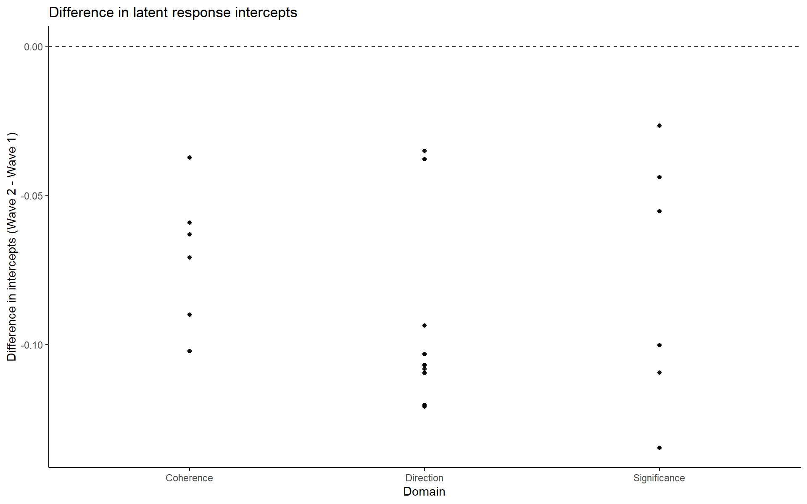
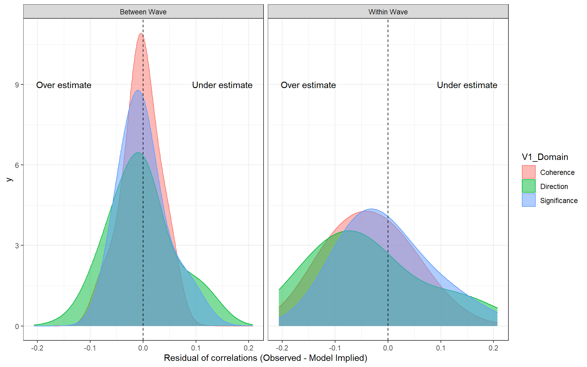
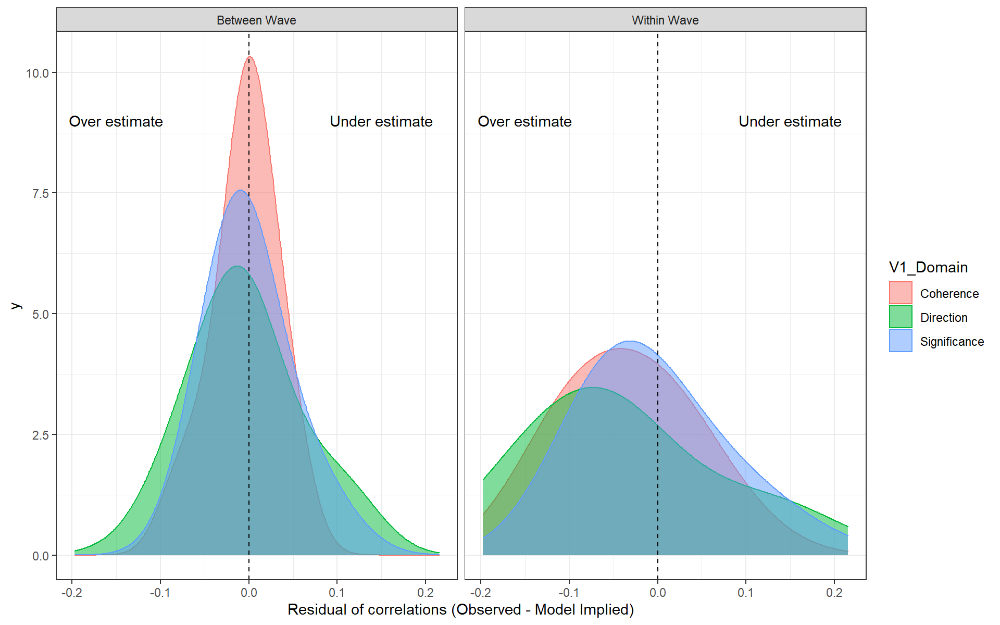

#|cache=T
#|autodept=T
#|cache.comments=T
knitr::opts_chunk$set(
autodep = TRUE, cache=TRUE, out.width = "100%",
fig.width = 24, fig.asp = 0.625,
tidy = 'formatR'
)Longitudinal Invariance
On this page, longitudinal invariance is discussed in more detail.
# load packages
source("code/load_packages.R")
source("code/load_utility_functions.R")
set.seed(12345) # for replicabilityData
datw1 <- readr::read_csv("data/UBC_Data_Wave1_Clean.csv");Rows: 4058 Columns: 86
── Column specification ────────────────────────────────────────────────────────
Delimiter: ","
chr (17): HSP ID, help, Gender_Other, Culture, Culture_Other, First_Lanuage,...
dbl (69): Gender, Age, Year_School, CG1, CG2, CG3, CI1, CI2, CI3, SS1, SS2, ...
ℹ Use `spec()` to retrieve the full column specification for this data.
ℹ Specify the column types or set `show_col_types = FALSE` to quiet this message.datw1$wave = 1
datw2 <- readr::read_csv("data/UBC_Data_Wave2_Clean.csv")Rows: 4415 Columns: 117
── Column specification ────────────────────────────────────────────────────────
Delimiter: ","
chr (32): HSP ID, help, Gender_Other, Culture, Culture_Other, First_Lanuage,...
dbl (85): duration, Gender, Age, Year_School, CG1, CG2, CG3, CI1, CI2, CI3, ...
ℹ Use `spec()` to retrieve the full column specification for this data.
ℹ Specify the column types or set `show_col_types = FALSE` to quiet this message.datw2$wave = 2
mydata <- full_join(datw1, datw2)Joining, by = c("HSP ID", "help", "Gender", "Gender_Other", "Age", "Culture",
"Culture_Other", "First_Lanuage", "First_Lanuage_O", "First_Lanuage_2",
"English_Years", "English_Fluent", "Nationality", "Years_Canada",
"Old_Move_Canada", "Religion", "Religion_Other", "Handedness", "Political",
"Year_School", "CG1", "CG2", "CG3", "CI1", "CI2", "CI3", "SS1", "SS2", "SS3",
"SO1", "SO2", "SO3", "DM1", "DM2", "DM3", "DP1", "DP2", "DP3", "DG1", "DG2",
"DG3", "HSP ID_decline", "help_decline", "Gender_decline",
"Gender_Other_decline", "Age_decline", "Culture_decline",
"Culture_Other_decline", "First_Lanuage_decline", "First_Lanuage_O_decline",
"First_Lanuage_2_decline", "English_Years_decline", "English_Fluent_decline",
"Nationality_decline", "Years_Canada_decline", "Old_Move_Canada_decline",
"Religion_decline", "Religion_Other_decline", "Handedness_decline",
"Political_decline", "Year_School_decline", "CG1_decline", "CG2_decline",
"CG3_decline", "CI1_decline", "CI2_decline", "CI3_decline", "SS1_decline",
"SS2_decline", "SS3_decline", "SO1_decline", "SO2_decline", "SO3_decline",
"DM1_decline", "DM2_decline", "DM3_decline", "DP1_decline", "DP2_decline",
"DP3_decline", "DG1_decline", "DG2_decline", "DG3_decline",
"item_decline_total", "Age_Group", "keep_case", "wave")ITEMS <- c(paste0("CG",1:3), paste0("CI",1:3), paste0("SS",1:3), paste0("SO",1:3), paste0("DM",1:3), paste0("DP",1:3), paste0("DG",1:3))
analysis.dat <- mydata %>%
filter(keep_case==1) %>%
dplyr::select(all_of(c("HSP ID","wave", "Gender","Age","Year_School",ITEMS)))%>%
group_by(`HSP ID`)%>%
mutate(
person_response_total = n()
) %>%
filter(person_response_total==2)%>%
dplyr::group_by(`HSP ID`, wave) %>%
dplyr::mutate(n = dplyr::n())%>%# make sure there's only 1 per person
filter(n==1)
# convert to "wide" data
wide.analysis.data <- analysis.dat %>%
pivot_wider(
id_cols = "HSP ID",
names_from = "wave",
values_from = all_of(ITEMS)
)Data Summary
# data summary statsMeasurement Model
The basic measurement model is shown below (in lavaan syntax) and in the path diagram.
base_model <- "
C =~ NA*CG1 + CG2 + CG3 + CI1 + CI2 + CI3
S =~ NA*SS1 + SS2 + SS3 + SO1 + SO2 + SO3
D =~ NA*DM1 + DM2 + DM3 + DP1 + DP2 + DP3 + DG1 + DG2 + DG3
C ~~ S + D
S ~~ D
C ~~ 1*C
S ~~ 1*S
D ~~ 1*D
"
# longitudinal equivalent
configural.model.wide <- "
C1 =~ NA*CG1_1 + CG2_1 + CG3_1 + CI1_1 + CI2_1 + CI3_1
S1 =~ NA*SS1_1 + SS2_1 + SS3_1 + SO1_1 + SO2_1 + SO3_1
D1 =~ NA*DM1_1 + DM2_1 + DM3_1 + DP1_1 + DP2_1 + DP3_1 + DG1_1 + DG2_1 + DG3_1
C1 ~~ S1 + D1
S1 ~~ D1
C1 ~~ 1*C1
S1 ~~ 1*S1
D1 ~~ 1*D1
C2 =~ NA*CG1_2 + CG2_2 + CG3_2 + CI1_2 + CI2_2 + CI3_2
S2 =~ NA*SS1_2 + SS2_2 + SS3_2 + SO1_2 + SO2_2 + SO3_2
D2 =~ NA*DM1_2 + DM2_2 + DM3_2 + DP1_2 + DP2_2 + DP3_2 + DG1_2 + DG2_2 + DG3_2
C2 ~~ S2 + D2
S2 ~~ D2
C2 ~~ 1*C2
S2 ~~ 1*S2
D2 ~~ 1*D2
# cross wave factor covariances
C1 ~~ C2 + S2 + D2
S1 ~~ C2 + S2 + D2
D1 ~~ C2 + S2 + D2
# cross wave item residual covariances
CG1_1 ~~ CG1_2
CG2_1 ~~ CG2_2
CG3_1 ~~ CG3_2
CI1_1 ~~ CI1_2
CI2_1 ~~ CI2_2
CI3_1 ~~ CI3_2
SS1_1 ~~ SS1_2
SS2_1 ~~ SS2_2
SS3_1 ~~ SS3_2
SO1_1 ~~ SO1_2
SO2_1 ~~ SO2_2
SO3_1 ~~ SO3_2
DM1_1 ~~ DM1_2
DM2_1 ~~ DM2_2
DM3_1 ~~ DM3_2
DP1_1 ~~ DP1_2
DP2_1 ~~ DP2_2
DP3_1 ~~ DP3_2
DG1_1 ~~ DG1_2
DG2_1 ~~ DG2_2
DG3_1 ~~ DG3_2
"Configural Invariance
nPerm <- 1000 # for testing - for full analysis use 1000/10000
# robust not available for categorical model
myAFIs <- c("chisq", "chisq.scaled", "cfi", "cfi.scaled", "rmsea", "rmsea.scaled",
"srmr")
# obtain multigroup syntax
syntax.config <- measEq.syntax(configural.model = base_model, data = analysis.dat,
ordered = T, parameterization = "delta", ID.cat = "Wu.Estabrook.2016", ID.fac = "std.lv",
group.equal = "configural", group = "wave")
mod.config <- as.character(syntax.config)
cat(mod.config)## LOADINGS:
C =~ c(NA, NA)*CG1 + c(lambda.1_1.g1, lambda.1_1.g2)*CG1
C =~ c(NA, NA)*CG2 + c(lambda.2_1.g1, lambda.2_1.g2)*CG2
C =~ c(NA, NA)*CG3 + c(lambda.3_1.g1, lambda.3_1.g2)*CG3
C =~ c(NA, NA)*CI1 + c(lambda.4_1.g1, lambda.4_1.g2)*CI1
C =~ c(NA, NA)*CI2 + c(lambda.5_1.g1, lambda.5_1.g2)*CI2
C =~ c(NA, NA)*CI3 + c(lambda.6_1.g1, lambda.6_1.g2)*CI3
S =~ c(NA, NA)*SS1 + c(lambda.7_2.g1, lambda.7_2.g2)*SS1
S =~ c(NA, NA)*SS2 + c(lambda.8_2.g1, lambda.8_2.g2)*SS2
S =~ c(NA, NA)*SS3 + c(lambda.9_2.g1, lambda.9_2.g2)*SS3
S =~ c(NA, NA)*SO1 + c(lambda.10_2.g1, lambda.10_2.g2)*SO1
S =~ c(NA, NA)*SO2 + c(lambda.11_2.g1, lambda.11_2.g2)*SO2
S =~ c(NA, NA)*SO3 + c(lambda.12_2.g1, lambda.12_2.g2)*SO3
D =~ c(NA, NA)*DM1 + c(lambda.13_3.g1, lambda.13_3.g2)*DM1
D =~ c(NA, NA)*DM2 + c(lambda.14_3.g1, lambda.14_3.g2)*DM2
D =~ c(NA, NA)*DM3 + c(lambda.15_3.g1, lambda.15_3.g2)*DM3
D =~ c(NA, NA)*DP1 + c(lambda.16_3.g1, lambda.16_3.g2)*DP1
D =~ c(NA, NA)*DP2 + c(lambda.17_3.g1, lambda.17_3.g2)*DP2
D =~ c(NA, NA)*DP3 + c(lambda.18_3.g1, lambda.18_3.g2)*DP3
D =~ c(NA, NA)*DG1 + c(lambda.19_3.g1, lambda.19_3.g2)*DG1
D =~ c(NA, NA)*DG2 + c(lambda.20_3.g1, lambda.20_3.g2)*DG2
D =~ c(NA, NA)*DG3 + c(lambda.21_3.g1, lambda.21_3.g2)*DG3
## THRESHOLDS:
CG1 | c(NA, NA)*t1 + c(CG1.thr1.g1, CG1.thr1.g2)*t1
CG1 | c(NA, NA)*t2 + c(CG1.thr2.g1, CG1.thr2.g2)*t2
CG1 | c(NA, NA)*t3 + c(CG1.thr3.g1, CG1.thr3.g2)*t3
CG1 | c(NA, NA)*t4 + c(CG1.thr4.g1, CG1.thr4.g2)*t4
CG1 | c(NA, NA)*t5 + c(CG1.thr5.g1, CG1.thr5.g2)*t5
CG1 | c(NA, NA)*t6 + c(CG1.thr6.g1, CG1.thr6.g2)*t6
CG2 | c(NA, NA)*t1 + c(CG2.thr1.g1, CG2.thr1.g2)*t1
CG2 | c(NA, NA)*t2 + c(CG2.thr2.g1, CG2.thr2.g2)*t2
CG2 | c(NA, NA)*t3 + c(CG2.thr3.g1, CG2.thr3.g2)*t3
CG2 | c(NA, NA)*t4 + c(CG2.thr4.g1, CG2.thr4.g2)*t4
CG2 | c(NA, NA)*t5 + c(CG2.thr5.g1, CG2.thr5.g2)*t5
CG2 | c(NA, NA)*t6 + c(CG2.thr6.g1, CG2.thr6.g2)*t6
CG3 | c(NA, NA)*t1 + c(CG3.thr1.g1, CG3.thr1.g2)*t1
CG3 | c(NA, NA)*t2 + c(CG3.thr2.g1, CG3.thr2.g2)*t2
CG3 | c(NA, NA)*t3 + c(CG3.thr3.g1, CG3.thr3.g2)*t3
CG3 | c(NA, NA)*t4 + c(CG3.thr4.g1, CG3.thr4.g2)*t4
CG3 | c(NA, NA)*t5 + c(CG3.thr5.g1, CG3.thr5.g2)*t5
CG3 | c(NA, NA)*t6 + c(CG3.thr6.g1, CG3.thr6.g2)*t6
CI1 | c(NA, NA)*t1 + c(CI1.thr1.g1, CI1.thr1.g2)*t1
CI1 | c(NA, NA)*t2 + c(CI1.thr2.g1, CI1.thr2.g2)*t2
CI1 | c(NA, NA)*t3 + c(CI1.thr3.g1, CI1.thr3.g2)*t3
CI1 | c(NA, NA)*t4 + c(CI1.thr4.g1, CI1.thr4.g2)*t4
CI1 | c(NA, NA)*t5 + c(CI1.thr5.g1, CI1.thr5.g2)*t5
CI1 | c(NA, NA)*t6 + c(CI1.thr6.g1, CI1.thr6.g2)*t6
CI2 | c(NA, NA)*t1 + c(CI2.thr1.g1, CI2.thr1.g2)*t1
CI2 | c(NA, NA)*t2 + c(CI2.thr2.g1, CI2.thr2.g2)*t2
CI2 | c(NA, NA)*t3 + c(CI2.thr3.g1, CI2.thr3.g2)*t3
CI2 | c(NA, NA)*t4 + c(CI2.thr4.g1, CI2.thr4.g2)*t4
CI2 | c(NA, NA)*t5 + c(CI2.thr5.g1, CI2.thr5.g2)*t5
CI2 | c(NA, NA)*t6 + c(CI2.thr6.g1, CI2.thr6.g2)*t6
CI3 | c(NA, NA)*t1 + c(CI3.thr1.g1, CI3.thr1.g2)*t1
CI3 | c(NA, NA)*t2 + c(CI3.thr2.g1, CI3.thr2.g2)*t2
CI3 | c(NA, NA)*t3 + c(CI3.thr3.g1, CI3.thr3.g2)*t3
CI3 | c(NA, NA)*t4 + c(CI3.thr4.g1, CI3.thr4.g2)*t4
CI3 | c(NA, NA)*t5 + c(CI3.thr5.g1, CI3.thr5.g2)*t5
CI3 | c(NA, NA)*t6 + c(CI3.thr6.g1, CI3.thr6.g2)*t6
SS1 | c(NA, NA)*t1 + c(SS1.thr1.g1, SS1.thr1.g2)*t1
SS1 | c(NA, NA)*t2 + c(SS1.thr2.g1, SS1.thr2.g2)*t2
SS1 | c(NA, NA)*t3 + c(SS1.thr3.g1, SS1.thr3.g2)*t3
SS1 | c(NA, NA)*t4 + c(SS1.thr4.g1, SS1.thr4.g2)*t4
SS1 | c(NA, NA)*t5 + c(SS1.thr5.g1, SS1.thr5.g2)*t5
SS1 | c(NA, NA)*t6 + c(SS1.thr6.g1, SS1.thr6.g2)*t6
SS2 | c(NA, NA)*t1 + c(SS2.thr1.g1, SS2.thr1.g2)*t1
SS2 | c(NA, NA)*t2 + c(SS2.thr2.g1, SS2.thr2.g2)*t2
SS2 | c(NA, NA)*t3 + c(SS2.thr3.g1, SS2.thr3.g2)*t3
SS2 | c(NA, NA)*t4 + c(SS2.thr4.g1, SS2.thr4.g2)*t4
SS2 | c(NA, NA)*t5 + c(SS2.thr5.g1, SS2.thr5.g2)*t5
SS2 | c(NA, NA)*t6 + c(SS2.thr6.g1, SS2.thr6.g2)*t6
SS3 | c(NA, NA)*t1 + c(SS3.thr1.g1, SS3.thr1.g2)*t1
SS3 | c(NA, NA)*t2 + c(SS3.thr2.g1, SS3.thr2.g2)*t2
SS3 | c(NA, NA)*t3 + c(SS3.thr3.g1, SS3.thr3.g2)*t3
SS3 | c(NA, NA)*t4 + c(SS3.thr4.g1, SS3.thr4.g2)*t4
SS3 | c(NA, NA)*t5 + c(SS3.thr5.g1, SS3.thr5.g2)*t5
SS3 | c(NA, NA)*t6 + c(SS3.thr6.g1, SS3.thr6.g2)*t6
SO1 | c(NA, NA)*t1 + c(SO1.thr1.g1, SO1.thr1.g2)*t1
SO1 | c(NA, NA)*t2 + c(SO1.thr2.g1, SO1.thr2.g2)*t2
SO1 | c(NA, NA)*t3 + c(SO1.thr3.g1, SO1.thr3.g2)*t3
SO1 | c(NA, NA)*t4 + c(SO1.thr4.g1, SO1.thr4.g2)*t4
SO1 | c(NA, NA)*t5 + c(SO1.thr5.g1, SO1.thr5.g2)*t5
SO1 | c(NA, NA)*t6 + c(SO1.thr6.g1, SO1.thr6.g2)*t6
SO2 | c(NA, NA)*t1 + c(SO2.thr1.g1, SO2.thr1.g2)*t1
SO2 | c(NA, NA)*t2 + c(SO2.thr2.g1, SO2.thr2.g2)*t2
SO2 | c(NA, NA)*t3 + c(SO2.thr3.g1, SO2.thr3.g2)*t3
SO2 | c(NA, NA)*t4 + c(SO2.thr4.g1, SO2.thr4.g2)*t4
SO2 | c(NA, NA)*t5 + c(SO2.thr5.g1, SO2.thr5.g2)*t5
SO2 | c(NA, NA)*t6 + c(SO2.thr6.g1, SO2.thr6.g2)*t6
SO3 | c(NA, NA)*t1 + c(SO3.thr1.g1, SO3.thr1.g2)*t1
SO3 | c(NA, NA)*t2 + c(SO3.thr2.g1, SO3.thr2.g2)*t2
SO3 | c(NA, NA)*t3 + c(SO3.thr3.g1, SO3.thr3.g2)*t3
SO3 | c(NA, NA)*t4 + c(SO3.thr4.g1, SO3.thr4.g2)*t4
SO3 | c(NA, NA)*t5 + c(SO3.thr5.g1, SO3.thr5.g2)*t5
SO3 | c(NA, NA)*t6 + c(SO3.thr6.g1, SO3.thr6.g2)*t6
DM1 | c(NA, NA)*t1 + c(DM1.thr1.g1, DM1.thr1.g2)*t1
DM1 | c(NA, NA)*t2 + c(DM1.thr2.g1, DM1.thr2.g2)*t2
DM1 | c(NA, NA)*t3 + c(DM1.thr3.g1, DM1.thr3.g2)*t3
DM1 | c(NA, NA)*t4 + c(DM1.thr4.g1, DM1.thr4.g2)*t4
DM1 | c(NA, NA)*t5 + c(DM1.thr5.g1, DM1.thr5.g2)*t5
DM1 | c(NA, NA)*t6 + c(DM1.thr6.g1, DM1.thr6.g2)*t6
DM2 | c(NA, NA)*t1 + c(DM2.thr1.g1, DM2.thr1.g2)*t1
DM2 | c(NA, NA)*t2 + c(DM2.thr2.g1, DM2.thr2.g2)*t2
DM2 | c(NA, NA)*t3 + c(DM2.thr3.g1, DM2.thr3.g2)*t3
DM2 | c(NA, NA)*t4 + c(DM2.thr4.g1, DM2.thr4.g2)*t4
DM2 | c(NA, NA)*t5 + c(DM2.thr5.g1, DM2.thr5.g2)*t5
DM2 | c(NA, NA)*t6 + c(DM2.thr6.g1, DM2.thr6.g2)*t6
DM3 | c(NA, NA)*t1 + c(DM3.thr1.g1, DM3.thr1.g2)*t1
DM3 | c(NA, NA)*t2 + c(DM3.thr2.g1, DM3.thr2.g2)*t2
DM3 | c(NA, NA)*t3 + c(DM3.thr3.g1, DM3.thr3.g2)*t3
DM3 | c(NA, NA)*t4 + c(DM3.thr4.g1, DM3.thr4.g2)*t4
DM3 | c(NA, NA)*t5 + c(DM3.thr5.g1, DM3.thr5.g2)*t5
DM3 | c(NA, NA)*t6 + c(DM3.thr6.g1, DM3.thr6.g2)*t6
DP1 | c(NA, NA)*t1 + c(DP1.thr1.g1, DP1.thr1.g2)*t1
DP1 | c(NA, NA)*t2 + c(DP1.thr2.g1, DP1.thr2.g2)*t2
DP1 | c(NA, NA)*t3 + c(DP1.thr3.g1, DP1.thr3.g2)*t3
DP1 | c(NA, NA)*t4 + c(DP1.thr4.g1, DP1.thr4.g2)*t4
DP1 | c(NA, NA)*t5 + c(DP1.thr5.g1, DP1.thr5.g2)*t5
DP1 | c(NA, NA)*t6 + c(DP1.thr6.g1, DP1.thr6.g2)*t6
DP2 | c(NA, NA)*t1 + c(DP2.thr1.g1, DP2.thr1.g2)*t1
DP2 | c(NA, NA)*t2 + c(DP2.thr2.g1, DP2.thr2.g2)*t2
DP2 | c(NA, NA)*t3 + c(DP2.thr3.g1, DP2.thr3.g2)*t3
DP2 | c(NA, NA)*t4 + c(DP2.thr4.g1, DP2.thr4.g2)*t4
DP2 | c(NA, NA)*t5 + c(DP2.thr5.g1, DP2.thr5.g2)*t5
DP2 | c(NA, NA)*t6 + c(DP2.thr6.g1, DP2.thr6.g2)*t6
DP3 | c(NA, NA)*t1 + c(DP3.thr1.g1, DP3.thr1.g2)*t1
DP3 | c(NA, NA)*t2 + c(DP3.thr2.g1, DP3.thr2.g2)*t2
DP3 | c(NA, NA)*t3 + c(DP3.thr3.g1, DP3.thr3.g2)*t3
DP3 | c(NA, NA)*t4 + c(DP3.thr4.g1, DP3.thr4.g2)*t4
DP3 | c(NA, NA)*t5 + c(DP3.thr5.g1, DP3.thr5.g2)*t5
DP3 | c(NA, NA)*t6 + c(DP3.thr6.g1, DP3.thr6.g2)*t6
DG1 | c(NA, NA)*t1 + c(DG1.thr1.g1, DG1.thr1.g2)*t1
DG1 | c(NA, NA)*t2 + c(DG1.thr2.g1, DG1.thr2.g2)*t2
DG1 | c(NA, NA)*t3 + c(DG1.thr3.g1, DG1.thr3.g2)*t3
DG1 | c(NA, NA)*t4 + c(DG1.thr4.g1, DG1.thr4.g2)*t4
DG1 | c(NA, NA)*t5 + c(DG1.thr5.g1, DG1.thr5.g2)*t5
DG1 | c(NA, NA)*t6 + c(DG1.thr6.g1, DG1.thr6.g2)*t6
DG2 | c(NA, NA)*t1 + c(DG2.thr1.g1, DG2.thr1.g2)*t1
DG2 | c(NA, NA)*t2 + c(DG2.thr2.g1, DG2.thr2.g2)*t2
DG2 | c(NA, NA)*t3 + c(DG2.thr3.g1, DG2.thr3.g2)*t3
DG2 | c(NA, NA)*t4 + c(DG2.thr4.g1, DG2.thr4.g2)*t4
DG2 | c(NA, NA)*t5 + c(DG2.thr5.g1, DG2.thr5.g2)*t5
DG2 | c(NA, NA)*t6 + c(DG2.thr6.g1, DG2.thr6.g2)*t6
DG3 | c(NA, NA)*t1 + c(DG3.thr1.g1, DG3.thr1.g2)*t1
DG3 | c(NA, NA)*t2 + c(DG3.thr2.g1, DG3.thr2.g2)*t2
DG3 | c(NA, NA)*t3 + c(DG3.thr3.g1, DG3.thr3.g2)*t3
DG3 | c(NA, NA)*t4 + c(DG3.thr4.g1, DG3.thr4.g2)*t4
DG3 | c(NA, NA)*t5 + c(DG3.thr5.g1, DG3.thr5.g2)*t5
DG3 | c(NA, NA)*t6 + c(DG3.thr6.g1, DG3.thr6.g2)*t6
## INTERCEPTS:
CG1 ~ c(0, 0)*1 + c(nu.1.g1, nu.1.g2)*1
CG2 ~ c(0, 0)*1 + c(nu.2.g1, nu.2.g2)*1
CG3 ~ c(0, 0)*1 + c(nu.3.g1, nu.3.g2)*1
CI1 ~ c(0, 0)*1 + c(nu.4.g1, nu.4.g2)*1
CI2 ~ c(0, 0)*1 + c(nu.5.g1, nu.5.g2)*1
CI3 ~ c(0, 0)*1 + c(nu.6.g1, nu.6.g2)*1
SS1 ~ c(0, 0)*1 + c(nu.7.g1, nu.7.g2)*1
SS2 ~ c(0, 0)*1 + c(nu.8.g1, nu.8.g2)*1
SS3 ~ c(0, 0)*1 + c(nu.9.g1, nu.9.g2)*1
SO1 ~ c(0, 0)*1 + c(nu.10.g1, nu.10.g2)*1
SO2 ~ c(0, 0)*1 + c(nu.11.g1, nu.11.g2)*1
SO3 ~ c(0, 0)*1 + c(nu.12.g1, nu.12.g2)*1
DM1 ~ c(0, 0)*1 + c(nu.13.g1, nu.13.g2)*1
DM2 ~ c(0, 0)*1 + c(nu.14.g1, nu.14.g2)*1
DM3 ~ c(0, 0)*1 + c(nu.15.g1, nu.15.g2)*1
DP1 ~ c(0, 0)*1 + c(nu.16.g1, nu.16.g2)*1
DP2 ~ c(0, 0)*1 + c(nu.17.g1, nu.17.g2)*1
DP3 ~ c(0, 0)*1 + c(nu.18.g1, nu.18.g2)*1
DG1 ~ c(0, 0)*1 + c(nu.19.g1, nu.19.g2)*1
DG2 ~ c(0, 0)*1 + c(nu.20.g1, nu.20.g2)*1
DG3 ~ c(0, 0)*1 + c(nu.21.g1, nu.21.g2)*1
## SCALING FACTORS:
CG1 ~*~ c(1, 1)*CG1
CG2 ~*~ c(1, 1)*CG2
CG3 ~*~ c(1, 1)*CG3
CI1 ~*~ c(1, 1)*CI1
CI2 ~*~ c(1, 1)*CI2
CI3 ~*~ c(1, 1)*CI3
SS1 ~*~ c(1, 1)*SS1
SS2 ~*~ c(1, 1)*SS2
SS3 ~*~ c(1, 1)*SS3
SO1 ~*~ c(1, 1)*SO1
SO2 ~*~ c(1, 1)*SO2
SO3 ~*~ c(1, 1)*SO3
DM1 ~*~ c(1, 1)*DM1
DM2 ~*~ c(1, 1)*DM2
DM3 ~*~ c(1, 1)*DM3
DP1 ~*~ c(1, 1)*DP1
DP2 ~*~ c(1, 1)*DP2
DP3 ~*~ c(1, 1)*DP3
DG1 ~*~ c(1, 1)*DG1
DG2 ~*~ c(1, 1)*DG2
DG3 ~*~ c(1, 1)*DG3
## LATENT MEANS/INTERCEPTS:
C ~ c(0, 0)*1 + c(alpha.1.g1, alpha.1.g2)*1
S ~ c(0, 0)*1 + c(alpha.2.g1, alpha.2.g2)*1
D ~ c(0, 0)*1 + c(alpha.3.g1, alpha.3.g2)*1
## COMMON-FACTOR VARIANCES:
C ~~ c(1, 1)*C + c(psi.1_1.g1, psi.1_1.g2)*C
S ~~ c(1, 1)*S + c(psi.2_2.g1, psi.2_2.g2)*S
D ~~ c(1, 1)*D + c(psi.3_3.g1, psi.3_3.g2)*D
## COMMON-FACTOR COVARIANCES:
C ~~ c(NA, NA)*S + c(psi.2_1.g1, psi.2_1.g2)*S
C ~~ c(NA, NA)*D + c(psi.3_1.g1, psi.3_1.g2)*D
S ~~ c(NA, NA)*D + c(psi.3_2.g1, psi.3_2.g2)*Dfit.config <- cfa(mod.config, data = analysis.dat, group = "wave")
summary(fit.config, standardized = T, fit.measures = T)lavaan 0.6-12 ended normally after 28 iterations
Estimator DWLS
Optimization method NLMINB
Number of model parameters 300
Number of observations per group:
1 1234
2 1234
Model Test User Model:
Standard Robust
Test Statistic 6718.734 9490.142
Degrees of freedom 372 372
P-value (Chi-square) 0.000 0.000
Scaling correction factor 0.719
Shift parameter for each group:
1 75.902
2 75.902
simple second-order correction
Test statistic for each group:
1 2987.822 4228.662
2 3730.912 5261.480
Model Test Baseline Model:
Test statistic 471860.895 106251.869
Degrees of freedom 420 420
P-value 0.000 0.000
Scaling correction factor 4.455
User Model versus Baseline Model:
Comparative Fit Index (CFI) 0.987 0.914
Tucker-Lewis Index (TLI) 0.985 0.903
Robust Comparative Fit Index (CFI) NA
Robust Tucker-Lewis Index (TLI) NA
Root Mean Square Error of Approximation:
RMSEA 0.118 0.141
90 Percent confidence interval - lower 0.115 0.139
90 Percent confidence interval - upper 0.120 0.143
P-value RMSEA <= 0.05 0.000 0.000
Robust RMSEA NA
90 Percent confidence interval - lower NA
90 Percent confidence interval - upper NA
Standardized Root Mean Square Residual:
SRMR 0.067 0.067
Parameter Estimates:
Standard errors Robust.sem
Information Expected
Information saturated (h1) model Unstructured
Group 1 [1]:
Latent Variables:
Estimate Std.Err z-value P(>|z|) Std.lv Std.all
C =~
CG1 (l.1_) 0.857 0.008 104.638 0.000 0.857 0.857
CG2 (l.2_) 0.851 0.008 104.197 0.000 0.851 0.851
CG3 (l.3_) 0.785 0.011 69.835 0.000 0.785 0.785
CI1 (l.4_) 0.894 0.009 102.191 0.000 0.894 0.894
CI2 (l.5_) 0.656 0.018 37.247 0.000 0.656 0.656
CI3 (l.6_) 0.756 0.014 53.890 0.000 0.756 0.756
S =~
SS1 (l.7_) 0.797 0.011 69.928 0.000 0.797 0.797
SS2 (l.8_) 0.698 0.015 45.286 0.000 0.698 0.698
SS3 (l.9_) 0.885 0.009 97.624 0.000 0.885 0.885
SO1 (l.10) 0.656 0.017 38.783 0.000 0.656 0.656
SO2 (l.11) 0.732 0.014 51.501 0.000 0.732 0.732
SO3 (l.12) 0.705 0.015 46.421 0.000 0.705 0.705
D =~
DM1 (l.13) 0.767 0.013 61.263 0.000 0.767 0.767
DM2 (l.14) 0.836 0.008 98.614 0.000 0.836 0.836
DM3 (l.15) 0.882 0.007 133.367 0.000 0.882 0.882
DP1 (l.16) 0.900 0.006 140.523 0.000 0.900 0.900
DP2 (l.17) 0.852 0.009 95.498 0.000 0.852 0.852
DP3 (l.18) 0.708 0.014 50.716 0.000 0.708 0.708
DG1 (l.19) 0.749 0.013 59.756 0.000 0.749 0.749
DG2 (l.20) 0.695 0.014 48.819 0.000 0.695 0.695
DG3 (l.21) 0.669 0.015 45.221 0.000 0.669 0.669
Covariances:
Estimate Std.Err z-value P(>|z|) Std.lv Std.all
C ~~
S (p.2_) 0.747 0.013 58.486 0.000 0.747 0.747
D (p.3_1) 0.706 0.013 53.235 0.000 0.706 0.706
S ~~
D (p.3_2) 0.786 0.012 65.280 0.000 0.786 0.786
Intercepts:
Estimate Std.Err z-value P(>|z|) Std.lv Std.all
.CG1 (n.1.) 0.000 0.000 0.000
.CG2 (n.2.) 0.000 0.000 0.000
.CG3 (n.3.) 0.000 0.000 0.000
.CI1 (n.4.) 0.000 0.000 0.000
.CI2 (n.5.) 0.000 0.000 0.000
.CI3 (n.6.) 0.000 0.000 0.000
.SS1 (n.7.) 0.000 0.000 0.000
.SS2 (n.8.) 0.000 0.000 0.000
.SS3 (n.9.) 0.000 0.000 0.000
.SO1 (n.10) 0.000 0.000 0.000
.SO2 (n.11) 0.000 0.000 0.000
.SO3 (n.12) 0.000 0.000 0.000
.DM1 (n.13) 0.000 0.000 0.000
.DM2 (n.14) 0.000 0.000 0.000
.DM3 (n.15) 0.000 0.000 0.000
.DP1 (n.16) 0.000 0.000 0.000
.DP2 (n.17) 0.000 0.000 0.000
.DP3 (n.18) 0.000 0.000 0.000
.DG1 (n.19) 0.000 0.000 0.000
.DG2 (n.20) 0.000 0.000 0.000
.DG3 (n.21) 0.000 0.000 0.000
C (a.1.) 0.000 0.000 0.000
S (a.2.) 0.000 0.000 0.000
D (a.3.) 0.000 0.000 0.000
Thresholds:
Estimate Std.Err z-value P(>|z|) Std.lv Std.all
CG1|t1 (CG1.1) -1.326 0.050 -26.627 0.000 -1.326 -1.326
CG1|t2 (CG1.2) -0.577 0.038 -15.206 0.000 -0.577 -0.577
CG1|t3 (CG1.3) -0.288 0.036 -7.957 0.000 -0.288 -0.288
CG1|t4 (CG1.4) 0.400 0.037 10.896 0.000 0.400 0.400
CG1|t5 (CG1.5) 1.030 0.044 23.675 0.000 1.030 1.030
CG1|t6 (CG1.6) 1.745 0.064 27.057 0.000 1.745 1.745
CG2|t1 (CG2.1) -1.448 0.053 -27.195 0.000 -1.448 -1.448
CG2|t2 (CG2.2) -0.628 0.038 -16.367 0.000 -0.628 -0.628
CG2|t3 (CG2.3) -0.282 0.036 -7.787 0.000 -0.282 -0.282
CG2|t4 (CG2.4) 0.365 0.037 9.993 0.000 0.365 0.365
CG2|t5 (CG2.5) 1.054 0.044 24.002 0.000 1.054 1.054
CG2|t6 (CG2.6) 1.783 0.066 26.893 0.000 1.783 1.783
CG3|t1 (CG3.1) -1.905 0.073 -26.174 0.000 -1.905 -1.905
CG3|t2 (CG3.2) -1.120 0.045 -24.811 0.000 -1.120 -1.120
CG3|t3 (CG3.3) -0.738 0.039 -18.710 0.000 -0.738 -0.738
CG3|t4 (CG3.4) -0.137 0.036 -3.812 0.000 -0.137 -0.137
CG3|t5 (CG3.5) 0.694 0.039 17.790 0.000 0.694 0.694
CG3|t6 (CG3.6) 1.605 0.059 27.379 0.000 1.605 1.605
CI1|t1 (CI1.1) -1.497 0.055 -27.315 0.000 -1.497 -1.497
CI1|t2 (CI1.2) -0.804 0.040 -19.991 0.000 -0.804 -0.804
CI1|t3 (CI1.3) -0.411 0.037 -11.178 0.000 -0.411 -0.411
CI1|t4 (CI1.4) 0.165 0.036 4.608 0.000 0.165 0.165
CI1|t5 (CI1.5) 0.810 0.040 20.096 0.000 0.810 0.810
CI1|t6 (CI1.6) 1.683 0.062 27.253 0.000 1.683 1.683
CI2|t1 (CI2.1) -2.204 0.094 -23.363 0.000 -2.204 -2.204
CI2|t2 (CI2.2) -1.542 0.056 -27.376 0.000 -1.542 -1.542
CI2|t3 (CI2.3) -1.013 0.043 -23.437 0.000 -1.013 -1.013
CI2|t4 (CI2.4) -0.492 0.037 -13.200 0.000 -0.492 -0.492
CI2|t5 (CI2.5) 0.434 0.037 11.741 0.000 0.434 0.434
CI2|t6 (CI2.6) 1.576 0.058 27.389 0.000 1.576 1.576
CI3|t1 (CI3.1) -2.016 0.080 -25.285 0.000 -2.016 -2.016
CI3|t2 (CI3.2) -1.217 0.047 -25.797 0.000 -1.217 -1.217
CI3|t3 (CI3.3) -0.793 0.040 -19.779 0.000 -0.793 -0.793
CI3|t4 (CI3.4) -0.184 0.036 -5.119 0.000 -0.184 -0.184
CI3|t5 (CI3.5) 0.544 0.038 14.428 0.000 0.544 0.544
CI3|t6 (CI3.6) 1.361 0.051 26.829 0.000 1.361 1.361
SS1|t1 (SS1.1) -1.764 0.065 -26.980 0.000 -1.764 -1.764
SS1|t2 (SS1.2) -1.076 0.044 -24.277 0.000 -1.076 -1.076
SS1|t3 (SS1.3) -0.579 0.038 -15.262 0.000 -0.579 -0.579
SS1|t4 (SS1.4) 0.012 0.036 0.341 0.733 0.012 0.012
SS1|t5 (SS1.5) 0.733 0.039 18.602 0.000 0.733 0.733
SS1|t6 (SS1.6) 1.619 0.059 27.366 0.000 1.619 1.619
SS2|t1 (SS2.1) -1.835 0.069 -26.622 0.000 -1.835 -1.835
SS2|t2 (SS2.2) -1.356 0.051 -26.802 0.000 -1.356 -1.356
SS2|t3 (SS2.3) -0.910 0.042 -21.858 0.000 -0.910 -0.910
SS2|t4 (SS2.4) -0.322 0.036 -8.863 0.000 -0.322 -0.322
SS2|t5 (SS2.5) 0.253 0.036 6.993 0.000 0.253 0.253
SS2|t6 (SS2.6) 1.159 0.046 25.237 0.000 1.159 1.159
SS3|t1 (SS3.1) -1.709 0.063 -27.182 0.000 -1.709 -1.709
SS3|t2 (SS3.2) -0.888 0.041 -21.501 0.000 -0.888 -0.888
SS3|t3 (SS3.3) -0.398 0.037 -10.840 0.000 -0.398 -0.398
SS3|t4 (SS3.4) 0.186 0.036 5.176 0.000 0.186 0.186
SS3|t5 (SS3.5) 0.818 0.040 20.254 0.000 0.818 0.818
SS3|t6 (SS3.6) 1.597 0.058 27.384 0.000 1.597 1.597
SO1|t1 (SO1.1) -2.032 0.081 -25.143 0.000 -2.032 -2.032
SO1|t2 (SO1.2) -1.377 0.051 -26.908 0.000 -1.377 -1.377
SO1|t3 (SO1.3) -0.922 0.042 -22.060 0.000 -0.922 -0.922
SO1|t4 (SO1.4) -0.209 0.036 -5.801 0.000 -0.209 -0.209
SO1|t5 (SO1.5) 0.527 0.038 14.038 0.000 0.527 0.527
SO1|t6 (SO1.6) 1.650 0.060 27.323 0.000 1.650 1.650
SO2|t1 (SO2.1) -1.597 0.058 -27.384 0.000 -1.597 -1.597
SO2|t2 (SO2.2) -0.888 0.041 -21.501 0.000 -0.888 -0.888
SO2|t3 (SO2.3) -0.312 0.036 -8.580 0.000 -0.312 -0.312
SO2|t4 (SO2.4) 0.236 0.036 6.539 0.000 0.236 0.236
SO2|t5 (SO2.5) 1.009 0.043 23.389 0.000 1.009 1.009
SO2|t6 (SO2.6) 1.893 0.072 26.260 0.000 1.893 1.893
SO3|t1 (SO3.1) -1.542 0.056 -27.376 0.000 -1.542 -1.542
SO3|t2 (SO3.2) -0.796 0.040 -19.832 0.000 -0.796 -0.796
SO3|t3 (SO3.3) -0.290 0.036 -8.013 0.000 -0.290 -0.290
SO3|t4 (SO3.4) 0.396 0.037 10.783 0.000 0.396 0.396
SO3|t5 (SO3.5) 1.143 0.046 25.069 0.000 1.143 1.143
SO3|t6 (SO3.6) 2.139 0.089 24.076 0.000 2.139 2.139
DM1|t1 (DM1.1) -1.472 0.054 -27.261 0.000 -1.472 -1.472
DM1|t2 (DM1.2) -0.730 0.039 -18.548 0.000 -0.730 -0.730
DM1|t3 (DM1.3) -0.359 0.037 -9.824 0.000 -0.359 -0.359
DM1|t4 (DM1.4) 0.481 0.037 12.920 0.000 0.481 0.481
DM1|t5 (DM1.5) 1.179 0.046 25.442 0.000 1.179 1.179
DM1|t6 (DM1.6) 1.905 0.073 26.174 0.000 1.905 1.905
DM2|t1 (DM2.1) -1.443 0.053 -27.176 0.000 -1.443 -1.443
DM2|t2 (DM2.2) -0.733 0.039 -18.602 0.000 -0.733 -0.733
DM2|t3 (DM2.3) -0.346 0.036 -9.485 0.000 -0.346 -0.346
DM2|t4 (DM2.4) 0.110 0.036 3.073 0.002 0.110 0.110
DM2|t5 (DM2.5) 0.787 0.040 19.673 0.000 0.787 0.787
DM2|t6 (DM2.6) 1.528 0.056 27.363 0.000 1.528 1.528
DM3|t1 (DM3.1) -1.635 0.060 -27.347 0.000 -1.635 -1.635
DM3|t2 (DM3.2) -0.894 0.041 -21.603 0.000 -0.894 -0.894
DM3|t3 (DM3.3) -0.481 0.037 -12.920 0.000 -0.481 -0.481
DM3|t4 (DM3.4) -0.053 0.036 -1.480 0.139 -0.053 -0.053
DM3|t5 (DM3.5) 0.666 0.039 17.190 0.000 0.666 0.666
DM3|t6 (DM3.6) 1.484 0.054 27.290 0.000 1.484 1.484
DP1|t1 (DP1.1) -1.814 0.068 -26.740 0.000 -1.814 -1.814
DP1|t2 (DP1.2) -1.183 0.046 -25.482 0.000 -1.183 -1.183
DP1|t3 (DP1.3) -0.790 0.040 -19.726 0.000 -0.790 -0.790
DP1|t4 (DP1.4) -0.359 0.037 -9.824 0.000 -0.359 -0.359
DP1|t5 (DP1.5) 0.516 0.037 13.759 0.000 0.516 0.516
DP1|t6 (DP1.6) 1.426 0.053 27.118 0.000 1.426 1.426
DP2|t1 (DP2.1) -1.650 0.060 -27.323 0.000 -1.650 -1.650
DP2|t2 (DP2.2) -0.900 0.041 -21.705 0.000 -0.900 -0.900
DP2|t3 (DP2.3) -0.483 0.037 -12.976 0.000 -0.483 -0.483
DP2|t4 (DP2.4) 0.016 0.036 0.455 0.649 0.016 0.016
DP2|t5 (DP2.5) 0.725 0.039 18.440 0.000 0.725 0.725
DP2|t6 (DP2.6) 1.612 0.059 27.373 0.000 1.612 1.612
DP3|t1 (DP3.1) -2.181 0.092 -23.618 0.000 -2.181 -2.181
DP3|t2 (DP3.2) -1.597 0.058 -27.384 0.000 -1.597 -1.597
DP3|t3 (DP3.3) -1.179 0.046 -25.442 0.000 -1.179 -1.179
DP3|t4 (DP3.4) -0.511 0.037 -13.647 0.000 -0.511 -0.511
DP3|t5 (DP3.5) 0.253 0.036 6.993 0.000 0.253 0.253
DP3|t6 (DP3.6) 1.336 0.050 26.687 0.000 1.336 1.336
DG1|t1 (DG1.1) -1.986 0.078 -25.547 0.000 -1.986 -1.986
DG1|t2 (DG1.2) -1.213 0.047 -25.758 0.000 -1.213 -1.213
DG1|t3 (DG1.3) -0.663 0.039 -17.135 0.000 -0.663 -0.663
DG1|t4 (DG1.4) -0.244 0.036 -6.766 0.000 -0.244 -0.244
DG1|t5 (DG1.5) 0.565 0.038 14.929 0.000 0.565 0.565
DG1|t6 (DG1.6) 1.393 0.052 26.983 0.000 1.393 1.393
DG2|t1 (DG2.1) -2.404 0.115 -20.875 0.000 -2.404 -2.404
DG2|t2 (DG2.2) -1.726 0.064 -27.124 0.000 -1.726 -1.726
DG2|t3 (DG2.3) -1.336 0.050 -26.687 0.000 -1.336 -1.336
DG2|t4 (DG2.4) -0.891 0.041 -21.552 0.000 -0.891 -0.891
DG2|t5 (DG2.5) -0.077 0.036 -2.162 0.031 -0.077 -0.077
DG2|t6 (DG2.6) 0.897 0.041 21.654 0.000 0.897 0.897
DG3|t1 (DG3.1) -2.160 0.091 -23.855 0.000 -2.160 -2.160
DG3|t2 (DG3.2) -1.478 0.054 -27.276 0.000 -1.478 -1.478
DG3|t3 (DG3.3) -1.013 0.043 -23.437 0.000 -1.013 -1.013
DG3|t4 (DG3.4) -0.616 0.038 -16.091 0.000 -0.616 -0.616
DG3|t5 (DG3.5) 0.205 0.036 5.687 0.000 0.205 0.205
DG3|t6 (DG3.6) 1.026 0.043 23.627 0.000 1.026 1.026
Variances:
Estimate Std.Err z-value P(>|z|) Std.lv Std.all
C (p.1_) 1.000 1.000 1.000
S (p.2_) 1.000 1.000 1.000
D (p.3_) 1.000 1.000 1.000
.CG1 0.265 0.265 0.265
.CG2 0.276 0.276 0.276
.CG3 0.384 0.384 0.384
.CI1 0.200 0.200 0.200
.CI2 0.570 0.570 0.570
.CI3 0.428 0.428 0.428
.SS1 0.365 0.365 0.365
.SS2 0.513 0.513 0.513
.SS3 0.217 0.217 0.217
.SO1 0.570 0.570 0.570
.SO2 0.464 0.464 0.464
.SO3 0.503 0.503 0.503
.DM1 0.412 0.412 0.412
.DM2 0.301 0.301 0.301
.DM3 0.222 0.222 0.222
.DP1 0.189 0.189 0.189
.DP2 0.273 0.273 0.273
.DP3 0.499 0.499 0.499
.DG1 0.439 0.439 0.439
.DG2 0.517 0.517 0.517
.DG3 0.552 0.552 0.552
Scales y*:
Estimate Std.Err z-value P(>|z|) Std.lv Std.all
CG1 1.000 1.000 1.000
CG2 1.000 1.000 1.000
CG3 1.000 1.000 1.000
CI1 1.000 1.000 1.000
CI2 1.000 1.000 1.000
CI3 1.000 1.000 1.000
SS1 1.000 1.000 1.000
SS2 1.000 1.000 1.000
SS3 1.000 1.000 1.000
SO1 1.000 1.000 1.000
SO2 1.000 1.000 1.000
SO3 1.000 1.000 1.000
DM1 1.000 1.000 1.000
DM2 1.000 1.000 1.000
DM3 1.000 1.000 1.000
DP1 1.000 1.000 1.000
DP2 1.000 1.000 1.000
DP3 1.000 1.000 1.000
DG1 1.000 1.000 1.000
DG2 1.000 1.000 1.000
DG3 1.000 1.000 1.000
Group 2 [2]:
Latent Variables:
Estimate Std.Err z-value P(>|z|) Std.lv Std.all
C =~
CG1 (l.1_) 0.894 0.007 130.142 0.000 0.894 0.894
CG2 (l.2_) 0.901 0.007 136.081 0.000 0.901 0.901
CG3 (l.3_) 0.793 0.011 72.648 0.000 0.793 0.793
CI1 (l.4_) 0.924 0.007 139.768 0.000 0.924 0.924
CI2 (l.5_) 0.707 0.016 44.572 0.000 0.707 0.707
CI3 (l.6_) 0.773 0.013 60.040 0.000 0.773 0.773
S =~
SS1 (l.7_) 0.804 0.011 71.564 0.000 0.804 0.804
SS2 (l.8_) 0.726 0.015 49.186 0.000 0.726 0.726
SS3 (l.9_) 0.903 0.008 107.894 0.000 0.903 0.903
SO1 (l.10) 0.659 0.017 39.858 0.000 0.659 0.659
SO2 (l.11) 0.753 0.013 59.561 0.000 0.753 0.753
SO3 (l.12) 0.754 0.013 59.020 0.000 0.754 0.754
D =~
DM1 (l.13) 0.811 0.010 80.401 0.000 0.811 0.811
DM2 (l.14) 0.871 0.007 119.698 0.000 0.871 0.871
DM3 (l.15) 0.909 0.005 165.442 0.000 0.909 0.909
DP1 (l.16) 0.905 0.006 161.743 0.000 0.905 0.905
DP2 (l.17) 0.869 0.007 117.267 0.000 0.869 0.869
DP3 (l.18) 0.758 0.012 64.969 0.000 0.758 0.758
DG1 (l.19) 0.794 0.011 74.255 0.000 0.794 0.794
DG2 (l.20) 0.727 0.014 52.834 0.000 0.727 0.727
DG3 (l.21) 0.721 0.014 52.919 0.000 0.721 0.721
Covariances:
Estimate Std.Err z-value P(>|z|) Std.lv Std.all
C ~~
S (p.2_) 0.759 0.013 59.779 0.000 0.759 0.759
D (p.3_1) 0.758 0.011 67.341 0.000 0.758 0.758
S ~~
D (p.3_2) 0.827 0.009 92.133 0.000 0.827 0.827
Intercepts:
Estimate Std.Err z-value P(>|z|) Std.lv Std.all
.CG1 (n.1.) 0.000 0.000 0.000
.CG2 (n.2.) 0.000 0.000 0.000
.CG3 (n.3.) 0.000 0.000 0.000
.CI1 (n.4.) 0.000 0.000 0.000
.CI2 (n.5.) 0.000 0.000 0.000
.CI3 (n.6.) 0.000 0.000 0.000
.SS1 (n.7.) 0.000 0.000 0.000
.SS2 (n.8.) 0.000 0.000 0.000
.SS3 (n.9.) 0.000 0.000 0.000
.SO1 (n.10) 0.000 0.000 0.000
.SO2 (n.11) 0.000 0.000 0.000
.SO3 (n.12) 0.000 0.000 0.000
.DM1 (n.13) 0.000 0.000 0.000
.DM2 (n.14) 0.000 0.000 0.000
.DM3 (n.15) 0.000 0.000 0.000
.DP1 (n.16) 0.000 0.000 0.000
.DP2 (n.17) 0.000 0.000 0.000
.DP3 (n.18) 0.000 0.000 0.000
.DG1 (n.19) 0.000 0.000 0.000
.DG2 (n.20) 0.000 0.000 0.000
.DG3 (n.21) 0.000 0.000 0.000
C (a.1.) 0.000 0.000 0.000
S (a.2.) 0.000 0.000 0.000
D (a.3.) 0.000 0.000 0.000
Thresholds:
Estimate Std.Err z-value P(>|z|) Std.lv Std.all
CG1|t1 (CG1.1) -1.307 0.049 -26.503 0.000 -1.307 -1.307
CG1|t2 (CG1.2) -0.486 0.037 -13.032 0.000 -0.486 -0.486
CG1|t3 (CG1.3) -0.120 0.036 -3.357 0.001 -0.120 -0.120
CG1|t4 (CG1.4) 0.370 0.037 10.106 0.000 0.370 0.370
CG1|t5 (CG1.5) 1.079 0.044 24.322 0.000 1.079 1.079
CG1|t6 (CG1.6) 1.858 0.070 26.489 0.000 1.858 1.858
CG2|t1 (CG2.1) -1.312 0.049 -26.535 0.000 -1.312 -1.312
CG2|t2 (CG2.2) -0.525 0.038 -13.982 0.000 -0.525 -0.525
CG2|t3 (CG2.3) -0.147 0.036 -4.096 0.000 -0.147 -0.147
CG2|t4 (CG2.4) 0.427 0.037 11.572 0.000 0.427 0.427
CG2|t5 (CG2.5) 1.140 0.046 25.026 0.000 1.140 1.140
CG2|t6 (CG2.6) 1.869 0.071 26.417 0.000 1.869 1.869
CG3|t1 (CG3.1) -1.709 0.063 -27.182 0.000 -1.709 -1.709
CG3|t2 (CG3.2) -0.979 0.043 -22.954 0.000 -0.979 -0.979
CG3|t3 (CG3.3) -0.611 0.038 -15.981 0.000 -0.611 -0.611
CG3|t4 (CG3.4) -0.083 0.036 -2.333 0.020 -0.083 -0.083
CG3|t5 (CG3.5) 0.757 0.040 19.086 0.000 0.757 0.757
CG3|t6 (CG3.6) 1.619 0.059 27.366 0.000 1.619 1.619
CI1|t1 (CI1.1) -1.454 0.053 -27.212 0.000 -1.454 -1.454
CI1|t2 (CI1.2) -0.754 0.040 -19.032 0.000 -0.754 -0.754
CI1|t3 (CI1.3) -0.299 0.036 -8.240 0.000 -0.299 -0.299
CI1|t4 (CI1.4) 0.194 0.036 5.403 0.000 0.194 0.194
CI1|t5 (CI1.5) 0.885 0.041 21.450 0.000 0.885 0.885
CI1|t6 (CI1.6) 1.717 0.063 27.154 0.000 1.717 1.717
CI2|t1 (CI2.1) -2.065 0.083 -24.830 0.000 -2.065 -2.065
CI2|t2 (CI2.2) -1.460 0.054 -27.229 0.000 -1.460 -1.460
CI2|t3 (CI2.3) -1.026 0.043 -23.627 0.000 -1.026 -1.026
CI2|t4 (CI2.4) -0.516 0.037 -13.759 0.000 -0.516 -0.516
CI2|t5 (CI2.5) 0.481 0.037 12.920 0.000 0.481 0.481
CI2|t6 (CI2.6) 1.675 0.061 27.273 0.000 1.675 1.675
CI3|t1 (CI3.1) -1.814 0.068 -26.740 0.000 -1.814 -1.814
CI3|t2 (CI3.2) -1.155 0.046 -25.195 0.000 -1.155 -1.155
CI3|t3 (CI3.3) -0.730 0.039 -18.548 0.000 -0.730 -0.730
CI3|t4 (CI3.4) -0.178 0.036 -4.949 0.000 -0.178 -0.178
CI3|t5 (CI3.5) 0.599 0.038 15.705 0.000 0.599 0.599
CI3|t6 (CI3.6) 1.484 0.054 27.290 0.000 1.484 1.484
SS1|t1 (SS1.1) -1.683 0.062 -27.253 0.000 -1.683 -1.683
SS1|t2 (SS1.2) -0.931 0.042 -22.211 0.000 -0.931 -0.931
SS1|t3 (SS1.3) -0.381 0.037 -10.389 0.000 -0.381 -0.381
SS1|t4 (SS1.4) 0.128 0.036 3.584 0.000 0.128 0.128
SS1|t5 (SS1.5) 0.844 0.041 20.726 0.000 0.844 0.844
SS1|t6 (SS1.6) 1.700 0.062 27.207 0.000 1.700 1.700
SS2|t1 (SS2.1) -1.881 0.071 -26.341 0.000 -1.881 -1.881
SS2|t2 (SS2.2) -1.372 0.051 -26.882 0.000 -1.372 -1.372
SS2|t3 (SS2.3) -0.838 0.041 -20.621 0.000 -0.838 -0.838
SS2|t4 (SS2.4) -0.230 0.036 -6.369 0.000 -0.230 -0.230
SS2|t5 (SS2.5) 0.418 0.037 11.347 0.000 0.418 0.418
SS2|t6 (SS2.6) 1.312 0.049 26.535 0.000 1.312 1.312
SS3|t1 (SS3.1) -1.619 0.059 -27.366 0.000 -1.619 -1.619
SS3|t2 (SS3.2) -0.807 0.040 -20.044 0.000 -0.807 -0.807
SS3|t3 (SS3.3) -0.276 0.036 -7.617 0.000 -0.276 -0.276
SS3|t4 (SS3.4) 0.301 0.036 8.297 0.000 0.301 0.301
SS3|t5 (SS3.5) 0.957 0.042 22.610 0.000 0.957 0.957
SS3|t6 (SS3.6) 1.666 0.061 27.291 0.000 1.666 1.666
SO1|t1 (SO1.1) -2.083 0.084 -24.659 0.000 -2.083 -2.083
SO1|t2 (SO1.2) -1.316 0.050 -26.566 0.000 -1.316 -1.316
SO1|t3 (SO1.3) -0.847 0.041 -20.778 0.000 -0.847 -0.847
SO1|t4 (SO1.4) -0.178 0.036 -4.949 0.000 -0.178 -0.178
SO1|t5 (SO1.5) 0.558 0.038 14.762 0.000 0.558 0.558
SO1|t6 (SO1.6) 1.612 0.059 27.373 0.000 1.612 1.612
SO2|t1 (SO2.1) -1.497 0.055 -27.315 0.000 -1.497 -1.497
SO2|t2 (SO2.2) -0.793 0.040 -19.779 0.000 -0.793 -0.793
SO2|t3 (SO2.3) -0.242 0.036 -6.709 0.000 -0.242 -0.242
SO2|t4 (SO2.4) 0.248 0.036 6.879 0.000 0.248 0.248
SO2|t5 (SO2.5) 0.986 0.043 23.051 0.000 0.986 0.986
SO2|t6 (SO2.6) 1.893 0.072 26.260 0.000 1.893 1.893
SO3|t1 (SO3.1) -1.460 0.054 -27.229 0.000 -1.460 -1.460
SO3|t2 (SO3.2) -0.691 0.039 -17.735 0.000 -0.691 -0.691
SO3|t3 (SO3.3) -0.196 0.036 -5.460 0.000 -0.196 -0.196
SO3|t4 (SO3.4) 0.420 0.037 11.403 0.000 0.420 0.420
SO3|t5 (SO3.5) 1.132 0.045 24.941 0.000 1.132 1.132
SO3|t6 (SO3.6) 2.083 0.084 24.659 0.000 2.083 2.083
DM1|t1 (DM1.1) -1.293 0.049 -26.405 0.000 -1.293 -1.293
DM1|t2 (DM1.2) -0.603 0.038 -15.815 0.000 -0.603 -0.603
DM1|t3 (DM1.3) -0.202 0.036 -5.631 0.000 -0.202 -0.202
DM1|t4 (DM1.4) 0.553 0.038 14.651 0.000 0.553 0.553
DM1|t5 (DM1.5) 1.221 0.047 25.835 0.000 1.221 1.221
DM1|t6 (DM1.6) 1.893 0.072 26.260 0.000 1.893 1.893
DM2|t1 (DM2.1) -1.356 0.051 -26.802 0.000 -1.356 -1.356
DM2|t2 (DM2.2) -0.658 0.039 -17.026 0.000 -0.658 -0.658
DM2|t3 (DM2.3) -0.213 0.036 -5.915 0.000 -0.213 -0.213
DM2|t4 (DM2.4) 0.246 0.036 6.823 0.000 0.246 0.246
DM2|t5 (DM2.5) 0.922 0.042 22.060 0.000 0.922 0.922
DM2|t6 (DM2.6) 1.658 0.061 27.308 0.000 1.658 1.658
DM3|t1 (DM3.1) -1.454 0.053 -27.212 0.000 -1.454 -1.454
DM3|t2 (DM3.2) -0.744 0.040 -18.818 0.000 -0.744 -0.744
DM3|t3 (DM3.3) -0.385 0.037 -10.501 0.000 -0.385 -0.385
DM3|t4 (DM3.4) 0.035 0.036 0.967 0.333 0.035 0.035
DM3|t5 (DM3.5) 0.776 0.040 19.460 0.000 0.776 0.776
DM3|t6 (DM3.6) 1.619 0.059 27.366 0.000 1.619 1.619
DP1|t1 (DP1.1) -1.650 0.060 -27.323 0.000 -1.650 -1.650
DP1|t2 (DP1.2) -1.051 0.044 -23.955 0.000 -1.051 -1.051
DP1|t3 (DP1.3) -0.676 0.039 -17.408 0.000 -0.676 -0.676
DP1|t4 (DP1.4) -0.230 0.036 -6.369 0.000 -0.230 -0.230
DP1|t5 (DP1.5) 0.582 0.038 15.317 0.000 0.582 0.582
DP1|t6 (DP1.6) 1.562 0.057 27.387 0.000 1.562 1.562
DP2|t1 (DP2.1) -1.478 0.054 -27.276 0.000 -1.478 -1.478
DP2|t2 (DP2.2) -0.821 0.040 -20.307 0.000 -0.821 -0.821
DP2|t3 (DP2.3) -0.355 0.037 -9.711 0.000 -0.355 -0.355
DP2|t4 (DP2.4) 0.132 0.036 3.698 0.000 0.132 0.132
DP2|t5 (DP2.5) 0.801 0.040 19.938 0.000 0.801 0.801
DP2|t6 (DP2.6) 1.700 0.062 27.207 0.000 1.700 1.700
DP3|t1 (DP3.1) -2.001 0.079 -25.420 0.000 -2.001 -2.001
DP3|t2 (DP3.2) -1.454 0.053 -27.212 0.000 -1.454 -1.454
DP3|t3 (DP3.3) -1.079 0.044 -24.322 0.000 -1.079 -1.079
DP3|t4 (DP3.4) -0.477 0.037 -12.808 0.000 -0.477 -0.477
DP3|t5 (DP3.5) 0.376 0.037 10.276 0.000 0.376 0.376
DP3|t6 (DP3.6) 1.387 0.051 26.959 0.000 1.387 1.387
DG1|t1 (DG1.1) -1.773 0.066 -26.938 0.000 -1.773 -1.773
DG1|t2 (DG1.2) -1.109 0.045 -24.680 0.000 -1.109 -1.109
DG1|t3 (DG1.3) -0.626 0.038 -16.312 0.000 -0.626 -0.626
DG1|t4 (DG1.4) -0.240 0.036 -6.652 0.000 -0.240 -0.240
DG1|t5 (DG1.5) 0.551 0.038 14.595 0.000 0.551 0.551
DG1|t6 (DG1.6) 1.420 0.052 27.097 0.000 1.420 1.420
DG2|t1 (DG2.1) -2.032 0.081 -25.143 0.000 -2.032 -2.032
DG2|t2 (DG2.2) -1.569 0.057 -27.389 0.000 -1.569 -1.569
DG2|t3 (DG2.3) -1.196 0.047 -25.602 0.000 -1.196 -1.196
DG2|t4 (DG2.4) -0.787 0.040 -19.673 0.000 -0.787 -0.787
DG2|t5 (DG2.5) -0.028 0.036 -0.797 0.426 -0.028 -0.028
DG2|t6 (DG2.6) 1.006 0.043 23.341 0.000 1.006 1.006
DG3|t1 (DG3.1) -1.958 0.076 -25.780 0.000 -1.958 -1.958
DG3|t2 (DG3.2) -1.431 0.053 -27.138 0.000 -1.431 -1.431
DG3|t3 (DG3.3) -0.970 0.043 -22.807 0.000 -0.970 -0.970
DG3|t4 (DG3.4) -0.621 0.038 -16.202 0.000 -0.621 -0.621
DG3|t5 (DG3.5) 0.182 0.036 5.062 0.000 0.182 0.182
DG3|t6 (DG3.6) 1.120 0.045 24.811 0.000 1.120 1.120
Variances:
Estimate Std.Err z-value P(>|z|) Std.lv Std.all
C (p.1_) 1.000 1.000 1.000
S (p.2_) 1.000 1.000 1.000
D (p.3_) 1.000 1.000 1.000
.CG1 0.201 0.201 0.201
.CG2 0.188 0.188 0.188
.CG3 0.371 0.371 0.371
.CI1 0.146 0.146 0.146
.CI2 0.500 0.500 0.500
.CI3 0.402 0.402 0.402
.SS1 0.354 0.354 0.354
.SS2 0.474 0.474 0.474
.SS3 0.185 0.185 0.185
.SO1 0.565 0.565 0.565
.SO2 0.434 0.434 0.434
.SO3 0.432 0.432 0.432
.DM1 0.342 0.342 0.342
.DM2 0.242 0.242 0.242
.DM3 0.174 0.174 0.174
.DP1 0.181 0.181 0.181
.DP2 0.244 0.244 0.244
.DP3 0.426 0.426 0.426
.DG1 0.369 0.369 0.369
.DG2 0.472 0.472 0.472
.DG3 0.479 0.479 0.479
Scales y*:
Estimate Std.Err z-value P(>|z|) Std.lv Std.all
CG1 1.000 1.000 1.000
CG2 1.000 1.000 1.000
CG3 1.000 1.000 1.000
CI1 1.000 1.000 1.000
CI2 1.000 1.000 1.000
CI3 1.000 1.000 1.000
SS1 1.000 1.000 1.000
SS2 1.000 1.000 1.000
SS3 1.000 1.000 1.000
SO1 1.000 1.000 1.000
SO2 1.000 1.000 1.000
SO3 1.000 1.000 1.000
DM1 1.000 1.000 1.000
DM2 1.000 1.000 1.000
DM3 1.000 1.000 1.000
DP1 1.000 1.000 1.000
DP2 1.000 1.000 1.000
DP3 1.000 1.000 1.000
DG1 1.000 1.000 1.000
DG2 1.000 1.000 1.000
DG3 1.000 1.000 1.000# note , the permuteMeasEq takes a LONG time to run, recommend to go get coffee
out.config <- permuteMeasEq(nPermute = nPerm, con = fit.config, AFIs = myAFIs, showProgress = F)
summary(out.config)Omnibus p value based on parametric chi-squared difference test:
Chisq diff Df diff Pr(>Chisq)
9490.142 372.000 0.000
Omnibus p values based on nonparametric permutation method:
AFI.Difference p.value
chisq 6718.734 0.018
chisq.scaled 9490.142 0.041
cfi 0.987 0.677
cfi.scaled 0.914 0.979
rmsea 0.118 0.018
rmsea.scaled 0.141 0.041
srmr 0.067 0.063# the code below takes the output from the permutation test and creates a
# concise plot from which to visualize the results.
perm.dat <- out.config@AFI.dist
obs.fit <- data.frame(fit.obs = out.config@AFI.obs, index = myAFIs)
perm.dat2 <- perm.dat %>%
pivot_longer(cols = everything(), names_to = "index", values_to = "fit") %>%
left_join(obs.fit)Joining, by = "index"ggplot(perm.dat2, aes(x = fit)) + geom_histogram(aes(y = ..density..), position = "identity",
fill = "white", color = "black") + geom_density(color = "grey10") + geom_vline(aes(xintercept = fit.obs,
linetype = "Observed Fit"), color = "red") + facet_wrap(. ~ index, scales = "free") +
scale_linetype_manual(values = c(`Observed Fit` = "dashed"), name = NULL) + labs(x = NULL,
title = "Permutation Distributions") + theme_bw() + theme(panel.grid = element_blank(),
legend.position = c(0.9, 0.1), axis.text = element_text(size = 5))`stat_bin()` using `bins = 30`. Pick better value with `binwidth`.
The results are promising, and give some evidence that the factor structure is likely invariant across waves. The distributions for the scaled-CFI and RMSEA are troublesome, pointing to potential variance in the structure due to the high value of the observed fit index relative to the permutation distribution. I would like the distributions too all similar to the CFI distribution where the observed fit value is nearly in the center of permutation distribution.
Next, the model above is re-estimated using the “wide” format approach that incorporate the lag covariance between same-item residuals.
fit.config.wide <- cfa(model = configural.model.wide, data = wide.analysis.data,
ordered = T)
summary(fit.config.wide, standardized = T, fit.measures = T)lavaan 0.6-12 ended normally after 74 iterations
Estimator DWLS
Optimization method NLMINB
Number of model parameters 330
Number of observations 1234
Model Test User Model:
Standard Robust
Test Statistic 8220.725 8488.444
Degrees of freedom 783 783
P-value (Chi-square) 0.000 0.000
Scaling correction factor 1.021
Shift parameter 436.283
simple second-order correction
Model Test Baseline Model:
Test statistic 610353.572 90631.961
Degrees of freedom 861 861
P-value 0.000 0.000
Scaling correction factor 6.789
User Model versus Baseline Model:
Comparative Fit Index (CFI) 0.988 0.914
Tucker-Lewis Index (TLI) 0.987 0.906
Robust Comparative Fit Index (CFI) NA
Robust Tucker-Lewis Index (TLI) NA
Root Mean Square Error of Approximation:
RMSEA 0.088 0.089
90 Percent confidence interval - lower 0.086 0.088
90 Percent confidence interval - upper 0.089 0.091
P-value RMSEA <= 0.05 0.000 0.000
Robust RMSEA NA
90 Percent confidence interval - lower NA
90 Percent confidence interval - upper NA
Standardized Root Mean Square Residual:
SRMR 0.056 0.056
Parameter Estimates:
Standard errors Robust.sem
Information Expected
Information saturated (h1) model Unstructured
Latent Variables:
Estimate Std.Err z-value P(>|z|) Std.lv Std.all
C1 =~
CG1_1 0.849 0.009 90.135 0.000 0.849 0.849
CG2_1 0.845 0.009 92.876 0.000 0.845 0.845
CG3_1 0.786 0.012 63.465 0.000 0.786 0.786
CI1_1 0.907 0.009 96.204 0.000 0.907 0.907
CI2_1 0.648 0.019 33.532 0.000 0.648 0.648
CI3_1 0.766 0.015 49.461 0.000 0.766 0.766
S1 =~
SS1_1 0.805 0.012 64.886 0.000 0.805 0.805
SS2_1 0.688 0.017 41.406 0.000 0.688 0.688
SS3_1 0.887 0.010 88.698 0.000 0.887 0.887
SO1_1 0.650 0.019 34.649 0.000 0.650 0.650
SO2_1 0.736 0.015 49.089 0.000 0.736 0.736
SO3_1 0.702 0.016 43.012 0.000 0.702 0.702
D1 =~
DM1_1 0.762 0.014 53.786 0.000 0.762 0.762
DM2_1 0.831 0.010 86.159 0.000 0.831 0.831
DM3_1 0.877 0.007 119.082 0.000 0.877 0.877
DP1_1 0.909 0.007 130.720 0.000 0.909 0.909
DP2_1 0.855 0.010 86.370 0.000 0.855 0.855
DP3_1 0.706 0.015 46.312 0.000 0.706 0.706
DG1_1 0.756 0.013 56.422 0.000 0.756 0.756
DG2_1 0.694 0.016 44.062 0.000 0.694 0.694
DG3_1 0.665 0.016 40.684 0.000 0.665 0.665
C2 =~
CG1_2 0.891 0.007 120.383 0.000 0.891 0.891
CG2_2 0.896 0.007 124.660 0.000 0.896 0.896
CG3_2 0.804 0.011 70.904 0.000 0.804 0.804
CI1_2 0.928 0.007 129.811 0.000 0.928 0.928
CI2_2 0.698 0.017 40.258 0.000 0.698 0.698
CI3_2 0.780 0.014 57.339 0.000 0.780 0.780
S2 =~
SS1_2 0.806 0.012 69.396 0.000 0.806 0.806
SS2_2 0.727 0.015 48.299 0.000 0.727 0.727
SS3_2 0.900 0.009 100.595 0.000 0.900 0.900
SO1_2 0.657 0.017 39.049 0.000 0.657 0.657
SO2_2 0.753 0.013 56.584 0.000 0.753 0.753
SO3_2 0.755 0.013 56.381 0.000 0.755 0.755
D2 =~
DM1_2 0.825 0.011 78.302 0.000 0.825 0.825
DM2_2 0.866 0.008 110.738 0.000 0.866 0.866
DM3_2 0.903 0.006 153.727 0.000 0.903 0.903
DP1_2 0.905 0.006 147.841 0.000 0.905 0.905
DP2_2 0.880 0.008 111.248 0.000 0.880 0.880
DP3_2 0.758 0.012 61.736 0.000 0.758 0.758
DG1_2 0.796 0.011 70.200 0.000 0.796 0.796
DG2_2 0.722 0.014 52.222 0.000 0.722 0.722
DG3_2 0.713 0.014 49.332 0.000 0.713 0.713
Covariances:
Estimate Std.Err z-value P(>|z|) Std.lv Std.all
C1 ~~
S1 0.746 0.013 58.271 0.000 0.746 0.746
D1 0.705 0.013 52.861 0.000 0.705 0.705
S1 ~~
D1 0.785 0.012 65.157 0.000 0.785 0.785
C2 ~~
S2 0.758 0.013 59.440 0.000 0.758 0.758
D2 0.756 0.011 66.952 0.000 0.756 0.756
S2 ~~
D2 0.827 0.009 91.919 0.000 0.827 0.827
C1 ~~
C2 0.663 0.017 39.754 0.000 0.663 0.663
S2 0.565 0.020 28.768 0.000 0.565 0.565
D2 0.549 0.019 28.947 0.000 0.549 0.549
S1 ~~
C2 0.546 0.021 26.592 0.000 0.546 0.546
S2 0.710 0.015 46.240 0.000 0.710 0.710
D2 0.586 0.019 30.860 0.000 0.586 0.586
D1 ~~
C2 0.542 0.019 28.009 0.000 0.542 0.542
S2 0.622 0.018 35.366 0.000 0.622 0.622
D2 0.665 0.016 42.790 0.000 0.665 0.665
.CG1_1 ~~
.CG1_2 0.088 0.010 8.818 0.000 0.088 0.370
.CG2_1 ~~
.CG2_2 0.053 0.011 4.997 0.000 0.053 0.225
.CG3_1 ~~
.CG3_2 0.107 0.012 9.213 0.000 0.107 0.290
.CI1_1 ~~
.CI1_2 0.045 0.010 4.655 0.000 0.045 0.288
.CI2_1 ~~
.CI2_2 0.172 0.016 10.571 0.000 0.172 0.314
.CI3_1 ~~
.CI3_2 0.150 0.014 10.329 0.000 0.150 0.373
.SS1_1 ~~
.SS1_2 0.135 0.013 10.305 0.000 0.135 0.384
.SS2_1 ~~
.SS2_2 0.219 0.016 13.815 0.000 0.219 0.439
.SS3_1 ~~
.SS3_2 0.016 0.011 1.518 0.129 0.016 0.081
.SO1_1 ~~
.SO1_2 0.188 0.018 10.642 0.000 0.188 0.328
.SO2_1 ~~
.SO2_2 0.200 0.014 14.115 0.000 0.200 0.448
.SO3_1 ~~
.SO3_2 0.209 0.016 12.771 0.000 0.209 0.448
.DM1_1 ~~
.DM1_2 0.144 0.014 10.359 0.000 0.144 0.394
.DM2_1 ~~
.DM2_2 0.083 0.013 6.289 0.000 0.083 0.297
.DM3_1 ~~
.DM3_2 0.030 0.012 2.577 0.010 0.030 0.146
.DP1_1 ~~
.DP1_2 0.014 0.010 1.439 0.150 0.014 0.080
.DP2_1 ~~
.DP2_2 0.079 0.011 7.170 0.000 0.079 0.320
.DP3_1 ~~
.DP3_2 0.157 0.016 9.596 0.000 0.157 0.341
.DG1_1 ~~
.DG1_2 0.170 0.015 11.350 0.000 0.170 0.429
.DG2_1 ~~
.DG2_2 0.190 0.017 11.291 0.000 0.190 0.382
.DG3_1 ~~
.DG3_2 0.197 0.019 10.454 0.000 0.197 0.377
Intercepts:
Estimate Std.Err z-value P(>|z|) Std.lv Std.all
.CG1_1 0.000 0.000 0.000
.CG2_1 0.000 0.000 0.000
.CG3_1 0.000 0.000 0.000
.CI1_1 0.000 0.000 0.000
.CI2_1 0.000 0.000 0.000
.CI3_1 0.000 0.000 0.000
.SS1_1 0.000 0.000 0.000
.SS2_1 0.000 0.000 0.000
.SS3_1 0.000 0.000 0.000
.SO1_1 0.000 0.000 0.000
.SO2_1 0.000 0.000 0.000
.SO3_1 0.000 0.000 0.000
.DM1_1 0.000 0.000 0.000
.DM2_1 0.000 0.000 0.000
.DM3_1 0.000 0.000 0.000
.DP1_1 0.000 0.000 0.000
.DP2_1 0.000 0.000 0.000
.DP3_1 0.000 0.000 0.000
.DG1_1 0.000 0.000 0.000
.DG2_1 0.000 0.000 0.000
.DG3_1 0.000 0.000 0.000
.CG1_2 0.000 0.000 0.000
.CG2_2 0.000 0.000 0.000
.CG3_2 0.000 0.000 0.000
.CI1_2 0.000 0.000 0.000
.CI2_2 0.000 0.000 0.000
.CI3_2 0.000 0.000 0.000
.SS1_2 0.000 0.000 0.000
.SS2_2 0.000 0.000 0.000
.SS3_2 0.000 0.000 0.000
.SO1_2 0.000 0.000 0.000
.SO2_2 0.000 0.000 0.000
.SO3_2 0.000 0.000 0.000
.DM1_2 0.000 0.000 0.000
.DM2_2 0.000 0.000 0.000
.DM3_2 0.000 0.000 0.000
.DP1_2 0.000 0.000 0.000
.DP2_2 0.000 0.000 0.000
.DP3_2 0.000 0.000 0.000
.DG1_2 0.000 0.000 0.000
.DG2_2 0.000 0.000 0.000
.DG3_2 0.000 0.000 0.000
C1 0.000 0.000 0.000
S1 0.000 0.000 0.000
D1 0.000 0.000 0.000
C2 0.000 0.000 0.000
S2 0.000 0.000 0.000
D2 0.000 0.000 0.000
Thresholds:
Estimate Std.Err z-value P(>|z|) Std.lv Std.all
CG1_1|t1 -1.326 0.050 -26.627 0.000 -1.326 -1.326
CG1_1|t2 -0.577 0.038 -15.206 0.000 -0.577 -0.577
CG1_1|t3 -0.288 0.036 -7.957 0.000 -0.288 -0.288
CG1_1|t4 0.400 0.037 10.896 0.000 0.400 0.400
CG1_1|t5 1.030 0.044 23.675 0.000 1.030 1.030
CG1_1|t6 1.745 0.064 27.057 0.000 1.745 1.745
CG2_1|t1 -1.448 0.053 -27.195 0.000 -1.448 -1.448
CG2_1|t2 -0.628 0.038 -16.367 0.000 -0.628 -0.628
CG2_1|t3 -0.282 0.036 -7.787 0.000 -0.282 -0.282
CG2_1|t4 0.365 0.037 9.993 0.000 0.365 0.365
CG2_1|t5 1.054 0.044 24.002 0.000 1.054 1.054
CG2_1|t6 1.783 0.066 26.893 0.000 1.783 1.783
CG3_1|t1 -1.905 0.073 -26.174 0.000 -1.905 -1.905
CG3_1|t2 -1.120 0.045 -24.811 0.000 -1.120 -1.120
CG3_1|t3 -0.738 0.039 -18.710 0.000 -0.738 -0.738
CG3_1|t4 -0.137 0.036 -3.812 0.000 -0.137 -0.137
CG3_1|t5 0.694 0.039 17.790 0.000 0.694 0.694
CG3_1|t6 1.605 0.059 27.379 0.000 1.605 1.605
CI1_1|t1 -1.497 0.055 -27.315 0.000 -1.497 -1.497
CI1_1|t2 -0.804 0.040 -19.991 0.000 -0.804 -0.804
CI1_1|t3 -0.411 0.037 -11.178 0.000 -0.411 -0.411
CI1_1|t4 0.165 0.036 4.608 0.000 0.165 0.165
CI1_1|t5 0.810 0.040 20.096 0.000 0.810 0.810
CI1_1|t6 1.683 0.062 27.253 0.000 1.683 1.683
CI2_1|t1 -2.204 0.094 -23.363 0.000 -2.204 -2.204
CI2_1|t2 -1.542 0.056 -27.376 0.000 -1.542 -1.542
CI2_1|t3 -1.013 0.043 -23.437 0.000 -1.013 -1.013
CI2_1|t4 -0.492 0.037 -13.200 0.000 -0.492 -0.492
CI2_1|t5 0.434 0.037 11.741 0.000 0.434 0.434
CI2_1|t6 1.576 0.058 27.389 0.000 1.576 1.576
CI3_1|t1 -2.016 0.080 -25.285 0.000 -2.016 -2.016
CI3_1|t2 -1.217 0.047 -25.797 0.000 -1.217 -1.217
CI3_1|t3 -0.793 0.040 -19.779 0.000 -0.793 -0.793
CI3_1|t4 -0.184 0.036 -5.119 0.000 -0.184 -0.184
CI3_1|t5 0.544 0.038 14.428 0.000 0.544 0.544
CI3_1|t6 1.361 0.051 26.829 0.000 1.361 1.361
SS1_1|t1 -1.764 0.065 -26.980 0.000 -1.764 -1.764
SS1_1|t2 -1.076 0.044 -24.277 0.000 -1.076 -1.076
SS1_1|t3 -0.579 0.038 -15.262 0.000 -0.579 -0.579
SS1_1|t4 0.012 0.036 0.341 0.733 0.012 0.012
SS1_1|t5 0.733 0.039 18.602 0.000 0.733 0.733
SS1_1|t6 1.619 0.059 27.366 0.000 1.619 1.619
SS2_1|t1 -1.835 0.069 -26.622 0.000 -1.835 -1.835
SS2_1|t2 -1.356 0.051 -26.802 0.000 -1.356 -1.356
SS2_1|t3 -0.910 0.042 -21.858 0.000 -0.910 -0.910
SS2_1|t4 -0.322 0.036 -8.863 0.000 -0.322 -0.322
SS2_1|t5 0.253 0.036 6.993 0.000 0.253 0.253
SS2_1|t6 1.159 0.046 25.237 0.000 1.159 1.159
SS3_1|t1 -1.709 0.063 -27.182 0.000 -1.709 -1.709
SS3_1|t2 -0.888 0.041 -21.501 0.000 -0.888 -0.888
SS3_1|t3 -0.398 0.037 -10.840 0.000 -0.398 -0.398
SS3_1|t4 0.186 0.036 5.176 0.000 0.186 0.186
SS3_1|t5 0.818 0.040 20.254 0.000 0.818 0.818
SS3_1|t6 1.597 0.058 27.384 0.000 1.597 1.597
SO1_1|t1 -2.032 0.081 -25.143 0.000 -2.032 -2.032
SO1_1|t2 -1.377 0.051 -26.908 0.000 -1.377 -1.377
SO1_1|t3 -0.922 0.042 -22.060 0.000 -0.922 -0.922
SO1_1|t4 -0.209 0.036 -5.801 0.000 -0.209 -0.209
SO1_1|t5 0.527 0.038 14.038 0.000 0.527 0.527
SO1_1|t6 1.650 0.060 27.323 0.000 1.650 1.650
SO2_1|t1 -1.597 0.058 -27.384 0.000 -1.597 -1.597
SO2_1|t2 -0.888 0.041 -21.501 0.000 -0.888 -0.888
SO2_1|t3 -0.312 0.036 -8.580 0.000 -0.312 -0.312
SO2_1|t4 0.236 0.036 6.539 0.000 0.236 0.236
SO2_1|t5 1.009 0.043 23.389 0.000 1.009 1.009
SO2_1|t6 1.893 0.072 26.260 0.000 1.893 1.893
SO3_1|t1 -1.542 0.056 -27.376 0.000 -1.542 -1.542
SO3_1|t2 -0.796 0.040 -19.832 0.000 -0.796 -0.796
SO3_1|t3 -0.290 0.036 -8.013 0.000 -0.290 -0.290
SO3_1|t4 0.396 0.037 10.783 0.000 0.396 0.396
SO3_1|t5 1.143 0.046 25.069 0.000 1.143 1.143
SO3_1|t6 2.139 0.089 24.076 0.000 2.139 2.139
DM1_1|t1 -1.472 0.054 -27.261 0.000 -1.472 -1.472
DM1_1|t2 -0.730 0.039 -18.548 0.000 -0.730 -0.730
DM1_1|t3 -0.359 0.037 -9.824 0.000 -0.359 -0.359
DM1_1|t4 0.481 0.037 12.920 0.000 0.481 0.481
DM1_1|t5 1.179 0.046 25.442 0.000 1.179 1.179
DM1_1|t6 1.905 0.073 26.174 0.000 1.905 1.905
DM2_1|t1 -1.443 0.053 -27.176 0.000 -1.443 -1.443
DM2_1|t2 -0.733 0.039 -18.602 0.000 -0.733 -0.733
DM2_1|t3 -0.346 0.036 -9.485 0.000 -0.346 -0.346
DM2_1|t4 0.110 0.036 3.073 0.002 0.110 0.110
DM2_1|t5 0.787 0.040 19.673 0.000 0.787 0.787
DM2_1|t6 1.528 0.056 27.363 0.000 1.528 1.528
DM3_1|t1 -1.635 0.060 -27.347 0.000 -1.635 -1.635
DM3_1|t2 -0.894 0.041 -21.603 0.000 -0.894 -0.894
DM3_1|t3 -0.481 0.037 -12.920 0.000 -0.481 -0.481
DM3_1|t4 -0.053 0.036 -1.480 0.139 -0.053 -0.053
DM3_1|t5 0.666 0.039 17.190 0.000 0.666 0.666
DM3_1|t6 1.484 0.054 27.290 0.000 1.484 1.484
DP1_1|t1 -1.814 0.068 -26.740 0.000 -1.814 -1.814
DP1_1|t2 -1.183 0.046 -25.482 0.000 -1.183 -1.183
DP1_1|t3 -0.790 0.040 -19.726 0.000 -0.790 -0.790
DP1_1|t4 -0.359 0.037 -9.824 0.000 -0.359 -0.359
DP1_1|t5 0.516 0.037 13.759 0.000 0.516 0.516
DP1_1|t6 1.426 0.053 27.118 0.000 1.426 1.426
DP2_1|t1 -1.650 0.060 -27.323 0.000 -1.650 -1.650
DP2_1|t2 -0.900 0.041 -21.705 0.000 -0.900 -0.900
DP2_1|t3 -0.483 0.037 -12.976 0.000 -0.483 -0.483
DP2_1|t4 0.016 0.036 0.455 0.649 0.016 0.016
DP2_1|t5 0.725 0.039 18.440 0.000 0.725 0.725
DP2_1|t6 1.612 0.059 27.373 0.000 1.612 1.612
DP3_1|t1 -2.181 0.092 -23.618 0.000 -2.181 -2.181
DP3_1|t2 -1.597 0.058 -27.384 0.000 -1.597 -1.597
DP3_1|t3 -1.179 0.046 -25.442 0.000 -1.179 -1.179
DP3_1|t4 -0.511 0.037 -13.647 0.000 -0.511 -0.511
DP3_1|t5 0.253 0.036 6.993 0.000 0.253 0.253
DP3_1|t6 1.336 0.050 26.687 0.000 1.336 1.336
DG1_1|t1 -1.986 0.078 -25.547 0.000 -1.986 -1.986
DG1_1|t2 -1.213 0.047 -25.758 0.000 -1.213 -1.213
DG1_1|t3 -0.663 0.039 -17.135 0.000 -0.663 -0.663
DG1_1|t4 -0.244 0.036 -6.766 0.000 -0.244 -0.244
DG1_1|t5 0.565 0.038 14.929 0.000 0.565 0.565
DG1_1|t6 1.393 0.052 26.983 0.000 1.393 1.393
DG2_1|t1 -2.404 0.115 -20.875 0.000 -2.404 -2.404
DG2_1|t2 -1.726 0.064 -27.124 0.000 -1.726 -1.726
DG2_1|t3 -1.336 0.050 -26.687 0.000 -1.336 -1.336
DG2_1|t4 -0.891 0.041 -21.552 0.000 -0.891 -0.891
DG2_1|t5 -0.077 0.036 -2.162 0.031 -0.077 -0.077
DG2_1|t6 0.897 0.041 21.654 0.000 0.897 0.897
DG3_1|t1 -2.160 0.091 -23.855 0.000 -2.160 -2.160
DG3_1|t2 -1.478 0.054 -27.276 0.000 -1.478 -1.478
DG3_1|t3 -1.013 0.043 -23.437 0.000 -1.013 -1.013
DG3_1|t4 -0.616 0.038 -16.091 0.000 -0.616 -0.616
DG3_1|t5 0.205 0.036 5.687 0.000 0.205 0.205
DG3_1|t6 1.026 0.043 23.627 0.000 1.026 1.026
CG1_2|t1 -1.307 0.049 -26.503 0.000 -1.307 -1.307
CG1_2|t2 -0.486 0.037 -13.032 0.000 -0.486 -0.486
CG1_2|t3 -0.120 0.036 -3.357 0.001 -0.120 -0.120
CG1_2|t4 0.370 0.037 10.106 0.000 0.370 0.370
CG1_2|t5 1.079 0.044 24.322 0.000 1.079 1.079
CG1_2|t6 1.858 0.070 26.489 0.000 1.858 1.858
CG2_2|t1 -1.312 0.049 -26.535 0.000 -1.312 -1.312
CG2_2|t2 -0.525 0.038 -13.982 0.000 -0.525 -0.525
CG2_2|t3 -0.147 0.036 -4.096 0.000 -0.147 -0.147
CG2_2|t4 0.427 0.037 11.572 0.000 0.427 0.427
CG2_2|t5 1.140 0.046 25.026 0.000 1.140 1.140
CG2_2|t6 1.869 0.071 26.417 0.000 1.869 1.869
CG3_2|t1 -1.709 0.063 -27.182 0.000 -1.709 -1.709
CG3_2|t2 -0.979 0.043 -22.954 0.000 -0.979 -0.979
CG3_2|t3 -0.611 0.038 -15.981 0.000 -0.611 -0.611
CG3_2|t4 -0.083 0.036 -2.333 0.020 -0.083 -0.083
CG3_2|t5 0.757 0.040 19.086 0.000 0.757 0.757
CG3_2|t6 1.619 0.059 27.366 0.000 1.619 1.619
CI1_2|t1 -1.454 0.053 -27.212 0.000 -1.454 -1.454
CI1_2|t2 -0.754 0.040 -19.032 0.000 -0.754 -0.754
CI1_2|t3 -0.299 0.036 -8.240 0.000 -0.299 -0.299
CI1_2|t4 0.194 0.036 5.403 0.000 0.194 0.194
CI1_2|t5 0.885 0.041 21.450 0.000 0.885 0.885
CI1_2|t6 1.717 0.063 27.154 0.000 1.717 1.717
CI2_2|t1 -2.065 0.083 -24.830 0.000 -2.065 -2.065
CI2_2|t2 -1.460 0.054 -27.229 0.000 -1.460 -1.460
CI2_2|t3 -1.026 0.043 -23.627 0.000 -1.026 -1.026
CI2_2|t4 -0.516 0.037 -13.759 0.000 -0.516 -0.516
CI2_2|t5 0.481 0.037 12.920 0.000 0.481 0.481
CI2_2|t6 1.675 0.061 27.273 0.000 1.675 1.675
CI3_2|t1 -1.814 0.068 -26.740 0.000 -1.814 -1.814
CI3_2|t2 -1.155 0.046 -25.195 0.000 -1.155 -1.155
CI3_2|t3 -0.730 0.039 -18.548 0.000 -0.730 -0.730
CI3_2|t4 -0.178 0.036 -4.949 0.000 -0.178 -0.178
CI3_2|t5 0.599 0.038 15.705 0.000 0.599 0.599
CI3_2|t6 1.484 0.054 27.290 0.000 1.484 1.484
SS1_2|t1 -1.683 0.062 -27.253 0.000 -1.683 -1.683
SS1_2|t2 -0.931 0.042 -22.211 0.000 -0.931 -0.931
SS1_2|t3 -0.381 0.037 -10.389 0.000 -0.381 -0.381
SS1_2|t4 0.128 0.036 3.584 0.000 0.128 0.128
SS1_2|t5 0.844 0.041 20.726 0.000 0.844 0.844
SS1_2|t6 1.700 0.062 27.207 0.000 1.700 1.700
SS2_2|t1 -1.881 0.071 -26.341 0.000 -1.881 -1.881
SS2_2|t2 -1.372 0.051 -26.882 0.000 -1.372 -1.372
SS2_2|t3 -0.838 0.041 -20.621 0.000 -0.838 -0.838
SS2_2|t4 -0.230 0.036 -6.369 0.000 -0.230 -0.230
SS2_2|t5 0.418 0.037 11.347 0.000 0.418 0.418
SS2_2|t6 1.312 0.049 26.535 0.000 1.312 1.312
SS3_2|t1 -1.619 0.059 -27.366 0.000 -1.619 -1.619
SS3_2|t2 -0.807 0.040 -20.044 0.000 -0.807 -0.807
SS3_2|t3 -0.276 0.036 -7.617 0.000 -0.276 -0.276
SS3_2|t4 0.301 0.036 8.297 0.000 0.301 0.301
SS3_2|t5 0.957 0.042 22.610 0.000 0.957 0.957
SS3_2|t6 1.666 0.061 27.291 0.000 1.666 1.666
SO1_2|t1 -2.083 0.084 -24.659 0.000 -2.083 -2.083
SO1_2|t2 -1.316 0.050 -26.566 0.000 -1.316 -1.316
SO1_2|t3 -0.847 0.041 -20.778 0.000 -0.847 -0.847
SO1_2|t4 -0.178 0.036 -4.949 0.000 -0.178 -0.178
SO1_2|t5 0.558 0.038 14.762 0.000 0.558 0.558
SO1_2|t6 1.612 0.059 27.373 0.000 1.612 1.612
SO2_2|t1 -1.497 0.055 -27.315 0.000 -1.497 -1.497
SO2_2|t2 -0.793 0.040 -19.779 0.000 -0.793 -0.793
SO2_2|t3 -0.242 0.036 -6.709 0.000 -0.242 -0.242
SO2_2|t4 0.248 0.036 6.879 0.000 0.248 0.248
SO2_2|t5 0.986 0.043 23.051 0.000 0.986 0.986
SO2_2|t6 1.893 0.072 26.260 0.000 1.893 1.893
SO3_2|t1 -1.460 0.054 -27.229 0.000 -1.460 -1.460
SO3_2|t2 -0.691 0.039 -17.735 0.000 -0.691 -0.691
SO3_2|t3 -0.196 0.036 -5.460 0.000 -0.196 -0.196
SO3_2|t4 0.420 0.037 11.403 0.000 0.420 0.420
SO3_2|t5 1.132 0.045 24.941 0.000 1.132 1.132
SO3_2|t6 2.083 0.084 24.659 0.000 2.083 2.083
DM1_2|t1 -1.293 0.049 -26.405 0.000 -1.293 -1.293
DM1_2|t2 -0.603 0.038 -15.815 0.000 -0.603 -0.603
DM1_2|t3 -0.202 0.036 -5.631 0.000 -0.202 -0.202
DM1_2|t4 0.553 0.038 14.651 0.000 0.553 0.553
DM1_2|t5 1.221 0.047 25.835 0.000 1.221 1.221
DM1_2|t6 1.893 0.072 26.260 0.000 1.893 1.893
DM2_2|t1 -1.356 0.051 -26.802 0.000 -1.356 -1.356
DM2_2|t2 -0.658 0.039 -17.026 0.000 -0.658 -0.658
DM2_2|t3 -0.213 0.036 -5.915 0.000 -0.213 -0.213
DM2_2|t4 0.246 0.036 6.823 0.000 0.246 0.246
DM2_2|t5 0.922 0.042 22.060 0.000 0.922 0.922
DM2_2|t6 1.658 0.061 27.308 0.000 1.658 1.658
DM3_2|t1 -1.454 0.053 -27.212 0.000 -1.454 -1.454
DM3_2|t2 -0.744 0.040 -18.818 0.000 -0.744 -0.744
DM3_2|t3 -0.385 0.037 -10.501 0.000 -0.385 -0.385
DM3_2|t4 0.035 0.036 0.967 0.333 0.035 0.035
DM3_2|t5 0.776 0.040 19.460 0.000 0.776 0.776
DM3_2|t6 1.619 0.059 27.366 0.000 1.619 1.619
DP1_2|t1 -1.650 0.060 -27.323 0.000 -1.650 -1.650
DP1_2|t2 -1.051 0.044 -23.955 0.000 -1.051 -1.051
DP1_2|t3 -0.676 0.039 -17.408 0.000 -0.676 -0.676
DP1_2|t4 -0.230 0.036 -6.369 0.000 -0.230 -0.230
DP1_2|t5 0.582 0.038 15.317 0.000 0.582 0.582
DP1_2|t6 1.562 0.057 27.387 0.000 1.562 1.562
DP2_2|t1 -1.478 0.054 -27.276 0.000 -1.478 -1.478
DP2_2|t2 -0.821 0.040 -20.307 0.000 -0.821 -0.821
DP2_2|t3 -0.355 0.037 -9.711 0.000 -0.355 -0.355
DP2_2|t4 0.132 0.036 3.698 0.000 0.132 0.132
DP2_2|t5 0.801 0.040 19.938 0.000 0.801 0.801
DP2_2|t6 1.700 0.062 27.207 0.000 1.700 1.700
DP3_2|t1 -2.001 0.079 -25.420 0.000 -2.001 -2.001
DP3_2|t2 -1.454 0.053 -27.212 0.000 -1.454 -1.454
DP3_2|t3 -1.079 0.044 -24.322 0.000 -1.079 -1.079
DP3_2|t4 -0.477 0.037 -12.808 0.000 -0.477 -0.477
DP3_2|t5 0.376 0.037 10.276 0.000 0.376 0.376
DP3_2|t6 1.387 0.051 26.959 0.000 1.387 1.387
DG1_2|t1 -1.773 0.066 -26.938 0.000 -1.773 -1.773
DG1_2|t2 -1.109 0.045 -24.680 0.000 -1.109 -1.109
DG1_2|t3 -0.626 0.038 -16.312 0.000 -0.626 -0.626
DG1_2|t4 -0.240 0.036 -6.652 0.000 -0.240 -0.240
DG1_2|t5 0.551 0.038 14.595 0.000 0.551 0.551
DG1_2|t6 1.420 0.052 27.097 0.000 1.420 1.420
DG2_2|t1 -2.032 0.081 -25.143 0.000 -2.032 -2.032
DG2_2|t2 -1.569 0.057 -27.389 0.000 -1.569 -1.569
DG2_2|t3 -1.196 0.047 -25.602 0.000 -1.196 -1.196
DG2_2|t4 -0.787 0.040 -19.673 0.000 -0.787 -0.787
DG2_2|t5 -0.028 0.036 -0.797 0.426 -0.028 -0.028
DG2_2|t6 1.006 0.043 23.341 0.000 1.006 1.006
DG3_2|t1 -1.958 0.076 -25.780 0.000 -1.958 -1.958
DG3_2|t2 -1.431 0.053 -27.138 0.000 -1.431 -1.431
DG3_2|t3 -0.970 0.043 -22.807 0.000 -0.970 -0.970
DG3_2|t4 -0.621 0.038 -16.202 0.000 -0.621 -0.621
DG3_2|t5 0.182 0.036 5.062 0.000 0.182 0.182
DG3_2|t6 1.120 0.045 24.811 0.000 1.120 1.120
Variances:
Estimate Std.Err z-value P(>|z|) Std.lv Std.all
C1 1.000 1.000 1.000
S1 1.000 1.000 1.000
D1 1.000 1.000 1.000
C2 1.000 1.000 1.000
S2 1.000 1.000 1.000
D2 1.000 1.000 1.000
.CG1_1 0.279 0.279 0.279
.CG2_1 0.285 0.285 0.285
.CG3_1 0.382 0.382 0.382
.CI1_1 0.178 0.178 0.178
.CI2_1 0.580 0.580 0.580
.CI3_1 0.413 0.413 0.413
.SS1_1 0.352 0.352 0.352
.SS2_1 0.527 0.527 0.527
.SS3_1 0.213 0.213 0.213
.SO1_1 0.577 0.577 0.577
.SO2_1 0.458 0.458 0.458
.SO3_1 0.508 0.508 0.508
.DM1_1 0.419 0.419 0.419
.DM2_1 0.309 0.309 0.309
.DM3_1 0.231 0.231 0.231
.DP1_1 0.174 0.174 0.174
.DP2_1 0.268 0.268 0.268
.DP3_1 0.502 0.502 0.502
.DG1_1 0.428 0.428 0.428
.DG2_1 0.518 0.518 0.518
.DG3_1 0.558 0.558 0.558
.CG1_2 0.206 0.206 0.206
.CG2_2 0.197 0.197 0.197
.CG3_2 0.354 0.354 0.354
.CI1_2 0.139 0.139 0.139
.CI2_2 0.513 0.513 0.513
.CI3_2 0.392 0.392 0.392
.SS1_2 0.350 0.350 0.350
.SS2_2 0.472 0.472 0.472
.SS3_2 0.190 0.190 0.190
.SO1_2 0.568 0.568 0.568
.SO2_2 0.433 0.433 0.433
.SO3_2 0.430 0.430 0.430
.DM1_2 0.319 0.319 0.319
.DM2_2 0.250 0.250 0.250
.DM3_2 0.185 0.185 0.185
.DP1_2 0.181 0.181 0.181
.DP2_2 0.226 0.226 0.226
.DP3_2 0.425 0.425 0.425
.DG1_2 0.367 0.367 0.367
.DG2_2 0.478 0.478 0.478
.DG3_2 0.492 0.492 0.492
Scales y*:
Estimate Std.Err z-value P(>|z|) Std.lv Std.all
CG1_1 1.000 1.000 1.000
CG2_1 1.000 1.000 1.000
CG3_1 1.000 1.000 1.000
CI1_1 1.000 1.000 1.000
CI2_1 1.000 1.000 1.000
CI3_1 1.000 1.000 1.000
SS1_1 1.000 1.000 1.000
SS2_1 1.000 1.000 1.000
SS3_1 1.000 1.000 1.000
SO1_1 1.000 1.000 1.000
SO2_1 1.000 1.000 1.000
SO3_1 1.000 1.000 1.000
DM1_1 1.000 1.000 1.000
DM2_1 1.000 1.000 1.000
DM3_1 1.000 1.000 1.000
DP1_1 1.000 1.000 1.000
DP2_1 1.000 1.000 1.000
DP3_1 1.000 1.000 1.000
DG1_1 1.000 1.000 1.000
DG2_1 1.000 1.000 1.000
DG3_1 1.000 1.000 1.000
CG1_2 1.000 1.000 1.000
CG2_2 1.000 1.000 1.000
CG3_2 1.000 1.000 1.000
CI1_2 1.000 1.000 1.000
CI2_2 1.000 1.000 1.000
CI3_2 1.000 1.000 1.000
SS1_2 1.000 1.000 1.000
SS2_2 1.000 1.000 1.000
SS3_2 1.000 1.000 1.000
SO1_2 1.000 1.000 1.000
SO2_2 1.000 1.000 1.000
SO3_2 1.000 1.000 1.000
DM1_2 1.000 1.000 1.000
DM2_2 1.000 1.000 1.000
DM3_2 1.000 1.000 1.000
DP1_2 1.000 1.000 1.000
DP2_2 1.000 1.000 1.000
DP3_2 1.000 1.000 1.000
DG1_2 1.000 1.000 1.000
DG2_2 1.000 1.000 1.000
DG3_2 1.000 1.000 1.000The estimated parameters are similar between the two specification. We will focus on this latter model specification, but estimate the former (because it is very easy to get) to see if any major differences appear in our conclusions about invariance.
Residuals \[Cor(Obsersed)-Cor(Model\ Implied)\]
resid.config.out <- lavaan::resid(fit.config.wide, type = "cor")
transform_resid_to_dataframe <- function(x) {
xcov <- x$cov
nc <- nr <- nrow(xcov)
out <- data.frame(matrix(0, nrow = nc * (nr - 1)/2, ncol = 9))
colnames(out) <- c("Covariance", "Same_Wave", "V1_Wave", "V2_Wave", "V1_Domain",
"V2_Domain", "V1_Item", "V2_Item", "resid")
i <- 1
for (c in 1:nc) {
for (r in 1:nr) {
if (c >= r) {
next
} else {
out[i, 1] <- paste0("Cov(", colnames(xcov)[c], ", ", rownames(xcov)[r],
")")
out[i, 2] <- ifelse(substr(colnames(xcov)[c], 5, 6) == substr(rownames(xcov)[r],
5, 6), "Within Wave", "Between Wave")
out[i, 3] <- as.numeric(substr(colnames(xcov)[c], 5, 6))
out[i, 4] <- as.numeric(substr(rownames(xcov)[r], 5, 6))
out[i, 5] <- substr(colnames(xcov)[c], 1, 1)
out[i, 6] <- substr(rownames(xcov)[r], 1, 1)
out[i, 7] <- substr(colnames(xcov)[c], 1, 3)
out[i, 8] <- substr(rownames(xcov)[r], 1, 3)
out[i, 9] <- xcov[r, c]
i <- i + 1
}
}
}
out
}
resid.config <- transform_resid_to_dataframe(resid.config.out) %>%
mutate(V1_Domain = recode(V1_Domain, C = "Coherence", S = "Significance", D = "Direction"),
V2_Domain = recode(V2_Domain, C = "Coherence", S = "Significance", D = "Direction"))
resid.config %>%
arrange(desc(abs(resid))) %>%
kable(format = "html", digits = 3) %>%
kable_styling(full_width = T) %>%
scroll_box(width = "100%", height = "400px")| Covariance | Same_Wave | V1_Wave | V2_Wave | V1_Domain | V2_Domain | V1_Item | V2_Item | resid |
|---|---|---|---|---|---|---|---|---|
| Cov(DM1_2, DG2_2) | Within Wave | 2 | 2 | Direction | Direction | DM1 | DG2 | -0.208 |
| Cov(DG2_2, DG3_2) | Within Wave | 2 | 2 | Direction | Direction | DG2 | DG3 | 0.207 |
| Cov(DG2_1, DG3_1) | Within Wave | 1 | 1 | Direction | Direction | DG2 | DG3 | 0.195 |
| Cov(DM1_2, DG3_2) | Within Wave | 2 | 2 | Direction | Direction | DM1 | DG3 | -0.190 |
| Cov(SO2_2, SO3_2) | Within Wave | 2 | 2 | Significance | Significance | SO2 | SO3 | 0.175 |
| Cov(DM1_1, DG2_1) | Within Wave | 1 | 1 | Direction | Direction | DM1 | DG2 | -0.173 |
| Cov(DM1_2, DP3_2) | Within Wave | 2 | 2 | Direction | Direction | DM1 | DP3 | -0.172 |
| Cov(DM1_1, DP3_1) | Within Wave | 1 | 1 | Direction | Direction | DM1 | DP3 | -0.165 |
| Cov(DM2_2, DG3_2) | Within Wave | 2 | 2 | Direction | Direction | DM2 | DG3 | -0.163 |
| Cov(DM2_1, DG1_1) | Within Wave | 1 | 1 | Direction | Direction | DM2 | DG1 | -0.163 |
| Cov(DM1_2, DG1_2) | Within Wave | 2 | 2 | Direction | Direction | DM1 | DG1 | -0.162 |
| Cov(DM1_1, DG3_1) | Within Wave | 1 | 1 | Direction | Direction | DM1 | DG3 | -0.159 |
| Cov(DG1_1, DG3_1) | Within Wave | 1 | 1 | Direction | Direction | DG1 | DG3 | 0.159 |
| Cov(DG1_2, DG3_2) | Within Wave | 2 | 2 | Direction | Direction | DG1 | DG3 | 0.159 |
| Cov(DG1_2, DG2_2) | Within Wave | 2 | 2 | Direction | Direction | DG1 | DG2 | 0.158 |
| Cov(CG2_2, DG2_2) | Within Wave | 2 | 2 | Coherence | Direction | CG2 | DG2 | -0.157 |
| Cov(DG1_1, DG2_1) | Within Wave | 1 | 1 | Direction | Direction | DG1 | DG2 | 0.149 |
| Cov(DM2_1, DP3_1) | Within Wave | 1 | 1 | Direction | Direction | DM2 | DP3 | -0.148 |
| Cov(CG2_1, DG2_1) | Within Wave | 1 | 1 | Coherence | Direction | CG2 | DG2 | -0.146 |
| Cov(DM1_1, DG3_2) | Between Wave | 1 | 2 | Direction | Direction | DM1 | DG3 | -0.145 |
| Cov(CG1_2, DG2_2) | Within Wave | 2 | 2 | Coherence | Direction | CG1 | DG2 | -0.145 |
| Cov(CG1_2, CI2_2) | Within Wave | 2 | 2 | Coherence | Coherence | CG1 | CI2 | -0.137 |
| Cov(DP3_1, DG1_1) | Within Wave | 1 | 1 | Direction | Direction | DP3 | DG1 | 0.135 |
| Cov(CG1_1, DG2_1) | Within Wave | 1 | 1 | Coherence | Direction | CG1 | DG2 | -0.135 |
| Cov(DM3_2, DG3_2) | Within Wave | 2 | 2 | Direction | Direction | DM3 | DG3 | -0.135 |
| Cov(SO1_1, SO3_1) | Within Wave | 1 | 1 | Significance | Significance | SO1 | SO3 | 0.134 |
| Cov(DM2_2, DG1_2) | Within Wave | 2 | 2 | Direction | Direction | DM2 | DG1 | -0.134 |
| Cov(DG3_1, DG1_2) | Between Wave | 1 | 2 | Direction | Direction | DG3 | DG1 | 0.133 |
| Cov(CG2_1, DG1_1) | Within Wave | 1 | 1 | Coherence | Direction | CG2 | DG1 | -0.133 |
| Cov(DG3_1, DG2_2) | Between Wave | 1 | 2 | Direction | Direction | DG3 | DG2 | 0.133 |
| Cov(DM1_1, DG1_1) | Within Wave | 1 | 1 | Direction | Direction | DM1 | DG1 | -0.133 |
| Cov(CG1_2, CI3_2) | Within Wave | 2 | 2 | Coherence | Coherence | CG1 | CI3 | -0.132 |
| Cov(DG2_1, DG3_2) | Between Wave | 1 | 2 | Direction | Direction | DG2 | DG3 | 0.131 |
| Cov(CI1_1, DP2_1) | Within Wave | 1 | 1 | Coherence | Direction | CI1 | DP2 | 0.130 |
| Cov(DG1_1, DG3_2) | Between Wave | 1 | 2 | Direction | Direction | DG1 | DG3 | 0.130 |
| Cov(DM2_2, DG2_2) | Within Wave | 2 | 2 | Direction | Direction | DM2 | DG2 | -0.130 |
| Cov(CG2_1, DP3_1) | Within Wave | 1 | 1 | Coherence | Direction | CG2 | DP3 | -0.129 |
| Cov(SO2_1, SO3_1) | Within Wave | 1 | 1 | Significance | Significance | SO2 | SO3 | 0.129 |
| Cov(DP2_2, DG2_2) | Within Wave | 2 | 2 | Direction | Direction | DP2 | DG2 | -0.129 |
| Cov(DP3_1, DG2_1) | Within Wave | 1 | 1 | Direction | Direction | DP3 | DG2 | 0.123 |
| Cov(CG1_2, SO1_2) | Within Wave | 2 | 2 | Coherence | Significance | CG1 | SO1 | -0.123 |
| Cov(CI2_2, SS2_2) | Within Wave | 2 | 2 | Coherence | Significance | CI2 | SS2 | 0.123 |
| Cov(CG2_2, CI3_2) | Within Wave | 2 | 2 | Coherence | Coherence | CG2 | CI3 | -0.122 |
| Cov(CI2_1, SS2_1) | Within Wave | 1 | 1 | Coherence | Significance | CI2 | SS2 | 0.122 |
| Cov(DM2_1, DG3_1) | Within Wave | 1 | 1 | Direction | Direction | DM2 | DG3 | -0.121 |
| Cov(DM2_2, DP3_2) | Within Wave | 2 | 2 | Direction | Direction | DM2 | DP3 | -0.119 |
| Cov(CG2_2, DG3_2) | Within Wave | 2 | 2 | Coherence | Direction | CG2 | DG3 | -0.119 |
| Cov(DP3_2, DG1_2) | Within Wave | 2 | 2 | Direction | Direction | DP3 | DG1 | 0.118 |
| Cov(CG2_1, CI3_1) | Within Wave | 1 | 1 | Coherence | Coherence | CG2 | CI3 | -0.118 |
| Cov(SO3_1, DM1_1) | Within Wave | 1 | 1 | Significance | Direction | SO3 | DM1 | 0.116 |
| Cov(CG1_1, DP3_1) | Within Wave | 1 | 1 | Coherence | Direction | CG1 | DP3 | -0.114 |
| Cov(CG1_2, SO2_2) | Within Wave | 2 | 2 | Coherence | Significance | CG1 | SO2 | -0.114 |
| Cov(CG2_1, DG3_1) | Within Wave | 1 | 1 | Coherence | Direction | CG2 | DG3 | -0.113 |
| Cov(CG1_1, CG2_1) | Within Wave | 1 | 1 | Coherence | Coherence | CG1 | CG2 | 0.113 |
| Cov(CI1_1, CI3_1) | Within Wave | 1 | 1 | Coherence | Coherence | CI1 | CI3 | -0.113 |
| Cov(DM2_1, DM3_1) | Within Wave | 1 | 1 | Direction | Direction | DM2 | DM3 | 0.113 |
| Cov(SS3_2, SO3_2) | Within Wave | 2 | 2 | Significance | Significance | SS3 | SO3 | -0.113 |
| Cov(DP3_1, DG3_1) | Within Wave | 1 | 1 | Direction | Direction | DP3 | DG3 | 0.112 |
| Cov(CI1_2, DP2_2) | Within Wave | 2 | 2 | Coherence | Direction | CI1 | DP2 | 0.112 |
| Cov(DM2_1, DG2_1) | Within Wave | 1 | 1 | Direction | Direction | DM2 | DG2 | -0.111 |
| Cov(SO2_1, SO3_2) | Between Wave | 1 | 2 | Significance | Significance | SO2 | SO3 | 0.111 |
| Cov(CG2_2, CI2_2) | Within Wave | 2 | 2 | Coherence | Coherence | CG2 | CI2 | -0.111 |
| Cov(CG2_2, DP3_2) | Within Wave | 2 | 2 | Coherence | Direction | CG2 | DP3 | -0.110 |
| Cov(CG2_1, DG2_2) | Between Wave | 1 | 2 | Coherence | Direction | CG2 | DG2 | -0.110 |
| Cov(CI1_2, SS3_2) | Within Wave | 2 | 2 | Coherence | Significance | CI1 | SS3 | 0.109 |
| Cov(CG1_2, DG3_2) | Within Wave | 2 | 2 | Coherence | Direction | CG1 | DG3 | -0.109 |
| Cov(CG2_2, SO1_2) | Within Wave | 2 | 2 | Coherence | Significance | CG2 | SO1 | -0.108 |
| Cov(CG1_1, DG3_2) | Between Wave | 1 | 2 | Coherence | Direction | CG1 | DG3 | -0.108 |
| Cov(CG2_2, DG1_2) | Within Wave | 2 | 2 | Coherence | Direction | CG2 | DG1 | -0.107 |
| Cov(CG1_1, DG1_1) | Within Wave | 1 | 1 | Coherence | Direction | CG1 | DG1 | -0.106 |
| Cov(DM3_1, DG3_1) | Within Wave | 1 | 1 | Direction | Direction | DM3 | DG3 | -0.105 |
| Cov(CG1_2, DP3_2) | Within Wave | 2 | 2 | Coherence | Direction | CG1 | DP3 | -0.104 |
| Cov(DG2_1, CG2_2) | Between Wave | 1 | 2 | Direction | Coherence | DG2 | CG2 | -0.104 |
| Cov(CI1_1, DM1_2) | Between Wave | 1 | 2 | Coherence | Direction | CI1 | DM1 | 0.103 |
| Cov(CI1_1, DM1_1) | Within Wave | 1 | 1 | Coherence | Direction | CI1 | DM1 | 0.103 |
| Cov(DM3_2, DG1_2) | Within Wave | 2 | 2 | Direction | Direction | DM3 | DG1 | -0.102 |
| Cov(DM1_1, DP3_2) | Between Wave | 1 | 2 | Direction | Direction | DM1 | DP3 | -0.102 |
| Cov(DM1_1, DG2_2) | Between Wave | 1 | 2 | Direction | Direction | DM1 | DG2 | -0.102 |
| Cov(DG1_1, DP3_2) | Between Wave | 1 | 2 | Direction | Direction | DG1 | DP3 | 0.101 |
| Cov(DP2_2, DG3_2) | Within Wave | 2 | 2 | Direction | Direction | DP2 | DG3 | -0.101 |
| Cov(SO1_2, SO3_2) | Within Wave | 2 | 2 | Significance | Significance | SO1 | SO3 | 0.101 |
| Cov(DG2_1, DG1_2) | Between Wave | 1 | 2 | Direction | Direction | DG2 | DG1 | 0.101 |
| Cov(CI2_1, SS1_1) | Within Wave | 1 | 1 | Coherence | Significance | CI2 | SS1 | 0.101 |
| Cov(CG1_1, DG2_2) | Between Wave | 1 | 2 | Coherence | Direction | CG1 | DG2 | -0.100 |
| Cov(DP2_1, DG2_1) | Within Wave | 1 | 1 | Direction | Direction | DP2 | DG2 | -0.099 |
| Cov(DP3_2, DG3_2) | Within Wave | 2 | 2 | Direction | Direction | DP3 | DG3 | 0.099 |
| Cov(CG1_1, DG3_1) | Within Wave | 1 | 1 | Coherence | Direction | CG1 | DG3 | -0.098 |
| Cov(DP3_1, DG3_2) | Between Wave | 1 | 2 | Direction | Direction | DP3 | DG3 | 0.098 |
| Cov(DM3_1, DG1_1) | Within Wave | 1 | 1 | Direction | Direction | DM3 | DG1 | -0.097 |
| Cov(DP3_1, DM1_2) | Between Wave | 1 | 2 | Direction | Direction | DP3 | DM1 | -0.097 |
| Cov(CI1_1, DP2_2) | Between Wave | 1 | 2 | Coherence | Direction | CI1 | DP2 | 0.097 |
| Cov(CG2_1, SO1_1) | Within Wave | 1 | 1 | Coherence | Significance | CG2 | SO1 | -0.097 |
| Cov(CG2_2, SO2_2) | Within Wave | 2 | 2 | Coherence | Significance | CG2 | SO2 | -0.097 |
| Cov(CG1_2, SO3_2) | Within Wave | 2 | 2 | Coherence | Significance | CG1 | SO3 | -0.096 |
| Cov(DP3_2, DG2_2) | Within Wave | 2 | 2 | Direction | Direction | DP3 | DG2 | 0.096 |
| Cov(DM2_1, DG3_2) | Between Wave | 1 | 2 | Direction | Direction | DM2 | DG3 | -0.096 |
| Cov(SS3_2, DG2_2) | Within Wave | 2 | 2 | Significance | Direction | SS3 | DG2 | -0.095 |
| Cov(CG2_1, DM1_2) | Between Wave | 1 | 2 | Coherence | Direction | CG2 | DM1 | 0.094 |
| Cov(DM3_2, DG2_2) | Within Wave | 2 | 2 | Direction | Direction | DM3 | DG2 | -0.094 |
| Cov(CG2_1, CI2_1) | Within Wave | 1 | 1 | Coherence | Coherence | CG2 | CI2 | -0.094 |
| Cov(CG1_1, SO1_1) | Within Wave | 1 | 1 | Coherence | Significance | CG1 | SO1 | -0.094 |
| Cov(DM3_2, DP3_2) | Within Wave | 2 | 2 | Direction | Direction | DM3 | DP3 | -0.094 |
| Cov(CI2_2, SS1_2) | Within Wave | 2 | 2 | Coherence | Significance | CI2 | SS1 | 0.094 |
| Cov(CG1_1, CI3_1) | Within Wave | 1 | 1 | Coherence | Coherence | CG1 | CI3 | -0.093 |
| Cov(DG1_1, DG2_2) | Between Wave | 1 | 2 | Direction | Direction | DG1 | DG2 | 0.093 |
| Cov(CG2_1, DG3_2) | Between Wave | 1 | 2 | Coherence | Direction | CG2 | DG3 | -0.092 |
| Cov(DM2_2, DM3_2) | Within Wave | 2 | 2 | Direction | Direction | DM2 | DM3 | 0.092 |
| Cov(DG2_1, DP3_2) | Between Wave | 1 | 2 | Direction | Direction | DG2 | DP3 | 0.092 |
| Cov(DP3_1, DG1_2) | Between Wave | 1 | 2 | Direction | Direction | DP3 | DG1 | 0.092 |
| Cov(CG3_2, SO3_2) | Within Wave | 2 | 2 | Coherence | Significance | CG3 | SO3 | -0.092 |
| Cov(SO3_1, SO2_2) | Between Wave | 1 | 2 | Significance | Significance | SO3 | SO2 | 0.092 |
| Cov(CG1_2, DG1_2) | Within Wave | 2 | 2 | Coherence | Direction | CG1 | DG1 | -0.091 |
| Cov(CG1_1, CI2_1) | Within Wave | 1 | 1 | Coherence | Coherence | CG1 | CI2 | -0.090 |
| Cov(DG2_1, CG1_2) | Between Wave | 1 | 2 | Direction | Coherence | DG2 | CG1 | -0.090 |
| Cov(DG3_1, DM1_2) | Between Wave | 1 | 2 | Direction | Direction | DG3 | DM1 | -0.089 |
| Cov(SS3_1, SO3_1) | Within Wave | 1 | 1 | Significance | Significance | SS3 | SO3 | -0.089 |
| Cov(CG2_2, SO3_2) | Within Wave | 2 | 2 | Coherence | Significance | CG2 | SO3 | -0.088 |
| Cov(CG1_1, SO3_1) | Within Wave | 1 | 1 | Coherence | Significance | CG1 | SO3 | -0.088 |
| Cov(SO3_1, SO1_2) | Between Wave | 1 | 2 | Significance | Significance | SO3 | SO1 | 0.088 |
| Cov(CG2_1, DM1_1) | Within Wave | 1 | 1 | Coherence | Direction | CG2 | DM1 | 0.088 |
| Cov(CI1_2, DG2_2) | Within Wave | 2 | 2 | Coherence | Direction | CI1 | DG2 | -0.088 |
| Cov(DM1_2, DP1_2) | Within Wave | 2 | 2 | Direction | Direction | DM1 | DP1 | -0.088 |
| Cov(CI1_2, DM1_2) | Within Wave | 2 | 2 | Coherence | Direction | CI1 | DM1 | 0.087 |
| Cov(CG1_1, DM3_1) | Within Wave | 1 | 1 | Coherence | Direction | CG1 | DM3 | -0.087 |
| Cov(DG2_1, DM1_2) | Between Wave | 1 | 2 | Direction | Direction | DG2 | DM1 | -0.087 |
| Cov(DG3_1, CG2_2) | Between Wave | 1 | 2 | Direction | Coherence | DG3 | CG2 | -0.086 |
| Cov(DM2_1, DP3_2) | Between Wave | 1 | 2 | Direction | Direction | DM2 | DP3 | -0.086 |
| Cov(CG3_2, DG1_2) | Within Wave | 2 | 2 | Coherence | Direction | CG3 | DG1 | -0.086 |
| Cov(CG1_1, SS2_1) | Within Wave | 1 | 1 | Coherence | Significance | CG1 | SS2 | -0.086 |
| Cov(CG1_1, SO1_2) | Between Wave | 1 | 2 | Coherence | Significance | CG1 | SO1 | -0.086 |
| Cov(SS3_2, SO2_2) | Within Wave | 2 | 2 | Significance | Significance | SS3 | SO2 | -0.086 |
| Cov(SO1_2, SO2_2) | Within Wave | 2 | 2 | Significance | Significance | SO1 | SO2 | 0.086 |
| Cov(CG3_2, SO2_2) | Within Wave | 2 | 2 | Coherence | Significance | CG3 | SO2 | -0.085 |
| Cov(DG3_1, CG1_2) | Between Wave | 1 | 2 | Direction | Coherence | DG3 | CG1 | -0.085 |
| Cov(CI3_1, SS1_1) | Within Wave | 1 | 1 | Coherence | Significance | CI3 | SS1 | 0.084 |
| Cov(DG3_1, DP3_2) | Between Wave | 1 | 2 | Direction | Direction | DG3 | DP3 | 0.084 |
| Cov(CI2_2, DP3_2) | Within Wave | 2 | 2 | Coherence | Direction | CI2 | DP3 | 0.083 |
| Cov(CI2_1, CG2_2) | Between Wave | 1 | 2 | Coherence | Coherence | CI2 | CG2 | -0.083 |
| Cov(DP2_2, DG1_2) | Within Wave | 2 | 2 | Direction | Direction | DP2 | DG1 | -0.083 |
| Cov(DM1_1, DP1_1) | Within Wave | 1 | 1 | Direction | Direction | DM1 | DP1 | -0.083 |
| Cov(SO1_1, CG1_2) | Between Wave | 1 | 2 | Significance | Coherence | SO1 | CG1 | -0.081 |
| Cov(CG1_1, SO2_1) | Within Wave | 1 | 1 | Coherence | Significance | CG1 | SO2 | -0.080 |
| Cov(CG1_2, CG2_2) | Within Wave | 2 | 2 | Coherence | Coherence | CG1 | CG2 | 0.080 |
| Cov(DM3_1, DG2_1) | Within Wave | 1 | 1 | Direction | Direction | DM3 | DG2 | -0.080 |
| Cov(CG3_2, DG2_2) | Within Wave | 2 | 2 | Coherence | Direction | CG3 | DG2 | -0.080 |
| Cov(SS3_1, DG2_1) | Within Wave | 1 | 1 | Significance | Direction | SS3 | DG2 | -0.079 |
| Cov(CG2_1, DP3_2) | Between Wave | 1 | 2 | Coherence | Direction | CG2 | DP3 | -0.079 |
| Cov(DM1_1, DG1_2) | Between Wave | 1 | 2 | Direction | Direction | DM1 | DG1 | -0.078 |
| Cov(CI2_2, DG3_2) | Within Wave | 2 | 2 | Coherence | Direction | CI2 | DG3 | 0.078 |
| Cov(CI2_2, SO1_2) | Within Wave | 2 | 2 | Coherence | Significance | CI2 | SO1 | 0.078 |
| Cov(SO1_1, CG2_2) | Between Wave | 1 | 2 | Significance | Coherence | SO1 | CG2 | -0.078 |
| Cov(CG2_1, DM3_1) | Within Wave | 1 | 1 | Coherence | Direction | CG2 | DM3 | -0.076 |
| Cov(DG2_1, SO1_2) | Between Wave | 1 | 2 | Direction | Significance | DG2 | SO1 | 0.076 |
| Cov(CG3_2, DG3_2) | Within Wave | 2 | 2 | Coherence | Direction | CG3 | DG3 | -0.076 |
| Cov(SO3_1, CG1_2) | Between Wave | 1 | 2 | Significance | Coherence | SO3 | CG1 | -0.076 |
| Cov(SS3_1, DM1_1) | Within Wave | 1 | 1 | Significance | Direction | SS3 | DM1 | 0.075 |
| Cov(CG1_1, CI2_2) | Between Wave | 1 | 2 | Coherence | Coherence | CG1 | CI2 | -0.075 |
| Cov(SS3_1, DM1_2) | Between Wave | 1 | 2 | Significance | Direction | SS3 | DM1 | 0.075 |
| Cov(CI2_1, CG1_2) | Between Wave | 1 | 2 | Coherence | Coherence | CI2 | CG1 | -0.074 |
| Cov(DM2_1, DM1_2) | Between Wave | 1 | 2 | Direction | Direction | DM2 | DM1 | 0.074 |
| Cov(SS3_2, SO1_2) | Within Wave | 2 | 2 | Significance | Significance | SS3 | SO1 | -0.073 |
| Cov(CG1_1, SO2_2) | Between Wave | 1 | 2 | Coherence | Significance | CG1 | SO2 | -0.072 |
| Cov(CI1_1, SS3_1) | Within Wave | 1 | 1 | Coherence | Significance | CI1 | SS3 | 0.072 |
| Cov(CI3_2, SS1_2) | Within Wave | 2 | 2 | Coherence | Significance | CI3 | SS1 | 0.072 |
| Cov(CG1_1, DM1_2) | Between Wave | 1 | 2 | Coherence | Direction | CG1 | DM1 | 0.072 |
| Cov(DP3_1, DG2_2) | Between Wave | 1 | 2 | Direction | Direction | DP3 | DG2 | 0.072 |
| Cov(CG1_1, DM1_1) | Within Wave | 1 | 1 | Coherence | Direction | CG1 | DM1 | 0.071 |
| Cov(SS1_1, SO1_1) | Within Wave | 1 | 1 | Significance | Significance | SS1 | SO1 | -0.071 |
| Cov(DP3_1, CG2_2) | Between Wave | 1 | 2 | Direction | Coherence | DP3 | CG2 | -0.071 |
| Cov(CG2_1, DG1_2) | Between Wave | 1 | 2 | Coherence | Direction | CG2 | DG1 | -0.071 |
| Cov(CI1_2, CI3_2) | Within Wave | 2 | 2 | Coherence | Coherence | CI1 | CI3 | -0.071 |
| Cov(SO1_1, SO3_2) | Between Wave | 1 | 2 | Significance | Significance | SO1 | SO3 | 0.071 |
| Cov(CI2_1, SS1_2) | Between Wave | 1 | 2 | Coherence | Significance | CI2 | SS1 | 0.071 |
| Cov(DP2_1, CI1_2) | Between Wave | 1 | 2 | Direction | Coherence | DP2 | CI1 | 0.070 |
| Cov(SS3_1, SO1_1) | Within Wave | 1 | 1 | Significance | Significance | SS3 | SO1 | -0.070 |
| Cov(DP2_1, DG3_1) | Within Wave | 1 | 1 | Direction | Direction | DP2 | DG3 | -0.069 |
| Cov(CG2_1, SO2_1) | Within Wave | 1 | 1 | Coherence | Significance | CG2 | SO2 | -0.069 |
| Cov(CG1_1, DP3_2) | Between Wave | 1 | 2 | Coherence | Direction | CG1 | DP3 | -0.068 |
| Cov(DM3_1, DP3_1) | Within Wave | 1 | 1 | Direction | Direction | DM3 | DP3 | -0.068 |
| Cov(SS2_1, DP1_1) | Within Wave | 1 | 1 | Significance | Direction | SS2 | DP1 | 0.067 |
| Cov(DM1_1, DP1_2) | Between Wave | 1 | 2 | Direction | Direction | DM1 | DP1 | -0.067 |
| Cov(SS1_2, SO3_2) | Within Wave | 2 | 2 | Significance | Significance | SS1 | SO3 | -0.066 |
| Cov(CG2_2, DM1_2) | Within Wave | 2 | 2 | Coherence | Direction | CG2 | DM1 | 0.066 |
| Cov(CG1_1, DG1_2) | Between Wave | 1 | 2 | Coherence | Direction | CG1 | DG1 | -0.066 |
| Cov(SO1_1, DM1_1) | Within Wave | 1 | 1 | Significance | Direction | SO1 | DM1 | 0.065 |
| Cov(DM2_1, DP2_1) | Within Wave | 1 | 1 | Direction | Direction | DM2 | DP2 | -0.065 |
| Cov(CG2_1, SO1_2) | Between Wave | 1 | 2 | Coherence | Significance | CG2 | SO1 | -0.065 |
| Cov(CG3_1, DM1_1) | Within Wave | 1 | 1 | Coherence | Direction | CG3 | DM1 | 0.065 |
| Cov(DM2_1, DG1_2) | Between Wave | 1 | 2 | Direction | Direction | DM2 | DG1 | -0.064 |
| Cov(DM2_1, DP1_1) | Within Wave | 1 | 1 | Direction | Direction | DM2 | DP1 | -0.064 |
| Cov(SO3_1, SS3_2) | Between Wave | 1 | 2 | Significance | Significance | SO3 | SS3 | -0.064 |
| Cov(SS3_1, SO2_1) | Within Wave | 1 | 1 | Significance | Significance | SS3 | SO2 | -0.063 |
| Cov(SS2_1, CI2_2) | Between Wave | 1 | 2 | Significance | Coherence | SS2 | CI2 | 0.063 |
| Cov(SO2_1, CG1_2) | Between Wave | 1 | 2 | Significance | Coherence | SO2 | CG1 | -0.063 |
| Cov(SS3_2, DM1_2) | Within Wave | 2 | 2 | Significance | Direction | SS3 | DM1 | 0.063 |
| Cov(DM3_1, DG3_2) | Between Wave | 1 | 2 | Direction | Direction | DM3 | DG3 | -0.063 |
| Cov(DM2_2, DP2_2) | Within Wave | 2 | 2 | Direction | Direction | DM2 | DP2 | -0.062 |
| Cov(SO1_1, SO2_1) | Within Wave | 1 | 1 | Significance | Significance | SO1 | SO2 | 0.062 |
| Cov(SO1_2, DG2_2) | Within Wave | 2 | 2 | Significance | Direction | SO1 | DG2 | 0.061 |
| Cov(CG2_2, CI1_2) | Within Wave | 2 | 2 | Coherence | Coherence | CG2 | CI1 | -0.061 |
| Cov(CI1_1, SS3_2) | Between Wave | 1 | 2 | Coherence | Significance | CI1 | SS3 | 0.061 |
| Cov(CI3_1, CG3_2) | Between Wave | 1 | 2 | Coherence | Coherence | CI3 | CG3 | 0.061 |
| Cov(CG2_1, SO3_1) | Within Wave | 1 | 1 | Coherence | Significance | CG2 | SO3 | -0.061 |
| Cov(DP2_1, DG2_2) | Between Wave | 1 | 2 | Direction | Direction | DP2 | DG2 | -0.061 |
| Cov(DG3_1, DM3_2) | Between Wave | 1 | 2 | Direction | Direction | DG3 | DM3 | -0.061 |
| Cov(SS3_2, DG1_2) | Within Wave | 2 | 2 | Significance | Direction | SS3 | DG1 | -0.060 |
| Cov(SS1_1, DG2_1) | Within Wave | 1 | 1 | Significance | Direction | SS1 | DG2 | -0.060 |
| Cov(CI2_2, DP1_2) | Within Wave | 2 | 2 | Coherence | Direction | CI2 | DP1 | 0.060 |
| Cov(CG3_1, SO1_1) | Within Wave | 1 | 1 | Coherence | Significance | CG3 | SO1 | -0.059 |
| Cov(SS3_1, SO1_2) | Between Wave | 1 | 2 | Significance | Significance | SS3 | SO1 | -0.059 |
| Cov(CI3_2, DP1_2) | Within Wave | 2 | 2 | Coherence | Direction | CI3 | DP1 | 0.059 |
| Cov(SO1_1, SS1_2) | Between Wave | 1 | 2 | Significance | Significance | SO1 | SS1 | -0.059 |
| Cov(CG1_1, DP1_1) | Within Wave | 1 | 1 | Coherence | Direction | CG1 | DP1 | -0.059 |
| Cov(CG3_1, DP2_1) | Within Wave | 1 | 1 | Coherence | Direction | CG3 | DP2 | 0.059 |
| Cov(SS1_1, DM2_1) | Within Wave | 1 | 1 | Significance | Direction | SS1 | DM2 | -0.059 |
| Cov(SO2_1, SO1_2) | Between Wave | 1 | 2 | Significance | Significance | SO2 | SO1 | 0.059 |
| Cov(DM1_1, CI2_2) | Between Wave | 1 | 2 | Direction | Coherence | DM1 | CI2 | -0.058 |
| Cov(SS3_1, CI1_2) | Between Wave | 1 | 2 | Significance | Coherence | SS3 | CI1 | 0.058 |
| Cov(SS3_2, DG3_2) | Within Wave | 2 | 2 | Significance | Direction | SS3 | DG3 | -0.057 |
| Cov(CG2_1, CI1_1) | Within Wave | 1 | 1 | Coherence | Coherence | CG2 | CI1 | -0.057 |
| Cov(CG3_1, DG1_1) | Within Wave | 1 | 1 | Coherence | Direction | CG3 | DG1 | -0.057 |
| Cov(DM1_1, CG2_2) | Between Wave | 1 | 2 | Direction | Coherence | DM1 | CG2 | 0.057 |
| Cov(DM1_1, CG1_2) | Between Wave | 1 | 2 | Direction | Coherence | DM1 | CG1 | 0.057 |
| Cov(DG1_1, SS2_2) | Between Wave | 1 | 2 | Direction | Significance | DG1 | SS2 | -0.057 |
| Cov(DP3_1, DM2_2) | Between Wave | 1 | 2 | Direction | Direction | DP3 | DM2 | -0.056 |
| Cov(CI1_2, SS1_2) | Within Wave | 2 | 2 | Coherence | Significance | CI1 | SS1 | 0.056 |
| Cov(CI1_1, CI2_1) | Within Wave | 1 | 1 | Coherence | Coherence | CI1 | CI2 | -0.056 |
| Cov(CI1_1, DG3_2) | Between Wave | 1 | 2 | Coherence | Direction | CI1 | DG3 | -0.056 |
| Cov(SS1_2, SO1_2) | Within Wave | 2 | 2 | Significance | Significance | SS1 | SO1 | -0.056 |
| Cov(CI3_1, DP1_1) | Within Wave | 1 | 1 | Coherence | Direction | CI3 | DP1 | 0.056 |
| Cov(CI3_1, DP2_2) | Between Wave | 1 | 2 | Coherence | Direction | CI3 | DP2 | 0.056 |
| Cov(CI1_2, DP1_2) | Within Wave | 2 | 2 | Coherence | Direction | CI1 | DP1 | 0.055 |
| Cov(CI3_1, SS3_1) | Within Wave | 1 | 1 | Coherence | Significance | CI3 | SS3 | 0.055 |
| Cov(CG1_2, DM1_2) | Within Wave | 2 | 2 | Coherence | Direction | CG1 | DM1 | 0.055 |
| Cov(SO2_2, DM3_2) | Within Wave | 2 | 2 | Significance | Direction | SO2 | DM3 | -0.055 |
| Cov(SS3_2, DP2_2) | Within Wave | 2 | 2 | Significance | Direction | SS3 | DP2 | 0.055 |
| Cov(DM1_1, SO3_2) | Between Wave | 1 | 2 | Direction | Significance | DM1 | SO3 | 0.055 |
| Cov(SS3_1, DG2_2) | Between Wave | 1 | 2 | Significance | Direction | SS3 | DG2 | -0.055 |
| Cov(CI3_2, SO2_2) | Within Wave | 2 | 2 | Coherence | Significance | CI3 | SO2 | -0.054 |
| Cov(CG2_2, DM3_2) | Within Wave | 2 | 2 | Coherence | Direction | CG2 | DM3 | -0.054 |
| Cov(SS2_1, DM2_2) | Between Wave | 1 | 2 | Significance | Direction | SS2 | DM2 | -0.054 |
| Cov(DP3_1, CG1_2) | Between Wave | 1 | 2 | Direction | Coherence | DP3 | CG1 | -0.054 |
| Cov(SS3_1, SO3_2) | Between Wave | 1 | 2 | Significance | Significance | SS3 | SO3 | -0.054 |
| Cov(SS3_1, DP2_2) | Between Wave | 1 | 2 | Significance | Direction | SS3 | DP2 | 0.054 |
| Cov(CI2_1, DM2_2) | Between Wave | 1 | 2 | Coherence | Direction | CI2 | DM2 | -0.054 |
| Cov(DM1_1, DM2_1) | Within Wave | 1 | 1 | Direction | Direction | DM1 | DM2 | 0.054 |
| Cov(CI3_1, DP2_1) | Within Wave | 1 | 1 | Coherence | Direction | CI3 | DP2 | 0.053 |
| Cov(CG1_1, SS1_1) | Within Wave | 1 | 1 | Coherence | Significance | CG1 | SS1 | -0.053 |
| Cov(DG3_1, SS3_2) | Between Wave | 1 | 2 | Direction | Significance | DG3 | SS3 | -0.053 |
| Cov(DM3_1, CI2_2) | Between Wave | 1 | 2 | Direction | Coherence | DM3 | CI2 | -0.053 |
| Cov(CI2_1, SO2_1) | Within Wave | 1 | 1 | Coherence | Significance | CI2 | SO2 | 0.053 |
| Cov(CI1_1, DG2_1) | Within Wave | 1 | 1 | Coherence | Direction | CI1 | DG2 | -0.053 |
| Cov(SO2_2, DM2_2) | Within Wave | 2 | 2 | Significance | Direction | SO2 | DM2 | -0.053 |
| Cov(SO3_2, DM1_2) | Within Wave | 2 | 2 | Significance | Direction | SO3 | DM1 | 0.053 |
| Cov(CI1_1, SO3_1) | Within Wave | 1 | 1 | Coherence | Significance | CI1 | SO3 | -0.053 |
| Cov(DP3_1, DM3_2) | Between Wave | 1 | 2 | Direction | Direction | DP3 | DM3 | -0.052 |
| Cov(CG1_2, SS2_2) | Within Wave | 2 | 2 | Coherence | Significance | CG1 | SS2 | -0.052 |
| Cov(DM3_2, DP2_2) | Within Wave | 2 | 2 | Direction | Direction | DM3 | DP2 | -0.052 |
| Cov(SS1_1, DM3_1) | Within Wave | 1 | 1 | Significance | Direction | SS1 | DM3 | -0.052 |
| Cov(DP1_1, DG1_1) | Within Wave | 1 | 1 | Direction | Direction | DP1 | DG1 | -0.052 |
| Cov(DM2_1, DG2_2) | Between Wave | 1 | 2 | Direction | Direction | DM2 | DG2 | -0.051 |
| Cov(CG2_1, CI3_2) | Between Wave | 1 | 2 | Coherence | Coherence | CG2 | CI3 | -0.051 |
| Cov(CG1_2, DM3_2) | Within Wave | 2 | 2 | Coherence | Direction | CG1 | DM3 | -0.051 |
| Cov(DP2_2, DP3_2) | Within Wave | 2 | 2 | Direction | Direction | DP2 | DP3 | -0.051 |
| Cov(SO1_2, DP3_2) | Within Wave | 2 | 2 | Significance | Direction | SO1 | DP3 | 0.051 |
| Cov(DP1_1, CI3_2) | Between Wave | 1 | 2 | Direction | Coherence | DP1 | CI3 | 0.051 |
| Cov(CG3_1, CI1_1) | Within Wave | 1 | 1 | Coherence | Coherence | CG3 | CI1 | -0.050 |
| Cov(CI2_1, SS2_2) | Between Wave | 1 | 2 | Coherence | Significance | CI2 | SS2 | 0.050 |
| Cov(CI1_2, DG3_2) | Within Wave | 2 | 2 | Coherence | Direction | CI1 | DG3 | -0.050 |
| Cov(CG1_2, DM2_2) | Within Wave | 2 | 2 | Coherence | Direction | CG1 | DM2 | -0.050 |
| Cov(SS3_1, DP3_1) | Within Wave | 1 | 1 | Significance | Direction | SS3 | DP3 | -0.050 |
| Cov(SO3_1, CG2_2) | Between Wave | 1 | 2 | Significance | Coherence | SO3 | CG2 | -0.050 |
| Cov(DG2_1, SS1_2) | Between Wave | 1 | 2 | Direction | Significance | DG2 | SS1 | -0.050 |
| Cov(SS3_1, CG1_2) | Between Wave | 1 | 2 | Significance | Coherence | SS3 | CG1 | 0.050 |
| Cov(DP1_2, DG3_2) | Within Wave | 2 | 2 | Direction | Direction | DP1 | DG3 | -0.050 |
| Cov(SS2_1, SO3_1) | Within Wave | 1 | 1 | Significance | Significance | SS2 | SO3 | -0.049 |
| Cov(CI1_2, SO2_2) | Within Wave | 2 | 2 | Coherence | Significance | CI1 | SO2 | -0.049 |
| Cov(DG3_1, DM2_2) | Between Wave | 1 | 2 | Direction | Direction | DG3 | DM2 | -0.049 |
| Cov(CI2_1, DP3_2) | Between Wave | 1 | 2 | Coherence | Direction | CI2 | DP3 | 0.049 |
| Cov(DP1_1, CI1_2) | Between Wave | 1 | 2 | Direction | Coherence | DP1 | CI1 | 0.049 |
| Cov(SS1_1, SS2_1) | Within Wave | 1 | 1 | Significance | Significance | SS1 | SS2 | 0.049 |
| Cov(SO1_1, SO2_2) | Between Wave | 1 | 2 | Significance | Significance | SO1 | SO2 | 0.048 |
| Cov(SS1_2, DP3_2) | Within Wave | 2 | 2 | Significance | Direction | SS1 | DP3 | 0.048 |
| Cov(CG2_1, SO3_2) | Between Wave | 1 | 2 | Coherence | Significance | CG2 | SO3 | -0.048 |
| Cov(CG3_2, SO1_2) | Within Wave | 2 | 2 | Coherence | Significance | CG3 | SO1 | -0.048 |
| Cov(CI1_1, SS1_2) | Between Wave | 1 | 2 | Coherence | Significance | CI1 | SS1 | 0.048 |
| Cov(CI2_1, DM3_1) | Within Wave | 1 | 1 | Coherence | Direction | CI2 | DM3 | -0.048 |
| Cov(SS1_1, SO3_1) | Within Wave | 1 | 1 | Significance | Significance | SS1 | SO3 | -0.047 |
| Cov(CG1_1, CG3_2) | Between Wave | 1 | 2 | Coherence | Coherence | CG1 | CG3 | 0.047 |
| Cov(DG3_1, CG3_2) | Between Wave | 1 | 2 | Direction | Coherence | DG3 | CG3 | -0.047 |
| Cov(DP1_1, DG2_1) | Within Wave | 1 | 1 | Direction | Direction | DP1 | DG2 | -0.047 |
| Cov(CG1_2, CI1_2) | Within Wave | 2 | 2 | Coherence | Coherence | CG1 | CI1 | -0.047 |
| Cov(CI1_1, DG2_2) | Between Wave | 1 | 2 | Coherence | Direction | CI1 | DG2 | -0.047 |
| Cov(CI2_1, CI3_1) | Within Wave | 1 | 1 | Coherence | Coherence | CI2 | CI3 | 0.047 |
| Cov(CG2_1, CG1_2) | Between Wave | 1 | 2 | Coherence | Coherence | CG2 | CG1 | 0.047 |
| Cov(CI3_2, SO3_2) | Within Wave | 2 | 2 | Coherence | Significance | CI3 | SO3 | -0.047 |
| Cov(DM1_1, CG3_2) | Between Wave | 1 | 2 | Direction | Coherence | DM1 | CG3 | 0.046 |
| Cov(CG3_2, DM3_2) | Within Wave | 2 | 2 | Coherence | Direction | CG3 | DM3 | -0.046 |
| Cov(CI2_1, DM2_1) | Within Wave | 1 | 1 | Coherence | Direction | CI2 | DM2 | -0.046 |
| Cov(CG2_2, SS1_2) | Within Wave | 2 | 2 | Coherence | Significance | CG2 | SS1 | -0.046 |
| Cov(CI2_1, DP3_1) | Within Wave | 1 | 1 | Coherence | Direction | CI2 | DP3 | 0.046 |
| Cov(CI3_1, DP3_1) | Within Wave | 1 | 1 | Coherence | Direction | CI3 | DP3 | 0.046 |
| Cov(SS3_1, DG3_1) | Within Wave | 1 | 1 | Significance | Direction | SS3 | DG3 | -0.046 |
| Cov(DG1_1, CG2_2) | Between Wave | 1 | 2 | Direction | Coherence | DG1 | CG2 | -0.046 |
| Cov(CG2_2, DP1_2) | Within Wave | 2 | 2 | Coherence | Direction | CG2 | DP1 | -0.046 |
| Cov(CI3_1, SS3_2) | Between Wave | 1 | 2 | Coherence | Significance | CI3 | SS3 | 0.046 |
| Cov(DP1_2, DG1_2) | Within Wave | 2 | 2 | Direction | Direction | DP1 | DG1 | -0.046 |
| Cov(CI3_1, SO3_2) | Between Wave | 1 | 2 | Coherence | Significance | CI3 | SO3 | -0.046 |
| Cov(CI1_2, SO1_2) | Within Wave | 2 | 2 | Coherence | Significance | CI1 | SO1 | -0.046 |
| Cov(CG2_1, CI2_2) | Between Wave | 1 | 2 | Coherence | Coherence | CG2 | CI2 | -0.045 |
| Cov(CG1_1, DM2_1) | Within Wave | 1 | 1 | Coherence | Direction | CG1 | DM2 | -0.045 |
| Cov(CG2_1, CG3_2) | Between Wave | 1 | 2 | Coherence | Coherence | CG2 | CG3 | 0.045 |
| Cov(DG2_1, DM2_2) | Between Wave | 1 | 2 | Direction | Direction | DG2 | DM2 | -0.045 |
| Cov(CI2_2, DP2_2) | Within Wave | 2 | 2 | Coherence | Direction | CI2 | DP2 | 0.045 |
| Cov(CI3_2, DP2_2) | Within Wave | 2 | 2 | Coherence | Direction | CI3 | DP2 | 0.045 |
| Cov(SS1_2, DM2_2) | Within Wave | 2 | 2 | Significance | Direction | SS1 | DM2 | -0.045 |
| Cov(CG2_2, DM2_2) | Within Wave | 2 | 2 | Coherence | Direction | CG2 | DM2 | -0.045 |
| Cov(CI3_1, SS2_1) | Within Wave | 1 | 1 | Coherence | Significance | CI3 | SS2 | 0.045 |
| Cov(CG2_1, DP1_1) | Within Wave | 1 | 1 | Coherence | Direction | CG2 | DP1 | -0.045 |
| Cov(CG1_1, CG2_2) | Between Wave | 1 | 2 | Coherence | Coherence | CG1 | CG2 | 0.045 |
| Cov(CG1_1, DM3_2) | Between Wave | 1 | 2 | Coherence | Direction | CG1 | DM3 | -0.045 |
| Cov(CI2_1, SO1_1) | Within Wave | 1 | 1 | Coherence | Significance | CI2 | SO1 | 0.045 |
| Cov(CI2_2, SS3_2) | Within Wave | 2 | 2 | Coherence | Significance | CI2 | SS3 | 0.044 |
| Cov(DG2_1, SS3_2) | Between Wave | 1 | 2 | Direction | Significance | DG2 | SS3 | -0.044 |
| Cov(SO3_2, DM3_2) | Within Wave | 2 | 2 | Significance | Direction | SO3 | DM3 | -0.044 |
| Cov(DG1_1, SO3_2) | Between Wave | 1 | 2 | Direction | Significance | DG1 | SO3 | 0.044 |
| Cov(CG3_1, DM1_2) | Between Wave | 1 | 2 | Coherence | Direction | CG3 | DM1 | 0.044 |
| Cov(CI3_1, SO3_1) | Within Wave | 1 | 1 | Coherence | Significance | CI3 | SO3 | -0.044 |
| Cov(SS1_1, DG3_1) | Within Wave | 1 | 1 | Significance | Direction | SS1 | DG3 | -0.044 |
| Cov(CG2_1, DM2_1) | Within Wave | 1 | 1 | Coherence | Direction | CG2 | DM2 | -0.044 |
| Cov(CG1_1, DP2_2) | Between Wave | 1 | 2 | Coherence | Direction | CG1 | DP2 | 0.043 |
| Cov(SO2_1, DM3_1) | Within Wave | 1 | 1 | Significance | Direction | SO2 | DM3 | -0.043 |
| Cov(DP1_1, DG3_1) | Within Wave | 1 | 1 | Direction | Direction | DP1 | DG3 | -0.043 |
| Cov(CG1_1, SO3_2) | Between Wave | 1 | 2 | Coherence | Significance | CG1 | SO3 | -0.043 |
| Cov(SS3_1, CG3_2) | Between Wave | 1 | 2 | Significance | Coherence | SS3 | CG3 | 0.043 |
| Cov(SO3_1, DG2_1) | Within Wave | 1 | 1 | Significance | Direction | SO3 | DG2 | -0.043 |
| Cov(DM3_1, DM2_2) | Between Wave | 1 | 2 | Direction | Direction | DM3 | DM2 | 0.043 |
| Cov(CG2_1, SO2_2) | Between Wave | 1 | 2 | Coherence | Significance | CG2 | SO2 | -0.043 |
| Cov(SS1_2, DM3_2) | Within Wave | 2 | 2 | Significance | Direction | SS1 | DM3 | -0.043 |
| Cov(SS1_1, DP1_1) | Within Wave | 1 | 1 | Significance | Direction | SS1 | DP1 | 0.043 |
| Cov(CG3_1, CI3_2) | Between Wave | 1 | 2 | Coherence | Coherence | CG3 | CI3 | 0.042 |
| Cov(SS2_2, SO3_2) | Within Wave | 2 | 2 | Significance | Significance | SS2 | SO3 | -0.042 |
| Cov(CI1_1, SO1_1) | Within Wave | 1 | 1 | Coherence | Significance | CI1 | SO1 | -0.042 |
| Cov(DP2_1, DM1_2) | Between Wave | 1 | 2 | Direction | Direction | DP2 | DM1 | 0.042 |
| Cov(SS1_1, DP1_2) | Between Wave | 1 | 2 | Significance | Direction | SS1 | DP1 | 0.042 |
| Cov(DP3_1, SS3_2) | Between Wave | 1 | 2 | Direction | Significance | DP3 | SS3 | -0.042 |
| Cov(DP2_1, SO1_2) | Between Wave | 1 | 2 | Direction | Significance | DP2 | SO1 | -0.042 |
| Cov(SS2_1, DG1_1) | Within Wave | 1 | 1 | Significance | Direction | SS2 | DG1 | -0.042 |
| Cov(CG1_2, DP1_2) | Within Wave | 2 | 2 | Coherence | Direction | CG1 | DP1 | -0.042 |
| Cov(SS1_2, DG2_2) | Within Wave | 2 | 2 | Significance | Direction | SS1 | DG2 | -0.041 |
| Cov(DM3_1, DP2_1) | Within Wave | 1 | 1 | Direction | Direction | DM3 | DP2 | -0.041 |
| Cov(CI1_1, CI2_2) | Between Wave | 1 | 2 | Coherence | Coherence | CI1 | CI2 | -0.041 |
| Cov(CI1_1, DP1_1) | Within Wave | 1 | 1 | Coherence | Direction | CI1 | DP1 | 0.041 |
| Cov(SO3_1, DG3_1) | Within Wave | 1 | 1 | Significance | Direction | SO3 | DG3 | -0.041 |
| Cov(DG2_1, DM3_2) | Between Wave | 1 | 2 | Direction | Direction | DG2 | DM3 | -0.041 |
| Cov(DP2_1, CG3_2) | Between Wave | 1 | 2 | Direction | Coherence | DP2 | CG3 | 0.041 |
| Cov(DG1_1, DM2_2) | Between Wave | 1 | 2 | Direction | Direction | DG1 | DM2 | -0.041 |
| Cov(SO1_1, DM3_2) | Between Wave | 1 | 2 | Significance | Direction | SO1 | DM3 | -0.040 |
| Cov(SS1_1, DP2_2) | Between Wave | 1 | 2 | Significance | Direction | SS1 | DP2 | 0.040 |
| Cov(CG3_1, SO1_2) | Between Wave | 1 | 2 | Coherence | Significance | CG3 | SO1 | -0.040 |
| Cov(SS3_1, DG3_2) | Between Wave | 1 | 2 | Significance | Direction | SS3 | DG3 | -0.040 |
| Cov(CI2_2, DM3_2) | Within Wave | 2 | 2 | Coherence | Direction | CI2 | DM3 | -0.040 |
| Cov(CG1_2, SS1_2) | Within Wave | 2 | 2 | Coherence | Significance | CG1 | SS1 | -0.040 |
| Cov(SO3_1, CG3_2) | Between Wave | 1 | 2 | Significance | Coherence | SO3 | CG3 | -0.040 |
| Cov(DM3_1, DM1_2) | Between Wave | 1 | 2 | Direction | Direction | DM3 | DM1 | 0.039 |
| Cov(SO2_1, CG2_2) | Between Wave | 1 | 2 | Significance | Coherence | SO2 | CG2 | -0.039 |
| Cov(DM3_1, CG2_2) | Between Wave | 1 | 2 | Direction | Coherence | DM3 | CG2 | -0.039 |
| Cov(SS1_1, DG1_1) | Within Wave | 1 | 1 | Significance | Direction | SS1 | DG1 | -0.039 |
| Cov(CI2_1, DP2_1) | Within Wave | 1 | 1 | Coherence | Direction | CI2 | DP2 | 0.039 |
| Cov(SS3_1, SO2_2) | Between Wave | 1 | 2 | Significance | Significance | SS3 | SO2 | -0.039 |
| Cov(SO1_1, SS3_2) | Between Wave | 1 | 2 | Significance | Significance | SO1 | SS3 | -0.039 |
| Cov(CG2_1, SS2_1) | Within Wave | 1 | 1 | Coherence | Significance | CG2 | SS2 | -0.039 |
| Cov(DM3_1, CG1_2) | Between Wave | 1 | 2 | Direction | Coherence | DM3 | CG1 | -0.039 |
| Cov(SS3_1, DP2_1) | Within Wave | 1 | 1 | Significance | Direction | SS3 | DP2 | 0.039 |
| Cov(CG3_1, SO2_1) | Within Wave | 1 | 1 | Coherence | Significance | CG3 | SO2 | -0.039 |
| Cov(CI1_1, SO2_1) | Within Wave | 1 | 1 | Coherence | Significance | CI1 | SO2 | -0.039 |
| Cov(DP1_1, SS1_2) | Between Wave | 1 | 2 | Direction | Significance | DP1 | SS1 | 0.039 |
| Cov(CI2_1, SO2_2) | Between Wave | 1 | 2 | Coherence | Significance | CI2 | SO2 | 0.039 |
| Cov(CG3_1, DM3_1) | Within Wave | 1 | 1 | Coherence | Direction | CG3 | DM3 | -0.038 |
| Cov(DM1_1, DP2_1) | Within Wave | 1 | 1 | Direction | Direction | DM1 | DP2 | -0.038 |
| Cov(DM3_1, DG1_2) | Between Wave | 1 | 2 | Direction | Direction | DM3 | DG1 | -0.038 |
| Cov(DM1_1, CI1_2) | Between Wave | 1 | 2 | Direction | Coherence | DM1 | CI1 | 0.038 |
| Cov(SO2_1, SS3_2) | Between Wave | 1 | 2 | Significance | Significance | SO2 | SS3 | -0.038 |
| Cov(SO1_2, DP1_2) | Within Wave | 2 | 2 | Significance | Direction | SO1 | DP1 | 0.038 |
| Cov(DP2_1, DM3_2) | Between Wave | 1 | 2 | Direction | Direction | DP2 | DM3 | -0.038 |
| Cov(CI1_2, CI2_2) | Within Wave | 2 | 2 | Coherence | Coherence | CI1 | CI2 | -0.038 |
| Cov(SS2_1, DM3_2) | Between Wave | 1 | 2 | Significance | Direction | SS2 | DM3 | -0.038 |
| Cov(SS3_1, DG1_1) | Within Wave | 1 | 1 | Significance | Direction | SS3 | DG1 | -0.038 |
| Cov(SS1_1, SO1_2) | Between Wave | 1 | 2 | Significance | Significance | SS1 | SO1 | -0.038 |
| Cov(CI3_1, DP1_2) | Between Wave | 1 | 2 | Coherence | Direction | CI3 | DP1 | 0.037 |
| Cov(SS1_1, SS3_1) | Within Wave | 1 | 1 | Significance | Significance | SS1 | SS3 | -0.037 |
| Cov(DP2_1, DG3_2) | Between Wave | 1 | 2 | Direction | Direction | DP2 | DG3 | -0.037 |
| Cov(CI1_2, DG1_2) | Within Wave | 2 | 2 | Coherence | Direction | CI1 | DG1 | -0.037 |
| Cov(CG3_1, DP2_2) | Between Wave | 1 | 2 | Coherence | Direction | CG3 | DP2 | 0.037 |
| Cov(SS3_1, DG1_2) | Between Wave | 1 | 2 | Significance | Direction | SS3 | DG1 | -0.037 |
| Cov(CG3_2, DM1_2) | Within Wave | 2 | 2 | Coherence | Direction | CG3 | DM1 | 0.037 |
| Cov(SS1_2, DP1_2) | Within Wave | 2 | 2 | Significance | Direction | SS1 | DP1 | 0.037 |
| Cov(DP1_1, SS2_2) | Between Wave | 1 | 2 | Direction | Significance | DP1 | SS2 | 0.037 |
| Cov(DP2_1, CI3_2) | Between Wave | 1 | 2 | Direction | Coherence | DP2 | CI3 | 0.037 |
| Cov(CG2_2, CG3_2) | Within Wave | 2 | 2 | Coherence | Coherence | CG2 | CG3 | 0.036 |
| Cov(DG1_1, DM3_2) | Between Wave | 1 | 2 | Direction | Direction | DG1 | DM3 | -0.036 |
| Cov(SO2_1, DG2_1) | Within Wave | 1 | 1 | Significance | Direction | SO2 | DG2 | -0.036 |
| Cov(CI3_2, SS3_2) | Within Wave | 2 | 2 | Coherence | Significance | CI3 | SS3 | 0.036 |
| Cov(CI2_1, DM3_2) | Between Wave | 1 | 2 | Coherence | Direction | CI2 | DM3 | -0.036 |
| Cov(SS2_2, DM3_2) | Within Wave | 2 | 2 | Significance | Direction | SS2 | DM3 | -0.036 |
| Cov(CI1_2, SO3_2) | Within Wave | 2 | 2 | Coherence | Significance | CI1 | SO3 | -0.036 |
| Cov(SO2_1, SS1_2) | Between Wave | 1 | 2 | Significance | Significance | SO2 | SS1 | 0.035 |
| Cov(SS3_1, CG2_2) | Between Wave | 1 | 2 | Significance | Coherence | SS3 | CG2 | 0.035 |
| Cov(DG1_1, DM1_2) | Between Wave | 1 | 2 | Direction | Direction | DG1 | DM1 | -0.035 |
| Cov(DG3_1, CI1_2) | Between Wave | 1 | 2 | Direction | Coherence | DG3 | CI1 | -0.035 |
| Cov(DM3_1, DP3_2) | Between Wave | 1 | 2 | Direction | Direction | DM3 | DP3 | -0.035 |
| Cov(CI2_2, CI3_2) | Within Wave | 2 | 2 | Coherence | Coherence | CI2 | CI3 | 0.035 |
| Cov(CI2_2, SO3_2) | Within Wave | 2 | 2 | Coherence | Significance | CI2 | SO3 | -0.035 |
| Cov(SO3_1, CI2_2) | Between Wave | 1 | 2 | Significance | Coherence | SO3 | CI2 | -0.035 |
| Cov(CI2_2, DM2_2) | Within Wave | 2 | 2 | Coherence | Direction | CI2 | DM2 | -0.035 |
| Cov(CG2_1, DP2_2) | Between Wave | 1 | 2 | Coherence | Direction | CG2 | DP2 | 0.035 |
| Cov(SS2_1, CG2_2) | Between Wave | 1 | 2 | Significance | Coherence | SS2 | CG2 | -0.035 |
| Cov(CI3_2, SS2_2) | Within Wave | 2 | 2 | Coherence | Significance | CI3 | SS2 | 0.035 |
| Cov(SS1_1, CI1_2) | Between Wave | 1 | 2 | Significance | Coherence | SS1 | CI1 | 0.035 |
| Cov(CI1_1, DG3_1) | Within Wave | 1 | 1 | Coherence | Direction | CI1 | DG3 | -0.035 |
| Cov(CG1_1, DP2_1) | Within Wave | 1 | 1 | Coherence | Direction | CG1 | DP2 | 0.034 |
| Cov(DG3_1, SS1_2) | Between Wave | 1 | 2 | Direction | Significance | DG3 | SS1 | -0.034 |
| Cov(CI2_1, DG2_1) | Within Wave | 1 | 1 | Coherence | Direction | CI2 | DG2 | 0.034 |
| Cov(DP2_1, DM2_2) | Between Wave | 1 | 2 | Direction | Direction | DP2 | DM2 | -0.034 |
| Cov(DM2_2, DP1_2) | Within Wave | 2 | 2 | Direction | Direction | DM2 | DP1 | -0.034 |
| Cov(DM1_2, DM3_2) | Within Wave | 2 | 2 | Direction | Direction | DM1 | DM3 | -0.034 |
| Cov(CI3_1, DM1_2) | Between Wave | 1 | 2 | Coherence | Direction | CI3 | DM1 | 0.034 |
| Cov(SS1_1, DP3_2) | Between Wave | 1 | 2 | Significance | Direction | SS1 | DP3 | 0.034 |
| Cov(SS2_1, CG1_2) | Between Wave | 1 | 2 | Significance | Coherence | SS2 | CG1 | -0.033 |
| Cov(CG3_2, DP3_2) | Within Wave | 2 | 2 | Coherence | Direction | CG3 | DP3 | -0.033 |
| Cov(CI3_1, SS1_2) | Between Wave | 1 | 2 | Coherence | Significance | CI3 | SS1 | 0.033 |
| Cov(CG3_1, DG3_2) | Between Wave | 1 | 2 | Coherence | Direction | CG3 | DG3 | -0.033 |
| Cov(CI2_1, CI1_2) | Between Wave | 1 | 2 | Coherence | Coherence | CI2 | CI1 | -0.033 |
| Cov(CI2_1, DP1_1) | Within Wave | 1 | 1 | Coherence | Direction | CI2 | DP1 | 0.033 |
| Cov(SO2_1, DM2_2) | Between Wave | 1 | 2 | Significance | Direction | SO2 | DM2 | -0.033 |
| Cov(DP1_1, DP2_2) | Between Wave | 1 | 2 | Direction | Direction | DP1 | DP2 | 0.033 |
| Cov(CI1_1, DM3_1) | Within Wave | 1 | 1 | Coherence | Direction | CI1 | DM3 | -0.033 |
| Cov(SS2_1, DG3_2) | Between Wave | 1 | 2 | Significance | Direction | SS2 | DG3 | -0.032 |
| Cov(CG3_2, CI3_2) | Within Wave | 2 | 2 | Coherence | Coherence | CG3 | CI3 | 0.032 |
| Cov(CG1_1, DM2_2) | Between Wave | 1 | 2 | Coherence | Direction | CG1 | DM2 | -0.032 |
| Cov(CI1_1, SO1_2) | Between Wave | 1 | 2 | Coherence | Significance | CI1 | SO1 | -0.032 |
| Cov(DG2_1, CI1_2) | Between Wave | 1 | 2 | Direction | Coherence | DG2 | CI1 | -0.032 |
| Cov(SS3_2, DP1_2) | Within Wave | 2 | 2 | Significance | Direction | SS3 | DP1 | 0.031 |
| Cov(CI3_1, DM1_1) | Within Wave | 1 | 1 | Coherence | Direction | CI3 | DM1 | 0.031 |
| Cov(SS2_1, DP2_2) | Between Wave | 1 | 2 | Significance | Direction | SS2 | DP2 | -0.031 |
| Cov(CI3_1, SO1_2) | Between Wave | 1 | 2 | Coherence | Significance | CI3 | SO1 | 0.031 |
| Cov(SO3_1, DM1_2) | Between Wave | 1 | 2 | Significance | Direction | SO3 | DM1 | 0.031 |
| Cov(CI1_1, SS2_1) | Within Wave | 1 | 1 | Coherence | Significance | CI1 | SS2 | 0.031 |
| Cov(SS1_1, DM1_2) | Between Wave | 1 | 2 | Significance | Direction | SS1 | DM1 | 0.031 |
| Cov(SO3_2, DM2_2) | Within Wave | 2 | 2 | Significance | Direction | SO3 | DM2 | -0.031 |
| Cov(SS3_2, DP3_2) | Within Wave | 2 | 2 | Significance | Direction | SS3 | DP3 | -0.031 |
| Cov(SO2_1, DM2_1) | Within Wave | 1 | 1 | Significance | Direction | SO2 | DM2 | -0.031 |
| Cov(DM1_1, DM3_1) | Within Wave | 1 | 1 | Direction | Direction | DM1 | DM3 | -0.031 |
| Cov(DG1_1, CG1_2) | Between Wave | 1 | 2 | Direction | Coherence | DG1 | CG1 | -0.031 |
| Cov(DP1_1, CG3_2) | Between Wave | 1 | 2 | Direction | Coherence | DP1 | CG3 | 0.030 |
| Cov(CI3_2, DG3_2) | Within Wave | 2 | 2 | Coherence | Direction | CI3 | DG3 | 0.030 |
| Cov(SO3_1, DG1_2) | Between Wave | 1 | 2 | Significance | Direction | SO3 | DG1 | 0.030 |
| Cov(CI3_2, DM1_2) | Within Wave | 2 | 2 | Coherence | Direction | CI3 | DM1 | 0.030 |
| Cov(DM2_1, CI2_2) | Between Wave | 1 | 2 | Direction | Coherence | DM2 | CI2 | -0.030 |
| Cov(SS2_1, SO1_1) | Within Wave | 1 | 1 | Significance | Significance | SS2 | SO1 | 0.030 |
| Cov(SO2_1, DM1_1) | Within Wave | 1 | 1 | Significance | Direction | SO2 | DM1 | 0.030 |
| Cov(DP2_1, CG1_2) | Between Wave | 1 | 2 | Direction | Coherence | DP2 | CG1 | 0.030 |
| Cov(DG3_1, CI3_2) | Between Wave | 1 | 2 | Direction | Coherence | DG3 | CI3 | 0.029 |
| Cov(SO1_1, DG2_1) | Within Wave | 1 | 1 | Significance | Direction | SO1 | DG2 | 0.029 |
| Cov(DP1_1, DM3_2) | Between Wave | 1 | 2 | Direction | Direction | DP1 | DM3 | -0.029 |
| Cov(CI2_1, SO1_2) | Between Wave | 1 | 2 | Coherence | Significance | CI2 | SO1 | 0.029 |
| Cov(SS2_2, DP1_2) | Within Wave | 2 | 2 | Significance | Direction | SS2 | DP1 | 0.029 |
| Cov(DM2_1, SO1_2) | Between Wave | 1 | 2 | Direction | Significance | DM2 | SO1 | -0.029 |
| Cov(DP1_1, SS3_2) | Between Wave | 1 | 2 | Direction | Significance | DP1 | SS3 | 0.029 |
| Cov(CI2_1, SO3_1) | Within Wave | 1 | 1 | Coherence | Significance | CI2 | SO3 | 0.029 |
| Cov(DP3_1, CI3_2) | Between Wave | 1 | 2 | Direction | Coherence | DP3 | CI3 | 0.029 |
| Cov(CI3_2, DP3_2) | Within Wave | 2 | 2 | Coherence | Direction | CI3 | DP3 | 0.029 |
| Cov(SS2_1, SO2_1) | Within Wave | 1 | 1 | Significance | Significance | SS2 | SO2 | -0.028 |
| Cov(DP1_2, DG2_2) | Within Wave | 2 | 2 | Direction | Direction | DP1 | DG2 | -0.028 |
| Cov(DG2_1, CI3_2) | Between Wave | 1 | 2 | Direction | Coherence | DG2 | CI3 | 0.028 |
| Cov(SO1_1, DP1_1) | Within Wave | 1 | 1 | Significance | Direction | SO1 | DP1 | 0.028 |
| Cov(CG3_2, DM2_2) | Within Wave | 2 | 2 | Coherence | Direction | CG3 | DM2 | -0.028 |
| Cov(DG2_1, CG3_2) | Between Wave | 1 | 2 | Direction | Coherence | DG2 | CG3 | -0.028 |
| Cov(CG3_1, DG2_1) | Within Wave | 1 | 1 | Coherence | Direction | CG3 | DG2 | -0.028 |
| Cov(CG2_1, DP2_1) | Within Wave | 1 | 1 | Coherence | Direction | CG2 | DP2 | 0.028 |
| Cov(CI1_1, DP3_1) | Within Wave | 1 | 1 | Coherence | Direction | CI1 | DP3 | -0.028 |
| Cov(CG2_2, SS2_2) | Within Wave | 2 | 2 | Coherence | Significance | CG2 | SS2 | -0.028 |
| Cov(SO3_1, SS2_2) | Between Wave | 1 | 2 | Significance | Significance | SO3 | SS2 | -0.028 |
| Cov(DP2_1, SS3_2) | Between Wave | 1 | 2 | Direction | Significance | DP2 | SS3 | 0.028 |
| Cov(DP1_1, DM2_2) | Between Wave | 1 | 2 | Direction | Direction | DP1 | DM2 | -0.028 |
| Cov(SO2_1, DP2_1) | Within Wave | 1 | 1 | Significance | Direction | SO2 | DP2 | -0.028 |
| Cov(CG3_2, CI1_2) | Within Wave | 2 | 2 | Coherence | Coherence | CG3 | CI1 | -0.027 |
| Cov(CI2_1, CI3_2) | Between Wave | 1 | 2 | Coherence | Coherence | CI2 | CI3 | 0.027 |
| Cov(DG1_1, SS3_2) | Between Wave | 1 | 2 | Direction | Significance | DG1 | SS3 | -0.027 |
| Cov(DP2_1, SS1_2) | Between Wave | 1 | 2 | Direction | Significance | DP2 | SS1 | 0.026 |
| Cov(CG1_1, DP1_2) | Between Wave | 1 | 2 | Coherence | Direction | CG1 | DP1 | -0.026 |
| Cov(SS2_2, SO2_2) | Within Wave | 2 | 2 | Significance | Significance | SS2 | SO2 | -0.026 |
| Cov(DP2_1, CG2_2) | Between Wave | 1 | 2 | Direction | Coherence | DP2 | CG2 | 0.026 |
| Cov(CG1_1, CI1_1) | Within Wave | 1 | 1 | Coherence | Coherence | CG1 | CI1 | -0.026 |
| Cov(CI2_1, CG3_2) | Between Wave | 1 | 2 | Coherence | Coherence | CI2 | CG3 | 0.026 |
| Cov(SS1_1, CG3_2) | Between Wave | 1 | 2 | Significance | Coherence | SS1 | CG3 | 0.026 |
| Cov(SS1_2, DG3_2) | Within Wave | 2 | 2 | Significance | Direction | SS1 | DG3 | -0.026 |
| Cov(SO1_1, DG1_1) | Within Wave | 1 | 1 | Significance | Direction | SO1 | DG1 | -0.026 |
| Cov(CI1_1, DP1_2) | Between Wave | 1 | 2 | Coherence | Direction | CI1 | DP1 | 0.026 |
| Cov(SS1_2, SS3_2) | Within Wave | 2 | 2 | Significance | Significance | SS1 | SS3 | -0.026 |
| Cov(SO2_1, CG3_2) | Between Wave | 1 | 2 | Significance | Coherence | SO2 | CG3 | -0.026 |
| Cov(SO2_1, DM3_2) | Between Wave | 1 | 2 | Significance | Direction | SO2 | DM3 | -0.026 |
| Cov(CI3_1, DG1_2) | Between Wave | 1 | 2 | Coherence | Direction | CI3 | DG1 | -0.025 |
| Cov(CG3_1, DP1_1) | Within Wave | 1 | 1 | Coherence | Direction | CG3 | DP1 | 0.025 |
| Cov(CI1_1, SS1_1) | Within Wave | 1 | 1 | Coherence | Significance | CI1 | SS1 | 0.025 |
| Cov(CI2_1, DG3_2) | Between Wave | 1 | 2 | Coherence | Direction | CI2 | DG3 | -0.025 |
| Cov(SS2_1, CI3_2) | Between Wave | 1 | 2 | Significance | Coherence | SS2 | CI3 | 0.025 |
| Cov(CG2_1, DM3_2) | Between Wave | 1 | 2 | Coherence | Direction | CG2 | DM3 | -0.025 |
| Cov(DG1_1, SO1_2) | Between Wave | 1 | 2 | Direction | Significance | DG1 | SO1 | 0.025 |
| Cov(DM1_1, DM2_2) | Between Wave | 1 | 2 | Direction | Direction | DM1 | DM2 | 0.025 |
| Cov(CI3_2, DM2_2) | Within Wave | 2 | 2 | Coherence | Direction | CI3 | DM2 | 0.025 |
| Cov(CI2_1, DM1_1) | Within Wave | 1 | 1 | Coherence | Direction | CI2 | DM1 | 0.025 |
| Cov(SS3_1, CI3_2) | Between Wave | 1 | 2 | Significance | Coherence | SS3 | CI3 | 0.025 |
| Cov(SS1_2, DP2_2) | Within Wave | 2 | 2 | Significance | Direction | SS1 | DP2 | 0.025 |
| Cov(DG3_1, SO3_2) | Between Wave | 1 | 2 | Direction | Significance | DG3 | SO3 | -0.024 |
| Cov(CG2_1, DP1_2) | Between Wave | 1 | 2 | Coherence | Direction | CG2 | DP1 | -0.024 |
| Cov(SS2_1, SS3_2) | Between Wave | 1 | 2 | Significance | Significance | SS2 | SS3 | -0.024 |
| Cov(CI2_1, DM1_2) | Between Wave | 1 | 2 | Coherence | Direction | CI2 | DM1 | -0.024 |
| Cov(CG3_1, DP1_2) | Between Wave | 1 | 2 | Coherence | Direction | CG3 | DP1 | 0.024 |
| Cov(DG1_1, SO2_2) | Between Wave | 1 | 2 | Direction | Significance | DG1 | SO2 | 0.024 |
| Cov(CI2_1, SS3_2) | Between Wave | 1 | 2 | Coherence | Significance | CI2 | SS3 | -0.024 |
| Cov(SS2_1, DG3_1) | Within Wave | 1 | 1 | Significance | Direction | SS2 | DG3 | -0.024 |
| Cov(CI3_1, DG2_1) | Within Wave | 1 | 1 | Coherence | Direction | CI3 | DG2 | 0.024 |
| Cov(CG3_1, SO3_2) | Between Wave | 1 | 2 | Coherence | Significance | CG3 | SO3 | -0.024 |
| Cov(DP3_1, SO1_2) | Between Wave | 1 | 2 | Direction | Significance | DP3 | SO1 | 0.024 |
| Cov(CI3_1, CG2_2) | Between Wave | 1 | 2 | Coherence | Coherence | CI3 | CG2 | -0.024 |
| Cov(CI1_1, SO3_2) | Between Wave | 1 | 2 | Coherence | Significance | CI1 | SO3 | -0.024 |
| Cov(DP2_1, SO2_2) | Between Wave | 1 | 2 | Direction | Significance | DP2 | SO2 | -0.024 |
| Cov(SO1_1, CI3_2) | Between Wave | 1 | 2 | Significance | Coherence | SO1 | CI3 | 0.024 |
| Cov(SS2_2, DP3_2) | Within Wave | 2 | 2 | Significance | Direction | SS2 | DP3 | 0.024 |
| Cov(SO1_2, DG3_2) | Within Wave | 2 | 2 | Significance | Direction | SO1 | DG3 | 0.024 |
| Cov(SO1_1, CI2_2) | Between Wave | 1 | 2 | Significance | Coherence | SO1 | CI2 | 0.024 |
| Cov(SS1_1, CG1_2) | Between Wave | 1 | 2 | Significance | Coherence | SS1 | CG1 | -0.023 |
| Cov(SS3_1, DP3_2) | Between Wave | 1 | 2 | Significance | Direction | SS3 | DP3 | -0.023 |
| Cov(SO3_1, SS1_2) | Between Wave | 1 | 2 | Significance | Significance | SO3 | SS1 | -0.023 |
| Cov(CG2_1, CG3_1) | Within Wave | 1 | 1 | Coherence | Coherence | CG2 | CG3 | 0.023 |
| Cov(CI1_1, SS2_2) | Between Wave | 1 | 2 | Coherence | Significance | CI1 | SS2 | 0.023 |
| Cov(DM3_1, DG2_2) | Between Wave | 1 | 2 | Direction | Direction | DM3 | DG2 | -0.023 |
| Cov(SO1_2, DM2_2) | Within Wave | 2 | 2 | Significance | Direction | SO1 | DM2 | -0.023 |
| Cov(CG3_1, DG2_2) | Between Wave | 1 | 2 | Coherence | Direction | CG3 | DG2 | -0.023 |
| Cov(CG1_1, CG3_1) | Within Wave | 1 | 1 | Coherence | Coherence | CG1 | CG3 | 0.023 |
| Cov(SO1_1, DG3_1) | Within Wave | 1 | 1 | Significance | Direction | SO1 | DG3 | 0.023 |
| Cov(SS1_1, DG3_2) | Between Wave | 1 | 2 | Significance | Direction | SS1 | DG3 | -0.023 |
| Cov(DP1_1, SO3_2) | Between Wave | 1 | 2 | Direction | Significance | DP1 | SO3 | 0.022 |
| Cov(DM3_2, DP1_2) | Within Wave | 2 | 2 | Direction | Direction | DM3 | DP1 | 0.022 |
| Cov(DM2_1, DP1_2) | Between Wave | 1 | 2 | Direction | Direction | DM2 | DP1 | -0.022 |
| Cov(SO2_2, DG2_2) | Within Wave | 2 | 2 | Significance | Direction | SO2 | DG2 | -0.022 |
| Cov(DP1_1, DP3_2) | Between Wave | 1 | 2 | Direction | Direction | DP1 | DP3 | 0.022 |
| Cov(CG2_1, CI1_2) | Between Wave | 1 | 2 | Coherence | Coherence | CG2 | CI1 | -0.022 |
| Cov(CI3_1, DG1_1) | Within Wave | 1 | 1 | Coherence | Direction | CI3 | DG1 | -0.022 |
| Cov(SS2_1, SO3_2) | Between Wave | 1 | 2 | Significance | Significance | SS2 | SO3 | -0.021 |
| Cov(CI2_2, DG1_2) | Within Wave | 2 | 2 | Coherence | Direction | CI2 | DG1 | 0.021 |
| Cov(DG1_1, CI2_2) | Between Wave | 1 | 2 | Direction | Coherence | DG1 | CI2 | -0.021 |
| Cov(SO3_1, CI3_2) | Between Wave | 1 | 2 | Significance | Coherence | SO3 | CI3 | -0.021 |
| Cov(DP1_1, DM1_2) | Between Wave | 1 | 2 | Direction | Direction | DP1 | DM1 | 0.021 |
| Cov(CI2_2, SO2_2) | Within Wave | 2 | 2 | Coherence | Significance | CI2 | SO2 | 0.021 |
| Cov(SO2_1, DG3_1) | Within Wave | 1 | 1 | Significance | Direction | SO2 | DG3 | -0.021 |
| Cov(DM2_1, SO2_2) | Between Wave | 1 | 2 | Direction | Significance | DM2 | SO2 | -0.021 |
| Cov(SS2_1, DP1_2) | Between Wave | 1 | 2 | Significance | Direction | SS2 | DP1 | -0.021 |
| Cov(SS3_1, SS2_2) | Between Wave | 1 | 2 | Significance | Significance | SS3 | SS2 | -0.021 |
| Cov(DM3_1, SS1_2) | Between Wave | 1 | 2 | Direction | Significance | DM3 | SS1 | -0.021 |
| Cov(SS1_1, DG1_2) | Between Wave | 1 | 2 | Significance | Direction | SS1 | DG1 | 0.020 |
| Cov(SO2_2, DG3_2) | Within Wave | 2 | 2 | Significance | Direction | SO2 | DG3 | -0.020 |
| Cov(SS1_1, CI3_2) | Between Wave | 1 | 2 | Significance | Coherence | SS1 | CI3 | 0.020 |
| Cov(CG1_2, SS3_2) | Within Wave | 2 | 2 | Coherence | Significance | CG1 | SS3 | 0.020 |
| Cov(SO2_1, CI3_2) | Between Wave | 1 | 2 | Significance | Coherence | SO2 | CI3 | -0.020 |
| Cov(DG1_1, DP2_2) | Between Wave | 1 | 2 | Direction | Direction | DG1 | DP2 | 0.020 |
| Cov(SO3_2, DG3_2) | Within Wave | 2 | 2 | Significance | Direction | SO3 | DG3 | -0.020 |
| Cov(DM3_1, SO2_2) | Between Wave | 1 | 2 | Direction | Significance | DM3 | SO2 | -0.020 |
| Cov(SO2_1, DP1_1) | Within Wave | 1 | 1 | Significance | Direction | SO2 | DP1 | -0.020 |
| Cov(SO2_2, DM1_2) | Within Wave | 2 | 2 | Significance | Direction | SO2 | DM1 | 0.019 |
| Cov(SS1_1, DP3_1) | Within Wave | 1 | 1 | Significance | Direction | SS1 | DP3 | 0.019 |
| Cov(SO1_1, DG3_2) | Between Wave | 1 | 2 | Significance | Direction | SO1 | DG3 | -0.019 |
| Cov(SO2_1, DG3_2) | Between Wave | 1 | 2 | Significance | Direction | SO2 | DG3 | 0.019 |
| Cov(SS3_1, SS1_2) | Between Wave | 1 | 2 | Significance | Significance | SS3 | SS1 | -0.019 |
| Cov(DG3_1, SS2_2) | Between Wave | 1 | 2 | Direction | Significance | DG3 | SS2 | -0.019 |
| Cov(DP2_1, DG1_1) | Within Wave | 1 | 1 | Direction | Direction | DP2 | DG1 | -0.019 |
| Cov(CI2_1, DP2_2) | Between Wave | 1 | 2 | Coherence | Direction | CI2 | DP2 | -0.019 |
| Cov(SS3_1, DP1_1) | Within Wave | 1 | 1 | Significance | Direction | SS3 | DP1 | 0.019 |
| Cov(SS2_1, DM3_1) | Within Wave | 1 | 1 | Significance | Direction | SS2 | DM3 | -0.019 |
| Cov(SO3_2, DP3_2) | Within Wave | 2 | 2 | Significance | Direction | SO3 | DP3 | -0.019 |
| Cov(SS2_1, DG1_2) | Between Wave | 1 | 2 | Significance | Direction | SS2 | DG1 | -0.019 |
| Cov(DP1_1, CG1_2) | Between Wave | 1 | 2 | Direction | Coherence | DP1 | CG1 | -0.018 |
| Cov(CG3_2, DP2_2) | Within Wave | 2 | 2 | Coherence | Direction | CG3 | DP2 | 0.018 |
| Cov(CG1_2, DP2_2) | Within Wave | 2 | 2 | Coherence | Direction | CG1 | DP2 | 0.018 |
| Cov(SO1_1, CG3_2) | Between Wave | 1 | 2 | Significance | Coherence | SO1 | CG3 | -0.018 |
| Cov(CG3_1, SO3_1) | Within Wave | 1 | 1 | Coherence | Significance | CG3 | SO3 | -0.018 |
| Cov(SS1_1, DG2_2) | Between Wave | 1 | 2 | Significance | Direction | SS1 | DG2 | -0.018 |
| Cov(DP1_1, CG2_2) | Between Wave | 1 | 2 | Direction | Coherence | DP1 | CG2 | -0.018 |
| Cov(SS2_2, DM2_2) | Within Wave | 2 | 2 | Significance | Direction | SS2 | DM2 | -0.018 |
| Cov(SS2_1, SS1_2) | Between Wave | 1 | 2 | Significance | Significance | SS2 | SS1 | 0.018 |
| Cov(DG3_1, DP1_2) | Between Wave | 1 | 2 | Direction | Direction | DG3 | DP1 | -0.018 |
| Cov(DM3_1, CG3_2) | Between Wave | 1 | 2 | Direction | Coherence | DM3 | CG3 | -0.018 |
| Cov(SO3_2, DG1_2) | Within Wave | 2 | 2 | Significance | Direction | SO3 | DG1 | 0.018 |
| Cov(DG1_1, DP1_2) | Between Wave | 1 | 2 | Direction | Direction | DG1 | DP1 | 0.017 |
| Cov(SO2_1, DP3_1) | Within Wave | 1 | 1 | Significance | Direction | SO2 | DP3 | -0.017 |
| Cov(CI3_2, SO1_2) | Within Wave | 2 | 2 | Coherence | Significance | CI3 | SO1 | -0.017 |
| Cov(DG3_1, DP2_2) | Between Wave | 1 | 2 | Direction | Direction | DG3 | DP2 | -0.017 |
| Cov(SS1_1, CI2_2) | Between Wave | 1 | 2 | Significance | Coherence | SS1 | CI2 | 0.017 |
| Cov(SS1_1, SO2_2) | Between Wave | 1 | 2 | Significance | Significance | SS1 | SO2 | 0.017 |
| Cov(SS1_1, SO2_1) | Within Wave | 1 | 1 | Significance | Significance | SS1 | SO2 | 0.017 |
| Cov(CG2_1, SS2_2) | Between Wave | 1 | 2 | Coherence | Significance | CG2 | SS2 | 0.017 |
| Cov(DG2_1, DP1_2) | Between Wave | 1 | 2 | Direction | Direction | DG2 | DP1 | 0.017 |
| Cov(CG2_1, SS1_1) | Within Wave | 1 | 1 | Coherence | Significance | CG2 | SS1 | -0.017 |
| Cov(SS2_1, DG2_1) | Within Wave | 1 | 1 | Significance | Direction | SS2 | DG2 | 0.017 |
| Cov(SO2_1, CI2_2) | Between Wave | 1 | 2 | Significance | Coherence | SO2 | CI2 | 0.017 |
| Cov(SS2_2, DG2_2) | Within Wave | 2 | 2 | Significance | Direction | SS2 | DG2 | 0.016 |
| Cov(SS3_1, CI2_2) | Between Wave | 1 | 2 | Significance | Coherence | SS3 | CI2 | -0.016 |
| Cov(SO3_1, DP3_2) | Between Wave | 1 | 2 | Significance | Direction | SO3 | DP3 | -0.016 |
| Cov(CI3_2, DG2_2) | Within Wave | 2 | 2 | Coherence | Direction | CI3 | DG2 | 0.016 |
| Cov(DM2_1, CI3_2) | Between Wave | 1 | 2 | Direction | Coherence | DM2 | CI3 | 0.016 |
| Cov(CI1_1, CG3_2) | Between Wave | 1 | 2 | Coherence | Coherence | CI1 | CG3 | 0.016 |
| Cov(CG3_2, SS3_2) | Within Wave | 2 | 2 | Coherence | Significance | CG3 | SS3 | 0.016 |
| Cov(SO2_2, DP2_2) | Within Wave | 2 | 2 | Significance | Direction | SO2 | DP2 | -0.016 |
| Cov(CG1_1, SS1_2) | Between Wave | 1 | 2 | Coherence | Significance | CG1 | SS1 | -0.016 |
| Cov(SS2_1, DP2_1) | Within Wave | 1 | 1 | Significance | Direction | SS2 | DP2 | -0.016 |
| Cov(SO1_2, DG1_2) | Within Wave | 2 | 2 | Significance | Direction | SO1 | DG1 | 0.016 |
| Cov(CG2_1, DM2_2) | Between Wave | 1 | 2 | Coherence | Direction | CG2 | DM2 | -0.016 |
| Cov(DG1_1, CI3_2) | Between Wave | 1 | 2 | Direction | Coherence | DG1 | CI3 | 0.016 |
| Cov(CI3_1, CG1_2) | Between Wave | 1 | 2 | Coherence | Coherence | CI3 | CG1 | -0.015 |
| Cov(DP3_1, SS2_2) | Between Wave | 1 | 2 | Direction | Significance | DP3 | SS2 | -0.015 |
| Cov(DP3_1, CG3_2) | Between Wave | 1 | 2 | Direction | Coherence | DP3 | CG3 | 0.015 |
| Cov(CI1_1, CI3_2) | Between Wave | 1 | 2 | Coherence | Coherence | CI1 | CI3 | -0.015 |
| Cov(DM1_1, DM3_2) | Between Wave | 1 | 2 | Direction | Direction | DM1 | DM3 | -0.015 |
| Cov(SS1_2, SS2_2) | Within Wave | 2 | 2 | Significance | Significance | SS1 | SS2 | 0.015 |
| Cov(SS2_1, DM2_1) | Within Wave | 1 | 1 | Significance | Direction | SS2 | DM2 | -0.015 |
| Cov(DP2_1, DP3_1) | Within Wave | 1 | 1 | Direction | Direction | DP2 | DP3 | -0.015 |
| Cov(SO3_2, DG2_2) | Within Wave | 2 | 2 | Significance | Direction | SO3 | DG2 | -0.015 |
| Cov(SS1_1, DM2_2) | Between Wave | 1 | 2 | Significance | Direction | SS1 | DM2 | -0.015 |
| Cov(CI3_1, SS2_2) | Between Wave | 1 | 2 | Coherence | Significance | CI3 | SS2 | 0.015 |
| Cov(DM1_1, SO2_2) | Between Wave | 1 | 2 | Direction | Significance | DM1 | SO2 | 0.015 |
| Cov(DP1_1, DG1_2) | Between Wave | 1 | 2 | Direction | Direction | DP1 | DG1 | 0.015 |
| Cov(DP3_1, SO3_2) | Between Wave | 1 | 2 | Direction | Significance | DP3 | SO3 | -0.015 |
| Cov(CG3_1, CI1_2) | Between Wave | 1 | 2 | Coherence | Coherence | CG3 | CI1 | -0.015 |
| Cov(SO3_1, DP3_1) | Within Wave | 1 | 1 | Significance | Direction | SO3 | DP3 | -0.015 |
| Cov(DM1_2, DP2_2) | Within Wave | 2 | 2 | Direction | Direction | DM1 | DP2 | -0.015 |
| Cov(SO1_2, DM1_2) | Within Wave | 2 | 2 | Significance | Direction | SO1 | DM1 | -0.015 |
| Cov(SO1_1, DP2_1) | Within Wave | 1 | 1 | Significance | Direction | SO1 | DP2 | -0.014 |
| Cov(DM2_1, SS1_2) | Between Wave | 1 | 2 | Direction | Significance | DM2 | SS1 | -0.014 |
| Cov(CI1_1, DP3_2) | Between Wave | 1 | 2 | Coherence | Direction | CI1 | DP3 | -0.014 |
| Cov(SS2_2, SS3_2) | Within Wave | 2 | 2 | Significance | Significance | SS2 | SS3 | -0.014 |
| Cov(CI1_1, DM2_1) | Within Wave | 1 | 1 | Coherence | Direction | CI1 | DM2 | -0.014 |
| Cov(CG3_1, DP3_2) | Between Wave | 1 | 2 | Coherence | Direction | CG3 | DP3 | -0.014 |
| Cov(SO3_1, DP1_2) | Between Wave | 1 | 2 | Significance | Direction | SO3 | DP1 | -0.014 |
| Cov(DP1_1, SO1_2) | Between Wave | 1 | 2 | Direction | Significance | DP1 | SO1 | 0.014 |
| Cov(CG3_1, DM3_2) | Between Wave | 1 | 2 | Coherence | Direction | CG3 | DM3 | -0.014 |
| Cov(DG3_1, SO2_2) | Between Wave | 1 | 2 | Direction | Significance | DG3 | SO2 | 0.014 |
| Cov(DM2_1, CI1_2) | Between Wave | 1 | 2 | Direction | Coherence | DM2 | CI1 | 0.014 |
| Cov(DG1_1, CI1_2) | Between Wave | 1 | 2 | Direction | Coherence | DG1 | CI1 | 0.014 |
| Cov(DM3_1, DP1_1) | Within Wave | 1 | 1 | Direction | Direction | DM3 | DP1 | 0.014 |
| Cov(SO1_1, CI1_2) | Between Wave | 1 | 2 | Significance | Coherence | SO1 | CI1 | -0.014 |
| Cov(DG2_1, CI2_2) | Between Wave | 1 | 2 | Direction | Coherence | DG2 | CI2 | 0.014 |
| Cov(DP1_1, DG2_2) | Between Wave | 1 | 2 | Direction | Direction | DP1 | DG2 | 0.013 |
| Cov(CI3_1, SO2_2) | Between Wave | 1 | 2 | Coherence | Significance | CI3 | SO2 | -0.013 |
| Cov(DM3_1, CI3_2) | Between Wave | 1 | 2 | Direction | Coherence | DM3 | CI3 | -0.013 |
| Cov(CG2_2, DP2_2) | Within Wave | 2 | 2 | Coherence | Direction | CG2 | DP2 | 0.013 |
| Cov(CI2_2, DG2_2) | Within Wave | 2 | 2 | Coherence | Direction | CI2 | DG2 | 0.013 |
| Cov(CG3_1, DG1_2) | Between Wave | 1 | 2 | Coherence | Direction | CG3 | DG1 | -0.013 |
| Cov(CI3_1, DM2_2) | Between Wave | 1 | 2 | Coherence | Direction | CI3 | DM2 | -0.013 |
| Cov(DP2_1, CI2_2) | Between Wave | 1 | 2 | Direction | Coherence | DP2 | CI2 | -0.013 |
| Cov(DG2_1, DP2_2) | Between Wave | 1 | 2 | Direction | Direction | DG2 | DP2 | -0.013 |
| Cov(CG1_1, CI3_2) | Between Wave | 1 | 2 | Coherence | Coherence | CG1 | CI3 | -0.013 |
| Cov(CG3_1, SS1_2) | Between Wave | 1 | 2 | Coherence | Significance | CG3 | SS1 | 0.013 |
| Cov(CI3_1, DM3_1) | Within Wave | 1 | 1 | Coherence | Direction | CI3 | DM3 | -0.013 |
| Cov(SO2_1, DG1_2) | Between Wave | 1 | 2 | Significance | Direction | SO2 | DG1 | 0.013 |
| Cov(DM1_1, CI3_2) | Between Wave | 1 | 2 | Direction | Coherence | DM1 | CI3 | 0.013 |
| Cov(CG2_1, SS3_1) | Within Wave | 1 | 1 | Coherence | Significance | CG2 | SS3 | 0.013 |
| Cov(SS3_2, DM3_2) | Within Wave | 2 | 2 | Significance | Direction | SS3 | DM3 | -0.013 |
| Cov(SO3_1, DP2_2) | Between Wave | 1 | 2 | Significance | Direction | SO3 | DP2 | -0.013 |
| Cov(SO2_1, DG1_1) | Within Wave | 1 | 1 | Significance | Direction | SO2 | DG1 | 0.013 |
| Cov(SS1_1, DP2_1) | Within Wave | 1 | 1 | Significance | Direction | SS1 | DP2 | 0.013 |
| Cov(DP2_1, DP3_2) | Between Wave | 1 | 2 | Direction | Direction | DP2 | DP3 | 0.012 |
| Cov(SS2_1, DG2_2) | Between Wave | 1 | 2 | Significance | Direction | SS2 | DG2 | 0.012 |
| Cov(DG2_1, SO2_2) | Between Wave | 1 | 2 | Direction | Significance | DG2 | SO2 | 0.012 |
| Cov(SS2_1, SS3_1) | Within Wave | 1 | 1 | Significance | Significance | SS2 | SS3 | 0.012 |
| Cov(SS2_1, SO2_2) | Between Wave | 1 | 2 | Significance | Significance | SS2 | SO2 | -0.012 |
| Cov(CG3_2, CI2_2) | Within Wave | 2 | 2 | Coherence | Coherence | CG3 | CI2 | -0.012 |
| Cov(SO3_1, DM2_2) | Between Wave | 1 | 2 | Significance | Direction | SO3 | DM2 | 0.012 |
| Cov(SS1_1, SS2_2) | Between Wave | 1 | 2 | Significance | Significance | SS1 | SS2 | 0.012 |
| Cov(CI3_1, DG3_1) | Within Wave | 1 | 1 | Coherence | Direction | CI3 | DG3 | 0.012 |
| Cov(CG3_1, CI2_2) | Between Wave | 1 | 2 | Coherence | Coherence | CG3 | CI2 | -0.012 |
| Cov(SO3_1, DP2_1) | Within Wave | 1 | 1 | Significance | Direction | SO3 | DP2 | -0.012 |
| Cov(DG1_1, SS1_2) | Between Wave | 1 | 2 | Direction | Significance | DG1 | SS1 | -0.012 |
| Cov(DM1_2, DM2_2) | Within Wave | 2 | 2 | Direction | Direction | DM1 | DM2 | 0.012 |
| Cov(CI2_1, SS3_1) | Within Wave | 1 | 1 | Coherence | Significance | CI2 | SS3 | -0.012 |
| Cov(SS2_1, DM1_1) | Within Wave | 1 | 1 | Significance | Direction | SS2 | DM1 | 0.012 |
| Cov(SS1_1, CG2_2) | Between Wave | 1 | 2 | Significance | Coherence | SS1 | CG2 | -0.012 |
| Cov(SO3_1, DG2_2) | Between Wave | 1 | 2 | Significance | Direction | SO3 | DG2 | -0.012 |
| Cov(SO2_1, DP2_2) | Between Wave | 1 | 2 | Significance | Direction | SO2 | DP2 | -0.012 |
| Cov(SO2_2, DP1_2) | Within Wave | 2 | 2 | Significance | Direction | SO2 | DP1 | -0.012 |
| Cov(CI3_1, CI2_2) | Between Wave | 1 | 2 | Coherence | Coherence | CI3 | CI2 | 0.012 |
| Cov(CI2_1, DG1_1) | Within Wave | 1 | 1 | Coherence | Direction | CI2 | DG1 | -0.012 |
| Cov(DG1_1, CG3_2) | Between Wave | 1 | 2 | Direction | Coherence | DG1 | CG3 | -0.012 |
| Cov(DP2_1, DG1_2) | Between Wave | 1 | 2 | Direction | Direction | DP2 | DG1 | 0.011 |
| Cov(CG1_1, SS2_2) | Between Wave | 1 | 2 | Coherence | Significance | CG1 | SS2 | -0.011 |
| Cov(CI2_1, DG1_2) | Between Wave | 1 | 2 | Coherence | Direction | CI2 | DG1 | -0.011 |
| Cov(DM2_1, CG2_2) | Between Wave | 1 | 2 | Direction | Coherence | DM2 | CG2 | -0.011 |
| Cov(CG1_1, CI1_2) | Between Wave | 1 | 2 | Coherence | Coherence | CG1 | CI1 | -0.011 |
| Cov(SS2_1, DP3_2) | Between Wave | 1 | 2 | Significance | Direction | SS2 | DP3 | -0.011 |
| Cov(CI1_1, SO2_2) | Between Wave | 1 | 2 | Coherence | Significance | CI1 | SO2 | -0.011 |
| Cov(SS1_1, SO3_2) | Between Wave | 1 | 2 | Significance | Significance | SS1 | SO3 | -0.011 |
| Cov(SO2_1, CI1_2) | Between Wave | 1 | 2 | Significance | Coherence | SO2 | CI1 | -0.011 |
| Cov(SO2_1, SS2_2) | Between Wave | 1 | 2 | Significance | Significance | SO2 | SS2 | 0.011 |
| Cov(DM2_1, DM3_2) | Between Wave | 1 | 2 | Direction | Direction | DM2 | DM3 | 0.011 |
| Cov(DG2_1, SO3_2) | Between Wave | 1 | 2 | Direction | Significance | DG2 | SO3 | 0.011 |
| Cov(CI3_1, SO1_1) | Within Wave | 1 | 1 | Coherence | Significance | CI3 | SO1 | 0.011 |
| Cov(CI3_1, DG2_2) | Between Wave | 1 | 2 | Coherence | Direction | CI3 | DG2 | -0.011 |
| Cov(DP1_1, CI2_2) | Between Wave | 1 | 2 | Direction | Coherence | DP1 | CI2 | 0.010 |
| Cov(CI1_1, CG1_2) | Between Wave | 1 | 2 | Coherence | Coherence | CI1 | CG1 | 0.010 |
| Cov(DM3_1, SS3_2) | Between Wave | 1 | 2 | Direction | Significance | DM3 | SS3 | -0.010 |
| Cov(SO3_2, DP1_2) | Within Wave | 2 | 2 | Significance | Direction | SO3 | DP1 | -0.010 |
| Cov(DP3_1, CI1_2) | Between Wave | 1 | 2 | Direction | Coherence | DP3 | CI1 | -0.010 |
| Cov(SO2_2, DP3_2) | Within Wave | 2 | 2 | Significance | Direction | SO2 | DP3 | -0.010 |
| Cov(SO1_2, DP2_2) | Within Wave | 2 | 2 | Significance | Direction | SO1 | DP2 | -0.010 |
| Cov(SS1_2, DG1_2) | Within Wave | 2 | 2 | Significance | Direction | SS1 | DG1 | 0.010 |
| Cov(DM3_1, DP2_2) | Between Wave | 1 | 2 | Direction | Direction | DM3 | DP2 | 0.010 |
| Cov(CG3_1, CG2_2) | Between Wave | 1 | 2 | Coherence | Coherence | CG3 | CG2 | -0.010 |
| Cov(SO1_1, DM2_2) | Between Wave | 1 | 2 | Significance | Direction | SO1 | DM2 | -0.010 |
| Cov(SS1_2, DM1_2) | Within Wave | 2 | 2 | Significance | Direction | SS1 | DM1 | 0.010 |
| Cov(CG3_1, CI2_1) | Within Wave | 1 | 1 | Coherence | Coherence | CG3 | CI2 | 0.009 |
| Cov(SS2_1, DP3_1) | Within Wave | 1 | 1 | Significance | Direction | SS2 | DP3 | -0.009 |
| Cov(DM2_1, SO3_2) | Between Wave | 1 | 2 | Direction | Significance | DM2 | SO3 | -0.009 |
| Cov(DP3_1, CI2_2) | Between Wave | 1 | 2 | Direction | Coherence | DP3 | CI2 | 0.009 |
| Cov(SS2_2, DM1_2) | Within Wave | 2 | 2 | Significance | Direction | SS2 | DM1 | 0.009 |
| Cov(CG2_1, SS1_2) | Between Wave | 1 | 2 | Coherence | Significance | CG2 | SS1 | -0.009 |
| Cov(DM3_1, SO1_2) | Between Wave | 1 | 2 | Direction | Significance | DM3 | SO1 | -0.009 |
| Cov(CG3_1, SS2_2) | Between Wave | 1 | 2 | Coherence | Significance | CG3 | SS2 | 0.008 |
| Cov(CG2_2, SS3_2) | Within Wave | 2 | 2 | Coherence | Significance | CG2 | SS3 | 0.008 |
| Cov(CI3_1, DP3_2) | Between Wave | 1 | 2 | Coherence | Direction | CI3 | DP3 | 0.008 |
| Cov(SO1_2, DM3_2) | Within Wave | 2 | 2 | Significance | Direction | SO1 | DM3 | -0.008 |
| Cov(CG3_1, SS3_1) | Within Wave | 1 | 1 | Coherence | Significance | CG3 | SS3 | -0.008 |
| Cov(CG1_2, CG3_2) | Within Wave | 2 | 2 | Coherence | Coherence | CG1 | CG3 | 0.008 |
| Cov(CI1_2, DM2_2) | Within Wave | 2 | 2 | Coherence | Direction | CI1 | DM2 | -0.008 |
| Cov(SS1_2, SO2_2) | Within Wave | 2 | 2 | Significance | Significance | SS1 | SO2 | -0.007 |
| Cov(DP1_1, DP3_1) | Within Wave | 1 | 1 | Direction | Direction | DP1 | DP3 | -0.007 |
| Cov(SO3_2, DP2_2) | Within Wave | 2 | 2 | Significance | Direction | SO3 | DP2 | -0.007 |
| Cov(SS2_1, DM1_2) | Between Wave | 1 | 2 | Significance | Direction | SS2 | DM1 | -0.007 |
| Cov(DP3_1, SS1_2) | Between Wave | 1 | 2 | Direction | Significance | DP3 | SS1 | 0.007 |
| Cov(SO3_1, DM3_2) | Between Wave | 1 | 2 | Significance | Direction | SO3 | DM3 | -0.007 |
| Cov(SS3_1, DM2_1) | Within Wave | 1 | 1 | Significance | Direction | SS3 | DM2 | 0.007 |
| Cov(SO1_1, DP1_2) | Between Wave | 1 | 2 | Significance | Direction | SO1 | DP1 | -0.007 |
| Cov(SS3_2, DM2_2) | Within Wave | 2 | 2 | Significance | Direction | SS3 | DM2 | -0.007 |
| Cov(CG3_1, DM2_2) | Between Wave | 1 | 2 | Coherence | Direction | CG3 | DM2 | -0.007 |
| Cov(DP1_2, DP2_2) | Within Wave | 2 | 2 | Direction | Direction | DP1 | DP2 | 0.007 |
| Cov(DM3_1, SS2_2) | Between Wave | 1 | 2 | Direction | Significance | DM3 | SS2 | -0.007 |
| Cov(DP2_1, SO3_2) | Between Wave | 1 | 2 | Direction | Significance | DP2 | SO3 | -0.007 |
| Cov(SS3_1, DP1_2) | Between Wave | 1 | 2 | Significance | Direction | SS3 | DP1 | 0.007 |
| Cov(SO2_1, DM1_2) | Between Wave | 1 | 2 | Significance | Direction | SO2 | DM1 | -0.007 |
| Cov(SO1_1, DP2_2) | Between Wave | 1 | 2 | Significance | Direction | SO1 | DP2 | 0.007 |
| Cov(DM2_1, DP2_2) | Between Wave | 1 | 2 | Direction | Direction | DM2 | DP2 | 0.007 |
| Cov(DM3_1, CI1_2) | Between Wave | 1 | 2 | Direction | Coherence | DM3 | CI1 | -0.006 |
| Cov(DP3_1, SO2_2) | Between Wave | 1 | 2 | Direction | Significance | DP3 | SO2 | -0.006 |
| Cov(CI2_1, SO3_2) | Between Wave | 1 | 2 | Coherence | Significance | CI2 | SO3 | -0.006 |
| Cov(SS2_1, CG3_2) | Between Wave | 1 | 2 | Significance | Coherence | SS2 | CG3 | 0.006 |
| Cov(DP2_1, SS2_2) | Between Wave | 1 | 2 | Direction | Significance | DP2 | SS2 | -0.006 |
| Cov(CI3_1, DM3_2) | Between Wave | 1 | 2 | Coherence | Direction | CI3 | DM3 | -0.006 |
| Cov(CI2_1, DP1_2) | Between Wave | 1 | 2 | Coherence | Direction | CI2 | DP1 | -0.006 |
| Cov(SS2_2, DG3_2) | Within Wave | 2 | 2 | Significance | Direction | SS2 | DG3 | -0.006 |
| Cov(CG2_1, SS3_2) | Between Wave | 1 | 2 | Coherence | Significance | CG2 | SS3 | 0.006 |
| Cov(CG3_2, SS2_2) | Within Wave | 2 | 2 | Coherence | Significance | CG3 | SS2 | 0.006 |
| Cov(SO2_1, DP3_2) | Between Wave | 1 | 2 | Significance | Direction | SO2 | DP3 | 0.006 |
| Cov(DG2_1, SS2_2) | Between Wave | 1 | 2 | Direction | Significance | DG2 | SS2 | -0.006 |
| Cov(CI1_1, DM3_2) | Between Wave | 1 | 2 | Coherence | Direction | CI1 | DM3 | 0.006 |
| Cov(SO1_1, DP3_1) | Within Wave | 1 | 1 | Significance | Direction | SO1 | DP3 | 0.006 |
| Cov(CI2_2, DM1_2) | Within Wave | 2 | 2 | Coherence | Direction | CI2 | DM1 | -0.006 |
| Cov(CI2_1, DG3_1) | Within Wave | 1 | 1 | Coherence | Direction | CI2 | DG3 | 0.006 |
| Cov(SS2_2, DG1_2) | Within Wave | 2 | 2 | Significance | Direction | SS2 | DG1 | -0.006 |
| Cov(CG3_2, DP1_2) | Within Wave | 2 | 2 | Coherence | Direction | CG3 | DP1 | 0.005 |
| Cov(CI2_1, DG2_2) | Between Wave | 1 | 2 | Coherence | Direction | CI2 | DG2 | -0.005 |
| Cov(CG3_1, DP3_1) | Within Wave | 1 | 1 | Coherence | Direction | CG3 | DP3 | -0.005 |
| Cov(CI3_1, CI1_2) | Between Wave | 1 | 2 | Coherence | Coherence | CI3 | CI1 | 0.005 |
| Cov(SO1_1, SS2_2) | Between Wave | 1 | 2 | Significance | Significance | SO1 | SS2 | 0.005 |
| Cov(SS2_2, DP2_2) | Within Wave | 2 | 2 | Significance | Direction | SS2 | DP2 | -0.005 |
| Cov(SO3_1, CI1_2) | Between Wave | 1 | 2 | Significance | Coherence | SO3 | CI1 | -0.005 |
| Cov(SS1_1, DM3_2) | Between Wave | 1 | 2 | Significance | Direction | SS1 | DM3 | 0.005 |
| Cov(CG3_1, DM2_1) | Within Wave | 1 | 1 | Coherence | Direction | CG3 | DM2 | -0.005 |
| Cov(SO1_1, DG2_2) | Between Wave | 1 | 2 | Significance | Direction | SO1 | DG2 | 0.005 |
| Cov(DP1_1, DG3_2) | Between Wave | 1 | 2 | Direction | Direction | DP1 | DG3 | -0.005 |
| Cov(DP1_1, SO2_2) | Between Wave | 1 | 2 | Direction | Significance | DP1 | SO2 | 0.005 |
| Cov(SO1_1, DM1_2) | Between Wave | 1 | 2 | Significance | Direction | SO1 | DM1 | 0.005 |
| Cov(CI3_1, DM2_1) | Within Wave | 1 | 1 | Coherence | Direction | CI3 | DM2 | 0.004 |
| Cov(SO3_1, DG1_1) | Within Wave | 1 | 1 | Significance | Direction | SO3 | DG1 | 0.004 |
| Cov(CI1_2, DP3_2) | Within Wave | 2 | 2 | Coherence | Direction | CI1 | DP3 | -0.004 |
| Cov(CI1_1, DG1_2) | Between Wave | 1 | 2 | Coherence | Direction | CI1 | DG1 | 0.004 |
| Cov(SO3_1, DM2_1) | Within Wave | 1 | 1 | Significance | Direction | SO3 | DM2 | -0.004 |
| Cov(CG3_1, SS3_2) | Between Wave | 1 | 2 | Coherence | Significance | CG3 | SS3 | 0.004 |
| Cov(CI3_2, DM3_2) | Within Wave | 2 | 2 | Coherence | Direction | CI3 | DM3 | 0.004 |
| Cov(SO2_1, DP1_2) | Between Wave | 1 | 2 | Significance | Direction | SO2 | DP1 | 0.004 |
| Cov(DM2_1, SS2_2) | Between Wave | 1 | 2 | Direction | Significance | DM2 | SS2 | 0.004 |
| Cov(CI1_1, DM2_2) | Between Wave | 1 | 2 | Coherence | Direction | CI1 | DM2 | 0.004 |
| Cov(SS3_1, DM3_2) | Between Wave | 1 | 2 | Significance | Direction | SS3 | DM3 | -0.004 |
| Cov(DM1_1, DP2_2) | Between Wave | 1 | 2 | Direction | Direction | DM1 | DP2 | 0.004 |
| Cov(SO1_1, DM2_1) | Within Wave | 1 | 1 | Significance | Direction | SO1 | DM2 | 0.004 |
| Cov(CG3_1, SS2_1) | Within Wave | 1 | 1 | Coherence | Significance | CG3 | SS2 | -0.004 |
| Cov(CG1_1, SS3_1) | Within Wave | 1 | 1 | Coherence | Significance | CG1 | SS3 | 0.003 |
| Cov(DM2_1, CG3_2) | Between Wave | 1 | 2 | Direction | Coherence | DM2 | CG3 | -0.003 |
| Cov(SO3_1, DP1_1) | Within Wave | 1 | 1 | Significance | Direction | SO3 | DP1 | -0.003 |
| Cov(CG3_1, CG1_2) | Between Wave | 1 | 2 | Coherence | Coherence | CG3 | CG1 | 0.003 |
| Cov(CI1_2, SS2_2) | Within Wave | 2 | 2 | Coherence | Significance | CI1 | SS2 | 0.003 |
| Cov(CI1_2, DM3_2) | Within Wave | 2 | 2 | Coherence | Direction | CI1 | DM3 | -0.003 |
| Cov(DP2_1, DP1_2) | Between Wave | 1 | 2 | Direction | Direction | DP2 | DP1 | -0.003 |
| Cov(CG3_1, SS1_1) | Within Wave | 1 | 1 | Coherence | Significance | CG3 | SS1 | 0.003 |
| Cov(SO1_1, DG1_2) | Between Wave | 1 | 2 | Significance | Direction | SO1 | DG1 | 0.003 |
| Cov(DP1_2, DP3_2) | Within Wave | 2 | 2 | Direction | Direction | DP1 | DP3 | -0.003 |
| Cov(SS2_2, SO1_2) | Within Wave | 2 | 2 | Significance | Significance | SS2 | SO1 | -0.003 |
| Cov(SO3_1, DM3_1) | Within Wave | 1 | 1 | Significance | Direction | SO3 | DM3 | 0.002 |
| Cov(DM3_1, SO3_2) | Between Wave | 1 | 2 | Direction | Significance | DM3 | SO3 | -0.002 |
| Cov(DP3_1, DP2_2) | Between Wave | 1 | 2 | Direction | Direction | DP3 | DP2 | 0.002 |
| Cov(DP1_1, DP2_1) | Within Wave | 1 | 1 | Direction | Direction | DP1 | DP2 | 0.002 |
| Cov(DM2_1, SS3_2) | Between Wave | 1 | 2 | Direction | Significance | DM2 | SS3 | 0.002 |
| Cov(SO1_1, DM3_1) | Within Wave | 1 | 1 | Significance | Direction | SO1 | DM3 | 0.002 |
| Cov(SS3_1, DM2_2) | Between Wave | 1 | 2 | Significance | Direction | SS3 | DM2 | 0.002 |
| Cov(CI3_2, DG1_2) | Within Wave | 2 | 2 | Coherence | Direction | CI3 | DG1 | -0.002 |
| Cov(CI1_1, CG2_2) | Between Wave | 1 | 2 | Coherence | Coherence | CI1 | CG2 | -0.002 |
| Cov(DM1_1, SS3_2) | Between Wave | 1 | 2 | Direction | Significance | DM1 | SS3 | 0.002 |
| Cov(SS1_1, DM1_1) | Within Wave | 1 | 1 | Significance | Direction | SS1 | DM1 | 0.002 |
| Cov(CI1_1, DG1_1) | Within Wave | 1 | 1 | Coherence | Direction | CI1 | DG1 | 0.002 |
| Cov(DG3_1, SO1_2) | Between Wave | 1 | 2 | Direction | Significance | DG3 | SO1 | 0.002 |
| Cov(CG3_2, SS1_2) | Within Wave | 2 | 2 | Coherence | Significance | CG3 | SS1 | -0.001 |
| Cov(DM1_1, SS1_2) | Between Wave | 1 | 2 | Direction | Significance | DM1 | SS1 | 0.001 |
| Cov(CG3_1, SO2_2) | Between Wave | 1 | 2 | Coherence | Significance | CG3 | SO2 | 0.001 |
| Cov(DM3_1, DP1_2) | Between Wave | 1 | 2 | Direction | Direction | DM3 | DP1 | 0.001 |
| Cov(SO3_1, DG3_2) | Between Wave | 1 | 2 | Significance | Direction | SO3 | DG3 | 0.001 |
| Cov(SS2_1, CI1_2) | Between Wave | 1 | 2 | Significance | Coherence | SS2 | CI1 | -0.001 |
| Cov(DM2_1, CG1_2) | Between Wave | 1 | 2 | Direction | Coherence | DM2 | CG1 | -0.001 |
| Cov(SS1_1, SS3_2) | Between Wave | 1 | 2 | Significance | Significance | SS1 | SS3 | 0.001 |
| Cov(DP3_1, DP1_2) | Between Wave | 1 | 2 | Direction | Direction | DP3 | DP1 | 0.001 |
| Cov(CG3_1, CI3_1) | Within Wave | 1 | 1 | Coherence | Coherence | CG3 | CI3 | 0.001 |
| Cov(SS3_1, DM3_1) | Within Wave | 1 | 1 | Significance | Direction | SS3 | DM3 | -0.001 |
| Cov(CI3_1, SO2_1) | Within Wave | 1 | 1 | Coherence | Significance | CI3 | SO2 | 0.001 |
| Cov(DM1_1, SO1_2) | Between Wave | 1 | 2 | Direction | Significance | DM1 | SO1 | -0.001 |
| Cov(CI3_1, DG3_2) | Between Wave | 1 | 2 | Coherence | Direction | CI3 | DG3 | 0.001 |
| Cov(CG1_1, SS3_2) | Between Wave | 1 | 2 | Coherence | Significance | CG1 | SS3 | -0.001 |
| Cov(DM1_1, SS2_2) | Between Wave | 1 | 2 | Direction | Significance | DM1 | SS2 | 0.001 |
| Cov(SO2_2, DG1_2) | Within Wave | 2 | 2 | Significance | Direction | SO2 | DG1 | 0.000 |
| Cov(DG3_1, CI2_2) | Between Wave | 1 | 2 | Direction | Coherence | DG3 | CI2 | 0.000 |
| Cov(CG3_1, DG3_1) | Within Wave | 1 | 1 | Coherence | Direction | CG3 | DG3 | 0.000 |
| Cov(SO1_1, DP3_2) | Between Wave | 1 | 2 | Significance | Direction | SO1 | DP3 | 0.000 |
| Cov(SO2_1, DG2_2) | Between Wave | 1 | 2 | Significance | Direction | SO2 | DG2 | 0.000 |
| Cov(SS2_1, SO1_2) | Between Wave | 1 | 2 | Significance | Significance | SS2 | SO1 | 0.000 |
| Cov(DG3_1, DG3_2) | Between Wave | 1 | 2 | Direction | Direction | DG3 | DG3 | 0.000 |
| Cov(DG2_1, DG2_2) | Between Wave | 1 | 2 | Direction | Direction | DG2 | DG2 | 0.000 |
| Cov(SO1_1, SO1_2) | Between Wave | 1 | 2 | Significance | Significance | SO1 | SO1 | 0.000 |
| Cov(DP3_1, DP3_2) | Between Wave | 1 | 2 | Direction | Direction | DP3 | DP3 | 0.000 |
| Cov(CI2_1, CI2_2) | Between Wave | 1 | 2 | Coherence | Coherence | CI2 | CI2 | 0.000 |
| Cov(DG1_1, DG1_2) | Between Wave | 1 | 2 | Direction | Direction | DG1 | DG1 | 0.000 |
| Cov(SO3_1, SO3_2) | Between Wave | 1 | 2 | Significance | Significance | SO3 | SO3 | 0.000 |
| Cov(DM2_1, DM2_2) | Between Wave | 1 | 2 | Direction | Direction | DM2 | DM2 | 0.000 |
| Cov(DM1_1, DM1_2) | Between Wave | 1 | 2 | Direction | Direction | DM1 | DM1 | 0.000 |
| Cov(SS2_1, SS2_2) | Between Wave | 1 | 2 | Significance | Significance | SS2 | SS2 | 0.000 |
| Cov(SO2_1, SO2_2) | Between Wave | 1 | 2 | Significance | Significance | SO2 | SO2 | 0.000 |
| Cov(CG3_1, CG3_2) | Between Wave | 1 | 2 | Coherence | Coherence | CG3 | CG3 | 0.000 |
| Cov(CI3_1, CI3_2) | Between Wave | 1 | 2 | Coherence | Coherence | CI3 | CI3 | 0.000 |
| Cov(DM3_1, DM3_2) | Between Wave | 1 | 2 | Direction | Direction | DM3 | DM3 | 0.000 |
| Cov(SS1_1, SS1_2) | Between Wave | 1 | 2 | Significance | Significance | SS1 | SS1 | 0.000 |
| Cov(DP2_1, DP2_2) | Between Wave | 1 | 2 | Direction | Direction | DP2 | DP2 | 0.000 |
| Cov(DP1_1, DP1_2) | Between Wave | 1 | 2 | Direction | Direction | DP1 | DP1 | 0.000 |
| Cov(CG2_1, CG2_2) | Between Wave | 1 | 2 | Coherence | Coherence | CG2 | CG2 | 0.000 |
| Cov(SS3_1, SS3_2) | Between Wave | 1 | 2 | Significance | Significance | SS3 | SS3 | 0.000 |
| Cov(CG1_1, CG1_2) | Between Wave | 1 | 2 | Coherence | Coherence | CG1 | CG1 | 0.000 |
| Cov(CI1_1, CI1_2) | Between Wave | 1 | 2 | Coherence | Coherence | CI1 | CI1 | 0.000 |
resid.config %>%
filter(V1_Domain == V2_Domain) %>%
ggplot(aes(x = resid, color = V1_Domain, fill = V1_Domain)) + geom_density(alpha = 0.5,
adjust = 2) + geom_vline(xintercept = 0, linetype = "dashed") + facet_wrap(. ~
Same_Wave) + labs(x = "Residual of correlations (Observed - Model Implied)") +
annotate("text", x = -0.15, y = 9, label = "Over estimate") + annotate("text",
x = 0.15, y = 9, label = "Under estimate") + theme_bw()Mod indices
modindices(fit.config.wide, sort. = T, maximum.number = 20) lhs op rhs mi epc sepc.lv sepc.all sepc.nox
1491 DM2_2 ~~ DM3_2 485.968 0.190 0.190 0.884 0.884
1309 CG1_2 ~~ CG2_2 454.266 0.205 0.205 1.016 1.016
679 CG1_1 ~~ CG2_1 398.935 0.221 0.221 0.783 0.783
1121 DM2_1 ~~ DM3_1 398.654 0.201 0.201 0.753 0.753
1518 DG2_2 ~~ DG3_2 312.339 0.249 0.249 0.513 0.513
1464 SO2_2 ~~ SO3_2 288.829 0.234 0.234 0.542 0.542
601 C2 =~ DM1_2 230.731 0.345 0.345 0.345 0.345
634 S2 =~ CI1_2 225.142 0.363 0.363 0.363 0.363
475 C1 =~ DM1_1 217.834 0.326 0.326 0.326 0.326
670 D2 =~ CI1_2 215.308 0.319 0.319 0.319 0.319
511 S1 =~ DM1_1 205.752 0.443 0.443 0.443 0.443
505 S1 =~ CG1_1 200.974 -0.382 -0.382 -0.382 -0.382
605 C2 =~ DP2_2 198.994 0.307 0.307 0.307 0.307
1516 DG1_2 ~~ DG2_2 194.604 0.194 0.194 0.463 0.463
1268 DG2_1 ~~ DG3_1 193.401 0.225 0.225 0.418 0.418
597 C2 =~ SS3_2 186.389 0.382 0.382 0.382 0.382
1517 DG1_2 ~~ DG3_2 185.514 0.193 0.193 0.455 0.455
637 S2 =~ DM1_2 182.847 0.444 0.444 0.444 0.444
479 C1 =~ DP2_1 180.452 0.277 0.277 0.277 0.277
496 C1 =~ DM1_2 174.828 0.200 0.200 0.200 0.200Testing Equality of Thresholds
The test of structural/configural invariance resulted in evidence of the tenability of structural similarity across ways within the same people. Next, the thresholds are examined for potential variance across waves. This is done in two ways. First, using the longitudinal model with the correlated residuals. Second, treating the waves are independent (i.e., multigroup factor analysis).
When testing the equivalence of the threshold, the tricky part is then freeing the estimation of the latent response scales and intercepts in wave 2. In wave 1, the latent response scales and intercepts are fixed to 1 and 0, respectively, for identification. At wave 2, the same item latent response scales and intercepts are estimates relative to their wave 1 counterparts. There is no easy way (that I know of) to write this full model out for a longitudinal model in wide format as the items are entered in within each individual (i.e., no “group” syntax) that makes the syntax more streamlined. Therefore, the model must be written out completely. Well, you can shorten the code, but I have written the full model out so that I can make sure the model is specified correctly and is easy to share how intense this can be.
Longitudinal Model
threshold.model.wide <- "
## ================================================= ##
## Wave 1
# Factor Loadings
C1 =~ NA*CG1_1 + CG2_1 + CG3_1 + CI1_1 + CI2_1 + CI3_1
S1 =~ NA*SS1_1 + SS2_1 + SS3_1 + SO1_1 + SO2_1 + SO3_1
D1 =~ NA*DM1_1 + DM2_1 + DM3_1 + DP1_1 + DP2_1 + DP3_1 + DG1_1 + DG2_1 + DG3_1
# Factor covariances
C1 ~~ S1 + D1
S1 ~~ D1
# Factor variances
C1 ~~ 1*C1
S1 ~~ 1*S1
D1 ~~ 1*D1
# Factor means/intercepts
C1 ~ 0*1
S1 ~ 0*1
D1 ~ 0*1
# Thresholds
CG1_1 | CG1.thr1*t1 + CG1.thr2*t2 + CG1.thr3*t3 + CG1.thr4*t4 + CG1.thr5*t5 + CG1.thr6*t6
CG2_1 | CG2.thr1*t1 + CG2.thr2*t2 + CG2.thr3*t3 + CG2.thr4*t4 + CG2.thr5*t5 + CG2.thr6*t6
CG3_1 | CG3.thr1*t1 + CG3.thr2*t2 + CG3.thr3*t3 + CG3.thr4*t4 + CG3.thr5*t5 + CG3.thr6*t6
CI1_1 | CI1.thr1*t1 + CI1.thr2*t2 + CI1.thr3*t3 + CI1.thr4*t4 + CI1.thr5*t5 + CI1.thr6*t6
CI2_1 | CI2.thr1*t1 + CI2.thr2*t2 + CI2.thr3*t3 + CI2.thr4*t4 + CI2.thr5*t5 + CI2.thr6*t6
CI3_1 | CI3.thr1*t1 + CI3.thr2*t2 + CI3.thr3*t3 + CI3.thr4*t4 + CI3.thr5*t5 + CI3.thr6*t6
SS1_1 | SS1.thr1*t1 + SS1.thr2*t2 + SS1.thr3*t3 + SS1.thr4*t4 + SS1.thr5*t5 + SS1.thr6*t6
SS2_1 | SS2.thr1*t1 + SS2.thr2*t2 + SS2.thr3*t3 + SS2.thr4*t4 + SS2.thr5*t5 + SS2.thr6*t6
SS3_1 | SS3.thr1*t1 + SS3.thr2*t2 + SS3.thr3*t3 + SS3.thr4*t4 + SS3.thr5*t5 + SS3.thr6*t6
SO1_1 | SO1.thr1*t1 + SO1.thr2*t2 + SO1.thr3*t3 + SO1.thr4*t4 + SO1.thr5*t5 + SO1.thr6*t6
SO2_1 | SO2.thr1*t1 + SO2.thr2*t2 + SO2.thr3*t3 + SO2.thr4*t4 + SO2.thr5*t5 + SO2.thr6*t6
SO3_1 | SO3.thr1*t1 + SO3.thr2*t2 + SO3.thr3*t3 + SO3.thr4*t4 + SO3.thr5*t5 + SO3.thr6*t6
DM1_1 | DM1.thr1*t1 + DM1.thr2*t2 + DM1.thr3*t3 + DM1.thr4*t4 + DM1.thr5*t5 + DM1.thr6*t6
DM2_1 | DM2.thr1*t1 + DM2.thr2*t2 + DM2.thr3*t3 + DM2.thr4*t4 + DM2.thr5*t5 + DM2.thr6*t6
DM3_1 | DM3.thr1*t1 + DM3.thr2*t2 + DM3.thr3*t3 + DM3.thr4*t4 + DM3.thr5*t5 + DM3.thr6*t6
DP1_1 | DP1.thr1*t1 + DP1.thr2*t2 + DP1.thr3*t3 + DP1.thr4*t4 + DP1.thr5*t5 + DP1.thr6*t6
DP2_1 | DP2.thr1*t1 + DP2.thr2*t2 + DP2.thr3*t3 + DP2.thr4*t4 + DP2.thr5*t5 + DP2.thr6*t6
DP3_1 | DP3.thr1*t1 + DP3.thr2*t2 + DP3.thr3*t3 + DP3.thr4*t4 + DP3.thr5*t5 + DP3.thr6*t6
DG1_1 | DG1.thr1*t1 + DG1.thr2*t2 + DG1.thr3*t3 + DG1.thr4*t4 + DG1.thr5*t5 + DG1.thr6*t6
DG2_1 | DG2.thr1*t1 + DG2.thr2*t2 + DG2.thr3*t3 + DG2.thr4*t4 + DG2.thr5*t5 + DG2.thr6*t6
DG3_1 | DG3.thr1*t1 + DG3.thr2*t2 + DG3.thr3*t3 + DG3.thr4*t4 + DG3.thr5*t5 + DG3.thr6*t6
# latent response intercepts - fixed to 0
CG1_1 ~ 0*1
CG2_1 ~ 0*1
CG3_1 ~ 0*1
CI1_1 ~ 0*1
CI2_1 ~ 0*1
CI3_1 ~ 0*1
SS1_1 ~ 0*1
SS2_1 ~ 0*1
SS3_1 ~ 0*1
SO1_1 ~ 0*1
SO2_1 ~ 0*1
SO3_1 ~ 0*1
DM1_1 ~ 0*1
DM2_1 ~ 0*1
DM3_1 ~ 0*1
DP1_1 ~ 0*1
DP2_1 ~ 0*1
DP3_1 ~ 0*1
DG1_1 ~ 0*1
DG2_1 ~ 0*1
DG3_1 ~ 0*1
# latent response scales - fixed to 1
CG1_1 ~*~ 1*CG1_1
CG2_1 ~*~ 1*CG2_1
CG3_1 ~*~ 1*CG3_1
CI1_1 ~*~ 1*CI1_1
CI2_1 ~*~ 1*CI2_1
CI3_1 ~*~ 1*CI3_1
SS1_1 ~*~ 1*SS1_1
SS2_1 ~*~ 1*SS2_1
SS3_1 ~*~ 1*SS3_1
SO1_1 ~*~ 1*SO1_1
SO2_1 ~*~ 1*SO2_1
SO3_1 ~*~ 1*SO3_1
DM1_1 ~*~ 1*DM1_1
DM2_1 ~*~ 1*DM2_1
DM3_1 ~*~ 1*DM3_1
DP1_1 ~*~ 1*DP1_1
DP2_1 ~*~ 1*DP2_1
DP3_1 ~*~ 1*DP3_1
DG1_1 ~*~ 1*DG1_1
DG2_1 ~*~ 1*DG2_1
DG3_1 ~*~ 1*DG3_1
## ================================================= ##
## Wave 2
# Factor Loadings
C2 =~ NA*CG1_2 + CG2_2 + CG3_2 + CI1_2 + CI2_2 + CI3_2
S2 =~ NA*SS1_2 + SS2_2 + SS3_2 + SO1_2 + SO2_2 + SO3_2
D2 =~ NA*DM1_2 + DM2_2 + DM3_2 + DP1_2 + DP2_2 + DP3_2 + DG1_2 + DG2_2 + DG3_2
# Factor covariances
C2 ~~ S2 + D2
S2 ~~ D2
# Factor Variances
C2 ~~ 1*C2
S2 ~~ 1*S2
D2 ~~ 1*D2
# Factor means/intercepts
C2 ~ 0*1
S2 ~ 0*1
D2 ~ 0*1
# Thresholds
CG1_2 | CG1.thr1*t1 + CG1.thr2*t2 + CG1.thr3*t3 + CG1.thr4*t4 + CG1.thr5*t5 + CG1.thr6*t6
CG2_2 | CG2.thr1*t1 + CG2.thr2*t2 + CG2.thr3*t3 + CG2.thr4*t4 + CG2.thr5*t5 + CG2.thr6*t6
CG3_2 | CG3.thr1*t1 + CG3.thr2*t2 + CG3.thr3*t3 + CG3.thr4*t4 + CG3.thr5*t5 + CG3.thr6*t6
CI1_2 | CI1.thr1*t1 + CI1.thr2*t2 + CI1.thr3*t3 + CI1.thr4*t4 + CI1.thr5*t5 + CI1.thr6*t6
CI2_2 | CI2.thr1*t1 + CI2.thr2*t2 + CI2.thr3*t3 + CI2.thr4*t4 + CI2.thr5*t5 + CI2.thr6*t6
CI3_2 | CI3.thr1*t1 + CI3.thr2*t2 + CI3.thr3*t3 + CI3.thr4*t4 + CI3.thr5*t5 + CI3.thr6*t6
SS1_2 | SS1.thr1*t1 + SS1.thr2*t2 + SS1.thr3*t3 + SS1.thr4*t4 + SS1.thr5*t5 + SS1.thr6*t6
SS2_2 | SS2.thr1*t1 + SS2.thr2*t2 + SS2.thr3*t3 + SS2.thr4*t4 + SS2.thr5*t5 + SS2.thr6*t6
SS3_2 | SS3.thr1*t1 + SS3.thr2*t2 + SS3.thr3*t3 + SS3.thr4*t4 + SS3.thr5*t5 + SS3.thr6*t6
SO1_2 | SO1.thr1*t1 + SO1.thr2*t2 + SO1.thr3*t3 + SO1.thr4*t4 + SO1.thr5*t5 + SO1.thr6*t6
SO2_2 | SO2.thr1*t1 + SO2.thr2*t2 + SO2.thr3*t3 + SO2.thr4*t4 + SO2.thr5*t5 + SO2.thr6*t6
SO3_2 | SO3.thr1*t1 + SO3.thr2*t2 + SO3.thr3*t3 + SO3.thr4*t4 + SO3.thr5*t5 + SO3.thr6*t6
DM1_2 | DM1.thr1*t1 + DM1.thr2*t2 + DM1.thr3*t3 + DM1.thr4*t4 + DM1.thr5*t5 + DM1.thr6*t6
DM2_2 | DM2.thr1*t1 + DM2.thr2*t2 + DM2.thr3*t3 + DM2.thr4*t4 + DM2.thr5*t5 + DM2.thr6*t6
DM3_2 | DM3.thr1*t1 + DM3.thr2*t2 + DM3.thr3*t3 + DM3.thr4*t4 + DM3.thr5*t5 + DM3.thr6*t6
DP1_2 | DP1.thr1*t1 + DP1.thr2*t2 + DP1.thr3*t3 + DP1.thr4*t4 + DP1.thr5*t5 + DP1.thr6*t6
DP2_2 | DP2.thr1*t1 + DP2.thr2*t2 + DP2.thr3*t3 + DP2.thr4*t4 + DP2.thr5*t5 + DP2.thr6*t6
DP3_2 | DP3.thr1*t1 + DP3.thr2*t2 + DP3.thr3*t3 + DP3.thr4*t4 + DP3.thr5*t5 + DP3.thr6*t6
DG1_2 | DG1.thr1*t1 + DG1.thr2*t2 + DG1.thr3*t3 + DG1.thr4*t4 + DG1.thr5*t5 + DG1.thr6*t6
DG2_2 | DG2.thr1*t1 + DG2.thr2*t2 + DG2.thr3*t3 + DG2.thr4*t4 + DG2.thr5*t5 + DG2.thr6*t6
DG3_2 | DG3.thr1*t1 + DG3.thr2*t2 + DG3.thr3*t3 + DG3.thr4*t4 + DG3.thr5*t5 + DG3.thr6*t6
# latent response intercepts - free - relative to wave 1
CG1_2 ~ NA*1
CG2_2 ~ NA*1
CG3_2 ~ NA*1
CI1_2 ~ NA*1
CI2_2 ~ NA*1
CI3_2 ~ NA*1
SS1_2 ~ NA*1
SS2_2 ~ NA*1
SS3_2 ~ NA*1
SO1_2 ~ NA*1
SO2_2 ~ NA*1
SO3_2 ~ NA*1
DM1_2 ~ NA*1
DM2_2 ~ NA*1
DM3_2 ~ NA*1
DP1_2 ~ NA*1
DP2_2 ~ NA*1
DP3_2 ~ NA*1
DG1_2 ~ NA*1
DG2_2 ~ NA*1
DG3_2 ~ NA*1
# latent response scales - free - relative to wave 1
CG1_2 ~*~ NA*CG1_2
CG2_2 ~*~ NA*CG2_2
CG3_2 ~*~ NA*CG3_2
CI1_2 ~*~ NA*CI1_2
CI2_2 ~*~ NA*CI2_2
CI3_2 ~*~ NA*CI3_2
SS1_2 ~*~ NA*SS1_2
SS2_2 ~*~ NA*SS2_2
SS3_2 ~*~ NA*SS3_2
SO1_2 ~*~ NA*SO1_2
SO2_2 ~*~ NA*SO2_2
SO3_2 ~*~ NA*SO3_2
DM1_2 ~*~ NA*DM1_2
DM2_2 ~*~ NA*DM2_2
DM3_2 ~*~ NA*DM3_2
DP1_2 ~*~ NA*DP1_2
DP2_2 ~*~ NA*DP2_2
DP3_2 ~*~ NA*DP3_2
DG1_2 ~*~ NA*DG1_2
DG2_2 ~*~ NA*DG2_2
DG3_2 ~*~ NA*DG3_2
## ================================================= ##
# cross wave factor covariances
C1 ~~ C2 + S2 + D2
S1 ~~ C2 + S2 + D2
D1 ~~ C2 + S2 + D2
# cross wave item residual covariances
CG1_1 ~~ CG1_2
CG2_1 ~~ CG2_2
CG3_1 ~~ CG3_2
CI1_1 ~~ CI1_2
CI2_1 ~~ CI2_2
CI3_1 ~~ CI3_2
SS1_1 ~~ SS1_2
SS2_1 ~~ SS2_2
SS3_1 ~~ SS3_2
SO1_1 ~~ SO1_2
SO2_1 ~~ SO2_2
SO3_1 ~~ SO3_2
DM1_1 ~~ DM1_2
DM2_1 ~~ DM2_2
DM3_1 ~~ DM3_2
DP1_1 ~~ DP1_2
DP2_1 ~~ DP2_2
DP3_1 ~~ DP3_2
DG1_1 ~~ DG1_2
DG2_1 ~~ DG2_2
DG3_1 ~~ DG3_2
"
# fit model
fit.threshold.wide <- cfa(model = threshold.model.wide, data = wide.analysis.data,
ordered = T)
summary(fit.threshold.wide, standardized = T, fit.measures = T)lavaan 0.6-12 ended normally after 171 iterations
Estimator DWLS
Optimization method NLMINB
Number of model parameters 372
Number of equality constraints 126
Number of observations 1234
Model Test User Model:
Standard Robust
Test Statistic 8264.049 8725.616
Degrees of freedom 867 867
P-value (Chi-square) 0.000 0.000
Scaling correction factor 1.002
Shift parameter 477.895
simple second-order correction
Model Test Baseline Model:
Test statistic 610353.572 90631.961
Degrees of freedom 861 861
P-value 0.000 0.000
Scaling correction factor 6.789
User Model versus Baseline Model:
Comparative Fit Index (CFI) 0.988 0.912
Tucker-Lewis Index (TLI) 0.988 0.913
Robust Comparative Fit Index (CFI) NA
Robust Tucker-Lewis Index (TLI) NA
Root Mean Square Error of Approximation:
RMSEA 0.083 0.086
90 Percent confidence interval - lower 0.082 0.084
90 Percent confidence interval - upper 0.085 0.087
P-value RMSEA <= 0.05 0.000 0.000
Robust RMSEA NA
90 Percent confidence interval - lower NA
90 Percent confidence interval - upper NA
Standardized Root Mean Square Residual:
SRMR 0.056 0.056
Parameter Estimates:
Standard errors Robust.sem
Information Expected
Information saturated (h1) model Unstructured
Latent Variables:
Estimate Std.Err z-value P(>|z|) Std.lv Std.all
C1 =~
CG1_1 0.849 0.009 90.135 0.000 0.849 0.849
CG2_1 0.845 0.009 92.876 0.000 0.845 0.845
CG3_1 0.786 0.012 63.465 0.000 0.786 0.786
CI1_1 0.907 0.009 96.204 0.000 0.907 0.907
CI2_1 0.648 0.019 33.532 0.000 0.648 0.648
CI3_1 0.766 0.015 49.461 0.000 0.766 0.766
S1 =~
SS1_1 0.805 0.012 64.886 0.000 0.805 0.805
SS2_1 0.688 0.017 41.406 0.000 0.688 0.688
SS3_1 0.887 0.010 88.698 0.000 0.887 0.887
SO1_1 0.650 0.019 34.649 0.000 0.650 0.650
SO2_1 0.736 0.015 49.089 0.000 0.736 0.736
SO3_1 0.702 0.016 43.012 0.000 0.702 0.702
D1 =~
DM1_1 0.762 0.014 53.786 0.000 0.762 0.762
DM2_1 0.831 0.010 86.159 0.000 0.831 0.831
DM3_1 0.877 0.007 119.082 0.000 0.877 0.877
DP1_1 0.909 0.007 130.720 0.000 0.909 0.909
DP2_1 0.855 0.010 86.370 0.000 0.855 0.855
DP3_1 0.706 0.015 46.312 0.000 0.706 0.706
DG1_1 0.756 0.013 56.422 0.000 0.756 0.756
DG2_1 0.694 0.016 44.062 0.000 0.694 0.694
DG3_1 0.665 0.016 40.684 0.000 0.665 0.665
C2 =~
CG1_2 0.898 0.026 34.772 0.000 0.898 0.891
CG2_2 0.915 0.027 33.898 0.000 0.915 0.896
CG3_2 0.845 0.027 31.451 0.000 0.845 0.804
CI1_2 0.931 0.027 34.663 0.000 0.931 0.928
CI2_2 0.691 0.028 24.594 0.000 0.691 0.698
CI3_2 0.784 0.027 28.866 0.000 0.784 0.780
S2 =~
SS1_2 0.820 0.027 30.263 0.000 0.820 0.806
SS2_2 0.678 0.026 26.522 0.000 0.678 0.727
SS3_2 0.894 0.027 33.162 0.000 0.894 0.900
SO1_2 0.668 0.028 23.794 0.000 0.668 0.657
SO2_2 0.789 0.028 28.579 0.000 0.789 0.753
SO3_2 0.793 0.028 28.180 0.000 0.793 0.755
D2 =~
DM1_2 0.874 0.028 30.869 0.000 0.874 0.825
DM2_2 0.848 0.026 32.249 0.000 0.848 0.866
DM3_2 0.916 0.028 33.204 0.000 0.916 0.903
DP1_2 0.920 0.027 33.604 0.000 0.920 0.905
DP2_2 0.897 0.027 32.639 0.000 0.897 0.880
DP3_2 0.772 0.029 27.003 0.000 0.772 0.758
DG1_2 0.835 0.029 28.836 0.000 0.835 0.796
DG2_2 0.751 0.030 25.115 0.000 0.751 0.722
DG3_2 0.720 0.029 25.120 0.000 0.720 0.713
Covariances:
Estimate Std.Err z-value P(>|z|) Std.lv Std.all
C1 ~~
S1 0.746 0.013 58.271 0.000 0.746 0.746
D1 0.705 0.013 52.861 0.000 0.705 0.705
S1 ~~
D1 0.785 0.012 65.157 0.000 0.785 0.785
C2 ~~
S2 0.758 0.013 59.440 0.000 0.758 0.758
D2 0.756 0.011 66.952 0.000 0.756 0.756
S2 ~~
D2 0.827 0.009 91.919 0.000 0.827 0.827
C1 ~~
C2 0.663 0.017 39.754 0.000 0.663 0.663
S2 0.565 0.020 28.768 0.000 0.565 0.565
D2 0.549 0.019 28.947 0.000 0.549 0.549
S1 ~~
C2 0.546 0.021 26.592 0.000 0.546 0.546
S2 0.710 0.015 46.240 0.000 0.710 0.710
D2 0.586 0.019 30.860 0.000 0.586 0.586
D1 ~~
C2 0.542 0.019 28.009 0.000 0.542 0.542
S2 0.622 0.018 35.366 0.000 0.622 0.622
D2 0.665 0.016 42.790 0.000 0.665 0.665
.CG1_1 ~~
.CG1_2 0.089 0.011 8.463 0.000 0.089 0.370
.CG2_1 ~~
.CG2_2 0.054 0.011 4.922 0.000 0.054 0.225
.CG3_1 ~~
.CG3_2 0.112 0.012 8.979 0.000 0.112 0.290
.CI1_1 ~~
.CI1_2 0.045 0.010 4.569 0.000 0.045 0.288
.CI2_1 ~~
.CI2_2 0.170 0.017 10.251 0.000 0.170 0.314
.CI3_1 ~~
.CI3_2 0.150 0.015 9.955 0.000 0.150 0.373
.SS1_1 ~~
.SS1_2 0.137 0.014 9.962 0.000 0.137 0.384
.SS2_1 ~~
.SS2_2 0.204 0.016 13.173 0.000 0.204 0.439
.SS3_1 ~~
.SS3_2 0.016 0.011 1.517 0.129 0.016 0.081
.SO1_1 ~~
.SO1_2 0.191 0.018 10.373 0.000 0.191 0.328
.SO2_1 ~~
.SO2_2 0.209 0.016 13.404 0.000 0.209 0.448
.SO3_1 ~~
.SO3_2 0.220 0.018 12.176 0.000 0.220 0.448
.DM1_1 ~~
.DM1_2 0.153 0.015 10.005 0.000 0.153 0.394
.DM2_1 ~~
.DM2_2 0.081 0.013 6.206 0.000 0.081 0.297
.DM3_1 ~~
.DM3_2 0.031 0.012 2.567 0.010 0.031 0.146
.DP1_1 ~~
.DP1_2 0.015 0.010 1.437 0.151 0.015 0.080
.DP2_1 ~~
.DP2_2 0.080 0.011 7.045 0.000 0.080 0.320
.DP3_1 ~~
.DP3_2 0.160 0.017 9.390 0.000 0.160 0.341
.DG1_1 ~~
.DG1_2 0.178 0.016 10.859 0.000 0.178 0.429
.DG2_1 ~~
.DG2_2 0.198 0.018 10.871 0.000 0.198 0.382
.DG3_1 ~~
.DG3_2 0.199 0.020 10.016 0.000 0.199 0.377
Intercepts:
Estimate Std.Err z-value P(>|z|) Std.lv Std.all
C1 0.000 0.000 0.000
S1 0.000 0.000 0.000
D1 0.000 0.000 0.000
.CG1_1 0.000 0.000 0.000
.CG2_1 0.000 0.000 0.000
.CG3_1 0.000 0.000 0.000
.CI1_1 0.000 0.000 0.000
.CI2_1 0.000 0.000 0.000
.CI3_1 0.000 0.000 0.000
.SS1_1 0.000 0.000 0.000
.SS2_1 0.000 0.000 0.000
.SS3_1 0.000 0.000 0.000
.SO1_1 0.000 0.000 0.000
.SO2_1 0.000 0.000 0.000
.SO3_1 0.000 0.000 0.000
.DM1_1 0.000 0.000 0.000
.DM2_1 0.000 0.000 0.000
.DM3_1 0.000 0.000 0.000
.DP1_1 0.000 0.000 0.000
.DP2_1 0.000 0.000 0.000
.DP3_1 0.000 0.000 0.000
.DG1_1 0.000 0.000 0.000
.DG2_1 0.000 0.000 0.000
.DG3_1 0.000 0.000 0.000
C2 0.000 0.000 0.000
S2 0.000 0.000 0.000
D2 0.000 0.000 0.000
.CG1_2 -0.069 0.028 -2.487 0.013 -0.069 -0.068
.CG2_2 -0.103 0.029 -3.583 0.000 -0.103 -0.101
.CG3_2 -0.086 0.030 -2.843 0.004 -0.086 -0.082
.CI1_2 -0.062 0.027 -2.283 0.022 -0.062 -0.061
.CI2_2 -0.034 0.031 -1.070 0.284 -0.034 -0.034
.CI3_2 -0.061 0.029 -2.113 0.035 -0.061 -0.061
.SS1_2 -0.132 0.027 -4.808 0.000 -0.132 -0.130
.SS2_2 -0.107 0.027 -3.915 0.000 -0.107 -0.115
.SS3_2 -0.108 0.028 -3.930 0.000 -0.108 -0.109
.SO1_2 -0.029 0.031 -0.955 0.339 -0.029 -0.029
.SO2_2 -0.043 0.028 -1.547 0.122 -0.043 -0.041
.SO3_2 -0.056 0.028 -1.995 0.046 -0.056 -0.054
.DM1_2 -0.112 0.029 -3.865 0.000 -0.112 -0.106
.DM2_2 -0.117 0.028 -4.139 0.000 -0.117 -0.120
.DM3_2 -0.117 0.029 -4.062 0.000 -0.117 -0.116
.DP1_2 -0.113 0.029 -3.897 0.000 -0.113 -0.111
.DP2_2 -0.107 0.028 -3.814 0.000 -0.107 -0.105
.DP3_2 -0.087 0.030 -2.846 0.004 -0.087 -0.085
.DG1_2 -0.029 0.029 -0.992 0.321 -0.029 -0.027
.DG2_2 -0.094 0.031 -3.019 0.003 -0.094 -0.091
.DG3_2 -0.029 0.031 -0.938 0.348 -0.029 -0.028
Thresholds:
Estimate Std.Err z-value P(>|z|) Std.lv Std.all
CG1_1| (CG1.1) -1.356 0.047 -28.757 0.000 -1.356 -1.356
CG1_1| (CG1.2) -0.568 0.036 -15.864 0.000 -0.568 -0.568
CG1_1| (CG1.3) -0.239 0.034 -7.038 0.000 -0.239 -0.239
CG1_1| (CG1.4) 0.352 0.034 10.309 0.000 0.352 0.352
CG1_1| (CG1.5) 1.025 0.041 24.752 0.000 1.025 1.025
CG1_1| (CG1.6) 1.772 0.060 29.444 0.000 1.772 1.772
CG2_1| (CG2.1) -1.446 0.050 -29.166 0.000 -1.446 -1.446
CG2_1| (CG2.2) -0.634 0.036 -17.471 0.000 -0.634 -0.634
CG2_1| (CG2.3) -0.268 0.034 -7.870 0.000 -0.268 -0.268
CG2_1| (CG2.4) 0.350 0.034 10.346 0.000 0.350 0.350
CG2_1| (CG2.5) 1.057 0.041 25.741 0.000 1.057 1.057
CG2_1| (CG2.6) 1.794 0.061 29.434 0.000 1.794 1.794
CG3_1| (CG3.1) -1.893 0.062 -30.581 0.000 -1.893 -1.893
CG3_1| (CG3.2) -1.118 0.042 -26.775 0.000 -1.118 -1.118
CG3_1| (CG3.3) -0.733 0.037 -19.837 0.000 -0.733 -0.733
CG3_1| (CG3.4) -0.154 0.033 -4.672 0.000 -0.154 -0.154
CG3_1| (CG3.5) 0.701 0.037 18.981 0.000 0.701 0.701
CG3_1| (CG3.6) 1.610 0.055 29.373 0.000 1.610 1.610
CI1_1| (CI1.1) -1.509 0.051 -29.633 0.000 -1.509 -1.509
CI1_1| (CI1.2) -0.811 0.038 -21.417 0.000 -0.811 -0.811
CI1_1| (CI1.3) -0.386 0.034 -11.270 0.000 -0.386 -0.386
CI1_1| (CI1.4) 0.149 0.034 4.422 0.000 0.149 0.149
CI1_1| (CI1.5) 0.818 0.038 21.687 0.000 0.818 0.818
CI1_1| (CI1.6) 1.672 0.057 29.431 0.000 1.672 1.672
CI2_1| (CI2.1) -2.133 0.077 -27.759 0.000 -2.133 -2.133
CI2_1| (CI2.2) -1.509 0.050 -30.279 0.000 -1.509 -1.509
CI2_1| (CI2.3) -1.031 0.040 -25.626 0.000 -1.031 -1.031
CI2_1| (CI2.4) -0.518 0.034 -15.051 0.000 -0.518 -0.518
CI2_1| (CI2.5) 0.438 0.035 12.566 0.000 0.438 0.438
CI2_1| (CI2.6) 1.599 0.053 29.989 0.000 1.599 1.599
CI3_1| (CI3.1) -1.940 0.067 -29.037 0.000 -1.940 -1.940
CI3_1| (CI3.2) -1.220 0.044 -27.534 0.000 -1.220 -1.220
CI3_1| (CI3.3) -0.794 0.037 -21.461 0.000 -0.794 -0.794
CI3_1| (CI3.4) -0.212 0.033 -6.369 0.000 -0.212 -0.212
CI3_1| (CI3.5) 0.542 0.035 15.334 0.000 0.542 0.542
CI3_1| (CI3.6) 1.393 0.049 28.608 0.000 1.393 1.393
SS1_1| (SS1.1) -1.805 0.058 -31.006 0.000 -1.805 -1.805
SS1_1| (SS1.2) -1.077 0.042 -25.805 0.000 -1.077 -1.077
SS1_1| (SS1.3) -0.549 0.035 -15.584 0.000 -0.549 -0.549
SS1_1| (SS1.4) 0.005 0.033 0.161 0.872 0.005 0.005
SS1_1| (SS1.5) 0.730 0.037 19.660 0.000 0.730 0.730
SS1_1| (SS1.6) 1.609 0.055 29.495 0.000 1.609 1.609
SS2_1| (SS2.1) -1.849 0.063 -29.542 0.000 -1.849 -1.849
SS2_1| (SS2.2) -1.372 0.047 -29.190 0.000 -1.372 -1.372
SS2_1| (SS2.3) -0.898 0.039 -23.246 0.000 -0.898 -0.898
SS2_1| (SS2.4) -0.322 0.034 -9.469 0.000 -0.322 -0.322
SS2_1| (SS2.5) 0.269 0.034 7.939 0.000 0.269 0.269
SS2_1| (SS2.6) 1.138 0.044 25.992 0.000 1.138 1.138
SS3_1| (SS3.1) -1.713 0.056 -30.751 0.000 -1.713 -1.713
SS3_1| (SS3.2) -0.899 0.039 -23.000 0.000 -0.899 -0.899
SS3_1| (SS3.3) -0.390 0.034 -11.460 0.000 -0.390 -0.390
SS3_1| (SS3.4) 0.188 0.034 5.607 0.000 0.188 0.188
SS3_1| (SS3.5) 0.829 0.038 21.957 0.000 0.829 0.829
SS3_1| (SS3.6) 1.573 0.054 29.245 0.000 1.573 1.573
SO1_1| (SO1.1) -2.086 0.071 -29.481 0.000 -2.086 -2.086
SO1_1| (SO1.2) -1.373 0.047 -29.051 0.000 -1.373 -1.373
SO1_1| (SO1.3) -0.906 0.039 -23.082 0.000 -0.906 -0.906
SO1_1| (SO1.4) -0.209 0.033 -6.347 0.000 -0.209 -0.209
SO1_1| (SO1.5) 0.532 0.035 15.054 0.000 0.532 0.532
SO1_1| (SO1.6) 1.630 0.055 29.592 0.000 1.630 1.630
SO2_1| (SO2.1) -1.604 0.053 -30.466 0.000 -1.604 -1.604
SO2_1| (SO2.2) -0.881 0.039 -22.520 0.000 -0.881 -0.881
SO2_1| (SO2.3) -0.305 0.034 -9.049 0.000 -0.305 -0.305
SO2_1| (SO2.4) 0.227 0.034 6.750 0.000 0.227 0.227
SO2_1| (SO2.5) 1.000 0.041 24.691 0.000 1.000 1.000
SO2_1| (SO2.6) 1.916 0.065 29.347 0.000 1.916 1.916
SO3_1| (SO3.1) -1.565 0.052 -30.033 0.000 -1.565 -1.565
SO3_1| (SO3.2) -0.789 0.038 -20.701 0.000 -0.789 -0.789
SO3_1| (SO3.3) -0.277 0.033 -8.274 0.000 -0.277 -0.277
SO3_1| (SO3.4) 0.391 0.034 11.433 0.000 0.391 0.391
SO3_1| (SO3.5) 1.138 0.043 26.727 0.000 1.138 1.138
SO3_1| (SO3.6) 2.135 0.077 27.849 0.000 2.135 2.135
DM1_1| (DM1.1) -1.477 0.049 -30.069 0.000 -1.477 -1.477
DM1_1| (DM1.2) -0.741 0.038 -19.542 0.000 -0.741 -0.741
DM1_1| (DM1.3) -0.343 0.034 -10.066 0.000 -0.343 -0.343
DM1_1| (DM1.4) 0.477 0.035 13.756 0.000 0.477 0.477
DM1_1| (DM1.5) 1.180 0.043 27.153 0.000 1.180 1.180
DM1_1| (DM1.6) 1.899 0.065 29.099 0.000 1.899 1.899
DM2_1| (DM2.1) -1.444 0.049 -29.183 0.000 -1.444 -1.444
DM2_1| (DM2.2) -0.748 0.037 -20.027 0.000 -0.748 -0.748
DM2_1| (DM2.3) -0.335 0.034 -9.874 0.000 -0.335 -0.335
DM2_1| (DM2.4) 0.117 0.032 3.612 0.000 0.117 0.117
DM2_1| (DM2.5) 0.786 0.038 20.498 0.000 0.786 0.786
DM2_1| (DM2.6) 1.518 0.051 29.836 0.000 1.518 1.518
DM3_1| (DM3.1) -1.612 0.054 -29.851 0.000 -1.612 -1.612
DM3_1| (DM3.2) -0.883 0.039 -22.590 0.000 -0.883 -0.883
DM3_1| (DM3.3) -0.495 0.035 -14.294 0.000 -0.495 -0.495
DM3_1| (DM3.4) -0.067 0.033 -2.031 0.042 -0.067 -0.067
DM3_1| (DM3.5) 0.668 0.036 18.325 0.000 0.668 0.668
DM3_1| (DM3.6) 1.503 0.051 29.540 0.000 1.503 1.503
DP1_1| (DP1.1) -1.801 0.061 -29.615 0.000 -1.801 -1.801
DP1_1| (DP1.2) -1.182 0.043 -27.365 0.000 -1.182 -1.182
DP1_1| (DP1.3) -0.795 0.037 -21.448 0.000 -0.795 -0.795
DP1_1| (DP1.4) -0.353 0.033 -10.564 0.000 -0.353 -0.353
DP1_1| (DP1.5) 0.497 0.036 14.004 0.000 0.497 0.497
DP1_1| (DP1.6) 1.448 0.050 28.900 0.000 1.448 1.448
DP2_1| (DP2.1) -1.630 0.054 -30.056 0.000 -1.630 -1.630
DP2_1| (DP2.2) -0.922 0.039 -23.825 0.000 -0.922 -0.922
DP2_1| (DP2.3) -0.476 0.035 -13.615 0.000 -0.476 -0.476
DP2_1| (DP2.4) 0.022 0.034 0.657 0.511 0.022 0.022
DP2_1| (DP2.5) 0.718 0.037 19.341 0.000 0.718 0.718
DP2_1| (DP2.6) 1.619 0.055 29.627 0.000 1.619 1.619
DP3_1| (DP3.1) -2.149 0.074 -28.917 0.000 -2.149 -2.149
DP3_1| (DP3.2) -1.581 0.053 -30.090 0.000 -1.581 -1.581
DP3_1| (DP3.3) -1.183 0.043 -27.682 0.000 -1.183 -1.183
DP3_1| (DP3.4) -0.541 0.035 -15.526 0.000 -0.541 -0.541
DP3_1| (DP3.5) 0.274 0.034 8.071 0.000 0.274 0.274
DP3_1| (DP3.6) 1.331 0.048 27.957 0.000 1.331 1.331
DG1_1| (DG1.1) -1.932 0.064 -30.233 0.000 -1.932 -1.932
DG1_1| (DG1.2) -1.203 0.043 -27.774 0.000 -1.203 -1.203
DG1_1| (DG1.3) -0.674 0.036 -18.739 0.000 -0.674 -0.674
DG1_1| (DG1.4) -0.261 0.034 -7.701 0.000 -0.261 -0.261
DG1_1| (DG1.5) 0.557 0.036 15.588 0.000 0.557 0.557
DG1_1| (DG1.6) 1.425 0.048 29.701 0.000 1.425 1.425
DG2_1| (DG2.1) -2.277 0.087 -26.185 0.000 -2.277 -2.277
DG2_1| (DG2.2) -1.726 0.058 -29.692 0.000 -1.726 -1.726
DG2_1| (DG2.3) -1.337 0.046 -29.019 0.000 -1.337 -1.337
DG2_1| (DG2.4) -0.902 0.038 -23.970 0.000 -0.902 -0.902
DG2_1| (DG2.5) -0.100 0.034 -2.951 0.003 -0.100 -0.100
DG2_1| (DG2.6) 0.923 0.040 22.942 0.000 0.923 0.923
DG3_1| (DG3.1) -2.070 0.071 -29.144 0.000 -2.070 -2.070
DG3_1| (DG3.2) -1.476 0.050 -29.482 0.000 -1.476 -1.476
DG3_1| (DG3.3) -1.010 0.040 -25.305 0.000 -1.010 -1.010
DG3_1| (DG3.4) -0.635 0.035 -17.927 0.000 -0.635 -0.635
DG3_1| (DG3.5) 0.180 0.034 5.310 0.000 0.180 0.180
DG3_1| (DG3.6) 1.063 0.042 25.076 0.000 1.063 1.063
CG1_2| (CG1.1) -1.356 0.047 -28.757 0.000 -1.356 -1.345
CG1_2| (CG1.2) -0.568 0.036 -15.864 0.000 -0.568 -0.563
CG1_2| (CG1.3) -0.239 0.034 -7.038 0.000 -0.239 -0.237
CG1_2| (CG1.4) 0.352 0.034 10.309 0.000 0.352 0.350
CG1_2| (CG1.5) 1.025 0.041 24.752 0.000 1.025 1.016
CG1_2| (CG1.6) 1.772 0.060 29.444 0.000 1.772 1.757
CG2_2| (CG2.1) -1.446 0.050 -29.166 0.000 -1.446 -1.415
CG2_2| (CG2.2) -0.634 0.036 -17.471 0.000 -0.634 -0.620
CG2_2| (CG2.3) -0.268 0.034 -7.870 0.000 -0.268 -0.262
CG2_2| (CG2.4) 0.350 0.034 10.346 0.000 0.350 0.342
CG2_2| (CG2.5) 1.057 0.041 25.741 0.000 1.057 1.035
CG2_2| (CG2.6) 1.794 0.061 29.434 0.000 1.794 1.756
CG3_2| (CG3.1) -1.893 0.062 -30.581 0.000 -1.893 -1.800
CG3_2| (CG3.2) -1.118 0.042 -26.775 0.000 -1.118 -1.063
CG3_2| (CG3.3) -0.733 0.037 -19.837 0.000 -0.733 -0.697
CG3_2| (CG3.4) -0.154 0.033 -4.672 0.000 -0.154 -0.147
CG3_2| (CG3.5) 0.701 0.037 18.981 0.000 0.701 0.667
CG3_2| (CG3.6) 1.610 0.055 29.373 0.000 1.610 1.532
CI1_2| (CI1.1) -1.509 0.051 -29.633 0.000 -1.509 -1.504
CI1_2| (CI1.2) -0.811 0.038 -21.417 0.000 -0.811 -0.809
CI1_2| (CI1.3) -0.386 0.034 -11.270 0.000 -0.386 -0.385
CI1_2| (CI1.4) 0.149 0.034 4.422 0.000 0.149 0.149
CI1_2| (CI1.5) 0.818 0.038 21.687 0.000 0.818 0.815
CI1_2| (CI1.6) 1.672 0.057 29.431 0.000 1.672 1.667
CI2_2| (CI2.1) -2.133 0.077 -27.759 0.000 -2.133 -2.154
CI2_2| (CI2.2) -1.509 0.050 -30.279 0.000 -1.509 -1.524
CI2_2| (CI2.3) -1.031 0.040 -25.626 0.000 -1.031 -1.042
CI2_2| (CI2.4) -0.518 0.034 -15.051 0.000 -0.518 -0.524
CI2_2| (CI2.5) 0.438 0.035 12.566 0.000 0.438 0.443
CI2_2| (CI2.6) 1.599 0.053 29.989 0.000 1.599 1.615
CI3_2| (CI3.1) -1.940 0.067 -29.037 0.000 -1.940 -1.930
CI3_2| (CI3.2) -1.220 0.044 -27.534 0.000 -1.220 -1.213
CI3_2| (CI3.3) -0.794 0.037 -21.461 0.000 -0.794 -0.790
CI3_2| (CI3.4) -0.212 0.033 -6.369 0.000 -0.212 -0.211
CI3_2| (CI3.5) 0.542 0.035 15.334 0.000 0.542 0.539
CI3_2| (CI3.6) 1.393 0.049 28.608 0.000 1.393 1.386
SS1_2| (SS1.1) -1.805 0.058 -31.006 0.000 -1.805 -1.776
SS1_2| (SS1.2) -1.077 0.042 -25.805 0.000 -1.077 -1.060
SS1_2| (SS1.3) -0.549 0.035 -15.584 0.000 -0.549 -0.540
SS1_2| (SS1.4) 0.005 0.033 0.161 0.872 0.005 0.005
SS1_2| (SS1.5) 0.730 0.037 19.660 0.000 0.730 0.718
SS1_2| (SS1.6) 1.609 0.055 29.495 0.000 1.609 1.582
SS2_2| (SS2.1) -1.849 0.063 -29.542 0.000 -1.849 -1.982
SS2_2| (SS2.2) -1.372 0.047 -29.190 0.000 -1.372 -1.471
SS2_2| (SS2.3) -0.898 0.039 -23.246 0.000 -0.898 -0.963
SS2_2| (SS2.4) -0.322 0.034 -9.469 0.000 -0.322 -0.345
SS2_2| (SS2.5) 0.269 0.034 7.939 0.000 0.269 0.288
SS2_2| (SS2.6) 1.138 0.044 25.992 0.000 1.138 1.220
SS3_2| (SS3.1) -1.713 0.056 -30.751 0.000 -1.713 -1.725
SS3_2| (SS3.2) -0.899 0.039 -23.000 0.000 -0.899 -0.906
SS3_2| (SS3.3) -0.390 0.034 -11.460 0.000 -0.390 -0.393
SS3_2| (SS3.4) 0.188 0.034 5.607 0.000 0.188 0.190
SS3_2| (SS3.5) 0.829 0.038 21.957 0.000 0.829 0.835
SS3_2| (SS3.6) 1.573 0.054 29.245 0.000 1.573 1.584
SO1_2| (SO1.1) -2.086 0.071 -29.481 0.000 -2.086 -2.051
SO1_2| (SO1.2) -1.373 0.047 -29.051 0.000 -1.373 -1.349
SO1_2| (SO1.3) -0.906 0.039 -23.082 0.000 -0.906 -0.891
SO1_2| (SO1.4) -0.209 0.033 -6.347 0.000 -0.209 -0.206
SO1_2| (SO1.5) 0.532 0.035 15.054 0.000 0.532 0.523
SO1_2| (SO1.6) 1.630 0.055 29.592 0.000 1.630 1.603
SO2_2| (SO2.1) -1.604 0.053 -30.466 0.000 -1.604 -1.531
SO2_2| (SO2.2) -0.881 0.039 -22.520 0.000 -0.881 -0.841
SO2_2| (SO2.3) -0.305 0.034 -9.049 0.000 -0.305 -0.291
SO2_2| (SO2.4) 0.227 0.034 6.750 0.000 0.227 0.216
SO2_2| (SO2.5) 1.000 0.041 24.691 0.000 1.000 0.954
SO2_2| (SO2.6) 1.916 0.065 29.347 0.000 1.916 1.828
SO3_2| (SO3.1) -1.565 0.052 -30.033 0.000 -1.565 -1.491
SO3_2| (SO3.2) -0.789 0.038 -20.701 0.000 -0.789 -0.751
SO3_2| (SO3.3) -0.277 0.033 -8.274 0.000 -0.277 -0.264
SO3_2| (SO3.4) 0.391 0.034 11.433 0.000 0.391 0.372
SO3_2| (SO3.5) 1.138 0.043 26.727 0.000 1.138 1.084
SO3_2| (SO3.6) 2.135 0.077 27.849 0.000 2.135 2.033
DM1_2| (DM1.1) -1.477 0.049 -30.069 0.000 -1.477 -1.395
DM1_2| (DM1.2) -0.741 0.038 -19.542 0.000 -0.741 -0.699
DM1_2| (DM1.3) -0.343 0.034 -10.066 0.000 -0.343 -0.324
DM1_2| (DM1.4) 0.477 0.035 13.756 0.000 0.477 0.451
DM1_2| (DM1.5) 1.180 0.043 27.153 0.000 1.180 1.114
DM1_2| (DM1.6) 1.899 0.065 29.099 0.000 1.899 1.794
DM2_2| (DM2.1) -1.444 0.049 -29.183 0.000 -1.444 -1.475
DM2_2| (DM2.2) -0.748 0.037 -20.027 0.000 -0.748 -0.764
DM2_2| (DM2.3) -0.335 0.034 -9.874 0.000 -0.335 -0.343
DM2_2| (DM2.4) 0.117 0.032 3.612 0.000 0.117 0.120
DM2_2| (DM2.5) 0.786 0.038 20.498 0.000 0.786 0.803
DM2_2| (DM2.6) 1.518 0.051 29.836 0.000 1.518 1.551
DM3_2| (DM3.1) -1.612 0.054 -29.851 0.000 -1.612 -1.588
DM3_2| (DM3.2) -0.883 0.039 -22.590 0.000 -0.883 -0.870
DM3_2| (DM3.3) -0.495 0.035 -14.294 0.000 -0.495 -0.487
DM3_2| (DM3.4) -0.067 0.033 -2.031 0.042 -0.067 -0.066
DM3_2| (DM3.5) 0.668 0.036 18.325 0.000 0.668 0.658
DM3_2| (DM3.6) 1.503 0.051 29.540 0.000 1.503 1.481
DP1_2| (DP1.1) -1.801 0.061 -29.615 0.000 -1.801 -1.772
DP1_2| (DP1.2) -1.182 0.043 -27.365 0.000 -1.182 -1.163
DP1_2| (DP1.3) -0.795 0.037 -21.448 0.000 -0.795 -0.782
DP1_2| (DP1.4) -0.353 0.033 -10.564 0.000 -0.353 -0.347
DP1_2| (DP1.5) 0.497 0.036 14.004 0.000 0.497 0.489
DP1_2| (DP1.6) 1.448 0.050 28.900 0.000 1.448 1.424
DP2_2| (DP2.1) -1.630 0.054 -30.056 0.000 -1.630 -1.599
DP2_2| (DP2.2) -0.922 0.039 -23.825 0.000 -0.922 -0.905
DP2_2| (DP2.3) -0.476 0.035 -13.615 0.000 -0.476 -0.467
DP2_2| (DP2.4) 0.022 0.034 0.657 0.511 0.022 0.022
DP2_2| (DP2.5) 0.718 0.037 19.341 0.000 0.718 0.704
DP2_2| (DP2.6) 1.619 0.055 29.627 0.000 1.619 1.588
DP3_2| (DP3.1) -2.149 0.074 -28.917 0.000 -2.149 -2.110
DP3_2| (DP3.2) -1.581 0.053 -30.090 0.000 -1.581 -1.553
DP3_2| (DP3.3) -1.183 0.043 -27.682 0.000 -1.183 -1.161
DP3_2| (DP3.4) -0.541 0.035 -15.526 0.000 -0.541 -0.531
DP3_2| (DP3.5) 0.274 0.034 8.071 0.000 0.274 0.269
DP3_2| (DP3.6) 1.331 0.048 27.957 0.000 1.331 1.307
DG1_2| (DG1.1) -1.932 0.064 -30.233 0.000 -1.932 -1.841
DG1_2| (DG1.2) -1.203 0.043 -27.774 0.000 -1.203 -1.146
DG1_2| (DG1.3) -0.674 0.036 -18.739 0.000 -0.674 -0.642
DG1_2| (DG1.4) -0.261 0.034 -7.701 0.000 -0.261 -0.249
DG1_2| (DG1.5) 0.557 0.036 15.588 0.000 0.557 0.531
DG1_2| (DG1.6) 1.425 0.048 29.701 0.000 1.425 1.358
DG2_2| (DG2.1) -2.277 0.087 -26.185 0.000 -2.277 -2.188
DG2_2| (DG2.2) -1.726 0.058 -29.692 0.000 -1.726 -1.659
DG2_2| (DG2.3) -1.337 0.046 -29.019 0.000 -1.337 -1.285
DG2_2| (DG2.4) -0.902 0.038 -23.970 0.000 -0.902 -0.867
DG2_2| (DG2.5) -0.100 0.034 -2.951 0.003 -0.100 -0.096
DG2_2| (DG2.6) 0.923 0.040 22.942 0.000 0.923 0.887
DG3_2| (DG3.1) -2.070 0.071 -29.144 0.000 -2.070 -2.050
DG3_2| (DG3.2) -1.476 0.050 -29.482 0.000 -1.476 -1.462
DG3_2| (DG3.3) -1.010 0.040 -25.305 0.000 -1.010 -1.001
DG3_2| (DG3.4) -0.635 0.035 -17.927 0.000 -0.635 -0.629
DG3_2| (DG3.5) 0.180 0.034 5.310 0.000 0.180 0.178
DG3_2| (DG3.6) 1.063 0.042 25.076 0.000 1.063 1.053
Variances:
Estimate Std.Err z-value P(>|z|) Std.lv Std.all
C1 1.000 1.000 1.000
S1 1.000 1.000 1.000
D1 1.000 1.000 1.000
C2 1.000 1.000 1.000
S2 1.000 1.000 1.000
D2 1.000 1.000 1.000
.CG1_1 0.279 0.279 0.279
.CG2_1 0.285 0.285 0.285
.CG3_1 0.382 0.382 0.382
.CI1_1 0.178 0.178 0.178
.CI2_1 0.580 0.580 0.580
.CI3_1 0.413 0.413 0.413
.SS1_1 0.352 0.352 0.352
.SS2_1 0.527 0.527 0.527
.SS3_1 0.213 0.213 0.213
.SO1_1 0.577 0.577 0.577
.SO2_1 0.458 0.458 0.458
.SO3_1 0.508 0.508 0.508
.DM1_1 0.419 0.419 0.419
.DM2_1 0.309 0.309 0.309
.DM3_1 0.231 0.231 0.231
.DP1_1 0.174 0.174 0.174
.DP2_1 0.268 0.268 0.268
.DP3_1 0.502 0.502 0.502
.DG1_1 0.428 0.428 0.428
.DG2_1 0.518 0.518 0.518
.DG3_1 0.558 0.558 0.558
.CG1_2 0.209 0.209 0.206
.CG2_2 0.206 0.206 0.197
.CG3_2 0.391 0.391 0.354
.CI1_2 0.140 0.140 0.139
.CI2_2 0.503 0.503 0.513
.CI3_2 0.395 0.395 0.392
.SS1_2 0.362 0.362 0.350
.SS2_2 0.411 0.411 0.472
.SS3_2 0.187 0.187 0.190
.SO1_2 0.588 0.588 0.568
.SO2_2 0.475 0.475 0.433
.SO3_2 0.474 0.474 0.430
.DM1_2 0.357 0.357 0.319
.DM2_2 0.239 0.239 0.250
.DM3_2 0.191 0.191 0.185
.DP1_2 0.187 0.187 0.181
.DP2_2 0.235 0.235 0.226
.DP3_2 0.441 0.441 0.425
.DG1_2 0.404 0.404 0.367
.DG2_2 0.518 0.518 0.478
.DG3_2 0.501 0.501 0.492
Scales y*:
Estimate Std.Err z-value P(>|z|) Std.lv Std.all
CG1_1 1.000 1.000 1.000
CG2_1 1.000 1.000 1.000
CG3_1 1.000 1.000 1.000
CI1_1 1.000 1.000 1.000
CI2_1 1.000 1.000 1.000
CI3_1 1.000 1.000 1.000
SS1_1 1.000 1.000 1.000
SS2_1 1.000 1.000 1.000
SS3_1 1.000 1.000 1.000
SO1_1 1.000 1.000 1.000
SO2_1 1.000 1.000 1.000
SO3_1 1.000 1.000 1.000
DM1_1 1.000 1.000 1.000
DM2_1 1.000 1.000 1.000
DM3_1 1.000 1.000 1.000
DP1_1 1.000 1.000 1.000
DP2_1 1.000 1.000 1.000
DP3_1 1.000 1.000 1.000
DG1_1 1.000 1.000 1.000
DG2_1 1.000 1.000 1.000
DG3_1 1.000 1.000 1.000
CG1_2 0.992 0.025 39.151 0.000 0.992 1.000
CG2_2 0.979 0.026 38.243 0.000 0.979 1.000
CG3_2 0.951 0.024 39.391 0.000 0.951 1.000
CI1_2 0.997 0.026 38.757 0.000 0.997 1.000
CI2_2 1.010 0.028 36.654 0.000 1.010 1.000
CI3_2 0.995 0.026 38.615 0.000 0.995 1.000
SS1_2 0.984 0.025 38.836 0.000 0.984 1.000
SS2_2 1.072 0.028 38.056 0.000 1.072 1.000
SS3_2 1.007 0.026 39.192 0.000 1.007 1.000
SO1_2 0.983 0.027 36.905 0.000 0.983 1.000
SO2_2 0.954 0.025 38.470 0.000 0.954 1.000
SO3_2 0.952 0.025 37.883 0.000 0.952 1.000
DM1_2 0.944 0.025 38.474 0.000 0.944 1.000
DM2_2 1.022 0.028 37.097 0.000 1.022 1.000
DM3_2 0.985 0.027 37.041 0.000 0.985 1.000
DP1_2 0.984 0.026 37.768 0.000 0.984 1.000
DP2_2 0.981 0.026 37.857 0.000 0.981 1.000
DP3_2 0.982 0.028 34.896 0.000 0.982 1.000
DG1_2 0.953 0.026 35.990 0.000 0.953 1.000
DG2_2 0.961 0.029 33.065 0.000 0.961 1.000
DG3_2 0.991 0.029 34.126 0.000 0.991 1.000## test equivalence of thresholds, given equivalence of configural model
lavTestLRT(fit.config.wide, fit.threshold.wide, method = "satorra.bentler.2010")Scaled Chi-Squared Difference Test (method = "satorra.bentler.2010")
lavaan NOTE:
The "Chisq" column contains standard test statistics, not the
robust test that should be reported per model. A robust difference
test is a function of two standard (not robust) statistics.
Df AIC BIC Chisq Chisq diff Df diff Pr(>Chisq)
fit.config.wide 783 8220.7
fit.threshold.wide 867 8264.0 52.494 84 0.9972When specifying the longitudinal covariances among items, the chi-square difference test gives evidence that the thresholds can be held invariant with approximately equal thresholds between waves. A way to roughly verify if is setting the thresholds equal is substantively reasonably is to look at the difference in thresholds between waves. The following plot visualizes the difference in thresholds across waves from the configural model. In this figure, I plotted each threshold highlighted by the domain that each threshold corresponds to. If all the differences (wave 2 - wave 1) are centered around zero, then we would have a rough approximation of the average equality. However, another use of the figure is to extract the most extreme difference. The most extreme difference can then be investigated further for potential substantive differences in the interpretation of the response probabilities of the difference categories.
config.model.threshold.est <- lavaan::parTable(fit.config.wide) %>%
filter(op == "|") %>%
mutate(group = substr(lhs, nchar(lhs), 1000), lhs = substr(lhs, 1, nchar(lhs) -
2)) %>%
dplyr::select(lhs, rhs, group, est) %>%
pivot_wider(id_cols = c("lhs", "rhs"), names_from = "group", values_from = "est") %>%
mutate(threshold_diff = `2` - `1`, Domain = recode(lhs, CG1 = "Coherence", CG2 = "Coherence",
CG3 = "Coherence", CI1 = "Coherence", CI2 = "Coherence", CI3 = "Coherence",
SO1 = "Significance", SO2 = "Significance", SO3 = "Significance", SS1 = "Significance",
SS2 = "Significance", SS3 = "Significance", DM1 = "Direction", DM2 = "Direction",
DM3 = "Direction", DG1 = "Direction", DG2 = "Direction", DG3 = "Direction",
DP1 = "Direction", DP2 = "Direction", DP3 = "Direction"))
cols = c(Coherence = "grey25", Direction = "grey50", Significance = "grey75")
shp = c(Coherence = 18, Direction = 16, Significance = 15)
ggplot(config.model.threshold.est, aes(x = rhs, y = threshold_diff, color = Domain,
shape = Domain)) + geom_point() + geom_hline(yintercept = 0, linetype = "dashed") +
scale_color_manual(values = cols) + scale_shape_manual(values = shp) + annotate("text",
x = 1.5, y = 0.372, label = "DG2") + labs(x = "Threshold", y = "Difference in Thresholds (Wave 2 - Wave 1)") +
theme_classic() + theme(legend.position = c(0.8, 0.8))# compute response probabilities for category one of item DG2
tau1_1 <- -2.4
tau1_2 <- -2.03
# probability of 'Strongly disagree' at wave 1
exp(tau1_1)/(1 + exp(tau1_1))[1] 0.0831727# probability of 'Strongly disagree' at wave 2
exp(tau1_2)/(1 + exp(tau1_2))[1] 0.1160889Item DG2 appears to be the most significance variance between waves. When the differences (Wave 2 - Wave 1) is positive, this indicates that the probability of endorsing a lower category increases. For instance, threshold one (\(\tau_1\)) of item DG2 increased by 0.37 from wave 1 (\(\tau_1=-2.40\)) to wave 2 (\(\tau_1=-2.03\)). Moving up on the logit scale implies that the probability of endorsing “Strongly disagree” for an individual of average “Direction” increased from 0.083 to 0.116 between wave 1 and wave 2. Said another way, a higher threshold results in a lower expected response or item mean. In this case, the change is pretty negligible increase in absolute terms. I think a less than 4% increase in relative probability for the average person is an acceptable level of difference to allows in the thresholds across waves, and we can safely say that invariance of thresholds reasonable from a substantive perspective of the average response probability.
Investigate residuals
resid.thresh.out <- lavaan::resid(fit.threshold.wide, type = "cor")
resid.thresh <- transform_resid_to_dataframe(resid.thresh.out) %>%
mutate(V1_Domain = recode(V1_Domain, C = "Coherence", S = "Significance", D = "Direction"),
V2_Domain = recode(V2_Domain, C = "Coherence", S = "Significance", D = "Direction"))
resid.thresh %>%
arrange(desc(abs(resid))) %>%
kable(format = "html", digits = 3) %>%
kable_styling(full_width = T) %>%
scroll_box(width = "100%", height = "400px")| Covariance | Same_Wave | V1_Wave | V2_Wave | V1_Domain | V2_Domain | V1_Item | V2_Item | resid |
|---|---|---|---|---|---|---|---|---|
| Cov(DM1_2, DG2_2) | Within Wave | 2 | 2 | Direction | Direction | DM1 | DG2 | -0.208 |
| Cov(DG2_2, DG3_2) | Within Wave | 2 | 2 | Direction | Direction | DG2 | DG3 | 0.207 |
| Cov(DG2_1, DG3_1) | Within Wave | 1 | 1 | Direction | Direction | DG2 | DG3 | 0.195 |
| Cov(DM1_2, DG3_2) | Within Wave | 2 | 2 | Direction | Direction | DM1 | DG3 | -0.190 |
| Cov(SO2_2, SO3_2) | Within Wave | 2 | 2 | Significance | Significance | SO2 | SO3 | 0.175 |
| Cov(DM1_1, DG2_1) | Within Wave | 1 | 1 | Direction | Direction | DM1 | DG2 | -0.173 |
| Cov(DM1_2, DP3_2) | Within Wave | 2 | 2 | Direction | Direction | DM1 | DP3 | -0.172 |
| Cov(DM1_1, DP3_1) | Within Wave | 1 | 1 | Direction | Direction | DM1 | DP3 | -0.165 |
| Cov(DM2_2, DG3_2) | Within Wave | 2 | 2 | Direction | Direction | DM2 | DG3 | -0.163 |
| Cov(DM2_1, DG1_1) | Within Wave | 1 | 1 | Direction | Direction | DM2 | DG1 | -0.163 |
| Cov(DM1_2, DG1_2) | Within Wave | 2 | 2 | Direction | Direction | DM1 | DG1 | -0.162 |
| Cov(DM1_1, DG3_1) | Within Wave | 1 | 1 | Direction | Direction | DM1 | DG3 | -0.159 |
| Cov(DG1_1, DG3_1) | Within Wave | 1 | 1 | Direction | Direction | DG1 | DG3 | 0.159 |
| Cov(DG1_2, DG3_2) | Within Wave | 2 | 2 | Direction | Direction | DG1 | DG3 | 0.159 |
| Cov(DG1_2, DG2_2) | Within Wave | 2 | 2 | Direction | Direction | DG1 | DG2 | 0.158 |
| Cov(CG2_2, DG2_2) | Within Wave | 2 | 2 | Coherence | Direction | CG2 | DG2 | -0.157 |
| Cov(DG1_1, DG2_1) | Within Wave | 1 | 1 | Direction | Direction | DG1 | DG2 | 0.149 |
| Cov(DM2_1, DP3_1) | Within Wave | 1 | 1 | Direction | Direction | DM2 | DP3 | -0.148 |
| Cov(CG2_1, DG2_1) | Within Wave | 1 | 1 | Coherence | Direction | CG2 | DG2 | -0.146 |
| Cov(DM1_1, DG3_2) | Between Wave | 1 | 2 | Direction | Direction | DM1 | DG3 | -0.145 |
| Cov(CG1_2, DG2_2) | Within Wave | 2 | 2 | Coherence | Direction | CG1 | DG2 | -0.145 |
| Cov(CG1_2, CI2_2) | Within Wave | 2 | 2 | Coherence | Coherence | CG1 | CI2 | -0.137 |
| Cov(DP3_1, DG1_1) | Within Wave | 1 | 1 | Direction | Direction | DP3 | DG1 | 0.135 |
| Cov(CG1_1, DG2_1) | Within Wave | 1 | 1 | Coherence | Direction | CG1 | DG2 | -0.135 |
| Cov(DM3_2, DG3_2) | Within Wave | 2 | 2 | Direction | Direction | DM3 | DG3 | -0.135 |
| Cov(SO1_1, SO3_1) | Within Wave | 1 | 1 | Significance | Significance | SO1 | SO3 | 0.134 |
| Cov(DM2_2, DG1_2) | Within Wave | 2 | 2 | Direction | Direction | DM2 | DG1 | -0.134 |
| Cov(DG3_1, DG1_2) | Between Wave | 1 | 2 | Direction | Direction | DG3 | DG1 | 0.133 |
| Cov(CG2_1, DG1_1) | Within Wave | 1 | 1 | Coherence | Direction | CG2 | DG1 | -0.133 |
| Cov(DG3_1, DG2_2) | Between Wave | 1 | 2 | Direction | Direction | DG3 | DG2 | 0.133 |
| Cov(DM1_1, DG1_1) | Within Wave | 1 | 1 | Direction | Direction | DM1 | DG1 | -0.133 |
| Cov(CG1_2, CI3_2) | Within Wave | 2 | 2 | Coherence | Coherence | CG1 | CI3 | -0.132 |
| Cov(DG2_1, DG3_2) | Between Wave | 1 | 2 | Direction | Direction | DG2 | DG3 | 0.131 |
| Cov(CI1_1, DP2_1) | Within Wave | 1 | 1 | Coherence | Direction | CI1 | DP2 | 0.130 |
| Cov(DG1_1, DG3_2) | Between Wave | 1 | 2 | Direction | Direction | DG1 | DG3 | 0.130 |
| Cov(DM2_2, DG2_2) | Within Wave | 2 | 2 | Direction | Direction | DM2 | DG2 | -0.130 |
| Cov(CG2_1, DP3_1) | Within Wave | 1 | 1 | Coherence | Direction | CG2 | DP3 | -0.129 |
| Cov(SO2_1, SO3_1) | Within Wave | 1 | 1 | Significance | Significance | SO2 | SO3 | 0.129 |
| Cov(DP2_2, DG2_2) | Within Wave | 2 | 2 | Direction | Direction | DP2 | DG2 | -0.129 |
| Cov(DP3_1, DG2_1) | Within Wave | 1 | 1 | Direction | Direction | DP3 | DG2 | 0.123 |
| Cov(CG1_2, SO1_2) | Within Wave | 2 | 2 | Coherence | Significance | CG1 | SO1 | -0.123 |
| Cov(CI2_2, SS2_2) | Within Wave | 2 | 2 | Coherence | Significance | CI2 | SS2 | 0.123 |
| Cov(CG2_2, CI3_2) | Within Wave | 2 | 2 | Coherence | Coherence | CG2 | CI3 | -0.122 |
| Cov(CI2_1, SS2_1) | Within Wave | 1 | 1 | Coherence | Significance | CI2 | SS2 | 0.122 |
| Cov(DM2_1, DG3_1) | Within Wave | 1 | 1 | Direction | Direction | DM2 | DG3 | -0.121 |
| Cov(DM2_2, DP3_2) | Within Wave | 2 | 2 | Direction | Direction | DM2 | DP3 | -0.119 |
| Cov(CG2_2, DG3_2) | Within Wave | 2 | 2 | Coherence | Direction | CG2 | DG3 | -0.119 |
| Cov(DP3_2, DG1_2) | Within Wave | 2 | 2 | Direction | Direction | DP3 | DG1 | 0.118 |
| Cov(CG2_1, CI3_1) | Within Wave | 1 | 1 | Coherence | Coherence | CG2 | CI3 | -0.118 |
| Cov(SO3_1, DM1_1) | Within Wave | 1 | 1 | Significance | Direction | SO3 | DM1 | 0.116 |
| Cov(CG1_1, DP3_1) | Within Wave | 1 | 1 | Coherence | Direction | CG1 | DP3 | -0.114 |
| Cov(CG1_2, SO2_2) | Within Wave | 2 | 2 | Coherence | Significance | CG1 | SO2 | -0.114 |
| Cov(CG2_1, DG3_1) | Within Wave | 1 | 1 | Coherence | Direction | CG2 | DG3 | -0.113 |
| Cov(CG1_1, CG2_1) | Within Wave | 1 | 1 | Coherence | Coherence | CG1 | CG2 | 0.113 |
| Cov(CI1_1, CI3_1) | Within Wave | 1 | 1 | Coherence | Coherence | CI1 | CI3 | -0.113 |
| Cov(DM2_1, DM3_1) | Within Wave | 1 | 1 | Direction | Direction | DM2 | DM3 | 0.113 |
| Cov(SS3_2, SO3_2) | Within Wave | 2 | 2 | Significance | Significance | SS3 | SO3 | -0.113 |
| Cov(DP3_1, DG3_1) | Within Wave | 1 | 1 | Direction | Direction | DP3 | DG3 | 0.112 |
| Cov(CI1_2, DP2_2) | Within Wave | 2 | 2 | Coherence | Direction | CI1 | DP2 | 0.112 |
| Cov(DM2_1, DG2_1) | Within Wave | 1 | 1 | Direction | Direction | DM2 | DG2 | -0.111 |
| Cov(SO2_1, SO3_2) | Between Wave | 1 | 2 | Significance | Significance | SO2 | SO3 | 0.111 |
| Cov(CG2_2, CI2_2) | Within Wave | 2 | 2 | Coherence | Coherence | CG2 | CI2 | -0.111 |
| Cov(CG2_2, DP3_2) | Within Wave | 2 | 2 | Coherence | Direction | CG2 | DP3 | -0.110 |
| Cov(CG2_1, DG2_2) | Between Wave | 1 | 2 | Coherence | Direction | CG2 | DG2 | -0.110 |
| Cov(CI1_2, SS3_2) | Within Wave | 2 | 2 | Coherence | Significance | CI1 | SS3 | 0.109 |
| Cov(CG1_2, DG3_2) | Within Wave | 2 | 2 | Coherence | Direction | CG1 | DG3 | -0.109 |
| Cov(CG2_2, SO1_2) | Within Wave | 2 | 2 | Coherence | Significance | CG2 | SO1 | -0.108 |
| Cov(CG1_1, DG3_2) | Between Wave | 1 | 2 | Coherence | Direction | CG1 | DG3 | -0.108 |
| Cov(CG2_2, DG1_2) | Within Wave | 2 | 2 | Coherence | Direction | CG2 | DG1 | -0.107 |
| Cov(CG1_1, DG1_1) | Within Wave | 1 | 1 | Coherence | Direction | CG1 | DG1 | -0.106 |
| Cov(DM3_1, DG3_1) | Within Wave | 1 | 1 | Direction | Direction | DM3 | DG3 | -0.105 |
| Cov(CG1_2, DP3_2) | Within Wave | 2 | 2 | Coherence | Direction | CG1 | DP3 | -0.104 |
| Cov(DG2_1, CG2_2) | Between Wave | 1 | 2 | Direction | Coherence | DG2 | CG2 | -0.104 |
| Cov(CI1_1, DM1_2) | Between Wave | 1 | 2 | Coherence | Direction | CI1 | DM1 | 0.103 |
| Cov(CI1_1, DM1_1) | Within Wave | 1 | 1 | Coherence | Direction | CI1 | DM1 | 0.103 |
| Cov(DM3_2, DG1_2) | Within Wave | 2 | 2 | Direction | Direction | DM3 | DG1 | -0.102 |
| Cov(DM1_1, DP3_2) | Between Wave | 1 | 2 | Direction | Direction | DM1 | DP3 | -0.102 |
| Cov(DM1_1, DG2_2) | Between Wave | 1 | 2 | Direction | Direction | DM1 | DG2 | -0.102 |
| Cov(DG1_1, DP3_2) | Between Wave | 1 | 2 | Direction | Direction | DG1 | DP3 | 0.101 |
| Cov(DP2_2, DG3_2) | Within Wave | 2 | 2 | Direction | Direction | DP2 | DG3 | -0.101 |
| Cov(SO1_2, SO3_2) | Within Wave | 2 | 2 | Significance | Significance | SO1 | SO3 | 0.101 |
| Cov(DG2_1, DG1_2) | Between Wave | 1 | 2 | Direction | Direction | DG2 | DG1 | 0.101 |
| Cov(CI2_1, SS1_1) | Within Wave | 1 | 1 | Coherence | Significance | CI2 | SS1 | 0.101 |
| Cov(CG1_1, DG2_2) | Between Wave | 1 | 2 | Coherence | Direction | CG1 | DG2 | -0.100 |
| Cov(DP2_1, DG2_1) | Within Wave | 1 | 1 | Direction | Direction | DP2 | DG2 | -0.099 |
| Cov(DP3_2, DG3_2) | Within Wave | 2 | 2 | Direction | Direction | DP3 | DG3 | 0.099 |
| Cov(CG1_1, DG3_1) | Within Wave | 1 | 1 | Coherence | Direction | CG1 | DG3 | -0.098 |
| Cov(DP3_1, DG3_2) | Between Wave | 1 | 2 | Direction | Direction | DP3 | DG3 | 0.098 |
| Cov(DM3_1, DG1_1) | Within Wave | 1 | 1 | Direction | Direction | DM3 | DG1 | -0.097 |
| Cov(DP3_1, DM1_2) | Between Wave | 1 | 2 | Direction | Direction | DP3 | DM1 | -0.097 |
| Cov(CI1_1, DP2_2) | Between Wave | 1 | 2 | Coherence | Direction | CI1 | DP2 | 0.097 |
| Cov(CG2_1, SO1_1) | Within Wave | 1 | 1 | Coherence | Significance | CG2 | SO1 | -0.097 |
| Cov(CG2_2, SO2_2) | Within Wave | 2 | 2 | Coherence | Significance | CG2 | SO2 | -0.097 |
| Cov(CG1_2, SO3_2) | Within Wave | 2 | 2 | Coherence | Significance | CG1 | SO3 | -0.096 |
| Cov(DP3_2, DG2_2) | Within Wave | 2 | 2 | Direction | Direction | DP3 | DG2 | 0.096 |
| Cov(DM2_1, DG3_2) | Between Wave | 1 | 2 | Direction | Direction | DM2 | DG3 | -0.096 |
| Cov(SS3_2, DG2_2) | Within Wave | 2 | 2 | Significance | Direction | SS3 | DG2 | -0.095 |
| Cov(CG2_1, DM1_2) | Between Wave | 1 | 2 | Coherence | Direction | CG2 | DM1 | 0.094 |
| Cov(DM3_2, DG2_2) | Within Wave | 2 | 2 | Direction | Direction | DM3 | DG2 | -0.094 |
| Cov(CG2_1, CI2_1) | Within Wave | 1 | 1 | Coherence | Coherence | CG2 | CI2 | -0.094 |
| Cov(CG1_1, SO1_1) | Within Wave | 1 | 1 | Coherence | Significance | CG1 | SO1 | -0.094 |
| Cov(DM3_2, DP3_2) | Within Wave | 2 | 2 | Direction | Direction | DM3 | DP3 | -0.094 |
| Cov(CI2_2, SS1_2) | Within Wave | 2 | 2 | Coherence | Significance | CI2 | SS1 | 0.094 |
| Cov(CG1_1, CI3_1) | Within Wave | 1 | 1 | Coherence | Coherence | CG1 | CI3 | -0.093 |
| Cov(DG1_1, DG2_2) | Between Wave | 1 | 2 | Direction | Direction | DG1 | DG2 | 0.093 |
| Cov(CG2_1, DG3_2) | Between Wave | 1 | 2 | Coherence | Direction | CG2 | DG3 | -0.092 |
| Cov(DM2_2, DM3_2) | Within Wave | 2 | 2 | Direction | Direction | DM2 | DM3 | 0.092 |
| Cov(DG2_1, DP3_2) | Between Wave | 1 | 2 | Direction | Direction | DG2 | DP3 | 0.092 |
| Cov(DP3_1, DG1_2) | Between Wave | 1 | 2 | Direction | Direction | DP3 | DG1 | 0.092 |
| Cov(CG3_2, SO3_2) | Within Wave | 2 | 2 | Coherence | Significance | CG3 | SO3 | -0.092 |
| Cov(SO3_1, SO2_2) | Between Wave | 1 | 2 | Significance | Significance | SO3 | SO2 | 0.092 |
| Cov(CG1_2, DG1_2) | Within Wave | 2 | 2 | Coherence | Direction | CG1 | DG1 | -0.091 |
| Cov(CG1_1, CI2_1) | Within Wave | 1 | 1 | Coherence | Coherence | CG1 | CI2 | -0.090 |
| Cov(DG2_1, CG1_2) | Between Wave | 1 | 2 | Direction | Coherence | DG2 | CG1 | -0.090 |
| Cov(DG3_1, DM1_2) | Between Wave | 1 | 2 | Direction | Direction | DG3 | DM1 | -0.089 |
| Cov(SS3_1, SO3_1) | Within Wave | 1 | 1 | Significance | Significance | SS3 | SO3 | -0.089 |
| Cov(CG2_2, SO3_2) | Within Wave | 2 | 2 | Coherence | Significance | CG2 | SO3 | -0.088 |
| Cov(CG1_1, SO3_1) | Within Wave | 1 | 1 | Coherence | Significance | CG1 | SO3 | -0.088 |
| Cov(SO3_1, SO1_2) | Between Wave | 1 | 2 | Significance | Significance | SO3 | SO1 | 0.088 |
| Cov(CG2_1, DM1_1) | Within Wave | 1 | 1 | Coherence | Direction | CG2 | DM1 | 0.088 |
| Cov(CI1_2, DG2_2) | Within Wave | 2 | 2 | Coherence | Direction | CI1 | DG2 | -0.088 |
| Cov(DM1_2, DP1_2) | Within Wave | 2 | 2 | Direction | Direction | DM1 | DP1 | -0.088 |
| Cov(CI1_2, DM1_2) | Within Wave | 2 | 2 | Coherence | Direction | CI1 | DM1 | 0.087 |
| Cov(CG1_1, DM3_1) | Within Wave | 1 | 1 | Coherence | Direction | CG1 | DM3 | -0.087 |
| Cov(DG2_1, DM1_2) | Between Wave | 1 | 2 | Direction | Direction | DG2 | DM1 | -0.087 |
| Cov(DG3_1, CG2_2) | Between Wave | 1 | 2 | Direction | Coherence | DG3 | CG2 | -0.086 |
| Cov(DM2_1, DP3_2) | Between Wave | 1 | 2 | Direction | Direction | DM2 | DP3 | -0.086 |
| Cov(CG3_2, DG1_2) | Within Wave | 2 | 2 | Coherence | Direction | CG3 | DG1 | -0.086 |
| Cov(CG1_1, SS2_1) | Within Wave | 1 | 1 | Coherence | Significance | CG1 | SS2 | -0.086 |
| Cov(CG1_1, SO1_2) | Between Wave | 1 | 2 | Coherence | Significance | CG1 | SO1 | -0.086 |
| Cov(SS3_2, SO2_2) | Within Wave | 2 | 2 | Significance | Significance | SS3 | SO2 | -0.086 |
| Cov(SO1_2, SO2_2) | Within Wave | 2 | 2 | Significance | Significance | SO1 | SO2 | 0.086 |
| Cov(CG3_2, SO2_2) | Within Wave | 2 | 2 | Coherence | Significance | CG3 | SO2 | -0.085 |
| Cov(DG3_1, CG1_2) | Between Wave | 1 | 2 | Direction | Coherence | DG3 | CG1 | -0.085 |
| Cov(CI3_1, SS1_1) | Within Wave | 1 | 1 | Coherence | Significance | CI3 | SS1 | 0.084 |
| Cov(DG3_1, DP3_2) | Between Wave | 1 | 2 | Direction | Direction | DG3 | DP3 | 0.084 |
| Cov(CI2_2, DP3_2) | Within Wave | 2 | 2 | Coherence | Direction | CI2 | DP3 | 0.083 |
| Cov(CI2_1, CG2_2) | Between Wave | 1 | 2 | Coherence | Coherence | CI2 | CG2 | -0.083 |
| Cov(DP2_2, DG1_2) | Within Wave | 2 | 2 | Direction | Direction | DP2 | DG1 | -0.083 |
| Cov(DM1_1, DP1_1) | Within Wave | 1 | 1 | Direction | Direction | DM1 | DP1 | -0.083 |
| Cov(SO1_1, CG1_2) | Between Wave | 1 | 2 | Significance | Coherence | SO1 | CG1 | -0.081 |
| Cov(CG1_1, SO2_1) | Within Wave | 1 | 1 | Coherence | Significance | CG1 | SO2 | -0.080 |
| Cov(CG1_2, CG2_2) | Within Wave | 2 | 2 | Coherence | Coherence | CG1 | CG2 | 0.080 |
| Cov(DM3_1, DG2_1) | Within Wave | 1 | 1 | Direction | Direction | DM3 | DG2 | -0.080 |
| Cov(CG3_2, DG2_2) | Within Wave | 2 | 2 | Coherence | Direction | CG3 | DG2 | -0.080 |
| Cov(SS3_1, DG2_1) | Within Wave | 1 | 1 | Significance | Direction | SS3 | DG2 | -0.079 |
| Cov(CG2_1, DP3_2) | Between Wave | 1 | 2 | Coherence | Direction | CG2 | DP3 | -0.079 |
| Cov(DM1_1, DG1_2) | Between Wave | 1 | 2 | Direction | Direction | DM1 | DG1 | -0.078 |
| Cov(CI2_2, DG3_2) | Within Wave | 2 | 2 | Coherence | Direction | CI2 | DG3 | 0.078 |
| Cov(CI2_2, SO1_2) | Within Wave | 2 | 2 | Coherence | Significance | CI2 | SO1 | 0.078 |
| Cov(SO1_1, CG2_2) | Between Wave | 1 | 2 | Significance | Coherence | SO1 | CG2 | -0.078 |
| Cov(CG2_1, DM3_1) | Within Wave | 1 | 1 | Coherence | Direction | CG2 | DM3 | -0.076 |
| Cov(DG2_1, SO1_2) | Between Wave | 1 | 2 | Direction | Significance | DG2 | SO1 | 0.076 |
| Cov(CG3_2, DG3_2) | Within Wave | 2 | 2 | Coherence | Direction | CG3 | DG3 | -0.076 |
| Cov(SO3_1, CG1_2) | Between Wave | 1 | 2 | Significance | Coherence | SO3 | CG1 | -0.076 |
| Cov(SS3_1, DM1_1) | Within Wave | 1 | 1 | Significance | Direction | SS3 | DM1 | 0.075 |
| Cov(CG1_1, CI2_2) | Between Wave | 1 | 2 | Coherence | Coherence | CG1 | CI2 | -0.075 |
| Cov(SS3_1, DM1_2) | Between Wave | 1 | 2 | Significance | Direction | SS3 | DM1 | 0.075 |
| Cov(CI2_1, CG1_2) | Between Wave | 1 | 2 | Coherence | Coherence | CI2 | CG1 | -0.074 |
| Cov(DM2_1, DM1_2) | Between Wave | 1 | 2 | Direction | Direction | DM2 | DM1 | 0.074 |
| Cov(SS3_2, SO1_2) | Within Wave | 2 | 2 | Significance | Significance | SS3 | SO1 | -0.073 |
| Cov(CG1_1, SO2_2) | Between Wave | 1 | 2 | Coherence | Significance | CG1 | SO2 | -0.072 |
| Cov(CI1_1, SS3_1) | Within Wave | 1 | 1 | Coherence | Significance | CI1 | SS3 | 0.072 |
| Cov(CI3_2, SS1_2) | Within Wave | 2 | 2 | Coherence | Significance | CI3 | SS1 | 0.072 |
| Cov(CG1_1, DM1_2) | Between Wave | 1 | 2 | Coherence | Direction | CG1 | DM1 | 0.072 |
| Cov(DP3_1, DG2_2) | Between Wave | 1 | 2 | Direction | Direction | DP3 | DG2 | 0.072 |
| Cov(CG1_1, DM1_1) | Within Wave | 1 | 1 | Coherence | Direction | CG1 | DM1 | 0.071 |
| Cov(SS1_1, SO1_1) | Within Wave | 1 | 1 | Significance | Significance | SS1 | SO1 | -0.071 |
| Cov(DP3_1, CG2_2) | Between Wave | 1 | 2 | Direction | Coherence | DP3 | CG2 | -0.071 |
| Cov(CG2_1, DG1_2) | Between Wave | 1 | 2 | Coherence | Direction | CG2 | DG1 | -0.071 |
| Cov(CI1_2, CI3_2) | Within Wave | 2 | 2 | Coherence | Coherence | CI1 | CI3 | -0.071 |
| Cov(SO1_1, SO3_2) | Between Wave | 1 | 2 | Significance | Significance | SO1 | SO3 | 0.071 |
| Cov(CI2_1, SS1_2) | Between Wave | 1 | 2 | Coherence | Significance | CI2 | SS1 | 0.071 |
| Cov(DP2_1, CI1_2) | Between Wave | 1 | 2 | Direction | Coherence | DP2 | CI1 | 0.070 |
| Cov(SS3_1, SO1_1) | Within Wave | 1 | 1 | Significance | Significance | SS3 | SO1 | -0.070 |
| Cov(DP2_1, DG3_1) | Within Wave | 1 | 1 | Direction | Direction | DP2 | DG3 | -0.069 |
| Cov(CG2_1, SO2_1) | Within Wave | 1 | 1 | Coherence | Significance | CG2 | SO2 | -0.069 |
| Cov(CG1_1, DP3_2) | Between Wave | 1 | 2 | Coherence | Direction | CG1 | DP3 | -0.068 |
| Cov(DM3_1, DP3_1) | Within Wave | 1 | 1 | Direction | Direction | DM3 | DP3 | -0.068 |
| Cov(SS2_1, DP1_1) | Within Wave | 1 | 1 | Significance | Direction | SS2 | DP1 | 0.067 |
| Cov(DM1_1, DP1_2) | Between Wave | 1 | 2 | Direction | Direction | DM1 | DP1 | -0.067 |
| Cov(SS1_2, SO3_2) | Within Wave | 2 | 2 | Significance | Significance | SS1 | SO3 | -0.066 |
| Cov(CG2_2, DM1_2) | Within Wave | 2 | 2 | Coherence | Direction | CG2 | DM1 | 0.066 |
| Cov(CG1_1, DG1_2) | Between Wave | 1 | 2 | Coherence | Direction | CG1 | DG1 | -0.066 |
| Cov(SO1_1, DM1_1) | Within Wave | 1 | 1 | Significance | Direction | SO1 | DM1 | 0.065 |
| Cov(DM2_1, DP2_1) | Within Wave | 1 | 1 | Direction | Direction | DM2 | DP2 | -0.065 |
| Cov(CG2_1, SO1_2) | Between Wave | 1 | 2 | Coherence | Significance | CG2 | SO1 | -0.065 |
| Cov(CG3_1, DM1_1) | Within Wave | 1 | 1 | Coherence | Direction | CG3 | DM1 | 0.065 |
| Cov(DM2_1, DG1_2) | Between Wave | 1 | 2 | Direction | Direction | DM2 | DG1 | -0.064 |
| Cov(DM2_1, DP1_1) | Within Wave | 1 | 1 | Direction | Direction | DM2 | DP1 | -0.064 |
| Cov(SO3_1, SS3_2) | Between Wave | 1 | 2 | Significance | Significance | SO3 | SS3 | -0.064 |
| Cov(SS3_1, SO2_1) | Within Wave | 1 | 1 | Significance | Significance | SS3 | SO2 | -0.063 |
| Cov(SS2_1, CI2_2) | Between Wave | 1 | 2 | Significance | Coherence | SS2 | CI2 | 0.063 |
| Cov(SO2_1, CG1_2) | Between Wave | 1 | 2 | Significance | Coherence | SO2 | CG1 | -0.063 |
| Cov(SS3_2, DM1_2) | Within Wave | 2 | 2 | Significance | Direction | SS3 | DM1 | 0.063 |
| Cov(DM3_1, DG3_2) | Between Wave | 1 | 2 | Direction | Direction | DM3 | DG3 | -0.063 |
| Cov(DM2_2, DP2_2) | Within Wave | 2 | 2 | Direction | Direction | DM2 | DP2 | -0.062 |
| Cov(SO1_1, SO2_1) | Within Wave | 1 | 1 | Significance | Significance | SO1 | SO2 | 0.062 |
| Cov(SO1_2, DG2_2) | Within Wave | 2 | 2 | Significance | Direction | SO1 | DG2 | 0.061 |
| Cov(CG2_2, CI1_2) | Within Wave | 2 | 2 | Coherence | Coherence | CG2 | CI1 | -0.061 |
| Cov(CI1_1, SS3_2) | Between Wave | 1 | 2 | Coherence | Significance | CI1 | SS3 | 0.061 |
| Cov(CI3_1, CG3_2) | Between Wave | 1 | 2 | Coherence | Coherence | CI3 | CG3 | 0.061 |
| Cov(CG2_1, SO3_1) | Within Wave | 1 | 1 | Coherence | Significance | CG2 | SO3 | -0.061 |
| Cov(DP2_1, DG2_2) | Between Wave | 1 | 2 | Direction | Direction | DP2 | DG2 | -0.061 |
| Cov(DG3_1, DM3_2) | Between Wave | 1 | 2 | Direction | Direction | DG3 | DM3 | -0.061 |
| Cov(SS3_2, DG1_2) | Within Wave | 2 | 2 | Significance | Direction | SS3 | DG1 | -0.060 |
| Cov(SS1_1, DG2_1) | Within Wave | 1 | 1 | Significance | Direction | SS1 | DG2 | -0.060 |
| Cov(CI2_2, DP1_2) | Within Wave | 2 | 2 | Coherence | Direction | CI2 | DP1 | 0.060 |
| Cov(CG3_1, SO1_1) | Within Wave | 1 | 1 | Coherence | Significance | CG3 | SO1 | -0.059 |
| Cov(SS3_1, SO1_2) | Between Wave | 1 | 2 | Significance | Significance | SS3 | SO1 | -0.059 |
| Cov(CI3_2, DP1_2) | Within Wave | 2 | 2 | Coherence | Direction | CI3 | DP1 | 0.059 |
| Cov(SO1_1, SS1_2) | Between Wave | 1 | 2 | Significance | Significance | SO1 | SS1 | -0.059 |
| Cov(CG1_1, DP1_1) | Within Wave | 1 | 1 | Coherence | Direction | CG1 | DP1 | -0.059 |
| Cov(CG3_1, DP2_1) | Within Wave | 1 | 1 | Coherence | Direction | CG3 | DP2 | 0.059 |
| Cov(SS1_1, DM2_1) | Within Wave | 1 | 1 | Significance | Direction | SS1 | DM2 | -0.059 |
| Cov(SO2_1, SO1_2) | Between Wave | 1 | 2 | Significance | Significance | SO2 | SO1 | 0.059 |
| Cov(DM1_1, CI2_2) | Between Wave | 1 | 2 | Direction | Coherence | DM1 | CI2 | -0.058 |
| Cov(SS3_1, CI1_2) | Between Wave | 1 | 2 | Significance | Coherence | SS3 | CI1 | 0.058 |
| Cov(SS3_2, DG3_2) | Within Wave | 2 | 2 | Significance | Direction | SS3 | DG3 | -0.057 |
| Cov(CG2_1, CI1_1) | Within Wave | 1 | 1 | Coherence | Coherence | CG2 | CI1 | -0.057 |
| Cov(CG3_1, DG1_1) | Within Wave | 1 | 1 | Coherence | Direction | CG3 | DG1 | -0.057 |
| Cov(DM1_1, CG2_2) | Between Wave | 1 | 2 | Direction | Coherence | DM1 | CG2 | 0.057 |
| Cov(DM1_1, CG1_2) | Between Wave | 1 | 2 | Direction | Coherence | DM1 | CG1 | 0.057 |
| Cov(DG1_1, SS2_2) | Between Wave | 1 | 2 | Direction | Significance | DG1 | SS2 | -0.057 |
| Cov(DP3_1, DM2_2) | Between Wave | 1 | 2 | Direction | Direction | DP3 | DM2 | -0.056 |
| Cov(CI1_2, SS1_2) | Within Wave | 2 | 2 | Coherence | Significance | CI1 | SS1 | 0.056 |
| Cov(CI1_1, CI2_1) | Within Wave | 1 | 1 | Coherence | Coherence | CI1 | CI2 | -0.056 |
| Cov(CI1_1, DG3_2) | Between Wave | 1 | 2 | Coherence | Direction | CI1 | DG3 | -0.056 |
| Cov(SS1_2, SO1_2) | Within Wave | 2 | 2 | Significance | Significance | SS1 | SO1 | -0.056 |
| Cov(CI3_1, DP1_1) | Within Wave | 1 | 1 | Coherence | Direction | CI3 | DP1 | 0.056 |
| Cov(CI3_1, DP2_2) | Between Wave | 1 | 2 | Coherence | Direction | CI3 | DP2 | 0.056 |
| Cov(CI1_2, DP1_2) | Within Wave | 2 | 2 | Coherence | Direction | CI1 | DP1 | 0.055 |
| Cov(CI3_1, SS3_1) | Within Wave | 1 | 1 | Coherence | Significance | CI3 | SS3 | 0.055 |
| Cov(CG1_2, DM1_2) | Within Wave | 2 | 2 | Coherence | Direction | CG1 | DM1 | 0.055 |
| Cov(SO2_2, DM3_2) | Within Wave | 2 | 2 | Significance | Direction | SO2 | DM3 | -0.055 |
| Cov(SS3_2, DP2_2) | Within Wave | 2 | 2 | Significance | Direction | SS3 | DP2 | 0.055 |
| Cov(DM1_1, SO3_2) | Between Wave | 1 | 2 | Direction | Significance | DM1 | SO3 | 0.055 |
| Cov(SS3_1, DG2_2) | Between Wave | 1 | 2 | Significance | Direction | SS3 | DG2 | -0.055 |
| Cov(CI3_2, SO2_2) | Within Wave | 2 | 2 | Coherence | Significance | CI3 | SO2 | -0.054 |
| Cov(CG2_2, DM3_2) | Within Wave | 2 | 2 | Coherence | Direction | CG2 | DM3 | -0.054 |
| Cov(SS2_1, DM2_2) | Between Wave | 1 | 2 | Significance | Direction | SS2 | DM2 | -0.054 |
| Cov(DP3_1, CG1_2) | Between Wave | 1 | 2 | Direction | Coherence | DP3 | CG1 | -0.054 |
| Cov(SS3_1, SO3_2) | Between Wave | 1 | 2 | Significance | Significance | SS3 | SO3 | -0.054 |
| Cov(SS3_1, DP2_2) | Between Wave | 1 | 2 | Significance | Direction | SS3 | DP2 | 0.054 |
| Cov(CI2_1, DM2_2) | Between Wave | 1 | 2 | Coherence | Direction | CI2 | DM2 | -0.054 |
| Cov(DM1_1, DM2_1) | Within Wave | 1 | 1 | Direction | Direction | DM1 | DM2 | 0.054 |
| Cov(CI3_1, DP2_1) | Within Wave | 1 | 1 | Coherence | Direction | CI3 | DP2 | 0.053 |
| Cov(CG1_1, SS1_1) | Within Wave | 1 | 1 | Coherence | Significance | CG1 | SS1 | -0.053 |
| Cov(DG3_1, SS3_2) | Between Wave | 1 | 2 | Direction | Significance | DG3 | SS3 | -0.053 |
| Cov(DM3_1, CI2_2) | Between Wave | 1 | 2 | Direction | Coherence | DM3 | CI2 | -0.053 |
| Cov(CI2_1, SO2_1) | Within Wave | 1 | 1 | Coherence | Significance | CI2 | SO2 | 0.053 |
| Cov(CI1_1, DG2_1) | Within Wave | 1 | 1 | Coherence | Direction | CI1 | DG2 | -0.053 |
| Cov(SO2_2, DM2_2) | Within Wave | 2 | 2 | Significance | Direction | SO2 | DM2 | -0.053 |
| Cov(SO3_2, DM1_2) | Within Wave | 2 | 2 | Significance | Direction | SO3 | DM1 | 0.053 |
| Cov(CI1_1, SO3_1) | Within Wave | 1 | 1 | Coherence | Significance | CI1 | SO3 | -0.053 |
| Cov(DP3_1, DM3_2) | Between Wave | 1 | 2 | Direction | Direction | DP3 | DM3 | -0.052 |
| Cov(CG1_2, SS2_2) | Within Wave | 2 | 2 | Coherence | Significance | CG1 | SS2 | -0.052 |
| Cov(DM3_2, DP2_2) | Within Wave | 2 | 2 | Direction | Direction | DM3 | DP2 | -0.052 |
| Cov(SS1_1, DM3_1) | Within Wave | 1 | 1 | Significance | Direction | SS1 | DM3 | -0.052 |
| Cov(DP1_1, DG1_1) | Within Wave | 1 | 1 | Direction | Direction | DP1 | DG1 | -0.052 |
| Cov(DM2_1, DG2_2) | Between Wave | 1 | 2 | Direction | Direction | DM2 | DG2 | -0.051 |
| Cov(CG2_1, CI3_2) | Between Wave | 1 | 2 | Coherence | Coherence | CG2 | CI3 | -0.051 |
| Cov(CG1_2, DM3_2) | Within Wave | 2 | 2 | Coherence | Direction | CG1 | DM3 | -0.051 |
| Cov(DP2_2, DP3_2) | Within Wave | 2 | 2 | Direction | Direction | DP2 | DP3 | -0.051 |
| Cov(SO1_2, DP3_2) | Within Wave | 2 | 2 | Significance | Direction | SO1 | DP3 | 0.051 |
| Cov(DP1_1, CI3_2) | Between Wave | 1 | 2 | Direction | Coherence | DP1 | CI3 | 0.051 |
| Cov(CG3_1, CI1_1) | Within Wave | 1 | 1 | Coherence | Coherence | CG3 | CI1 | -0.050 |
| Cov(CI2_1, SS2_2) | Between Wave | 1 | 2 | Coherence | Significance | CI2 | SS2 | 0.050 |
| Cov(CI1_2, DG3_2) | Within Wave | 2 | 2 | Coherence | Direction | CI1 | DG3 | -0.050 |
| Cov(CG1_2, DM2_2) | Within Wave | 2 | 2 | Coherence | Direction | CG1 | DM2 | -0.050 |
| Cov(SS3_1, DP3_1) | Within Wave | 1 | 1 | Significance | Direction | SS3 | DP3 | -0.050 |
| Cov(SO3_1, CG2_2) | Between Wave | 1 | 2 | Significance | Coherence | SO3 | CG2 | -0.050 |
| Cov(DG2_1, SS1_2) | Between Wave | 1 | 2 | Direction | Significance | DG2 | SS1 | -0.050 |
| Cov(SS3_1, CG1_2) | Between Wave | 1 | 2 | Significance | Coherence | SS3 | CG1 | 0.050 |
| Cov(DP1_2, DG3_2) | Within Wave | 2 | 2 | Direction | Direction | DP1 | DG3 | -0.050 |
| Cov(SS2_1, SO3_1) | Within Wave | 1 | 1 | Significance | Significance | SS2 | SO3 | -0.049 |
| Cov(CI1_2, SO2_2) | Within Wave | 2 | 2 | Coherence | Significance | CI1 | SO2 | -0.049 |
| Cov(DG3_1, DM2_2) | Between Wave | 1 | 2 | Direction | Direction | DG3 | DM2 | -0.049 |
| Cov(CI2_1, DP3_2) | Between Wave | 1 | 2 | Coherence | Direction | CI2 | DP3 | 0.049 |
| Cov(DP1_1, CI1_2) | Between Wave | 1 | 2 | Direction | Coherence | DP1 | CI1 | 0.049 |
| Cov(SS1_1, SS2_1) | Within Wave | 1 | 1 | Significance | Significance | SS1 | SS2 | 0.049 |
| Cov(SO1_1, SO2_2) | Between Wave | 1 | 2 | Significance | Significance | SO1 | SO2 | 0.048 |
| Cov(SS1_2, DP3_2) | Within Wave | 2 | 2 | Significance | Direction | SS1 | DP3 | 0.048 |
| Cov(CG2_1, SO3_2) | Between Wave | 1 | 2 | Coherence | Significance | CG2 | SO3 | -0.048 |
| Cov(CG3_2, SO1_2) | Within Wave | 2 | 2 | Coherence | Significance | CG3 | SO1 | -0.048 |
| Cov(CI1_1, SS1_2) | Between Wave | 1 | 2 | Coherence | Significance | CI1 | SS1 | 0.048 |
| Cov(CI2_1, DM3_1) | Within Wave | 1 | 1 | Coherence | Direction | CI2 | DM3 | -0.048 |
| Cov(SS1_1, SO3_1) | Within Wave | 1 | 1 | Significance | Significance | SS1 | SO3 | -0.047 |
| Cov(CG1_1, CG3_2) | Between Wave | 1 | 2 | Coherence | Coherence | CG1 | CG3 | 0.047 |
| Cov(DG3_1, CG3_2) | Between Wave | 1 | 2 | Direction | Coherence | DG3 | CG3 | -0.047 |
| Cov(DP1_1, DG2_1) | Within Wave | 1 | 1 | Direction | Direction | DP1 | DG2 | -0.047 |
| Cov(CG1_2, CI1_2) | Within Wave | 2 | 2 | Coherence | Coherence | CG1 | CI1 | -0.047 |
| Cov(CI1_1, DG2_2) | Between Wave | 1 | 2 | Coherence | Direction | CI1 | DG2 | -0.047 |
| Cov(CI2_1, CI3_1) | Within Wave | 1 | 1 | Coherence | Coherence | CI2 | CI3 | 0.047 |
| Cov(CG2_1, CG1_2) | Between Wave | 1 | 2 | Coherence | Coherence | CG2 | CG1 | 0.047 |
| Cov(CI3_2, SO3_2) | Within Wave | 2 | 2 | Coherence | Significance | CI3 | SO3 | -0.047 |
| Cov(DM1_1, CG3_2) | Between Wave | 1 | 2 | Direction | Coherence | DM1 | CG3 | 0.046 |
| Cov(CG3_2, DM3_2) | Within Wave | 2 | 2 | Coherence | Direction | CG3 | DM3 | -0.046 |
| Cov(CI2_1, DM2_1) | Within Wave | 1 | 1 | Coherence | Direction | CI2 | DM2 | -0.046 |
| Cov(CG2_2, SS1_2) | Within Wave | 2 | 2 | Coherence | Significance | CG2 | SS1 | -0.046 |
| Cov(CI2_1, DP3_1) | Within Wave | 1 | 1 | Coherence | Direction | CI2 | DP3 | 0.046 |
| Cov(CI3_1, DP3_1) | Within Wave | 1 | 1 | Coherence | Direction | CI3 | DP3 | 0.046 |
| Cov(SS3_1, DG3_1) | Within Wave | 1 | 1 | Significance | Direction | SS3 | DG3 | -0.046 |
| Cov(DG1_1, CG2_2) | Between Wave | 1 | 2 | Direction | Coherence | DG1 | CG2 | -0.046 |
| Cov(CG2_2, DP1_2) | Within Wave | 2 | 2 | Coherence | Direction | CG2 | DP1 | -0.046 |
| Cov(CI3_1, SS3_2) | Between Wave | 1 | 2 | Coherence | Significance | CI3 | SS3 | 0.046 |
| Cov(DP1_2, DG1_2) | Within Wave | 2 | 2 | Direction | Direction | DP1 | DG1 | -0.046 |
| Cov(CI1_2, SO1_2) | Within Wave | 2 | 2 | Coherence | Significance | CI1 | SO1 | -0.046 |
| Cov(CI3_1, SO3_2) | Between Wave | 1 | 2 | Coherence | Significance | CI3 | SO3 | -0.046 |
| Cov(CG2_1, CI2_2) | Between Wave | 1 | 2 | Coherence | Coherence | CG2 | CI2 | -0.045 |
| Cov(CG1_1, DM2_1) | Within Wave | 1 | 1 | Coherence | Direction | CG1 | DM2 | -0.045 |
| Cov(CG2_1, CG3_2) | Between Wave | 1 | 2 | Coherence | Coherence | CG2 | CG3 | 0.045 |
| Cov(DG2_1, DM2_2) | Between Wave | 1 | 2 | Direction | Direction | DG2 | DM2 | -0.045 |
| Cov(CI2_2, DP2_2) | Within Wave | 2 | 2 | Coherence | Direction | CI2 | DP2 | 0.045 |
| Cov(CI3_2, DP2_2) | Within Wave | 2 | 2 | Coherence | Direction | CI3 | DP2 | 0.045 |
| Cov(SS1_2, DM2_2) | Within Wave | 2 | 2 | Significance | Direction | SS1 | DM2 | -0.045 |
| Cov(CG2_2, DM2_2) | Within Wave | 2 | 2 | Coherence | Direction | CG2 | DM2 | -0.045 |
| Cov(CI3_1, SS2_1) | Within Wave | 1 | 1 | Coherence | Significance | CI3 | SS2 | 0.045 |
| Cov(CG2_1, DP1_1) | Within Wave | 1 | 1 | Coherence | Direction | CG2 | DP1 | -0.045 |
| Cov(CG1_1, CG2_2) | Between Wave | 1 | 2 | Coherence | Coherence | CG1 | CG2 | 0.045 |
| Cov(CG1_1, DM3_2) | Between Wave | 1 | 2 | Coherence | Direction | CG1 | DM3 | -0.045 |
| Cov(CI2_1, SO1_1) | Within Wave | 1 | 1 | Coherence | Significance | CI2 | SO1 | 0.045 |
| Cov(CI2_2, SS3_2) | Within Wave | 2 | 2 | Coherence | Significance | CI2 | SS3 | 0.044 |
| Cov(DG2_1, SS3_2) | Between Wave | 1 | 2 | Direction | Significance | DG2 | SS3 | -0.044 |
| Cov(SO3_2, DM3_2) | Within Wave | 2 | 2 | Significance | Direction | SO3 | DM3 | -0.044 |
| Cov(DG1_1, SO3_2) | Between Wave | 1 | 2 | Direction | Significance | DG1 | SO3 | 0.044 |
| Cov(CG3_1, DM1_2) | Between Wave | 1 | 2 | Coherence | Direction | CG3 | DM1 | 0.044 |
| Cov(CI3_1, SO3_1) | Within Wave | 1 | 1 | Coherence | Significance | CI3 | SO3 | -0.044 |
| Cov(SS1_1, DG3_1) | Within Wave | 1 | 1 | Significance | Direction | SS1 | DG3 | -0.044 |
| Cov(CG2_1, DM2_1) | Within Wave | 1 | 1 | Coherence | Direction | CG2 | DM2 | -0.044 |
| Cov(CG1_1, DP2_2) | Between Wave | 1 | 2 | Coherence | Direction | CG1 | DP2 | 0.043 |
| Cov(SO2_1, DM3_1) | Within Wave | 1 | 1 | Significance | Direction | SO2 | DM3 | -0.043 |
| Cov(DP1_1, DG3_1) | Within Wave | 1 | 1 | Direction | Direction | DP1 | DG3 | -0.043 |
| Cov(CG1_1, SO3_2) | Between Wave | 1 | 2 | Coherence | Significance | CG1 | SO3 | -0.043 |
| Cov(SS3_1, CG3_2) | Between Wave | 1 | 2 | Significance | Coherence | SS3 | CG3 | 0.043 |
| Cov(SO3_1, DG2_1) | Within Wave | 1 | 1 | Significance | Direction | SO3 | DG2 | -0.043 |
| Cov(DM3_1, DM2_2) | Between Wave | 1 | 2 | Direction | Direction | DM3 | DM2 | 0.043 |
| Cov(CG2_1, SO2_2) | Between Wave | 1 | 2 | Coherence | Significance | CG2 | SO2 | -0.043 |
| Cov(SS1_2, DM3_2) | Within Wave | 2 | 2 | Significance | Direction | SS1 | DM3 | -0.043 |
| Cov(SS1_1, DP1_1) | Within Wave | 1 | 1 | Significance | Direction | SS1 | DP1 | 0.043 |
| Cov(CG3_1, CI3_2) | Between Wave | 1 | 2 | Coherence | Coherence | CG3 | CI3 | 0.042 |
| Cov(SS2_2, SO3_2) | Within Wave | 2 | 2 | Significance | Significance | SS2 | SO3 | -0.042 |
| Cov(CI1_1, SO1_1) | Within Wave | 1 | 1 | Coherence | Significance | CI1 | SO1 | -0.042 |
| Cov(DP2_1, DM1_2) | Between Wave | 1 | 2 | Direction | Direction | DP2 | DM1 | 0.042 |
| Cov(SS1_1, DP1_2) | Between Wave | 1 | 2 | Significance | Direction | SS1 | DP1 | 0.042 |
| Cov(DP3_1, SS3_2) | Between Wave | 1 | 2 | Direction | Significance | DP3 | SS3 | -0.042 |
| Cov(DP2_1, SO1_2) | Between Wave | 1 | 2 | Direction | Significance | DP2 | SO1 | -0.042 |
| Cov(SS2_1, DG1_1) | Within Wave | 1 | 1 | Significance | Direction | SS2 | DG1 | -0.042 |
| Cov(CG1_2, DP1_2) | Within Wave | 2 | 2 | Coherence | Direction | CG1 | DP1 | -0.042 |
| Cov(SS1_2, DG2_2) | Within Wave | 2 | 2 | Significance | Direction | SS1 | DG2 | -0.041 |
| Cov(DM3_1, DP2_1) | Within Wave | 1 | 1 | Direction | Direction | DM3 | DP2 | -0.041 |
| Cov(CI1_1, CI2_2) | Between Wave | 1 | 2 | Coherence | Coherence | CI1 | CI2 | -0.041 |
| Cov(CI1_1, DP1_1) | Within Wave | 1 | 1 | Coherence | Direction | CI1 | DP1 | 0.041 |
| Cov(SO3_1, DG3_1) | Within Wave | 1 | 1 | Significance | Direction | SO3 | DG3 | -0.041 |
| Cov(DG2_1, DM3_2) | Between Wave | 1 | 2 | Direction | Direction | DG2 | DM3 | -0.041 |
| Cov(DP2_1, CG3_2) | Between Wave | 1 | 2 | Direction | Coherence | DP2 | CG3 | 0.041 |
| Cov(DG1_1, DM2_2) | Between Wave | 1 | 2 | Direction | Direction | DG1 | DM2 | -0.041 |
| Cov(SO1_1, DM3_2) | Between Wave | 1 | 2 | Significance | Direction | SO1 | DM3 | -0.040 |
| Cov(SS1_1, DP2_2) | Between Wave | 1 | 2 | Significance | Direction | SS1 | DP2 | 0.040 |
| Cov(CG3_1, SO1_2) | Between Wave | 1 | 2 | Coherence | Significance | CG3 | SO1 | -0.040 |
| Cov(SS3_1, DG3_2) | Between Wave | 1 | 2 | Significance | Direction | SS3 | DG3 | -0.040 |
| Cov(CI2_2, DM3_2) | Within Wave | 2 | 2 | Coherence | Direction | CI2 | DM3 | -0.040 |
| Cov(CG1_2, SS1_2) | Within Wave | 2 | 2 | Coherence | Significance | CG1 | SS1 | -0.040 |
| Cov(SO3_1, CG3_2) | Between Wave | 1 | 2 | Significance | Coherence | SO3 | CG3 | -0.040 |
| Cov(DM3_1, DM1_2) | Between Wave | 1 | 2 | Direction | Direction | DM3 | DM1 | 0.039 |
| Cov(SO2_1, CG2_2) | Between Wave | 1 | 2 | Significance | Coherence | SO2 | CG2 | -0.039 |
| Cov(DM3_1, CG2_2) | Between Wave | 1 | 2 | Direction | Coherence | DM3 | CG2 | -0.039 |
| Cov(SS1_1, DG1_1) | Within Wave | 1 | 1 | Significance | Direction | SS1 | DG1 | -0.039 |
| Cov(CI2_1, DP2_1) | Within Wave | 1 | 1 | Coherence | Direction | CI2 | DP2 | 0.039 |
| Cov(SS3_1, SO2_2) | Between Wave | 1 | 2 | Significance | Significance | SS3 | SO2 | -0.039 |
| Cov(SO1_1, SS3_2) | Between Wave | 1 | 2 | Significance | Significance | SO1 | SS3 | -0.039 |
| Cov(CG2_1, SS2_1) | Within Wave | 1 | 1 | Coherence | Significance | CG2 | SS2 | -0.039 |
| Cov(DM3_1, CG1_2) | Between Wave | 1 | 2 | Direction | Coherence | DM3 | CG1 | -0.039 |
| Cov(SS3_1, DP2_1) | Within Wave | 1 | 1 | Significance | Direction | SS3 | DP2 | 0.039 |
| Cov(CG3_1, SO2_1) | Within Wave | 1 | 1 | Coherence | Significance | CG3 | SO2 | -0.039 |
| Cov(CI1_1, SO2_1) | Within Wave | 1 | 1 | Coherence | Significance | CI1 | SO2 | -0.039 |
| Cov(DP1_1, SS1_2) | Between Wave | 1 | 2 | Direction | Significance | DP1 | SS1 | 0.039 |
| Cov(CI2_1, SO2_2) | Between Wave | 1 | 2 | Coherence | Significance | CI2 | SO2 | 0.039 |
| Cov(CG3_1, DM3_1) | Within Wave | 1 | 1 | Coherence | Direction | CG3 | DM3 | -0.038 |
| Cov(DM1_1, DP2_1) | Within Wave | 1 | 1 | Direction | Direction | DM1 | DP2 | -0.038 |
| Cov(DM3_1, DG1_2) | Between Wave | 1 | 2 | Direction | Direction | DM3 | DG1 | -0.038 |
| Cov(DM1_1, CI1_2) | Between Wave | 1 | 2 | Direction | Coherence | DM1 | CI1 | 0.038 |
| Cov(SO2_1, SS3_2) | Between Wave | 1 | 2 | Significance | Significance | SO2 | SS3 | -0.038 |
| Cov(SO1_2, DP1_2) | Within Wave | 2 | 2 | Significance | Direction | SO1 | DP1 | 0.038 |
| Cov(DP2_1, DM3_2) | Between Wave | 1 | 2 | Direction | Direction | DP2 | DM3 | -0.038 |
| Cov(CI1_2, CI2_2) | Within Wave | 2 | 2 | Coherence | Coherence | CI1 | CI2 | -0.038 |
| Cov(SS2_1, DM3_2) | Between Wave | 1 | 2 | Significance | Direction | SS2 | DM3 | -0.038 |
| Cov(SS3_1, DG1_1) | Within Wave | 1 | 1 | Significance | Direction | SS3 | DG1 | -0.038 |
| Cov(SS1_1, SO1_2) | Between Wave | 1 | 2 | Significance | Significance | SS1 | SO1 | -0.038 |
| Cov(CI3_1, DP1_2) | Between Wave | 1 | 2 | Coherence | Direction | CI3 | DP1 | 0.037 |
| Cov(SS1_1, SS3_1) | Within Wave | 1 | 1 | Significance | Significance | SS1 | SS3 | -0.037 |
| Cov(DP2_1, DG3_2) | Between Wave | 1 | 2 | Direction | Direction | DP2 | DG3 | -0.037 |
| Cov(CI1_2, DG1_2) | Within Wave | 2 | 2 | Coherence | Direction | CI1 | DG1 | -0.037 |
| Cov(CG3_1, DP2_2) | Between Wave | 1 | 2 | Coherence | Direction | CG3 | DP2 | 0.037 |
| Cov(SS3_1, DG1_2) | Between Wave | 1 | 2 | Significance | Direction | SS3 | DG1 | -0.037 |
| Cov(CG3_2, DM1_2) | Within Wave | 2 | 2 | Coherence | Direction | CG3 | DM1 | 0.037 |
| Cov(SS1_2, DP1_2) | Within Wave | 2 | 2 | Significance | Direction | SS1 | DP1 | 0.037 |
| Cov(DP1_1, SS2_2) | Between Wave | 1 | 2 | Direction | Significance | DP1 | SS2 | 0.037 |
| Cov(DP2_1, CI3_2) | Between Wave | 1 | 2 | Direction | Coherence | DP2 | CI3 | 0.037 |
| Cov(CG2_2, CG3_2) | Within Wave | 2 | 2 | Coherence | Coherence | CG2 | CG3 | 0.036 |
| Cov(DG1_1, DM3_2) | Between Wave | 1 | 2 | Direction | Direction | DG1 | DM3 | -0.036 |
| Cov(SO2_1, DG2_1) | Within Wave | 1 | 1 | Significance | Direction | SO2 | DG2 | -0.036 |
| Cov(CI3_2, SS3_2) | Within Wave | 2 | 2 | Coherence | Significance | CI3 | SS3 | 0.036 |
| Cov(CI2_1, DM3_2) | Between Wave | 1 | 2 | Coherence | Direction | CI2 | DM3 | -0.036 |
| Cov(SS2_2, DM3_2) | Within Wave | 2 | 2 | Significance | Direction | SS2 | DM3 | -0.036 |
| Cov(CI1_2, SO3_2) | Within Wave | 2 | 2 | Coherence | Significance | CI1 | SO3 | -0.036 |
| Cov(SO2_1, SS1_2) | Between Wave | 1 | 2 | Significance | Significance | SO2 | SS1 | 0.035 |
| Cov(SS3_1, CG2_2) | Between Wave | 1 | 2 | Significance | Coherence | SS3 | CG2 | 0.035 |
| Cov(DG1_1, DM1_2) | Between Wave | 1 | 2 | Direction | Direction | DG1 | DM1 | -0.035 |
| Cov(DG3_1, CI1_2) | Between Wave | 1 | 2 | Direction | Coherence | DG3 | CI1 | -0.035 |
| Cov(DM3_1, DP3_2) | Between Wave | 1 | 2 | Direction | Direction | DM3 | DP3 | -0.035 |
| Cov(CI2_2, CI3_2) | Within Wave | 2 | 2 | Coherence | Coherence | CI2 | CI3 | 0.035 |
| Cov(CI2_2, SO3_2) | Within Wave | 2 | 2 | Coherence | Significance | CI2 | SO3 | -0.035 |
| Cov(SO3_1, CI2_2) | Between Wave | 1 | 2 | Significance | Coherence | SO3 | CI2 | -0.035 |
| Cov(CI2_2, DM2_2) | Within Wave | 2 | 2 | Coherence | Direction | CI2 | DM2 | -0.035 |
| Cov(CG2_1, DP2_2) | Between Wave | 1 | 2 | Coherence | Direction | CG2 | DP2 | 0.035 |
| Cov(SS2_1, CG2_2) | Between Wave | 1 | 2 | Significance | Coherence | SS2 | CG2 | -0.035 |
| Cov(CI3_2, SS2_2) | Within Wave | 2 | 2 | Coherence | Significance | CI3 | SS2 | 0.035 |
| Cov(SS1_1, CI1_2) | Between Wave | 1 | 2 | Significance | Coherence | SS1 | CI1 | 0.035 |
| Cov(CI1_1, DG3_1) | Within Wave | 1 | 1 | Coherence | Direction | CI1 | DG3 | -0.035 |
| Cov(CG1_1, DP2_1) | Within Wave | 1 | 1 | Coherence | Direction | CG1 | DP2 | 0.034 |
| Cov(DG3_1, SS1_2) | Between Wave | 1 | 2 | Direction | Significance | DG3 | SS1 | -0.034 |
| Cov(CI2_1, DG2_1) | Within Wave | 1 | 1 | Coherence | Direction | CI2 | DG2 | 0.034 |
| Cov(DP2_1, DM2_2) | Between Wave | 1 | 2 | Direction | Direction | DP2 | DM2 | -0.034 |
| Cov(DM2_2, DP1_2) | Within Wave | 2 | 2 | Direction | Direction | DM2 | DP1 | -0.034 |
| Cov(DM1_2, DM3_2) | Within Wave | 2 | 2 | Direction | Direction | DM1 | DM3 | -0.034 |
| Cov(CI3_1, DM1_2) | Between Wave | 1 | 2 | Coherence | Direction | CI3 | DM1 | 0.034 |
| Cov(SS1_1, DP3_2) | Between Wave | 1 | 2 | Significance | Direction | SS1 | DP3 | 0.034 |
| Cov(SS2_1, CG1_2) | Between Wave | 1 | 2 | Significance | Coherence | SS2 | CG1 | -0.033 |
| Cov(CG3_2, DP3_2) | Within Wave | 2 | 2 | Coherence | Direction | CG3 | DP3 | -0.033 |
| Cov(CI3_1, SS1_2) | Between Wave | 1 | 2 | Coherence | Significance | CI3 | SS1 | 0.033 |
| Cov(CG3_1, DG3_2) | Between Wave | 1 | 2 | Coherence | Direction | CG3 | DG3 | -0.033 |
| Cov(CI2_1, CI1_2) | Between Wave | 1 | 2 | Coherence | Coherence | CI2 | CI1 | -0.033 |
| Cov(CI2_1, DP1_1) | Within Wave | 1 | 1 | Coherence | Direction | CI2 | DP1 | 0.033 |
| Cov(SO2_1, DM2_2) | Between Wave | 1 | 2 | Significance | Direction | SO2 | DM2 | -0.033 |
| Cov(DP1_1, DP2_2) | Between Wave | 1 | 2 | Direction | Direction | DP1 | DP2 | 0.033 |
| Cov(CI1_1, DM3_1) | Within Wave | 1 | 1 | Coherence | Direction | CI1 | DM3 | -0.033 |
| Cov(SS2_1, DG3_2) | Between Wave | 1 | 2 | Significance | Direction | SS2 | DG3 | -0.032 |
| Cov(CG3_2, CI3_2) | Within Wave | 2 | 2 | Coherence | Coherence | CG3 | CI3 | 0.032 |
| Cov(CG1_1, DM2_2) | Between Wave | 1 | 2 | Coherence | Direction | CG1 | DM2 | -0.032 |
| Cov(CI1_1, SO1_2) | Between Wave | 1 | 2 | Coherence | Significance | CI1 | SO1 | -0.032 |
| Cov(DG2_1, CI1_2) | Between Wave | 1 | 2 | Direction | Coherence | DG2 | CI1 | -0.032 |
| Cov(SS3_2, DP1_2) | Within Wave | 2 | 2 | Significance | Direction | SS3 | DP1 | 0.031 |
| Cov(CI3_1, DM1_1) | Within Wave | 1 | 1 | Coherence | Direction | CI3 | DM1 | 0.031 |
| Cov(SS2_1, DP2_2) | Between Wave | 1 | 2 | Significance | Direction | SS2 | DP2 | -0.031 |
| Cov(CI3_1, SO1_2) | Between Wave | 1 | 2 | Coherence | Significance | CI3 | SO1 | 0.031 |
| Cov(SO3_1, DM1_2) | Between Wave | 1 | 2 | Significance | Direction | SO3 | DM1 | 0.031 |
| Cov(CI1_1, SS2_1) | Within Wave | 1 | 1 | Coherence | Significance | CI1 | SS2 | 0.031 |
| Cov(SS1_1, DM1_2) | Between Wave | 1 | 2 | Significance | Direction | SS1 | DM1 | 0.031 |
| Cov(SO3_2, DM2_2) | Within Wave | 2 | 2 | Significance | Direction | SO3 | DM2 | -0.031 |
| Cov(SS3_2, DP3_2) | Within Wave | 2 | 2 | Significance | Direction | SS3 | DP3 | -0.031 |
| Cov(SO2_1, DM2_1) | Within Wave | 1 | 1 | Significance | Direction | SO2 | DM2 | -0.031 |
| Cov(DM1_1, DM3_1) | Within Wave | 1 | 1 | Direction | Direction | DM1 | DM3 | -0.031 |
| Cov(DG1_1, CG1_2) | Between Wave | 1 | 2 | Direction | Coherence | DG1 | CG1 | -0.031 |
| Cov(DP1_1, CG3_2) | Between Wave | 1 | 2 | Direction | Coherence | DP1 | CG3 | 0.030 |
| Cov(CI3_2, DG3_2) | Within Wave | 2 | 2 | Coherence | Direction | CI3 | DG3 | 0.030 |
| Cov(SO3_1, DG1_2) | Between Wave | 1 | 2 | Significance | Direction | SO3 | DG1 | 0.030 |
| Cov(CI3_2, DM1_2) | Within Wave | 2 | 2 | Coherence | Direction | CI3 | DM1 | 0.030 |
| Cov(DM2_1, CI2_2) | Between Wave | 1 | 2 | Direction | Coherence | DM2 | CI2 | -0.030 |
| Cov(SS2_1, SO1_1) | Within Wave | 1 | 1 | Significance | Significance | SS2 | SO1 | 0.030 |
| Cov(SO2_1, DM1_1) | Within Wave | 1 | 1 | Significance | Direction | SO2 | DM1 | 0.030 |
| Cov(DP2_1, CG1_2) | Between Wave | 1 | 2 | Direction | Coherence | DP2 | CG1 | 0.030 |
| Cov(DG3_1, CI3_2) | Between Wave | 1 | 2 | Direction | Coherence | DG3 | CI3 | 0.029 |
| Cov(SO1_1, DG2_1) | Within Wave | 1 | 1 | Significance | Direction | SO1 | DG2 | 0.029 |
| Cov(DP1_1, DM3_2) | Between Wave | 1 | 2 | Direction | Direction | DP1 | DM3 | -0.029 |
| Cov(CI2_1, SO1_2) | Between Wave | 1 | 2 | Coherence | Significance | CI2 | SO1 | 0.029 |
| Cov(SS2_2, DP1_2) | Within Wave | 2 | 2 | Significance | Direction | SS2 | DP1 | 0.029 |
| Cov(DM2_1, SO1_2) | Between Wave | 1 | 2 | Direction | Significance | DM2 | SO1 | -0.029 |
| Cov(DP1_1, SS3_2) | Between Wave | 1 | 2 | Direction | Significance | DP1 | SS3 | 0.029 |
| Cov(CI2_1, SO3_1) | Within Wave | 1 | 1 | Coherence | Significance | CI2 | SO3 | 0.029 |
| Cov(DP3_1, CI3_2) | Between Wave | 1 | 2 | Direction | Coherence | DP3 | CI3 | 0.029 |
| Cov(CI3_2, DP3_2) | Within Wave | 2 | 2 | Coherence | Direction | CI3 | DP3 | 0.029 |
| Cov(SS2_1, SO2_1) | Within Wave | 1 | 1 | Significance | Significance | SS2 | SO2 | -0.028 |
| Cov(DP1_2, DG2_2) | Within Wave | 2 | 2 | Direction | Direction | DP1 | DG2 | -0.028 |
| Cov(DG2_1, CI3_2) | Between Wave | 1 | 2 | Direction | Coherence | DG2 | CI3 | 0.028 |
| Cov(SO1_1, DP1_1) | Within Wave | 1 | 1 | Significance | Direction | SO1 | DP1 | 0.028 |
| Cov(CG3_2, DM2_2) | Within Wave | 2 | 2 | Coherence | Direction | CG3 | DM2 | -0.028 |
| Cov(DG2_1, CG3_2) | Between Wave | 1 | 2 | Direction | Coherence | DG2 | CG3 | -0.028 |
| Cov(CG3_1, DG2_1) | Within Wave | 1 | 1 | Coherence | Direction | CG3 | DG2 | -0.028 |
| Cov(CG2_1, DP2_1) | Within Wave | 1 | 1 | Coherence | Direction | CG2 | DP2 | 0.028 |
| Cov(CI1_1, DP3_1) | Within Wave | 1 | 1 | Coherence | Direction | CI1 | DP3 | -0.028 |
| Cov(CG2_2, SS2_2) | Within Wave | 2 | 2 | Coherence | Significance | CG2 | SS2 | -0.028 |
| Cov(SO3_1, SS2_2) | Between Wave | 1 | 2 | Significance | Significance | SO3 | SS2 | -0.028 |
| Cov(DP2_1, SS3_2) | Between Wave | 1 | 2 | Direction | Significance | DP2 | SS3 | 0.028 |
| Cov(DP1_1, DM2_2) | Between Wave | 1 | 2 | Direction | Direction | DP1 | DM2 | -0.028 |
| Cov(SO2_1, DP2_1) | Within Wave | 1 | 1 | Significance | Direction | SO2 | DP2 | -0.028 |
| Cov(CG3_2, CI1_2) | Within Wave | 2 | 2 | Coherence | Coherence | CG3 | CI1 | -0.027 |
| Cov(CI2_1, CI3_2) | Between Wave | 1 | 2 | Coherence | Coherence | CI2 | CI3 | 0.027 |
| Cov(DG1_1, SS3_2) | Between Wave | 1 | 2 | Direction | Significance | DG1 | SS3 | -0.027 |
| Cov(DP2_1, SS1_2) | Between Wave | 1 | 2 | Direction | Significance | DP2 | SS1 | 0.026 |
| Cov(CG1_1, DP1_2) | Between Wave | 1 | 2 | Coherence | Direction | CG1 | DP1 | -0.026 |
| Cov(SS2_2, SO2_2) | Within Wave | 2 | 2 | Significance | Significance | SS2 | SO2 | -0.026 |
| Cov(DP2_1, CG2_2) | Between Wave | 1 | 2 | Direction | Coherence | DP2 | CG2 | 0.026 |
| Cov(CG1_1, CI1_1) | Within Wave | 1 | 1 | Coherence | Coherence | CG1 | CI1 | -0.026 |
| Cov(CI2_1, CG3_2) | Between Wave | 1 | 2 | Coherence | Coherence | CI2 | CG3 | 0.026 |
| Cov(SS1_1, CG3_2) | Between Wave | 1 | 2 | Significance | Coherence | SS1 | CG3 | 0.026 |
| Cov(SS1_2, DG3_2) | Within Wave | 2 | 2 | Significance | Direction | SS1 | DG3 | -0.026 |
| Cov(SO1_1, DG1_1) | Within Wave | 1 | 1 | Significance | Direction | SO1 | DG1 | -0.026 |
| Cov(CI1_1, DP1_2) | Between Wave | 1 | 2 | Coherence | Direction | CI1 | DP1 | 0.026 |
| Cov(SS1_2, SS3_2) | Within Wave | 2 | 2 | Significance | Significance | SS1 | SS3 | -0.026 |
| Cov(SO2_1, CG3_2) | Between Wave | 1 | 2 | Significance | Coherence | SO2 | CG3 | -0.026 |
| Cov(SO2_1, DM3_2) | Between Wave | 1 | 2 | Significance | Direction | SO2 | DM3 | -0.026 |
| Cov(CI3_1, DG1_2) | Between Wave | 1 | 2 | Coherence | Direction | CI3 | DG1 | -0.025 |
| Cov(CG3_1, DP1_1) | Within Wave | 1 | 1 | Coherence | Direction | CG3 | DP1 | 0.025 |
| Cov(CI1_1, SS1_1) | Within Wave | 1 | 1 | Coherence | Significance | CI1 | SS1 | 0.025 |
| Cov(CI2_1, DG3_2) | Between Wave | 1 | 2 | Coherence | Direction | CI2 | DG3 | -0.025 |
| Cov(SS2_1, CI3_2) | Between Wave | 1 | 2 | Significance | Coherence | SS2 | CI3 | 0.025 |
| Cov(CG2_1, DM3_2) | Between Wave | 1 | 2 | Coherence | Direction | CG2 | DM3 | -0.025 |
| Cov(DG1_1, SO1_2) | Between Wave | 1 | 2 | Direction | Significance | DG1 | SO1 | 0.025 |
| Cov(DM1_1, DM2_2) | Between Wave | 1 | 2 | Direction | Direction | DM1 | DM2 | 0.025 |
| Cov(CI3_2, DM2_2) | Within Wave | 2 | 2 | Coherence | Direction | CI3 | DM2 | 0.025 |
| Cov(CI2_1, DM1_1) | Within Wave | 1 | 1 | Coherence | Direction | CI2 | DM1 | 0.025 |
| Cov(SS3_1, CI3_2) | Between Wave | 1 | 2 | Significance | Coherence | SS3 | CI3 | 0.025 |
| Cov(SS1_2, DP2_2) | Within Wave | 2 | 2 | Significance | Direction | SS1 | DP2 | 0.025 |
| Cov(DG3_1, SO3_2) | Between Wave | 1 | 2 | Direction | Significance | DG3 | SO3 | -0.024 |
| Cov(CG2_1, DP1_2) | Between Wave | 1 | 2 | Coherence | Direction | CG2 | DP1 | -0.024 |
| Cov(SS2_1, SS3_2) | Between Wave | 1 | 2 | Significance | Significance | SS2 | SS3 | -0.024 |
| Cov(CI2_1, DM1_2) | Between Wave | 1 | 2 | Coherence | Direction | CI2 | DM1 | -0.024 |
| Cov(CG3_1, DP1_2) | Between Wave | 1 | 2 | Coherence | Direction | CG3 | DP1 | 0.024 |
| Cov(DG1_1, SO2_2) | Between Wave | 1 | 2 | Direction | Significance | DG1 | SO2 | 0.024 |
| Cov(CI2_1, SS3_2) | Between Wave | 1 | 2 | Coherence | Significance | CI2 | SS3 | -0.024 |
| Cov(SS2_1, DG3_1) | Within Wave | 1 | 1 | Significance | Direction | SS2 | DG3 | -0.024 |
| Cov(CI3_1, DG2_1) | Within Wave | 1 | 1 | Coherence | Direction | CI3 | DG2 | 0.024 |
| Cov(CG3_1, SO3_2) | Between Wave | 1 | 2 | Coherence | Significance | CG3 | SO3 | -0.024 |
| Cov(DP3_1, SO1_2) | Between Wave | 1 | 2 | Direction | Significance | DP3 | SO1 | 0.024 |
| Cov(CI3_1, CG2_2) | Between Wave | 1 | 2 | Coherence | Coherence | CI3 | CG2 | -0.024 |
| Cov(CI1_1, SO3_2) | Between Wave | 1 | 2 | Coherence | Significance | CI1 | SO3 | -0.024 |
| Cov(DP2_1, SO2_2) | Between Wave | 1 | 2 | Direction | Significance | DP2 | SO2 | -0.024 |
| Cov(SO1_1, CI3_2) | Between Wave | 1 | 2 | Significance | Coherence | SO1 | CI3 | 0.024 |
| Cov(SS2_2, DP3_2) | Within Wave | 2 | 2 | Significance | Direction | SS2 | DP3 | 0.024 |
| Cov(SO1_2, DG3_2) | Within Wave | 2 | 2 | Significance | Direction | SO1 | DG3 | 0.024 |
| Cov(SO1_1, CI2_2) | Between Wave | 1 | 2 | Significance | Coherence | SO1 | CI2 | 0.024 |
| Cov(SS1_1, CG1_2) | Between Wave | 1 | 2 | Significance | Coherence | SS1 | CG1 | -0.023 |
| Cov(SS3_1, DP3_2) | Between Wave | 1 | 2 | Significance | Direction | SS3 | DP3 | -0.023 |
| Cov(SO3_1, SS1_2) | Between Wave | 1 | 2 | Significance | Significance | SO3 | SS1 | -0.023 |
| Cov(CG2_1, CG3_1) | Within Wave | 1 | 1 | Coherence | Coherence | CG2 | CG3 | 0.023 |
| Cov(CI1_1, SS2_2) | Between Wave | 1 | 2 | Coherence | Significance | CI1 | SS2 | 0.023 |
| Cov(DM3_1, DG2_2) | Between Wave | 1 | 2 | Direction | Direction | DM3 | DG2 | -0.023 |
| Cov(SO1_2, DM2_2) | Within Wave | 2 | 2 | Significance | Direction | SO1 | DM2 | -0.023 |
| Cov(CG3_1, DG2_2) | Between Wave | 1 | 2 | Coherence | Direction | CG3 | DG2 | -0.023 |
| Cov(CG1_1, CG3_1) | Within Wave | 1 | 1 | Coherence | Coherence | CG1 | CG3 | 0.023 |
| Cov(SO1_1, DG3_1) | Within Wave | 1 | 1 | Significance | Direction | SO1 | DG3 | 0.023 |
| Cov(SS1_1, DG3_2) | Between Wave | 1 | 2 | Significance | Direction | SS1 | DG3 | -0.023 |
| Cov(DP1_1, SO3_2) | Between Wave | 1 | 2 | Direction | Significance | DP1 | SO3 | 0.022 |
| Cov(DM3_2, DP1_2) | Within Wave | 2 | 2 | Direction | Direction | DM3 | DP1 | 0.022 |
| Cov(DM2_1, DP1_2) | Between Wave | 1 | 2 | Direction | Direction | DM2 | DP1 | -0.022 |
| Cov(SO2_2, DG2_2) | Within Wave | 2 | 2 | Significance | Direction | SO2 | DG2 | -0.022 |
| Cov(DP1_1, DP3_2) | Between Wave | 1 | 2 | Direction | Direction | DP1 | DP3 | 0.022 |
| Cov(CG2_1, CI1_2) | Between Wave | 1 | 2 | Coherence | Coherence | CG2 | CI1 | -0.022 |
| Cov(CI3_1, DG1_1) | Within Wave | 1 | 1 | Coherence | Direction | CI3 | DG1 | -0.022 |
| Cov(SS2_1, SO3_2) | Between Wave | 1 | 2 | Significance | Significance | SS2 | SO3 | -0.021 |
| Cov(CI2_2, DG1_2) | Within Wave | 2 | 2 | Coherence | Direction | CI2 | DG1 | 0.021 |
| Cov(DG1_1, CI2_2) | Between Wave | 1 | 2 | Direction | Coherence | DG1 | CI2 | -0.021 |
| Cov(SO3_1, CI3_2) | Between Wave | 1 | 2 | Significance | Coherence | SO3 | CI3 | -0.021 |
| Cov(DP1_1, DM1_2) | Between Wave | 1 | 2 | Direction | Direction | DP1 | DM1 | 0.021 |
| Cov(CI2_2, SO2_2) | Within Wave | 2 | 2 | Coherence | Significance | CI2 | SO2 | 0.021 |
| Cov(SO2_1, DG3_1) | Within Wave | 1 | 1 | Significance | Direction | SO2 | DG3 | -0.021 |
| Cov(DM2_1, SO2_2) | Between Wave | 1 | 2 | Direction | Significance | DM2 | SO2 | -0.021 |
| Cov(SS2_1, DP1_2) | Between Wave | 1 | 2 | Significance | Direction | SS2 | DP1 | -0.021 |
| Cov(SS3_1, SS2_2) | Between Wave | 1 | 2 | Significance | Significance | SS3 | SS2 | -0.021 |
| Cov(DM3_1, SS1_2) | Between Wave | 1 | 2 | Direction | Significance | DM3 | SS1 | -0.021 |
| Cov(SS1_1, DG1_2) | Between Wave | 1 | 2 | Significance | Direction | SS1 | DG1 | 0.020 |
| Cov(SO2_2, DG3_2) | Within Wave | 2 | 2 | Significance | Direction | SO2 | DG3 | -0.020 |
| Cov(SS1_1, CI3_2) | Between Wave | 1 | 2 | Significance | Coherence | SS1 | CI3 | 0.020 |
| Cov(CG1_2, SS3_2) | Within Wave | 2 | 2 | Coherence | Significance | CG1 | SS3 | 0.020 |
| Cov(SO2_1, CI3_2) | Between Wave | 1 | 2 | Significance | Coherence | SO2 | CI3 | -0.020 |
| Cov(DG1_1, DP2_2) | Between Wave | 1 | 2 | Direction | Direction | DG1 | DP2 | 0.020 |
| Cov(SO3_2, DG3_2) | Within Wave | 2 | 2 | Significance | Direction | SO3 | DG3 | -0.020 |
| Cov(DM3_1, SO2_2) | Between Wave | 1 | 2 | Direction | Significance | DM3 | SO2 | -0.020 |
| Cov(SO2_1, DP1_1) | Within Wave | 1 | 1 | Significance | Direction | SO2 | DP1 | -0.020 |
| Cov(SO2_2, DM1_2) | Within Wave | 2 | 2 | Significance | Direction | SO2 | DM1 | 0.019 |
| Cov(SS1_1, DP3_1) | Within Wave | 1 | 1 | Significance | Direction | SS1 | DP3 | 0.019 |
| Cov(SO1_1, DG3_2) | Between Wave | 1 | 2 | Significance | Direction | SO1 | DG3 | -0.019 |
| Cov(SO2_1, DG3_2) | Between Wave | 1 | 2 | Significance | Direction | SO2 | DG3 | 0.019 |
| Cov(SS3_1, SS1_2) | Between Wave | 1 | 2 | Significance | Significance | SS3 | SS1 | -0.019 |
| Cov(DG3_1, SS2_2) | Between Wave | 1 | 2 | Direction | Significance | DG3 | SS2 | -0.019 |
| Cov(DP2_1, DG1_1) | Within Wave | 1 | 1 | Direction | Direction | DP2 | DG1 | -0.019 |
| Cov(CI2_1, DP2_2) | Between Wave | 1 | 2 | Coherence | Direction | CI2 | DP2 | -0.019 |
| Cov(SS3_1, DP1_1) | Within Wave | 1 | 1 | Significance | Direction | SS3 | DP1 | 0.019 |
| Cov(SS2_1, DM3_1) | Within Wave | 1 | 1 | Significance | Direction | SS2 | DM3 | -0.019 |
| Cov(SO3_2, DP3_2) | Within Wave | 2 | 2 | Significance | Direction | SO3 | DP3 | -0.019 |
| Cov(SS2_1, DG1_2) | Between Wave | 1 | 2 | Significance | Direction | SS2 | DG1 | -0.019 |
| Cov(DP1_1, CG1_2) | Between Wave | 1 | 2 | Direction | Coherence | DP1 | CG1 | -0.018 |
| Cov(CG3_2, DP2_2) | Within Wave | 2 | 2 | Coherence | Direction | CG3 | DP2 | 0.018 |
| Cov(CG1_2, DP2_2) | Within Wave | 2 | 2 | Coherence | Direction | CG1 | DP2 | 0.018 |
| Cov(SO1_1, CG3_2) | Between Wave | 1 | 2 | Significance | Coherence | SO1 | CG3 | -0.018 |
| Cov(CG3_1, SO3_1) | Within Wave | 1 | 1 | Coherence | Significance | CG3 | SO3 | -0.018 |
| Cov(SS1_1, DG2_2) | Between Wave | 1 | 2 | Significance | Direction | SS1 | DG2 | -0.018 |
| Cov(DP1_1, CG2_2) | Between Wave | 1 | 2 | Direction | Coherence | DP1 | CG2 | -0.018 |
| Cov(SS2_2, DM2_2) | Within Wave | 2 | 2 | Significance | Direction | SS2 | DM2 | -0.018 |
| Cov(SS2_1, SS1_2) | Between Wave | 1 | 2 | Significance | Significance | SS2 | SS1 | 0.018 |
| Cov(DG3_1, DP1_2) | Between Wave | 1 | 2 | Direction | Direction | DG3 | DP1 | -0.018 |
| Cov(DM3_1, CG3_2) | Between Wave | 1 | 2 | Direction | Coherence | DM3 | CG3 | -0.018 |
| Cov(SO3_2, DG1_2) | Within Wave | 2 | 2 | Significance | Direction | SO3 | DG1 | 0.018 |
| Cov(DG1_1, DP1_2) | Between Wave | 1 | 2 | Direction | Direction | DG1 | DP1 | 0.017 |
| Cov(SO2_1, DP3_1) | Within Wave | 1 | 1 | Significance | Direction | SO2 | DP3 | -0.017 |
| Cov(CI3_2, SO1_2) | Within Wave | 2 | 2 | Coherence | Significance | CI3 | SO1 | -0.017 |
| Cov(DG3_1, DP2_2) | Between Wave | 1 | 2 | Direction | Direction | DG3 | DP2 | -0.017 |
| Cov(SS1_1, CI2_2) | Between Wave | 1 | 2 | Significance | Coherence | SS1 | CI2 | 0.017 |
| Cov(SS1_1, SO2_2) | Between Wave | 1 | 2 | Significance | Significance | SS1 | SO2 | 0.017 |
| Cov(SS1_1, SO2_1) | Within Wave | 1 | 1 | Significance | Significance | SS1 | SO2 | 0.017 |
| Cov(CG2_1, SS2_2) | Between Wave | 1 | 2 | Coherence | Significance | CG2 | SS2 | 0.017 |
| Cov(DG2_1, DP1_2) | Between Wave | 1 | 2 | Direction | Direction | DG2 | DP1 | 0.017 |
| Cov(CG2_1, SS1_1) | Within Wave | 1 | 1 | Coherence | Significance | CG2 | SS1 | -0.017 |
| Cov(SS2_1, DG2_1) | Within Wave | 1 | 1 | Significance | Direction | SS2 | DG2 | 0.017 |
| Cov(SO2_1, CI2_2) | Between Wave | 1 | 2 | Significance | Coherence | SO2 | CI2 | 0.017 |
| Cov(SS2_2, DG2_2) | Within Wave | 2 | 2 | Significance | Direction | SS2 | DG2 | 0.016 |
| Cov(SS3_1, CI2_2) | Between Wave | 1 | 2 | Significance | Coherence | SS3 | CI2 | -0.016 |
| Cov(SO3_1, DP3_2) | Between Wave | 1 | 2 | Significance | Direction | SO3 | DP3 | -0.016 |
| Cov(CI3_2, DG2_2) | Within Wave | 2 | 2 | Coherence | Direction | CI3 | DG2 | 0.016 |
| Cov(DM2_1, CI3_2) | Between Wave | 1 | 2 | Direction | Coherence | DM2 | CI3 | 0.016 |
| Cov(CI1_1, CG3_2) | Between Wave | 1 | 2 | Coherence | Coherence | CI1 | CG3 | 0.016 |
| Cov(CG3_2, SS3_2) | Within Wave | 2 | 2 | Coherence | Significance | CG3 | SS3 | 0.016 |
| Cov(SO2_2, DP2_2) | Within Wave | 2 | 2 | Significance | Direction | SO2 | DP2 | -0.016 |
| Cov(CG1_1, SS1_2) | Between Wave | 1 | 2 | Coherence | Significance | CG1 | SS1 | -0.016 |
| Cov(SS2_1, DP2_1) | Within Wave | 1 | 1 | Significance | Direction | SS2 | DP2 | -0.016 |
| Cov(SO1_2, DG1_2) | Within Wave | 2 | 2 | Significance | Direction | SO1 | DG1 | 0.016 |
| Cov(CG2_1, DM2_2) | Between Wave | 1 | 2 | Coherence | Direction | CG2 | DM2 | -0.016 |
| Cov(DG1_1, CI3_2) | Between Wave | 1 | 2 | Direction | Coherence | DG1 | CI3 | 0.016 |
| Cov(CI3_1, CG1_2) | Between Wave | 1 | 2 | Coherence | Coherence | CI3 | CG1 | -0.015 |
| Cov(DP3_1, SS2_2) | Between Wave | 1 | 2 | Direction | Significance | DP3 | SS2 | -0.015 |
| Cov(DP3_1, CG3_2) | Between Wave | 1 | 2 | Direction | Coherence | DP3 | CG3 | 0.015 |
| Cov(CI1_1, CI3_2) | Between Wave | 1 | 2 | Coherence | Coherence | CI1 | CI3 | -0.015 |
| Cov(DM1_1, DM3_2) | Between Wave | 1 | 2 | Direction | Direction | DM1 | DM3 | -0.015 |
| Cov(SS1_2, SS2_2) | Within Wave | 2 | 2 | Significance | Significance | SS1 | SS2 | 0.015 |
| Cov(SS2_1, DM2_1) | Within Wave | 1 | 1 | Significance | Direction | SS2 | DM2 | -0.015 |
| Cov(DP2_1, DP3_1) | Within Wave | 1 | 1 | Direction | Direction | DP2 | DP3 | -0.015 |
| Cov(SO3_2, DG2_2) | Within Wave | 2 | 2 | Significance | Direction | SO3 | DG2 | -0.015 |
| Cov(SS1_1, DM2_2) | Between Wave | 1 | 2 | Significance | Direction | SS1 | DM2 | -0.015 |
| Cov(CI3_1, SS2_2) | Between Wave | 1 | 2 | Coherence | Significance | CI3 | SS2 | 0.015 |
| Cov(DM1_1, SO2_2) | Between Wave | 1 | 2 | Direction | Significance | DM1 | SO2 | 0.015 |
| Cov(DP1_1, DG1_2) | Between Wave | 1 | 2 | Direction | Direction | DP1 | DG1 | 0.015 |
| Cov(DP3_1, SO3_2) | Between Wave | 1 | 2 | Direction | Significance | DP3 | SO3 | -0.015 |
| Cov(CG3_1, CI1_2) | Between Wave | 1 | 2 | Coherence | Coherence | CG3 | CI1 | -0.015 |
| Cov(SO3_1, DP3_1) | Within Wave | 1 | 1 | Significance | Direction | SO3 | DP3 | -0.015 |
| Cov(DM1_2, DP2_2) | Within Wave | 2 | 2 | Direction | Direction | DM1 | DP2 | -0.015 |
| Cov(SO1_2, DM1_2) | Within Wave | 2 | 2 | Significance | Direction | SO1 | DM1 | -0.015 |
| Cov(SO1_1, DP2_1) | Within Wave | 1 | 1 | Significance | Direction | SO1 | DP2 | -0.014 |
| Cov(DM2_1, SS1_2) | Between Wave | 1 | 2 | Direction | Significance | DM2 | SS1 | -0.014 |
| Cov(CI1_1, DP3_2) | Between Wave | 1 | 2 | Coherence | Direction | CI1 | DP3 | -0.014 |
| Cov(SS2_2, SS3_2) | Within Wave | 2 | 2 | Significance | Significance | SS2 | SS3 | -0.014 |
| Cov(CI1_1, DM2_1) | Within Wave | 1 | 1 | Coherence | Direction | CI1 | DM2 | -0.014 |
| Cov(CG3_1, DP3_2) | Between Wave | 1 | 2 | Coherence | Direction | CG3 | DP3 | -0.014 |
| Cov(SO3_1, DP1_2) | Between Wave | 1 | 2 | Significance | Direction | SO3 | DP1 | -0.014 |
| Cov(DP1_1, SO1_2) | Between Wave | 1 | 2 | Direction | Significance | DP1 | SO1 | 0.014 |
| Cov(CG3_1, DM3_2) | Between Wave | 1 | 2 | Coherence | Direction | CG3 | DM3 | -0.014 |
| Cov(DG3_1, SO2_2) | Between Wave | 1 | 2 | Direction | Significance | DG3 | SO2 | 0.014 |
| Cov(DM2_1, CI1_2) | Between Wave | 1 | 2 | Direction | Coherence | DM2 | CI1 | 0.014 |
| Cov(DG1_1, CI1_2) | Between Wave | 1 | 2 | Direction | Coherence | DG1 | CI1 | 0.014 |
| Cov(DM3_1, DP1_1) | Within Wave | 1 | 1 | Direction | Direction | DM3 | DP1 | 0.014 |
| Cov(SO1_1, CI1_2) | Between Wave | 1 | 2 | Significance | Coherence | SO1 | CI1 | -0.014 |
| Cov(DG2_1, CI2_2) | Between Wave | 1 | 2 | Direction | Coherence | DG2 | CI2 | 0.014 |
| Cov(DP1_1, DG2_2) | Between Wave | 1 | 2 | Direction | Direction | DP1 | DG2 | 0.013 |
| Cov(CI3_1, SO2_2) | Between Wave | 1 | 2 | Coherence | Significance | CI3 | SO2 | -0.013 |
| Cov(DM3_1, CI3_2) | Between Wave | 1 | 2 | Direction | Coherence | DM3 | CI3 | -0.013 |
| Cov(CG2_2, DP2_2) | Within Wave | 2 | 2 | Coherence | Direction | CG2 | DP2 | 0.013 |
| Cov(CI2_2, DG2_2) | Within Wave | 2 | 2 | Coherence | Direction | CI2 | DG2 | 0.013 |
| Cov(CG3_1, DG1_2) | Between Wave | 1 | 2 | Coherence | Direction | CG3 | DG1 | -0.013 |
| Cov(CI3_1, DM2_2) | Between Wave | 1 | 2 | Coherence | Direction | CI3 | DM2 | -0.013 |
| Cov(DP2_1, CI2_2) | Between Wave | 1 | 2 | Direction | Coherence | DP2 | CI2 | -0.013 |
| Cov(DG2_1, DP2_2) | Between Wave | 1 | 2 | Direction | Direction | DG2 | DP2 | -0.013 |
| Cov(CG1_1, CI3_2) | Between Wave | 1 | 2 | Coherence | Coherence | CG1 | CI3 | -0.013 |
| Cov(CG3_1, SS1_2) | Between Wave | 1 | 2 | Coherence | Significance | CG3 | SS1 | 0.013 |
| Cov(CI3_1, DM3_1) | Within Wave | 1 | 1 | Coherence | Direction | CI3 | DM3 | -0.013 |
| Cov(SO2_1, DG1_2) | Between Wave | 1 | 2 | Significance | Direction | SO2 | DG1 | 0.013 |
| Cov(DM1_1, CI3_2) | Between Wave | 1 | 2 | Direction | Coherence | DM1 | CI3 | 0.013 |
| Cov(CG2_1, SS3_1) | Within Wave | 1 | 1 | Coherence | Significance | CG2 | SS3 | 0.013 |
| Cov(SS3_2, DM3_2) | Within Wave | 2 | 2 | Significance | Direction | SS3 | DM3 | -0.013 |
| Cov(SO3_1, DP2_2) | Between Wave | 1 | 2 | Significance | Direction | SO3 | DP2 | -0.013 |
| Cov(SO2_1, DG1_1) | Within Wave | 1 | 1 | Significance | Direction | SO2 | DG1 | 0.013 |
| Cov(SS1_1, DP2_1) | Within Wave | 1 | 1 | Significance | Direction | SS1 | DP2 | 0.013 |
| Cov(DP2_1, DP3_2) | Between Wave | 1 | 2 | Direction | Direction | DP2 | DP3 | 0.012 |
| Cov(SS2_1, DG2_2) | Between Wave | 1 | 2 | Significance | Direction | SS2 | DG2 | 0.012 |
| Cov(DG2_1, SO2_2) | Between Wave | 1 | 2 | Direction | Significance | DG2 | SO2 | 0.012 |
| Cov(SS2_1, SS3_1) | Within Wave | 1 | 1 | Significance | Significance | SS2 | SS3 | 0.012 |
| Cov(SS2_1, SO2_2) | Between Wave | 1 | 2 | Significance | Significance | SS2 | SO2 | -0.012 |
| Cov(CG3_2, CI2_2) | Within Wave | 2 | 2 | Coherence | Coherence | CG3 | CI2 | -0.012 |
| Cov(SO3_1, DM2_2) | Between Wave | 1 | 2 | Significance | Direction | SO3 | DM2 | 0.012 |
| Cov(SS1_1, SS2_2) | Between Wave | 1 | 2 | Significance | Significance | SS1 | SS2 | 0.012 |
| Cov(CI3_1, DG3_1) | Within Wave | 1 | 1 | Coherence | Direction | CI3 | DG3 | 0.012 |
| Cov(CG3_1, CI2_2) | Between Wave | 1 | 2 | Coherence | Coherence | CG3 | CI2 | -0.012 |
| Cov(SO3_1, DP2_1) | Within Wave | 1 | 1 | Significance | Direction | SO3 | DP2 | -0.012 |
| Cov(DG1_1, SS1_2) | Between Wave | 1 | 2 | Direction | Significance | DG1 | SS1 | -0.012 |
| Cov(DM1_2, DM2_2) | Within Wave | 2 | 2 | Direction | Direction | DM1 | DM2 | 0.012 |
| Cov(CI2_1, SS3_1) | Within Wave | 1 | 1 | Coherence | Significance | CI2 | SS3 | -0.012 |
| Cov(SS2_1, DM1_1) | Within Wave | 1 | 1 | Significance | Direction | SS2 | DM1 | 0.012 |
| Cov(SS1_1, CG2_2) | Between Wave | 1 | 2 | Significance | Coherence | SS1 | CG2 | -0.012 |
| Cov(SO3_1, DG2_2) | Between Wave | 1 | 2 | Significance | Direction | SO3 | DG2 | -0.012 |
| Cov(SO2_1, DP2_2) | Between Wave | 1 | 2 | Significance | Direction | SO2 | DP2 | -0.012 |
| Cov(SO2_2, DP1_2) | Within Wave | 2 | 2 | Significance | Direction | SO2 | DP1 | -0.012 |
| Cov(CI3_1, CI2_2) | Between Wave | 1 | 2 | Coherence | Coherence | CI3 | CI2 | 0.012 |
| Cov(CI2_1, DG1_1) | Within Wave | 1 | 1 | Coherence | Direction | CI2 | DG1 | -0.012 |
| Cov(DG1_1, CG3_2) | Between Wave | 1 | 2 | Direction | Coherence | DG1 | CG3 | -0.012 |
| Cov(DP2_1, DG1_2) | Between Wave | 1 | 2 | Direction | Direction | DP2 | DG1 | 0.011 |
| Cov(CG1_1, SS2_2) | Between Wave | 1 | 2 | Coherence | Significance | CG1 | SS2 | -0.011 |
| Cov(CI2_1, DG1_2) | Between Wave | 1 | 2 | Coherence | Direction | CI2 | DG1 | -0.011 |
| Cov(DM2_1, CG2_2) | Between Wave | 1 | 2 | Direction | Coherence | DM2 | CG2 | -0.011 |
| Cov(CG1_1, CI1_2) | Between Wave | 1 | 2 | Coherence | Coherence | CG1 | CI1 | -0.011 |
| Cov(SS2_1, DP3_2) | Between Wave | 1 | 2 | Significance | Direction | SS2 | DP3 | -0.011 |
| Cov(CI1_1, SO2_2) | Between Wave | 1 | 2 | Coherence | Significance | CI1 | SO2 | -0.011 |
| Cov(SS1_1, SO3_2) | Between Wave | 1 | 2 | Significance | Significance | SS1 | SO3 | -0.011 |
| Cov(SO2_1, CI1_2) | Between Wave | 1 | 2 | Significance | Coherence | SO2 | CI1 | -0.011 |
| Cov(SO2_1, SS2_2) | Between Wave | 1 | 2 | Significance | Significance | SO2 | SS2 | 0.011 |
| Cov(DM2_1, DM3_2) | Between Wave | 1 | 2 | Direction | Direction | DM2 | DM3 | 0.011 |
| Cov(DG2_1, SO3_2) | Between Wave | 1 | 2 | Direction | Significance | DG2 | SO3 | 0.011 |
| Cov(CI3_1, SO1_1) | Within Wave | 1 | 1 | Coherence | Significance | CI3 | SO1 | 0.011 |
| Cov(CI3_1, DG2_2) | Between Wave | 1 | 2 | Coherence | Direction | CI3 | DG2 | -0.011 |
| Cov(DP1_1, CI2_2) | Between Wave | 1 | 2 | Direction | Coherence | DP1 | CI2 | 0.010 |
| Cov(CI1_1, CG1_2) | Between Wave | 1 | 2 | Coherence | Coherence | CI1 | CG1 | 0.010 |
| Cov(DM3_1, SS3_2) | Between Wave | 1 | 2 | Direction | Significance | DM3 | SS3 | -0.010 |
| Cov(SO3_2, DP1_2) | Within Wave | 2 | 2 | Significance | Direction | SO3 | DP1 | -0.010 |
| Cov(DP3_1, CI1_2) | Between Wave | 1 | 2 | Direction | Coherence | DP3 | CI1 | -0.010 |
| Cov(SO2_2, DP3_2) | Within Wave | 2 | 2 | Significance | Direction | SO2 | DP3 | -0.010 |
| Cov(SO1_2, DP2_2) | Within Wave | 2 | 2 | Significance | Direction | SO1 | DP2 | -0.010 |
| Cov(SS1_2, DG1_2) | Within Wave | 2 | 2 | Significance | Direction | SS1 | DG1 | 0.010 |
| Cov(DM3_1, DP2_2) | Between Wave | 1 | 2 | Direction | Direction | DM3 | DP2 | 0.010 |
| Cov(CG3_1, CG2_2) | Between Wave | 1 | 2 | Coherence | Coherence | CG3 | CG2 | -0.010 |
| Cov(SO1_1, DM2_2) | Between Wave | 1 | 2 | Significance | Direction | SO1 | DM2 | -0.010 |
| Cov(SS1_2, DM1_2) | Within Wave | 2 | 2 | Significance | Direction | SS1 | DM1 | 0.010 |
| Cov(CG3_1, CI2_1) | Within Wave | 1 | 1 | Coherence | Coherence | CG3 | CI2 | 0.009 |
| Cov(SS2_1, DP3_1) | Within Wave | 1 | 1 | Significance | Direction | SS2 | DP3 | -0.009 |
| Cov(DM2_1, SO3_2) | Between Wave | 1 | 2 | Direction | Significance | DM2 | SO3 | -0.009 |
| Cov(DP3_1, CI2_2) | Between Wave | 1 | 2 | Direction | Coherence | DP3 | CI2 | 0.009 |
| Cov(SS2_2, DM1_2) | Within Wave | 2 | 2 | Significance | Direction | SS2 | DM1 | 0.009 |
| Cov(CG2_1, SS1_2) | Between Wave | 1 | 2 | Coherence | Significance | CG2 | SS1 | -0.009 |
| Cov(DM3_1, SO1_2) | Between Wave | 1 | 2 | Direction | Significance | DM3 | SO1 | -0.009 |
| Cov(CG3_1, SS2_2) | Between Wave | 1 | 2 | Coherence | Significance | CG3 | SS2 | 0.008 |
| Cov(CG2_2, SS3_2) | Within Wave | 2 | 2 | Coherence | Significance | CG2 | SS3 | 0.008 |
| Cov(CI3_1, DP3_2) | Between Wave | 1 | 2 | Coherence | Direction | CI3 | DP3 | 0.008 |
| Cov(SO1_2, DM3_2) | Within Wave | 2 | 2 | Significance | Direction | SO1 | DM3 | -0.008 |
| Cov(CG3_1, SS3_1) | Within Wave | 1 | 1 | Coherence | Significance | CG3 | SS3 | -0.008 |
| Cov(CG1_2, CG3_2) | Within Wave | 2 | 2 | Coherence | Coherence | CG1 | CG3 | 0.008 |
| Cov(CI1_2, DM2_2) | Within Wave | 2 | 2 | Coherence | Direction | CI1 | DM2 | -0.008 |
| Cov(SS1_2, SO2_2) | Within Wave | 2 | 2 | Significance | Significance | SS1 | SO2 | -0.007 |
| Cov(DP1_1, DP3_1) | Within Wave | 1 | 1 | Direction | Direction | DP1 | DP3 | -0.007 |
| Cov(SO3_2, DP2_2) | Within Wave | 2 | 2 | Significance | Direction | SO3 | DP2 | -0.007 |
| Cov(SS2_1, DM1_2) | Between Wave | 1 | 2 | Significance | Direction | SS2 | DM1 | -0.007 |
| Cov(DP3_1, SS1_2) | Between Wave | 1 | 2 | Direction | Significance | DP3 | SS1 | 0.007 |
| Cov(SO3_1, DM3_2) | Between Wave | 1 | 2 | Significance | Direction | SO3 | DM3 | -0.007 |
| Cov(SS3_1, DM2_1) | Within Wave | 1 | 1 | Significance | Direction | SS3 | DM2 | 0.007 |
| Cov(SO1_1, DP1_2) | Between Wave | 1 | 2 | Significance | Direction | SO1 | DP1 | -0.007 |
| Cov(SS3_2, DM2_2) | Within Wave | 2 | 2 | Significance | Direction | SS3 | DM2 | -0.007 |
| Cov(CG3_1, DM2_2) | Between Wave | 1 | 2 | Coherence | Direction | CG3 | DM2 | -0.007 |
| Cov(DP1_2, DP2_2) | Within Wave | 2 | 2 | Direction | Direction | DP1 | DP2 | 0.007 |
| Cov(DM3_1, SS2_2) | Between Wave | 1 | 2 | Direction | Significance | DM3 | SS2 | -0.007 |
| Cov(DP2_1, SO3_2) | Between Wave | 1 | 2 | Direction | Significance | DP2 | SO3 | -0.007 |
| Cov(SS3_1, DP1_2) | Between Wave | 1 | 2 | Significance | Direction | SS3 | DP1 | 0.007 |
| Cov(SO2_1, DM1_2) | Between Wave | 1 | 2 | Significance | Direction | SO2 | DM1 | -0.007 |
| Cov(SO1_1, DP2_2) | Between Wave | 1 | 2 | Significance | Direction | SO1 | DP2 | 0.007 |
| Cov(DM2_1, DP2_2) | Between Wave | 1 | 2 | Direction | Direction | DM2 | DP2 | 0.007 |
| Cov(DM3_1, CI1_2) | Between Wave | 1 | 2 | Direction | Coherence | DM3 | CI1 | -0.006 |
| Cov(DP3_1, SO2_2) | Between Wave | 1 | 2 | Direction | Significance | DP3 | SO2 | -0.006 |
| Cov(CI2_1, SO3_2) | Between Wave | 1 | 2 | Coherence | Significance | CI2 | SO3 | -0.006 |
| Cov(SS2_1, CG3_2) | Between Wave | 1 | 2 | Significance | Coherence | SS2 | CG3 | 0.006 |
| Cov(DP2_1, SS2_2) | Between Wave | 1 | 2 | Direction | Significance | DP2 | SS2 | -0.006 |
| Cov(CI3_1, DM3_2) | Between Wave | 1 | 2 | Coherence | Direction | CI3 | DM3 | -0.006 |
| Cov(CI2_1, DP1_2) | Between Wave | 1 | 2 | Coherence | Direction | CI2 | DP1 | -0.006 |
| Cov(SS2_2, DG3_2) | Within Wave | 2 | 2 | Significance | Direction | SS2 | DG3 | -0.006 |
| Cov(CG2_1, SS3_2) | Between Wave | 1 | 2 | Coherence | Significance | CG2 | SS3 | 0.006 |
| Cov(CG3_2, SS2_2) | Within Wave | 2 | 2 | Coherence | Significance | CG3 | SS2 | 0.006 |
| Cov(SO2_1, DP3_2) | Between Wave | 1 | 2 | Significance | Direction | SO2 | DP3 | 0.006 |
| Cov(DG2_1, SS2_2) | Between Wave | 1 | 2 | Direction | Significance | DG2 | SS2 | -0.006 |
| Cov(CI1_1, DM3_2) | Between Wave | 1 | 2 | Coherence | Direction | CI1 | DM3 | 0.006 |
| Cov(SO1_1, DP3_1) | Within Wave | 1 | 1 | Significance | Direction | SO1 | DP3 | 0.006 |
| Cov(CI2_2, DM1_2) | Within Wave | 2 | 2 | Coherence | Direction | CI2 | DM1 | -0.006 |
| Cov(CI2_1, DG3_1) | Within Wave | 1 | 1 | Coherence | Direction | CI2 | DG3 | 0.006 |
| Cov(SS2_2, DG1_2) | Within Wave | 2 | 2 | Significance | Direction | SS2 | DG1 | -0.006 |
| Cov(CG3_2, DP1_2) | Within Wave | 2 | 2 | Coherence | Direction | CG3 | DP1 | 0.005 |
| Cov(CI2_1, DG2_2) | Between Wave | 1 | 2 | Coherence | Direction | CI2 | DG2 | -0.005 |
| Cov(CG3_1, DP3_1) | Within Wave | 1 | 1 | Coherence | Direction | CG3 | DP3 | -0.005 |
| Cov(CI3_1, CI1_2) | Between Wave | 1 | 2 | Coherence | Coherence | CI3 | CI1 | 0.005 |
| Cov(SO1_1, SS2_2) | Between Wave | 1 | 2 | Significance | Significance | SO1 | SS2 | 0.005 |
| Cov(SS2_2, DP2_2) | Within Wave | 2 | 2 | Significance | Direction | SS2 | DP2 | -0.005 |
| Cov(SO3_1, CI1_2) | Between Wave | 1 | 2 | Significance | Coherence | SO3 | CI1 | -0.005 |
| Cov(SS1_1, DM3_2) | Between Wave | 1 | 2 | Significance | Direction | SS1 | DM3 | 0.005 |
| Cov(CG3_1, DM2_1) | Within Wave | 1 | 1 | Coherence | Direction | CG3 | DM2 | -0.005 |
| Cov(SO1_1, DG2_2) | Between Wave | 1 | 2 | Significance | Direction | SO1 | DG2 | 0.005 |
| Cov(DP1_1, DG3_2) | Between Wave | 1 | 2 | Direction | Direction | DP1 | DG3 | -0.005 |
| Cov(DP1_1, SO2_2) | Between Wave | 1 | 2 | Direction | Significance | DP1 | SO2 | 0.005 |
| Cov(SO1_1, DM1_2) | Between Wave | 1 | 2 | Significance | Direction | SO1 | DM1 | 0.005 |
| Cov(CI3_1, DM2_1) | Within Wave | 1 | 1 | Coherence | Direction | CI3 | DM2 | 0.004 |
| Cov(SO3_1, DG1_1) | Within Wave | 1 | 1 | Significance | Direction | SO3 | DG1 | 0.004 |
| Cov(CI1_2, DP3_2) | Within Wave | 2 | 2 | Coherence | Direction | CI1 | DP3 | -0.004 |
| Cov(CI1_1, DG1_2) | Between Wave | 1 | 2 | Coherence | Direction | CI1 | DG1 | 0.004 |
| Cov(SO3_1, DM2_1) | Within Wave | 1 | 1 | Significance | Direction | SO3 | DM2 | -0.004 |
| Cov(CG3_1, SS3_2) | Between Wave | 1 | 2 | Coherence | Significance | CG3 | SS3 | 0.004 |
| Cov(CI3_2, DM3_2) | Within Wave | 2 | 2 | Coherence | Direction | CI3 | DM3 | 0.004 |
| Cov(SO2_1, DP1_2) | Between Wave | 1 | 2 | Significance | Direction | SO2 | DP1 | 0.004 |
| Cov(DM2_1, SS2_2) | Between Wave | 1 | 2 | Direction | Significance | DM2 | SS2 | 0.004 |
| Cov(CI1_1, DM2_2) | Between Wave | 1 | 2 | Coherence | Direction | CI1 | DM2 | 0.004 |
| Cov(SS3_1, DM3_2) | Between Wave | 1 | 2 | Significance | Direction | SS3 | DM3 | -0.004 |
| Cov(DM1_1, DP2_2) | Between Wave | 1 | 2 | Direction | Direction | DM1 | DP2 | 0.004 |
| Cov(SO1_1, DM2_1) | Within Wave | 1 | 1 | Significance | Direction | SO1 | DM2 | 0.004 |
| Cov(CG3_1, SS2_1) | Within Wave | 1 | 1 | Coherence | Significance | CG3 | SS2 | -0.004 |
| Cov(CG1_1, SS3_1) | Within Wave | 1 | 1 | Coherence | Significance | CG1 | SS3 | 0.003 |
| Cov(DM2_1, CG3_2) | Between Wave | 1 | 2 | Direction | Coherence | DM2 | CG3 | -0.003 |
| Cov(SO3_1, DP1_1) | Within Wave | 1 | 1 | Significance | Direction | SO3 | DP1 | -0.003 |
| Cov(CG3_1, CG1_2) | Between Wave | 1 | 2 | Coherence | Coherence | CG3 | CG1 | 0.003 |
| Cov(CI1_2, SS2_2) | Within Wave | 2 | 2 | Coherence | Significance | CI1 | SS2 | 0.003 |
| Cov(CI1_2, DM3_2) | Within Wave | 2 | 2 | Coherence | Direction | CI1 | DM3 | -0.003 |
| Cov(DP2_1, DP1_2) | Between Wave | 1 | 2 | Direction | Direction | DP2 | DP1 | -0.003 |
| Cov(CG3_1, SS1_1) | Within Wave | 1 | 1 | Coherence | Significance | CG3 | SS1 | 0.003 |
| Cov(SO1_1, DG1_2) | Between Wave | 1 | 2 | Significance | Direction | SO1 | DG1 | 0.003 |
| Cov(DP1_2, DP3_2) | Within Wave | 2 | 2 | Direction | Direction | DP1 | DP3 | -0.003 |
| Cov(SS2_2, SO1_2) | Within Wave | 2 | 2 | Significance | Significance | SS2 | SO1 | -0.003 |
| Cov(SO3_1, DM3_1) | Within Wave | 1 | 1 | Significance | Direction | SO3 | DM3 | 0.002 |
| Cov(DM3_1, SO3_2) | Between Wave | 1 | 2 | Direction | Significance | DM3 | SO3 | -0.002 |
| Cov(DP3_1, DP2_2) | Between Wave | 1 | 2 | Direction | Direction | DP3 | DP2 | 0.002 |
| Cov(DP1_1, DP2_1) | Within Wave | 1 | 1 | Direction | Direction | DP1 | DP2 | 0.002 |
| Cov(DM2_1, SS3_2) | Between Wave | 1 | 2 | Direction | Significance | DM2 | SS3 | 0.002 |
| Cov(SO1_1, DM3_1) | Within Wave | 1 | 1 | Significance | Direction | SO1 | DM3 | 0.002 |
| Cov(SS3_1, DM2_2) | Between Wave | 1 | 2 | Significance | Direction | SS3 | DM2 | 0.002 |
| Cov(CI3_2, DG1_2) | Within Wave | 2 | 2 | Coherence | Direction | CI3 | DG1 | -0.002 |
| Cov(CI1_1, CG2_2) | Between Wave | 1 | 2 | Coherence | Coherence | CI1 | CG2 | -0.002 |
| Cov(DM1_1, SS3_2) | Between Wave | 1 | 2 | Direction | Significance | DM1 | SS3 | 0.002 |
| Cov(SS1_1, DM1_1) | Within Wave | 1 | 1 | Significance | Direction | SS1 | DM1 | 0.002 |
| Cov(CI1_1, DG1_1) | Within Wave | 1 | 1 | Coherence | Direction | CI1 | DG1 | 0.002 |
| Cov(DG3_1, SO1_2) | Between Wave | 1 | 2 | Direction | Significance | DG3 | SO1 | 0.002 |
| Cov(CG3_2, SS1_2) | Within Wave | 2 | 2 | Coherence | Significance | CG3 | SS1 | -0.001 |
| Cov(DM1_1, SS1_2) | Between Wave | 1 | 2 | Direction | Significance | DM1 | SS1 | 0.001 |
| Cov(CG3_1, SO2_2) | Between Wave | 1 | 2 | Coherence | Significance | CG3 | SO2 | 0.001 |
| Cov(DM3_1, DP1_2) | Between Wave | 1 | 2 | Direction | Direction | DM3 | DP1 | 0.001 |
| Cov(SO3_1, DG3_2) | Between Wave | 1 | 2 | Significance | Direction | SO3 | DG3 | 0.001 |
| Cov(SS2_1, CI1_2) | Between Wave | 1 | 2 | Significance | Coherence | SS2 | CI1 | -0.001 |
| Cov(DM2_1, CG1_2) | Between Wave | 1 | 2 | Direction | Coherence | DM2 | CG1 | -0.001 |
| Cov(SS1_1, SS3_2) | Between Wave | 1 | 2 | Significance | Significance | SS1 | SS3 | 0.001 |
| Cov(DP3_1, DP1_2) | Between Wave | 1 | 2 | Direction | Direction | DP3 | DP1 | 0.001 |
| Cov(CG3_1, CI3_1) | Within Wave | 1 | 1 | Coherence | Coherence | CG3 | CI3 | 0.001 |
| Cov(SS3_1, DM3_1) | Within Wave | 1 | 1 | Significance | Direction | SS3 | DM3 | -0.001 |
| Cov(CI3_1, SO2_1) | Within Wave | 1 | 1 | Coherence | Significance | CI3 | SO2 | 0.001 |
| Cov(DM1_1, SO1_2) | Between Wave | 1 | 2 | Direction | Significance | DM1 | SO1 | -0.001 |
| Cov(CI3_1, DG3_2) | Between Wave | 1 | 2 | Coherence | Direction | CI3 | DG3 | 0.001 |
| Cov(CG1_1, SS3_2) | Between Wave | 1 | 2 | Coherence | Significance | CG1 | SS3 | -0.001 |
| Cov(DM1_1, SS2_2) | Between Wave | 1 | 2 | Direction | Significance | DM1 | SS2 | 0.001 |
| Cov(SO2_2, DG1_2) | Within Wave | 2 | 2 | Significance | Direction | SO2 | DG1 | 0.000 |
| Cov(DG3_1, CI2_2) | Between Wave | 1 | 2 | Direction | Coherence | DG3 | CI2 | 0.000 |
| Cov(CG3_1, DG3_1) | Within Wave | 1 | 1 | Coherence | Direction | CG3 | DG3 | 0.000 |
| Cov(SO1_1, DP3_2) | Between Wave | 1 | 2 | Significance | Direction | SO1 | DP3 | 0.000 |
| Cov(SO2_1, DG2_2) | Between Wave | 1 | 2 | Significance | Direction | SO2 | DG2 | 0.000 |
| Cov(SS2_1, SO1_2) | Between Wave | 1 | 2 | Significance | Significance | SS2 | SO1 | 0.000 |
| Cov(DM2_1, DM2_2) | Between Wave | 1 | 2 | Direction | Direction | DM2 | DM2 | 0.000 |
| Cov(DP3_1, DP3_2) | Between Wave | 1 | 2 | Direction | Direction | DP3 | DP3 | 0.000 |
| Cov(DG2_1, DG2_2) | Between Wave | 1 | 2 | Direction | Direction | DG2 | DG2 | 0.000 |
| Cov(CG2_1, CG2_2) | Between Wave | 1 | 2 | Coherence | Coherence | CG2 | CG2 | 0.000 |
| Cov(DM3_1, DM3_2) | Between Wave | 1 | 2 | Direction | Direction | DM3 | DM3 | 0.000 |
| Cov(DG3_1, DG3_2) | Between Wave | 1 | 2 | Direction | Direction | DG3 | DG3 | 0.000 |
| Cov(DP2_1, DP2_2) | Between Wave | 1 | 2 | Direction | Direction | DP2 | DP2 | 0.000 |
| Cov(SS2_1, SS2_2) | Between Wave | 1 | 2 | Significance | Significance | SS2 | SS2 | 0.000 |
| Cov(DM1_1, DM1_2) | Between Wave | 1 | 2 | Direction | Direction | DM1 | DM1 | 0.000 |
| Cov(DP1_1, DP1_2) | Between Wave | 1 | 2 | Direction | Direction | DP1 | DP1 | 0.000 |
| Cov(CI3_1, CI3_2) | Between Wave | 1 | 2 | Coherence | Coherence | CI3 | CI3 | 0.000 |
| Cov(CG1_1, CG1_2) | Between Wave | 1 | 2 | Coherence | Coherence | CG1 | CG1 | 0.000 |
| Cov(DG1_1, DG1_2) | Between Wave | 1 | 2 | Direction | Direction | DG1 | DG1 | 0.000 |
| Cov(SS3_1, SS3_2) | Between Wave | 1 | 2 | Significance | Significance | SS3 | SS3 | 0.000 |
| Cov(SS1_1, SS1_2) | Between Wave | 1 | 2 | Significance | Significance | SS1 | SS1 | 0.000 |
| Cov(CI1_1, CI1_2) | Between Wave | 1 | 2 | Coherence | Coherence | CI1 | CI1 | 0.000 |
| Cov(CI2_1, CI2_2) | Between Wave | 1 | 2 | Coherence | Coherence | CI2 | CI2 | 0.000 |
| Cov(SO2_1, SO2_2) | Between Wave | 1 | 2 | Significance | Significance | SO2 | SO2 | 0.000 |
| Cov(CG3_1, CG3_2) | Between Wave | 1 | 2 | Coherence | Coherence | CG3 | CG3 | 0.000 |
| Cov(SO1_1, SO1_2) | Between Wave | 1 | 2 | Significance | Significance | SO1 | SO1 | 0.000 |
| Cov(SO3_1, SO3_2) | Between Wave | 1 | 2 | Significance | Significance | SO3 | SO3 | 0.000 |
resid.thresh %>%
filter(V1_Domain == V2_Domain) %>%
ggplot(aes(x = resid, color = V1_Domain, fill = V1_Domain)) + geom_density(alpha = 0.5,
adjust = 2) + geom_vline(xintercept = 0, linetype = "dashed") + facet_wrap(. ~
Same_Wave) + labs(x = "Residual of correlations (Observed - Model Implied)") +
annotate("text", x = -0.15, y = 9, label = "Over estimate") + annotate("text",
x = 0.15, y = 9, label = "Under estimate") + theme_bw()Mod indices
modindices(fit.threshold.wide, sort. = T, maximum.number = 20) lhs op rhs mi epc sepc.lv sepc.all sepc.nox
1617 DM2_2 ~~ DM3_2 485.968 0.189 0.189 0.884 0.884
1435 CG1_2 ~~ CG2_2 454.270 0.211 0.211 1.016 1.016
805 CG1_1 ~~ CG2_1 398.936 0.221 0.221 0.783 0.783
1247 DM2_1 ~~ DM3_1 398.655 0.201 0.201 0.753 0.753
1644 DG2_2 ~~ DG3_2 312.340 0.262 0.262 0.513 0.513
1590 SO2_2 ~~ SO3_2 288.828 0.257 0.257 0.542 0.542
727 C2 =~ DM1_2 230.731 0.365 0.365 0.345 0.345
760 S2 =~ CI1_2 225.118 0.365 0.365 0.363 0.363
601 C1 =~ DM1_1 217.827 0.326 0.326 0.326 0.326
796 D2 =~ CI1_2 215.286 0.320 0.320 0.319 0.319
637 S1 =~ DM1_1 205.744 0.443 0.443 0.443 0.443
631 S1 =~ CG1_1 200.977 -0.382 -0.382 -0.382 -0.382
731 C2 =~ DP2_2 198.995 0.313 0.313 0.307 0.307
1642 DG1_2 ~~ DG2_2 194.604 0.212 0.212 0.463 0.463
1394 DG2_1 ~~ DG3_1 193.402 0.225 0.225 0.418 0.418
723 C2 =~ SS3_2 186.370 0.379 0.379 0.382 0.382
1643 DG1_2 ~~ DG3_2 185.515 0.205 0.205 0.455 0.455
763 S2 =~ DM1_2 182.848 0.470 0.470 0.444 0.444
605 C1 =~ DP2_1 180.440 0.277 0.277 0.277 0.277
622 C1 =~ DM1_2 174.829 0.211 0.211 0.200 0.200Multigroup model
Let’s check how the model looks without assuming the longitudinal error covariances. I believe this model will fit worse is more likely to indicate variance in the thresholds, but we have sufficient evidence from the above analysis to conclude the tenability of invariance.
## threshol invariance
syntax.thresh <- measEq.syntax(configural.model = mod.config, data = analysis.dat,
ordered = T, parameterization = "delta", ID.cat = "Wu.Estabrook.2016", ID.fac = "std.lv",
group = "wave", group.equal = c("thresholds")) # end creating syntax
summary(syntax.thresh) # summarize model featuresThis lavaan model syntax specifies a CFA with 21 manifest indicators (21 of which are ordinal) of 3 common factor(s).
To identify the location and scale of each common factor, the factor means and variances were fixed to 0 and 1, respectively, unless equality constraints on measurement parameters allow them to be freed.
The location and scale of each latent item-response underlying 21 ordinal indicators were identified using the "delta" parameterization, and the identification constraints recommended by Wu & Estabrook (2016). For details, read:
https://doi.org/10.1007/s11336-016-9506-0
Pattern matrix indicating num(eric), ord(ered), and lat(ent) indicators per factor:
C S D
CG1 ord
CG2 ord
CG3 ord
CI1 ord
CI2 ord
CI3 ord
SS1 ord
SS2 ord
SS3 ord
SO1 ord
SO2 ord
SO3 ord
DM1 ord
DM2 ord
DM3 ord
DP1 ord
DP2 ord
DP3 ord
DG1 ord
DG2 ord
DG3 ord
The following types of parameter were constrained to equality across groups:
thresholdsmod.thresh <- as.character(syntax.thresh) # save as text
## fit model to data
fit.threshold <- cfa(mod.thresh, data = analysis.dat, group = "wave")
summary(fit.threshold, standardized = T, fit.measures = T)lavaan 0.6-12 ended normally after 124 iterations
Estimator DWLS
Optimization method NLMINB
Number of model parameters 342
Number of equality constraints 126
Number of observations per group:
1 1234
2 1234
Model Test User Model:
Standard Robust
Test Statistic 6762.058 9817.807
Degrees of freedom 456 456
P-value (Chi-square) 0.000 0.000
Scaling correction factor 0.701
Shift parameter for each group:
1 85.670
2 85.670
simple second-order correction
Test statistic for each group:
1 3009.935 4379.516
2 3752.123 5438.291
Model Test Baseline Model:
Test statistic 471860.895 106251.869
Degrees of freedom 420 420
P-value 0.000 0.000
Scaling correction factor 4.455
User Model versus Baseline Model:
Comparative Fit Index (CFI) 0.987 0.912
Tucker-Lewis Index (TLI) 0.988 0.919
Robust Comparative Fit Index (CFI) NA
Robust Tucker-Lewis Index (TLI) NA
Root Mean Square Error of Approximation:
RMSEA 0.106 0.129
90 Percent confidence interval - lower 0.104 0.127
90 Percent confidence interval - upper 0.108 0.131
P-value RMSEA <= 0.05 0.000 0.000
Robust RMSEA NA
90 Percent confidence interval - lower NA
90 Percent confidence interval - upper NA
Standardized Root Mean Square Residual:
SRMR 0.067 0.067
Parameter Estimates:
Standard errors Robust.sem
Information Expected
Information saturated (h1) model Unstructured
Group 1 [1]:
Latent Variables:
Estimate Std.Err z-value P(>|z|) Std.lv Std.all
C =~
CG1 (l.1_) 0.857 0.008 104.638 0.000 0.857 0.857
CG2 (l.2_) 0.851 0.008 104.197 0.000 0.851 0.851
CG3 (l.3_) 0.785 0.011 69.835 0.000 0.785 0.785
CI1 (l.4_) 0.894 0.009 102.191 0.000 0.894 0.894
CI2 (l.5_) 0.656 0.018 37.247 0.000 0.656 0.656
CI3 (l.6_) 0.756 0.014 53.890 0.000 0.756 0.756
S =~
SS1 (l.7_) 0.797 0.011 69.928 0.000 0.797 0.797
SS2 (l.8_) 0.698 0.015 45.286 0.000 0.698 0.698
SS3 (l.9_) 0.885 0.009 97.624 0.000 0.885 0.885
SO1 (l.10) 0.656 0.017 38.782 0.000 0.656 0.656
SO2 (l.11) 0.732 0.014 51.501 0.000 0.732 0.732
SO3 (l.12) 0.705 0.015 46.421 0.000 0.705 0.705
D =~
DM1 (l.13) 0.767 0.013 61.263 0.000 0.767 0.767
DM2 (l.14) 0.836 0.008 98.614 0.000 0.836 0.836
DM3 (l.15) 0.882 0.007 133.367 0.000 0.882 0.882
DP1 (l.16) 0.900 0.006 140.523 0.000 0.900 0.900
DP2 (l.17) 0.852 0.009 95.498 0.000 0.852 0.852
DP3 (l.18) 0.708 0.014 50.716 0.000 0.708 0.708
DG1 (l.19) 0.749 0.013 59.756 0.000 0.749 0.749
DG2 (l.20) 0.695 0.014 48.819 0.000 0.695 0.695
DG3 (l.21) 0.669 0.015 45.221 0.000 0.669 0.669
Covariances:
Estimate Std.Err z-value P(>|z|) Std.lv Std.all
C ~~
S (p.2_) 0.747 0.013 58.486 0.000 0.747 0.747
D (p.3_1) 0.706 0.013 53.235 0.000 0.706 0.706
S ~~
D (p.3_2) 0.786 0.012 65.280 0.000 0.786 0.786
Intercepts:
Estimate Std.Err z-value P(>|z|) Std.lv Std.all
.CG1 (n.1.) 0.000 0.000 0.000
.CG2 (n.2.) 0.000 0.000 0.000
.CG3 (n.3.) 0.000 0.000 0.000
.CI1 (n.4.) 0.000 0.000 0.000
.CI2 (n.5.) 0.000 0.000 0.000
.CI3 (n.6.) 0.000 0.000 0.000
.SS1 (n.7.) 0.000 0.000 0.000
.SS2 (n.8.) 0.000 0.000 0.000
.SS3 (n.9.) 0.000 0.000 0.000
.SO1 (n.10) 0.000 0.000 0.000
.SO2 (n.11) 0.000 0.000 0.000
.SO3 (n.12) 0.000 0.000 0.000
.DM1 (n.13) 0.000 0.000 0.000
.DM2 (n.14) 0.000 0.000 0.000
.DM3 (n.15) 0.000 0.000 0.000
.DP1 (n.16) 0.000 0.000 0.000
.DP2 (n.17) 0.000 0.000 0.000
.DP3 (n.18) 0.000 0.000 0.000
.DG1 (n.19) 0.000 0.000 0.000
.DG2 (n.20) 0.000 0.000 0.000
.DG3 (n.21) 0.000 0.000 0.000
C (a.1.) 0.000 0.000 0.000
S (a.2.) 0.000 0.000 0.000
D (a.3.) 0.000 0.000 0.000
Thresholds:
Estimate Std.Err z-value P(>|z|) Std.lv Std.all
CG1|t1 (CG1.1) -1.356 0.047 -28.875 0.000 -1.356 -1.356
CG1|t2 (CG1.2) -0.568 0.035 -16.025 0.000 -0.568 -0.568
CG1|t3 (CG1.3) -0.239 0.033 -7.185 0.000 -0.239 -0.239
CG1|t4 (CG1.4) 0.352 0.034 10.488 0.000 0.352 0.352
CG1|t5 (CG1.5) 1.025 0.041 25.179 0.000 1.025 1.025
CG1|t6 (CG1.6) 1.772 0.058 30.436 0.000 1.772 1.772
CG2|t1 (CG2.1) -1.446 0.049 -29.504 0.000 -1.446 -1.446
CG2|t2 (CG2.2) -0.634 0.036 -17.746 0.000 -0.634 -0.634
CG2|t3 (CG2.3) -0.268 0.033 -8.052 0.000 -0.268 -0.268
CG2|t4 (CG2.4) 0.350 0.034 10.403 0.000 0.350 0.350
CG2|t5 (CG2.5) 1.057 0.041 25.760 0.000 1.057 1.057
CG2|t6 (CG2.6) 1.794 0.059 30.312 0.000 1.794 1.794
CG3|t1 (CG3.1) -1.893 0.062 -30.575 0.000 -1.893 -1.893
CG3|t2 (CG3.2) -1.118 0.042 -26.855 0.000 -1.118 -1.118
CG3|t3 (CG3.3) -0.733 0.036 -20.144 0.000 -0.733 -0.733
CG3|t4 (CG3.4) -0.154 0.033 -4.695 0.000 -0.154 -0.154
CG3|t5 (CG3.5) 0.701 0.037 19.203 0.000 0.701 0.701
CG3|t6 (CG3.6) 1.610 0.053 30.235 0.000 1.610 1.610
CI1|t1 (CI1.1) -1.509 0.050 -30.054 0.000 -1.509 -1.509
CI1|t2 (CI1.2) -0.811 0.038 -21.598 0.000 -0.811 -0.811
CI1|t3 (CI1.3) -0.386 0.034 -11.423 0.000 -0.386 -0.386
CI1|t4 (CI1.4) 0.149 0.033 4.554 0.000 0.149 0.149
CI1|t5 (CI1.5) 0.818 0.038 21.722 0.000 0.818 0.818
CI1|t6 (CI1.6) 1.672 0.055 30.200 0.000 1.672 1.672
CI2|t1 (CI2.1) -2.133 0.075 -28.572 0.000 -2.133 -2.133
CI2|t2 (CI2.2) -1.509 0.050 -30.222 0.000 -1.509 -1.509
CI2|t3 (CI2.3) -1.031 0.040 -25.874 0.000 -1.031 -1.031
CI2|t4 (CI2.4) -0.518 0.034 -15.086 0.000 -0.518 -0.518
CI2|t5 (CI2.5) 0.438 0.035 12.693 0.000 0.438 0.438
CI2|t6 (CI2.6) 1.599 0.053 30.227 0.000 1.599 1.599
CI3|t1 (CI3.1) -1.940 0.065 -29.767 0.000 -1.940 -1.940
CI3|t2 (CI3.2) -1.220 0.043 -28.152 0.000 -1.220 -1.220
CI3|t3 (CI3.3) -0.794 0.037 -21.505 0.000 -0.794 -0.794
CI3|t4 (CI3.4) -0.212 0.033 -6.443 0.000 -0.212 -0.212
CI3|t5 (CI3.5) 0.542 0.035 15.386 0.000 0.542 0.542
CI3|t6 (CI3.6) 1.393 0.048 29.258 0.000 1.393 1.393
SS1|t1 (SS1.1) -1.805 0.058 -31.167 0.000 -1.805 -1.805
SS1|t2 (SS1.2) -1.077 0.041 -26.242 0.000 -1.077 -1.077
SS1|t3 (SS1.3) -0.549 0.035 -15.772 0.000 -0.549 -0.549
SS1|t4 (SS1.4) 0.005 0.033 0.164 0.870 0.005 0.005
SS1|t5 (SS1.5) 0.730 0.037 19.811 0.000 0.730 0.730
SS1|t6 (SS1.6) 1.609 0.054 29.991 0.000 1.609 1.609
SS2|t1 (SS2.1) -1.849 0.061 -30.532 0.000 -1.849 -1.849
SS2|t2 (SS2.2) -1.372 0.047 -29.444 0.000 -1.372 -1.372
SS2|t3 (SS2.3) -0.898 0.038 -23.388 0.000 -0.898 -0.898
SS2|t4 (SS2.4) -0.322 0.033 -9.699 0.000 -0.322 -0.322
SS2|t5 (SS2.5) 0.269 0.033 8.037 0.000 0.269 0.269
SS2|t6 (SS2.6) 1.138 0.044 26.082 0.000 1.138 1.138
SS3|t1 (SS3.1) -1.713 0.056 -30.758 0.000 -1.713 -1.713
SS3|t2 (SS3.2) -0.899 0.038 -23.425 0.000 -0.899 -0.899
SS3|t3 (SS3.3) -0.390 0.034 -11.583 0.000 -0.390 -0.390
SS3|t4 (SS3.4) 0.188 0.033 5.717 0.000 0.188 0.188
SS3|t5 (SS3.5) 0.829 0.038 21.968 0.000 0.829 0.829
SS3|t6 (SS3.6) 1.573 0.053 29.905 0.000 1.573 1.573
SO1|t1 (SO1.1) -2.086 0.070 -29.842 0.000 -2.086 -2.086
SO1|t2 (SO1.2) -1.373 0.047 -29.340 0.000 -1.373 -1.373
SO1|t3 (SO1.3) -0.906 0.039 -23.470 0.000 -0.906 -0.906
SO1|t4 (SO1.4) -0.209 0.033 -6.358 0.000 -0.209 -0.209
SO1|t5 (SO1.5) 0.532 0.035 15.233 0.000 0.532 0.532
SO1|t6 (SO1.6) 1.630 0.054 29.961 0.000 1.630 1.630
SO2|t1 (SO2.1) -1.604 0.053 -30.493 0.000 -1.604 -1.604
SO2|t2 (SO2.2) -0.881 0.038 -22.959 0.000 -0.881 -0.881
SO2|t3 (SO2.3) -0.305 0.033 -9.141 0.000 -0.305 -0.305
SO2|t4 (SO2.4) 0.227 0.033 6.866 0.000 0.227 0.227
SO2|t5 (SO2.5) 1.000 0.040 24.887 0.000 1.000 1.000
SO2|t6 (SO2.6) 1.916 0.063 30.315 0.000 1.916 1.916
SO3|t1 (SO3.1) -1.565 0.051 -30.461 0.000 -1.565 -1.565
SO3|t2 (SO3.2) -0.789 0.037 -21.126 0.000 -0.789 -0.789
SO3|t3 (SO3.3) -0.277 0.033 -8.322 0.000 -0.277 -0.277
SO3|t4 (SO3.4) 0.391 0.034 11.572 0.000 0.391 0.391
SO3|t5 (SO3.5) 1.138 0.042 26.893 0.000 1.138 1.138
SO3|t6 (SO3.6) 2.135 0.074 28.796 0.000 2.135 2.135
DM1|t1 (DM1.1) -1.477 0.049 -29.885 0.000 -1.477 -1.477
DM1|t2 (DM1.2) -0.741 0.037 -20.135 0.000 -0.741 -0.741
DM1|t3 (DM1.3) -0.343 0.034 -10.190 0.000 -0.343 -0.343
DM1|t4 (DM1.4) 0.477 0.034 13.877 0.000 0.477 0.477
DM1|t5 (DM1.5) 1.180 0.043 27.377 0.000 1.180 1.180
DM1|t6 (DM1.6) 1.899 0.063 29.986 0.000 1.899 1.899
DM2|t1 (DM2.1) -1.444 0.049 -29.575 0.000 -1.444 -1.444
DM2|t2 (DM2.2) -0.748 0.037 -20.337 0.000 -0.748 -0.748
DM2|t3 (DM2.3) -0.335 0.033 -10.014 0.000 -0.335 -0.335
DM2|t4 (DM2.4) 0.117 0.033 3.575 0.000 0.117 0.117
DM2|t5 (DM2.5) 0.786 0.037 21.018 0.000 0.786 0.786
DM2|t6 (DM2.6) 1.518 0.051 29.640 0.000 1.518 1.518
DM3|t1 (DM3.1) -1.612 0.053 -30.272 0.000 -1.612 -1.612
DM3|t2 (DM3.2) -0.883 0.038 -23.089 0.000 -0.883 -0.883
DM3|t3 (DM3.3) -0.495 0.034 -14.452 0.000 -0.495 -0.495
DM3|t4 (DM3.4) -0.067 0.033 -2.059 0.040 -0.067 -0.067
DM3|t5 (DM3.5) 0.668 0.036 18.401 0.000 0.668 0.668
DM3|t6 (DM3.6) 1.503 0.050 29.810 0.000 1.503 1.503
DP1|t1 (DP1.1) -1.801 0.059 -30.721 0.000 -1.801 -1.801
DP1|t2 (DP1.2) -1.182 0.043 -27.661 0.000 -1.182 -1.182
DP1|t3 (DP1.3) -0.795 0.037 -21.479 0.000 -0.795 -0.795
DP1|t4 (DP1.4) -0.353 0.033 -10.530 0.000 -0.353 -0.353
DP1|t5 (DP1.5) 0.497 0.035 14.218 0.000 0.497 0.497
DP1|t6 (DP1.6) 1.448 0.049 29.444 0.000 1.448 1.448
DP2|t1 (DP2.1) -1.630 0.053 -30.495 0.000 -1.630 -1.630
DP2|t2 (DP2.2) -0.922 0.039 -23.869 0.000 -0.922 -0.922
DP2|t3 (DP2.3) -0.476 0.034 -13.885 0.000 -0.476 -0.476
DP2|t4 (DP2.4) 0.022 0.033 0.676 0.499 0.022 0.022
DP2|t5 (DP2.5) 0.718 0.037 19.550 0.000 0.718 0.718
DP2|t6 (DP2.6) 1.619 0.054 30.151 0.000 1.619 1.619
DP3|t1 (DP3.1) -2.149 0.074 -29.022 0.000 -2.149 -2.149
DP3|t2 (DP3.2) -1.581 0.052 -30.499 0.000 -1.581 -1.581
DP3|t3 (DP3.3) -1.183 0.043 -27.759 0.000 -1.183 -1.183
DP3|t4 (DP3.4) -0.541 0.034 -15.688 0.000 -0.541 -0.541
DP3|t5 (DP3.5) 0.274 0.034 8.160 0.000 0.274 0.274
DP3|t6 (DP3.6) 1.331 0.047 28.338 0.000 1.331 1.331
DG1|t1 (DG1.1) -1.932 0.065 -29.932 0.000 -1.932 -1.932
DG1|t2 (DG1.2) -1.203 0.043 -27.884 0.000 -1.203 -1.203
DG1|t3 (DG1.3) -0.674 0.036 -18.889 0.000 -0.674 -0.674
DG1|t4 (DG1.4) -0.261 0.033 -7.904 0.000 -0.261 -0.261
DG1|t5 (DG1.5) 0.557 0.035 15.764 0.000 0.557 0.557
DG1|t6 (DG1.6) 1.425 0.048 29.513 0.000 1.425 1.425
DG2|t1 (DG2.1) -2.277 0.083 -27.458 0.000 -2.277 -2.277
DG2|t2 (DG2.2) -1.726 0.056 -30.672 0.000 -1.726 -1.726
DG2|t3 (DG2.3) -1.337 0.046 -29.125 0.000 -1.337 -1.337
DG2|t4 (DG2.4) -0.902 0.038 -23.598 0.000 -0.902 -0.902
DG2|t5 (DG2.5) -0.100 0.033 -3.016 0.003 -0.100 -0.100
DG2|t6 (DG2.6) 0.923 0.040 22.795 0.000 0.923 0.923
DG3|t1 (DG3.1) -2.070 0.072 -28.817 0.000 -2.070 -2.070
DG3|t2 (DG3.2) -1.476 0.049 -30.029 0.000 -1.476 -1.476
DG3|t3 (DG3.3) -1.010 0.040 -25.341 0.000 -1.010 -1.010
DG3|t4 (DG3.4) -0.635 0.035 -18.040 0.000 -0.635 -0.635
DG3|t5 (DG3.5) 0.180 0.033 5.387 0.000 0.180 0.180
DG3|t6 (DG3.6) 1.063 0.042 25.264 0.000 1.063 1.063
Variances:
Estimate Std.Err z-value P(>|z|) Std.lv Std.all
C (p.1_) 1.000 1.000 1.000
S (p.2_) 1.000 1.000 1.000
D (p.3_) 1.000 1.000 1.000
.CG1 0.265 0.265 0.265
.CG2 0.276 0.276 0.276
.CG3 0.384 0.384 0.384
.CI1 0.200 0.200 0.200
.CI2 0.570 0.570 0.570
.CI3 0.428 0.428 0.428
.SS1 0.365 0.365 0.365
.SS2 0.513 0.513 0.513
.SS3 0.217 0.217 0.217
.SO1 0.570 0.570 0.570
.SO2 0.464 0.464 0.464
.SO3 0.503 0.503 0.503
.DM1 0.412 0.412 0.412
.DM2 0.301 0.301 0.301
.DM3 0.222 0.222 0.222
.DP1 0.189 0.189 0.189
.DP2 0.273 0.273 0.273
.DP3 0.499 0.499 0.499
.DG1 0.439 0.439 0.439
.DG2 0.517 0.517 0.517
.DG3 0.552 0.552 0.552
Scales y*:
Estimate Std.Err z-value P(>|z|) Std.lv Std.all
CG1 1.000 1.000 1.000
CG2 1.000 1.000 1.000
CG3 1.000 1.000 1.000
CI1 1.000 1.000 1.000
CI2 1.000 1.000 1.000
CI3 1.000 1.000 1.000
SS1 1.000 1.000 1.000
SS2 1.000 1.000 1.000
SS3 1.000 1.000 1.000
SO1 1.000 1.000 1.000
SO2 1.000 1.000 1.000
SO3 1.000 1.000 1.000
DM1 1.000 1.000 1.000
DM2 1.000 1.000 1.000
DM3 1.000 1.000 1.000
DP1 1.000 1.000 1.000
DP2 1.000 1.000 1.000
DP3 1.000 1.000 1.000
DG1 1.000 1.000 1.000
DG2 1.000 1.000 1.000
DG3 1.000 1.000 1.000
Group 2 [2]:
Latent Variables:
Estimate Std.Err z-value P(>|z|) Std.lv Std.all
C =~
CG1 (l.1_) 0.901 0.033 27.450 0.000 0.901 0.894
CG2 (l.2_) 0.921 0.033 27.789 0.000 0.921 0.901
CG3 (l.3_) 0.834 0.033 25.440 0.000 0.834 0.793
CI1 (l.4_) 0.927 0.033 27.765 0.000 0.927 0.924
CI2 (l.5_) 0.700 0.031 22.495 0.000 0.700 0.707
CI3 (l.6_) 0.777 0.032 24.176 0.000 0.777 0.773
S =~
SS1 (l.7_) 0.817 0.032 25.254 0.000 0.817 0.804
SS2 (l.8_) 0.677 0.030 22.379 0.000 0.677 0.726
SS3 (l.9_) 0.897 0.033 27.320 0.000 0.897 0.903
SO1 (l.10) 0.671 0.031 21.445 0.000 0.671 0.659
SO2 (l.11) 0.789 0.032 24.287 0.000 0.789 0.753
SO3 (l.12) 0.791 0.033 24.200 0.000 0.791 0.754
D =~
DM1 (l.13) 0.859 0.034 25.453 0.000 0.859 0.811
DM2 (l.14) 0.852 0.032 26.941 0.000 0.852 0.871
DM3 (l.15) 0.922 0.033 27.965 0.000 0.922 0.909
DP1 (l.16) 0.920 0.033 27.928 0.000 0.920 0.905
DP2 (l.17) 0.886 0.033 26.932 0.000 0.886 0.869
DP3 (l.18) 0.772 0.032 24.314 0.000 0.772 0.758
DG1 (l.19) 0.833 0.033 25.097 0.000 0.833 0.794
DG2 (l.20) 0.756 0.034 22.248 0.000 0.756 0.727
DG3 (l.21) 0.728 0.032 22.735 0.000 0.728 0.721
Covariances:
Estimate Std.Err z-value P(>|z|) Std.lv Std.all
C ~~
S (p.2_) 0.759 0.013 59.779 0.000 0.759 0.759
D (p.3_1) 0.758 0.011 67.341 0.000 0.758 0.758
S ~~
D (p.3_2) 0.827 0.009 92.133 0.000 0.827 0.827
Intercepts:
Estimate Std.Err z-value P(>|z|) Std.lv Std.all
.CG1 (n.1.) -0.069 0.042 -1.653 0.098 -0.069 -0.068
.CG2 (n.2.) -0.103 0.042 -2.463 0.014 -0.103 -0.101
.CG3 (n.3.) -0.086 0.043 -2.015 0.044 -0.086 -0.082
.CI1 (n.4.) -0.062 0.041 -1.487 0.137 -0.062 -0.061
.CI2 (n.5.) -0.034 0.042 -0.804 0.421 -0.034 -0.034
.CI3 (n.6.) -0.061 0.042 -1.470 0.141 -0.061 -0.061
.SS1 (n.7.) -0.132 0.042 -3.171 0.002 -0.132 -0.130
.SS2 (n.8.) -0.107 0.040 -2.666 0.008 -0.107 -0.115
.SS3 (n.9.) -0.108 0.041 -2.636 0.008 -0.108 -0.109
.SO1 (n.10) -0.029 0.042 -0.701 0.483 -0.029 -0.029
.SO2 (n.11) -0.043 0.042 -1.020 0.308 -0.043 -0.041
.SO3 (n.12) -0.056 0.042 -1.325 0.185 -0.056 -0.054
.DM1 (n.13) -0.112 0.043 -2.623 0.009 -0.112 -0.106
.DM2 (n.14) -0.117 0.041 -2.852 0.004 -0.117 -0.120
.DM3 (n.15) -0.117 0.042 -2.805 0.005 -0.117 -0.116
.DP1 (n.16) -0.113 0.042 -2.697 0.007 -0.113 -0.111
.DP2 (n.17) -0.107 0.042 -2.556 0.011 -0.107 -0.105
.DP3 (n.18) -0.087 0.042 -2.053 0.040 -0.087 -0.085
.DG1 (n.19) -0.029 0.043 -0.673 0.501 -0.029 -0.027
.DG2 (n.20) -0.094 0.043 -2.187 0.029 -0.094 -0.091
.DG3 (n.21) -0.029 0.042 -0.681 0.496 -0.029 -0.028
C (a.1.) 0.000 0.000 0.000
S (a.2.) 0.000 0.000 0.000
D (a.3.) 0.000 0.000 0.000
Thresholds:
Estimate Std.Err z-value P(>|z|) Std.lv Std.all
CG1|t1 (CG1.1) -1.356 0.047 -28.875 0.000 -1.356 -1.345
CG1|t2 (CG1.2) -0.568 0.035 -16.025 0.000 -0.568 -0.563
CG1|t3 (CG1.3) -0.239 0.033 -7.185 0.000 -0.239 -0.237
CG1|t4 (CG1.4) 0.352 0.034 10.488 0.000 0.352 0.350
CG1|t5 (CG1.5) 1.025 0.041 25.179 0.000 1.025 1.016
CG1|t6 (CG1.6) 1.772 0.058 30.436 0.000 1.772 1.757
CG2|t1 (CG2.1) -1.446 0.049 -29.504 0.000 -1.446 -1.415
CG2|t2 (CG2.2) -0.634 0.036 -17.746 0.000 -0.634 -0.620
CG2|t3 (CG2.3) -0.268 0.033 -8.052 0.000 -0.268 -0.262
CG2|t4 (CG2.4) 0.350 0.034 10.403 0.000 0.350 0.342
CG2|t5 (CG2.5) 1.057 0.041 25.760 0.000 1.057 1.035
CG2|t6 (CG2.6) 1.794 0.059 30.312 0.000 1.794 1.756
CG3|t1 (CG3.1) -1.893 0.062 -30.575 0.000 -1.893 -1.800
CG3|t2 (CG3.2) -1.118 0.042 -26.855 0.000 -1.118 -1.063
CG3|t3 (CG3.3) -0.733 0.036 -20.144 0.000 -0.733 -0.697
CG3|t4 (CG3.4) -0.154 0.033 -4.695 0.000 -0.154 -0.147
CG3|t5 (CG3.5) 0.701 0.037 19.203 0.000 0.701 0.667
CG3|t6 (CG3.6) 1.610 0.053 30.235 0.000 1.610 1.532
CI1|t1 (CI1.1) -1.509 0.050 -30.054 0.000 -1.509 -1.504
CI1|t2 (CI1.2) -0.811 0.038 -21.598 0.000 -0.811 -0.809
CI1|t3 (CI1.3) -0.386 0.034 -11.423 0.000 -0.386 -0.385
CI1|t4 (CI1.4) 0.149 0.033 4.554 0.000 0.149 0.149
CI1|t5 (CI1.5) 0.818 0.038 21.722 0.000 0.818 0.815
CI1|t6 (CI1.6) 1.672 0.055 30.200 0.000 1.672 1.667
CI2|t1 (CI2.1) -2.133 0.075 -28.572 0.000 -2.133 -2.154
CI2|t2 (CI2.2) -1.509 0.050 -30.222 0.000 -1.509 -1.524
CI2|t3 (CI2.3) -1.031 0.040 -25.874 0.000 -1.031 -1.042
CI2|t4 (CI2.4) -0.518 0.034 -15.086 0.000 -0.518 -0.524
CI2|t5 (CI2.5) 0.438 0.035 12.693 0.000 0.438 0.443
CI2|t6 (CI2.6) 1.599 0.053 30.227 0.000 1.599 1.615
CI3|t1 (CI3.1) -1.940 0.065 -29.767 0.000 -1.940 -1.930
CI3|t2 (CI3.2) -1.220 0.043 -28.152 0.000 -1.220 -1.213
CI3|t3 (CI3.3) -0.794 0.037 -21.505 0.000 -0.794 -0.790
CI3|t4 (CI3.4) -0.212 0.033 -6.443 0.000 -0.212 -0.211
CI3|t5 (CI3.5) 0.542 0.035 15.386 0.000 0.542 0.539
CI3|t6 (CI3.6) 1.393 0.048 29.258 0.000 1.393 1.386
SS1|t1 (SS1.1) -1.805 0.058 -31.167 0.000 -1.805 -1.776
SS1|t2 (SS1.2) -1.077 0.041 -26.242 0.000 -1.077 -1.060
SS1|t3 (SS1.3) -0.549 0.035 -15.772 0.000 -0.549 -0.540
SS1|t4 (SS1.4) 0.005 0.033 0.164 0.870 0.005 0.005
SS1|t5 (SS1.5) 0.730 0.037 19.811 0.000 0.730 0.718
SS1|t6 (SS1.6) 1.609 0.054 29.991 0.000 1.609 1.582
SS2|t1 (SS2.1) -1.849 0.061 -30.532 0.000 -1.849 -1.982
SS2|t2 (SS2.2) -1.372 0.047 -29.444 0.000 -1.372 -1.471
SS2|t3 (SS2.3) -0.898 0.038 -23.388 0.000 -0.898 -0.963
SS2|t4 (SS2.4) -0.322 0.033 -9.699 0.000 -0.322 -0.345
SS2|t5 (SS2.5) 0.269 0.033 8.037 0.000 0.269 0.288
SS2|t6 (SS2.6) 1.138 0.044 26.082 0.000 1.138 1.220
SS3|t1 (SS3.1) -1.713 0.056 -30.758 0.000 -1.713 -1.725
SS3|t2 (SS3.2) -0.899 0.038 -23.425 0.000 -0.899 -0.906
SS3|t3 (SS3.3) -0.390 0.034 -11.583 0.000 -0.390 -0.393
SS3|t4 (SS3.4) 0.188 0.033 5.717 0.000 0.188 0.190
SS3|t5 (SS3.5) 0.829 0.038 21.968 0.000 0.829 0.835
SS3|t6 (SS3.6) 1.573 0.053 29.905 0.000 1.573 1.584
SO1|t1 (SO1.1) -2.086 0.070 -29.842 0.000 -2.086 -2.051
SO1|t2 (SO1.2) -1.373 0.047 -29.340 0.000 -1.373 -1.349
SO1|t3 (SO1.3) -0.906 0.039 -23.470 0.000 -0.906 -0.891
SO1|t4 (SO1.4) -0.209 0.033 -6.358 0.000 -0.209 -0.206
SO1|t5 (SO1.5) 0.532 0.035 15.233 0.000 0.532 0.523
SO1|t6 (SO1.6) 1.630 0.054 29.961 0.000 1.630 1.603
SO2|t1 (SO2.1) -1.604 0.053 -30.493 0.000 -1.604 -1.531
SO2|t2 (SO2.2) -0.881 0.038 -22.959 0.000 -0.881 -0.841
SO2|t3 (SO2.3) -0.305 0.033 -9.141 0.000 -0.305 -0.291
SO2|t4 (SO2.4) 0.227 0.033 6.866 0.000 0.227 0.216
SO2|t5 (SO2.5) 1.000 0.040 24.887 0.000 1.000 0.954
SO2|t6 (SO2.6) 1.916 0.063 30.315 0.000 1.916 1.828
SO3|t1 (SO3.1) -1.565 0.051 -30.461 0.000 -1.565 -1.491
SO3|t2 (SO3.2) -0.789 0.037 -21.126 0.000 -0.789 -0.751
SO3|t3 (SO3.3) -0.277 0.033 -8.322 0.000 -0.277 -0.264
SO3|t4 (SO3.4) 0.391 0.034 11.572 0.000 0.391 0.372
SO3|t5 (SO3.5) 1.138 0.042 26.893 0.000 1.138 1.084
SO3|t6 (SO3.6) 2.135 0.074 28.796 0.000 2.135 2.033
DM1|t1 (DM1.1) -1.477 0.049 -29.885 0.000 -1.477 -1.395
DM1|t2 (DM1.2) -0.741 0.037 -20.135 0.000 -0.741 -0.699
DM1|t3 (DM1.3) -0.343 0.034 -10.190 0.000 -0.343 -0.324
DM1|t4 (DM1.4) 0.477 0.034 13.877 0.000 0.477 0.451
DM1|t5 (DM1.5) 1.180 0.043 27.377 0.000 1.180 1.114
DM1|t6 (DM1.6) 1.899 0.063 29.986 0.000 1.899 1.794
DM2|t1 (DM2.1) -1.444 0.049 -29.575 0.000 -1.444 -1.475
DM2|t2 (DM2.2) -0.748 0.037 -20.337 0.000 -0.748 -0.764
DM2|t3 (DM2.3) -0.335 0.033 -10.014 0.000 -0.335 -0.343
DM2|t4 (DM2.4) 0.117 0.033 3.575 0.000 0.117 0.120
DM2|t5 (DM2.5) 0.786 0.037 21.018 0.000 0.786 0.803
DM2|t6 (DM2.6) 1.518 0.051 29.640 0.000 1.518 1.551
DM3|t1 (DM3.1) -1.612 0.053 -30.272 0.000 -1.612 -1.588
DM3|t2 (DM3.2) -0.883 0.038 -23.089 0.000 -0.883 -0.870
DM3|t3 (DM3.3) -0.495 0.034 -14.452 0.000 -0.495 -0.487
DM3|t4 (DM3.4) -0.067 0.033 -2.059 0.040 -0.067 -0.066
DM3|t5 (DM3.5) 0.668 0.036 18.401 0.000 0.668 0.658
DM3|t6 (DM3.6) 1.503 0.050 29.810 0.000 1.503 1.481
DP1|t1 (DP1.1) -1.801 0.059 -30.721 0.000 -1.801 -1.772
DP1|t2 (DP1.2) -1.182 0.043 -27.661 0.000 -1.182 -1.163
DP1|t3 (DP1.3) -0.795 0.037 -21.479 0.000 -0.795 -0.782
DP1|t4 (DP1.4) -0.353 0.033 -10.530 0.000 -0.353 -0.347
DP1|t5 (DP1.5) 0.497 0.035 14.218 0.000 0.497 0.489
DP1|t6 (DP1.6) 1.448 0.049 29.444 0.000 1.448 1.424
DP2|t1 (DP2.1) -1.630 0.053 -30.495 0.000 -1.630 -1.599
DP2|t2 (DP2.2) -0.922 0.039 -23.869 0.000 -0.922 -0.905
DP2|t3 (DP2.3) -0.476 0.034 -13.885 0.000 -0.476 -0.467
DP2|t4 (DP2.4) 0.022 0.033 0.676 0.499 0.022 0.022
DP2|t5 (DP2.5) 0.718 0.037 19.550 0.000 0.718 0.704
DP2|t6 (DP2.6) 1.619 0.054 30.151 0.000 1.619 1.588
DP3|t1 (DP3.1) -2.149 0.074 -29.022 0.000 -2.149 -2.110
DP3|t2 (DP3.2) -1.581 0.052 -30.499 0.000 -1.581 -1.553
DP3|t3 (DP3.3) -1.183 0.043 -27.759 0.000 -1.183 -1.161
DP3|t4 (DP3.4) -0.541 0.034 -15.688 0.000 -0.541 -0.531
DP3|t5 (DP3.5) 0.274 0.034 8.160 0.000 0.274 0.269
DP3|t6 (DP3.6) 1.331 0.047 28.338 0.000 1.331 1.307
DG1|t1 (DG1.1) -1.932 0.065 -29.932 0.000 -1.932 -1.841
DG1|t2 (DG1.2) -1.203 0.043 -27.884 0.000 -1.203 -1.146
DG1|t3 (DG1.3) -0.674 0.036 -18.889 0.000 -0.674 -0.642
DG1|t4 (DG1.4) -0.261 0.033 -7.904 0.000 -0.261 -0.249
DG1|t5 (DG1.5) 0.557 0.035 15.764 0.000 0.557 0.531
DG1|t6 (DG1.6) 1.425 0.048 29.513 0.000 1.425 1.358
DG2|t1 (DG2.1) -2.277 0.083 -27.458 0.000 -2.277 -2.188
DG2|t2 (DG2.2) -1.726 0.056 -30.672 0.000 -1.726 -1.659
DG2|t3 (DG2.3) -1.337 0.046 -29.125 0.000 -1.337 -1.285
DG2|t4 (DG2.4) -0.902 0.038 -23.598 0.000 -0.902 -0.867
DG2|t5 (DG2.5) -0.100 0.033 -3.016 0.003 -0.100 -0.096
DG2|t6 (DG2.6) 0.923 0.040 22.795 0.000 0.923 0.887
DG3|t1 (DG3.1) -2.070 0.072 -28.817 0.000 -2.070 -2.050
DG3|t2 (DG3.2) -1.476 0.049 -30.029 0.000 -1.476 -1.462
DG3|t3 (DG3.3) -1.010 0.040 -25.341 0.000 -1.010 -1.001
DG3|t4 (DG3.4) -0.635 0.035 -18.040 0.000 -0.635 -0.629
DG3|t5 (DG3.5) 0.180 0.033 5.387 0.000 0.180 0.178
DG3|t6 (DG3.6) 1.063 0.042 25.264 0.000 1.063 1.053
Variances:
Estimate Std.Err z-value P(>|z|) Std.lv Std.all
C (p.1_) 1.000 1.000 1.000
S (p.2_) 1.000 1.000 1.000
D (p.3_) 1.000 1.000 1.000
.CG1 0.204 0.204 0.201
.CG2 0.196 0.196 0.188
.CG3 0.410 0.410 0.371
.CI1 0.147 0.147 0.146
.CI2 0.490 0.490 0.500
.CI3 0.406 0.406 0.402
.SS1 0.366 0.366 0.354
.SS2 0.412 0.412 0.474
.SS3 0.182 0.182 0.185
.SO1 0.585 0.585 0.565
.SO2 0.476 0.476 0.434
.SO3 0.476 0.476 0.432
.DM1 0.384 0.384 0.342
.DM2 0.232 0.232 0.242
.DM3 0.179 0.179 0.174
.DP1 0.187 0.187 0.181
.DP2 0.254 0.254 0.244
.DP3 0.441 0.441 0.426
.DG1 0.407 0.407 0.369
.DG2 0.511 0.511 0.472
.DG3 0.489 0.489 0.479
Scales y*:
Estimate Std.Err z-value P(>|z|) Std.lv Std.all
CG1 0.992 0.033 30.458 0.000 0.992 1.000
CG2 0.979 0.032 30.735 0.000 0.979 1.000
CG3 0.951 0.030 31.449 0.000 0.951 1.000
CI1 0.997 0.032 30.945 0.000 0.997 1.000
CI2 1.010 0.032 31.496 0.000 1.010 1.000
CI3 0.995 0.032 31.078 0.000 0.995 1.000
SS1 0.984 0.031 31.483 0.000 0.984 1.000
SS2 1.072 0.035 30.210 0.000 1.072 1.000
SS3 1.007 0.032 31.322 0.000 1.007 1.000
SO1 0.983 0.031 31.525 0.000 0.983 1.000
SO2 0.954 0.030 31.441 0.000 0.954 1.000
SO3 0.952 0.030 31.406 0.000 0.952 1.000
DM1 0.944 0.030 30.974 0.000 0.944 1.000
DM2 1.022 0.034 30.477 0.000 1.022 1.000
DM3 0.985 0.032 30.687 0.000 0.985 1.000
DP1 0.984 0.032 31.005 0.000 0.984 1.000
DP2 0.981 0.032 31.020 0.000 0.981 1.000
DP3 0.982 0.032 30.749 0.000 0.982 1.000
DG1 0.953 0.031 31.045 0.000 0.953 1.000
DG2 0.961 0.033 28.822 0.000 0.961 1.000
DG3 0.991 0.033 29.755 0.000 0.991 1.000## test equivalence of thresholds, given equivalence of configural model
lavTestLRT(fit.config, fit.threshold, method = "satorra.bentler.2010")Scaled Chi-Squared Difference Test (method = "satorra.bentler.2010")
lavaan NOTE:
The "Chisq" column contains standard test statistics, not the
robust test that should be reported per model. A robust difference
test is a function of two standard (not robust) statistics.
Df AIC BIC Chisq Chisq diff Df diff Pr(>Chisq)
fit.config 372 6718.7
fit.threshold 456 6762.1 70.403 84 0.8553Test Loading (Metric) Invariance
Next, the loadings are tested for equality across waves. This is accomplished by first constraining the loadings to be equal across waves then freeing the factor variances at wave 2.
loading.model.wide <- "
## ================================================= ##
## Wave 1
# Factor Loadings
# NOTE: you need to enter the first item of each factor twice in order to set the label (X.lambda.1) so that lavaan estimates the loading instead of fixing it to 1
C1 =~ NA*CG1_1 + C.lambda.1*CG1_1 + C.lambda.2*CG2_1 + C.lambda.3*CG3_1 + C.lambda.4*CI1_1 + C.lambda.5*CI2_1 + C.lambda.6*CI3_1
S1 =~ NA*SS1_1 + S.lambda.1*SS1_1 + S.lambda.2*SS2_1 + S.lambda.3*SS3_1 + S.lambda.4*SO1_1 + S.lambda.5*SO2_1 + S.lambda.6*SO3_1
D1 =~ NA*DM1_1 + D.lambda.1*DM1_1 + D.lambda.2*DM2_1 + D.lambda.3*DM3_1 + D.lambda.4*DP1_1 + D.lambda.5*DP2_1 + D.lambda.6*DP3_1 + D.lambda.7*DG1_1 + D.lambda.8*DG2_1 + D.lambda.9*DG3_1
# Factor covariances
C1 ~~ S1 + D1
S1 ~~ D1
# Factor variances
C1 ~~ 1*C1
S1 ~~ 1*S1
D1 ~~ 1*D1
# Factor means/intercepts
C1 ~ 0*1
S1 ~ 0*1
D1 ~ 0*1
# Thresholds
CG1_1 | CG1.thr1*t1 + CG1.thr2*t2 + CG1.thr3*t3 + CG1.thr4*t4 + CG1.thr5*t5 + CG1.thr6*t6
CG2_1 | CG2.thr1*t1 + CG2.thr2*t2 + CG2.thr3*t3 + CG2.thr4*t4 + CG2.thr5*t5 + CG2.thr6*t6
CG3_1 | CG3.thr1*t1 + CG3.thr2*t2 + CG3.thr3*t3 + CG3.thr4*t4 + CG3.thr5*t5 + CG3.thr6*t6
CI1_1 | CI1.thr1*t1 + CI1.thr2*t2 + CI1.thr3*t3 + CI1.thr4*t4 + CI1.thr5*t5 + CI1.thr6*t6
CI2_1 | CI2.thr1*t1 + CI2.thr2*t2 + CI2.thr3*t3 + CI2.thr4*t4 + CI2.thr5*t5 + CI2.thr6*t6
CI3_1 | CI3.thr1*t1 + CI3.thr2*t2 + CI3.thr3*t3 + CI3.thr4*t4 + CI3.thr5*t5 + CI3.thr6*t6
SS1_1 | SS1.thr1*t1 + SS1.thr2*t2 + SS1.thr3*t3 + SS1.thr4*t4 + SS1.thr5*t5 + SS1.thr6*t6
SS2_1 | SS2.thr1*t1 + SS2.thr2*t2 + SS2.thr3*t3 + SS2.thr4*t4 + SS2.thr5*t5 + SS2.thr6*t6
SS3_1 | SS3.thr1*t1 + SS3.thr2*t2 + SS3.thr3*t3 + SS3.thr4*t4 + SS3.thr5*t5 + SS3.thr6*t6
SO1_1 | SO1.thr1*t1 + SO1.thr2*t2 + SO1.thr3*t3 + SO1.thr4*t4 + SO1.thr5*t5 + SO1.thr6*t6
SO2_1 | SO2.thr1*t1 + SO2.thr2*t2 + SO2.thr3*t3 + SO2.thr4*t4 + SO2.thr5*t5 + SO2.thr6*t6
SO3_1 | SO3.thr1*t1 + SO3.thr2*t2 + SO3.thr3*t3 + SO3.thr4*t4 + SO3.thr5*t5 + SO3.thr6*t6
DM1_1 | DM1.thr1*t1 + DM1.thr2*t2 + DM1.thr3*t3 + DM1.thr4*t4 + DM1.thr5*t5 + DM1.thr6*t6
DM2_1 | DM2.thr1*t1 + DM2.thr2*t2 + DM2.thr3*t3 + DM2.thr4*t4 + DM2.thr5*t5 + DM2.thr6*t6
DM3_1 | DM3.thr1*t1 + DM3.thr2*t2 + DM3.thr3*t3 + DM3.thr4*t4 + DM3.thr5*t5 + DM3.thr6*t6
DP1_1 | DP1.thr1*t1 + DP1.thr2*t2 + DP1.thr3*t3 + DP1.thr4*t4 + DP1.thr5*t5 + DP1.thr6*t6
DP2_1 | DP2.thr1*t1 + DP2.thr2*t2 + DP2.thr3*t3 + DP2.thr4*t4 + DP2.thr5*t5 + DP2.thr6*t6
DP3_1 | DP3.thr1*t1 + DP3.thr2*t2 + DP3.thr3*t3 + DP3.thr4*t4 + DP3.thr5*t5 + DP3.thr6*t6
DG1_1 | DG1.thr1*t1 + DG1.thr2*t2 + DG1.thr3*t3 + DG1.thr4*t4 + DG1.thr5*t5 + DG1.thr6*t6
DG2_1 | DG2.thr1*t1 + DG2.thr2*t2 + DG2.thr3*t3 + DG2.thr4*t4 + DG2.thr5*t5 + DG2.thr6*t6
DG3_1 | DG3.thr1*t1 + DG3.thr2*t2 + DG3.thr3*t3 + DG3.thr4*t4 + DG3.thr5*t5 + DG3.thr6*t6
# latent response intercepts - fixed to 0
CG1_1 ~ 0*1
CG2_1 ~ 0*1
CG3_1 ~ 0*1
CI1_1 ~ 0*1
CI2_1 ~ 0*1
CI3_1 ~ 0*1
SS1_1 ~ 0*1
SS2_1 ~ 0*1
SS3_1 ~ 0*1
SO1_1 ~ 0*1
SO2_1 ~ 0*1
SO3_1 ~ 0*1
DM1_1 ~ 0*1
DM2_1 ~ 0*1
DM3_1 ~ 0*1
DP1_1 ~ 0*1
DP2_1 ~ 0*1
DP3_1 ~ 0*1
DG1_1 ~ 0*1
DG2_1 ~ 0*1
DG3_1 ~ 0*1
# latent response scales - fixed to 1
CG1_1 ~*~ 1*CG1_1
CG2_1 ~*~ 1*CG2_1
CG3_1 ~*~ 1*CG3_1
CI1_1 ~*~ 1*CI1_1
CI2_1 ~*~ 1*CI2_1
CI3_1 ~*~ 1*CI3_1
SS1_1 ~*~ 1*SS1_1
SS2_1 ~*~ 1*SS2_1
SS3_1 ~*~ 1*SS3_1
SO1_1 ~*~ 1*SO1_1
SO2_1 ~*~ 1*SO2_1
SO3_1 ~*~ 1*SO3_1
DM1_1 ~*~ 1*DM1_1
DM2_1 ~*~ 1*DM2_1
DM3_1 ~*~ 1*DM3_1
DP1_1 ~*~ 1*DP1_1
DP2_1 ~*~ 1*DP2_1
DP3_1 ~*~ 1*DP3_1
DG1_1 ~*~ 1*DG1_1
DG2_1 ~*~ 1*DG2_1
DG3_1 ~*~ 1*DG3_1
## ================================================= ##
## Wave 2
# Factor Loadings
# NOTE: you need to enter the first item of each factor twice in order to set the label (X.lambda.1) so that lavaan estimates the loading instead of fixing it to 1
C2 =~ NA*CG1_2 + C.lambda.1*CG1_2 + C.lambda.2*CG2_2 + C.lambda.3*CG3_2 + C.lambda.4*CI1_2 + C.lambda.5*CI2_2 + C.lambda.6*CI3_2
S2 =~ NA*SS1_2 + S.lambda.1*SS1_2 + S.lambda.2*SS2_2 + S.lambda.3*SS3_2 + S.lambda.4*SO1_2 + S.lambda.5*SO2_2 + S.lambda.6*SO3_2
D2 =~ NA*DM1_2 + D.lambda.1*DM1_2 + D.lambda.2*DM2_2 + D.lambda.3*DM3_2 + D.lambda.4*DP1_2 + D.lambda.5*DP2_2 + D.lambda.6*DP3_2 + D.lambda.7*DG1_2 + D.lambda.8*DG2_2 + D.lambda.9*DG3_2
# Factor covariances
C2 ~~ S2 + D2
S2 ~~ D2
# Factor Variances - freely estimate
C2 ~~ NA*C2
S2 ~~ NA*S2
D2 ~~ NA*D2
# Factor means/intercepts
C2 ~ 0*1
S2 ~ 0*1
D2 ~ 0*1
# Thresholds
CG1_2 | CG1.thr1*t1 + CG1.thr2*t2 + CG1.thr3*t3 + CG1.thr4*t4 + CG1.thr5*t5 + CG1.thr6*t6
CG2_2 | CG2.thr1*t1 + CG2.thr2*t2 + CG2.thr3*t3 + CG2.thr4*t4 + CG2.thr5*t5 + CG2.thr6*t6
CG3_2 | CG3.thr1*t1 + CG3.thr2*t2 + CG3.thr3*t3 + CG3.thr4*t4 + CG3.thr5*t5 + CG3.thr6*t6
CI1_2 | CI1.thr1*t1 + CI1.thr2*t2 + CI1.thr3*t3 + CI1.thr4*t4 + CI1.thr5*t5 + CI1.thr6*t6
CI2_2 | CI2.thr1*t1 + CI2.thr2*t2 + CI2.thr3*t3 + CI2.thr4*t4 + CI2.thr5*t5 + CI2.thr6*t6
CI3_2 | CI3.thr1*t1 + CI3.thr2*t2 + CI3.thr3*t3 + CI3.thr4*t4 + CI3.thr5*t5 + CI3.thr6*t6
SS1_2 | SS1.thr1*t1 + SS1.thr2*t2 + SS1.thr3*t3 + SS1.thr4*t4 + SS1.thr5*t5 + SS1.thr6*t6
SS2_2 | SS2.thr1*t1 + SS2.thr2*t2 + SS2.thr3*t3 + SS2.thr4*t4 + SS2.thr5*t5 + SS2.thr6*t6
SS3_2 | SS3.thr1*t1 + SS3.thr2*t2 + SS3.thr3*t3 + SS3.thr4*t4 + SS3.thr5*t5 + SS3.thr6*t6
SO1_2 | SO1.thr1*t1 + SO1.thr2*t2 + SO1.thr3*t3 + SO1.thr4*t4 + SO1.thr5*t5 + SO1.thr6*t6
SO2_2 | SO2.thr1*t1 + SO2.thr2*t2 + SO2.thr3*t3 + SO2.thr4*t4 + SO2.thr5*t5 + SO2.thr6*t6
SO3_2 | SO3.thr1*t1 + SO3.thr2*t2 + SO3.thr3*t3 + SO3.thr4*t4 + SO3.thr5*t5 + SO3.thr6*t6
DM1_2 | DM1.thr1*t1 + DM1.thr2*t2 + DM1.thr3*t3 + DM1.thr4*t4 + DM1.thr5*t5 + DM1.thr6*t6
DM2_2 | DM2.thr1*t1 + DM2.thr2*t2 + DM2.thr3*t3 + DM2.thr4*t4 + DM2.thr5*t5 + DM2.thr6*t6
DM3_2 | DM3.thr1*t1 + DM3.thr2*t2 + DM3.thr3*t3 + DM3.thr4*t4 + DM3.thr5*t5 + DM3.thr6*t6
DP1_2 | DP1.thr1*t1 + DP1.thr2*t2 + DP1.thr3*t3 + DP1.thr4*t4 + DP1.thr5*t5 + DP1.thr6*t6
DP2_2 | DP2.thr1*t1 + DP2.thr2*t2 + DP2.thr3*t3 + DP2.thr4*t4 + DP2.thr5*t5 + DP2.thr6*t6
DP3_2 | DP3.thr1*t1 + DP3.thr2*t2 + DP3.thr3*t3 + DP3.thr4*t4 + DP3.thr5*t5 + DP3.thr6*t6
DG1_2 | DG1.thr1*t1 + DG1.thr2*t2 + DG1.thr3*t3 + DG1.thr4*t4 + DG1.thr5*t5 + DG1.thr6*t6
DG2_2 | DG2.thr1*t1 + DG2.thr2*t2 + DG2.thr3*t3 + DG2.thr4*t4 + DG2.thr5*t5 + DG2.thr6*t6
DG3_2 | DG3.thr1*t1 + DG3.thr2*t2 + DG3.thr3*t3 + DG3.thr4*t4 + DG3.thr5*t5 + DG3.thr6*t6
# latent response intercepts - free - relative to wave 1
CG1_2 ~ NA*1
CG2_2 ~ NA*1
CG3_2 ~ NA*1
CI1_2 ~ NA*1
CI2_2 ~ NA*1
CI3_2 ~ NA*1
SS1_2 ~ NA*1
SS2_2 ~ NA*1
SS3_2 ~ NA*1
SO1_2 ~ NA*1
SO2_2 ~ NA*1
SO3_2 ~ NA*1
DM1_2 ~ NA*1
DM2_2 ~ NA*1
DM3_2 ~ NA*1
DP1_2 ~ NA*1
DP2_2 ~ NA*1
DP3_2 ~ NA*1
DG1_2 ~ NA*1
DG2_2 ~ NA*1
DG3_2 ~ NA*1
# latent response scales - free - relative to wave 1
CG1_2 ~*~ NA*CG1_2
CG2_2 ~*~ NA*CG2_2
CG3_2 ~*~ NA*CG3_2
CI1_2 ~*~ NA*CI1_2
CI2_2 ~*~ NA*CI2_2
CI3_2 ~*~ NA*CI3_2
SS1_2 ~*~ NA*SS1_2
SS2_2 ~*~ NA*SS2_2
SS3_2 ~*~ NA*SS3_2
SO1_2 ~*~ NA*SO1_2
SO2_2 ~*~ NA*SO2_2
SO3_2 ~*~ NA*SO3_2
DM1_2 ~*~ NA*DM1_2
DM2_2 ~*~ NA*DM2_2
DM3_2 ~*~ NA*DM3_2
DP1_2 ~*~ NA*DP1_2
DP2_2 ~*~ NA*DP2_2
DP3_2 ~*~ NA*DP3_2
DG1_2 ~*~ NA*DG1_2
DG2_2 ~*~ NA*DG2_2
DG3_2 ~*~ NA*DG3_2
## ================================================= ##
# cross wave factor covariances
C1 ~~ C2 + S2 + D2
S1 ~~ C2 + S2 + D2
D1 ~~ C2 + S2 + D2
# cross wave item residual covariances
CG1_1 ~~ CG1_2
CG2_1 ~~ CG2_2
CG3_1 ~~ CG3_2
CI1_1 ~~ CI1_2
CI2_1 ~~ CI2_2
CI3_1 ~~ CI3_2
SS1_1 ~~ SS1_2
SS2_1 ~~ SS2_2
SS3_1 ~~ SS3_2
SO1_1 ~~ SO1_2
SO2_1 ~~ SO2_2
SO3_1 ~~ SO3_2
DM1_1 ~~ DM1_2
DM2_1 ~~ DM2_2
DM3_1 ~~ DM3_2
DP1_1 ~~ DP1_2
DP2_1 ~~ DP2_2
DP3_1 ~~ DP3_2
DG1_1 ~~ DG1_2
DG2_1 ~~ DG2_2
DG3_1 ~~ DG3_2
"
# fit model
fit.loading.wide <- cfa(model = loading.model.wide, data = wide.analysis.data, ordered = T)
summary(fit.loading.wide, standardized = T, fit.measures = T)lavaan 0.6-12 ended normally after 133 iterations
Estimator DWLS
Optimization method NLMINB
Number of model parameters 375
Number of equality constraints 147
Number of observations 1234
Model Test User Model:
Standard Robust
Test Statistic 8295.383 8565.230
Degrees of freedom 885 885
P-value (Chi-square) 0.000 0.000
Scaling correction factor 1.026
Shift parameter 483.713
simple second-order correction
Model Test Baseline Model:
Test statistic 610353.572 90631.961
Degrees of freedom 861 861
P-value 0.000 0.000
Scaling correction factor 6.789
User Model versus Baseline Model:
Comparative Fit Index (CFI) 0.988 0.914
Tucker-Lewis Index (TLI) 0.988 0.917
Robust Comparative Fit Index (CFI) NA
Robust Tucker-Lewis Index (TLI) NA
Root Mean Square Error of Approximation:
RMSEA 0.082 0.084
90 Percent confidence interval - lower 0.081 0.082
90 Percent confidence interval - upper 0.084 0.086
P-value RMSEA <= 0.05 0.000 0.000
Robust RMSEA NA
90 Percent confidence interval - lower NA
90 Percent confidence interval - upper NA
Standardized Root Mean Square Residual:
SRMR 0.056 0.056
Parameter Estimates:
Standard errors Robust.sem
Information Expected
Information saturated (h1) model Unstructured
Latent Variables:
Estimate Std.Err z-value P(>|z|) Std.lv Std.all
C1 =~
CG1_1 (C..1) 0.849 0.009 92.993 0.000 0.849 0.849
CG2_1 (C..2) 0.846 0.009 96.402 0.000 0.846 0.846
CG3_1 (C..3) 0.787 0.012 66.112 0.000 0.787 0.787
CI1_1 (C..4) 0.906 0.009 99.736 0.000 0.906 0.906
CI2_1 (C..5) 0.649 0.018 35.746 0.000 0.649 0.649
CI3_1 (C..6) 0.765 0.015 51.368 0.000 0.765 0.765
S1 =~
SS1_1 (S..1) 0.804 0.012 66.939 0.000 0.804 0.804
SS2_1 (S..2) 0.685 0.016 43.031 0.000 0.685 0.685
SS3_1 (S..3) 0.886 0.010 91.902 0.000 0.886 0.886
SO1_1 (S..4) 0.649 0.018 36.728 0.000 0.649 0.649
SO2_1 (S..5) 0.738 0.014 51.650 0.000 0.738 0.738
SO3_1 (S..6) 0.706 0.015 45.579 0.000 0.706 0.706
D1 =~
DM1_1 (D..1) 0.766 0.013 56.716 0.000 0.766 0.766
DM2_1 (D..2) 0.830 0.009 87.976 0.000 0.830 0.830
DM3_1 (D..3) 0.877 0.007 122.617 0.000 0.877 0.877
DP1_1 (D..4) 0.907 0.007 134.775 0.000 0.907 0.907
DP2_1 (D..5) 0.855 0.010 89.204 0.000 0.855 0.855
DP3_1 (D..6) 0.707 0.014 48.854 0.000 0.707 0.707
DG1_1 (D..7) 0.758 0.013 58.891 0.000 0.758 0.758
DG2_1 (D..8) 0.695 0.015 46.120 0.000 0.695 0.695
DG3_1 (D..9) 0.666 0.016 42.897 0.000 0.666 0.666
C2 =~
CG1_2 (C..1) 0.849 0.009 92.993 0.000 0.896 0.891
CG2_2 (C..2) 0.846 0.009 96.402 0.000 0.893 0.896
CG3_2 (C..3) 0.787 0.012 66.112 0.000 0.830 0.803
CI1_2 (C..4) 0.906 0.009 99.736 0.000 0.956 0.929
CI2_2 (C..5) 0.649 0.018 35.746 0.000 0.684 0.697
CI3_2 (C..6) 0.765 0.015 51.368 0.000 0.807 0.781
S2 =~
SS1_2 (S..1) 0.804 0.012 66.939 0.000 0.835 0.807
SS2_2 (S..2) 0.685 0.016 43.031 0.000 0.711 0.729
SS3_2 (S..3) 0.886 0.010 91.902 0.000 0.921 0.901
SO1_2 (S..4) 0.649 0.018 36.728 0.000 0.675 0.658
SO2_2 (S..5) 0.738 0.014 51.650 0.000 0.766 0.752
SO3_2 (S..6) 0.706 0.015 45.579 0.000 0.733 0.752
D2 =~
DM1_2 (D..1) 0.766 0.013 56.716 0.000 0.819 0.823
DM2_2 (D..2) 0.830 0.009 87.976 0.000 0.887 0.867
DM3_2 (D..3) 0.877 0.007 122.617 0.000 0.938 0.903
DP1_2 (D..4) 0.907 0.007 134.775 0.000 0.970 0.906
DP2_2 (D..5) 0.855 0.010 89.204 0.000 0.914 0.880
DP3_2 (D..6) 0.707 0.014 48.854 0.000 0.756 0.757
DG1_2 (D..7) 0.758 0.013 58.891 0.000 0.810 0.795
DG2_2 (D..8) 0.695 0.015 46.120 0.000 0.743 0.722
DG3_2 (D..9) 0.666 0.016 42.897 0.000 0.712 0.713
Covariances:
Estimate Std.Err z-value P(>|z|) Std.lv Std.all
C1 ~~
S1 0.746 0.013 58.240 0.000 0.746 0.746
D1 0.705 0.013 52.888 0.000 0.705 0.705
S1 ~~
D1 0.785 0.012 65.160 0.000 0.785 0.785
C2 ~~
S2 0.831 0.040 20.947 0.000 0.758 0.758
D2 0.854 0.040 21.454 0.000 0.756 0.756
S2 ~~
D2 0.919 0.043 21.468 0.000 0.827 0.827
C1 ~~
C2 0.700 0.023 29.836 0.000 0.663 0.663
S2 0.587 0.025 23.335 0.000 0.565 0.565
D2 0.587 0.025 23.589 0.000 0.549 0.549
S1 ~~
C2 0.576 0.025 23.029 0.000 0.546 0.546
S2 0.738 0.025 29.246 0.000 0.711 0.711
D2 0.626 0.025 24.682 0.000 0.586 0.586
D1 ~~
C2 0.572 0.025 23.297 0.000 0.542 0.542
S2 0.646 0.025 26.288 0.000 0.622 0.622
D2 0.711 0.024 29.869 0.000 0.665 0.665
.CG1_1 ~~
.CG1_2 0.089 0.010 8.563 0.000 0.089 0.369
.CG2_1 ~~
.CG2_2 0.053 0.011 4.938 0.000 0.053 0.224
.CG3_1 ~~
.CG3_2 0.110 0.012 9.058 0.000 0.110 0.289
.CI1_1 ~~
.CI1_2 0.047 0.010 4.600 0.000 0.047 0.289
.CI2_1 ~~
.CI2_2 0.168 0.016 10.230 0.000 0.168 0.314
.CI3_1 ~~
.CI3_2 0.155 0.015 10.114 0.000 0.155 0.373
.SS1_1 ~~
.SS1_2 0.140 0.014 10.050 0.000 0.140 0.384
.SS2_1 ~~
.SS2_2 0.214 0.016 13.103 0.000 0.214 0.440
.SS3_1 ~~
.SS3_2 0.017 0.011 1.525 0.127 0.017 0.081
.SO1_1 ~~
.SO1_2 0.193 0.018 10.459 0.000 0.193 0.328
.SO2_1 ~~
.SO2_2 0.203 0.015 13.543 0.000 0.203 0.448
.SO3_1 ~~
.SO3_2 0.204 0.017 12.200 0.000 0.204 0.447
.DM1_1 ~~
.DM1_2 0.143 0.014 9.976 0.000 0.143 0.393
.DM2_1 ~~
.DM2_2 0.085 0.013 6.288 0.000 0.085 0.298
.DM3_1 ~~
.DM3_2 0.031 0.012 2.576 0.010 0.031 0.146
.DP1_1 ~~
.DP1_2 0.016 0.011 1.456 0.145 0.016 0.081
.DP2_1 ~~
.DP2_2 0.082 0.012 7.096 0.000 0.082 0.320
.DP3_1 ~~
.DP3_2 0.157 0.017 9.355 0.000 0.157 0.341
.DG1_1 ~~
.DG1_2 0.173 0.016 10.984 0.000 0.173 0.429
.DG2_1 ~~
.DG2_2 0.196 0.018 10.949 0.000 0.196 0.382
.DG3_1 ~~
.DG3_2 0.197 0.020 9.985 0.000 0.197 0.377
Intercepts:
Estimate Std.Err z-value P(>|z|) Std.lv Std.all
C1 0.000 0.000 0.000
S1 0.000 0.000 0.000
D1 0.000 0.000 0.000
.CG1_1 0.000 0.000 0.000
.CG2_1 0.000 0.000 0.000
.CG3_1 0.000 0.000 0.000
.CI1_1 0.000 0.000 0.000
.CI2_1 0.000 0.000 0.000
.CI3_1 0.000 0.000 0.000
.SS1_1 0.000 0.000 0.000
.SS2_1 0.000 0.000 0.000
.SS3_1 0.000 0.000 0.000
.SO1_1 0.000 0.000 0.000
.SO2_1 0.000 0.000 0.000
.SO3_1 0.000 0.000 0.000
.DM1_1 0.000 0.000 0.000
.DM2_1 0.000 0.000 0.000
.DM3_1 0.000 0.000 0.000
.DP1_1 0.000 0.000 0.000
.DP2_1 0.000 0.000 0.000
.DP3_1 0.000 0.000 0.000
.DG1_1 0.000 0.000 0.000
.DG2_1 0.000 0.000 0.000
.DG3_1 0.000 0.000 0.000
C2 0.000 0.000 0.000
S2 0.000 0.000 0.000
D2 0.000 0.000 0.000
.CG1_2 -0.069 0.028 -2.494 0.013 -0.069 -0.068
.CG2_2 -0.101 0.028 -3.569 0.000 -0.101 -0.101
.CG3_2 -0.088 0.030 -2.895 0.004 -0.088 -0.085
.CI1_2 -0.061 0.027 -2.232 0.026 -0.061 -0.059
.CI2_2 -0.036 0.033 -1.099 0.272 -0.036 -0.037
.CI3_2 -0.056 0.030 -1.892 0.059 -0.056 -0.055
.SS1_2 -0.132 0.028 -4.734 0.000 -0.132 -0.127
.SS2_2 -0.098 0.029 -3.419 0.001 -0.098 -0.100
.SS3_2 -0.110 0.028 -3.926 0.000 -0.110 -0.107
.SO1_2 -0.028 0.031 -0.875 0.382 -0.028 -0.027
.SO2_2 -0.044 0.027 -1.585 0.113 -0.044 -0.043
.SO3_2 -0.055 0.027 -2.020 0.043 -0.055 -0.056
.DM1_2 -0.107 0.028 -3.814 0.000 -0.107 -0.107
.DM2_2 -0.119 0.029 -4.117 0.000 -0.119 -0.116
.DM3_2 -0.116 0.029 -3.956 0.000 -0.116 -0.112
.DP1_2 -0.103 0.030 -3.389 0.001 -0.103 -0.096
.DP2_2 -0.106 0.028 -3.747 0.000 -0.106 -0.102
.DP3_2 -0.092 0.032 -2.868 0.004 -0.092 -0.092
.DG1_2 -0.034 0.029 -1.175 0.240 -0.034 -0.033
.DG2_2 -0.098 0.033 -2.993 0.003 -0.098 -0.096
.DG3_2 -0.032 0.031 -1.025 0.306 -0.032 -0.032
Thresholds:
Estimate Std.Err z-value P(>|z|) Std.lv Std.all
CG1_1| (CG1.1) -1.355 0.046 -29.752 0.000 -1.355 -1.355
CG1_1| (CG1.2) -0.567 0.035 -16.056 0.000 -0.567 -0.567
CG1_1| (CG1.3) -0.239 0.034 -7.068 0.000 -0.239 -0.239
CG1_1| (CG1.4) 0.352 0.034 10.304 0.000 0.352 0.352
CG1_1| (CG1.5) 1.023 0.041 25.005 0.000 1.023 1.023
CG1_1| (CG1.6) 1.770 0.061 29.232 0.000 1.770 1.770
CG2_1| (CG2.1) -1.427 0.046 -30.713 0.000 -1.427 -1.427
CG2_1| (CG2.2) -0.626 0.036 -17.617 0.000 -0.626 -0.626
CG2_1| (CG2.3) -0.264 0.034 -7.832 0.000 -0.264 -0.264
CG2_1| (CG2.4) 0.345 0.034 10.264 0.000 0.345 0.345
CG2_1| (CG2.5) 1.045 0.040 26.023 0.000 1.045 1.045
CG2_1| (CG2.6) 1.774 0.060 29.453 0.000 1.774 1.774
CG3_1| (CG3.1) -1.877 0.060 -31.446 0.000 -1.877 -1.877
CG3_1| (CG3.2) -1.110 0.040 -27.657 0.000 -1.110 -1.110
CG3_1| (CG3.3) -0.729 0.036 -20.169 0.000 -0.729 -0.729
CG3_1| (CG3.4) -0.155 0.033 -4.690 0.000 -0.155 -0.155
CG3_1| (CG3.5) 0.694 0.037 18.665 0.000 0.694 0.694
CG3_1| (CG3.6) 1.596 0.055 28.965 0.000 1.596 1.596
CI1_1| (CI1.1) -1.527 0.050 -30.775 0.000 -1.527 -1.527
CI1_1| (CI1.2) -0.821 0.037 -21.998 0.000 -0.821 -0.821
CI1_1| (CI1.3) -0.390 0.034 -11.414 0.000 -0.390 -0.390
CI1_1| (CI1.4) 0.152 0.034 4.508 0.000 0.152 0.152
CI1_1| (CI1.5) 0.829 0.037 22.366 0.000 0.829 0.829
CI1_1| (CI1.6) 1.694 0.056 30.487 0.000 1.694 1.694
CI2_1| (CI2.1) -2.124 0.072 -29.310 0.000 -2.124 -2.124
CI2_1| (CI2.2) -1.503 0.047 -31.682 0.000 -1.503 -1.503
CI2_1| (CI2.3) -1.028 0.039 -26.305 0.000 -1.028 -1.028
CI2_1| (CI2.4) -0.518 0.034 -15.140 0.000 -0.518 -0.518
CI2_1| (CI2.5) 0.435 0.036 12.239 0.000 0.435 0.435
CI2_1| (CI2.6) 1.591 0.052 30.476 0.000 1.591 1.591
CI3_1| (CI3.1) -1.967 0.065 -30.393 0.000 -1.967 -1.967
CI3_1| (CI3.2) -1.233 0.043 -28.488 0.000 -1.233 -1.233
CI3_1| (CI3.3) -0.802 0.037 -21.910 0.000 -0.802 -0.802
CI3_1| (CI3.4) -0.211 0.033 -6.330 0.000 -0.211 -0.211
CI3_1| (CI3.5) 0.552 0.035 15.607 0.000 0.552 0.552
CI3_1| (CI3.6) 1.413 0.048 29.278 0.000 1.413 1.413
SS1_1| (SS1.1) -1.820 0.056 -32.232 0.000 -1.820 -1.820
SS1_1| (SS1.2) -1.086 0.041 -26.684 0.000 -1.086 -1.086
SS1_1| (SS1.3) -0.552 0.035 -15.773 0.000 -0.552 -0.552
SS1_1| (SS1.4) 0.007 0.033 0.207 0.836 0.007 0.007
SS1_1| (SS1.5) 0.737 0.037 19.958 0.000 0.737 0.737
SS1_1| (SS1.6) 1.623 0.054 30.081 0.000 1.623 1.623
SS2_1| (SS2.1) -1.884 0.060 -31.616 0.000 -1.884 -1.884
SS2_1| (SS2.2) -1.397 0.046 -30.571 0.000 -1.397 -1.397
SS2_1| (SS2.3) -0.913 0.038 -24.046 0.000 -0.913 -0.913
SS2_1| (SS2.4) -0.322 0.034 -9.429 0.000 -0.322 -0.322
SS2_1| (SS2.5) 0.282 0.034 8.200 0.000 0.282 0.282
SS2_1| (SS2.6) 1.170 0.044 26.883 0.000 1.170 1.170
SS3_1| (SS3.1) -1.738 0.054 -32.229 0.000 -1.738 -1.738
SS3_1| (SS3.2) -0.911 0.038 -23.838 0.000 -0.911 -0.911
SS3_1| (SS3.3) -0.395 0.034 -11.653 0.000 -0.395 -0.395
SS3_1| (SS3.4) 0.192 0.034 5.695 0.000 0.192 0.192
SS3_1| (SS3.5) 0.841 0.038 22.158 0.000 0.841 0.841
SS3_1| (SS3.6) 1.595 0.053 30.053 0.000 1.595 1.595
SO1_1| (SO1.1) -2.093 0.070 -30.002 0.000 -2.093 -2.093
SO1_1| (SO1.2) -1.377 0.047 -29.612 0.000 -1.377 -1.377
SO1_1| (SO1.3) -0.909 0.039 -23.553 0.000 -0.909 -0.909
SO1_1| (SO1.4) -0.209 0.033 -6.332 0.000 -0.209 -0.209
SO1_1| (SO1.5) 0.536 0.036 14.975 0.000 0.536 0.536
SO1_1| (SO1.6) 1.638 0.054 30.452 0.000 1.638 1.638
SO2_1| (SO2.1) -1.582 0.050 -31.560 0.000 -1.582 -1.582
SO2_1| (SO2.2) -0.870 0.038 -22.698 0.000 -0.870 -0.870
SO2_1| (SO2.3) -0.301 0.033 -8.990 0.000 -0.301 -0.301
SO2_1| (SO2.4) 0.223 0.033 6.661 0.000 0.223 0.223
SO2_1| (SO2.5) 0.986 0.040 24.786 0.000 0.986 0.986
SO2_1| (SO2.6) 1.890 0.064 29.380 0.000 1.890 1.890
SO3_1| (SO3.1) -1.508 0.050 -30.399 0.000 -1.508 -1.508
SO3_1| (SO3.2) -0.761 0.037 -20.476 0.000 -0.761 -0.761
SO3_1| (SO3.3) -0.268 0.033 -8.084 0.000 -0.268 -0.268
SO3_1| (SO3.4) 0.375 0.034 11.103 0.000 0.375 0.375
SO3_1| (SO3.5) 1.095 0.041 26.654 0.000 1.095 1.095
SO3_1| (SO3.6) 2.052 0.074 27.863 0.000 2.052 2.052
DM1_1| (DM1.1) -1.428 0.047 -30.463 0.000 -1.428 -1.428
DM1_1| (DM1.2) -0.718 0.037 -19.326 0.000 -0.718 -0.718
DM1_1| (DM1.3) -0.333 0.034 -9.865 0.000 -0.333 -0.333
DM1_1| (DM1.4) 0.462 0.034 13.403 0.000 0.462 0.462
DM1_1| (DM1.5) 1.144 0.042 27.418 0.000 1.144 1.144
DM1_1| (DM1.6) 1.840 0.062 29.454 0.000 1.840 1.840
DM2_1| (DM2.1) -1.475 0.047 -31.293 0.000 -1.475 -1.475
DM2_1| (DM2.2) -0.762 0.037 -20.839 0.000 -0.762 -0.762
DM2_1| (DM2.3) -0.341 0.034 -10.062 0.000 -0.341 -0.341
DM2_1| (DM2.4) 0.121 0.033 3.722 0.000 0.121 0.121
DM2_1| (DM2.5) 0.805 0.038 21.265 0.000 0.805 0.805
DM2_1| (DM2.6) 1.551 0.050 31.045 0.000 1.551 1.551
DM3_1| (DM3.1) -1.630 0.052 -31.542 0.000 -1.630 -1.630
DM3_1| (DM3.2) -0.891 0.038 -23.378 0.000 -0.891 -0.891
DM3_1| (DM3.3) -0.498 0.034 -14.475 0.000 -0.498 -0.498
DM3_1| (DM3.4) -0.066 0.033 -1.986 0.047 -0.066 -0.066
DM3_1| (DM3.5) 0.677 0.036 18.836 0.000 0.677 0.677
DM3_1| (DM3.6) 1.520 0.050 30.383 0.000 1.520 1.520
DP1_1| (DP1.1) -1.843 0.059 -31.349 0.000 -1.843 -1.843
DP1_1| (DP1.2) -1.206 0.042 -28.499 0.000 -1.206 -1.206
DP1_1| (DP1.3) -0.808 0.037 -21.956 0.000 -0.808 -0.808
DP1_1| (DP1.4) -0.354 0.034 -10.549 0.000 -0.354 -0.354
DP1_1| (DP1.5) 0.518 0.035 14.589 0.000 0.518 0.518
DP1_1| (DP1.6) 1.487 0.050 29.837 0.000 1.487 1.487
DP2_1| (DP2.1) -1.646 0.052 -31.398 0.000 -1.646 -1.646
DP2_1| (DP2.2) -0.929 0.039 -24.098 0.000 -0.929 -0.929
DP2_1| (DP2.3) -0.479 0.035 -13.707 0.000 -0.479 -0.479
DP2_1| (DP2.4) 0.024 0.034 0.702 0.483 0.024 0.024
DP2_1| (DP2.5) 0.726 0.037 19.800 0.000 0.726 0.726
DP2_1| (DP2.6) 1.634 0.054 30.371 0.000 1.634 1.634
DP3_1| (DP3.1) -2.129 0.066 -32.140 0.000 -2.129 -2.129
DP3_1| (DP3.2) -1.569 0.048 -32.953 0.000 -1.569 -1.569
DP3_1| (DP3.3) -1.175 0.040 -29.356 0.000 -1.175 -1.175
DP3_1| (DP3.4) -0.540 0.034 -15.685 0.000 -0.540 -0.540
DP3_1| (DP3.5) 0.268 0.034 7.769 0.000 0.268 0.268
DP3_1| (DP3.6) 1.315 0.047 27.855 0.000 1.315 1.315
DG1_1| (DG1.1) -1.904 0.061 -31.333 0.000 -1.904 -1.904
DG1_1| (DG1.2) -1.188 0.042 -28.616 0.000 -1.188 -1.188
DG1_1| (DG1.3) -0.667 0.035 -18.945 0.000 -0.667 -0.667
DG1_1| (DG1.4) -0.261 0.034 -7.719 0.000 -0.261 -0.261
DG1_1| (DG1.5) 0.547 0.035 15.447 0.000 0.547 0.547
DG1_1| (DG1.6) 1.403 0.046 30.533 0.000 1.403 1.403
DG2_1| (DG2.1) -2.264 0.080 -28.446 0.000 -2.264 -2.264
DG2_1| (DG2.2) -1.720 0.054 -31.809 0.000 -1.720 -1.720
DG2_1| (DG2.3) -1.333 0.044 -30.355 0.000 -1.333 -1.333
DG2_1| (DG2.4) -0.900 0.037 -24.445 0.000 -0.900 -0.900
DG2_1| (DG2.5) -0.102 0.034 -2.991 0.003 -0.102 -0.102
DG2_1| (DG2.6) 0.916 0.040 22.936 0.000 0.916 0.916
DG3_1| (DG3.1) -2.059 0.066 -31.129 0.000 -2.059 -2.059
DG3_1| (DG3.2) -1.470 0.048 -30.715 0.000 -1.470 -1.470
DG3_1| (DG3.3) -1.007 0.039 -25.948 0.000 -1.007 -1.007
DG3_1| (DG3.4) -0.634 0.035 -18.114 0.000 -0.634 -0.634
DG3_1| (DG3.5) 0.177 0.034 5.190 0.000 0.177 0.177
DG3_1| (DG3.6) 1.056 0.041 25.510 0.000 1.056 1.056
CG1_2| (CG1.1) -1.355 0.046 -29.752 0.000 -1.355 -1.347
CG1_2| (CG1.2) -0.567 0.035 -16.056 0.000 -0.567 -0.564
CG1_2| (CG1.3) -0.239 0.034 -7.068 0.000 -0.239 -0.237
CG1_2| (CG1.4) 0.352 0.034 10.304 0.000 0.352 0.350
CG1_2| (CG1.5) 1.023 0.041 25.005 0.000 1.023 1.018
CG1_2| (CG1.6) 1.770 0.061 29.232 0.000 1.770 1.760
CG2_2| (CG2.1) -1.427 0.046 -30.713 0.000 -1.427 -1.431
CG2_2| (CG2.2) -0.626 0.036 -17.617 0.000 -0.626 -0.628
CG2_2| (CG2.3) -0.264 0.034 -7.832 0.000 -0.264 -0.265
CG2_2| (CG2.4) 0.345 0.034 10.264 0.000 0.345 0.346
CG2_2| (CG2.5) 1.045 0.040 26.023 0.000 1.045 1.048
CG2_2| (CG2.6) 1.774 0.060 29.453 0.000 1.774 1.779
CG3_2| (CG3.1) -1.877 0.060 -31.446 0.000 -1.877 -1.816
CG3_2| (CG3.2) -1.110 0.040 -27.657 0.000 -1.110 -1.074
CG3_2| (CG3.3) -0.729 0.036 -20.169 0.000 -0.729 -0.705
CG3_2| (CG3.4) -0.155 0.033 -4.690 0.000 -0.155 -0.150
CG3_2| (CG3.5) 0.694 0.037 18.665 0.000 0.694 0.672
CG3_2| (CG3.6) 1.596 0.055 28.965 0.000 1.596 1.544
CI1_2| (CI1.1) -1.527 0.050 -30.775 0.000 -1.527 -1.484
CI1_2| (CI1.2) -0.821 0.037 -21.998 0.000 -0.821 -0.797
CI1_2| (CI1.3) -0.390 0.034 -11.414 0.000 -0.390 -0.379
CI1_2| (CI1.4) 0.152 0.034 4.508 0.000 0.152 0.148
CI1_2| (CI1.5) 0.829 0.037 22.366 0.000 0.829 0.805
CI1_2| (CI1.6) 1.694 0.056 30.487 0.000 1.694 1.646
CI2_2| (CI2.1) -2.124 0.072 -29.310 0.000 -2.124 -2.163
CI2_2| (CI2.2) -1.503 0.047 -31.682 0.000 -1.503 -1.531
CI2_2| (CI2.3) -1.028 0.039 -26.305 0.000 -1.028 -1.048
CI2_2| (CI2.4) -0.518 0.034 -15.140 0.000 -0.518 -0.527
CI2_2| (CI2.5) 0.435 0.036 12.239 0.000 0.435 0.443
CI2_2| (CI2.6) 1.591 0.052 30.476 0.000 1.591 1.621
CI3_2| (CI3.1) -1.967 0.065 -30.393 0.000 -1.967 -1.905
CI3_2| (CI3.2) -1.233 0.043 -28.488 0.000 -1.233 -1.194
CI3_2| (CI3.3) -0.802 0.037 -21.910 0.000 -0.802 -0.776
CI3_2| (CI3.4) -0.211 0.033 -6.330 0.000 -0.211 -0.204
CI3_2| (CI3.5) 0.552 0.035 15.607 0.000 0.552 0.535
CI3_2| (CI3.6) 1.413 0.048 29.278 0.000 1.413 1.368
SS1_2| (SS1.1) -1.820 0.056 -32.232 0.000 -1.820 -1.758
SS1_2| (SS1.2) -1.086 0.041 -26.684 0.000 -1.086 -1.049
SS1_2| (SS1.3) -0.552 0.035 -15.773 0.000 -0.552 -0.534
SS1_2| (SS1.4) 0.007 0.033 0.207 0.836 0.007 0.007
SS1_2| (SS1.5) 0.737 0.037 19.958 0.000 0.737 0.712
SS1_2| (SS1.6) 1.623 0.054 30.081 0.000 1.623 1.568
SS2_2| (SS2.1) -1.884 0.060 -31.616 0.000 -1.884 -1.930
SS2_2| (SS2.2) -1.397 0.046 -30.571 0.000 -1.397 -1.431
SS2_2| (SS2.3) -0.913 0.038 -24.046 0.000 -0.913 -0.935
SS2_2| (SS2.4) -0.322 0.034 -9.429 0.000 -0.322 -0.330
SS2_2| (SS2.5) 0.282 0.034 8.200 0.000 0.282 0.289
SS2_2| (SS2.6) 1.170 0.044 26.883 0.000 1.170 1.199
SS3_2| (SS3.1) -1.738 0.054 -32.229 0.000 -1.738 -1.700
SS3_2| (SS3.2) -0.911 0.038 -23.838 0.000 -0.911 -0.892
SS3_2| (SS3.3) -0.395 0.034 -11.653 0.000 -0.395 -0.386
SS3_2| (SS3.4) 0.192 0.034 5.695 0.000 0.192 0.188
SS3_2| (SS3.5) 0.841 0.038 22.158 0.000 0.841 0.823
SS3_2| (SS3.6) 1.595 0.053 30.053 0.000 1.595 1.561
SO1_2| (SO1.1) -2.093 0.070 -30.002 0.000 -2.093 -2.041
SO1_2| (SO1.2) -1.377 0.047 -29.612 0.000 -1.377 -1.343
SO1_2| (SO1.3) -0.909 0.039 -23.553 0.000 -0.909 -0.886
SO1_2| (SO1.4) -0.209 0.033 -6.332 0.000 -0.209 -0.204
SO1_2| (SO1.5) 0.536 0.036 14.975 0.000 0.536 0.522
SO1_2| (SO1.6) 1.638 0.054 30.452 0.000 1.638 1.597
SO2_2| (SO2.1) -1.582 0.050 -31.560 0.000 -1.582 -1.553
SO2_2| (SO2.2) -0.870 0.038 -22.698 0.000 -0.870 -0.853
SO2_2| (SO2.3) -0.301 0.033 -8.990 0.000 -0.301 -0.295
SO2_2| (SO2.4) 0.223 0.033 6.661 0.000 0.223 0.219
SO2_2| (SO2.5) 0.986 0.040 24.786 0.000 0.986 0.967
SO2_2| (SO2.6) 1.890 0.064 29.380 0.000 1.890 1.854
SO3_2| (SO3.1) -1.508 0.050 -30.399 0.000 -1.508 -1.546
SO3_2| (SO3.2) -0.761 0.037 -20.476 0.000 -0.761 -0.779
SO3_2| (SO3.3) -0.268 0.033 -8.084 0.000 -0.268 -0.274
SO3_2| (SO3.4) 0.375 0.034 11.103 0.000 0.375 0.385
SO3_2| (SO3.5) 1.095 0.041 26.654 0.000 1.095 1.122
SO3_2| (SO3.6) 2.052 0.074 27.863 0.000 2.052 2.103
DM1_2| (DM1.1) -1.428 0.047 -30.463 0.000 -1.428 -1.436
DM1_2| (DM1.2) -0.718 0.037 -19.326 0.000 -0.718 -0.722
DM1_2| (DM1.3) -0.333 0.034 -9.865 0.000 -0.333 -0.335
DM1_2| (DM1.4) 0.462 0.034 13.403 0.000 0.462 0.465
DM1_2| (DM1.5) 1.144 0.042 27.418 0.000 1.144 1.150
DM1_2| (DM1.6) 1.840 0.062 29.454 0.000 1.840 1.850
DM2_2| (DM2.1) -1.475 0.047 -31.293 0.000 -1.475 -1.442
DM2_2| (DM2.2) -0.762 0.037 -20.839 0.000 -0.762 -0.745
DM2_2| (DM2.3) -0.341 0.034 -10.062 0.000 -0.341 -0.334
DM2_2| (DM2.4) 0.121 0.033 3.722 0.000 0.121 0.118
DM2_2| (DM2.5) 0.805 0.038 21.265 0.000 0.805 0.786
DM2_2| (DM2.6) 1.551 0.050 31.045 0.000 1.551 1.515
DM3_2| (DM3.1) -1.630 0.052 -31.542 0.000 -1.630 -1.570
DM3_2| (DM3.2) -0.891 0.038 -23.378 0.000 -0.891 -0.858
DM3_2| (DM3.3) -0.498 0.034 -14.475 0.000 -0.498 -0.480
DM3_2| (DM3.4) -0.066 0.033 -1.986 0.047 -0.066 -0.064
DM3_2| (DM3.5) 0.677 0.036 18.836 0.000 0.677 0.652
DM3_2| (DM3.6) 1.520 0.050 30.383 0.000 1.520 1.463
DP1_2| (DP1.1) -1.843 0.059 -31.349 0.000 -1.843 -1.721
DP1_2| (DP1.2) -1.206 0.042 -28.499 0.000 -1.206 -1.125
DP1_2| (DP1.3) -0.808 0.037 -21.956 0.000 -0.808 -0.754
DP1_2| (DP1.4) -0.354 0.034 -10.549 0.000 -0.354 -0.330
DP1_2| (DP1.5) 0.518 0.035 14.589 0.000 0.518 0.483
DP1_2| (DP1.6) 1.487 0.050 29.837 0.000 1.487 1.388
DP2_2| (DP2.1) -1.646 0.052 -31.398 0.000 -1.646 -1.584
DP2_2| (DP2.2) -0.929 0.039 -24.098 0.000 -0.929 -0.894
DP2_2| (DP2.3) -0.479 0.035 -13.707 0.000 -0.479 -0.461
DP2_2| (DP2.4) 0.024 0.034 0.702 0.483 0.024 0.023
DP2_2| (DP2.5) 0.726 0.037 19.800 0.000 0.726 0.698
DP2_2| (DP2.6) 1.634 0.054 30.371 0.000 1.634 1.572
DP3_2| (DP3.1) -2.129 0.066 -32.140 0.000 -2.129 -2.131
DP3_2| (DP3.2) -1.569 0.048 -32.953 0.000 -1.569 -1.571
DP3_2| (DP3.3) -1.175 0.040 -29.356 0.000 -1.175 -1.176
DP3_2| (DP3.4) -0.540 0.034 -15.685 0.000 -0.540 -0.540
DP3_2| (DP3.5) 0.268 0.034 7.769 0.000 0.268 0.268
DP3_2| (DP3.6) 1.315 0.047 27.855 0.000 1.315 1.317
DG1_2| (DG1.1) -1.904 0.061 -31.333 0.000 -1.904 -1.867
DG1_2| (DG1.2) -1.188 0.042 -28.616 0.000 -1.188 -1.165
DG1_2| (DG1.3) -0.667 0.035 -18.945 0.000 -0.667 -0.654
DG1_2| (DG1.4) -0.261 0.034 -7.719 0.000 -0.261 -0.256
DG1_2| (DG1.5) 0.547 0.035 15.447 0.000 0.547 0.536
DG1_2| (DG1.6) 1.403 0.046 30.533 0.000 1.403 1.376
DG2_2| (DG2.1) -2.264 0.080 -28.446 0.000 -2.264 -2.199
DG2_2| (DG2.2) -1.720 0.054 -31.809 0.000 -1.720 -1.670
DG2_2| (DG2.3) -1.333 0.044 -30.355 0.000 -1.333 -1.294
DG2_2| (DG2.4) -0.900 0.037 -24.445 0.000 -0.900 -0.874
DG2_2| (DG2.5) -0.102 0.034 -2.991 0.003 -0.102 -0.099
DG2_2| (DG2.6) 0.916 0.040 22.936 0.000 0.916 0.890
DG3_2| (DG3.1) -2.059 0.066 -31.129 0.000 -2.059 -2.061
DG3_2| (DG3.2) -1.470 0.048 -30.715 0.000 -1.470 -1.471
DG3_2| (DG3.3) -1.007 0.039 -25.948 0.000 -1.007 -1.008
DG3_2| (DG3.4) -0.634 0.035 -18.114 0.000 -0.634 -0.635
DG3_2| (DG3.5) 0.177 0.034 5.190 0.000 0.177 0.177
DG3_2| (DG3.6) 1.056 0.041 25.510 0.000 1.056 1.057
Variances:
Estimate Std.Err z-value P(>|z|) Std.lv Std.all
C1 1.000 1.000 1.000
S1 1.000 1.000 1.000
D1 1.000 1.000 1.000
C2 1.114 0.053 20.853 0.000 1.000 1.000
S2 1.079 0.055 19.703 0.000 1.000 1.000
D2 1.144 0.055 20.849 0.000 1.000 1.000
.CG1_1 0.279 0.279 0.279
.CG2_1 0.284 0.284 0.284
.CG3_1 0.381 0.381 0.381
.CI1_1 0.180 0.180 0.180
.CI2_1 0.579 0.579 0.579
.CI3_1 0.415 0.415 0.415
.SS1_1 0.354 0.354 0.354
.SS2_1 0.531 0.531 0.531
.SS3_1 0.215 0.215 0.215
.SO1_1 0.578 0.578 0.578
.SO2_1 0.456 0.456 0.456
.SO3_1 0.502 0.502 0.502
.DM1_1 0.414 0.414 0.414
.DM2_1 0.311 0.311 0.311
.DM3_1 0.231 0.231 0.231
.DP1_1 0.177 0.177 0.177
.DP2_1 0.269 0.269 0.269
.DP3_1 0.500 0.500 0.500
.DG1_1 0.426 0.426 0.426
.DG2_1 0.517 0.517 0.517
.DG3_1 0.557 0.557 0.557
.CG1_2 0.208 0.208 0.206
.CG2_2 0.197 0.197 0.198
.CG3_2 0.379 0.379 0.355
.CI1_2 0.146 0.146 0.138
.CI2_2 0.495 0.495 0.514
.CI3_2 0.415 0.415 0.389
.SS1_2 0.374 0.374 0.349
.SS2_2 0.447 0.447 0.469
.SS3_2 0.196 0.196 0.188
.SO1_2 0.597 0.597 0.567
.SO2_2 0.452 0.452 0.435
.SO3_2 0.414 0.414 0.435
.DM1_2 0.319 0.319 0.322
.DM2_2 0.260 0.260 0.248
.DM3_2 0.200 0.200 0.185
.DP1_2 0.206 0.206 0.179
.DP2_2 0.244 0.244 0.226
.DP3_2 0.426 0.426 0.427
.DG1_2 0.383 0.383 0.368
.DG2_2 0.508 0.508 0.479
.DG3_2 0.491 0.491 0.492
Scales y*:
Estimate Std.Err z-value P(>|z|) Std.lv Std.all
CG1_1 1.000 1.000 1.000
CG2_1 1.000 1.000 1.000
CG3_1 1.000 1.000 1.000
CI1_1 1.000 1.000 1.000
CI2_1 1.000 1.000 1.000
CI3_1 1.000 1.000 1.000
SS1_1 1.000 1.000 1.000
SS2_1 1.000 1.000 1.000
SS3_1 1.000 1.000 1.000
SO1_1 1.000 1.000 1.000
SO2_1 1.000 1.000 1.000
SO3_1 1.000 1.000 1.000
DM1_1 1.000 1.000 1.000
DM2_1 1.000 1.000 1.000
DM3_1 1.000 1.000 1.000
DP1_1 1.000 1.000 1.000
DP2_1 1.000 1.000 1.000
DP3_1 1.000 1.000 1.000
DG1_1 1.000 1.000 1.000
DG2_1 1.000 1.000 1.000
DG3_1 1.000 1.000 1.000
CG1_2 0.994 0.022 45.019 0.000 0.994 1.000
CG2_2 1.003 0.022 45.046 0.000 1.003 1.000
CG3_2 0.967 0.021 46.783 0.000 0.967 1.000
CI1_2 0.972 0.021 45.633 0.000 0.972 1.000
CI2_2 1.019 0.026 39.631 0.000 1.019 1.000
CI3_2 0.968 0.022 43.906 0.000 0.968 1.000
SS1_2 0.966 0.021 45.817 0.000 0.966 1.000
SS2_2 1.025 0.024 42.564 0.000 1.025 1.000
SS3_2 0.979 0.022 44.368 0.000 0.979 1.000
SO1_2 0.975 0.025 39.230 0.000 0.975 1.000
SO2_2 0.981 0.023 41.875 0.000 0.981 1.000
SO3_2 1.025 0.023 44.580 0.000 1.025 1.000
DM1_2 1.005 0.023 44.190 0.000 1.005 1.000
DM2_2 0.977 0.021 45.921 0.000 0.977 1.000
DM3_2 0.963 0.021 46.382 0.000 0.963 1.000
DP1_2 0.934 0.020 46.538 0.000 0.934 1.000
DP2_2 0.962 0.021 46.200 0.000 0.962 1.000
DP3_2 1.001 0.023 44.416 0.000 1.001 1.000
DG1_2 0.981 0.022 45.260 0.000 0.981 1.000
DG2_2 0.971 0.023 41.779 0.000 0.971 1.000
DG3_2 1.001 0.024 40.944 0.000 1.001 1.000## test equivalence of thresholds, given equivalence of configural model
lavTestLRT(fit.threshold.wide, fit.loading.wide, method = "satorra.bentler.2010")Scaled Chi-Squared Difference Test (method = "satorra.bentler.2010")
lavaan NOTE:
The "Chisq" column contains standard test statistics, not the
robust test that should be reported per model. A robust difference
test is a function of two standard (not robust) statistics.
Df AIC BIC Chisq Chisq diff Df diff Pr(>Chisq)
fit.threshold.wide 867 8264.0
fit.loading.wide 885 8295.4 11.855 18 0.8546The chi-square difference test gives evidence for the tenability of equality of factor loadings across waves. However, we can dive deeper to further probe this inference. Similar to the threshold, we can investigate the degree the variance will substantive change if will allow variance in the loadings. The following plot visualizes the difference in loadings across waves from the threshold model, where the loadings were different across waves.
thresh.model.loading.est <- lavaan::parTable(fit.threshold.wide) %>%
filter(op == "=~") %>%
mutate(group = substr(lhs, nchar(lhs), 1000), lhs = substr(lhs, 1, nchar(lhs) -
1), rhs = substr(rhs, 1, nchar(rhs) - 2)) %>%
dplyr::select(lhs, rhs, group, est) %>%
pivot_wider(id_cols = c("lhs", "rhs"), names_from = "group", values_from = "est") %>%
mutate(loading_diff = `2` - `1`, Domain = recode(lhs, C = "Coherence", S = "Significance",
D = "Direction"))
cols = c(Coherence = "grey25", Direction = "grey50", Significance = "grey75")
shp = c(Coherence = 18, Direction = 16, Significance = 15)
ggplot(thresh.model.loading.est, aes(x = lhs, y = loading_diff)) + geom_point() +
geom_hline(yintercept = 0, linetype = "dashed") + labs(x = "Domain", y = "Difference in Loadings (Wave 2 - Wave 1)",
title = "Difference in standardized loadings") + theme_classic()
thresh.model.loading.est %>%
mutate(item = rhs, `Wave 1` = `1`, `Wave 2` = `2`) %>%
dplyr::select(Domain, item, `Wave 1`, `Wave 2`, loading_diff) %>%
arrange(desc(loading_diff)) %>%
kable(format = "html", digits = 3) %>%
kable_styling(full_width = T) %>%
scroll_box(width = "100%", height = "400px")| Domain | item | Wave 1 | Wave 2 | loading_diff |
|---|---|---|---|---|
| Direction | DM1 | 0.762 | 0.874 | 0.111 |
| Significance | SO3 | 0.702 | 0.793 | 0.091 |
| Direction | DG1 | 0.756 | 0.835 | 0.079 |
| Coherence | CG2 | 0.845 | 0.915 | 0.070 |
| Direction | DP3 | 0.706 | 0.772 | 0.066 |
| Coherence | CG3 | 0.786 | 0.845 | 0.059 |
| Direction | DG2 | 0.694 | 0.751 | 0.057 |
| Direction | DG3 | 0.665 | 0.720 | 0.055 |
| Significance | SO2 | 0.736 | 0.789 | 0.053 |
| Coherence | CG1 | 0.849 | 0.898 | 0.049 |
| Coherence | CI2 | 0.648 | 0.691 | 0.043 |
| Direction | DP2 | 0.855 | 0.897 | 0.041 |
| Direction | DM3 | 0.877 | 0.916 | 0.039 |
| Coherence | CI1 | 0.907 | 0.931 | 0.024 |
| Significance | SO1 | 0.650 | 0.668 | 0.018 |
| Coherence | CI3 | 0.766 | 0.784 | 0.018 |
| Direction | DM2 | 0.831 | 0.848 | 0.017 |
| Significance | SS1 | 0.805 | 0.820 | 0.015 |
| Direction | DP1 | 0.909 | 0.920 | 0.011 |
| Significance | SS3 | 0.887 | 0.894 | 0.007 |
| Significance | SS2 | 0.688 | 0.678 | -0.010 |
Similar to the thresholds, the difference between wave 1 and wave 2 estimates of the factor loadings is a small postive difference that may be negligible. However, it is interesting that the wave two loadings are nearly all larger, indicating that the strength of the relationship between items and factors may have increased to some degree at wave 2. The max standardized difference is 0.11 (DM1), which could be substantively meaningful depending on where this difference occurs (i.e., what is the starting magnitude). At wave 1, the loading was .76, and, at wave 2, the loading was .87. Both values are quite reasonably high for a standardized loading. This along with the finding that all loadings across both waves were at .65, I don’t think we lose any significance amount of measurement precision by assuming equality of loadings. The lack of potential change in substantive interpretation along with the chi-square difference test gives reasonable evidene to proceed with investigating invariance.
More generally, items showing the largest difference across waves should be investigated for the content of the items to investigate if the content may point to a reason for potential differences over time.
Lastly, check the non-longitudinal approach.
## metric invariance
syntax.metric <- measEq.syntax(configural.model = mod.config, data = analysis.dat,
ordered = T, parameterization = "delta", ID.cat = "Wu.Estabrook.2016", ID.fac = "std.lv",
group = "wave", group.equal = c("thresholds", "loadings")) # end creating syntax
summary(syntax.metric) # summarize model featuresThis lavaan model syntax specifies a CFA with 21 manifest indicators (21 of which are ordinal) of 3 common factor(s).
To identify the location and scale of each common factor, the factor means and variances were fixed to 0 and 1, respectively, unless equality constraints on measurement parameters allow them to be freed.
The location and scale of each latent item-response underlying 21 ordinal indicators were identified using the "delta" parameterization, and the identification constraints recommended by Wu & Estabrook (2016). For details, read:
https://doi.org/10.1007/s11336-016-9506-0
Pattern matrix indicating num(eric), ord(ered), and lat(ent) indicators per factor:
C S D
CG1 ord
CG2 ord
CG3 ord
CI1 ord
CI2 ord
CI3 ord
SS1 ord
SS2 ord
SS3 ord
SO1 ord
SO2 ord
SO3 ord
DM1 ord
DM2 ord
DM3 ord
DP1 ord
DP2 ord
DP3 ord
DG1 ord
DG2 ord
DG3 ord
The following types of parameter were constrained to equality across groups:
thresholds
loadingsmod.metric <- as.character(syntax.metric) # save as text
## fit model to data
fit.loading <- cfa(mod.metric, data = analysis.dat, group = "wave")
summary(fit.loading)lavaan 0.6-12 ended normally after 86 iterations
Estimator DWLS
Optimization method NLMINB
Number of model parameters 345
Number of equality constraints 147
Number of observations per group:
1 1234
2 1234
Model Test User Model:
Standard Robust
Test Statistic 6788.985 9262.342
Degrees of freedom 474 474
P-value (Chi-square) 0.000 0.000
Scaling correction factor 0.747
Shift parameter for each group:
1 86.075
2 86.075
simple second-order correction
Test statistic for each group:
1 3023.908 4134.973
2 3765.077 5127.369
Parameter Estimates:
Standard errors Robust.sem
Information Expected
Information saturated (h1) model Unstructured
Group 1 [1]:
Latent Variables:
Estimate Std.Err z-value P(>|z|)
C =~
CG1 (l.1_) 0.857 0.008 109.698 0.000
CG2 (l.2_) 0.852 0.008 109.727 0.000
CG3 (l.3_) 0.785 0.011 74.464 0.000
CI1 (l.4_) 0.893 0.008 108.689 0.000
CI2 (l.5_) 0.657 0.016 41.842 0.000
CI3 (l.6_) 0.754 0.013 58.305 0.000
S =~
SS1 (l.7_) 0.796 0.011 74.778 0.000
SS2 (l.8_) 0.693 0.014 49.222 0.000
SS3 (l.9_) 0.884 0.008 104.126 0.000
SO1 (l.10) 0.655 0.015 42.945 0.000
SO2 (l.11) 0.735 0.013 56.316 0.000
SO3 (l.12) 0.711 0.014 50.967 0.000
D =~
DM1 (l.13) 0.769 0.012 66.648 0.000
DM2 (l.14) 0.834 0.008 102.680 0.000
DM3 (l.15) 0.882 0.006 138.697 0.000
DP1 (l.16) 0.899 0.006 146.738 0.000
DP2 (l.17) 0.852 0.008 100.488 0.000
DP3 (l.18) 0.709 0.013 55.339 0.000
DG1 (l.19) 0.751 0.012 64.102 0.000
DG2 (l.20) 0.696 0.013 53.247 0.000
DG3 (l.21) 0.671 0.014 49.405 0.000
Covariances:
Estimate Std.Err z-value P(>|z|)
C ~~
S (p.2_) 0.747 0.013 58.463 0.000
D (p.3_1) 0.706 0.013 53.208 0.000
S ~~
D (p.3_2) 0.785 0.012 65.314 0.000
Intercepts:
Estimate Std.Err z-value P(>|z|)
.CG1 (n.1.) 0.000
.CG2 (n.2.) 0.000
.CG3 (n.3.) 0.000
.CI1 (n.4.) 0.000
.CI2 (n.5.) 0.000
.CI3 (n.6.) 0.000
.SS1 (n.7.) 0.000
.SS2 (n.8.) 0.000
.SS3 (n.9.) 0.000
.SO1 (n.10) 0.000
.SO2 (n.11) 0.000
.SO3 (n.12) 0.000
.DM1 (n.13) 0.000
.DM2 (n.14) 0.000
.DM3 (n.15) 0.000
.DP1 (n.16) 0.000
.DP2 (n.17) 0.000
.DP3 (n.18) 0.000
.DG1 (n.19) 0.000
.DG2 (n.20) 0.000
.DG3 (n.21) 0.000
C (a.1.) 0.000
S (a.2.) 0.000
D (a.3.) 0.000
Thresholds:
Estimate Std.Err z-value P(>|z|)
CG1|t1 (CG1.1) -1.358 0.045 -30.041 0.000
CG1|t2 (CG1.2) -0.568 0.035 -16.291 0.000
CG1|t3 (CG1.3) -0.239 0.033 -7.241 0.000
CG1|t4 (CG1.4) 0.353 0.034 10.512 0.000
CG1|t5 (CG1.5) 1.026 0.040 25.579 0.000
CG1|t6 (CG1.6) 1.773 0.057 30.844 0.000
CG2|t1 (CG2.1) -1.428 0.046 -30.746 0.000
CG2|t2 (CG2.2) -0.626 0.035 -17.909 0.000
CG2|t3 (CG2.3) -0.265 0.033 -8.013 0.000
CG2|t4 (CG2.4) 0.345 0.033 10.327 0.000
CG2|t5 (CG2.5) 1.046 0.040 26.007 0.000
CG2|t6 (CG2.6) 1.774 0.058 30.606 0.000
CG3|t1 (CG3.1) -1.887 0.059 -32.028 0.000
CG3|t2 (CG3.2) -1.115 0.040 -28.078 0.000
CG3|t3 (CG3.3) -0.732 0.036 -20.588 0.000
CG3|t4 (CG3.4) -0.154 0.033 -4.698 0.000
CG3|t5 (CG3.5) 0.699 0.036 19.249 0.000
CG3|t6 (CG3.6) 1.605 0.052 31.155 0.000
CI1|t1 (CI1.1) -1.520 0.048 -31.708 0.000
CI1|t2 (CI1.2) -0.817 0.037 -22.266 0.000
CI1|t3 (CI1.3) -0.389 0.034 -11.573 0.000
CI1|t4 (CI1.4) 0.151 0.033 4.602 0.000
CI1|t5 (CI1.5) 0.825 0.037 22.125 0.000
CI1|t6 (CI1.6) 1.686 0.054 31.427 0.000
CI2|t1 (CI2.1) -2.122 0.071 -29.800 0.000
CI2|t2 (CI2.2) -1.502 0.048 -31.578 0.000
CI2|t3 (CI2.3) -1.028 0.039 -26.601 0.000
CI2|t4 (CI2.4) -0.518 0.034 -15.196 0.000
CI2|t5 (CI2.5) 0.434 0.035 12.339 0.000
CI2|t6 (CI2.6) 1.590 0.052 30.654 0.000
CI3|t1 (CI3.1) -1.962 0.062 -31.859 0.000
CI3|t2 (CI3.2) -1.230 0.042 -29.542 0.000
CI3|t3 (CI3.3) -0.800 0.036 -22.103 0.000
CI3|t4 (CI3.4) -0.211 0.033 -6.413 0.000
CI3|t5 (CI3.5) 0.550 0.035 15.556 0.000
CI3|t6 (CI3.6) 1.409 0.047 30.207 0.000
SS1|t1 (SS1.1) -1.813 0.056 -32.463 0.000
SS1|t2 (SS1.2) -1.082 0.040 -27.153 0.000
SS1|t3 (SS1.3) -0.551 0.034 -16.011 0.000
SS1|t4 (SS1.4) 0.006 0.033 0.191 0.849
SS1|t5 (SS1.5) 0.734 0.037 20.047 0.000
SS1|t6 (SS1.6) 1.617 0.052 30.898 0.000
SS2|t1 (SS2.1) -1.891 0.057 -32.905 0.000
SS2|t2 (SS2.2) -1.402 0.045 -31.429 0.000
SS2|t3 (SS2.3) -0.916 0.037 -24.557 0.000
SS2|t4 (SS2.4) -0.322 0.033 -9.660 0.000
SS2|t5 (SS2.5) 0.284 0.034 8.367 0.000
SS2|t6 (SS2.6) 1.177 0.043 27.279 0.000
SS3|t1 (SS3.1) -1.731 0.054 -31.809 0.000
SS3|t2 (SS3.2) -0.908 0.038 -23.925 0.000
SS3|t3 (SS3.3) -0.394 0.034 -11.737 0.000
SS3|t4 (SS3.4) 0.191 0.033 5.783 0.000
SS3|t5 (SS3.5) 0.838 0.038 22.182 0.000
SS3|t6 (SS3.6) 1.590 0.051 30.878 0.000
SO1|t1 (SO1.1) -2.095 0.068 -30.604 0.000
SO1|t2 (SO1.2) -1.379 0.045 -30.333 0.000
SO1|t3 (SO1.3) -0.910 0.038 -24.099 0.000
SO1|t4 (SO1.4) -0.209 0.033 -6.340 0.000
SO1|t5 (SO1.5) 0.536 0.035 15.294 0.000
SO1|t6 (SO1.6) 1.640 0.053 30.921 0.000
SO2|t1 (SO2.1) -1.579 0.049 -32.168 0.000
SO2|t2 (SO2.2) -0.868 0.037 -23.322 0.000
SO2|t3 (SO2.3) -0.301 0.033 -9.090 0.000
SO2|t4 (SO2.4) 0.222 0.033 6.765 0.000
SO2|t5 (SO2.5) 0.984 0.039 25.102 0.000
SO2|t6 (SO2.6) 1.886 0.061 30.817 0.000
SO3|t1 (SO3.1) -1.515 0.048 -31.416 0.000
SO3|t2 (SO3.2) -0.764 0.036 -21.059 0.000
SO3|t3 (SO3.3) -0.269 0.033 -8.169 0.000
SO3|t4 (SO3.4) 0.377 0.033 11.268 0.000
SO3|t5 (SO3.5) 1.100 0.041 27.026 0.000
SO3|t6 (SO3.6) 2.061 0.070 29.336 0.000
DM1|t1 (DM1.1) -1.445 0.047 -30.752 0.000
DM1|t2 (DM1.2) -0.726 0.036 -20.276 0.000
DM1|t3 (DM1.3) -0.337 0.033 -10.094 0.000
DM1|t4 (DM1.4) 0.468 0.034 13.762 0.000
DM1|t5 (DM1.5) 1.156 0.041 27.954 0.000
DM1|t6 (DM1.6) 1.860 0.059 31.269 0.000
DM2|t1 (DM2.1) -1.475 0.046 -31.771 0.000
DM2|t2 (DM2.2) -0.762 0.036 -21.118 0.000
DM2|t3 (DM2.3) -0.341 0.033 -10.206 0.000
DM2|t4 (DM2.4) 0.121 0.033 3.684 0.000
DM2|t5 (DM2.5) 0.804 0.037 21.876 0.000
DM2|t6 (DM2.6) 1.550 0.050 31.151 0.000
DM3|t1 (DM3.1) -1.629 0.051 -31.865 0.000
DM3|t2 (DM3.2) -0.891 0.037 -23.879 0.000
DM3|t3 (DM3.3) -0.498 0.034 -14.643 0.000
DM3|t4 (DM3.4) -0.066 0.033 -2.016 0.044
DM3|t5 (DM3.5) 0.676 0.036 18.811 0.000
DM3|t6 (DM3.6) 1.519 0.049 30.719 0.000
DP1|t1 (DP1.1) -1.835 0.056 -32.991 0.000
DP1|t2 (DP1.2) -1.201 0.042 -28.905 0.000
DP1|t3 (DP1.3) -0.805 0.037 -22.030 0.000
DP1|t4 (DP1.4) -0.354 0.034 -10.531 0.000
DP1|t5 (DP1.5) 0.514 0.035 14.694 0.000
DP1|t6 (DP1.6) 1.480 0.049 30.439 0.000
DP2|t1 (DP2.1) -1.651 0.051 -32.474 0.000
DP2|t2 (DP2.2) -0.932 0.038 -24.499 0.000
DP2|t3 (DP2.3) -0.480 0.034 -14.068 0.000
DP2|t4 (DP2.4) 0.024 0.033 0.734 0.463
DP2|t5 (DP2.5) 0.728 0.036 20.047 0.000
DP2|t6 (DP2.6) 1.639 0.052 31.539 0.000
DP3|t1 (DP3.1) -2.131 0.066 -32.288 0.000
DP3|t2 (DP3.2) -1.570 0.047 -33.252 0.000
DP3|t3 (DP3.3) -1.175 0.040 -29.473 0.000
DP3|t4 (DP3.4) -0.540 0.034 -15.860 0.000
DP3|t5 (DP3.5) 0.269 0.034 7.849 0.000
DP3|t6 (DP3.6) 1.317 0.046 28.657 0.000
DG1|t1 (DG1.1) -1.897 0.060 -31.617 0.000
DG1|t2 (DG1.2) -1.184 0.041 -29.145 0.000
DG1|t3 (DG1.3) -0.666 0.035 -19.125 0.000
DG1|t4 (DG1.4) -0.261 0.033 -7.928 0.000
DG1|t5 (DG1.5) 0.544 0.035 15.524 0.000
DG1|t6 (DG1.6) 1.398 0.046 30.255 0.000
DG2|t1 (DG2.1) -2.257 0.077 -29.464 0.000
DG2|t2 (DG2.2) -1.716 0.052 -33.064 0.000
DG2|t3 (DG2.3) -1.330 0.043 -30.883 0.000
DG2|t4 (DG2.4) -0.899 0.037 -24.330 0.000
DG2|t5 (DG2.5) -0.103 0.034 -3.062 0.002
DG2|t6 (DG2.6) 0.912 0.040 22.643 0.000
DG3|t1 (DG3.1) -2.054 0.066 -31.064 0.000
DG3|t2 (DG3.2) -1.467 0.046 -31.932 0.000
DG3|t3 (DG3.3) -1.005 0.038 -26.323 0.000
DG3|t4 (DG3.4) -0.633 0.035 -18.296 0.000
DG3|t5 (DG3.5) 0.175 0.034 5.190 0.000
DG3|t6 (DG3.6) 1.052 0.041 25.503 0.000
Variances:
Estimate Std.Err z-value P(>|z|)
C (p.1_) 1.000
S (p.2_) 1.000
D (p.3_) 1.000
.CG1 0.266
.CG2 0.274
.CG3 0.383
.CI1 0.202
.CI2 0.569
.CI3 0.431
.SS1 0.366
.SS2 0.520
.SS3 0.219
.SO1 0.571
.SO2 0.460
.SO3 0.495
.DM1 0.408
.DM2 0.304
.DM3 0.222
.DP1 0.192
.DP2 0.275
.DP3 0.497
.DG1 0.435
.DG2 0.516
.DG3 0.550
Scales y*:
Estimate Std.Err z-value P(>|z|)
CG1 1.000
CG2 1.000
CG3 1.000
CI1 1.000
CI2 1.000
CI3 1.000
SS1 1.000
SS2 1.000
SS3 1.000
SO1 1.000
SO2 1.000
SO3 1.000
DM1 1.000
DM2 1.000
DM3 1.000
DP1 1.000
DP2 1.000
DP3 1.000
DG1 1.000
DG2 1.000
DG3 1.000
Group 2 [2]:
Latent Variables:
Estimate Std.Err z-value P(>|z|)
C =~
CG1 (l.1_) 0.857 0.008 109.698 0.000
CG2 (l.2_) 0.852 0.008 109.727 0.000
CG3 (l.3_) 0.785 0.011 74.464 0.000
CI1 (l.4_) 0.893 0.008 108.689 0.000
CI2 (l.5_) 0.657 0.016 41.842 0.000
CI3 (l.6_) 0.754 0.013 58.305 0.000
S =~
SS1 (l.7_) 0.796 0.011 74.778 0.000
SS2 (l.8_) 0.693 0.014 49.222 0.000
SS3 (l.9_) 0.884 0.008 104.126 0.000
SO1 (l.10) 0.655 0.015 42.945 0.000
SO2 (l.11) 0.735 0.013 56.316 0.000
SO3 (l.12) 0.711 0.014 50.967 0.000
D =~
DM1 (l.13) 0.769 0.012 66.648 0.000
DM2 (l.14) 0.834 0.008 102.680 0.000
DM3 (l.15) 0.882 0.006 138.697 0.000
DP1 (l.16) 0.899 0.006 146.738 0.000
DP2 (l.17) 0.852 0.008 100.488 0.000
DP3 (l.18) 0.709 0.013 55.339 0.000
DG1 (l.19) 0.751 0.012 64.102 0.000
DG2 (l.20) 0.696 0.013 53.247 0.000
DG3 (l.21) 0.671 0.014 49.405 0.000
Covariances:
Estimate Std.Err z-value P(>|z|)
C ~~
S (p.2_) 0.830 0.055 15.169 0.000
D (p.3_1) 0.854 0.056 15.338 0.000
S ~~
D (p.3_2) 0.917 0.059 15.446 0.000
Intercepts:
Estimate Std.Err z-value P(>|z|)
.CG1 (n.1.) -0.069 0.042 -1.660 0.097
.CG2 (n.2.) -0.101 0.041 -2.446 0.014
.CG3 (n.3.) -0.087 0.043 -2.027 0.043
.CI1 (n.4.) -0.061 0.042 -1.466 0.143
.CI2 (n.5.) -0.037 0.043 -0.854 0.393
.CI3 (n.6.) -0.057 0.042 -1.353 0.176
.SS1 (n.7.) -0.132 0.042 -3.143 0.002
.SS2 (n.8.) -0.096 0.042 -2.285 0.022
.SS3 (n.9.) -0.109 0.042 -2.629 0.009
.SO1 (n.10) -0.027 0.043 -0.636 0.525
.SO2 (n.11) -0.044 0.042 -1.047 0.295
.SO3 (n.12) -0.055 0.041 -1.339 0.180
.DM1 (n.13) -0.109 0.042 -2.595 0.009
.DM2 (n.14) -0.119 0.042 -2.831 0.005
.DM3 (n.15) -0.116 0.042 -2.746 0.006
.DP1 (n.16) -0.105 0.043 -2.428 0.015
.DP2 (n.17) -0.106 0.042 -2.497 0.013
.DP3 (n.18) -0.091 0.043 -2.115 0.034
.DG1 (n.19) -0.035 0.042 -0.834 0.405
.DG2 (n.20) -0.101 0.045 -2.251 0.024
.DG3 (n.21) -0.034 0.043 -0.786 0.432
C (a.1.) 0.000
S (a.2.) 0.000
D (a.3.) 0.000
Thresholds:
Estimate Std.Err z-value P(>|z|)
CG1|t1 (CG1.1) -1.358 0.045 -30.041 0.000
CG1|t2 (CG1.2) -0.568 0.035 -16.291 0.000
CG1|t3 (CG1.3) -0.239 0.033 -7.241 0.000
CG1|t4 (CG1.4) 0.353 0.034 10.512 0.000
CG1|t5 (CG1.5) 1.026 0.040 25.579 0.000
CG1|t6 (CG1.6) 1.773 0.057 30.844 0.000
CG2|t1 (CG2.1) -1.428 0.046 -30.746 0.000
CG2|t2 (CG2.2) -0.626 0.035 -17.909 0.000
CG2|t3 (CG2.3) -0.265 0.033 -8.013 0.000
CG2|t4 (CG2.4) 0.345 0.033 10.327 0.000
CG2|t5 (CG2.5) 1.046 0.040 26.007 0.000
CG2|t6 (CG2.6) 1.774 0.058 30.606 0.000
CG3|t1 (CG3.1) -1.887 0.059 -32.028 0.000
CG3|t2 (CG3.2) -1.115 0.040 -28.078 0.000
CG3|t3 (CG3.3) -0.732 0.036 -20.588 0.000
CG3|t4 (CG3.4) -0.154 0.033 -4.698 0.000
CG3|t5 (CG3.5) 0.699 0.036 19.249 0.000
CG3|t6 (CG3.6) 1.605 0.052 31.155 0.000
CI1|t1 (CI1.1) -1.520 0.048 -31.708 0.000
CI1|t2 (CI1.2) -0.817 0.037 -22.266 0.000
CI1|t3 (CI1.3) -0.389 0.034 -11.573 0.000
CI1|t4 (CI1.4) 0.151 0.033 4.602 0.000
CI1|t5 (CI1.5) 0.825 0.037 22.125 0.000
CI1|t6 (CI1.6) 1.686 0.054 31.427 0.000
CI2|t1 (CI2.1) -2.122 0.071 -29.800 0.000
CI2|t2 (CI2.2) -1.502 0.048 -31.578 0.000
CI2|t3 (CI2.3) -1.028 0.039 -26.601 0.000
CI2|t4 (CI2.4) -0.518 0.034 -15.196 0.000
CI2|t5 (CI2.5) 0.434 0.035 12.339 0.000
CI2|t6 (CI2.6) 1.590 0.052 30.654 0.000
CI3|t1 (CI3.1) -1.962 0.062 -31.859 0.000
CI3|t2 (CI3.2) -1.230 0.042 -29.542 0.000
CI3|t3 (CI3.3) -0.800 0.036 -22.103 0.000
CI3|t4 (CI3.4) -0.211 0.033 -6.413 0.000
CI3|t5 (CI3.5) 0.550 0.035 15.556 0.000
CI3|t6 (CI3.6) 1.409 0.047 30.207 0.000
SS1|t1 (SS1.1) -1.813 0.056 -32.463 0.000
SS1|t2 (SS1.2) -1.082 0.040 -27.153 0.000
SS1|t3 (SS1.3) -0.551 0.034 -16.011 0.000
SS1|t4 (SS1.4) 0.006 0.033 0.191 0.849
SS1|t5 (SS1.5) 0.734 0.037 20.047 0.000
SS1|t6 (SS1.6) 1.617 0.052 30.898 0.000
SS2|t1 (SS2.1) -1.891 0.057 -32.905 0.000
SS2|t2 (SS2.2) -1.402 0.045 -31.429 0.000
SS2|t3 (SS2.3) -0.916 0.037 -24.557 0.000
SS2|t4 (SS2.4) -0.322 0.033 -9.660 0.000
SS2|t5 (SS2.5) 0.284 0.034 8.367 0.000
SS2|t6 (SS2.6) 1.177 0.043 27.279 0.000
SS3|t1 (SS3.1) -1.731 0.054 -31.809 0.000
SS3|t2 (SS3.2) -0.908 0.038 -23.925 0.000
SS3|t3 (SS3.3) -0.394 0.034 -11.737 0.000
SS3|t4 (SS3.4) 0.191 0.033 5.783 0.000
SS3|t5 (SS3.5) 0.838 0.038 22.182 0.000
SS3|t6 (SS3.6) 1.590 0.051 30.878 0.000
SO1|t1 (SO1.1) -2.095 0.068 -30.604 0.000
SO1|t2 (SO1.2) -1.379 0.045 -30.333 0.000
SO1|t3 (SO1.3) -0.910 0.038 -24.099 0.000
SO1|t4 (SO1.4) -0.209 0.033 -6.340 0.000
SO1|t5 (SO1.5) 0.536 0.035 15.294 0.000
SO1|t6 (SO1.6) 1.640 0.053 30.921 0.000
SO2|t1 (SO2.1) -1.579 0.049 -32.168 0.000
SO2|t2 (SO2.2) -0.868 0.037 -23.322 0.000
SO2|t3 (SO2.3) -0.301 0.033 -9.090 0.000
SO2|t4 (SO2.4) 0.222 0.033 6.765 0.000
SO2|t5 (SO2.5) 0.984 0.039 25.102 0.000
SO2|t6 (SO2.6) 1.886 0.061 30.817 0.000
SO3|t1 (SO3.1) -1.515 0.048 -31.416 0.000
SO3|t2 (SO3.2) -0.764 0.036 -21.059 0.000
SO3|t3 (SO3.3) -0.269 0.033 -8.169 0.000
SO3|t4 (SO3.4) 0.377 0.033 11.268 0.000
SO3|t5 (SO3.5) 1.100 0.041 27.026 0.000
SO3|t6 (SO3.6) 2.061 0.070 29.336 0.000
DM1|t1 (DM1.1) -1.445 0.047 -30.752 0.000
DM1|t2 (DM1.2) -0.726 0.036 -20.276 0.000
DM1|t3 (DM1.3) -0.337 0.033 -10.094 0.000
DM1|t4 (DM1.4) 0.468 0.034 13.762 0.000
DM1|t5 (DM1.5) 1.156 0.041 27.954 0.000
DM1|t6 (DM1.6) 1.860 0.059 31.269 0.000
DM2|t1 (DM2.1) -1.475 0.046 -31.771 0.000
DM2|t2 (DM2.2) -0.762 0.036 -21.118 0.000
DM2|t3 (DM2.3) -0.341 0.033 -10.206 0.000
DM2|t4 (DM2.4) 0.121 0.033 3.684 0.000
DM2|t5 (DM2.5) 0.804 0.037 21.876 0.000
DM2|t6 (DM2.6) 1.550 0.050 31.151 0.000
DM3|t1 (DM3.1) -1.629 0.051 -31.865 0.000
DM3|t2 (DM3.2) -0.891 0.037 -23.879 0.000
DM3|t3 (DM3.3) -0.498 0.034 -14.643 0.000
DM3|t4 (DM3.4) -0.066 0.033 -2.016 0.044
DM3|t5 (DM3.5) 0.676 0.036 18.811 0.000
DM3|t6 (DM3.6) 1.519 0.049 30.719 0.000
DP1|t1 (DP1.1) -1.835 0.056 -32.991 0.000
DP1|t2 (DP1.2) -1.201 0.042 -28.905 0.000
DP1|t3 (DP1.3) -0.805 0.037 -22.030 0.000
DP1|t4 (DP1.4) -0.354 0.034 -10.531 0.000
DP1|t5 (DP1.5) 0.514 0.035 14.694 0.000
DP1|t6 (DP1.6) 1.480 0.049 30.439 0.000
DP2|t1 (DP2.1) -1.651 0.051 -32.474 0.000
DP2|t2 (DP2.2) -0.932 0.038 -24.499 0.000
DP2|t3 (DP2.3) -0.480 0.034 -14.068 0.000
DP2|t4 (DP2.4) 0.024 0.033 0.734 0.463
DP2|t5 (DP2.5) 0.728 0.036 20.047 0.000
DP2|t6 (DP2.6) 1.639 0.052 31.539 0.000
DP3|t1 (DP3.1) -2.131 0.066 -32.288 0.000
DP3|t2 (DP3.2) -1.570 0.047 -33.252 0.000
DP3|t3 (DP3.3) -1.175 0.040 -29.473 0.000
DP3|t4 (DP3.4) -0.540 0.034 -15.860 0.000
DP3|t5 (DP3.5) 0.269 0.034 7.849 0.000
DP3|t6 (DP3.6) 1.317 0.046 28.657 0.000
DG1|t1 (DG1.1) -1.897 0.060 -31.617 0.000
DG1|t2 (DG1.2) -1.184 0.041 -29.145 0.000
DG1|t3 (DG1.3) -0.666 0.035 -19.125 0.000
DG1|t4 (DG1.4) -0.261 0.033 -7.928 0.000
DG1|t5 (DG1.5) 0.544 0.035 15.524 0.000
DG1|t6 (DG1.6) 1.398 0.046 30.255 0.000
DG2|t1 (DG2.1) -2.257 0.077 -29.464 0.000
DG2|t2 (DG2.2) -1.716 0.052 -33.064 0.000
DG2|t3 (DG2.3) -1.330 0.043 -30.883 0.000
DG2|t4 (DG2.4) -0.899 0.037 -24.330 0.000
DG2|t5 (DG2.5) -0.103 0.034 -3.062 0.002
DG2|t6 (DG2.6) 0.912 0.040 22.643 0.000
DG3|t1 (DG3.1) -2.054 0.066 -31.064 0.000
DG3|t2 (DG3.2) -1.467 0.046 -31.932 0.000
DG3|t3 (DG3.3) -1.005 0.038 -26.323 0.000
DG3|t4 (DG3.4) -0.633 0.035 -18.296 0.000
DG3|t5 (DG3.5) 0.175 0.034 5.190 0.000
DG3|t6 (DG3.6) 1.052 0.041 25.503 0.000
Variances:
Estimate Std.Err z-value P(>|z|)
C (p.1_) 1.112 0.075 14.831 0.000
S (p.2_) 1.076 0.073 14.652 0.000
D (p.3_) 1.141 0.074 15.360 0.000
.CG1 0.204
.CG2 0.188
.CG3 0.405
.CI1 0.151
.CI2 0.482
.CI3 0.422
.SS1 0.372
.SS2 0.454
.SS3 0.189
.SO1 0.596
.SO2 0.450
.SO3 0.424
.DM1 0.356
.DM2 0.251
.DM3 0.187
.DP1 0.201
.DP2 0.265
.DP3 0.428
.DG1 0.381
.DG2 0.495
.DG3 0.475
Scales y*:
Estimate Std.Err z-value P(>|z|)
CG1 0.990 0.029 33.978 0.000
CG2 1.002 0.029 34.459 0.000
CG3 0.957 0.025 38.687 0.000
CI1 0.981 0.029 34.289 0.000
CI2 1.020 0.029 34.746 0.000
CI3 0.974 0.026 36.887 0.000
SS1 0.974 0.027 36.131 0.000
SS2 1.015 0.028 35.843 0.000
SS3 0.986 0.029 33.543 0.000
SO1 0.973 0.027 35.788 0.000
SO2 0.985 0.026 37.179 0.000
SO3 1.017 0.027 37.040 0.000
DM1 0.985 0.027 36.843 0.000
DM2 0.978 0.027 36.331 0.000
DM3 0.965 0.027 35.447 0.000
DP1 0.943 0.026 36.188 0.000
DP2 0.957 0.026 36.559 0.000
DP3 0.999 0.026 38.759 0.000
DG1 0.988 0.025 39.318 0.000
DG2 0.977 0.027 36.772 0.000
DG3 1.006 0.027 37.204 0.000## test equivalence of loadings, given equivalence of thresholds
lavTestLRT(fit.threshold, fit.loading, method = "satorra.bentler.2010")Scaled Chi-Squared Difference Test (method = "satorra.bentler.2010")
lavaan NOTE:
The "Chisq" column contains standard test statistics, not the
robust test that should be reported per model. A robust difference
test is a function of two standard (not robust) statistics.
Df AIC BIC Chisq Chisq diff Df diff Pr(>Chisq)
fit.threshold 456 6762.1
fit.loading 474 6789.0 12.95 18 0.7945Investigate residuals
resid.loading.out <- lavaan::resid(fit.loading.wide, type = "cor")
resid.loading <- transform_resid_to_dataframe(resid.loading.out) %>%
mutate(V1_Domain = recode(V1_Domain, C = "Coherence", S = "Significance", D = "Direction"),
V2_Domain = recode(V2_Domain, C = "Coherence", S = "Significance", D = "Direction"))
resid.loading %>%
arrange(desc(abs(resid))) %>%
kable(format = "html", digits = 3) %>%
kable_styling(full_width = T) %>%
scroll_box(width = "100%", height = "400px")| Covariance | Same_Wave | V1_Wave | V2_Wave | V1_Domain | V2_Domain | V1_Item | V2_Item | resid |
|---|---|---|---|---|---|---|---|---|
| Cov(DG2_2, DG3_2) | Within Wave | 2 | 2 | Direction | Direction | DG2 | DG3 | 0.208 |
| Cov(DM1_2, DG2_2) | Within Wave | 2 | 2 | Direction | Direction | DM1 | DG2 | -0.206 |
| Cov(DG2_1, DG3_1) | Within Wave | 1 | 1 | Direction | Direction | DG2 | DG3 | 0.194 |
| Cov(DM1_2, DG3_2) | Within Wave | 2 | 2 | Direction | Direction | DM1 | DG3 | -0.188 |
| Cov(SO2_2, SO3_2) | Within Wave | 2 | 2 | Significance | Significance | SO2 | SO3 | 0.178 |
| Cov(DM1_1, DG2_1) | Within Wave | 1 | 1 | Direction | Direction | DM1 | DG2 | -0.176 |
| Cov(DM1_2, DP3_2) | Within Wave | 2 | 2 | Direction | Direction | DM1 | DP3 | -0.170 |
| Cov(DM1_1, DP3_1) | Within Wave | 1 | 1 | Direction | Direction | DM1 | DP3 | -0.168 |
| Cov(DM2_2, DG3_2) | Within Wave | 2 | 2 | Direction | Direction | DM2 | DG3 | -0.164 |
| Cov(DM2_1, DG1_1) | Within Wave | 1 | 1 | Direction | Direction | DM2 | DG1 | -0.163 |
| Cov(DM1_1, DG3_1) | Within Wave | 1 | 1 | Direction | Direction | DM1 | DG3 | -0.162 |
| Cov(DG1_2, DG3_2) | Within Wave | 2 | 2 | Direction | Direction | DG1 | DG3 | 0.160 |
| Cov(DG1_2, DG2_2) | Within Wave | 2 | 2 | Direction | Direction | DG1 | DG2 | 0.159 |
| Cov(DM1_2, DG1_2) | Within Wave | 2 | 2 | Direction | Direction | DM1 | DG1 | -0.159 |
| Cov(DG1_1, DG3_1) | Within Wave | 1 | 1 | Direction | Direction | DG1 | DG3 | 0.158 |
| Cov(CG2_2, DG2_2) | Within Wave | 2 | 2 | Coherence | Direction | CG2 | DG2 | -0.157 |
| Cov(DM2_1, DP3_1) | Within Wave | 1 | 1 | Direction | Direction | DM2 | DP3 | -0.148 |
| Cov(DG1_1, DG2_1) | Within Wave | 1 | 1 | Direction | Direction | DG1 | DG2 | 0.147 |
| Cov(CG2_1, DG2_1) | Within Wave | 1 | 1 | Coherence | Direction | CG2 | DG2 | -0.147 |
| Cov(DM1_1, DG3_2) | Between Wave | 1 | 2 | Direction | Direction | DM1 | DG3 | -0.146 |
| Cov(CG1_2, DG2_2) | Within Wave | 2 | 2 | Coherence | Direction | CG1 | DG2 | -0.144 |
| Cov(CG1_2, CI2_2) | Within Wave | 2 | 2 | Coherence | Coherence | CG1 | CI2 | -0.136 |
| Cov(DM1_1, DG1_1) | Within Wave | 1 | 1 | Direction | Direction | DM1 | DG1 | -0.136 |
| Cov(CG1_1, DG2_1) | Within Wave | 1 | 1 | Coherence | Direction | CG1 | DG2 | -0.135 |
| Cov(DM3_2, DG3_2) | Within Wave | 2 | 2 | Direction | Direction | DM3 | DG3 | -0.134 |
| Cov(CG2_1, DG1_1) | Within Wave | 1 | 1 | Coherence | Direction | CG2 | DG1 | -0.134 |
| Cov(DM2_2, DG1_2) | Within Wave | 2 | 2 | Direction | Direction | DM2 | DG1 | -0.134 |
| Cov(DP3_1, DG1_1) | Within Wave | 1 | 1 | Direction | Direction | DP3 | DG1 | 0.134 |
| Cov(DG3_1, DG1_2) | Between Wave | 1 | 2 | Direction | Direction | DG3 | DG1 | 0.134 |
| Cov(CG1_2, CI3_2) | Within Wave | 2 | 2 | Coherence | Coherence | CG1 | CI3 | -0.133 |
| Cov(DG3_1, DG2_2) | Between Wave | 1 | 2 | Direction | Direction | DG3 | DG2 | 0.133 |
| Cov(SO1_1, SO3_1) | Within Wave | 1 | 1 | Significance | Significance | SO1 | SO3 | 0.132 |
| Cov(CI1_1, DP2_1) | Within Wave | 1 | 1 | Coherence | Direction | CI1 | DP2 | 0.131 |
| Cov(DG2_1, DG3_2) | Between Wave | 1 | 2 | Direction | Direction | DG2 | DG3 | 0.131 |
| Cov(DM2_2, DG2_2) | Within Wave | 2 | 2 | Direction | Direction | DM2 | DG2 | -0.130 |
| Cov(CG2_1, DP3_1) | Within Wave | 1 | 1 | Coherence | Direction | CG2 | DP3 | -0.130 |
| Cov(DG1_1, DG3_2) | Between Wave | 1 | 2 | Direction | Direction | DG1 | DG3 | 0.130 |
| Cov(DP2_2, DG2_2) | Within Wave | 2 | 2 | Direction | Direction | DP2 | DG2 | -0.129 |
| Cov(SO2_1, SO3_1) | Within Wave | 1 | 1 | Significance | Significance | SO2 | SO3 | 0.124 |
| Cov(CG1_2, SO1_2) | Within Wave | 2 | 2 | Coherence | Significance | CG1 | SO1 | -0.124 |
| Cov(CG2_2, CI3_2) | Within Wave | 2 | 2 | Coherence | Coherence | CG2 | CI3 | -0.123 |
| Cov(CI2_1, SS2_1) | Within Wave | 1 | 1 | Coherence | Significance | CI2 | SS2 | 0.123 |
| Cov(DP3_1, DG2_1) | Within Wave | 1 | 1 | Direction | Direction | DP3 | DG2 | 0.122 |
| Cov(CI2_2, SS2_2) | Within Wave | 2 | 2 | Coherence | Significance | CI2 | SS2 | 0.122 |
| Cov(DM2_1, DG3_1) | Within Wave | 1 | 1 | Direction | Direction | DM2 | DG3 | -0.121 |
| Cov(DP3_2, DG1_2) | Within Wave | 2 | 2 | Direction | Direction | DP3 | DG1 | 0.120 |
| Cov(DM2_2, DP3_2) | Within Wave | 2 | 2 | Direction | Direction | DM2 | DP3 | -0.119 |
| Cov(CG2_2, DG3_2) | Within Wave | 2 | 2 | Coherence | Direction | CG2 | DG3 | -0.118 |
| Cov(CG2_1, CI3_1) | Within Wave | 1 | 1 | Coherence | Coherence | CG2 | CI3 | -0.118 |
| Cov(CG1_1, DP3_1) | Within Wave | 1 | 1 | Coherence | Direction | CG1 | DP3 | -0.115 |
| Cov(CG2_1, DG3_1) | Within Wave | 1 | 1 | Coherence | Direction | CG2 | DG3 | -0.114 |
| Cov(DM2_1, DM3_1) | Within Wave | 1 | 1 | Direction | Direction | DM2 | DM3 | 0.114 |
| Cov(CG1_2, SO2_2) | Within Wave | 2 | 2 | Coherence | Significance | CG1 | SO2 | -0.113 |
| Cov(CG1_1, CG2_1) | Within Wave | 1 | 1 | Coherence | Coherence | CG1 | CG2 | 0.112 |
| Cov(SO3_1, DM1_1) | Within Wave | 1 | 1 | Significance | Direction | SO3 | DM1 | 0.112 |
| Cov(SO2_1, SO3_2) | Between Wave | 1 | 2 | Significance | Significance | SO2 | SO3 | 0.112 |
| Cov(DP3_1, DG3_1) | Within Wave | 1 | 1 | Direction | Direction | DP3 | DG3 | 0.111 |
| Cov(CI1_2, DP2_2) | Within Wave | 2 | 2 | Coherence | Direction | CI1 | DP2 | 0.111 |
| Cov(CI1_1, CI3_1) | Within Wave | 1 | 1 | Coherence | Coherence | CI1 | CI3 | -0.111 |
| Cov(DM2_1, DG2_1) | Within Wave | 1 | 1 | Direction | Direction | DM2 | DG2 | -0.111 |
| Cov(CG2_1, DG2_2) | Between Wave | 1 | 2 | Coherence | Direction | CG2 | DG2 | -0.110 |
| Cov(SS3_2, SO3_2) | Within Wave | 2 | 2 | Significance | Significance | SS3 | SO3 | -0.110 |
| Cov(CG2_2, CI2_2) | Within Wave | 2 | 2 | Coherence | Coherence | CG2 | CI2 | -0.110 |
| Cov(CG2_2, DP3_2) | Within Wave | 2 | 2 | Coherence | Direction | CG2 | DP3 | -0.110 |
| Cov(CG1_2, DG3_2) | Within Wave | 2 | 2 | Coherence | Direction | CG1 | DG3 | -0.108 |
| Cov(CG2_2, SO1_2) | Within Wave | 2 | 2 | Coherence | Significance | CG2 | SO1 | -0.108 |
| Cov(CI1_2, SS3_2) | Within Wave | 2 | 2 | Coherence | Significance | CI1 | SS3 | 0.108 |
| Cov(CG1_1, DG3_2) | Between Wave | 1 | 2 | Coherence | Direction | CG1 | DG3 | -0.108 |
| Cov(CG1_1, DG1_1) | Within Wave | 1 | 1 | Coherence | Direction | CG1 | DG1 | -0.107 |
| Cov(CG2_2, DG1_2) | Within Wave | 2 | 2 | Coherence | Direction | CG2 | DG1 | -0.106 |
| Cov(DM3_1, DG3_1) | Within Wave | 1 | 1 | Direction | Direction | DM3 | DG3 | -0.105 |
| Cov(CI1_1, DM1_2) | Between Wave | 1 | 2 | Coherence | Direction | CI1 | DM1 | 0.105 |
| Cov(DG2_1, CG2_2) | Between Wave | 1 | 2 | Direction | Coherence | DG2 | CG2 | -0.104 |
| Cov(CG1_2, DP3_2) | Within Wave | 2 | 2 | Coherence | Direction | CG1 | DP3 | -0.104 |
| Cov(DM1_1, DP3_2) | Between Wave | 1 | 2 | Direction | Direction | DM1 | DP3 | -0.103 |
| Cov(DM1_1, DG2_2) | Between Wave | 1 | 2 | Direction | Direction | DM1 | DG2 | -0.103 |
| Cov(SO1_2, SO3_2) | Within Wave | 2 | 2 | Significance | Significance | SO1 | SO3 | 0.103 |
| Cov(CI1_1, DM1_1) | Within Wave | 1 | 1 | Coherence | Direction | CI1 | DM1 | 0.101 |
| Cov(DG1_1, DP3_2) | Between Wave | 1 | 2 | Direction | Direction | DG1 | DP3 | 0.101 |
| Cov(DG2_1, DG1_2) | Between Wave | 1 | 2 | Direction | Direction | DG2 | DG1 | 0.101 |
| Cov(DM3_2, DG1_2) | Within Wave | 2 | 2 | Direction | Direction | DM3 | DG1 | -0.101 |
| Cov(DP2_2, DG3_2) | Within Wave | 2 | 2 | Direction | Direction | DP2 | DG3 | -0.101 |
| Cov(CI2_1, SS1_1) | Within Wave | 1 | 1 | Coherence | Significance | CI2 | SS1 | 0.101 |
| Cov(DP3_2, DG3_2) | Within Wave | 2 | 2 | Direction | Direction | DP3 | DG3 | 0.100 |
| Cov(CG1_1, DG2_2) | Between Wave | 1 | 2 | Coherence | Direction | CG1 | DG2 | -0.099 |
| Cov(DP2_1, DG2_1) | Within Wave | 1 | 1 | Direction | Direction | DP2 | DG2 | -0.099 |
| Cov(CG1_1, DG3_1) | Within Wave | 1 | 1 | Coherence | Direction | CG1 | DG3 | -0.099 |
| Cov(DM3_1, DG1_1) | Within Wave | 1 | 1 | Direction | Direction | DM3 | DG1 | -0.098 |
| Cov(DP3_1, DG3_2) | Between Wave | 1 | 2 | Direction | Direction | DP3 | DG3 | 0.097 |
| Cov(CI1_1, DP2_2) | Between Wave | 1 | 2 | Coherence | Direction | CI1 | DP2 | 0.097 |
| Cov(CG2_1, SO1_1) | Within Wave | 1 | 1 | Coherence | Significance | CG2 | SO1 | -0.097 |
| Cov(DP3_2, DG2_2) | Within Wave | 2 | 2 | Direction | Direction | DP3 | DG2 | 0.097 |
| Cov(DP3_1, DM1_2) | Between Wave | 1 | 2 | Direction | Direction | DP3 | DM1 | -0.097 |
| Cov(CG2_2, SO2_2) | Within Wave | 2 | 2 | Coherence | Significance | CG2 | SO2 | -0.096 |
| Cov(CG2_1, CI2_1) | Within Wave | 1 | 1 | Coherence | Coherence | CG2 | CI2 | -0.095 |
| Cov(SS3_2, DG2_2) | Within Wave | 2 | 2 | Significance | Direction | SS3 | DG2 | -0.095 |
| Cov(DM2_1, DG3_2) | Between Wave | 1 | 2 | Direction | Direction | DM2 | DG3 | -0.095 |
| Cov(CG2_1, DM1_2) | Between Wave | 1 | 2 | Coherence | Direction | CG2 | DM1 | 0.095 |
| Cov(CG1_2, SO3_2) | Within Wave | 2 | 2 | Coherence | Significance | CG1 | SO3 | -0.094 |
| Cov(CI2_2, SS1_2) | Within Wave | 2 | 2 | Coherence | Significance | CI2 | SS1 | 0.094 |
| Cov(DM3_2, DG2_2) | Within Wave | 2 | 2 | Direction | Direction | DM3 | DG2 | -0.094 |
| Cov(CG1_1, SO1_1) | Within Wave | 1 | 1 | Coherence | Significance | CG1 | SO1 | -0.093 |
| Cov(DM3_2, DP3_2) | Within Wave | 2 | 2 | Direction | Direction | DM3 | DP3 | -0.093 |
| Cov(CG2_1, DG3_2) | Between Wave | 1 | 2 | Coherence | Direction | CG2 | DG3 | -0.093 |
| Cov(DG1_1, DG2_2) | Between Wave | 1 | 2 | Direction | Direction | DG1 | DG2 | 0.092 |
| Cov(SS3_1, SO3_1) | Within Wave | 1 | 1 | Significance | Significance | SS3 | SO3 | -0.092 |
| Cov(DG2_1, DP3_2) | Between Wave | 1 | 2 | Direction | Direction | DG2 | DP3 | 0.092 |
| Cov(DP3_1, DG1_2) | Between Wave | 1 | 2 | Direction | Direction | DP3 | DG1 | 0.092 |
| Cov(CG1_1, CI3_1) | Within Wave | 1 | 1 | Coherence | Coherence | CG1 | CI3 | -0.092 |
| Cov(DM2_2, DM3_2) | Within Wave | 2 | 2 | Direction | Direction | DM2 | DM3 | 0.091 |
| Cov(CG1_1, SO3_1) | Within Wave | 1 | 1 | Coherence | Significance | CG1 | SO3 | -0.091 |
| Cov(CG1_1, CI2_1) | Within Wave | 1 | 1 | Coherence | Coherence | CG1 | CI2 | -0.091 |
| Cov(CG1_2, DG1_2) | Within Wave | 2 | 2 | Coherence | Direction | CG1 | DG1 | -0.090 |
| Cov(DG2_1, CG1_2) | Between Wave | 1 | 2 | Direction | Coherence | DG2 | CG1 | -0.090 |
| Cov(SO3_1, SO2_2) | Between Wave | 1 | 2 | Significance | Significance | SO3 | SO2 | 0.090 |
| Cov(CG3_2, SO3_2) | Within Wave | 2 | 2 | Coherence | Significance | CG3 | SO3 | -0.089 |
| Cov(DG3_1, DM1_2) | Between Wave | 1 | 2 | Direction | Direction | DG3 | DM1 | -0.089 |
| Cov(CI1_2, DM1_2) | Within Wave | 2 | 2 | Coherence | Direction | CI1 | DM1 | 0.088 |
| Cov(CI1_2, DG2_2) | Within Wave | 2 | 2 | Coherence | Direction | CI1 | DG2 | -0.088 |
| Cov(CG1_1, DM3_1) | Within Wave | 1 | 1 | Coherence | Direction | CG1 | DM3 | -0.087 |
| Cov(DM1_2, DP1_2) | Within Wave | 2 | 2 | Direction | Direction | DM1 | DP1 | -0.087 |
| Cov(DG3_1, CG2_2) | Between Wave | 1 | 2 | Direction | Coherence | DG3 | CG2 | -0.086 |
| Cov(CG1_1, SO1_2) | Between Wave | 1 | 2 | Coherence | Significance | CG1 | SO1 | -0.086 |
| Cov(SO1_2, SO2_2) | Within Wave | 2 | 2 | Significance | Significance | SO1 | SO2 | 0.086 |
| Cov(DG2_1, DM1_2) | Between Wave | 1 | 2 | Direction | Direction | DG2 | DM1 | -0.086 |
| Cov(SO3_1, SO1_2) | Between Wave | 1 | 2 | Significance | Significance | SO3 | SO1 | 0.086 |
| Cov(CI3_1, SS1_1) | Within Wave | 1 | 1 | Coherence | Significance | CI3 | SS1 | 0.086 |
| Cov(CG2_1, DM1_1) | Within Wave | 1 | 1 | Coherence | Direction | CG2 | DM1 | 0.086 |
| Cov(CG2_2, SO3_2) | Within Wave | 2 | 2 | Coherence | Significance | CG2 | SO3 | -0.086 |
| Cov(SS3_2, SO2_2) | Within Wave | 2 | 2 | Significance | Significance | SS3 | SO2 | -0.085 |
| Cov(CG3_2, DG1_2) | Within Wave | 2 | 2 | Coherence | Direction | CG3 | DG1 | -0.085 |
| Cov(DM2_1, DP3_2) | Between Wave | 1 | 2 | Direction | Direction | DM2 | DP3 | -0.085 |
| Cov(DG3_1, CG1_2) | Between Wave | 1 | 2 | Direction | Coherence | DG3 | CG1 | -0.085 |
| Cov(DM1_1, DP1_1) | Within Wave | 1 | 1 | Direction | Direction | DM1 | DP1 | -0.084 |
| Cov(CI2_2, DP3_2) | Within Wave | 2 | 2 | Coherence | Direction | CI2 | DP3 | 0.084 |
| Cov(CG3_2, SO2_2) | Within Wave | 2 | 2 | Coherence | Significance | CG3 | SO2 | -0.084 |
| Cov(DG3_1, DP3_2) | Between Wave | 1 | 2 | Direction | Direction | DG3 | DP3 | 0.084 |
| Cov(CG1_1, SS2_1) | Within Wave | 1 | 1 | Coherence | Significance | CG1 | SS2 | -0.084 |
| Cov(CI2_1, CG2_2) | Between Wave | 1 | 2 | Coherence | Coherence | CI2 | CG2 | -0.083 |
| Cov(DP2_2, DG1_2) | Within Wave | 2 | 2 | Direction | Direction | DP2 | DG1 | -0.082 |
| Cov(CG1_1, SO2_1) | Within Wave | 1 | 1 | Coherence | Significance | CG1 | SO2 | -0.082 |
| Cov(CG1_2, CG2_2) | Within Wave | 2 | 2 | Coherence | Coherence | CG1 | CG2 | 0.081 |
| Cov(SO1_1, CG1_2) | Between Wave | 1 | 2 | Significance | Coherence | SO1 | CG1 | -0.080 |
| Cov(DM3_1, DG2_1) | Within Wave | 1 | 1 | Direction | Direction | DM3 | DG2 | -0.080 |
| Cov(DM1_1, DG1_2) | Between Wave | 1 | 2 | Direction | Direction | DM1 | DG1 | -0.079 |
| Cov(CG3_2, DG2_2) | Within Wave | 2 | 2 | Coherence | Direction | CG3 | DG2 | -0.079 |
| Cov(CG2_1, DP3_2) | Between Wave | 1 | 2 | Coherence | Direction | CG2 | DP3 | -0.079 |
| Cov(SS3_1, DG2_1) | Within Wave | 1 | 1 | Significance | Direction | SS3 | DG2 | -0.079 |
| Cov(SO3_1, CG1_2) | Between Wave | 1 | 2 | Significance | Coherence | SO3 | CG1 | -0.078 |
| Cov(CI2_2, DG3_2) | Within Wave | 2 | 2 | Coherence | Direction | CI2 | DG3 | 0.078 |
| Cov(CI2_2, SO1_2) | Within Wave | 2 | 2 | Coherence | Significance | CI2 | SO1 | 0.078 |
| Cov(SO1_1, CG2_2) | Between Wave | 1 | 2 | Significance | Coherence | SO1 | CG2 | -0.077 |
| Cov(CG2_1, DM3_1) | Within Wave | 1 | 1 | Coherence | Direction | CG2 | DM3 | -0.077 |
| Cov(SS3_1, DM1_2) | Between Wave | 1 | 2 | Significance | Direction | SS3 | DM1 | 0.076 |
| Cov(DM2_1, DM1_2) | Between Wave | 1 | 2 | Direction | Direction | DM2 | DM1 | 0.076 |
| Cov(DG2_1, SO1_2) | Between Wave | 1 | 2 | Direction | Significance | DG2 | SO1 | 0.076 |
| Cov(CG3_2, DG3_2) | Within Wave | 2 | 2 | Coherence | Direction | CG3 | DG3 | -0.076 |
| Cov(CG1_1, CI2_2) | Between Wave | 1 | 2 | Coherence | Coherence | CG1 | CI2 | -0.075 |
| Cov(CI2_1, CG1_2) | Between Wave | 1 | 2 | Coherence | Coherence | CI2 | CG1 | -0.075 |
| Cov(SS3_2, SO1_2) | Within Wave | 2 | 2 | Significance | Significance | SS3 | SO1 | -0.074 |
| Cov(SS3_1, DM1_1) | Within Wave | 1 | 1 | Significance | Direction | SS3 | DM1 | 0.074 |
| Cov(CI1_1, SS3_1) | Within Wave | 1 | 1 | Coherence | Significance | CI1 | SS3 | 0.073 |
| Cov(CI1_2, CI3_2) | Within Wave | 2 | 2 | Coherence | Coherence | CI1 | CI3 | -0.073 |
| Cov(CG1_1, DM1_2) | Between Wave | 1 | 2 | Coherence | Direction | CG1 | DM1 | 0.073 |
| Cov(SO1_1, SO3_2) | Between Wave | 1 | 2 | Significance | Significance | SO1 | SO3 | 0.073 |
| Cov(DP3_1, CG2_2) | Between Wave | 1 | 2 | Direction | Coherence | DP3 | CG2 | -0.072 |
| Cov(CG1_1, SO2_2) | Between Wave | 1 | 2 | Coherence | Significance | CG1 | SO2 | -0.072 |
| Cov(DP3_1, DG2_2) | Between Wave | 1 | 2 | Direction | Direction | DP3 | DG2 | 0.071 |
| Cov(CG2_1, DG1_2) | Between Wave | 1 | 2 | Coherence | Direction | CG2 | DG1 | -0.071 |
| Cov(CG2_1, SO2_1) | Within Wave | 1 | 1 | Coherence | Significance | CG2 | SO2 | -0.071 |
| Cov(CI3_2, SS1_2) | Within Wave | 2 | 2 | Coherence | Significance | CI3 | SS1 | 0.071 |
| Cov(SS1_1, SO1_1) | Within Wave | 1 | 1 | Significance | Significance | SS1 | SO1 | -0.070 |
| Cov(SS2_1, DP1_1) | Within Wave | 1 | 1 | Significance | Direction | SS2 | DP1 | 0.070 |
| Cov(CI2_1, SS1_2) | Between Wave | 1 | 2 | Coherence | Significance | CI2 | SS1 | 0.070 |
| Cov(DP2_1, CI1_2) | Between Wave | 1 | 2 | Direction | Coherence | DP2 | CI1 | 0.070 |
| Cov(CG1_1, DM1_1) | Within Wave | 1 | 1 | Coherence | Direction | CG1 | DM1 | 0.070 |
| Cov(DP2_1, DG3_1) | Within Wave | 1 | 1 | Direction | Direction | DP2 | DG3 | -0.070 |
| Cov(DM1_1, DP1_2) | Between Wave | 1 | 2 | Direction | Direction | DM1 | DP1 | -0.069 |
| Cov(DM3_1, DP3_1) | Within Wave | 1 | 1 | Direction | Direction | DM3 | DP3 | -0.069 |
| Cov(SS3_1, SO1_1) | Within Wave | 1 | 1 | Significance | Significance | SS3 | SO1 | -0.068 |
| Cov(CG2_2, DM1_2) | Within Wave | 2 | 2 | Coherence | Direction | CG2 | DM1 | 0.068 |
| Cov(CG1_1, DP3_2) | Between Wave | 1 | 2 | Coherence | Direction | CG1 | DP3 | -0.068 |
| Cov(SO3_1, SS3_2) | Between Wave | 1 | 2 | Significance | Significance | SO3 | SS3 | -0.068 |
| Cov(CG1_1, DG1_2) | Between Wave | 1 | 2 | Coherence | Direction | CG1 | DG1 | -0.065 |
| Cov(CG2_1, SO1_2) | Between Wave | 1 | 2 | Coherence | Significance | CG2 | SO1 | -0.065 |
| Cov(SS2_1, CI2_2) | Between Wave | 1 | 2 | Significance | Coherence | SS2 | CI2 | 0.065 |
| Cov(CG2_1, SO3_1) | Within Wave | 1 | 1 | Coherence | Significance | CG2 | SO3 | -0.064 |
| Cov(SS3_2, DM1_2) | Within Wave | 2 | 2 | Significance | Direction | SS3 | DM1 | 0.064 |
| Cov(SS1_2, SO3_2) | Within Wave | 2 | 2 | Significance | Significance | SS1 | SO3 | -0.064 |
| Cov(SS3_1, SO2_1) | Within Wave | 1 | 1 | Significance | Significance | SS3 | SO2 | -0.064 |
| Cov(SO2_1, CG1_2) | Between Wave | 1 | 2 | Significance | Coherence | SO2 | CG1 | -0.064 |
| Cov(SO1_1, DM1_1) | Within Wave | 1 | 1 | Significance | Direction | SO1 | DM1 | 0.064 |
| Cov(DM2_1, DP2_1) | Within Wave | 1 | 1 | Direction | Direction | DM2 | DP2 | -0.063 |
| Cov(DM2_2, DP2_2) | Within Wave | 2 | 2 | Direction | Direction | DM2 | DP2 | -0.063 |
| Cov(DM2_1, DG1_2) | Between Wave | 1 | 2 | Direction | Direction | DM2 | DG1 | -0.063 |
| Cov(CG3_1, DM1_1) | Within Wave | 1 | 1 | Coherence | Direction | CG3 | DM1 | 0.062 |
| Cov(DM3_1, DG3_2) | Between Wave | 1 | 2 | Direction | Direction | DM3 | DG3 | -0.062 |
| Cov(CI3_1, CG3_2) | Between Wave | 1 | 2 | Coherence | Coherence | CI3 | CG3 | 0.062 |
| Cov(DM2_1, DP1_1) | Within Wave | 1 | 1 | Direction | Direction | DM2 | DP1 | -0.062 |
| Cov(SO1_1, SO2_1) | Within Wave | 1 | 1 | Significance | Significance | SO1 | SO2 | 0.061 |
| Cov(SO1_2, DG2_2) | Within Wave | 2 | 2 | Significance | Direction | SO1 | DG2 | 0.061 |
| Cov(CG2_2, CI1_2) | Within Wave | 2 | 2 | Coherence | Coherence | CG2 | CI1 | -0.061 |
| Cov(CI1_1, SS3_2) | Between Wave | 1 | 2 | Coherence | Significance | CI1 | SS3 | 0.061 |
| Cov(DG3_1, DM3_2) | Between Wave | 1 | 2 | Direction | Direction | DG3 | DM3 | -0.061 |
| Cov(DP2_1, DG2_2) | Between Wave | 1 | 2 | Direction | Direction | DP2 | DG2 | -0.060 |
| Cov(SS3_2, DG1_2) | Within Wave | 2 | 2 | Significance | Direction | SS3 | DG1 | -0.060 |
| Cov(SS1_1, DG2_1) | Within Wave | 1 | 1 | Significance | Direction | SS1 | DG2 | -0.060 |
| Cov(CI2_2, DP1_2) | Within Wave | 2 | 2 | Coherence | Direction | CI2 | DP1 | 0.060 |
| Cov(CG3_1, SO1_1) | Within Wave | 1 | 1 | Coherence | Significance | CG3 | SO1 | -0.059 |
| Cov(SS3_1, SO1_2) | Between Wave | 1 | 2 | Significance | Significance | SS3 | SO1 | -0.059 |
| Cov(DM1_1, CI2_2) | Between Wave | 1 | 2 | Direction | Coherence | DM1 | CI2 | -0.059 |
| Cov(SO1_1, SS1_2) | Between Wave | 1 | 2 | Significance | Significance | SO1 | SS1 | -0.059 |
| Cov(CG3_1, DP2_1) | Within Wave | 1 | 1 | Coherence | Direction | CG3 | DP2 | 0.058 |
| Cov(DG1_1, SS2_2) | Between Wave | 1 | 2 | Direction | Significance | DG1 | SS2 | -0.058 |
| Cov(CG3_1, DG1_1) | Within Wave | 1 | 1 | Coherence | Direction | CG3 | DG1 | -0.058 |
| Cov(CG1_1, DP1_1) | Within Wave | 1 | 1 | Coherence | Direction | CG1 | DP1 | -0.058 |
| Cov(SS3_1, CI1_2) | Between Wave | 1 | 2 | Significance | Coherence | SS3 | CI1 | 0.058 |
| Cov(CI3_1, DP1_1) | Within Wave | 1 | 1 | Coherence | Direction | CI3 | DP1 | 0.058 |
| Cov(SO2_1, SO1_2) | Between Wave | 1 | 2 | Significance | Significance | SO2 | SO1 | 0.058 |
| Cov(DP3_1, DM2_2) | Between Wave | 1 | 2 | Direction | Direction | DP3 | DM2 | -0.058 |
| Cov(CI3_2, DP1_2) | Within Wave | 2 | 2 | Coherence | Direction | CI3 | DP1 | 0.057 |
| Cov(SS1_1, DM2_1) | Within Wave | 1 | 1 | Significance | Direction | SS1 | DM2 | -0.057 |
| Cov(SS3_2, DG3_2) | Within Wave | 2 | 2 | Significance | Direction | SS3 | DG3 | -0.057 |
| Cov(CI3_1, SS3_1) | Within Wave | 1 | 1 | Coherence | Significance | CI3 | SS3 | 0.057 |
| Cov(SS1_2, SO1_2) | Within Wave | 2 | 2 | Significance | Significance | SS1 | SO1 | -0.057 |
| Cov(CG2_1, CI1_1) | Within Wave | 1 | 1 | Coherence | Coherence | CG2 | CI1 | -0.057 |
| Cov(CG1_2, DM1_2) | Within Wave | 2 | 2 | Coherence | Direction | CG1 | DM1 | 0.057 |
| Cov(CI3_1, DP2_2) | Between Wave | 1 | 2 | Coherence | Direction | CI3 | DP2 | 0.056 |
| Cov(CI1_1, CI2_1) | Within Wave | 1 | 1 | Coherence | Coherence | CI1 | CI2 | -0.056 |
| Cov(SO3_2, DM1_2) | Within Wave | 2 | 2 | Significance | Direction | SO3 | DM1 | 0.056 |
| Cov(CI1_1, DG3_2) | Between Wave | 1 | 2 | Coherence | Direction | CI1 | DG3 | -0.056 |
| Cov(DM1_1, CG2_2) | Between Wave | 1 | 2 | Direction | Coherence | DM1 | CG2 | 0.056 |
| Cov(CI1_2, SS1_2) | Within Wave | 2 | 2 | Coherence | Significance | CI1 | SS1 | 0.055 |
| Cov(DM1_1, CG1_2) | Between Wave | 1 | 2 | Direction | Coherence | DM1 | CG1 | 0.055 |
| Cov(CI1_1, SO3_1) | Within Wave | 1 | 1 | Coherence | Significance | CI1 | SO3 | -0.055 |
| Cov(DM1_1, SO3_2) | Between Wave | 1 | 2 | Direction | Significance | DM1 | SO3 | 0.055 |
| Cov(SO2_2, DM3_2) | Within Wave | 2 | 2 | Significance | Direction | SO2 | DM3 | -0.055 |
| Cov(CI3_1, DP2_1) | Within Wave | 1 | 1 | Coherence | Direction | CI3 | DP2 | 0.055 |
| Cov(DP3_1, CG1_2) | Between Wave | 1 | 2 | Direction | Coherence | DP3 | CG1 | -0.055 |
| Cov(CI2_1, DM2_2) | Between Wave | 1 | 2 | Coherence | Direction | CI2 | DM2 | -0.054 |
| Cov(CI1_2, DP1_2) | Within Wave | 2 | 2 | Coherence | Direction | CI1 | DP1 | 0.054 |
| Cov(CI3_2, SO2_2) | Within Wave | 2 | 2 | Coherence | Significance | CI3 | SO2 | -0.054 |
| Cov(SS3_1, DG2_2) | Between Wave | 1 | 2 | Significance | Direction | SS3 | DG2 | -0.054 |
| Cov(SS3_2, DP2_2) | Within Wave | 2 | 2 | Significance | Direction | SS3 | DP2 | 0.054 |
| Cov(SS3_1, DP2_2) | Between Wave | 1 | 2 | Significance | Direction | SS3 | DP2 | 0.054 |
| Cov(CG2_2, DM3_2) | Within Wave | 2 | 2 | Coherence | Direction | CG2 | DM3 | -0.054 |
| Cov(CG1_2, SS2_2) | Within Wave | 2 | 2 | Coherence | Significance | CG1 | SS2 | -0.054 |
| Cov(DG3_1, SS3_2) | Between Wave | 1 | 2 | Direction | Significance | DG3 | SS3 | -0.054 |
| Cov(SS2_1, DM2_2) | Between Wave | 1 | 2 | Significance | Direction | SS2 | DM2 | -0.053 |
| Cov(DP3_1, DM3_2) | Between Wave | 1 | 2 | Direction | Direction | DP3 | DM3 | -0.053 |
| Cov(CG1_1, SS1_1) | Within Wave | 1 | 1 | Coherence | Significance | CG1 | SS1 | -0.053 |
| Cov(DM3_1, CI2_2) | Between Wave | 1 | 2 | Direction | Coherence | DM3 | CI2 | -0.053 |
| Cov(CI1_1, DG2_1) | Within Wave | 1 | 1 | Coherence | Direction | CI1 | DG2 | -0.053 |
| Cov(SO2_2, DM2_2) | Within Wave | 2 | 2 | Significance | Direction | SO2 | DM2 | -0.052 |
| Cov(CG2_1, CI3_2) | Between Wave | 1 | 2 | Coherence | Coherence | CG2 | CI3 | -0.052 |
| Cov(DM3_2, DP2_2) | Within Wave | 2 | 2 | Direction | Direction | DM3 | DP2 | -0.052 |
| Cov(DM1_1, DM2_1) | Within Wave | 1 | 1 | Direction | Direction | DM1 | DM2 | 0.052 |
| Cov(DP1_1, DG1_1) | Within Wave | 1 | 1 | Direction | Direction | DP1 | DG1 | -0.052 |
| Cov(SS1_1, SS2_1) | Within Wave | 1 | 1 | Significance | Significance | SS1 | SS2 | 0.052 |
| Cov(CI2_1, SO2_1) | Within Wave | 1 | 1 | Coherence | Significance | CI2 | SO2 | 0.052 |
| Cov(SO3_1, CG2_2) | Between Wave | 1 | 2 | Significance | Coherence | SO3 | CG2 | -0.052 |
| Cov(SS3_1, SO3_2) | Between Wave | 1 | 2 | Significance | Significance | SS3 | SO3 | -0.051 |
| Cov(CG1_2, DM3_2) | Within Wave | 2 | 2 | Coherence | Direction | CG1 | DM3 | -0.051 |
| Cov(SO1_2, DP3_2) | Within Wave | 2 | 2 | Significance | Direction | SO1 | DP3 | 0.051 |
| Cov(CG1_2, DM2_2) | Within Wave | 2 | 2 | Coherence | Direction | CG1 | DM2 | -0.051 |
| Cov(SS1_1, DM3_1) | Within Wave | 1 | 1 | Significance | Direction | SS1 | DM3 | -0.051 |
| Cov(DP1_1, CI3_2) | Between Wave | 1 | 2 | Direction | Coherence | DP1 | CI3 | 0.051 |
| Cov(CG3_1, CI1_1) | Within Wave | 1 | 1 | Coherence | Coherence | CG3 | CI1 | -0.050 |
| Cov(DP2_2, DP3_2) | Within Wave | 2 | 2 | Direction | Direction | DP2 | DP3 | -0.050 |
| Cov(DM2_1, DG2_2) | Between Wave | 1 | 2 | Direction | Direction | DM2 | DG2 | -0.050 |
| Cov(SS2_1, SO3_1) | Within Wave | 1 | 1 | Significance | Significance | SS2 | SO3 | -0.050 |
| Cov(CI1_2, DG3_2) | Within Wave | 2 | 2 | Coherence | Direction | CI1 | DG3 | -0.050 |
| Cov(SS3_1, CG1_2) | Between Wave | 1 | 2 | Significance | Coherence | SS3 | CG1 | 0.050 |
| Cov(DG2_1, SS1_2) | Between Wave | 1 | 2 | Direction | Significance | DG2 | SS1 | -0.050 |
| Cov(SS1_1, SO3_1) | Within Wave | 1 | 1 | Significance | Significance | SS1 | SO3 | -0.050 |
| Cov(SS3_1, DP3_1) | Within Wave | 1 | 1 | Significance | Direction | SS3 | DP3 | -0.050 |
| Cov(DG3_1, DM2_2) | Between Wave | 1 | 2 | Direction | Direction | DG3 | DM2 | -0.050 |
| Cov(DP1_2, DG3_2) | Within Wave | 2 | 2 | Direction | Direction | DP1 | DG3 | -0.050 |
| Cov(DP1_1, CI1_2) | Between Wave | 1 | 2 | Direction | Coherence | DP1 | CI1 | 0.049 |
| Cov(SO1_1, SO2_2) | Between Wave | 1 | 2 | Significance | Significance | SO1 | SO2 | 0.049 |
| Cov(CI2_1, SS2_2) | Between Wave | 1 | 2 | Coherence | Significance | CI2 | SS2 | 0.049 |
| Cov(CI2_1, DP3_2) | Between Wave | 1 | 2 | Coherence | Direction | CI2 | DP3 | 0.049 |
| Cov(CI1_2, SO2_2) | Within Wave | 2 | 2 | Coherence | Significance | CI1 | SO2 | -0.049 |
| Cov(SS1_2, DP3_2) | Within Wave | 2 | 2 | Significance | Direction | SS1 | DP3 | 0.048 |
| Cov(CG3_2, SO1_2) | Within Wave | 2 | 2 | Coherence | Significance | CG3 | SO1 | -0.048 |
| Cov(CI2_1, DM3_1) | Within Wave | 1 | 1 | Coherence | Direction | CI2 | DM3 | -0.048 |
| Cov(CI1_1, SS1_2) | Between Wave | 1 | 2 | Coherence | Significance | CI1 | SS1 | 0.048 |
| Cov(CG1_2, CI1_2) | Within Wave | 2 | 2 | Coherence | Coherence | CG1 | CI1 | -0.048 |
| Cov(CG1_1, CG3_2) | Between Wave | 1 | 2 | Coherence | Coherence | CG1 | CG3 | 0.047 |
| Cov(CI3_1, SS2_1) | Within Wave | 1 | 1 | Coherence | Significance | CI3 | SS2 | 0.047 |
| Cov(CI2_1, CI3_1) | Within Wave | 1 | 1 | Coherence | Coherence | CI2 | CI3 | 0.047 |
| Cov(CG2_1, SO3_2) | Between Wave | 1 | 2 | Coherence | Significance | CG2 | SO3 | -0.047 |
| Cov(DG3_1, CG3_2) | Between Wave | 1 | 2 | Direction | Coherence | DG3 | CG3 | -0.047 |
| Cov(DP1_1, DG2_1) | Within Wave | 1 | 1 | Direction | Direction | DP1 | DG2 | -0.046 |
| Cov(CI1_1, DG2_2) | Between Wave | 1 | 2 | Coherence | Direction | CI1 | DG2 | -0.046 |
| Cov(CI3_1, DP3_1) | Within Wave | 1 | 1 | Coherence | Direction | CI3 | DP3 | 0.046 |
| Cov(CG2_2, SS1_2) | Within Wave | 2 | 2 | Coherence | Significance | CG2 | SS1 | -0.046 |
| Cov(CI1_2, SO1_2) | Within Wave | 2 | 2 | Coherence | Significance | CI1 | SO1 | -0.046 |
| Cov(CI3_1, SS3_2) | Between Wave | 1 | 2 | Coherence | Significance | CI3 | SS3 | 0.046 |
| Cov(CG2_2, DP1_2) | Within Wave | 2 | 2 | Coherence | Direction | CG2 | DP1 | -0.046 |
| Cov(CI2_1, DM2_1) | Within Wave | 1 | 1 | Coherence | Direction | CI2 | DM2 | -0.046 |
| Cov(DG1_1, CG2_2) | Between Wave | 1 | 2 | Direction | Coherence | DG1 | CG2 | -0.046 |
| Cov(SS1_2, DM2_2) | Within Wave | 2 | 2 | Significance | Direction | SS1 | DM2 | -0.046 |
| Cov(CG2_1, CG1_2) | Between Wave | 1 | 2 | Coherence | Coherence | CG2 | CG1 | 0.046 |
| Cov(CG3_2, DM3_2) | Within Wave | 2 | 2 | Coherence | Direction | CG3 | DM3 | -0.046 |
| Cov(DG2_1, DM2_2) | Between Wave | 1 | 2 | Direction | Direction | DG2 | DM2 | -0.046 |
| Cov(SO3_1, DG2_1) | Within Wave | 1 | 1 | Significance | Direction | SO3 | DG2 | -0.046 |
| Cov(CI3_1, SO3_1) | Within Wave | 1 | 1 | Coherence | Significance | CI3 | SO3 | -0.046 |
| Cov(SS3_1, DG3_1) | Within Wave | 1 | 1 | Significance | Direction | SS3 | DG3 | -0.046 |
| Cov(DP1_2, DG1_2) | Within Wave | 2 | 2 | Direction | Direction | DP1 | DG1 | -0.046 |
| Cov(DM1_1, CG3_2) | Between Wave | 1 | 2 | Direction | Coherence | DM1 | CG3 | 0.046 |
| Cov(CG2_1, CI2_2) | Between Wave | 1 | 2 | Coherence | Coherence | CG2 | CI2 | -0.045 |
| Cov(CI2_2, DP2_2) | Within Wave | 2 | 2 | Coherence | Direction | CI2 | DP2 | 0.045 |
| Cov(DG1_1, SO3_2) | Between Wave | 1 | 2 | Direction | Significance | DG1 | SO3 | 0.045 |
| Cov(CI3_2, SO3_2) | Within Wave | 2 | 2 | Coherence | Significance | CI3 | SO3 | -0.045 |
| Cov(CI2_1, DP3_1) | Within Wave | 1 | 1 | Coherence | Direction | CI2 | DP3 | 0.045 |
| Cov(CG2_1, CG3_2) | Between Wave | 1 | 2 | Coherence | Coherence | CG2 | CG3 | 0.045 |
| Cov(CG2_2, DM2_2) | Within Wave | 2 | 2 | Coherence | Direction | CG2 | DM2 | -0.045 |
| Cov(CG1_1, CG2_2) | Between Wave | 1 | 2 | Coherence | Coherence | CG1 | CG2 | 0.045 |
| Cov(DG2_1, SS3_2) | Between Wave | 1 | 2 | Direction | Significance | DG2 | SS3 | -0.045 |
| Cov(CG1_1, DM3_2) | Between Wave | 1 | 2 | Coherence | Direction | CG1 | DM3 | -0.045 |
| Cov(CG3_1, DM1_2) | Between Wave | 1 | 2 | Coherence | Direction | CG3 | DM1 | 0.045 |
| Cov(CI2_1, SO1_1) | Within Wave | 1 | 1 | Coherence | Significance | CI2 | SO1 | 0.045 |
| Cov(CI2_2, SS3_2) | Within Wave | 2 | 2 | Coherence | Significance | CI2 | SS3 | 0.045 |
| Cov(CG1_1, DM2_1) | Within Wave | 1 | 1 | Coherence | Direction | CG1 | DM2 | -0.045 |
| Cov(CG2_1, DP1_1) | Within Wave | 1 | 1 | Coherence | Direction | CG2 | DP1 | -0.044 |
| Cov(SO2_1, DM3_1) | Within Wave | 1 | 1 | Significance | Direction | SO2 | DM3 | -0.044 |
| Cov(SS1_1, DP1_1) | Within Wave | 1 | 1 | Significance | Direction | SS1 | DP1 | 0.044 |
| Cov(SS3_1, CG3_2) | Between Wave | 1 | 2 | Significance | Coherence | SS3 | CG3 | 0.044 |
| Cov(CI3_2, DP2_2) | Within Wave | 2 | 2 | Coherence | Direction | CI3 | DP2 | 0.044 |
| Cov(SS1_1, DG3_1) | Within Wave | 1 | 1 | Significance | Direction | SS1 | DG3 | -0.044 |
| Cov(DP2_1, DM1_2) | Between Wave | 1 | 2 | Direction | Direction | DP2 | DM1 | 0.044 |
| Cov(CI3_1, SO3_2) | Between Wave | 1 | 2 | Coherence | Significance | CI3 | SO3 | -0.043 |
| Cov(SS1_2, DM3_2) | Within Wave | 2 | 2 | Significance | Direction | SS1 | DM3 | -0.043 |
| Cov(SO3_1, DG3_1) | Within Wave | 1 | 1 | Significance | Direction | SO3 | DG3 | -0.043 |
| Cov(CG2_1, DM2_1) | Within Wave | 1 | 1 | Coherence | Direction | CG2 | DM2 | -0.043 |
| Cov(CG1_1, DP2_2) | Between Wave | 1 | 2 | Coherence | Direction | CG1 | DP2 | 0.043 |
| Cov(DP1_1, DG3_1) | Within Wave | 1 | 1 | Direction | Direction | DP1 | DG3 | -0.043 |
| Cov(CG2_1, SO2_2) | Between Wave | 1 | 2 | Coherence | Significance | CG2 | SO2 | -0.043 |
| Cov(DP3_1, SS3_2) | Between Wave | 1 | 2 | Direction | Significance | DP3 | SS3 | -0.043 |
| Cov(DM3_1, DM2_2) | Between Wave | 1 | 2 | Direction | Direction | DM3 | DM2 | 0.043 |
| Cov(CG1_2, DP1_2) | Within Wave | 2 | 2 | Coherence | Direction | CG1 | DP1 | -0.042 |
| Cov(CI1_1, DP1_1) | Within Wave | 1 | 1 | Coherence | Direction | CI1 | DP1 | 0.042 |
| Cov(SO3_2, DM3_2) | Within Wave | 2 | 2 | Significance | Direction | SO3 | DM3 | -0.042 |
| Cov(DG1_1, DM2_2) | Between Wave | 1 | 2 | Direction | Direction | DG1 | DM2 | -0.042 |
| Cov(SS1_1, DP1_2) | Between Wave | 1 | 2 | Significance | Direction | SS1 | DP1 | 0.042 |
| Cov(CG1_1, SO3_2) | Between Wave | 1 | 2 | Coherence | Significance | CG1 | SO3 | -0.042 |
| Cov(DP2_1, SO1_2) | Between Wave | 1 | 2 | Direction | Significance | DP2 | SO1 | -0.042 |
| Cov(SS2_2, SO3_2) | Within Wave | 2 | 2 | Significance | Significance | SS2 | SO3 | -0.042 |
| Cov(SS1_2, DG2_2) | Within Wave | 2 | 2 | Significance | Direction | SS1 | DG2 | -0.042 |
| Cov(CI1_1, SO1_1) | Within Wave | 1 | 1 | Coherence | Significance | CI1 | SO1 | -0.041 |
| Cov(DP2_1, CG3_2) | Between Wave | 1 | 2 | Direction | Coherence | DP2 | CG3 | 0.041 |
| Cov(SO3_1, CG3_2) | Between Wave | 1 | 2 | Significance | Coherence | SO3 | CG3 | -0.041 |
| Cov(CG3_1, CI3_2) | Between Wave | 1 | 2 | Coherence | Coherence | CG3 | CI3 | 0.041 |
| Cov(DG2_1, DM3_2) | Between Wave | 1 | 2 | Direction | Direction | DG2 | DM3 | -0.041 |
| Cov(DM3_1, DM1_2) | Between Wave | 1 | 2 | Direction | Direction | DM3 | DM1 | 0.041 |
| Cov(CG3_1, SO1_2) | Between Wave | 1 | 2 | Coherence | Significance | CG3 | SO1 | -0.041 |
| Cov(DM3_1, DP2_1) | Within Wave | 1 | 1 | Direction | Direction | DM3 | DP2 | -0.041 |
| Cov(DM1_1, DP2_1) | Within Wave | 1 | 1 | Direction | Direction | DM1 | DP2 | -0.041 |
| Cov(SS2_1, DG1_1) | Within Wave | 1 | 1 | Significance | Direction | SS2 | DG1 | -0.041 |
| Cov(SS1_1, DP2_2) | Between Wave | 1 | 2 | Significance | Direction | SS1 | DP2 | 0.040 |
| Cov(CI1_1, CI2_2) | Between Wave | 1 | 2 | Coherence | Coherence | CI1 | CI2 | -0.040 |
| Cov(CG3_1, SO2_1) | Within Wave | 1 | 1 | Coherence | Significance | CG3 | SO2 | -0.040 |
| Cov(SO1_1, DM3_2) | Between Wave | 1 | 2 | Significance | Direction | SO1 | DM3 | -0.040 |
| Cov(CG1_2, SS1_2) | Within Wave | 2 | 2 | Coherence | Significance | CG1 | SS1 | -0.040 |
| Cov(SS3_1, DP2_1) | Within Wave | 1 | 1 | Significance | Direction | SS3 | DP2 | 0.040 |
| Cov(SO2_1, CG2_2) | Between Wave | 1 | 2 | Significance | Coherence | SO2 | CG2 | -0.040 |
| Cov(SS1_1, DG1_1) | Within Wave | 1 | 1 | Significance | Direction | SS1 | DG1 | -0.040 |
| Cov(SO2_1, SS3_2) | Between Wave | 1 | 2 | Significance | Significance | SO2 | SS3 | -0.040 |
| Cov(SS3_1, DG3_2) | Between Wave | 1 | 2 | Significance | Direction | SS3 | DG3 | -0.039 |
| Cov(CI2_2, DM3_2) | Within Wave | 2 | 2 | Coherence | Direction | CI2 | DM3 | -0.039 |
| Cov(CI1_1, SO2_1) | Within Wave | 1 | 1 | Coherence | Significance | CI1 | SO2 | -0.039 |
| Cov(CI2_1, DP2_1) | Within Wave | 1 | 1 | Coherence | Direction | CI2 | DP2 | 0.039 |
| Cov(SO1_1, SS3_2) | Between Wave | 1 | 2 | Significance | Significance | SO1 | SS3 | -0.039 |
| Cov(DP1_1, SS1_2) | Between Wave | 1 | 2 | Direction | Significance | DP1 | SS1 | 0.039 |
| Cov(DM3_1, CG2_2) | Between Wave | 1 | 2 | Direction | Coherence | DM3 | CG2 | -0.039 |
| Cov(CI2_1, SO2_2) | Between Wave | 1 | 2 | Coherence | Significance | CI2 | SO2 | 0.039 |
| Cov(CG3_1, DM3_1) | Within Wave | 1 | 1 | Coherence | Direction | CG3 | DM3 | -0.039 |
| Cov(DM3_1, CG1_2) | Between Wave | 1 | 2 | Direction | Coherence | DM3 | CG1 | -0.039 |
| Cov(CG3_2, DM1_2) | Within Wave | 2 | 2 | Coherence | Direction | CG3 | DM1 | 0.039 |
| Cov(SS3_1, SO2_2) | Between Wave | 1 | 2 | Significance | Significance | SS3 | SO2 | -0.038 |
| Cov(CI1_2, CI2_2) | Within Wave | 2 | 2 | Coherence | Coherence | CI1 | CI2 | -0.038 |
| Cov(SS3_1, DG1_1) | Within Wave | 1 | 1 | Significance | Direction | SS3 | DG1 | -0.038 |
| Cov(CG2_1, SS2_1) | Within Wave | 1 | 1 | Coherence | Significance | CG2 | SS2 | -0.038 |
| Cov(DP2_1, DM3_2) | Between Wave | 1 | 2 | Direction | Direction | DP2 | DM3 | -0.038 |
| Cov(SS2_2, DM3_2) | Within Wave | 2 | 2 | Significance | Direction | SS2 | DM3 | -0.038 |
| Cov(CI3_1, DP1_2) | Between Wave | 1 | 2 | Coherence | Direction | CI3 | DP1 | 0.038 |
| Cov(SS1_1, SO1_2) | Between Wave | 1 | 2 | Significance | Significance | SS1 | SO1 | -0.038 |
| Cov(CG2_2, CG3_2) | Within Wave | 2 | 2 | Coherence | Coherence | CG2 | CG3 | 0.037 |
| Cov(DM3_1, DG1_2) | Between Wave | 1 | 2 | Direction | Direction | DM3 | DG1 | -0.037 |
| Cov(SO2_1, DG2_1) | Within Wave | 1 | 1 | Significance | Direction | SO2 | DG2 | -0.037 |
| Cov(DG1_1, DM3_2) | Between Wave | 1 | 2 | Direction | Direction | DG1 | DM3 | -0.037 |
| Cov(CI1_2, DG1_2) | Within Wave | 2 | 2 | Coherence | Direction | CI1 | DG1 | -0.037 |
| Cov(SO1_2, DP1_2) | Within Wave | 2 | 2 | Significance | Direction | SO1 | DP1 | 0.037 |
| Cov(DP2_1, DG3_2) | Between Wave | 1 | 2 | Direction | Direction | DP2 | DG3 | -0.037 |
| Cov(DM1_1, CI1_2) | Between Wave | 1 | 2 | Direction | Coherence | DM1 | CI1 | 0.036 |
| Cov(SO3_1, CI2_2) | Between Wave | 1 | 2 | Significance | Coherence | SO3 | CI2 | -0.036 |
| Cov(CG3_1, DP2_2) | Between Wave | 1 | 2 | Coherence | Direction | CG3 | DP2 | 0.036 |
| Cov(CI2_1, DM3_2) | Between Wave | 1 | 2 | Coherence | Direction | CI2 | DM3 | -0.036 |
| Cov(DP2_1, CI3_2) | Between Wave | 1 | 2 | Direction | Coherence | DP2 | CI3 | 0.036 |
| Cov(SS2_1, DM3_2) | Between Wave | 1 | 2 | Significance | Direction | SS2 | DM3 | -0.036 |
| Cov(SS3_1, CG2_2) | Between Wave | 1 | 2 | Significance | Coherence | SS3 | CG2 | 0.036 |
| Cov(DP1_1, SS2_2) | Between Wave | 1 | 2 | Direction | Significance | DP1 | SS2 | 0.036 |
| Cov(SS3_1, DG1_2) | Between Wave | 1 | 2 | Significance | Direction | SS3 | DG1 | -0.036 |
| Cov(DM2_2, DP1_2) | Within Wave | 2 | 2 | Direction | Direction | DM2 | DP1 | -0.036 |
| Cov(DG3_1, CI1_2) | Between Wave | 1 | 2 | Direction | Coherence | DG3 | CI1 | -0.036 |
| Cov(SS1_1, SS3_1) | Within Wave | 1 | 1 | Significance | Significance | SS1 | SS3 | -0.036 |
| Cov(SS1_2, DP1_2) | Within Wave | 2 | 2 | Significance | Direction | SS1 | DP1 | 0.035 |
| Cov(CI3_1, DM1_2) | Between Wave | 1 | 2 | Coherence | Direction | CI3 | DM1 | 0.035 |
| Cov(CI2_2, DM2_2) | Within Wave | 2 | 2 | Coherence | Direction | CI2 | DM2 | -0.035 |
| Cov(DG1_1, DM1_2) | Between Wave | 1 | 2 | Direction | Direction | DG1 | DM1 | -0.035 |
| Cov(DG3_1, SS1_2) | Between Wave | 1 | 2 | Direction | Significance | DG3 | SS1 | -0.035 |
| Cov(CG1_1, DP2_1) | Within Wave | 1 | 1 | Coherence | Direction | CG1 | DP2 | 0.035 |
| Cov(CI3_2, SS3_2) | Within Wave | 2 | 2 | Coherence | Significance | CI3 | SS3 | 0.035 |
| Cov(SS1_1, CI1_2) | Between Wave | 1 | 2 | Significance | Coherence | SS1 | CI1 | 0.035 |
| Cov(CI2_2, CI3_2) | Within Wave | 2 | 2 | Coherence | Coherence | CI2 | CI3 | 0.035 |
| Cov(DP2_1, DM2_2) | Between Wave | 1 | 2 | Direction | Direction | DP2 | DM2 | -0.035 |
| Cov(DM3_1, DP3_2) | Between Wave | 1 | 2 | Direction | Direction | DM3 | DP3 | -0.034 |
| Cov(CI1_1, DG3_1) | Within Wave | 1 | 1 | Coherence | Direction | CI1 | DG3 | -0.034 |
| Cov(SS1_1, DP3_2) | Between Wave | 1 | 2 | Significance | Direction | SS1 | DP3 | 0.034 |
| Cov(SO2_1, SS1_2) | Between Wave | 1 | 2 | Significance | Significance | SO2 | SS1 | 0.034 |
| Cov(SO2_1, DM2_2) | Between Wave | 1 | 2 | Significance | Direction | SO2 | DM2 | -0.034 |
| Cov(CG2_1, DP2_2) | Between Wave | 1 | 2 | Coherence | Direction | CG2 | DP2 | 0.034 |
| Cov(CI2_1, DG2_1) | Within Wave | 1 | 1 | Coherence | Direction | CI2 | DG2 | 0.034 |
| Cov(CI2_1, CI1_2) | Between Wave | 1 | 2 | Coherence | Coherence | CI2 | CI1 | -0.034 |
| Cov(CI1_2, SO3_2) | Within Wave | 2 | 2 | Coherence | Significance | CI1 | SO3 | -0.034 |
| Cov(CI3_1, SS1_2) | Between Wave | 1 | 2 | Coherence | Significance | CI3 | SS1 | 0.033 |
| Cov(DP1_1, DP2_2) | Between Wave | 1 | 2 | Direction | Direction | DP1 | DP2 | 0.033 |
| Cov(CI1_1, SS2_1) | Within Wave | 1 | 1 | Coherence | Significance | CI1 | SS2 | 0.033 |
| Cov(CG3_1, DG3_2) | Between Wave | 1 | 2 | Coherence | Direction | CG3 | DG3 | -0.033 |
| Cov(DM1_1, DM3_1) | Within Wave | 1 | 1 | Direction | Direction | DM1 | DM3 | -0.033 |
| Cov(CI2_1, DP1_1) | Within Wave | 1 | 1 | Coherence | Direction | CI2 | DP1 | 0.033 |
| Cov(SS2_1, CG2_2) | Between Wave | 1 | 2 | Significance | Coherence | SS2 | CG2 | -0.033 |
| Cov(CG1_1, DM2_2) | Between Wave | 1 | 2 | Coherence | Direction | CG1 | DM2 | -0.033 |
| Cov(CI2_2, SO3_2) | Within Wave | 2 | 2 | Coherence | Significance | CI2 | SO3 | -0.033 |
| Cov(CI3_2, SS2_2) | Within Wave | 2 | 2 | Coherence | Significance | CI3 | SS2 | 0.033 |
| Cov(SS2_1, SO1_1) | Within Wave | 1 | 1 | Significance | Significance | SS2 | SO1 | 0.033 |
| Cov(CG3_2, DP3_2) | Within Wave | 2 | 2 | Coherence | Direction | CG3 | DP3 | -0.032 |
| Cov(SS1_1, DM1_2) | Between Wave | 1 | 2 | Significance | Direction | SS1 | DM1 | 0.032 |
| Cov(DM1_2, DM3_2) | Within Wave | 2 | 2 | Direction | Direction | DM1 | DM3 | -0.032 |
| Cov(DG2_1, CI1_2) | Between Wave | 1 | 2 | Direction | Coherence | DG2 | CI1 | -0.032 |
| Cov(SS2_1, CG1_2) | Between Wave | 1 | 2 | Significance | Coherence | SS2 | CG1 | -0.032 |
| Cov(CI1_1, SO1_2) | Between Wave | 1 | 2 | Coherence | Significance | CI1 | SO1 | -0.032 |
| Cov(CG3_2, CI3_2) | Within Wave | 2 | 2 | Coherence | Coherence | CG3 | CI3 | 0.032 |
| Cov(CI1_1, DM3_1) | Within Wave | 1 | 1 | Coherence | Direction | CI1 | DM3 | -0.032 |
| Cov(DP1_1, CG3_2) | Between Wave | 1 | 2 | Direction | Coherence | DP1 | CG3 | 0.031 |
| Cov(CI3_1, SO1_2) | Between Wave | 1 | 2 | Coherence | Significance | CI3 | SO1 | 0.031 |
| Cov(SO3_1, SS2_2) | Between Wave | 1 | 2 | Significance | Significance | SO3 | SS2 | -0.031 |
| Cov(DG1_1, CG1_2) | Between Wave | 1 | 2 | Direction | Coherence | DG1 | CG1 | -0.031 |
| Cov(SS2_1, DG3_2) | Between Wave | 1 | 2 | Significance | Direction | SS2 | DG3 | -0.031 |
| Cov(SO2_1, DM2_1) | Within Wave | 1 | 1 | Significance | Direction | SO2 | DM2 | -0.031 |
| Cov(CI3_2, DM1_2) | Within Wave | 2 | 2 | Coherence | Direction | CI3 | DM1 | 0.031 |
| Cov(SS3_2, DP3_2) | Within Wave | 2 | 2 | Significance | Direction | SS3 | DP3 | -0.031 |
| Cov(CI3_1, DM1_1) | Within Wave | 1 | 1 | Coherence | Direction | CI3 | DM1 | 0.031 |
| Cov(DP2_1, CG1_2) | Between Wave | 1 | 2 | Direction | Coherence | DP2 | CG1 | 0.030 |
| Cov(SS2_1, DP2_2) | Between Wave | 1 | 2 | Significance | Direction | SS2 | DP2 | -0.030 |
| Cov(SS3_2, DP1_2) | Within Wave | 2 | 2 | Significance | Direction | SS3 | DP1 | 0.030 |
| Cov(CI3_2, DG3_2) | Within Wave | 2 | 2 | Coherence | Direction | CI3 | DG3 | 0.030 |
| Cov(SO3_1, DM1_2) | Between Wave | 1 | 2 | Significance | Direction | SO3 | DM1 | 0.030 |
| Cov(SO1_1, DP1_1) | Within Wave | 1 | 1 | Significance | Direction | SO1 | DP1 | 0.030 |
| Cov(SO1_1, DG2_1) | Within Wave | 1 | 1 | Significance | Direction | SO1 | DG2 | 0.030 |
| Cov(DP1_1, SS3_2) | Between Wave | 1 | 2 | Direction | Significance | DP1 | SS3 | 0.029 |
| Cov(DM2_1, CI2_2) | Between Wave | 1 | 2 | Direction | Coherence | DM2 | CI2 | -0.029 |
| Cov(SO3_2, DM2_2) | Within Wave | 2 | 2 | Significance | Direction | SO3 | DM2 | -0.029 |
| Cov(CG2_2, SS2_2) | Within Wave | 2 | 2 | Coherence | Significance | CG2 | SS2 | -0.029 |
| Cov(DG3_1, CI3_2) | Between Wave | 1 | 2 | Direction | Coherence | DG3 | CI3 | 0.029 |
| Cov(DP1_2, DG2_2) | Within Wave | 2 | 2 | Direction | Direction | DP1 | DG2 | -0.029 |
| Cov(CG3_1, DG2_1) | Within Wave | 1 | 1 | Coherence | Direction | CG3 | DG2 | -0.029 |
| Cov(CI2_1, SO1_2) | Between Wave | 1 | 2 | Coherence | Significance | CI2 | SO1 | 0.029 |
| Cov(DM2_1, SO1_2) | Between Wave | 1 | 2 | Direction | Significance | DM2 | SO1 | -0.029 |
| Cov(SO3_1, DG1_2) | Between Wave | 1 | 2 | Significance | Direction | SO3 | DG1 | 0.029 |
| Cov(CG3_2, DM2_2) | Within Wave | 2 | 2 | Coherence | Direction | CG3 | DM2 | -0.028 |
| Cov(DP1_1, DM3_2) | Between Wave | 1 | 2 | Direction | Direction | DP1 | DM3 | -0.028 |
| Cov(SO2_1, DP2_1) | Within Wave | 1 | 1 | Significance | Direction | SO2 | DP2 | -0.028 |
| Cov(CI3_2, DP3_2) | Within Wave | 2 | 2 | Coherence | Direction | CI3 | DP3 | 0.028 |
| Cov(CI1_1, DP3_1) | Within Wave | 1 | 1 | Coherence | Direction | CI1 | DP3 | -0.028 |
| Cov(DG2_1, CG3_2) | Between Wave | 1 | 2 | Direction | Coherence | DG2 | CG3 | -0.028 |
| Cov(DP3_1, CI3_2) | Between Wave | 1 | 2 | Direction | Coherence | DP3 | CI3 | 0.028 |
| Cov(CG2_1, DP2_1) | Within Wave | 1 | 1 | Coherence | Direction | CG2 | DP2 | 0.028 |
| Cov(DG1_1, SS3_2) | Between Wave | 1 | 2 | Direction | Significance | DG1 | SS3 | -0.028 |
| Cov(DP2_1, SS3_2) | Between Wave | 1 | 2 | Direction | Significance | DP2 | SS3 | 0.028 |
| Cov(DG2_1, CI3_2) | Between Wave | 1 | 2 | Direction | Coherence | DG2 | CI3 | 0.028 |
| Cov(DP1_1, DM2_2) | Between Wave | 1 | 2 | Direction | Direction | DP1 | DM2 | -0.027 |
| Cov(SS2_1, SO2_1) | Within Wave | 1 | 1 | Significance | Significance | SS2 | SO2 | -0.027 |
| Cov(SO2_1, DM1_1) | Within Wave | 1 | 1 | Significance | Direction | SO2 | DM1 | 0.027 |
| Cov(CG3_2, CI1_2) | Within Wave | 2 | 2 | Coherence | Coherence | CG3 | CI1 | -0.027 |
| Cov(SS2_2, SO2_2) | Within Wave | 2 | 2 | Significance | Significance | SS2 | SO2 | -0.027 |
| Cov(SS1_2, SS3_2) | Within Wave | 2 | 2 | Significance | Significance | SS1 | SS3 | -0.027 |
| Cov(CG1_1, DP1_2) | Between Wave | 1 | 2 | Coherence | Direction | CG1 | DP1 | -0.027 |
| Cov(DP2_1, CG2_2) | Between Wave | 1 | 2 | Direction | Coherence | DP2 | CG2 | 0.027 |
| Cov(SS1_1, CG3_2) | Between Wave | 1 | 2 | Significance | Coherence | SS1 | CG3 | 0.027 |
| Cov(SO2_1, DM3_2) | Between Wave | 1 | 2 | Significance | Direction | SO2 | DM3 | -0.027 |
| Cov(SS2_2, DP1_2) | Within Wave | 2 | 2 | Significance | Direction | SS2 | DP1 | 0.026 |
| Cov(DP2_1, SS1_2) | Between Wave | 1 | 2 | Direction | Significance | DP2 | SS1 | 0.026 |
| Cov(CI2_1, CI3_2) | Between Wave | 1 | 2 | Coherence | Coherence | CI2 | CI3 | 0.026 |
| Cov(CI2_1, SO3_1) | Within Wave | 1 | 1 | Coherence | Significance | CI2 | SO3 | 0.026 |
| Cov(SO3_1, SS1_2) | Between Wave | 1 | 2 | Significance | Significance | SO3 | SS1 | -0.026 |
| Cov(CI1_1, SS1_1) | Within Wave | 1 | 1 | Coherence | Significance | CI1 | SS1 | 0.026 |
| Cov(SS1_2, DG3_2) | Within Wave | 2 | 2 | Significance | Direction | SS1 | DG3 | -0.026 |
| Cov(SO2_1, CG3_2) | Between Wave | 1 | 2 | Significance | Coherence | SO2 | CG3 | -0.026 |
| Cov(SO1_1, DG1_1) | Within Wave | 1 | 1 | Significance | Direction | SO1 | DG1 | -0.026 |
| Cov(CI2_1, CG3_2) | Between Wave | 1 | 2 | Coherence | Coherence | CI2 | CG3 | 0.026 |
| Cov(SS2_1, CI3_2) | Between Wave | 1 | 2 | Significance | Coherence | SS2 | CI3 | 0.026 |
| Cov(CG3_1, DP1_1) | Within Wave | 1 | 1 | Coherence | Direction | CG3 | DP1 | 0.026 |
| Cov(CG2_1, DP1_2) | Between Wave | 1 | 2 | Coherence | Direction | CG2 | DP1 | -0.026 |
| Cov(CG2_1, DM3_2) | Between Wave | 1 | 2 | Coherence | Direction | CG2 | DM3 | -0.025 |
| Cov(CI1_1, DP1_2) | Between Wave | 1 | 2 | Coherence | Direction | CI1 | DP1 | 0.025 |
| Cov(CI2_1, DG3_2) | Between Wave | 1 | 2 | Coherence | Direction | CI2 | DG3 | -0.025 |
| Cov(CG1_1, CI1_1) | Within Wave | 1 | 1 | Coherence | Coherence | CG1 | CI1 | -0.025 |
| Cov(DP1_1, SO3_2) | Between Wave | 1 | 2 | Direction | Significance | DP1 | SO3 | 0.025 |
| Cov(CI2_1, SS3_2) | Between Wave | 1 | 2 | Coherence | Significance | CI2 | SS3 | -0.025 |
| Cov(SS3_1, CI3_2) | Between Wave | 1 | 2 | Significance | Coherence | SS3 | CI3 | 0.024 |
| Cov(DG1_1, SO2_2) | Between Wave | 1 | 2 | Direction | Significance | DG1 | SO2 | 0.024 |
| Cov(CI3_1, DG2_1) | Within Wave | 1 | 1 | Coherence | Direction | CI3 | DG2 | 0.024 |
| Cov(CI3_1, DG1_2) | Between Wave | 1 | 2 | Coherence | Direction | CI3 | DG1 | -0.024 |
| Cov(DG1_1, SO1_2) | Between Wave | 1 | 2 | Direction | Significance | DG1 | SO1 | 0.024 |
| Cov(SO1_1, CI2_2) | Between Wave | 1 | 2 | Significance | Coherence | SO1 | CI2 | 0.024 |
| Cov(CI2_1, DM1_2) | Between Wave | 1 | 2 | Coherence | Direction | CI2 | DM1 | -0.024 |
| Cov(SO1_2, DM2_2) | Within Wave | 2 | 2 | Significance | Direction | SO1 | DM2 | -0.024 |
| Cov(SS1_2, DP2_2) | Within Wave | 2 | 2 | Significance | Direction | SS1 | DP2 | 0.024 |
| Cov(SO3_1, CI3_2) | Between Wave | 1 | 2 | Significance | Coherence | SO3 | CI3 | -0.024 |
| Cov(SO1_1, CI3_2) | Between Wave | 1 | 2 | Significance | Coherence | SO1 | CI3 | 0.023 |
| Cov(SO1_2, DG3_2) | Within Wave | 2 | 2 | Significance | Direction | SO1 | DG3 | 0.023 |
| Cov(CG3_1, DP1_2) | Between Wave | 1 | 2 | Coherence | Direction | CG3 | DP1 | 0.023 |
| Cov(DP1_1, DM1_2) | Between Wave | 1 | 2 | Direction | Direction | DP1 | DM1 | 0.023 |
| Cov(DG3_1, SO3_2) | Between Wave | 1 | 2 | Direction | Significance | DG3 | SO3 | -0.023 |
| Cov(DP3_1, SO1_2) | Between Wave | 1 | 2 | Direction | Significance | DP3 | SO1 | 0.023 |
| Cov(CI3_2, DM2_2) | Within Wave | 2 | 2 | Coherence | Direction | CI3 | DM2 | 0.023 |
| Cov(DP1_1, DP3_2) | Between Wave | 1 | 2 | Direction | Direction | DP1 | DP3 | 0.023 |
| Cov(CG3_1, DG2_2) | Between Wave | 1 | 2 | Coherence | Direction | CG3 | DG2 | -0.023 |
| Cov(SS2_1, SS3_2) | Between Wave | 1 | 2 | Significance | Significance | SS2 | SS3 | -0.023 |
| Cov(SS1_1, CG1_2) | Between Wave | 1 | 2 | Significance | Coherence | SS1 | CG1 | -0.023 |
| Cov(CI2_1, DM1_1) | Within Wave | 1 | 1 | Coherence | Direction | CI2 | DM1 | 0.023 |
| Cov(SS2_1, DG3_1) | Within Wave | 1 | 1 | Significance | Direction | SS2 | DG3 | -0.023 |
| Cov(CG3_1, SO3_2) | Between Wave | 1 | 2 | Coherence | Significance | CG3 | SO3 | -0.023 |
| Cov(DP2_1, SO2_2) | Between Wave | 1 | 2 | Direction | Significance | DP2 | SO2 | -0.023 |
| Cov(SO1_1, DG3_1) | Within Wave | 1 | 1 | Significance | Direction | SO1 | DG3 | 0.023 |
| Cov(DM3_1, DG2_2) | Between Wave | 1 | 2 | Direction | Direction | DM3 | DG2 | -0.023 |
| Cov(SS2_2, DP3_2) | Within Wave | 2 | 2 | Significance | Direction | SS2 | DP3 | 0.023 |
| Cov(CI3_1, CG2_2) | Between Wave | 1 | 2 | Coherence | Coherence | CI3 | CG2 | -0.023 |
| Cov(CG2_1, CI1_2) | Between Wave | 1 | 2 | Coherence | Coherence | CG2 | CI1 | -0.023 |
| Cov(DM1_1, DM2_2) | Between Wave | 1 | 2 | Direction | Direction | DM1 | DM2 | 0.023 |
| Cov(SS3_1, DP3_2) | Between Wave | 1 | 2 | Significance | Direction | SS3 | DP3 | -0.022 |
| Cov(CI1_1, SS2_2) | Between Wave | 1 | 2 | Coherence | Significance | CI1 | SS2 | 0.022 |
| Cov(SO2_1, DG3_1) | Within Wave | 1 | 1 | Significance | Direction | SO2 | DG3 | -0.022 |
| Cov(CI2_2, SO2_2) | Within Wave | 2 | 2 | Coherence | Significance | CI2 | SO2 | 0.022 |
| Cov(CI2_2, DG1_2) | Within Wave | 2 | 2 | Coherence | Direction | CI2 | DG1 | 0.022 |
| Cov(SS1_1, DG3_2) | Between Wave | 1 | 2 | Significance | Direction | SS1 | DG3 | -0.022 |
| Cov(CG1_1, CG3_1) | Within Wave | 1 | 1 | Coherence | Coherence | CG1 | CG3 | 0.022 |
| Cov(CG2_1, CG3_1) | Within Wave | 1 | 1 | Coherence | Coherence | CG2 | CG3 | 0.022 |
| Cov(DM2_1, DP1_2) | Between Wave | 1 | 2 | Direction | Direction | DM2 | DP1 | -0.022 |
| Cov(CI1_1, SO3_2) | Between Wave | 1 | 2 | Coherence | Significance | CI1 | SO3 | -0.022 |
| Cov(SS3_1, SS2_2) | Between Wave | 1 | 2 | Significance | Significance | SS3 | SS2 | -0.022 |
| Cov(SO2_2, DM1_2) | Within Wave | 2 | 2 | Significance | Direction | SO2 | DM1 | 0.022 |
| Cov(DG1_1, CI2_2) | Between Wave | 1 | 2 | Direction | Coherence | DG1 | CI2 | -0.021 |
| Cov(CI3_1, DG1_1) | Within Wave | 1 | 1 | Coherence | Direction | CI3 | DG1 | -0.021 |
| Cov(SO2_1, CI3_2) | Between Wave | 1 | 2 | Significance | Coherence | SO2 | CI3 | -0.021 |
| Cov(CG3_1, SO3_1) | Within Wave | 1 | 1 | Coherence | Significance | CG3 | SO3 | -0.021 |
| Cov(SS1_1, DG1_2) | Between Wave | 1 | 2 | Significance | Direction | SS1 | DG1 | 0.021 |
| Cov(DM3_2, DP1_2) | Within Wave | 2 | 2 | Direction | Direction | DM3 | DP1 | 0.021 |
| Cov(SO2_2, DG2_2) | Within Wave | 2 | 2 | Significance | Direction | SO2 | DG2 | -0.021 |
| Cov(DM3_1, SS1_2) | Between Wave | 1 | 2 | Direction | Significance | DM3 | SS1 | -0.021 |
| Cov(SS3_1, DP1_1) | Within Wave | 1 | 1 | Significance | Direction | SS3 | DP1 | 0.021 |
| Cov(SS2_2, DM2_2) | Within Wave | 2 | 2 | Significance | Direction | SS2 | DM2 | -0.020 |
| Cov(SO3_2, DG1_2) | Within Wave | 2 | 2 | Significance | Direction | SO3 | DG1 | 0.020 |
| Cov(DG3_1, SS2_2) | Between Wave | 1 | 2 | Direction | Significance | DG3 | SS2 | -0.020 |
| Cov(SS1_1, CI3_2) | Between Wave | 1 | 2 | Significance | Coherence | SS1 | CI3 | 0.020 |
| Cov(SS2_1, DP1_2) | Between Wave | 1 | 2 | Significance | Direction | SS2 | DP1 | -0.020 |
| Cov(SO2_1, DP1_1) | Within Wave | 1 | 1 | Significance | Direction | SO2 | DP1 | -0.020 |
| Cov(DP2_1, DG1_1) | Within Wave | 1 | 1 | Direction | Direction | DP2 | DG1 | -0.020 |
| Cov(DM2_1, SO2_2) | Between Wave | 1 | 2 | Direction | Significance | DM2 | SO2 | -0.020 |
| Cov(CG1_2, SS3_2) | Within Wave | 2 | 2 | Coherence | Significance | CG1 | SS3 | 0.020 |
| Cov(CI2_1, DP2_2) | Between Wave | 1 | 2 | Coherence | Direction | CI2 | DP2 | -0.019 |
| Cov(SO2_2, DG3_2) | Within Wave | 2 | 2 | Significance | Direction | SO2 | DG3 | -0.019 |
| Cov(SS2_1, SS1_2) | Between Wave | 1 | 2 | Significance | Significance | SS2 | SS1 | 0.019 |
| Cov(SS1_1, DP3_1) | Within Wave | 1 | 1 | Significance | Direction | SS1 | DP3 | 0.019 |
| Cov(SS3_1, SS1_2) | Between Wave | 1 | 2 | Significance | Significance | SS3 | SS1 | -0.019 |
| Cov(SO1_1, DG3_2) | Between Wave | 1 | 2 | Significance | Direction | SO1 | DG3 | -0.019 |
| Cov(SO2_1, DP3_1) | Within Wave | 1 | 1 | Significance | Direction | SO2 | DP3 | -0.019 |
| Cov(DG1_1, DP2_2) | Between Wave | 1 | 2 | Direction | Direction | DG1 | DP2 | 0.019 |
| Cov(DM3_1, SO2_2) | Between Wave | 1 | 2 | Direction | Significance | DM3 | SO2 | -0.019 |
| Cov(DG3_1, DP1_2) | Between Wave | 1 | 2 | Direction | Direction | DG3 | DP1 | -0.019 |
| Cov(SO2_1, DG3_2) | Between Wave | 1 | 2 | Significance | Direction | SO2 | DG3 | 0.019 |
| Cov(CG3_2, DP2_2) | Within Wave | 2 | 2 | Coherence | Direction | CG3 | DP2 | 0.019 |
| Cov(SS2_1, SO3_2) | Between Wave | 1 | 2 | Significance | Significance | SS2 | SO3 | -0.018 |
| Cov(CG1_2, DP2_2) | Within Wave | 2 | 2 | Coherence | Direction | CG1 | DP2 | 0.018 |
| Cov(SO3_1, DP3_2) | Between Wave | 1 | 2 | Significance | Direction | SO3 | DP3 | -0.018 |
| Cov(CI3_2, SO1_2) | Within Wave | 2 | 2 | Coherence | Significance | CI3 | SO1 | -0.018 |
| Cov(SS2_1, DG2_1) | Within Wave | 1 | 1 | Significance | Direction | SS2 | DG2 | 0.018 |
| Cov(SS1_1, SO2_2) | Between Wave | 1 | 2 | Significance | Significance | SS1 | SO2 | 0.018 |
| Cov(SO1_1, CG3_2) | Between Wave | 1 | 2 | Significance | Coherence | SO1 | CG3 | -0.018 |
| Cov(DP1_1, CG1_2) | Between Wave | 1 | 2 | Direction | Coherence | DP1 | CG1 | -0.018 |
| Cov(SO3_1, DP3_1) | Within Wave | 1 | 1 | Significance | Direction | SO3 | DP3 | -0.018 |
| Cov(SO3_2, DG3_2) | Within Wave | 2 | 2 | Significance | Direction | SO3 | DG3 | -0.018 |
| Cov(DG3_1, DP2_2) | Between Wave | 1 | 2 | Direction | Direction | DG3 | DP2 | -0.018 |
| Cov(SS1_1, DG2_2) | Between Wave | 1 | 2 | Significance | Direction | SS1 | DG2 | -0.018 |
| Cov(SS1_1, CI2_2) | Between Wave | 1 | 2 | Significance | Coherence | SS1 | CI2 | 0.018 |
| Cov(DM3_1, CG3_2) | Between Wave | 1 | 2 | Direction | Coherence | DM3 | CG3 | -0.017 |
| Cov(CI1_1, CG3_2) | Between Wave | 1 | 2 | Coherence | Coherence | CI1 | CG3 | 0.017 |
| Cov(DM1_1, DM3_2) | Between Wave | 1 | 2 | Direction | Direction | DM1 | DM3 | -0.017 |
| Cov(SS2_1, DG1_2) | Between Wave | 1 | 2 | Significance | Direction | SS2 | DG1 | -0.017 |
| Cov(DP1_1, CG2_2) | Between Wave | 1 | 2 | Direction | Coherence | DP1 | CG2 | -0.017 |
| Cov(DP3_1, SS2_2) | Between Wave | 1 | 2 | Direction | Significance | DP3 | SS2 | -0.017 |
| Cov(SO3_1, DP1_2) | Between Wave | 1 | 2 | Significance | Direction | SO3 | DP1 | -0.017 |
| Cov(CG2_1, SS1_1) | Within Wave | 1 | 1 | Coherence | Significance | CG2 | SS1 | -0.017 |
| Cov(SS2_2, SS3_2) | Within Wave | 2 | 2 | Significance | Significance | SS2 | SS3 | -0.017 |
| Cov(CG2_1, DM2_2) | Between Wave | 1 | 2 | Coherence | Direction | CG2 | DM2 | -0.017 |
| Cov(SS2_1, DM3_1) | Within Wave | 1 | 1 | Significance | Direction | SS2 | DM3 | -0.016 |
| Cov(CG1_1, SS1_2) | Between Wave | 1 | 2 | Coherence | Significance | CG1 | SS1 | -0.016 |
| Cov(DM2_1, CI3_2) | Between Wave | 1 | 2 | Direction | Coherence | DM2 | CI3 | 0.016 |
| Cov(CG3_2, SS3_2) | Within Wave | 2 | 2 | Coherence | Significance | CG3 | SS3 | 0.016 |
| Cov(SS1_1, SO2_1) | Within Wave | 1 | 1 | Significance | Significance | SS1 | SO2 | 0.016 |
| Cov(SO2_1, CI2_2) | Between Wave | 1 | 2 | Significance | Coherence | SO2 | CI2 | 0.016 |
| Cov(DP1_1, DG1_2) | Between Wave | 1 | 2 | Direction | Direction | DP1 | DG1 | 0.016 |
| Cov(SO3_2, DP3_2) | Within Wave | 2 | 2 | Significance | Direction | SO3 | DP3 | -0.016 |
| Cov(DG1_1, DP1_2) | Between Wave | 1 | 2 | Direction | Direction | DG1 | DP1 | 0.016 |
| Cov(DG2_1, DP1_2) | Between Wave | 1 | 2 | Direction | Direction | DG2 | DP1 | 0.016 |
| Cov(SO1_2, DG1_2) | Within Wave | 2 | 2 | Significance | Direction | SO1 | DG1 | 0.016 |
| Cov(CI3_2, DG2_2) | Within Wave | 2 | 2 | Coherence | Direction | CI3 | DG2 | 0.016 |
| Cov(SS3_1, CI2_2) | Between Wave | 1 | 2 | Significance | Coherence | SS3 | CI2 | -0.016 |
| Cov(DP2_1, DP3_1) | Within Wave | 1 | 1 | Direction | Direction | DP2 | DP3 | -0.016 |
| Cov(CG3_1, CI1_2) | Between Wave | 1 | 2 | Coherence | Coherence | CG3 | CI1 | -0.016 |
| Cov(CI1_1, CI3_2) | Between Wave | 1 | 2 | Coherence | Coherence | CI1 | CI3 | -0.016 |
| Cov(SS2_1, SS3_1) | Within Wave | 1 | 1 | Significance | Significance | SS2 | SS3 | 0.016 |
| Cov(SO2_2, DP2_2) | Within Wave | 2 | 2 | Significance | Direction | SO2 | DP2 | -0.016 |
| Cov(CG2_1, SS2_2) | Between Wave | 1 | 2 | Coherence | Significance | CG2 | SS2 | 0.015 |
| Cov(SS2_2, DG2_2) | Within Wave | 2 | 2 | Significance | Direction | SS2 | DG2 | 0.015 |
| Cov(DP3_1, CG3_2) | Between Wave | 1 | 2 | Direction | Coherence | DP3 | CG3 | 0.015 |
| Cov(SO3_1, DP2_2) | Between Wave | 1 | 2 | Significance | Direction | SO3 | DP2 | -0.015 |
| Cov(DM3_1, DP1_1) | Within Wave | 1 | 1 | Direction | Direction | DM3 | DP1 | 0.015 |
| Cov(SS1_1, DM2_2) | Between Wave | 1 | 2 | Significance | Direction | SS1 | DM2 | -0.015 |
| Cov(CI3_1, CG1_2) | Between Wave | 1 | 2 | Coherence | Coherence | CI3 | CG1 | -0.015 |
| Cov(SO3_1, DP2_1) | Within Wave | 1 | 1 | Significance | Direction | SO3 | DP2 | -0.015 |
| Cov(DG1_1, CI3_2) | Between Wave | 1 | 2 | Direction | Coherence | DG1 | CI3 | 0.015 |
| Cov(CG3_1, DM3_2) | Between Wave | 1 | 2 | Coherence | Direction | CG3 | DM3 | -0.014 |
| Cov(CI3_1, SS2_2) | Between Wave | 1 | 2 | Coherence | Significance | CI3 | SS2 | 0.014 |
| Cov(DP1_1, DG2_2) | Between Wave | 1 | 2 | Direction | Direction | DP1 | DG2 | 0.014 |
| Cov(DP1_1, SO1_2) | Between Wave | 1 | 2 | Direction | Significance | DP1 | SO1 | 0.014 |
| Cov(DM2_1, CI1_2) | Between Wave | 1 | 2 | Direction | Coherence | DM2 | CI1 | 0.014 |
| Cov(DG3_1, SO2_2) | Between Wave | 1 | 2 | Direction | Significance | DG3 | SO2 | 0.014 |
| Cov(CG3_1, DP3_2) | Between Wave | 1 | 2 | Coherence | Direction | CG3 | DP3 | -0.014 |
| Cov(DM1_1, SO2_2) | Between Wave | 1 | 2 | Direction | Significance | DM1 | SO2 | 0.014 |
| Cov(CG1_1, CI3_2) | Between Wave | 1 | 2 | Coherence | Coherence | CG1 | CI3 | -0.014 |
| Cov(DM2_1, SS1_2) | Between Wave | 1 | 2 | Direction | Significance | DM2 | SS1 | -0.014 |
| Cov(SO1_2, DM1_2) | Within Wave | 2 | 2 | Significance | Direction | SO1 | DM1 | -0.014 |
| Cov(CI2_2, DG2_2) | Within Wave | 2 | 2 | Coherence | Direction | CI2 | DG2 | 0.014 |
| Cov(DM3_1, CI3_2) | Between Wave | 1 | 2 | Direction | Coherence | DM3 | CI3 | -0.014 |
| Cov(SS2_1, DG2_2) | Between Wave | 1 | 2 | Significance | Direction | SS2 | DG2 | 0.014 |
| Cov(DP3_1, SO3_2) | Between Wave | 1 | 2 | Direction | Significance | DP3 | SO3 | -0.014 |
| Cov(SS2_1, DP2_1) | Within Wave | 1 | 1 | Significance | Direction | SS2 | DP2 | -0.014 |
| Cov(DG2_1, DP2_2) | Between Wave | 1 | 2 | Direction | Direction | DG2 | DP2 | -0.014 |
| Cov(DG2_1, CI2_2) | Between Wave | 1 | 2 | Direction | Coherence | DG2 | CI2 | 0.014 |
| Cov(SO1_1, DP2_1) | Within Wave | 1 | 1 | Significance | Direction | SO1 | DP2 | -0.014 |
| Cov(SS3_2, DM3_2) | Within Wave | 2 | 2 | Significance | Direction | SS3 | DM3 | -0.014 |
| Cov(CI1_1, DP3_2) | Between Wave | 1 | 2 | Coherence | Direction | CI1 | DP3 | -0.013 |
| Cov(SS1_1, DP2_1) | Within Wave | 1 | 1 | Significance | Direction | SS1 | DP2 | 0.013 |
| Cov(SO1_1, CI1_2) | Between Wave | 1 | 2 | Significance | Coherence | SO1 | CI1 | -0.013 |
| Cov(SO3_1, DG2_2) | Between Wave | 1 | 2 | Significance | Direction | SO3 | DG2 | -0.013 |
| Cov(CG2_2, DP2_2) | Within Wave | 2 | 2 | Coherence | Direction | CG2 | DP2 | 0.013 |
| Cov(CG3_1, DG1_2) | Between Wave | 1 | 2 | Coherence | Direction | CG3 | DG1 | -0.013 |
| Cov(DP2_1, DP3_2) | Between Wave | 1 | 2 | Direction | Direction | DP2 | DP3 | 0.013 |
| Cov(DM1_2, DM2_2) | Within Wave | 2 | 2 | Direction | Direction | DM1 | DM2 | 0.013 |
| Cov(CI3_1, DM2_2) | Between Wave | 1 | 2 | Coherence | Direction | CI3 | DM2 | -0.013 |
| Cov(DM1_2, DP2_2) | Within Wave | 2 | 2 | Direction | Direction | DM1 | DP2 | -0.013 |
| Cov(DG1_1, CI1_2) | Between Wave | 1 | 2 | Direction | Coherence | DG1 | CI1 | 0.013 |
| Cov(SO3_2, DG2_2) | Within Wave | 2 | 2 | Significance | Direction | SO3 | DG2 | -0.013 |
| Cov(CG2_1, SS3_1) | Within Wave | 1 | 1 | Coherence | Significance | CG2 | SS3 | 0.013 |
| Cov(SO2_1, DP2_2) | Between Wave | 1 | 2 | Significance | Direction | SO2 | DP2 | -0.013 |
| Cov(DG1_1, SS1_2) | Between Wave | 1 | 2 | Direction | Significance | DG1 | SS1 | -0.013 |
| Cov(DG2_1, SO2_2) | Between Wave | 1 | 2 | Direction | Significance | DG2 | SO2 | 0.013 |
| Cov(DP2_1, CI2_2) | Between Wave | 1 | 2 | Direction | Coherence | DP2 | CI2 | -0.013 |
| Cov(CI3_1, CI2_2) | Between Wave | 1 | 2 | Coherence | Coherence | CI3 | CI2 | 0.013 |
| Cov(SS1_2, SS2_2) | Within Wave | 2 | 2 | Significance | Significance | SS1 | SS2 | 0.013 |
| Cov(CG1_1, SS2_2) | Between Wave | 1 | 2 | Coherence | Significance | CG1 | SS2 | -0.013 |
| Cov(CI2_1, DG1_1) | Within Wave | 1 | 1 | Coherence | Direction | CI2 | DG1 | -0.013 |
| Cov(CI1_1, DM2_1) | Within Wave | 1 | 1 | Coherence | Direction | CI1 | DM2 | -0.013 |
| Cov(CI3_1, DG3_1) | Within Wave | 1 | 1 | Coherence | Direction | CI3 | DG3 | 0.012 |
| Cov(SO2_1, DG1_2) | Between Wave | 1 | 2 | Significance | Direction | SO2 | DG1 | 0.012 |
| Cov(SS2_1, DM2_1) | Within Wave | 1 | 1 | Significance | Direction | SS2 | DM2 | -0.012 |
| Cov(DP2_1, DG1_2) | Between Wave | 1 | 2 | Direction | Direction | DP2 | DG1 | 0.012 |
| Cov(CI3_1, SO2_2) | Between Wave | 1 | 2 | Coherence | Significance | CI3 | SO2 | -0.012 |
| Cov(CG3_1, SS1_2) | Between Wave | 1 | 2 | Coherence | Significance | CG3 | SS1 | 0.012 |
| Cov(CG3_1, CI2_2) | Between Wave | 1 | 2 | Coherence | Coherence | CG3 | CI2 | -0.012 |
| Cov(DG2_1, SO3_2) | Between Wave | 1 | 2 | Direction | Significance | DG2 | SO3 | 0.012 |
| Cov(SO2_1, CI1_2) | Between Wave | 1 | 2 | Significance | Coherence | SO2 | CI1 | -0.012 |
| Cov(CI2_1, SS3_1) | Within Wave | 1 | 1 | Coherence | Significance | CI2 | SS3 | -0.012 |
| Cov(SS2_1, DM1_1) | Within Wave | 1 | 1 | Significance | Direction | SS2 | DM1 | 0.012 |
| Cov(DG1_1, CG3_2) | Between Wave | 1 | 2 | Direction | Coherence | DG1 | CG3 | -0.012 |
| Cov(CI3_1, SO1_1) | Within Wave | 1 | 1 | Coherence | Significance | CI3 | SO1 | 0.012 |
| Cov(CI3_1, DM3_1) | Within Wave | 1 | 1 | Coherence | Direction | CI3 | DM3 | -0.012 |
| Cov(CG1_1, CI1_2) | Between Wave | 1 | 2 | Coherence | Coherence | CG1 | CI1 | -0.012 |
| Cov(SO2_2, DP1_2) | Within Wave | 2 | 2 | Significance | Direction | SO2 | DP1 | -0.011 |
| Cov(DM2_1, DM3_2) | Between Wave | 1 | 2 | Direction | Direction | DM2 | DM3 | 0.011 |
| Cov(CI2_1, DG1_2) | Between Wave | 1 | 2 | Coherence | Direction | CI2 | DG1 | -0.011 |
| Cov(DP1_1, CI2_2) | Between Wave | 1 | 2 | Direction | Coherence | DP1 | CI2 | 0.011 |
| Cov(CG3_2, CI2_2) | Within Wave | 2 | 2 | Coherence | Coherence | CG3 | CI2 | -0.011 |
| Cov(SS1_1, SS2_2) | Between Wave | 1 | 2 | Significance | Significance | SS1 | SS2 | 0.011 |
| Cov(SO2_1, DG1_1) | Within Wave | 1 | 1 | Significance | Direction | SO2 | DG1 | 0.011 |
| Cov(DM1_1, CI3_2) | Between Wave | 1 | 2 | Direction | Coherence | DM1 | CI3 | 0.011 |
| Cov(SS1_1, CG2_2) | Between Wave | 1 | 2 | Significance | Coherence | SS1 | CG2 | -0.011 |
| Cov(CI1_1, CG1_2) | Between Wave | 1 | 2 | Coherence | Coherence | CI1 | CG1 | 0.011 |
| Cov(DP3_1, CI1_2) | Between Wave | 1 | 2 | Direction | Coherence | DP3 | CI1 | -0.011 |
| Cov(SO1_2, DP2_2) | Within Wave | 2 | 2 | Significance | Direction | SO1 | DP2 | -0.011 |
| Cov(SS1_2, DM1_2) | Within Wave | 2 | 2 | Significance | Direction | SS1 | DM1 | 0.011 |
| Cov(DM3_1, SS3_2) | Between Wave | 1 | 2 | Direction | Significance | DM3 | SS3 | -0.010 |
| Cov(DM2_1, CG2_2) | Between Wave | 1 | 2 | Direction | Coherence | DM2 | CG2 | -0.010 |
| Cov(SS1_2, DG1_2) | Within Wave | 2 | 2 | Significance | Direction | SS1 | DG1 | 0.010 |
| Cov(SS2_1, SO2_2) | Between Wave | 1 | 2 | Significance | Significance | SS2 | SO2 | -0.010 |
| Cov(CG3_1, CG2_2) | Between Wave | 1 | 2 | Coherence | Coherence | CG3 | CG2 | -0.010 |
| Cov(SO1_1, DM2_2) | Between Wave | 1 | 2 | Significance | Direction | SO1 | DM2 | -0.010 |
| Cov(CI1_1, SO2_2) | Between Wave | 1 | 2 | Coherence | Significance | CI1 | SO2 | -0.010 |
| Cov(CI3_1, DG2_2) | Between Wave | 1 | 2 | Coherence | Direction | CI3 | DG2 | -0.010 |
| Cov(DM3_1, DP2_2) | Between Wave | 1 | 2 | Direction | Direction | DM3 | DP2 | 0.010 |
| Cov(SO3_1, DM3_2) | Between Wave | 1 | 2 | Significance | Direction | SO3 | DM3 | -0.010 |
| Cov(CG2_1, SS1_2) | Between Wave | 1 | 2 | Coherence | Significance | CG2 | SS1 | -0.010 |
| Cov(SS2_1, DP3_2) | Between Wave | 1 | 2 | Significance | Direction | SS2 | DP3 | -0.009 |
| Cov(SO3_1, DM2_2) | Between Wave | 1 | 2 | Significance | Direction | SO3 | DM2 | 0.009 |
| Cov(CI3_1, DP3_2) | Between Wave | 1 | 2 | Coherence | Direction | CI3 | DP3 | 0.009 |
| Cov(SS3_1, DM2_1) | Within Wave | 1 | 1 | Significance | Direction | SS3 | DM2 | 0.009 |
| Cov(SO2_2, DP3_2) | Within Wave | 2 | 2 | Significance | Direction | SO2 | DP3 | -0.009 |
| Cov(DM3_1, SO1_2) | Between Wave | 1 | 2 | Direction | Significance | DM3 | SO1 | -0.009 |
| Cov(DP3_1, CI2_2) | Between Wave | 1 | 2 | Direction | Coherence | DP3 | CI2 | 0.009 |
| Cov(SO2_1, SS2_2) | Between Wave | 1 | 2 | Significance | Significance | SO2 | SS2 | 0.009 |
| Cov(CI1_2, DM2_2) | Within Wave | 2 | 2 | Coherence | Direction | CI1 | DM2 | -0.009 |
| Cov(SS1_1, SO3_2) | Between Wave | 1 | 2 | Significance | Significance | SS1 | SO3 | -0.009 |
| Cov(SS2_2, DM1_2) | Within Wave | 2 | 2 | Significance | Direction | SS2 | DM1 | 0.008 |
| Cov(SO3_2, DP1_2) | Within Wave | 2 | 2 | Significance | Direction | SO3 | DP1 | -0.008 |
| Cov(SO1_2, DM3_2) | Within Wave | 2 | 2 | Significance | Direction | SO1 | DM3 | -0.008 |
| Cov(SS3_2, DM2_2) | Within Wave | 2 | 2 | Significance | Direction | SS3 | DM2 | -0.008 |
| Cov(CG3_1, CI2_1) | Within Wave | 1 | 1 | Coherence | Coherence | CG3 | CI2 | 0.008 |
| Cov(CG1_2, CG3_2) | Within Wave | 2 | 2 | Coherence | Coherence | CG1 | CG3 | 0.008 |
| Cov(CG2_2, SS3_2) | Within Wave | 2 | 2 | Coherence | Significance | CG2 | SS3 | 0.008 |
| Cov(SS2_1, DP3_1) | Within Wave | 1 | 1 | Significance | Direction | SS2 | DP3 | -0.008 |
| Cov(SS2_1, CG3_2) | Between Wave | 1 | 2 | Significance | Coherence | SS2 | CG3 | 0.008 |
| Cov(CG3_1, DM2_2) | Between Wave | 1 | 2 | Coherence | Direction | CG3 | DM2 | -0.008 |
| Cov(DM3_1, SS2_2) | Between Wave | 1 | 2 | Direction | Significance | DM3 | SS2 | -0.008 |
| Cov(CG3_1, SS3_1) | Within Wave | 1 | 1 | Coherence | Significance | CG3 | SS3 | -0.008 |
| Cov(SO3_1, CI1_2) | Between Wave | 1 | 2 | Significance | Coherence | SO3 | CI1 | -0.007 |
| Cov(SS2_2, DG3_2) | Within Wave | 2 | 2 | Significance | Direction | SS2 | DG3 | -0.007 |
| Cov(DP1_1, DP3_1) | Within Wave | 1 | 1 | Direction | Direction | DP1 | DP3 | -0.007 |
| Cov(DP2_1, SS2_2) | Between Wave | 1 | 2 | Direction | Significance | DP2 | SS2 | -0.007 |
| Cov(SO1_1, DP1_2) | Between Wave | 1 | 2 | Significance | Direction | SO1 | DP1 | -0.007 |
| Cov(DM2_1, DP2_2) | Between Wave | 1 | 2 | Direction | Direction | DM2 | DP2 | 0.007 |
| Cov(SS2_2, DP2_2) | Within Wave | 2 | 2 | Significance | Direction | SS2 | DP2 | -0.007 |
| Cov(SS1_2, SO2_2) | Within Wave | 2 | 2 | Significance | Significance | SS1 | SO2 | -0.007 |
| Cov(CG3_1, SS2_2) | Between Wave | 1 | 2 | Coherence | Significance | CG3 | SS2 | 0.007 |
| Cov(CI2_1, DP1_2) | Between Wave | 1 | 2 | Coherence | Direction | CI2 | DP1 | -0.007 |
| Cov(DG2_1, SS2_2) | Between Wave | 1 | 2 | Direction | Significance | DG2 | SS2 | -0.007 |
| Cov(SO1_1, DP2_2) | Between Wave | 1 | 2 | Significance | Direction | SO1 | DP2 | 0.007 |
| Cov(SO2_1, DM1_2) | Between Wave | 1 | 2 | Significance | Direction | SO2 | DM1 | -0.007 |
| Cov(DM2_1, SO3_2) | Between Wave | 1 | 2 | Direction | Significance | DM2 | SO3 | -0.007 |
| Cov(DM3_1, CI1_2) | Between Wave | 1 | 2 | Direction | Coherence | DM3 | CI1 | -0.007 |
| Cov(SS3_1, DP1_2) | Between Wave | 1 | 2 | Significance | Direction | SS3 | DP1 | 0.007 |
| Cov(SS2_2, DG1_2) | Within Wave | 2 | 2 | Significance | Direction | SS2 | DG1 | -0.006 |
| Cov(CG3_1, DP3_1) | Within Wave | 1 | 1 | Coherence | Direction | CG3 | DP3 | -0.006 |
| Cov(DP3_1, SO2_2) | Between Wave | 1 | 2 | Direction | Significance | DP3 | SO2 | -0.006 |
| Cov(DP3_1, SS1_2) | Between Wave | 1 | 2 | Direction | Significance | DP3 | SS1 | 0.006 |
| Cov(SO3_1, DM2_1) | Within Wave | 1 | 1 | Significance | Direction | SO3 | DM2 | -0.006 |
| Cov(CI3_1, DM2_1) | Within Wave | 1 | 1 | Coherence | Direction | CI3 | DM2 | 0.006 |
| Cov(DP1_1, SO2_2) | Between Wave | 1 | 2 | Direction | Significance | DP1 | SO2 | 0.006 |
| Cov(CI1_1, DM3_2) | Between Wave | 1 | 2 | Coherence | Direction | CI1 | DM3 | 0.006 |
| Cov(CI3_1, CI1_2) | Between Wave | 1 | 2 | Coherence | Coherence | CI3 | CI1 | 0.006 |
| Cov(SO1_1, DM1_2) | Between Wave | 1 | 2 | Significance | Direction | SO1 | DM1 | 0.006 |
| Cov(SO3_1, DP1_1) | Within Wave | 1 | 1 | Significance | Direction | SO3 | DP1 | -0.006 |
| Cov(CI2_1, DG2_2) | Between Wave | 1 | 2 | Coherence | Direction | CI2 | DG2 | -0.006 |
| Cov(CI3_1, DM3_2) | Between Wave | 1 | 2 | Coherence | Direction | CI3 | DM3 | -0.006 |
| Cov(DP1_2, DP2_2) | Within Wave | 2 | 2 | Direction | Direction | DP1 | DP2 | 0.006 |
| Cov(SO2_1, DP3_2) | Between Wave | 1 | 2 | Significance | Direction | SO2 | DP3 | 0.006 |
| Cov(SO1_1, DP3_1) | Within Wave | 1 | 1 | Significance | Direction | SO1 | DP3 | 0.006 |
| Cov(CI2_1, SO3_2) | Between Wave | 1 | 2 | Coherence | Significance | CI2 | SO3 | -0.005 |
| Cov(CG3_2, DP1_2) | Within Wave | 2 | 2 | Coherence | Direction | CG3 | DP1 | 0.005 |
| Cov(CG2_1, SS3_2) | Between Wave | 1 | 2 | Coherence | Significance | CG2 | SS3 | 0.005 |
| Cov(CG3_2, SS2_2) | Within Wave | 2 | 2 | Coherence | Significance | CG3 | SS2 | 0.005 |
| Cov(SO1_1, DG2_2) | Between Wave | 1 | 2 | Significance | Direction | SO1 | DG2 | 0.005 |
| Cov(SO3_2, DP2_2) | Within Wave | 2 | 2 | Significance | Direction | SO3 | DP2 | -0.005 |
| Cov(CI1_1, DG1_2) | Between Wave | 1 | 2 | Coherence | Direction | CI1 | DG1 | 0.005 |
| Cov(SS1_1, DM3_2) | Between Wave | 1 | 2 | Significance | Direction | SS1 | DM3 | 0.005 |
| Cov(CI2_1, DG3_1) | Within Wave | 1 | 1 | Coherence | Direction | CI2 | DG3 | 0.005 |
| Cov(SS2_1, DM1_2) | Between Wave | 1 | 2 | Significance | Direction | SS2 | DM1 | -0.005 |
| Cov(SO1_1, DM2_1) | Within Wave | 1 | 1 | Significance | Direction | SO1 | DM2 | 0.005 |
| Cov(DP2_1, SO3_2) | Between Wave | 1 | 2 | Direction | Significance | DP2 | SO3 | -0.005 |
| Cov(CG3_1, DM2_1) | Within Wave | 1 | 1 | Coherence | Direction | CG3 | DM2 | -0.004 |
| Cov(SS2_2, SO1_2) | Within Wave | 2 | 2 | Significance | Significance | SS2 | SO1 | -0.004 |
| Cov(SO1_1, SS2_2) | Between Wave | 1 | 2 | Significance | Significance | SO1 | SS2 | 0.004 |
| Cov(CI2_2, DM1_2) | Within Wave | 2 | 2 | Coherence | Direction | CI2 | DM1 | -0.004 |
| Cov(CG1_1, SS3_1) | Within Wave | 1 | 1 | Coherence | Significance | CG1 | SS3 | 0.004 |
| Cov(CI1_2, DP3_2) | Within Wave | 2 | 2 | Coherence | Direction | CI1 | DP3 | -0.004 |
| Cov(DP1_1, DP2_1) | Within Wave | 1 | 1 | Direction | Direction | DP1 | DP2 | 0.004 |
| Cov(CI1_2, DM3_2) | Within Wave | 2 | 2 | Coherence | Direction | CI1 | DM3 | -0.004 |
| Cov(DP1_1, DG3_2) | Between Wave | 1 | 2 | Direction | Direction | DP1 | DG3 | -0.004 |
| Cov(CI1_1, DM2_2) | Between Wave | 1 | 2 | Coherence | Direction | CI1 | DM2 | 0.004 |
| Cov(SS3_1, DM3_2) | Between Wave | 1 | 2 | Significance | Direction | SS3 | DM3 | -0.003 |
| Cov(DM2_1, SS2_2) | Between Wave | 1 | 2 | Direction | Significance | DM2 | SS2 | 0.003 |
| Cov(DP2_1, DP1_2) | Between Wave | 1 | 2 | Direction | Direction | DP2 | DP1 | -0.003 |
| Cov(CG3_1, SS3_2) | Between Wave | 1 | 2 | Coherence | Significance | CG3 | SS3 | 0.003 |
| Cov(SO1_1, DG1_2) | Between Wave | 1 | 2 | Significance | Direction | SO1 | DG1 | 0.003 |
| Cov(CI3_2, DM3_2) | Within Wave | 2 | 2 | Coherence | Direction | CI3 | DM3 | 0.003 |
| Cov(SO1_1, DM3_1) | Within Wave | 1 | 1 | Significance | Direction | SO1 | DM3 | 0.003 |
| Cov(CG3_1, CG1_2) | Between Wave | 1 | 2 | Coherence | Coherence | CG3 | CG1 | 0.003 |
| Cov(DM2_1, SS3_2) | Between Wave | 1 | 2 | Direction | Significance | DM2 | SS3 | 0.003 |
| Cov(DP1_2, DP3_2) | Within Wave | 2 | 2 | Direction | Direction | DP1 | DP3 | -0.003 |
| Cov(CG3_1, SS1_1) | Within Wave | 1 | 1 | Coherence | Significance | CG3 | SS1 | 0.003 |
| Cov(SO2_1, DP1_2) | Between Wave | 1 | 2 | Significance | Direction | SO2 | DP1 | 0.002 |
| Cov(DM2_1, CG3_2) | Between Wave | 1 | 2 | Direction | Coherence | DM2 | CG3 | -0.002 |
| Cov(CG3_1, SS2_1) | Within Wave | 1 | 1 | Coherence | Significance | CG3 | SS2 | -0.002 |
| Cov(CI3_2, DG1_2) | Within Wave | 2 | 2 | Coherence | Direction | CI3 | DG1 | -0.002 |
| Cov(DM1_1, SO1_2) | Between Wave | 1 | 2 | Direction | Significance | DM1 | SO1 | -0.002 |
| Cov(SS3_1, DM2_2) | Between Wave | 1 | 2 | Significance | Direction | SS3 | DM2 | 0.002 |
| Cov(DM1_1, SS2_2) | Between Wave | 1 | 2 | Direction | Significance | DM1 | SS2 | -0.002 |
| Cov(SO2_2, DG1_2) | Within Wave | 2 | 2 | Significance | Direction | SO2 | DG1 | 0.002 |
| Cov(DM1_1, DP2_2) | Between Wave | 1 | 2 | Direction | Direction | DM1 | DP2 | 0.002 |
| Cov(CG3_1, SO2_2) | Between Wave | 1 | 2 | Coherence | Significance | CG3 | SO2 | 0.002 |
| Cov(DP3_1, DP2_2) | Between Wave | 1 | 2 | Direction | Direction | DP3 | DP2 | 0.002 |
| Cov(CG3_1, CI3_1) | Within Wave | 1 | 1 | Coherence | Coherence | CG3 | CI3 | 0.001 |
| Cov(CI1_1, DG1_1) | Within Wave | 1 | 1 | Coherence | Direction | CI1 | DG1 | 0.001 |
| Cov(CG3_2, SS1_2) | Within Wave | 2 | 2 | Coherence | Significance | CG3 | SS1 | -0.001 |
| Cov(CI3_1, DG3_2) | Between Wave | 1 | 2 | Coherence | Direction | CI3 | DG3 | 0.001 |
| Cov(CI1_2, SS2_2) | Within Wave | 2 | 2 | Coherence | Significance | CI1 | SS2 | 0.001 |
| Cov(DG3_1, SO1_2) | Between Wave | 1 | 2 | Direction | Significance | DG3 | SO1 | 0.001 |
| Cov(SO3_1, DG1_1) | Within Wave | 1 | 1 | Significance | Direction | SO3 | DG1 | 0.001 |
| Cov(CG1_1, SS3_2) | Between Wave | 1 | 2 | Coherence | Significance | CG1 | SS3 | -0.001 |
| Cov(SS2_1, SO1_2) | Between Wave | 1 | 2 | Significance | Significance | SS2 | SO1 | 0.001 |
| Cov(CI1_1, CG2_2) | Between Wave | 1 | 2 | Coherence | Coherence | CI1 | CG2 | -0.001 |
| Cov(SS1_1, SS3_2) | Between Wave | 1 | 2 | Significance | Significance | SS1 | SS3 | 0.001 |
| Cov(DM3_1, DP1_2) | Between Wave | 1 | 2 | Direction | Direction | DM3 | DP1 | 0.001 |
| Cov(SO1_1, DP3_2) | Between Wave | 1 | 2 | Significance | Direction | SO1 | DP3 | 0.001 |
| Cov(SO3_1, DG3_2) | Between Wave | 1 | 2 | Significance | Direction | SO3 | DG3 | -0.001 |
| Cov(CI3_1, SO2_1) | Within Wave | 1 | 1 | Coherence | Significance | CI3 | SO2 | 0.001 |
| Cov(SO2_1, DG2_2) | Between Wave | 1 | 2 | Significance | Direction | SO2 | DG2 | 0.000 |
| Cov(DG3_1, CI2_2) | Between Wave | 1 | 2 | Direction | Coherence | DG3 | CI2 | 0.000 |
| Cov(DM3_1, SO3_2) | Between Wave | 1 | 2 | Direction | Significance | DM3 | SO3 | 0.000 |
| Cov(SO3_1, DM3_1) | Within Wave | 1 | 1 | Significance | Direction | SO3 | DM3 | 0.000 |
| Cov(DP3_1, DP1_2) | Between Wave | 1 | 2 | Direction | Direction | DP3 | DP1 | 0.000 |
| Cov(DM1_1, SS1_2) | Between Wave | 1 | 2 | Direction | Significance | DM1 | SS1 | 0.000 |
| Cov(SS1_1, DM1_1) | Within Wave | 1 | 1 | Significance | Direction | SS1 | DM1 | 0.000 |
| Cov(CG3_1, DG3_1) | Within Wave | 1 | 1 | Coherence | Direction | CG3 | DG3 | 0.000 |
| Cov(SS3_1, DM3_1) | Within Wave | 1 | 1 | Significance | Direction | SS3 | DM3 | 0.000 |
| Cov(DM2_1, CG1_2) | Between Wave | 1 | 2 | Direction | Coherence | DM2 | CG1 | 0.000 |
| Cov(DM1_1, SS3_2) | Between Wave | 1 | 2 | Direction | Significance | DM1 | SS3 | 0.000 |
| Cov(SS2_1, CI1_2) | Between Wave | 1 | 2 | Significance | Coherence | SS2 | CI1 | 0.000 |
| Cov(DP3_1, DP3_2) | Between Wave | 1 | 2 | Direction | Direction | DP3 | DP3 | 0.000 |
| Cov(DP1_1, DP1_2) | Between Wave | 1 | 2 | Direction | Direction | DP1 | DP1 | 0.000 |
| Cov(SO2_1, SO2_2) | Between Wave | 1 | 2 | Significance | Significance | SO2 | SO2 | 0.000 |
| Cov(DG2_1, DG2_2) | Between Wave | 1 | 2 | Direction | Direction | DG2 | DG2 | 0.000 |
| Cov(DP2_1, DP2_2) | Between Wave | 1 | 2 | Direction | Direction | DP2 | DP2 | 0.000 |
| Cov(DG1_1, DG1_2) | Between Wave | 1 | 2 | Direction | Direction | DG1 | DG1 | 0.000 |
| Cov(SS2_1, SS2_2) | Between Wave | 1 | 2 | Significance | Significance | SS2 | SS2 | 0.000 |
| Cov(CG1_1, CG1_2) | Between Wave | 1 | 2 | Coherence | Coherence | CG1 | CG1 | 0.000 |
| Cov(CI1_1, CI1_2) | Between Wave | 1 | 2 | Coherence | Coherence | CI1 | CI1 | 0.000 |
| Cov(SS3_1, SS3_2) | Between Wave | 1 | 2 | Significance | Significance | SS3 | SS3 | 0.000 |
| Cov(SO3_1, SO3_2) | Between Wave | 1 | 2 | Significance | Significance | SO3 | SO3 | 0.000 |
| Cov(DM1_1, DM1_2) | Between Wave | 1 | 2 | Direction | Direction | DM1 | DM1 | 0.000 |
| Cov(CG2_1, CG2_2) | Between Wave | 1 | 2 | Coherence | Coherence | CG2 | CG2 | 0.000 |
| Cov(DM3_1, DM3_2) | Between Wave | 1 | 2 | Direction | Direction | DM3 | DM3 | 0.000 |
| Cov(DG3_1, DG3_2) | Between Wave | 1 | 2 | Direction | Direction | DG3 | DG3 | 0.000 |
| Cov(SS1_1, SS1_2) | Between Wave | 1 | 2 | Significance | Significance | SS1 | SS1 | 0.000 |
| Cov(CI3_1, CI3_2) | Between Wave | 1 | 2 | Coherence | Coherence | CI3 | CI3 | 0.000 |
| Cov(DM2_1, DM2_2) | Between Wave | 1 | 2 | Direction | Direction | DM2 | DM2 | 0.000 |
| Cov(SO1_1, SO1_2) | Between Wave | 1 | 2 | Significance | Significance | SO1 | SO1 | 0.000 |
| Cov(CI2_1, CI2_2) | Between Wave | 1 | 2 | Coherence | Coherence | CI2 | CI2 | 0.000 |
| Cov(CG3_1, CG3_2) | Between Wave | 1 | 2 | Coherence | Coherence | CG3 | CG3 | 0.000 |
resid.loading %>%
filter(V1_Domain == V2_Domain) %>%
ggplot(aes(x = resid, color = V1_Domain, fill = V1_Domain)) + geom_density(alpha = 0.5,
adjust = 2) + geom_vline(xintercept = 0, linetype = "dashed") + facet_wrap(. ~
Same_Wave) + labs(x = "Residual of correlations (Observed - Model Implied)") +
annotate("text", x = -0.15, y = 9, label = "Over estimate") + annotate("text",
x = 0.15, y = 9, label = "Under estimate") + theme_bw()
Mod indices
modindices(fit.loading.wide, sort. = T, maximum.number = 20) lhs op rhs mi epc sepc.lv sepc.all sepc.nox
1638 DM2_2 ~~ DM3_2 469.575 0.197 0.197 0.866 0.866
1456 CG1_2 ~~ CG2_2 450.566 0.202 0.202 1.000 1.000
1268 DM2_1 ~~ DM3_1 400.866 0.200 0.200 0.745 0.745
826 CG1_1 ~~ CG2_1 386.865 0.216 0.216 0.766 0.766
1665 DG2_2 ~~ DG3_2 311.450 0.255 0.255 0.510 0.510
1611 SO2_2 ~~ SO3_2 296.688 0.234 0.234 0.542 0.542
1663 DG1_2 ~~ DG2_2 195.543 0.203 0.203 0.461 0.461
1415 DG2_1 ~~ DG3_1 190.140 0.222 0.222 0.414 0.414
1664 DG1_2 ~~ DG3_2 186.427 0.196 0.196 0.453 0.453
748 C2 =~ DM1_2 178.240 0.221 0.233 0.234 0.234
643 C1 =~ DM1_2 170.200 0.178 0.178 0.179 0.179
1394 DG1_1 ~~ DG3_1 135.323 0.183 0.183 0.376 0.376
626 C1 =~ DP2_1 132.392 0.196 0.196 0.196 0.196
817 D2 =~ CI1_2 127.187 0.191 0.204 0.198 0.198
781 S2 =~ CI1_2 124.002 0.209 0.218 0.211 0.211
752 C2 =~ DP2_2 122.140 0.193 0.203 0.196 0.196
691 D1 =~ CI1_1 120.296 0.188 0.188 0.188 0.188
1393 DG1_1 ~~ DG2_1 116.162 0.172 0.172 0.366 0.366
679 S1 =~ DM1_2 114.143 0.153 0.153 0.153 0.153
688 D1 =~ CG1_1 112.580 -0.185 -0.185 -0.185 -0.185Test Latent Response Intercept (scalar) Invariance
Testing equality of the latent response intercepts given that the thresholds and loadings are held constant. testing the latent response variables have equal intercepts across waves, the latent factor intercepts can now be freely estimated in wave 2. This is again part of the complexity of this approach is that by restricting part of the model results in another part of the model being identifiable and comparable across waves.
lrintercept.model.wide <- "
## ================================================= ##
## Wave 1
# Factor Loadings
# NOTE: you need to enter the first item of each factor twice in order to set the label (X.lambda.1) so that lavaan estimates the loading instead of fixing it to 1
C1 =~ NA*CG1_1 + C.lambda.1*CG1_1 + C.lambda.2*CG2_1 + C.lambda.3*CG3_1 + C.lambda.4*CI1_1 + C.lambda.5*CI2_1 + C.lambda.6*CI3_1
S1 =~ NA*SS1_1 + S.lambda.1*SS1_1 + S.lambda.2*SS2_1 + S.lambda.3*SS3_1 + S.lambda.4*SO1_1 + S.lambda.5*SO2_1 + S.lambda.6*SO3_1
D1 =~ NA*DM1_1 + D.lambda.1*DM1_1 + D.lambda.2*DM2_1 + D.lambda.3*DM3_1 + D.lambda.4*DP1_1 + D.lambda.5*DP2_1 + D.lambda.6*DP3_1 + D.lambda.7*DG1_1 + D.lambda.8*DG2_1 + D.lambda.9*DG3_1
# Factor covariances
C1 ~~ S1 + D1
S1 ~~ D1
# Factor variances
C1 ~~ 1*C1
S1 ~~ 1*S1
D1 ~~ 1*D1
# Factor means/intercepts
C1 ~ 0*1
S1 ~ 0*1
D1 ~ 0*1
# Thresholds
CG1_1 | CG1.thr1*t1 + CG1.thr2*t2 + CG1.thr3*t3 + CG1.thr4*t4 + CG1.thr5*t5 + CG1.thr6*t6
CG2_1 | CG2.thr1*t1 + CG2.thr2*t2 + CG2.thr3*t3 + CG2.thr4*t4 + CG2.thr5*t5 + CG2.thr6*t6
CG3_1 | CG3.thr1*t1 + CG3.thr2*t2 + CG3.thr3*t3 + CG3.thr4*t4 + CG3.thr5*t5 + CG3.thr6*t6
CI1_1 | CI1.thr1*t1 + CI1.thr2*t2 + CI1.thr3*t3 + CI1.thr4*t4 + CI1.thr5*t5 + CI1.thr6*t6
CI2_1 | CI2.thr1*t1 + CI2.thr2*t2 + CI2.thr3*t3 + CI2.thr4*t4 + CI2.thr5*t5 + CI2.thr6*t6
CI3_1 | CI3.thr1*t1 + CI3.thr2*t2 + CI3.thr3*t3 + CI3.thr4*t4 + CI3.thr5*t5 + CI3.thr6*t6
SS1_1 | SS1.thr1*t1 + SS1.thr2*t2 + SS1.thr3*t3 + SS1.thr4*t4 + SS1.thr5*t5 + SS1.thr6*t6
SS2_1 | SS2.thr1*t1 + SS2.thr2*t2 + SS2.thr3*t3 + SS2.thr4*t4 + SS2.thr5*t5 + SS2.thr6*t6
SS3_1 | SS3.thr1*t1 + SS3.thr2*t2 + SS3.thr3*t3 + SS3.thr4*t4 + SS3.thr5*t5 + SS3.thr6*t6
SO1_1 | SO1.thr1*t1 + SO1.thr2*t2 + SO1.thr3*t3 + SO1.thr4*t4 + SO1.thr5*t5 + SO1.thr6*t6
SO2_1 | SO2.thr1*t1 + SO2.thr2*t2 + SO2.thr3*t3 + SO2.thr4*t4 + SO2.thr5*t5 + SO2.thr6*t6
SO3_1 | SO3.thr1*t1 + SO3.thr2*t2 + SO3.thr3*t3 + SO3.thr4*t4 + SO3.thr5*t5 + SO3.thr6*t6
DM1_1 | DM1.thr1*t1 + DM1.thr2*t2 + DM1.thr3*t3 + DM1.thr4*t4 + DM1.thr5*t5 + DM1.thr6*t6
DM2_1 | DM2.thr1*t1 + DM2.thr2*t2 + DM2.thr3*t3 + DM2.thr4*t4 + DM2.thr5*t5 + DM2.thr6*t6
DM3_1 | DM3.thr1*t1 + DM3.thr2*t2 + DM3.thr3*t3 + DM3.thr4*t4 + DM3.thr5*t5 + DM3.thr6*t6
DP1_1 | DP1.thr1*t1 + DP1.thr2*t2 + DP1.thr3*t3 + DP1.thr4*t4 + DP1.thr5*t5 + DP1.thr6*t6
DP2_1 | DP2.thr1*t1 + DP2.thr2*t2 + DP2.thr3*t3 + DP2.thr4*t4 + DP2.thr5*t5 + DP2.thr6*t6
DP3_1 | DP3.thr1*t1 + DP3.thr2*t2 + DP3.thr3*t3 + DP3.thr4*t4 + DP3.thr5*t5 + DP3.thr6*t6
DG1_1 | DG1.thr1*t1 + DG1.thr2*t2 + DG1.thr3*t3 + DG1.thr4*t4 + DG1.thr5*t5 + DG1.thr6*t6
DG2_1 | DG2.thr1*t1 + DG2.thr2*t2 + DG2.thr3*t3 + DG2.thr4*t4 + DG2.thr5*t5 + DG2.thr6*t6
DG3_1 | DG3.thr1*t1 + DG3.thr2*t2 + DG3.thr3*t3 + DG3.thr4*t4 + DG3.thr5*t5 + DG3.thr6*t6
# latent response intercepts - fixed to 0
CG1_1 ~ 0*1
CG2_1 ~ 0*1
CG3_1 ~ 0*1
CI1_1 ~ 0*1
CI2_1 ~ 0*1
CI3_1 ~ 0*1
SS1_1 ~ 0*1
SS2_1 ~ 0*1
SS3_1 ~ 0*1
SO1_1 ~ 0*1
SO2_1 ~ 0*1
SO3_1 ~ 0*1
DM1_1 ~ 0*1
DM2_1 ~ 0*1
DM3_1 ~ 0*1
DP1_1 ~ 0*1
DP2_1 ~ 0*1
DP3_1 ~ 0*1
DG1_1 ~ 0*1
DG2_1 ~ 0*1
DG3_1 ~ 0*1
# latent response scales - fixed to 1
CG1_1 ~*~ 1*CG1_1
CG2_1 ~*~ 1*CG2_1
CG3_1 ~*~ 1*CG3_1
CI1_1 ~*~ 1*CI1_1
CI2_1 ~*~ 1*CI2_1
CI3_1 ~*~ 1*CI3_1
SS1_1 ~*~ 1*SS1_1
SS2_1 ~*~ 1*SS2_1
SS3_1 ~*~ 1*SS3_1
SO1_1 ~*~ 1*SO1_1
SO2_1 ~*~ 1*SO2_1
SO3_1 ~*~ 1*SO3_1
DM1_1 ~*~ 1*DM1_1
DM2_1 ~*~ 1*DM2_1
DM3_1 ~*~ 1*DM3_1
DP1_1 ~*~ 1*DP1_1
DP2_1 ~*~ 1*DP2_1
DP3_1 ~*~ 1*DP3_1
DG1_1 ~*~ 1*DG1_1
DG2_1 ~*~ 1*DG2_1
DG3_1 ~*~ 1*DG3_1
## ================================================= ##
## Wave 2
# Factor Loadings
# NOTE: you need to enter the first item of each factor twice in order to set the label (X.lambda.1) so that lavaan estimates the loading instead of fixing it to 1
C2 =~ NA*CG1_2 + C.lambda.1*CG1_2 + C.lambda.2*CG2_2 + C.lambda.3*CG3_2 + C.lambda.4*CI1_2 + C.lambda.5*CI2_2 + C.lambda.6*CI3_2
S2 =~ NA*SS1_2 + S.lambda.1*SS1_2 + S.lambda.2*SS2_2 + S.lambda.3*SS3_2 + S.lambda.4*SO1_2 + S.lambda.5*SO2_2 + S.lambda.6*SO3_2
D2 =~ NA*DM1_2 + D.lambda.1*DM1_2 + D.lambda.2*DM2_2 + D.lambda.3*DM3_2 + D.lambda.4*DP1_2 + D.lambda.5*DP2_2 + D.lambda.6*DP3_2 + D.lambda.7*DG1_2 + D.lambda.8*DG2_2 + D.lambda.9*DG3_2
# Factor covariances
C2 ~~ S2 + D2
S2 ~~ D2
# Factor Variances - freely estimate
C2 ~~ NA*C2
S2 ~~ NA*S2
D2 ~~ NA*D2
# Factor means/intercepts - freely estimate
C2 ~ NA*1
S2 ~ NA*1
D2 ~ NA*1
# Thresholds
CG1_2 | CG1.thr1*t1 + CG1.thr2*t2 + CG1.thr3*t3 + CG1.thr4*t4 + CG1.thr5*t5 + CG1.thr6*t6
CG2_2 | CG2.thr1*t1 + CG2.thr2*t2 + CG2.thr3*t3 + CG2.thr4*t4 + CG2.thr5*t5 + CG2.thr6*t6
CG3_2 | CG3.thr1*t1 + CG3.thr2*t2 + CG3.thr3*t3 + CG3.thr4*t4 + CG3.thr5*t5 + CG3.thr6*t6
CI1_2 | CI1.thr1*t1 + CI1.thr2*t2 + CI1.thr3*t3 + CI1.thr4*t4 + CI1.thr5*t5 + CI1.thr6*t6
CI2_2 | CI2.thr1*t1 + CI2.thr2*t2 + CI2.thr3*t3 + CI2.thr4*t4 + CI2.thr5*t5 + CI2.thr6*t6
CI3_2 | CI3.thr1*t1 + CI3.thr2*t2 + CI3.thr3*t3 + CI3.thr4*t4 + CI3.thr5*t5 + CI3.thr6*t6
SS1_2 | SS1.thr1*t1 + SS1.thr2*t2 + SS1.thr3*t3 + SS1.thr4*t4 + SS1.thr5*t5 + SS1.thr6*t6
SS2_2 | SS2.thr1*t1 + SS2.thr2*t2 + SS2.thr3*t3 + SS2.thr4*t4 + SS2.thr5*t5 + SS2.thr6*t6
SS3_2 | SS3.thr1*t1 + SS3.thr2*t2 + SS3.thr3*t3 + SS3.thr4*t4 + SS3.thr5*t5 + SS3.thr6*t6
SO1_2 | SO1.thr1*t1 + SO1.thr2*t2 + SO1.thr3*t3 + SO1.thr4*t4 + SO1.thr5*t5 + SO1.thr6*t6
SO2_2 | SO2.thr1*t1 + SO2.thr2*t2 + SO2.thr3*t3 + SO2.thr4*t4 + SO2.thr5*t5 + SO2.thr6*t6
SO3_2 | SO3.thr1*t1 + SO3.thr2*t2 + SO3.thr3*t3 + SO3.thr4*t4 + SO3.thr5*t5 + SO3.thr6*t6
DM1_2 | DM1.thr1*t1 + DM1.thr2*t2 + DM1.thr3*t3 + DM1.thr4*t4 + DM1.thr5*t5 + DM1.thr6*t6
DM2_2 | DM2.thr1*t1 + DM2.thr2*t2 + DM2.thr3*t3 + DM2.thr4*t4 + DM2.thr5*t5 + DM2.thr6*t6
DM3_2 | DM3.thr1*t1 + DM3.thr2*t2 + DM3.thr3*t3 + DM3.thr4*t4 + DM3.thr5*t5 + DM3.thr6*t6
DP1_2 | DP1.thr1*t1 + DP1.thr2*t2 + DP1.thr3*t3 + DP1.thr4*t4 + DP1.thr5*t5 + DP1.thr6*t6
DP2_2 | DP2.thr1*t1 + DP2.thr2*t2 + DP2.thr3*t3 + DP2.thr4*t4 + DP2.thr5*t5 + DP2.thr6*t6
DP3_2 | DP3.thr1*t1 + DP3.thr2*t2 + DP3.thr3*t3 + DP3.thr4*t4 + DP3.thr5*t5 + DP3.thr6*t6
DG1_2 | DG1.thr1*t1 + DG1.thr2*t2 + DG1.thr3*t3 + DG1.thr4*t4 + DG1.thr5*t5 + DG1.thr6*t6
DG2_2 | DG2.thr1*t1 + DG2.thr2*t2 + DG2.thr3*t3 + DG2.thr4*t4 + DG2.thr5*t5 + DG2.thr6*t6
DG3_2 | DG3.thr1*t1 + DG3.thr2*t2 + DG3.thr3*t3 + DG3.thr4*t4 + DG3.thr5*t5 + DG3.thr6*t6
# latent response intercepts
CG1_2 ~ 0*1
CG2_2 ~ 0*1
CG3_2 ~ 0*1
CI1_2 ~ 0*1
CI2_2 ~ 0*1
CI3_2 ~ 0*1
SS1_2 ~ 0*1
SS2_2 ~ 0*1
SS3_2 ~ 0*1
SO1_2 ~ 0*1
SO2_2 ~ 0*1
SO3_2 ~ 0*1
DM1_2 ~ 0*1
DM2_2 ~ 0*1
DM3_2 ~ 0*1
DP1_2 ~ 0*1
DP2_2 ~ 0*1
DP3_2 ~ 0*1
DG1_2 ~ 0*1
DG2_2 ~ 0*1
DG3_2 ~ 0*1
# latent response scales - free - relative to wave 1
CG1_2 ~*~ NA*CG1_2
CG2_2 ~*~ NA*CG2_2
CG3_2 ~*~ NA*CG3_2
CI1_2 ~*~ NA*CI1_2
CI2_2 ~*~ NA*CI2_2
CI3_2 ~*~ NA*CI3_2
SS1_2 ~*~ NA*SS1_2
SS2_2 ~*~ NA*SS2_2
SS3_2 ~*~ NA*SS3_2
SO1_2 ~*~ NA*SO1_2
SO2_2 ~*~ NA*SO2_2
SO3_2 ~*~ NA*SO3_2
DM1_2 ~*~ NA*DM1_2
DM2_2 ~*~ NA*DM2_2
DM3_2 ~*~ NA*DM3_2
DP1_2 ~*~ NA*DP1_2
DP2_2 ~*~ NA*DP2_2
DP3_2 ~*~ NA*DP3_2
DG1_2 ~*~ NA*DG1_2
DG2_2 ~*~ NA*DG2_2
DG3_2 ~*~ NA*DG3_2
## ================================================= ##
# cross wave factor covariances
C1 ~~ C2 + S2 + D2
S1 ~~ C2 + S2 + D2
D1 ~~ C2 + S2 + D2
# cross wave item residual covariances
CG1_1 ~~ CG1_2
CG2_1 ~~ CG2_2
CG3_1 ~~ CG3_2
CI1_1 ~~ CI1_2
CI2_1 ~~ CI2_2
CI3_1 ~~ CI3_2
SS1_1 ~~ SS1_2
SS2_1 ~~ SS2_2
SS3_1 ~~ SS3_2
SO1_1 ~~ SO1_2
SO2_1 ~~ SO2_2
SO3_1 ~~ SO3_2
DM1_1 ~~ DM1_2
DM2_1 ~~ DM2_2
DM3_1 ~~ DM3_2
DP1_1 ~~ DP1_2
DP2_1 ~~ DP2_2
DP3_1 ~~ DP3_2
DG1_1 ~~ DG1_2
DG2_1 ~~ DG2_2
DG3_1 ~~ DG3_2
"
# fit model
fit.lrintercept.wide <- cfa(model = lrintercept.model.wide, data = wide.analysis.data,
ordered = T)
summary(fit.lrintercept.wide, standardized = T, fit.measures = T)lavaan 0.6-12 ended normally after 146 iterations
Estimator DWLS
Optimization method NLMINB
Number of model parameters 357
Number of equality constraints 147
Number of observations 1234
Model Test User Model:
Standard Robust
Test Statistic 8317.811 8520.627
Degrees of freedom 903 903
P-value (Chi-square) 0.000 0.000
Scaling correction factor 1.036
Shift parameter 490.242
simple second-order correction
Model Test Baseline Model:
Test statistic 610353.572 90631.961
Degrees of freedom 861 861
P-value 0.000 0.000
Scaling correction factor 6.789
User Model versus Baseline Model:
Comparative Fit Index (CFI) 0.988 0.915
Tucker-Lewis Index (TLI) 0.988 0.919
Robust Comparative Fit Index (CFI) NA
Robust Tucker-Lewis Index (TLI) NA
Root Mean Square Error of Approximation:
RMSEA 0.082 0.083
90 Percent confidence interval - lower 0.080 0.081
90 Percent confidence interval - upper 0.083 0.084
P-value RMSEA <= 0.05 0.000 0.000
Robust RMSEA NA
90 Percent confidence interval - lower NA
90 Percent confidence interval - upper NA
Standardized Root Mean Square Residual:
SRMR 0.056 0.056
Parameter Estimates:
Standard errors Robust.sem
Information Expected
Information saturated (h1) model Unstructured
Latent Variables:
Estimate Std.Err z-value P(>|z|) Std.lv Std.all
C1 =~
CG1_1 (C..1) 0.849 0.009 93.015 0.000 0.849 0.849
CG2_1 (C..2) 0.846 0.009 96.438 0.000 0.846 0.846
CG3_1 (C..3) 0.787 0.012 66.275 0.000 0.787 0.787
CI1_1 (C..4) 0.906 0.009 99.817 0.000 0.906 0.906
CI2_1 (C..5) 0.648 0.018 35.907 0.000 0.648 0.648
CI3_1 (C..6) 0.765 0.015 51.417 0.000 0.765 0.765
S1 =~
SS1_1 (S..1) 0.804 0.012 67.083 0.000 0.804 0.804
SS2_1 (S..2) 0.685 0.016 43.255 0.000 0.685 0.685
SS3_1 (S..3) 0.886 0.010 92.065 0.000 0.886 0.886
SO1_1 (S..4) 0.649 0.018 36.796 0.000 0.649 0.649
SO2_1 (S..5) 0.737 0.014 51.673 0.000 0.737 0.737
SO3_1 (S..6) 0.706 0.015 45.603 0.000 0.706 0.706
D1 =~
DM1_1 (D..1) 0.766 0.013 56.764 0.000 0.766 0.766
DM2_1 (D..2) 0.830 0.009 88.051 0.000 0.830 0.830
DM3_1 (D..3) 0.877 0.007 122.834 0.000 0.877 0.877
DP1_1 (D..4) 0.907 0.007 135.111 0.000 0.907 0.907
DP2_1 (D..5) 0.855 0.010 89.292 0.000 0.855 0.855
DP3_1 (D..6) 0.707 0.014 49.122 0.000 0.707 0.707
DG1_1 (D..7) 0.757 0.013 58.922 0.000 0.757 0.757
DG2_1 (D..8) 0.695 0.015 46.521 0.000 0.695 0.695
DG3_1 (D..9) 0.665 0.015 43.097 0.000 0.665 0.665
C2 =~
CG1_2 (C..1) 0.849 0.009 93.015 0.000 0.895 0.891
CG2_2 (C..2) 0.846 0.009 96.438 0.000 0.892 0.896
CG3_2 (C..3) 0.787 0.012 66.275 0.000 0.829 0.803
CI1_2 (C..4) 0.906 0.009 99.817 0.000 0.955 0.929
CI2_2 (C..5) 0.648 0.018 35.907 0.000 0.683 0.697
CI3_2 (C..6) 0.765 0.015 51.417 0.000 0.806 0.781
S2 =~
SS1_2 (S..1) 0.804 0.012 67.083 0.000 0.836 0.807
SS2_2 (S..2) 0.685 0.016 43.255 0.000 0.712 0.729
SS3_2 (S..3) 0.886 0.010 92.065 0.000 0.921 0.901
SO1_2 (S..4) 0.649 0.018 36.796 0.000 0.674 0.658
SO2_2 (S..5) 0.737 0.014 51.673 0.000 0.766 0.752
SO3_2 (S..6) 0.706 0.015 45.603 0.000 0.734 0.752
D2 =~
DM1_2 (D..1) 0.766 0.013 56.764 0.000 0.817 0.823
DM2_2 (D..2) 0.830 0.009 88.051 0.000 0.886 0.867
DM3_2 (D..3) 0.877 0.007 122.834 0.000 0.936 0.903
DP1_2 (D..4) 0.907 0.007 135.111 0.000 0.969 0.906
DP2_2 (D..5) 0.855 0.010 89.292 0.000 0.913 0.880
DP3_2 (D..6) 0.707 0.014 49.122 0.000 0.755 0.757
DG1_2 (D..7) 0.757 0.013 58.922 0.000 0.808 0.795
DG2_2 (D..8) 0.695 0.015 46.521 0.000 0.742 0.721
DG3_2 (D..9) 0.665 0.015 43.097 0.000 0.710 0.713
Covariances:
Estimate Std.Err z-value P(>|z|) Std.lv Std.all
C1 ~~
S1 0.746 0.013 58.246 0.000 0.746 0.746
D1 0.705 0.013 52.893 0.000 0.705 0.705
S1 ~~
D1 0.785 0.012 65.164 0.000 0.785 0.785
C2 ~~
S2 0.830 0.040 20.951 0.000 0.758 0.758
D2 0.851 0.040 21.503 0.000 0.756 0.756
S2 ~~
D2 0.917 0.043 21.526 0.000 0.827 0.827
C1 ~~
C2 0.699 0.023 29.791 0.000 0.663 0.663
S2 0.587 0.025 23.354 0.000 0.565 0.565
D2 0.586 0.025 23.659 0.000 0.549 0.549
S1 ~~
C2 0.575 0.025 23.000 0.000 0.546 0.546
S2 0.738 0.025 29.272 0.000 0.711 0.711
D2 0.625 0.025 24.745 0.000 0.586 0.586
D1 ~~
C2 0.571 0.025 23.291 0.000 0.542 0.542
S2 0.646 0.025 26.289 0.000 0.622 0.622
D2 0.710 0.024 29.964 0.000 0.665 0.665
.CG1_1 ~~
.CG1_2 0.089 0.010 8.563 0.000 0.089 0.369
.CG2_1 ~~
.CG2_2 0.053 0.011 4.932 0.000 0.053 0.224
.CG3_1 ~~
.CG3_2 0.110 0.012 9.045 0.000 0.110 0.289
.CI1_1 ~~
.CI1_2 0.047 0.010 4.605 0.000 0.047 0.289
.CI2_1 ~~
.CI2_2 0.168 0.016 10.254 0.000 0.168 0.314
.CI3_1 ~~
.CI3_2 0.155 0.015 10.119 0.000 0.155 0.373
.SS1_1 ~~
.SS1_2 0.140 0.014 10.040 0.000 0.140 0.384
.SS2_1 ~~
.SS2_2 0.214 0.016 13.117 0.000 0.214 0.439
.SS3_1 ~~
.SS3_2 0.017 0.011 1.522 0.128 0.017 0.081
.SO1_1 ~~
.SO1_2 0.193 0.018 10.475 0.000 0.193 0.328
.SO2_1 ~~
.SO2_2 0.203 0.015 13.546 0.000 0.203 0.448
.SO3_1 ~~
.SO3_2 0.204 0.017 12.199 0.000 0.204 0.447
.DM1_1 ~~
.DM1_2 0.142 0.014 9.972 0.000 0.142 0.393
.DM2_1 ~~
.DM2_2 0.085 0.013 6.282 0.000 0.085 0.298
.DM3_1 ~~
.DM3_2 0.031 0.012 2.572 0.010 0.031 0.146
.DP1_1 ~~
.DP1_2 0.015 0.011 1.456 0.145 0.015 0.081
.DP2_1 ~~
.DP2_2 0.082 0.012 7.091 0.000 0.082 0.320
.DP3_1 ~~
.DP3_2 0.157 0.017 9.353 0.000 0.157 0.340
.DG1_1 ~~
.DG1_2 0.173 0.016 10.998 0.000 0.173 0.429
.DG2_1 ~~
.DG2_2 0.196 0.018 10.972 0.000 0.196 0.382
.DG3_1 ~~
.DG3_2 0.196 0.020 10.011 0.000 0.196 0.377
Intercepts:
Estimate Std.Err z-value P(>|z|) Std.lv Std.all
C1 0.000 0.000 0.000
S1 0.000 0.000 0.000
D1 0.000 0.000 0.000
.CG1_1 0.000 0.000 0.000
.CG2_1 0.000 0.000 0.000
.CG3_1 0.000 0.000 0.000
.CI1_1 0.000 0.000 0.000
.CI2_1 0.000 0.000 0.000
.CI3_1 0.000 0.000 0.000
.SS1_1 0.000 0.000 0.000
.SS2_1 0.000 0.000 0.000
.SS3_1 0.000 0.000 0.000
.SO1_1 0.000 0.000 0.000
.SO2_1 0.000 0.000 0.000
.SO3_1 0.000 0.000 0.000
.DM1_1 0.000 0.000 0.000
.DM2_1 0.000 0.000 0.000
.DM3_1 0.000 0.000 0.000
.DP1_1 0.000 0.000 0.000
.DP2_1 0.000 0.000 0.000
.DP3_1 0.000 0.000 0.000
.DG1_1 0.000 0.000 0.000
.DG2_1 0.000 0.000 0.000
.DG3_1 0.000 0.000 0.000
C2 -0.087 0.025 -3.449 0.001 -0.082 -0.082
S2 -0.107 0.025 -4.300 0.000 -0.103 -0.103
D2 -0.116 0.024 -4.770 0.000 -0.109 -0.109
.CG1_2 0.000 0.000 0.000
.CG2_2 0.000 0.000 0.000
.CG3_2 0.000 0.000 0.000
.CI1_2 0.000 0.000 0.000
.CI2_2 0.000 0.000 0.000
.CI3_2 0.000 0.000 0.000
.SS1_2 0.000 0.000 0.000
.SS2_2 0.000 0.000 0.000
.SS3_2 0.000 0.000 0.000
.SO1_2 0.000 0.000 0.000
.SO2_2 0.000 0.000 0.000
.SO3_2 0.000 0.000 0.000
.DM1_2 0.000 0.000 0.000
.DM2_2 0.000 0.000 0.000
.DM3_2 0.000 0.000 0.000
.DP1_2 0.000 0.000 0.000
.DP2_2 0.000 0.000 0.000
.DP3_2 0.000 0.000 0.000
.DG1_2 0.000 0.000 0.000
.DG2_2 0.000 0.000 0.000
.DG3_2 0.000 0.000 0.000
Thresholds:
Estimate Std.Err z-value P(>|z|) Std.lv Std.all
CG1_1| (CG1.1) -1.357 0.044 -30.688 0.000 -1.357 -1.357
CG1_1| (CG1.2) -0.569 0.034 -16.689 0.000 -0.569 -0.569
CG1_1| (CG1.3) -0.241 0.032 -7.430 0.000 -0.241 -0.241
CG1_1| (CG1.4) 0.349 0.033 10.586 0.000 0.349 0.349
CG1_1| (CG1.5) 1.020 0.040 25.709 0.000 1.020 1.020
CG1_1| (CG1.6) 1.766 0.060 29.390 0.000 1.766 1.766
CG2_1| (CG2.1) -1.411 0.045 -31.250 0.000 -1.411 -1.411
CG2_1| (CG2.2) -0.612 0.034 -18.005 0.000 -0.612 -0.612
CG2_1| (CG2.3) -0.250 0.032 -7.767 0.000 -0.250 -0.250
CG2_1| (CG2.4) 0.359 0.032 11.233 0.000 0.359 0.359
CG2_1| (CG2.5) 1.058 0.038 27.512 0.000 1.058 1.058
CG2_1| (CG2.6) 1.785 0.059 30.117 0.000 1.785 1.785
CG3_1| (CG3.1) -1.865 0.059 -31.656 0.000 -1.865 -1.865
CG3_1| (CG3.2) -1.100 0.039 -28.484 0.000 -1.100 -1.100
CG3_1| (CG3.3) -0.719 0.034 -20.845 0.000 -0.719 -0.719
CG3_1| (CG3.4) -0.145 0.031 -4.656 0.000 -0.145 -0.145
CG3_1| (CG3.5) 0.703 0.035 20.033 0.000 0.703 0.703
CG3_1| (CG3.6) 1.605 0.054 29.771 0.000 1.605 1.605
CI1_1| (CI1.1) -1.535 0.049 -31.385 0.000 -1.535 -1.535
CI1_1| (CI1.2) -0.829 0.036 -22.915 0.000 -0.829 -0.829
CI1_1| (CI1.3) -0.399 0.033 -11.972 0.000 -0.399 -0.399
CI1_1| (CI1.4) 0.144 0.033 4.393 0.000 0.144 0.144
CI1_1| (CI1.5) 0.820 0.036 22.875 0.000 0.820 0.820
CI1_1| (CI1.6) 1.685 0.055 30.778 0.000 1.685 1.685
CI2_1| (CI2.1) -2.132 0.071 -29.958 0.000 -2.132 -2.132
CI2_1| (CI2.2) -1.512 0.046 -33.064 0.000 -1.512 -1.512
CI2_1| (CI2.3) -1.038 0.037 -28.171 0.000 -1.038 -1.038
CI2_1| (CI2.4) -0.527 0.032 -16.738 0.000 -0.527 -0.527
CI2_1| (CI2.5) 0.424 0.032 13.462 0.000 0.424 0.424
CI2_1| (CI2.6) 1.580 0.049 32.200 0.000 1.580 1.580
CI3_1| (CI3.1) -1.972 0.064 -31.021 0.000 -1.972 -1.972
CI3_1| (CI3.2) -1.237 0.042 -29.555 0.000 -1.237 -1.237
CI3_1| (CI3.3) -0.806 0.035 -23.022 0.000 -0.806 -0.806
CI3_1| (CI3.4) -0.216 0.032 -6.824 0.000 -0.216 -0.216
CI3_1| (CI3.5) 0.547 0.033 16.407 0.000 0.547 0.547
CI3_1| (CI3.6) 1.408 0.046 30.279 0.000 1.408 1.408
SS1_1| (SS1.1) -1.798 0.056 -32.290 0.000 -1.798 -1.798
SS1_1| (SS1.2) -1.063 0.039 -27.069 0.000 -1.063 -1.063
SS1_1| (SS1.3) -0.530 0.034 -15.632 0.000 -0.530 -0.530
SS1_1| (SS1.4) 0.029 0.032 0.893 0.372 0.029 0.029
SS1_1| (SS1.5) 0.759 0.036 21.245 0.000 0.759 0.759
SS1_1| (SS1.6) 1.645 0.053 30.893 0.000 1.645 1.645
SS2_1| (SS2.1) -1.873 0.059 -31.968 0.000 -1.873 -1.873
SS2_1| (SS2.2) -1.386 0.045 -31.117 0.000 -1.386 -1.386
SS2_1| (SS2.3) -0.901 0.036 -24.961 0.000 -0.901 -0.901
SS2_1| (SS2.4) -0.310 0.032 -9.813 0.000 -0.310 -0.310
SS2_1| (SS2.5) 0.294 0.032 9.238 0.000 0.294 0.294
SS2_1| (SS2.6) 1.183 0.041 28.547 0.000 1.183 1.183
SS3_1| (SS3.1) -1.730 0.053 -32.480 0.000 -1.730 -1.730
SS3_1| (SS3.2) -0.904 0.037 -24.397 0.000 -0.904 -0.904
SS3_1| (SS3.3) -0.388 0.033 -11.860 0.000 -0.388 -0.388
SS3_1| (SS3.4) 0.199 0.033 6.115 0.000 0.199 0.199
SS3_1| (SS3.5) 0.848 0.037 22.730 0.000 0.848 0.848
SS3_1| (SS3.6) 1.602 0.053 30.518 0.000 1.602 1.602
SO1_1| (SO1.1) -2.111 0.069 -30.495 0.000 -2.111 -2.111
SO1_1| (SO1.2) -1.397 0.045 -30.837 0.000 -1.397 -1.397
SO1_1| (SO1.3) -0.929 0.037 -25.196 0.000 -0.929 -0.929
SO1_1| (SO1.4) -0.230 0.031 -7.511 0.000 -0.230 -0.230
SO1_1| (SO1.5) 0.515 0.033 15.642 0.000 0.515 0.515
SO1_1| (SO1.6) 1.616 0.051 31.741 0.000 1.616 1.616
SO2_1| (SO2.1) -1.601 0.049 -32.962 0.000 -1.601 -1.601
SO2_1| (SO2.2) -0.888 0.037 -24.118 0.000 -0.888 -0.888
SO2_1| (SO2.3) -0.319 0.032 -9.965 0.000 -0.319 -0.319
SO2_1| (SO2.4) 0.206 0.032 6.394 0.000 0.206 0.206
SO2_1| (SO2.5) 0.968 0.038 25.344 0.000 0.968 0.968
SO2_1| (SO2.6) 1.872 0.063 29.649 0.000 1.872 1.872
SO3_1| (SO3.1) -1.520 0.048 -31.442 0.000 -1.520 -1.520
SO3_1| (SO3.2) -0.772 0.036 -21.734 0.000 -0.772 -0.772
SO3_1| (SO3.3) -0.278 0.031 -8.955 0.000 -0.278 -0.278
SO3_1| (SO3.4) 0.365 0.032 11.554 0.000 0.365 0.365
SO3_1| (SO3.5) 1.085 0.039 27.610 0.000 1.085 1.085
SO3_1| (SO3.6) 2.041 0.073 28.062 0.000 2.041 2.041
DM1_1| (DM1.1) -1.417 0.045 -31.363 0.000 -1.417 -1.417
DM1_1| (DM1.2) -0.708 0.035 -20.014 0.000 -0.708 -0.708
DM1_1| (DM1.3) -0.324 0.032 -10.116 0.000 -0.324 -0.324
DM1_1| (DM1.4) 0.471 0.033 14.334 0.000 0.471 0.471
DM1_1| (DM1.5) 1.152 0.040 28.575 0.000 1.152 1.152
DM1_1| (DM1.6) 1.847 0.061 30.085 0.000 1.847 1.847
DM2_1| (DM2.1) -1.463 0.045 -32.331 0.000 -1.463 -1.463
DM2_1| (DM2.2) -0.751 0.035 -21.598 0.000 -0.751 -0.751
DM2_1| (DM2.3) -0.330 0.032 -10.321 0.000 -0.330 -0.330
DM2_1| (DM2.4) 0.132 0.031 4.277 0.000 0.132 0.132
DM2_1| (DM2.5) 0.814 0.036 22.378 0.000 0.814 0.814
DM2_1| (DM2.6) 1.559 0.049 31.788 0.000 1.559 1.559
DM3_1| (DM3.1) -1.621 0.050 -32.266 0.000 -1.621 -1.621
DM3_1| (DM3.2) -0.883 0.037 -24.183 0.000 -0.883 -0.883
DM3_1| (DM3.3) -0.491 0.033 -14.959 0.000 -0.491 -0.491
DM3_1| (DM3.4) -0.059 0.031 -1.879 0.060 -0.059 -0.059
DM3_1| (DM3.5) 0.683 0.034 19.887 0.000 0.683 0.683
DM3_1| (DM3.6) 1.525 0.049 31.177 0.000 1.525 1.525
DP1_1| (DP1.1) -1.843 0.058 -32.010 0.000 -1.843 -1.843
DP1_1| (DP1.2) -1.206 0.041 -29.453 0.000 -1.206 -1.206
DP1_1| (DP1.3) -0.808 0.035 -22.899 0.000 -0.808 -0.808
DP1_1| (DP1.4) -0.355 0.032 -11.012 0.000 -0.355 -0.355
DP1_1| (DP1.5) 0.516 0.034 15.156 0.000 0.516 0.516
DP1_1| (DP1.6) 1.485 0.049 30.506 0.000 1.485 1.485
DP2_1| (DP2.1) -1.641 0.051 -32.293 0.000 -1.641 -1.641
DP2_1| (DP2.2) -0.925 0.037 -24.737 0.000 -0.925 -0.925
DP2_1| (DP2.3) -0.475 0.033 -14.193 0.000 -0.475 -0.475
DP2_1| (DP2.4) 0.027 0.032 0.829 0.407 0.027 0.027
DP2_1| (DP2.5) 0.728 0.036 20.415 0.000 0.728 0.728
DP2_1| (DP2.6) 1.635 0.053 30.600 0.000 1.635 1.635
DP3_1| (DP3.1) -2.121 0.065 -32.764 0.000 -2.121 -2.121
DP3_1| (DP3.2) -1.562 0.045 -34.589 0.000 -1.562 -1.562
DP3_1| (DP3.3) -1.169 0.038 -30.821 0.000 -1.169 -1.169
DP3_1| (DP3.4) -0.534 0.032 -16.922 0.000 -0.534 -0.534
DP3_1| (DP3.5) 0.273 0.031 8.714 0.000 0.273 0.273
DP3_1| (DP3.6) 1.319 0.044 29.819 0.000 1.319 1.319
DG1_1| (DG1.1) -1.931 0.060 -32.322 0.000 -1.931 -1.931
DG1_1| (DG1.2) -1.214 0.040 -30.503 0.000 -1.214 -1.214
DG1_1| (DG1.3) -0.693 0.033 -20.800 0.000 -0.693 -0.693
DG1_1| (DG1.4) -0.287 0.032 -9.043 0.000 -0.287 -0.287
DG1_1| (DG1.5) 0.519 0.033 15.587 0.000 0.519 0.519
DG1_1| (DG1.6) 1.375 0.044 31.047 0.000 1.375 1.375
DG2_1| (DG2.1) -2.252 0.078 -28.723 0.000 -2.252 -2.252
DG2_1| (DG2.2) -1.710 0.052 -32.719 0.000 -1.710 -1.710
DG2_1| (DG2.3) -1.323 0.042 -31.558 0.000 -1.323 -1.323
DG2_1| (DG2.4) -0.891 0.034 -25.873 0.000 -0.891 -0.891
DG2_1| (DG2.5) -0.093 0.031 -2.990 0.003 -0.093 -0.093
DG2_1| (DG2.6) 0.924 0.037 24.992 0.000 0.924 0.924
DG3_1| (DG3.1) -2.080 0.065 -31.886 0.000 -2.080 -2.080
DG3_1| (DG3.2) -1.490 0.047 -31.874 0.000 -1.490 -1.490
DG3_1| (DG3.3) -1.027 0.037 -27.736 0.000 -1.027 -1.027
DG3_1| (DG3.4) -0.655 0.033 -20.056 0.000 -0.655 -0.655
DG3_1| (DG3.5) 0.154 0.030 5.048 0.000 0.154 0.154
DG3_1| (DG3.6) 1.032 0.038 27.265 0.000 1.032 1.032
CG1_2| (CG1.1) -1.357 0.044 -30.688 0.000 -1.357 -1.350
CG1_2| (CG1.2) -0.569 0.034 -16.689 0.000 -0.569 -0.567
CG1_2| (CG1.3) -0.241 0.032 -7.430 0.000 -0.241 -0.240
CG1_2| (CG1.4) 0.349 0.033 10.586 0.000 0.349 0.348
CG1_2| (CG1.5) 1.020 0.040 25.709 0.000 1.020 1.016
CG1_2| (CG1.6) 1.766 0.060 29.390 0.000 1.766 1.759
CG2_2| (CG2.1) -1.411 0.045 -31.250 0.000 -1.411 -1.417
CG2_2| (CG2.2) -0.612 0.034 -18.005 0.000 -0.612 -0.614
CG2_2| (CG2.3) -0.250 0.032 -7.767 0.000 -0.250 -0.251
CG2_2| (CG2.4) 0.359 0.032 11.233 0.000 0.359 0.360
CG2_2| (CG2.5) 1.058 0.038 27.512 0.000 1.058 1.062
CG2_2| (CG2.6) 1.785 0.059 30.117 0.000 1.785 1.793
CG3_2| (CG3.1) -1.865 0.059 -31.656 0.000 -1.865 -1.806
CG3_2| (CG3.2) -1.100 0.039 -28.484 0.000 -1.100 -1.065
CG3_2| (CG3.3) -0.719 0.034 -20.845 0.000 -0.719 -0.696
CG3_2| (CG3.4) -0.145 0.031 -4.656 0.000 -0.145 -0.141
CG3_2| (CG3.5) 0.703 0.035 20.033 0.000 0.703 0.681
CG3_2| (CG3.6) 1.605 0.054 29.771 0.000 1.605 1.553
CI1_2| (CI1.1) -1.535 0.049 -31.385 0.000 -1.535 -1.493
CI1_2| (CI1.2) -0.829 0.036 -22.915 0.000 -0.829 -0.806
CI1_2| (CI1.3) -0.399 0.033 -11.972 0.000 -0.399 -0.388
CI1_2| (CI1.4) 0.144 0.033 4.393 0.000 0.144 0.140
CI1_2| (CI1.5) 0.820 0.036 22.875 0.000 0.820 0.798
CI1_2| (CI1.6) 1.685 0.055 30.778 0.000 1.685 1.639
CI2_2| (CI2.1) -2.132 0.071 -29.958 0.000 -2.132 -2.177
CI2_2| (CI2.2) -1.512 0.046 -33.064 0.000 -1.512 -1.544
CI2_2| (CI2.3) -1.038 0.037 -28.171 0.000 -1.038 -1.059
CI2_2| (CI2.4) -0.527 0.032 -16.738 0.000 -0.527 -0.538
CI2_2| (CI2.5) 0.424 0.032 13.462 0.000 0.424 0.433
CI2_2| (CI2.6) 1.580 0.049 32.200 0.000 1.580 1.613
CI3_2| (CI3.1) -1.972 0.064 -31.021 0.000 -1.972 -1.912
CI3_2| (CI3.2) -1.237 0.042 -29.555 0.000 -1.237 -1.200
CI3_2| (CI3.3) -0.806 0.035 -23.022 0.000 -0.806 -0.782
CI3_2| (CI3.4) -0.216 0.032 -6.824 0.000 -0.216 -0.209
CI3_2| (CI3.5) 0.547 0.033 16.407 0.000 0.547 0.531
CI3_2| (CI3.6) 1.408 0.046 30.279 0.000 1.408 1.365
SS1_2| (SS1.1) -1.798 0.056 -32.290 0.000 -1.798 -1.735
SS1_2| (SS1.2) -1.063 0.039 -27.069 0.000 -1.063 -1.026
SS1_2| (SS1.3) -0.530 0.034 -15.632 0.000 -0.530 -0.512
SS1_2| (SS1.4) 0.029 0.032 0.893 0.372 0.029 0.028
SS1_2| (SS1.5) 0.759 0.036 21.245 0.000 0.759 0.732
SS1_2| (SS1.6) 1.645 0.053 30.893 0.000 1.645 1.587
SS2_2| (SS2.1) -1.873 0.059 -31.968 0.000 -1.873 -1.916
SS2_2| (SS2.2) -1.386 0.045 -31.117 0.000 -1.386 -1.418
SS2_2| (SS2.3) -0.901 0.036 -24.961 0.000 -0.901 -0.922
SS2_2| (SS2.4) -0.310 0.032 -9.813 0.000 -0.310 -0.317
SS2_2| (SS2.5) 0.294 0.032 9.238 0.000 0.294 0.301
SS2_2| (SS2.6) 1.183 0.041 28.547 0.000 1.183 1.210
SS3_2| (SS3.1) -1.730 0.053 -32.480 0.000 -1.730 -1.693
SS3_2| (SS3.2) -0.904 0.037 -24.397 0.000 -0.904 -0.884
SS3_2| (SS3.3) -0.388 0.033 -11.860 0.000 -0.388 -0.379
SS3_2| (SS3.4) 0.199 0.033 6.115 0.000 0.199 0.195
SS3_2| (SS3.5) 0.848 0.037 22.730 0.000 0.848 0.830
SS3_2| (SS3.6) 1.602 0.053 30.518 0.000 1.602 1.568
SO1_2| (SO1.1) -2.111 0.069 -30.495 0.000 -2.111 -2.062
SO1_2| (SO1.2) -1.397 0.045 -30.837 0.000 -1.397 -1.365
SO1_2| (SO1.3) -0.929 0.037 -25.196 0.000 -0.929 -0.908
SO1_2| (SO1.4) -0.230 0.031 -7.511 0.000 -0.230 -0.224
SO1_2| (SO1.5) 0.515 0.033 15.642 0.000 0.515 0.503
SO1_2| (SO1.6) 1.616 0.051 31.741 0.000 1.616 1.578
SO2_2| (SO2.1) -1.601 0.049 -32.962 0.000 -1.601 -1.571
SO2_2| (SO2.2) -0.888 0.037 -24.118 0.000 -0.888 -0.871
SO2_2| (SO2.3) -0.319 0.032 -9.965 0.000 -0.319 -0.313
SO2_2| (SO2.4) 0.206 0.032 6.394 0.000 0.206 0.202
SO2_2| (SO2.5) 0.968 0.038 25.344 0.000 0.968 0.950
SO2_2| (SO2.6) 1.872 0.063 29.649 0.000 1.872 1.837
SO3_2| (SO3.1) -1.520 0.048 -31.442 0.000 -1.520 -1.557
SO3_2| (SO3.2) -0.772 0.036 -21.734 0.000 -0.772 -0.791
SO3_2| (SO3.3) -0.278 0.031 -8.955 0.000 -0.278 -0.285
SO3_2| (SO3.4) 0.365 0.032 11.554 0.000 0.365 0.374
SO3_2| (SO3.5) 1.085 0.039 27.610 0.000 1.085 1.111
SO3_2| (SO3.6) 2.041 0.073 28.062 0.000 2.041 2.091
DM1_2| (DM1.1) -1.417 0.045 -31.363 0.000 -1.417 -1.427
DM1_2| (DM1.2) -0.708 0.035 -20.014 0.000 -0.708 -0.713
DM1_2| (DM1.3) -0.324 0.032 -10.116 0.000 -0.324 -0.326
DM1_2| (DM1.4) 0.471 0.033 14.334 0.000 0.471 0.474
DM1_2| (DM1.5) 1.152 0.040 28.575 0.000 1.152 1.160
DM1_2| (DM1.6) 1.847 0.061 30.085 0.000 1.847 1.860
DM2_2| (DM2.1) -1.463 0.045 -32.331 0.000 -1.463 -1.432
DM2_2| (DM2.2) -0.751 0.035 -21.598 0.000 -0.751 -0.735
DM2_2| (DM2.3) -0.330 0.032 -10.321 0.000 -0.330 -0.323
DM2_2| (DM2.4) 0.132 0.031 4.277 0.000 0.132 0.129
DM2_2| (DM2.5) 0.814 0.036 22.378 0.000 0.814 0.797
DM2_2| (DM2.6) 1.559 0.049 31.788 0.000 1.559 1.527
DM3_2| (DM3.1) -1.621 0.050 -32.266 0.000 -1.621 -1.564
DM3_2| (DM3.2) -0.883 0.037 -24.183 0.000 -0.883 -0.852
DM3_2| (DM3.3) -0.491 0.033 -14.959 0.000 -0.491 -0.473
DM3_2| (DM3.4) -0.059 0.031 -1.879 0.060 -0.059 -0.057
DM3_2| (DM3.5) 0.683 0.034 19.887 0.000 0.683 0.659
DM3_2| (DM3.6) 1.525 0.049 31.177 0.000 1.525 1.471
DP1_2| (DP1.1) -1.843 0.058 -32.010 0.000 -1.843 -1.724
DP1_2| (DP1.2) -1.206 0.041 -29.453 0.000 -1.206 -1.128
DP1_2| (DP1.3) -0.808 0.035 -22.899 0.000 -0.808 -0.756
DP1_2| (DP1.4) -0.355 0.032 -11.012 0.000 -0.355 -0.332
DP1_2| (DP1.5) 0.516 0.034 15.156 0.000 0.516 0.483
DP1_2| (DP1.6) 1.485 0.049 30.506 0.000 1.485 1.389
DP2_2| (DP2.1) -1.641 0.051 -32.293 0.000 -1.641 -1.582
DP2_2| (DP2.2) -0.925 0.037 -24.737 0.000 -0.925 -0.892
DP2_2| (DP2.3) -0.475 0.033 -14.193 0.000 -0.475 -0.458
DP2_2| (DP2.4) 0.027 0.032 0.829 0.407 0.027 0.026
DP2_2| (DP2.5) 0.728 0.036 20.415 0.000 0.728 0.702
DP2_2| (DP2.6) 1.635 0.053 30.600 0.000 1.635 1.577
DP3_2| (DP3.1) -2.121 0.065 -32.764 0.000 -2.121 -2.127
DP3_2| (DP3.2) -1.562 0.045 -34.589 0.000 -1.562 -1.566
DP3_2| (DP3.3) -1.169 0.038 -30.821 0.000 -1.169 -1.172
DP3_2| (DP3.4) -0.534 0.032 -16.922 0.000 -0.534 -0.536
DP3_2| (DP3.5) 0.273 0.031 8.714 0.000 0.273 0.273
DP3_2| (DP3.6) 1.319 0.044 29.819 0.000 1.319 1.323
DG1_2| (DG1.1) -1.931 0.060 -32.322 0.000 -1.931 -1.900
DG1_2| (DG1.2) -1.214 0.040 -30.503 0.000 -1.214 -1.194
DG1_2| (DG1.3) -0.693 0.033 -20.800 0.000 -0.693 -0.682
DG1_2| (DG1.4) -0.287 0.032 -9.043 0.000 -0.287 -0.283
DG1_2| (DG1.5) 0.519 0.033 15.587 0.000 0.519 0.511
DG1_2| (DG1.6) 1.375 0.044 31.047 0.000 1.375 1.352
DG2_2| (DG2.1) -2.252 0.078 -28.723 0.000 -2.252 -2.188
DG2_2| (DG2.2) -1.710 0.052 -32.719 0.000 -1.710 -1.661
DG2_2| (DG2.3) -1.323 0.042 -31.558 0.000 -1.323 -1.286
DG2_2| (DG2.4) -0.891 0.034 -25.873 0.000 -0.891 -0.866
DG2_2| (DG2.5) -0.093 0.031 -2.990 0.003 -0.093 -0.091
DG2_2| (DG2.6) 0.924 0.037 24.992 0.000 0.924 0.898
DG3_2| (DG3.1) -2.080 0.065 -31.886 0.000 -2.080 -2.091
DG3_2| (DG3.2) -1.490 0.047 -31.874 0.000 -1.490 -1.498
DG3_2| (DG3.3) -1.027 0.037 -27.736 0.000 -1.027 -1.033
DG3_2| (DG3.4) -0.655 0.033 -20.056 0.000 -0.655 -0.659
DG3_2| (DG3.5) 0.154 0.030 5.048 0.000 0.154 0.155
DG3_2| (DG3.6) 1.032 0.038 27.265 0.000 1.032 1.037
Variances:
Estimate Std.Err z-value P(>|z|) Std.lv Std.all
C1 1.000 1.000 1.000
S1 1.000 1.000 1.000
D1 1.000 1.000 1.000
C2 1.111 0.053 20.833 0.000 1.000 1.000
S2 1.080 0.055 19.742 0.000 1.000 1.000
D2 1.139 0.054 20.937 0.000 1.000 1.000
.CG1_1 0.279 0.279 0.279
.CG2_1 0.284 0.284 0.284
.CG3_1 0.381 0.381 0.381
.CI1_1 0.180 0.180 0.180
.CI2_1 0.580 0.580 0.580
.CI3_1 0.415 0.415 0.415
.SS1_1 0.353 0.353 0.353
.SS2_1 0.530 0.530 0.530
.SS3_1 0.215 0.215 0.215
.SO1_1 0.579 0.579 0.579
.SO2_1 0.456 0.456 0.456
.SO3_1 0.502 0.502 0.502
.DM1_1 0.414 0.414 0.414
.DM2_1 0.311 0.311 0.311
.DM3_1 0.231 0.231 0.231
.DP1_1 0.177 0.177 0.177
.DP2_1 0.269 0.269 0.269
.DP3_1 0.500 0.500 0.500
.DG1_1 0.427 0.427 0.427
.DG2_1 0.516 0.516 0.516
.DG3_1 0.558 0.558 0.558
.CG1_2 0.207 0.207 0.206
.CG2_2 0.196 0.196 0.198
.CG3_2 0.379 0.379 0.355
.CI1_2 0.146 0.146 0.138
.CI2_2 0.493 0.493 0.514
.CI3_2 0.414 0.414 0.389
.SS1_2 0.375 0.375 0.349
.SS2_2 0.448 0.448 0.469
.SS3_2 0.196 0.196 0.188
.SO1_2 0.594 0.594 0.567
.SO2_2 0.452 0.452 0.435
.SO3_2 0.415 0.415 0.435
.DM1_2 0.318 0.318 0.322
.DM2_2 0.259 0.259 0.248
.DM3_2 0.199 0.199 0.185
.DP1_2 0.205 0.205 0.179
.DP2_2 0.243 0.243 0.226
.DP3_2 0.425 0.425 0.427
.DG1_2 0.380 0.380 0.368
.DG2_2 0.508 0.508 0.480
.DG3_2 0.486 0.486 0.491
Scales y*:
Estimate Std.Err z-value P(>|z|) Std.lv Std.all
CG1_1 1.000 1.000 1.000
CG2_1 1.000 1.000 1.000
CG3_1 1.000 1.000 1.000
CI1_1 1.000 1.000 1.000
CI2_1 1.000 1.000 1.000
CI3_1 1.000 1.000 1.000
SS1_1 1.000 1.000 1.000
SS2_1 1.000 1.000 1.000
SS3_1 1.000 1.000 1.000
SO1_1 1.000 1.000 1.000
SO2_1 1.000 1.000 1.000
SO3_1 1.000 1.000 1.000
DM1_1 1.000 1.000 1.000
DM2_1 1.000 1.000 1.000
DM3_1 1.000 1.000 1.000
DP1_1 1.000 1.000 1.000
DP2_1 1.000 1.000 1.000
DP3_1 1.000 1.000 1.000
DG1_1 1.000 1.000 1.000
DG2_1 1.000 1.000 1.000
DG3_1 1.000 1.000 1.000
CG1_2 0.996 0.022 44.865 0.000 0.996 1.000
CG2_2 1.004 0.022 44.797 0.000 1.004 1.000
CG3_2 0.968 0.021 46.862 0.000 0.968 1.000
CI1_2 0.973 0.021 45.577 0.000 0.973 1.000
CI2_2 1.021 0.025 40.410 0.000 1.021 1.000
CI3_2 0.970 0.022 44.098 0.000 0.970 1.000
SS1_2 0.965 0.021 45.980 0.000 0.965 1.000
SS2_2 1.023 0.024 43.330 0.000 1.023 1.000
SS3_2 0.978 0.022 44.344 0.000 0.978 1.000
SO1_2 0.977 0.025 39.673 0.000 0.977 1.000
SO2_2 0.981 0.023 41.905 0.000 0.981 1.000
SO3_2 1.025 0.023 44.462 0.000 1.025 1.000
DM1_2 1.007 0.023 44.066 0.000 1.007 1.000
DM2_2 0.979 0.021 46.031 0.000 0.979 1.000
DM3_2 0.964 0.021 46.456 0.000 0.964 1.000
DP1_2 0.935 0.020 46.738 0.000 0.935 1.000
DP2_2 0.964 0.021 46.180 0.000 0.964 1.000
DP3_2 1.002 0.022 45.171 0.000 1.002 1.000
DG1_2 0.984 0.022 45.658 0.000 0.984 1.000
DG2_2 0.972 0.023 42.757 0.000 0.972 1.000
DG3_2 1.005 0.024 41.863 0.000 1.005 1.000## test equivalence of thresholds, given equivalence of configural model
lavTestLRT(fit.loading.wide, fit.lrintercept.wide, method = "satorra.bentler.2010")Scaled Chi-Squared Difference Test (method = "satorra.bentler.2010")
lavaan NOTE:
The "Chisq" column contains standard test statistics, not the
robust test that should be reported per model. A robust difference
test is a function of two standard (not robust) statistics.
Df AIC BIC Chisq Chisq diff Df diff Pr(>Chisq)
fit.loading.wide 885 8295.4
fit.lrintercept.wide 903 8317.8 15.011 18 0.6612The chi-square difference test gives evidence of invariance in latent response intercepts across waves. Differences in the latent response intercept would represent a shift in the probability of endorsing all categories between the waves across all levels of the latent variable, not just the average. Meaning, that a negative shift in the latent response intercept between waves would indicate a tendency to endorse lower response categories.
An example of this is shown next after extracting and finding the item with the last latent response mean difference.
loading.model.lrintercept.est <- lavaan::parTable(fit.loading.wide) %>%
filter(op == "~1", est != 0) %>%
mutate(group = substr(lhs, nchar(lhs), 1000), item = substr(lhs, 1, nchar(lhs) -
2), Domain = recode(substr(lhs, 1, 1), C = "Coherence", S = "Significance",
D = "Direction")) %>%
dplyr::select(Domain, item, est)
cols = c(Coherence = "grey25", Direction = "grey50", Significance = "grey75")
shp = c(Coherence = 18, Direction = 16, Significance = 15)
ggplot(loading.model.lrintercept.est, aes(x = Domain, y = est)) + geom_point() +
geom_hline(yintercept = 0, linetype = "dashed") + labs(x = "Domain", y = "Difference in intercepts (Wave 2 - Wave 1)",
title = "Difference in latent response intercepts") + theme_classic()
loading.model.lrintercept.est %>%
arrange(-desc(est)) %>%
kable(format = "html", digits = 3) %>%
kable_styling(full_width = T) %>%
scroll_box(width = "100%", height = "400px")| Domain | item | est |
|---|---|---|
| Significance | SS1 | -0.132 |
| Direction | DM2 | -0.119 |
| Direction | DM3 | -0.116 |
| Significance | SS3 | -0.110 |
| Direction | DM1 | -0.107 |
| Direction | DP2 | -0.106 |
| Direction | DP1 | -0.103 |
| Coherence | CG2 | -0.101 |
| Direction | DG2 | -0.098 |
| Significance | SS2 | -0.098 |
| Direction | DP3 | -0.092 |
| Coherence | CG3 | -0.088 |
| Coherence | CG1 | -0.069 |
| Coherence | CI1 | -0.061 |
| Coherence | CI3 | -0.056 |
| Significance | SO3 | -0.055 |
| Significance | SO2 | -0.044 |
| Coherence | CI2 | -0.036 |
| Direction | DG1 | -0.034 |
| Direction | DG3 | -0.032 |
| Significance | SO1 | -0.028 |
# grab thresholds for item SS1
tau_vec <- lavaan::parTable(fit.loading.wide) %>%
filter(op == "|", lhs == "SS1_1") %>%
dplyr::select(est)
tau_vec <- tau_vec$est
# response probabilities for LV Intercept = 0
prob_vec1 <- numeric(7)
# Pr(y=1)
prob_vec1[1] <- exp(tau_vec[1])/(1 + exp(tau_vec[1]))
# Pr(y=2)
prob_vec1[2] <- exp(tau_vec[2])/(1 + exp(tau_vec[2])) - exp(tau_vec[1])/(1 + exp(tau_vec[1]))
# Pr(y=3)
prob_vec1[3] <- exp(tau_vec[3])/(1 + exp(tau_vec[3])) - exp(tau_vec[2])/(1 + exp(tau_vec[2]))
# Pr(y=4)
prob_vec1[4] <- exp(tau_vec[4])/(1 + exp(tau_vec[4])) - exp(tau_vec[3])/(1 + exp(tau_vec[3]))
# Pr(y=5)
prob_vec1[5] <- exp(tau_vec[5])/(1 + exp(tau_vec[5])) - exp(tau_vec[4])/(1 + exp(tau_vec[4]))
# Pr(y=6)
prob_vec1[6] <- exp(tau_vec[6])/(1 + exp(tau_vec[6])) - exp(tau_vec[5])/(1 + exp(tau_vec[5]))
# Pr(y=7)
prob_vec1[7] <- 1 - exp(tau_vec[6])/(1 + exp(tau_vec[6]))
# adds to 1
sum(prob_vec1)[1] 1prob_vec1[1] 0.1394394 0.1129409 0.1129064 0.1364474 0.1746648 0.1588754 0.1647256# response probabilities for LV Intercept = -0.13
prob_vec2 <- numeric(7)
nu = -0.13
# Pr(y=1)
prob_vec2[1] <- exp(tau_vec[1] + nu)/(1 + exp(tau_vec[1] + nu))
# Pr(y=2)
prob_vec2[2] <- exp(tau_vec[2] + nu)/(1 + exp(tau_vec[2] + nu)) - exp(tau_vec[1] +
nu)/(1 + exp(tau_vec[1] + nu))
# Pr(y=3)
prob_vec2[3] <- exp(tau_vec[3] + nu)/(1 + exp(tau_vec[3] + nu)) - exp(tau_vec[2] +
nu)/(1 + exp(tau_vec[2] + nu))
# Pr(y=4)
prob_vec2[4] <- exp(tau_vec[4] + nu)/(1 + exp(tau_vec[4] + nu)) - exp(tau_vec[3] +
nu)/(1 + exp(tau_vec[3] + nu))
# Pr(y=5)
prob_vec2[5] <- exp(tau_vec[5] + nu)/(1 + exp(tau_vec[5] + nu)) - exp(tau_vec[4] +
nu)/(1 + exp(tau_vec[4] + nu))
# Pr(y=6)
prob_vec2[6] <- exp(tau_vec[6] + nu)/(1 + exp(tau_vec[6] + nu)) - exp(tau_vec[5] +
nu)/(1 + exp(tau_vec[5] + nu))
# Pr(y=7)
prob_vec2[7] <- 1 - exp(tau_vec[6] + nu)/(1 + exp(tau_vec[6] + nu))
# adds to 1
sum(prob_vec2)[1] 1prob_vec2[1] 0.1245583 0.1040903 0.1070570 0.1335673 0.1780453 0.1692817 0.1834001# difference between waves
prob_vec2 - prob_vec1[1] -0.014881015 -0.008850620 -0.005849474 -0.002880115 0.003380448
[6] 0.010406286 0.018674490# wave item mean (sum (P*X))
sum(prob_vec1 * 1:7)[1] 4.229486sum(prob_vec2 * 1:7) # wave 2 with a lower item intercept has a lower item mean[1] 4.377896Backwards compared to thresholds, a lower mean on the latent response would indicate a lower response on average to the item. Meaning, items with a lower latent response variable average will have a lower average on the observed items, on average. The major gain we get from moving from the observed categorical indicators to the latent respone variables is a easier comparison on a continuous scale as opposed to the observed categorical scale.
Next, test the multi-group way.
## scalar invariance
syntax.scalar <- measEq.syntax(configural.model = mod.config, data = analysis.dat,
ordered = T, parameterization = "delta", ID.cat = "Wu.Estabrook.2016", ID.fac = "std.lv",
group = "wave", group.equal = c("thresholds", "loadings", "intercepts")) #end create syntax
summary(syntax.scalar) # summarize model featuresThis lavaan model syntax specifies a CFA with 21 manifest indicators (21 of which are ordinal) of 3 common factor(s).
To identify the location and scale of each common factor, the factor means and variances were fixed to 0 and 1, respectively, unless equality constraints on measurement parameters allow them to be freed.
The location and scale of each latent item-response underlying 21 ordinal indicators were identified using the "delta" parameterization, and the identification constraints recommended by Wu & Estabrook (2016). For details, read:
https://doi.org/10.1007/s11336-016-9506-0
Pattern matrix indicating num(eric), ord(ered), and lat(ent) indicators per factor:
C S D
CG1 ord
CG2 ord
CG3 ord
CI1 ord
CI2 ord
CI3 ord
SS1 ord
SS2 ord
SS3 ord
SO1 ord
SO2 ord
SO3 ord
DM1 ord
DM2 ord
DM3 ord
DP1 ord
DP2 ord
DP3 ord
DG1 ord
DG2 ord
DG3 ord
The following types of parameter were constrained to equality across groups:
thresholds
loadings
interceptsmod.scalar <- as.character(syntax.scalar) # save as text
## fit model to data
fit.lrintercept <- cfa(mod.scalar, data = analysis.dat, group = "wave")
summary(fit.lrintercept, standardized = T, fit.measures = T)lavaan 0.6-12 ended normally after 92 iterations
Estimator DWLS
Optimization method NLMINB
Number of model parameters 327
Number of equality constraints 147
Number of observations per group:
1 1234
2 1234
Model Test User Model:
Standard Robust
Test Statistic 6810.875 9002.466
Degrees of freedom 492 492
P-value (Chi-square) 0.000 0.000
Scaling correction factor 0.771
Shift parameter for each group:
1 85.788
2 85.788
simple second-order correction
Test statistic for each group:
1 3034.641 4020.464
2 3776.233 4982.002
Model Test Baseline Model:
Test statistic 471860.895 106251.869
Degrees of freedom 420 420
P-value 0.000 0.000
Scaling correction factor 4.455
User Model versus Baseline Model:
Comparative Fit Index (CFI) 0.987 0.920
Tucker-Lewis Index (TLI) 0.989 0.931
Robust Comparative Fit Index (CFI) NA
Robust Tucker-Lewis Index (TLI) NA
Root Mean Square Error of Approximation:
RMSEA 0.102 0.118
90 Percent confidence interval - lower 0.100 0.116
90 Percent confidence interval - upper 0.104 0.121
P-value RMSEA <= 0.05 0.000 0.000
Robust RMSEA NA
90 Percent confidence interval - lower NA
90 Percent confidence interval - upper NA
Standardized Root Mean Square Residual:
SRMR 0.067 0.067
Parameter Estimates:
Standard errors Robust.sem
Information Expected
Information saturated (h1) model Unstructured
Group 1 [1]:
Latent Variables:
Estimate Std.Err z-value P(>|z|) Std.lv Std.all
C =~
CG1 (l.1_) 0.857 0.008 109.745 0.000 0.857 0.857
CG2 (l.2_) 0.852 0.008 109.777 0.000 0.852 0.852
CG3 (l.3_) 0.786 0.011 74.648 0.000 0.786 0.786
CI1 (l.4_) 0.893 0.008 108.869 0.000 0.893 0.893
CI2 (l.5_) 0.656 0.016 42.060 0.000 0.656 0.656
CI3 (l.6_) 0.754 0.013 58.354 0.000 0.754 0.754
S =~
SS1 (l.7_) 0.797 0.011 75.078 0.000 0.797 0.797
SS2 (l.8_) 0.694 0.014 49.649 0.000 0.694 0.694
SS3 (l.9_) 0.884 0.008 104.358 0.000 0.884 0.884
SO1 (l.10) 0.654 0.015 43.043 0.000 0.654 0.654
SO2 (l.11) 0.735 0.013 56.365 0.000 0.735 0.735
SO3 (l.12) 0.711 0.014 50.995 0.000 0.711 0.711
D =~
DM1 (l.13) 0.770 0.012 66.733 0.000 0.770 0.770
DM2 (l.14) 0.834 0.008 102.806 0.000 0.834 0.834
DM3 (l.15) 0.882 0.006 138.916 0.000 0.882 0.882
DP1 (l.16) 0.899 0.006 147.415 0.000 0.899 0.899
DP2 (l.17) 0.852 0.008 100.650 0.000 0.852 0.852
DP3 (l.18) 0.710 0.013 55.699 0.000 0.710 0.710
DG1 (l.19) 0.751 0.012 64.161 0.000 0.751 0.751
DG2 (l.20) 0.697 0.013 53.929 0.000 0.697 0.697
DG3 (l.21) 0.669 0.013 49.640 0.000 0.669 0.669
Covariances:
Estimate Std.Err z-value P(>|z|) Std.lv Std.all
C ~~
S (p.2_) 0.747 0.013 58.464 0.000 0.747 0.747
D (p.3_1) 0.706 0.013 53.207 0.000 0.706 0.706
S ~~
D (p.3_2) 0.785 0.012 65.319 0.000 0.785 0.785
Intercepts:
Estimate Std.Err z-value P(>|z|) Std.lv Std.all
.CG1 (nu.1) 0.000 0.000 0.000
.CG2 (nu.2) 0.000 0.000 0.000
.CG3 (nu.3) 0.000 0.000 0.000
.CI1 (nu.4) 0.000 0.000 0.000
.CI2 (nu.5) 0.000 0.000 0.000
.CI3 (nu.6) 0.000 0.000 0.000
.SS1 (nu.7) 0.000 0.000 0.000
.SS2 (nu.8) 0.000 0.000 0.000
.SS3 (nu.9) 0.000 0.000 0.000
.SO1 (n.10) 0.000 0.000 0.000
.SO2 (n.11) 0.000 0.000 0.000
.SO3 (n.12) 0.000 0.000 0.000
.DM1 (n.13) 0.000 0.000 0.000
.DM2 (n.14) 0.000 0.000 0.000
.DM3 (n.15) 0.000 0.000 0.000
.DP1 (n.16) 0.000 0.000 0.000
.DP2 (n.17) 0.000 0.000 0.000
.DP3 (n.18) 0.000 0.000 0.000
.DG1 (n.19) 0.000 0.000 0.000
.DG2 (n.20) 0.000 0.000 0.000
.DG3 (n.21) 0.000 0.000 0.000
C (a.1.) 0.000 0.000 0.000
S (a.2.) 0.000 0.000 0.000
D (a.3.) 0.000 0.000 0.000
Thresholds:
Estimate Std.Err z-value P(>|z|) Std.lv Std.all
CG1|t1 (CG1.1) -1.360 0.044 -31.132 0.000 -1.360 -1.360
CG1|t2 (CG1.2) -0.571 0.033 -17.181 0.000 -0.571 -0.571
CG1|t3 (CG1.3) -0.242 0.031 -7.732 0.000 -0.242 -0.242
CG1|t4 (CG1.4) 0.350 0.032 10.948 0.000 0.350 0.350
CG1|t5 (CG1.5) 1.023 0.039 26.505 0.000 1.023 1.023
CG1|t6 (CG1.6) 1.770 0.057 31.209 0.000 1.770 1.770
CG2|t1 (CG2.1) -1.412 0.045 -31.692 0.000 -1.412 -1.412
CG2|t2 (CG2.2) -0.612 0.033 -18.634 0.000 -0.612 -0.612
CG2|t3 (CG2.3) -0.251 0.031 -8.067 0.000 -0.251 -0.251
CG2|t4 (CG2.4) 0.359 0.032 11.294 0.000 0.359 0.359
CG2|t5 (CG2.5) 1.058 0.039 27.316 0.000 1.058 1.058
CG2|t6 (CG2.6) 1.786 0.057 31.235 0.000 1.786 1.786
CG3|t1 (CG3.1) -1.876 0.058 -32.426 0.000 -1.876 -1.876
CG3|t2 (CG3.2) -1.105 0.038 -29.399 0.000 -1.105 -1.105
CG3|t3 (CG3.3) -0.722 0.033 -21.749 0.000 -0.722 -0.722
CG3|t4 (CG3.4) -0.146 0.030 -4.819 0.000 -0.146 -0.146
CG3|t5 (CG3.5) 0.707 0.034 21.065 0.000 0.707 0.707
CG3|t6 (CG3.6) 1.613 0.049 32.717 0.000 1.613 1.613
CI1|t1 (CI1.1) -1.528 0.047 -32.639 0.000 -1.528 -1.528
CI1|t2 (CI1.2) -0.825 0.035 -23.377 0.000 -0.825 -0.825
CI1|t3 (CI1.3) -0.397 0.032 -12.302 0.000 -0.397 -0.397
CI1|t4 (CI1.4) 0.143 0.032 4.535 0.000 0.143 0.143
CI1|t5 (CI1.5) 0.816 0.036 22.717 0.000 0.816 0.816
CI1|t6 (CI1.6) 1.677 0.053 31.888 0.000 1.677 1.677
CI2|t1 (CI2.1) -2.131 0.070 -30.383 0.000 -2.131 -2.131
CI2|t2 (CI2.2) -1.511 0.046 -33.094 0.000 -1.511 -1.511
CI2|t3 (CI2.3) -1.037 0.036 -28.832 0.000 -1.037 -1.037
CI2|t4 (CI2.4) -0.528 0.030 -17.371 0.000 -0.528 -0.528
CI2|t5 (CI2.5) 0.423 0.030 14.133 0.000 0.423 0.423
CI2|t6 (CI2.6) 1.578 0.048 33.211 0.000 1.578 1.578
CI3|t1 (CI3.1) -1.965 0.060 -32.563 0.000 -1.965 -1.965
CI3|t2 (CI3.2) -1.234 0.040 -30.922 0.000 -1.234 -1.234
CI3|t3 (CI3.3) -0.804 0.034 -23.601 0.000 -0.804 -0.804
CI3|t4 (CI3.4) -0.215 0.030 -7.194 0.000 -0.215 -0.215
CI3|t5 (CI3.5) 0.546 0.032 17.003 0.000 0.546 0.546
CI3|t6 (CI3.6) 1.405 0.044 32.026 0.000 1.405 1.405
SS1|t1 (SS1.1) -1.790 0.055 -32.643 0.000 -1.790 -1.790
SS1|t2 (SS1.2) -1.059 0.038 -27.755 0.000 -1.059 -1.059
SS1|t3 (SS1.3) -0.527 0.033 -16.157 0.000 -0.527 -0.527
SS1|t4 (SS1.4) 0.029 0.031 0.947 0.344 0.029 0.029
SS1|t5 (SS1.5) 0.756 0.034 21.952 0.000 0.756 0.756
SS1|t6 (SS1.6) 1.639 0.051 32.329 0.000 1.639 1.639
SS2|t1 (SS2.1) -1.882 0.056 -33.420 0.000 -1.882 -1.882
SS2|t2 (SS2.2) -1.392 0.043 -32.467 0.000 -1.392 -1.392
SS2|t3 (SS2.3) -0.905 0.035 -26.154 0.000 -0.905 -0.905
SS2|t4 (SS2.4) -0.311 0.030 -10.454 0.000 -0.311 -0.311
SS2|t5 (SS2.5) 0.295 0.030 9.856 0.000 0.295 0.295
SS2|t6 (SS2.6) 1.188 0.040 30.065 0.000 1.188 1.188
SS3|t1 (SS3.1) -1.724 0.054 -32.006 0.000 -1.724 -1.724
SS3|t2 (SS3.2) -0.901 0.037 -24.293 0.000 -0.901 -0.901
SS3|t3 (SS3.3) -0.386 0.032 -11.908 0.000 -0.386 -0.386
SS3|t4 (SS3.4) 0.198 0.032 6.253 0.000 0.198 0.198
SS3|t5 (SS3.5) 0.845 0.037 22.840 0.000 0.845 0.845
SS3|t6 (SS3.6) 1.597 0.051 31.465 0.000 1.597 1.597
SO1|t1 (SO1.1) -2.113 0.068 -31.296 0.000 -2.113 -2.113
SO1|t2 (SO1.2) -1.399 0.044 -32.076 0.000 -1.399 -1.399
SO1|t3 (SO1.3) -0.930 0.035 -26.528 0.000 -0.930 -0.930
SO1|t4 (SO1.4) -0.230 0.029 -7.820 0.000 -0.230 -0.230
SO1|t5 (SO1.5) 0.515 0.031 16.682 0.000 0.515 0.515
SO1|t6 (SO1.6) 1.617 0.049 32.808 0.000 1.617 1.617
SO2|t1 (SO2.1) -1.598 0.047 -34.058 0.000 -1.598 -1.598
SO2|t2 (SO2.2) -0.886 0.035 -25.578 0.000 -0.886 -0.886
SO2|t3 (SO2.3) -0.318 0.030 -10.502 0.000 -0.318 -0.318
SO2|t4 (SO2.4) 0.205 0.030 6.823 0.000 0.205 0.205
SO2|t5 (SO2.5) 0.966 0.037 26.357 0.000 0.966 0.966
SO2|t6 (SO2.6) 1.869 0.060 31.399 0.000 1.869 1.869
SO3|t1 (SO3.1) -1.526 0.046 -33.079 0.000 -1.526 -1.526
SO3|t2 (SO3.2) -0.775 0.033 -23.130 0.000 -0.775 -0.775
SO3|t3 (SO3.3) -0.279 0.030 -9.421 0.000 -0.279 -0.279
SO3|t4 (SO3.4) 0.366 0.030 12.195 0.000 0.366 0.366
SO3|t5 (SO3.5) 1.089 0.038 28.922 0.000 1.089 1.089
SO3|t6 (SO3.6) 2.050 0.068 29.983 0.000 2.050 2.050
DM1|t1 (DM1.1) -1.434 0.044 -32.428 0.000 -1.434 -1.434
DM1|t2 (DM1.2) -0.716 0.033 -21.928 0.000 -0.716 -0.716
DM1|t3 (DM1.3) -0.327 0.030 -10.821 0.000 -0.327 -0.327
DM1|t4 (DM1.4) 0.476 0.031 15.228 0.000 0.476 0.476
DM1|t5 (DM1.5) 1.164 0.039 29.597 0.000 1.164 1.164
DM1|t6 (DM1.6) 1.868 0.058 32.216 0.000 1.868 1.868
DM2|t1 (DM2.1) -1.463 0.044 -33.175 0.000 -1.463 -1.463
DM2|t2 (DM2.2) -0.751 0.034 -22.301 0.000 -0.751 -0.751
DM2|t3 (DM2.3) -0.331 0.031 -10.680 0.000 -0.331 -0.331
DM2|t4 (DM2.4) 0.131 0.031 4.278 0.000 0.131 0.131
DM2|t5 (DM2.5) 0.814 0.035 23.287 0.000 0.814 0.814
DM2|t6 (DM2.6) 1.558 0.049 32.035 0.000 1.558 1.558
DM3|t1 (DM3.1) -1.621 0.050 -32.564 0.000 -1.621 -1.621
DM3|t2 (DM3.2) -0.884 0.036 -24.820 0.000 -0.884 -0.884
DM3|t3 (DM3.3) -0.491 0.032 -15.189 0.000 -0.491 -0.491
DM3|t4 (DM3.4) -0.060 0.031 -1.926 0.054 -0.060 -0.060
DM3|t5 (DM3.5) 0.682 0.034 19.855 0.000 0.682 0.682
DM3|t6 (DM3.6) 1.523 0.048 31.498 0.000 1.523 1.523
DP1|t1 (DP1.1) -1.834 0.054 -33.909 0.000 -1.834 -1.834
DP1|t2 (DP1.2) -1.200 0.040 -29.938 0.000 -1.200 -1.200
DP1|t3 (DP1.3) -0.805 0.035 -23.027 0.000 -0.805 -0.805
DP1|t4 (DP1.4) -0.354 0.032 -11.034 0.000 -0.354 -0.354
DP1|t5 (DP1.5) 0.513 0.033 15.351 0.000 0.513 0.513
DP1|t6 (DP1.6) 1.478 0.047 31.122 0.000 1.478 1.478
DP2|t1 (DP2.1) -1.646 0.049 -33.681 0.000 -1.646 -1.646
DP2|t2 (DP2.2) -0.928 0.036 -25.617 0.000 -0.928 -0.928
DP2|t3 (DP2.3) -0.477 0.032 -14.810 0.000 -0.477 -0.477
DP2|t4 (DP2.4) 0.027 0.031 0.873 0.383 0.027 0.027
DP2|t5 (DP2.5) 0.730 0.035 21.084 0.000 0.730 0.730
DP2|t6 (DP2.6) 1.640 0.051 32.252 0.000 1.640 1.640
DP3|t1 (DP3.1) -2.125 0.064 -33.107 0.000 -2.125 -2.125
DP3|t2 (DP3.2) -1.565 0.045 -34.789 0.000 -1.565 -1.565
DP3|t3 (DP3.3) -1.171 0.037 -31.304 0.000 -1.171 -1.171
DP3|t4 (DP3.4) -0.535 0.031 -17.541 0.000 -0.535 -0.535
DP3|t5 (DP3.5) 0.273 0.030 9.182 0.000 0.273 0.273
DP3|t6 (DP3.6) 1.321 0.041 31.908 0.000 1.321 1.321
DG1|t1 (DG1.1) -1.924 0.058 -32.989 0.000 -1.924 -1.924
DG1|t2 (DG1.2) -1.210 0.038 -31.816 0.000 -1.210 -1.210
DG1|t3 (DG1.3) -0.691 0.032 -21.740 0.000 -0.691 -0.691
DG1|t4 (DG1.4) -0.287 0.030 -9.664 0.000 -0.287 -0.287
DG1|t5 (DG1.5) 0.517 0.032 16.305 0.000 0.517 0.517
DG1|t6 (DG1.6) 1.370 0.043 31.531 0.000 1.370 1.370
DG2|t1 (DG2.1) -2.245 0.076 -29.456 0.000 -2.245 -2.245
DG2|t2 (DG2.2) -1.706 0.050 -33.931 0.000 -1.706 -1.706
DG2|t3 (DG2.3) -1.320 0.041 -32.221 0.000 -1.320 -1.320
DG2|t4 (DG2.4) -0.890 0.034 -26.328 0.000 -0.890 -0.890
DG2|t5 (DG2.5) -0.094 0.029 -3.224 0.001 -0.094 -0.094
DG2|t6 (DG2.6) 0.921 0.035 26.066 0.000 0.921 0.921
DG3|t1 (DG3.1) -2.074 0.065 -32.029 0.000 -2.074 -2.074
DG3|t2 (DG3.2) -1.486 0.044 -33.859 0.000 -1.486 -1.486
DG3|t3 (DG3.3) -1.025 0.035 -28.907 0.000 -1.025 -1.025
DG3|t4 (DG3.4) -0.654 0.031 -20.995 0.000 -0.654 -0.654
DG3|t5 (DG3.5) 0.152 0.029 5.310 0.000 0.152 0.152
DG3|t6 (DG3.6) 1.028 0.036 28.337 0.000 1.028 1.028
Variances:
Estimate Std.Err z-value P(>|z|) Std.lv Std.all
C (p.1_) 1.000 1.000 1.000
S (p.2_) 1.000 1.000 1.000
D (p.3_) 1.000 1.000 1.000
.CG1 0.266 0.266 0.266
.CG2 0.274 0.274 0.274
.CG3 0.383 0.383 0.383
.CI1 0.202 0.202 0.202
.CI2 0.570 0.570 0.570
.CI3 0.431 0.431 0.431
.SS1 0.365 0.365 0.365
.SS2 0.519 0.519 0.519
.SS3 0.219 0.219 0.219
.SO1 0.573 0.573 0.573
.SO2 0.460 0.460 0.460
.SO3 0.495 0.495 0.495
.DM1 0.408 0.408 0.408
.DM2 0.304 0.304 0.304
.DM3 0.222 0.222 0.222
.DP1 0.192 0.192 0.192
.DP2 0.275 0.275 0.275
.DP3 0.496 0.496 0.496
.DG1 0.437 0.437 0.437
.DG2 0.514 0.514 0.514
.DG3 0.552 0.552 0.552
Scales y*:
Estimate Std.Err z-value P(>|z|) Std.lv Std.all
CG1 1.000 1.000 1.000
CG2 1.000 1.000 1.000
CG3 1.000 1.000 1.000
CI1 1.000 1.000 1.000
CI2 1.000 1.000 1.000
CI3 1.000 1.000 1.000
SS1 1.000 1.000 1.000
SS2 1.000 1.000 1.000
SS3 1.000 1.000 1.000
SO1 1.000 1.000 1.000
SO2 1.000 1.000 1.000
SO3 1.000 1.000 1.000
DM1 1.000 1.000 1.000
DM2 1.000 1.000 1.000
DM3 1.000 1.000 1.000
DP1 1.000 1.000 1.000
DP2 1.000 1.000 1.000
DP3 1.000 1.000 1.000
DG1 1.000 1.000 1.000
DG2 1.000 1.000 1.000
DG3 1.000 1.000 1.000
Group 2 [2]:
Latent Variables:
Estimate Std.Err z-value P(>|z|) Std.lv Std.all
C =~
CG1 (l.1_) 0.857 0.008 109.745 0.000 0.903 0.894
CG2 (l.2_) 0.852 0.008 109.777 0.000 0.898 0.901
CG3 (l.3_) 0.786 0.011 74.648 0.000 0.828 0.793
CI1 (l.4_) 0.893 0.008 108.869 0.000 0.941 0.924
CI2 (l.5_) 0.656 0.016 42.060 0.000 0.691 0.707
CI3 (l.6_) 0.754 0.013 58.354 0.000 0.795 0.775
S =~
SS1 (l.7_) 0.797 0.011 75.078 0.000 0.827 0.804
SS2 (l.8_) 0.694 0.014 49.649 0.000 0.720 0.729
SS3 (l.9_) 0.884 0.008 104.358 0.000 0.917 0.904
SO1 (l.10) 0.654 0.015 43.043 0.000 0.678 0.661
SO2 (l.11) 0.735 0.013 56.365 0.000 0.762 0.751
SO3 (l.12) 0.711 0.014 50.995 0.000 0.737 0.750
D =~
DM1 (l.13) 0.770 0.012 66.733 0.000 0.821 0.809
DM2 (l.14) 0.834 0.008 102.806 0.000 0.890 0.872
DM3 (l.15) 0.882 0.006 138.916 0.000 0.941 0.909
DP1 (l.16) 0.899 0.006 147.415 0.000 0.959 0.906
DP2 (l.17) 0.852 0.008 100.650 0.000 0.908 0.870
DP3 (l.18) 0.710 0.013 55.699 0.000 0.757 0.757
DG1 (l.19) 0.751 0.012 64.161 0.000 0.800 0.793
DG2 (l.20) 0.697 0.013 53.929 0.000 0.743 0.726
DG3 (l.21) 0.669 0.013 49.640 0.000 0.714 0.721
Covariances:
Estimate Std.Err z-value P(>|z|) Std.lv Std.all
C ~~
S (p.2_) 0.829 0.055 15.194 0.000 0.759 0.759
D (p.3_1) 0.852 0.055 15.425 0.000 0.758 0.758
S ~~
D (p.3_2) 0.915 0.059 15.511 0.000 0.827 0.827
Intercepts:
Estimate Std.Err z-value P(>|z|) Std.lv Std.all
.CG1 (nu.1) 0.000 0.000 0.000
.CG2 (nu.2) 0.000 0.000 0.000
.CG3 (nu.3) 0.000 0.000 0.000
.CI1 (nu.4) 0.000 0.000 0.000
.CI2 (nu.5) 0.000 0.000 0.000
.CI3 (nu.6) 0.000 0.000 0.000
.SS1 (nu.7) 0.000 0.000 0.000
.SS2 (nu.8) 0.000 0.000 0.000
.SS3 (nu.9) 0.000 0.000 0.000
.SO1 (n.10) 0.000 0.000 0.000
.SO2 (n.11) 0.000 0.000 0.000
.SO3 (n.12) 0.000 0.000 0.000
.DM1 (n.13) 0.000 0.000 0.000
.DM2 (n.14) 0.000 0.000 0.000
.DM3 (n.15) 0.000 0.000 0.000
.DP1 (n.16) 0.000 0.000 0.000
.DP2 (n.17) 0.000 0.000 0.000
.DP3 (n.18) 0.000 0.000 0.000
.DG1 (n.19) 0.000 0.000 0.000
.DG2 (n.20) 0.000 0.000 0.000
.DG3 (n.21) 0.000 0.000 0.000
C (a.1.) -0.087 0.042 -2.052 0.040 -0.083 -0.083
S (a.2.) -0.107 0.043 -2.466 0.014 -0.103 -0.103
D (a.3.) -0.117 0.042 -2.795 0.005 -0.110 -0.110
Thresholds:
Estimate Std.Err z-value P(>|z|) Std.lv Std.all
CG1|t1 (CG1.1) -1.360 0.044 -31.132 0.000 -1.360 -1.347
CG1|t2 (CG1.2) -0.571 0.033 -17.181 0.000 -0.571 -0.565
CG1|t3 (CG1.3) -0.242 0.031 -7.732 0.000 -0.242 -0.240
CG1|t4 (CG1.4) 0.350 0.032 10.948 0.000 0.350 0.347
CG1|t5 (CG1.5) 1.023 0.039 26.505 0.000 1.023 1.013
CG1|t6 (CG1.6) 1.770 0.057 31.209 0.000 1.770 1.754
CG2|t1 (CG2.1) -1.412 0.045 -31.692 0.000 -1.412 -1.417
CG2|t2 (CG2.2) -0.612 0.033 -18.634 0.000 -0.612 -0.614
CG2|t3 (CG2.3) -0.251 0.031 -8.067 0.000 -0.251 -0.252
CG2|t4 (CG2.4) 0.359 0.032 11.294 0.000 0.359 0.360
CG2|t5 (CG2.5) 1.058 0.039 27.316 0.000 1.058 1.061
CG2|t6 (CG2.6) 1.786 0.057 31.235 0.000 1.786 1.792
CG3|t1 (CG3.1) -1.876 0.058 -32.426 0.000 -1.876 -1.797
CG3|t2 (CG3.2) -1.105 0.038 -29.399 0.000 -1.105 -1.059
CG3|t3 (CG3.3) -0.722 0.033 -21.749 0.000 -0.722 -0.692
CG3|t4 (CG3.4) -0.146 0.030 -4.819 0.000 -0.146 -0.139
CG3|t5 (CG3.5) 0.707 0.034 21.065 0.000 0.707 0.677
CG3|t6 (CG3.6) 1.613 0.049 32.717 0.000 1.613 1.545
CI1|t1 (CI1.1) -1.528 0.047 -32.639 0.000 -1.528 -1.501
CI1|t2 (CI1.2) -0.825 0.035 -23.377 0.000 -0.825 -0.810
CI1|t3 (CI1.3) -0.397 0.032 -12.302 0.000 -0.397 -0.390
CI1|t4 (CI1.4) 0.143 0.032 4.535 0.000 0.143 0.141
CI1|t5 (CI1.5) 0.816 0.036 22.717 0.000 0.816 0.802
CI1|t6 (CI1.6) 1.677 0.053 31.888 0.000 1.677 1.647
CI2|t1 (CI2.1) -2.131 0.070 -30.383 0.000 -2.131 -2.179
CI2|t2 (CI2.2) -1.511 0.046 -33.094 0.000 -1.511 -1.545
CI2|t3 (CI2.3) -1.037 0.036 -28.832 0.000 -1.037 -1.061
CI2|t4 (CI2.4) -0.528 0.030 -17.371 0.000 -0.528 -0.539
CI2|t5 (CI2.5) 0.423 0.030 14.133 0.000 0.423 0.433
CI2|t6 (CI2.6) 1.578 0.048 33.211 0.000 1.578 1.614
CI3|t1 (CI3.1) -1.965 0.060 -32.563 0.000 -1.965 -1.916
CI3|t2 (CI3.2) -1.234 0.040 -30.922 0.000 -1.234 -1.203
CI3|t3 (CI3.3) -0.804 0.034 -23.601 0.000 -0.804 -0.784
CI3|t4 (CI3.4) -0.215 0.030 -7.194 0.000 -0.215 -0.210
CI3|t5 (CI3.5) 0.546 0.032 17.003 0.000 0.546 0.532
CI3|t6 (CI3.6) 1.405 0.044 32.026 0.000 1.405 1.369
SS1|t1 (SS1.1) -1.790 0.055 -32.643 0.000 -1.790 -1.741
SS1|t2 (SS1.2) -1.059 0.038 -27.755 0.000 -1.059 -1.030
SS1|t3 (SS1.3) -0.527 0.033 -16.157 0.000 -0.527 -0.513
SS1|t4 (SS1.4) 0.029 0.031 0.947 0.344 0.029 0.028
SS1|t5 (SS1.5) 0.756 0.034 21.952 0.000 0.756 0.736
SS1|t6 (SS1.6) 1.639 0.051 32.329 0.000 1.639 1.595
SS2|t1 (SS2.1) -1.882 0.056 -33.420 0.000 -1.882 -1.907
SS2|t2 (SS2.2) -1.392 0.043 -32.467 0.000 -1.392 -1.411
SS2|t3 (SS2.3) -0.905 0.035 -26.154 0.000 -0.905 -0.917
SS2|t4 (SS2.4) -0.311 0.030 -10.454 0.000 -0.311 -0.315
SS2|t5 (SS2.5) 0.295 0.030 9.856 0.000 0.295 0.299
SS2|t6 (SS2.6) 1.188 0.040 30.065 0.000 1.188 1.204
SS3|t1 (SS3.1) -1.724 0.054 -32.006 0.000 -1.724 -1.699
SS3|t2 (SS3.2) -0.901 0.037 -24.293 0.000 -0.901 -0.888
SS3|t3 (SS3.3) -0.386 0.032 -11.908 0.000 -0.386 -0.381
SS3|t4 (SS3.4) 0.198 0.032 6.253 0.000 0.198 0.195
SS3|t5 (SS3.5) 0.845 0.037 22.840 0.000 0.845 0.833
SS3|t6 (SS3.6) 1.597 0.051 31.465 0.000 1.597 1.574
SO1|t1 (SO1.1) -2.113 0.068 -31.296 0.000 -2.113 -2.060
SO1|t2 (SO1.2) -1.399 0.044 -32.076 0.000 -1.399 -1.364
SO1|t3 (SO1.3) -0.930 0.035 -26.528 0.000 -0.930 -0.907
SO1|t4 (SO1.4) -0.230 0.029 -7.820 0.000 -0.230 -0.224
SO1|t5 (SO1.5) 0.515 0.031 16.682 0.000 0.515 0.502
SO1|t6 (SO1.6) 1.617 0.049 32.808 0.000 1.617 1.577
SO2|t1 (SO2.1) -1.598 0.047 -34.058 0.000 -1.598 -1.573
SO2|t2 (SO2.2) -0.886 0.035 -25.578 0.000 -0.886 -0.872
SO2|t3 (SO2.3) -0.318 0.030 -10.502 0.000 -0.318 -0.313
SO2|t4 (SO2.4) 0.205 0.030 6.823 0.000 0.205 0.202
SO2|t5 (SO2.5) 0.966 0.037 26.357 0.000 0.966 0.952
SO2|t6 (SO2.6) 1.869 0.060 31.399 0.000 1.869 1.841
SO3|t1 (SO3.1) -1.526 0.046 -33.079 0.000 -1.526 -1.551
SO3|t2 (SO3.2) -0.775 0.033 -23.130 0.000 -0.775 -0.788
SO3|t3 (SO3.3) -0.279 0.030 -9.421 0.000 -0.279 -0.284
SO3|t4 (SO3.4) 0.366 0.030 12.195 0.000 0.366 0.373
SO3|t5 (SO3.5) 1.089 0.038 28.922 0.000 1.089 1.107
SO3|t6 (SO3.6) 2.050 0.068 29.983 0.000 2.050 2.085
DM1|t1 (DM1.1) -1.434 0.044 -32.428 0.000 -1.434 -1.414
DM1|t2 (DM1.2) -0.716 0.033 -21.928 0.000 -0.716 -0.706
DM1|t3 (DM1.3) -0.327 0.030 -10.821 0.000 -0.327 -0.323
DM1|t4 (DM1.4) 0.476 0.031 15.228 0.000 0.476 0.469
DM1|t5 (DM1.5) 1.164 0.039 29.597 0.000 1.164 1.148
DM1|t6 (DM1.6) 1.868 0.058 32.216 0.000 1.868 1.842
DM2|t1 (DM2.1) -1.463 0.044 -33.175 0.000 -1.463 -1.433
DM2|t2 (DM2.2) -0.751 0.034 -22.301 0.000 -0.751 -0.736
DM2|t3 (DM2.3) -0.331 0.031 -10.680 0.000 -0.331 -0.324
DM2|t4 (DM2.4) 0.131 0.031 4.278 0.000 0.131 0.128
DM2|t5 (DM2.5) 0.814 0.035 23.287 0.000 0.814 0.797
DM2|t6 (DM2.6) 1.558 0.049 32.035 0.000 1.558 1.527
DM3|t1 (DM3.1) -1.621 0.050 -32.564 0.000 -1.621 -1.566
DM3|t2 (DM3.2) -0.884 0.036 -24.820 0.000 -0.884 -0.854
DM3|t3 (DM3.3) -0.491 0.032 -15.189 0.000 -0.491 -0.475
DM3|t4 (DM3.4) -0.060 0.031 -1.926 0.054 -0.060 -0.058
DM3|t5 (DM3.5) 0.682 0.034 19.855 0.000 0.682 0.659
DM3|t6 (DM3.6) 1.523 0.048 31.498 0.000 1.523 1.472
DP1|t1 (DP1.1) -1.834 0.054 -33.909 0.000 -1.834 -1.733
DP1|t2 (DP1.2) -1.200 0.040 -29.938 0.000 -1.200 -1.134
DP1|t3 (DP1.3) -0.805 0.035 -23.027 0.000 -0.805 -0.761
DP1|t4 (DP1.4) -0.354 0.032 -11.034 0.000 -0.354 -0.334
DP1|t5 (DP1.5) 0.513 0.033 15.351 0.000 0.513 0.485
DP1|t6 (DP1.6) 1.478 0.047 31.122 0.000 1.478 1.397
DP2|t1 (DP2.1) -1.646 0.049 -33.681 0.000 -1.646 -1.577
DP2|t2 (DP2.2) -0.928 0.036 -25.617 0.000 -0.928 -0.889
DP2|t3 (DP2.3) -0.477 0.032 -14.810 0.000 -0.477 -0.457
DP2|t4 (DP2.4) 0.027 0.031 0.873 0.383 0.027 0.026
DP2|t5 (DP2.5) 0.730 0.035 21.084 0.000 0.730 0.700
DP2|t6 (DP2.6) 1.640 0.051 32.252 0.000 1.640 1.571
DP3|t1 (DP3.1) -2.125 0.064 -33.107 0.000 -2.125 -2.125
DP3|t2 (DP3.2) -1.565 0.045 -34.789 0.000 -1.565 -1.565
DP3|t3 (DP3.3) -1.171 0.037 -31.304 0.000 -1.171 -1.171
DP3|t4 (DP3.4) -0.535 0.031 -17.541 0.000 -0.535 -0.535
DP3|t5 (DP3.5) 0.273 0.030 9.182 0.000 0.273 0.273
DP3|t6 (DP3.6) 1.321 0.041 31.908 0.000 1.321 1.321
DG1|t1 (DG1.1) -1.924 0.058 -32.989 0.000 -1.924 -1.906
DG1|t2 (DG1.2) -1.210 0.038 -31.816 0.000 -1.210 -1.199
DG1|t3 (DG1.3) -0.691 0.032 -21.740 0.000 -0.691 -0.685
DG1|t4 (DG1.4) -0.287 0.030 -9.664 0.000 -0.287 -0.284
DG1|t5 (DG1.5) 0.517 0.032 16.305 0.000 0.517 0.512
DG1|t6 (DG1.6) 1.370 0.043 31.531 0.000 1.370 1.357
DG2|t1 (DG2.1) -2.245 0.076 -29.456 0.000 -2.245 -2.192
DG2|t2 (DG2.2) -1.706 0.050 -33.931 0.000 -1.706 -1.666
DG2|t3 (DG2.3) -1.320 0.041 -32.221 0.000 -1.320 -1.289
DG2|t4 (DG2.4) -0.890 0.034 -26.328 0.000 -0.890 -0.869
DG2|t5 (DG2.5) -0.094 0.029 -3.224 0.001 -0.094 -0.091
DG2|t6 (DG2.6) 0.921 0.035 26.066 0.000 0.921 0.900
DG3|t1 (DG3.1) -2.074 0.065 -32.029 0.000 -2.074 -2.097
DG3|t2 (DG3.2) -1.486 0.044 -33.859 0.000 -1.486 -1.503
DG3|t3 (DG3.3) -1.025 0.035 -28.907 0.000 -1.025 -1.037
DG3|t4 (DG3.4) -0.654 0.031 -20.995 0.000 -0.654 -0.662
DG3|t5 (DG3.5) 0.152 0.029 5.310 0.000 0.152 0.154
DG3|t6 (DG3.6) 1.028 0.036 28.337 0.000 1.028 1.039
Variances:
Estimate Std.Err z-value P(>|z|) Std.lv Std.all
C (p.1_) 1.110 0.075 14.881 0.000 1.000 1.000
S (p.2_) 1.076 0.073 14.667 0.000 1.000 1.000
D (p.3_) 1.137 0.074 15.456 0.000 1.000 1.000
.CG1 0.204 0.204 0.200
.CG2 0.188 0.188 0.189
.CG3 0.405 0.405 0.372
.CI1 0.151 0.151 0.145
.CI2 0.479 0.479 0.501
.CI3 0.421 0.421 0.400
.SS1 0.373 0.373 0.353
.SS2 0.456 0.456 0.468
.SS3 0.189 0.189 0.183
.SO1 0.592 0.592 0.563
.SO2 0.450 0.450 0.436
.SO3 0.424 0.424 0.438
.DM1 0.355 0.355 0.345
.DM2 0.250 0.250 0.240
.DM3 0.186 0.186 0.174
.DP1 0.201 0.201 0.179
.DP2 0.265 0.265 0.243
.DP3 0.427 0.427 0.427
.DG1 0.378 0.378 0.371
.DG2 0.497 0.497 0.473
.DG3 0.469 0.469 0.480
Scales y*:
Estimate Std.Err z-value P(>|z|) Std.lv Std.all
CG1 0.991 0.029 34.015 0.000 0.991 1.000
CG2 1.003 0.029 34.534 0.000 1.003 1.000
CG3 0.958 0.025 39.044 0.000 0.958 1.000
CI1 0.982 0.029 34.424 0.000 0.982 1.000
CI2 1.022 0.029 35.455 0.000 1.022 1.000
CI3 0.975 0.026 37.285 0.000 0.975 1.000
SS1 0.973 0.027 36.219 0.000 0.973 1.000
SS2 1.013 0.028 36.449 0.000 1.013 1.000
SS3 0.986 0.029 33.540 0.000 0.986 1.000
SO1 0.975 0.027 36.218 0.000 0.975 1.000
SO2 0.985 0.026 37.211 0.000 0.985 1.000
SO3 1.017 0.027 37.020 0.000 1.017 1.000
DM1 0.986 0.027 36.913 0.000 0.986 1.000
DM2 0.980 0.027 36.504 0.000 0.980 1.000
DM3 0.966 0.027 35.642 0.000 0.966 1.000
DP1 0.945 0.026 36.443 0.000 0.945 1.000
DP2 0.958 0.026 36.750 0.000 0.958 1.000
DP3 1.000 0.025 39.726 0.000 1.000 1.000
DG1 0.991 0.025 39.822 0.000 0.991 1.000
DG2 0.977 0.026 37.849 0.000 0.977 1.000
DG3 1.011 0.026 38.168 0.000 1.011 1.000## test equivalence of intercepts, given equal loadings and thresholds
lavTestLRT(fit.loading, fit.lrintercept, method = "satorra.bentler.2010")Scaled Chi-Squared Difference Test (method = "satorra.bentler.2010")
lavaan NOTE:
The "Chisq" column contains standard test statistics, not the
robust test that should be reported per model. A robust difference
test is a function of two standard (not robust) statistics.
Df AIC BIC Chisq Chisq diff Df diff Pr(>Chisq)
fit.loading 474 6789.0
fit.lrintercept 492 6810.9 15.482 18 0.6287Again, more evidence of the equivalence of the latent response variables across waves.
Investigate residuals
resid.lrintercept.out <- lavaan::resid(fit.lrintercept.wide, type = "cor")
resid.lrintercept <- transform_resid_to_dataframe(resid.lrintercept.out) %>%
mutate(V1_Domain = recode(V1_Domain, C = "Coherence", S = "Significance", D = "Direction"),
V2_Domain = recode(V2_Domain, C = "Coherence", S = "Significance", D = "Direction"))
resid.lrintercept %>%
arrange(desc(abs(resid))) %>%
kable(format = "html", digits = 3) %>%
kable_styling(full_width = T) %>%
scroll_box(width = "100%", height = "400px")| Covariance | Same_Wave | V1_Wave | V2_Wave | V1_Domain | V2_Domain | V1_Item | V2_Item | resid |
|---|---|---|---|---|---|---|---|---|
| Cov(DG2_2, DG3_2) | Within Wave | 2 | 2 | Direction | Direction | DG2 | DG3 | 0.207 |
| Cov(DM1_2, DG2_2) | Within Wave | 2 | 2 | Direction | Direction | DM1 | DG2 | -0.206 |
| Cov(DG2_1, DG3_1) | Within Wave | 1 | 1 | Direction | Direction | DG2 | DG3 | 0.194 |
| Cov(DM1_2, DG3_2) | Within Wave | 2 | 2 | Direction | Direction | DM1 | DG3 | -0.188 |
| Cov(SO2_2, SO3_2) | Within Wave | 2 | 2 | Significance | Significance | SO2 | SO3 | 0.178 |
| Cov(DM1_1, DG2_1) | Within Wave | 1 | 1 | Direction | Direction | DM1 | DG2 | -0.176 |
| Cov(DM1_2, DP3_2) | Within Wave | 2 | 2 | Direction | Direction | DM1 | DP3 | -0.169 |
| Cov(DM1_1, DP3_1) | Within Wave | 1 | 1 | Direction | Direction | DM1 | DP3 | -0.169 |
| Cov(DM2_2, DG3_2) | Within Wave | 2 | 2 | Direction | Direction | DM2 | DG3 | -0.164 |
| Cov(DM2_1, DG1_1) | Within Wave | 1 | 1 | Direction | Direction | DM2 | DG1 | -0.163 |
| Cov(DM1_1, DG3_1) | Within Wave | 1 | 1 | Direction | Direction | DM1 | DG3 | -0.161 |
| Cov(DG1_2, DG2_2) | Within Wave | 2 | 2 | Direction | Direction | DG1 | DG2 | 0.160 |
| Cov(DG1_2, DG3_2) | Within Wave | 2 | 2 | Direction | Direction | DG1 | DG3 | 0.160 |
| Cov(DM1_2, DG1_2) | Within Wave | 2 | 2 | Direction | Direction | DM1 | DG1 | -0.159 |
| Cov(DG1_1, DG3_1) | Within Wave | 1 | 1 | Direction | Direction | DG1 | DG3 | 0.159 |
| Cov(CG2_2, DG2_2) | Within Wave | 2 | 2 | Coherence | Direction | CG2 | DG2 | -0.157 |
| Cov(DM2_1, DP3_1) | Within Wave | 1 | 1 | Direction | Direction | DM2 | DP3 | -0.149 |
| Cov(DG1_1, DG2_1) | Within Wave | 1 | 1 | Direction | Direction | DG1 | DG2 | 0.147 |
| Cov(CG2_1, DG2_1) | Within Wave | 1 | 1 | Coherence | Direction | CG2 | DG2 | -0.147 |
| Cov(DM1_1, DG3_2) | Between Wave | 1 | 2 | Direction | Direction | DM1 | DG3 | -0.147 |
| Cov(CG1_2, DG2_2) | Within Wave | 2 | 2 | Coherence | Direction | CG1 | DG2 | -0.144 |
| Cov(CG1_2, CI2_2) | Within Wave | 2 | 2 | Coherence | Coherence | CG1 | CI2 | -0.136 |
| Cov(CG1_1, DG2_1) | Within Wave | 1 | 1 | Coherence | Direction | CG1 | DG2 | -0.136 |
| Cov(DM1_1, DG1_1) | Within Wave | 1 | 1 | Direction | Direction | DM1 | DG1 | -0.136 |
| Cov(DM3_2, DG3_2) | Within Wave | 2 | 2 | Direction | Direction | DM3 | DG3 | -0.135 |
| Cov(DM2_2, DG1_2) | Within Wave | 2 | 2 | Direction | Direction | DM2 | DG1 | -0.134 |
| Cov(DG3_1, DG1_2) | Between Wave | 1 | 2 | Direction | Direction | DG3 | DG1 | 0.134 |
| Cov(CG2_1, DG1_1) | Within Wave | 1 | 1 | Coherence | Direction | CG2 | DG1 | -0.134 |
| Cov(DP3_1, DG1_1) | Within Wave | 1 | 1 | Direction | Direction | DP3 | DG1 | 0.134 |
| Cov(DG3_1, DG2_2) | Between Wave | 1 | 2 | Direction | Direction | DG3 | DG2 | 0.133 |
| Cov(CG1_2, CI3_2) | Within Wave | 2 | 2 | Coherence | Coherence | CG1 | CI3 | -0.133 |
| Cov(SO1_1, SO3_1) | Within Wave | 1 | 1 | Significance | Significance | SO1 | SO3 | 0.133 |
| Cov(CI1_1, DP2_1) | Within Wave | 1 | 1 | Coherence | Direction | CI1 | DP2 | 0.131 |
| Cov(CG2_1, DP3_1) | Within Wave | 1 | 1 | Coherence | Direction | CG2 | DP3 | -0.130 |
| Cov(DG2_1, DG3_2) | Between Wave | 1 | 2 | Direction | Direction | DG2 | DG3 | 0.130 |
| Cov(DM2_2, DG2_2) | Within Wave | 2 | 2 | Direction | Direction | DM2 | DG2 | -0.130 |
| Cov(DG1_1, DG3_2) | Between Wave | 1 | 2 | Direction | Direction | DG1 | DG3 | 0.130 |
| Cov(DP2_2, DG2_2) | Within Wave | 2 | 2 | Direction | Direction | DP2 | DG2 | -0.128 |
| Cov(SO2_1, SO3_1) | Within Wave | 1 | 1 | Significance | Significance | SO2 | SO3 | 0.125 |
| Cov(CG1_2, SO1_2) | Within Wave | 2 | 2 | Coherence | Significance | CG1 | SO1 | -0.124 |
| Cov(CG2_2, CI3_2) | Within Wave | 2 | 2 | Coherence | Coherence | CG2 | CI3 | -0.123 |
| Cov(CI2_1, SS2_1) | Within Wave | 1 | 1 | Coherence | Significance | CI2 | SS2 | 0.123 |
| Cov(CI2_2, SS2_2) | Within Wave | 2 | 2 | Coherence | Significance | CI2 | SS2 | 0.122 |
| Cov(DP3_1, DG2_1) | Within Wave | 1 | 1 | Direction | Direction | DP3 | DG2 | 0.122 |
| Cov(DM2_1, DG3_1) | Within Wave | 1 | 1 | Direction | Direction | DM2 | DG3 | -0.120 |
| Cov(DP3_2, DG1_2) | Within Wave | 2 | 2 | Direction | Direction | DP3 | DG1 | 0.120 |
| Cov(CG2_2, DG3_2) | Within Wave | 2 | 2 | Coherence | Direction | CG2 | DG3 | -0.119 |
| Cov(DM2_2, DP3_2) | Within Wave | 2 | 2 | Direction | Direction | DM2 | DP3 | -0.119 |
| Cov(CG2_1, CI3_1) | Within Wave | 1 | 1 | Coherence | Coherence | CG2 | CI3 | -0.118 |
| Cov(CG1_1, DP3_1) | Within Wave | 1 | 1 | Coherence | Direction | CG1 | DP3 | -0.115 |
| Cov(DM2_1, DM3_1) | Within Wave | 1 | 1 | Direction | Direction | DM2 | DM3 | 0.114 |
| Cov(CG2_1, DG3_1) | Within Wave | 1 | 1 | Coherence | Direction | CG2 | DG3 | -0.113 |
| Cov(CG1_2, SO2_2) | Within Wave | 2 | 2 | Coherence | Significance | CG1 | SO2 | -0.113 |
| Cov(CG1_1, CG2_1) | Within Wave | 1 | 1 | Coherence | Coherence | CG1 | CG2 | 0.112 |
| Cov(SO3_1, DM1_1) | Within Wave | 1 | 1 | Significance | Direction | SO3 | DM1 | 0.112 |
| Cov(SO2_1, SO3_2) | Between Wave | 1 | 2 | Significance | Significance | SO2 | SO3 | 0.112 |
| Cov(DP3_1, DG3_1) | Within Wave | 1 | 1 | Direction | Direction | DP3 | DG3 | 0.111 |
| Cov(DM2_1, DG2_1) | Within Wave | 1 | 1 | Direction | Direction | DM2 | DG2 | -0.111 |
| Cov(CI1_2, DP2_2) | Within Wave | 2 | 2 | Coherence | Direction | CI1 | DP2 | 0.111 |
| Cov(CI1_1, CI3_1) | Within Wave | 1 | 1 | Coherence | Coherence | CI1 | CI3 | -0.111 |
| Cov(SS3_2, SO3_2) | Within Wave | 2 | 2 | Significance | Significance | SS3 | SO3 | -0.110 |
| Cov(CG2_1, DG2_2) | Between Wave | 1 | 2 | Coherence | Direction | CG2 | DG2 | -0.110 |
| Cov(CG2_2, CI2_2) | Within Wave | 2 | 2 | Coherence | Coherence | CG2 | CI2 | -0.110 |
| Cov(CG2_2, DP3_2) | Within Wave | 2 | 2 | Coherence | Direction | CG2 | DP3 | -0.109 |
| Cov(CG1_2, DG3_2) | Within Wave | 2 | 2 | Coherence | Direction | CG1 | DG3 | -0.109 |
| Cov(CG2_2, SO1_2) | Within Wave | 2 | 2 | Coherence | Significance | CG2 | SO1 | -0.108 |
| Cov(CI1_2, SS3_2) | Within Wave | 2 | 2 | Coherence | Significance | CI1 | SS3 | 0.108 |
| Cov(CG1_1, DG3_2) | Between Wave | 1 | 2 | Coherence | Direction | CG1 | DG3 | -0.108 |
| Cov(CG1_1, DG1_1) | Within Wave | 1 | 1 | Coherence | Direction | CG1 | DG1 | -0.107 |
| Cov(CG2_2, DG1_2) | Within Wave | 2 | 2 | Coherence | Direction | CG2 | DG1 | -0.106 |
| Cov(CI1_1, DM1_2) | Between Wave | 1 | 2 | Coherence | Direction | CI1 | DM1 | 0.105 |
| Cov(DG2_1, CG2_2) | Between Wave | 1 | 2 | Direction | Coherence | DG2 | CG2 | -0.104 |
| Cov(DM3_1, DG3_1) | Within Wave | 1 | 1 | Direction | Direction | DM3 | DG3 | -0.104 |
| Cov(CG1_2, DP3_2) | Within Wave | 2 | 2 | Coherence | Direction | CG1 | DP3 | -0.104 |
| Cov(DM1_1, DP3_2) | Between Wave | 1 | 2 | Direction | Direction | DM1 | DP3 | -0.103 |
| Cov(DM1_1, DG2_2) | Between Wave | 1 | 2 | Direction | Direction | DM1 | DG2 | -0.103 |
| Cov(SO1_2, SO3_2) | Within Wave | 2 | 2 | Significance | Significance | SO1 | SO3 | 0.102 |
| Cov(DG1_1, DP3_2) | Between Wave | 1 | 2 | Direction | Direction | DG1 | DP3 | 0.102 |
| Cov(DP2_2, DG3_2) | Within Wave | 2 | 2 | Direction | Direction | DP2 | DG3 | -0.101 |
| Cov(CI1_1, DM1_1) | Within Wave | 1 | 1 | Coherence | Direction | CI1 | DM1 | 0.101 |
| Cov(DM3_2, DG1_2) | Within Wave | 2 | 2 | Direction | Direction | DM3 | DG1 | -0.101 |
| Cov(CI2_1, SS1_1) | Within Wave | 1 | 1 | Coherence | Significance | CI2 | SS1 | 0.101 |
| Cov(DG2_1, DG1_2) | Between Wave | 1 | 2 | Direction | Direction | DG2 | DG1 | 0.101 |
| Cov(DP2_1, DG2_1) | Within Wave | 1 | 1 | Direction | Direction | DP2 | DG2 | -0.100 |
| Cov(DP3_2, DG3_2) | Within Wave | 2 | 2 | Direction | Direction | DP3 | DG3 | 0.100 |
| Cov(CG1_1, DG2_2) | Between Wave | 1 | 2 | Coherence | Direction | CG1 | DG2 | -0.099 |
| Cov(CG1_1, DG3_1) | Within Wave | 1 | 1 | Coherence | Direction | CG1 | DG3 | -0.098 |
| Cov(DM3_1, DG1_1) | Within Wave | 1 | 1 | Direction | Direction | DM3 | DG1 | -0.098 |
| Cov(DP3_2, DG2_2) | Within Wave | 2 | 2 | Direction | Direction | DP3 | DG2 | 0.097 |
| Cov(CI1_1, DP2_2) | Between Wave | 1 | 2 | Coherence | Direction | CI1 | DP2 | 0.097 |
| Cov(DP3_1, DG3_2) | Between Wave | 1 | 2 | Direction | Direction | DP3 | DG3 | 0.097 |
| Cov(DP3_1, DM1_2) | Between Wave | 1 | 2 | Direction | Direction | DP3 | DM1 | -0.097 |
| Cov(CG2_1, SO1_1) | Within Wave | 1 | 1 | Coherence | Significance | CG2 | SO1 | -0.097 |
| Cov(CG2_2, SO2_2) | Within Wave | 2 | 2 | Coherence | Significance | CG2 | SO2 | -0.096 |
| Cov(DM2_1, DG3_2) | Between Wave | 1 | 2 | Direction | Direction | DM2 | DG3 | -0.095 |
| Cov(CG2_1, CI2_1) | Within Wave | 1 | 1 | Coherence | Coherence | CG2 | CI2 | -0.095 |
| Cov(SS3_2, DG2_2) | Within Wave | 2 | 2 | Significance | Direction | SS3 | DG2 | -0.095 |
| Cov(CG2_1, DM1_2) | Between Wave | 1 | 2 | Coherence | Direction | CG2 | DM1 | 0.095 |
| Cov(CG1_2, SO3_2) | Within Wave | 2 | 2 | Coherence | Significance | CG1 | SO3 | -0.094 |
| Cov(CI2_2, SS1_2) | Within Wave | 2 | 2 | Coherence | Significance | CI2 | SS1 | 0.094 |
| Cov(DM3_2, DG2_2) | Within Wave | 2 | 2 | Direction | Direction | DM3 | DG2 | -0.093 |
| Cov(CG1_1, SO1_1) | Within Wave | 1 | 1 | Coherence | Significance | CG1 | SO1 | -0.093 |
| Cov(DG1_1, DG2_2) | Between Wave | 1 | 2 | Direction | Direction | DG1 | DG2 | 0.093 |
| Cov(DM3_2, DP3_2) | Within Wave | 2 | 2 | Direction | Direction | DM3 | DP3 | -0.093 |
| Cov(CG2_1, DG3_2) | Between Wave | 1 | 2 | Coherence | Direction | CG2 | DG3 | -0.093 |
| Cov(SS3_1, SO3_1) | Within Wave | 1 | 1 | Significance | Significance | SS3 | SO3 | -0.092 |
| Cov(DG2_1, DP3_2) | Between Wave | 1 | 2 | Direction | Direction | DG2 | DP3 | 0.092 |
| Cov(CG1_1, CI3_1) | Within Wave | 1 | 1 | Coherence | Coherence | CG1 | CI3 | -0.092 |
| Cov(DP3_1, DG1_2) | Between Wave | 1 | 2 | Direction | Direction | DP3 | DG1 | 0.092 |
| Cov(DM2_2, DM3_2) | Within Wave | 2 | 2 | Direction | Direction | DM2 | DM3 | 0.091 |
| Cov(CG1_1, SO3_1) | Within Wave | 1 | 1 | Coherence | Significance | CG1 | SO3 | -0.091 |
| Cov(CG1_1, CI2_1) | Within Wave | 1 | 1 | Coherence | Coherence | CG1 | CI2 | -0.091 |
| Cov(CG1_2, DG1_2) | Within Wave | 2 | 2 | Coherence | Direction | CG1 | DG1 | -0.090 |
| Cov(DG2_1, CG1_2) | Between Wave | 1 | 2 | Direction | Coherence | DG2 | CG1 | -0.090 |
| Cov(SO3_1, SO2_2) | Between Wave | 1 | 2 | Significance | Significance | SO3 | SO2 | 0.090 |
| Cov(CG3_2, SO3_2) | Within Wave | 2 | 2 | Coherence | Significance | CG3 | SO3 | -0.089 |
| Cov(CI1_2, DM1_2) | Within Wave | 2 | 2 | Coherence | Direction | CI1 | DM1 | 0.089 |
| Cov(DG3_1, DM1_2) | Between Wave | 1 | 2 | Direction | Direction | DG3 | DM1 | -0.088 |
| Cov(CI1_2, DG2_2) | Within Wave | 2 | 2 | Coherence | Direction | CI1 | DG2 | -0.088 |
| Cov(CG1_1, DM3_1) | Within Wave | 1 | 1 | Coherence | Direction | CG1 | DM3 | -0.087 |
| Cov(DM1_2, DP1_2) | Within Wave | 2 | 2 | Direction | Direction | DM1 | DP1 | -0.087 |
| Cov(CG1_1, SO1_2) | Between Wave | 1 | 2 | Coherence | Significance | CG1 | SO1 | -0.086 |
| Cov(DG2_1, DM1_2) | Between Wave | 1 | 2 | Direction | Direction | DG2 | DM1 | -0.086 |
| Cov(DG3_1, CG2_2) | Between Wave | 1 | 2 | Direction | Coherence | DG3 | CG2 | -0.086 |
| Cov(SO3_1, SO1_2) | Between Wave | 1 | 2 | Significance | Significance | SO3 | SO1 | 0.086 |
| Cov(CG2_2, SO3_2) | Within Wave | 2 | 2 | Coherence | Significance | CG2 | SO3 | -0.086 |
| Cov(CG2_1, DM1_1) | Within Wave | 1 | 1 | Coherence | Direction | CG2 | DM1 | 0.086 |
| Cov(SO1_2, SO2_2) | Within Wave | 2 | 2 | Significance | Significance | SO1 | SO2 | 0.086 |
| Cov(CI3_1, SS1_1) | Within Wave | 1 | 1 | Coherence | Significance | CI3 | SS1 | 0.086 |
| Cov(SS3_2, SO2_2) | Within Wave | 2 | 2 | Significance | Significance | SS3 | SO2 | -0.085 |
| Cov(CG3_2, DG1_2) | Within Wave | 2 | 2 | Coherence | Direction | CG3 | DG1 | -0.085 |
| Cov(DM2_1, DP3_2) | Between Wave | 1 | 2 | Direction | Direction | DM2 | DP3 | -0.085 |
| Cov(DG3_1, DP3_2) | Between Wave | 1 | 2 | Direction | Direction | DG3 | DP3 | 0.085 |
| Cov(DM1_1, DP1_1) | Within Wave | 1 | 1 | Direction | Direction | DM1 | DP1 | -0.085 |
| Cov(CG1_1, SS2_1) | Within Wave | 1 | 1 | Coherence | Significance | CG1 | SS2 | -0.084 |
| Cov(DG3_1, CG1_2) | Between Wave | 1 | 2 | Direction | Coherence | DG3 | CG1 | -0.084 |
| Cov(CI2_2, DP3_2) | Within Wave | 2 | 2 | Coherence | Direction | CI2 | DP3 | 0.084 |
| Cov(CG3_2, SO2_2) | Within Wave | 2 | 2 | Coherence | Significance | CG3 | SO2 | -0.084 |
| Cov(CI2_1, CG2_2) | Between Wave | 1 | 2 | Coherence | Coherence | CI2 | CG2 | -0.083 |
| Cov(DP2_2, DG1_2) | Within Wave | 2 | 2 | Direction | Direction | DP2 | DG1 | -0.082 |
| Cov(CG1_1, SO2_1) | Within Wave | 1 | 1 | Coherence | Significance | CG1 | SO2 | -0.081 |
| Cov(DM3_1, DG2_1) | Within Wave | 1 | 1 | Direction | Direction | DM3 | DG2 | -0.081 |
| Cov(CG1_2, CG2_2) | Within Wave | 2 | 2 | Coherence | Coherence | CG1 | CG2 | 0.081 |
| Cov(SO1_1, CG1_2) | Between Wave | 1 | 2 | Significance | Coherence | SO1 | CG1 | -0.080 |
| Cov(DM1_1, DG1_2) | Between Wave | 1 | 2 | Direction | Direction | DM1 | DG1 | -0.080 |
| Cov(SS3_1, DG2_1) | Within Wave | 1 | 1 | Significance | Direction | SS3 | DG2 | -0.079 |
| Cov(CG2_1, DP3_2) | Between Wave | 1 | 2 | Coherence | Direction | CG2 | DP3 | -0.079 |
| Cov(CG3_2, DG2_2) | Within Wave | 2 | 2 | Coherence | Direction | CG3 | DG2 | -0.079 |
| Cov(SO3_1, CG1_2) | Between Wave | 1 | 2 | Significance | Coherence | SO3 | CG1 | -0.078 |
| Cov(CI2_2, DG3_2) | Within Wave | 2 | 2 | Coherence | Direction | CI2 | DG3 | 0.078 |
| Cov(CI2_2, SO1_2) | Within Wave | 2 | 2 | Coherence | Significance | CI2 | SO1 | 0.077 |
| Cov(CG2_1, DM3_1) | Within Wave | 1 | 1 | Coherence | Direction | CG2 | DM3 | -0.077 |
| Cov(SO1_1, CG2_2) | Between Wave | 1 | 2 | Significance | Coherence | SO1 | CG2 | -0.077 |
| Cov(SS3_1, DM1_2) | Between Wave | 1 | 2 | Significance | Direction | SS3 | DM1 | 0.076 |
| Cov(DM2_1, DM1_2) | Between Wave | 1 | 2 | Direction | Direction | DM2 | DM1 | 0.076 |
| Cov(CG3_2, DG3_2) | Within Wave | 2 | 2 | Coherence | Direction | CG3 | DG3 | -0.076 |
| Cov(DG2_1, SO1_2) | Between Wave | 1 | 2 | Direction | Significance | DG2 | SO1 | 0.075 |
| Cov(CG1_1, CI2_2) | Between Wave | 1 | 2 | Coherence | Coherence | CG1 | CI2 | -0.075 |
| Cov(SS3_2, SO1_2) | Within Wave | 2 | 2 | Significance | Significance | SS3 | SO1 | -0.075 |
| Cov(CI2_1, CG1_2) | Between Wave | 1 | 2 | Coherence | Coherence | CI2 | CG1 | -0.074 |
| Cov(SS3_1, DM1_1) | Within Wave | 1 | 1 | Significance | Direction | SS3 | DM1 | 0.074 |
| Cov(CI1_1, SS3_1) | Within Wave | 1 | 1 | Coherence | Significance | CI1 | SS3 | 0.073 |
| Cov(SO1_1, SO3_2) | Between Wave | 1 | 2 | Significance | Significance | SO1 | SO3 | 0.073 |
| Cov(CI1_2, CI3_2) | Within Wave | 2 | 2 | Coherence | Coherence | CI1 | CI3 | -0.073 |
| Cov(CG1_1, DM1_2) | Between Wave | 1 | 2 | Coherence | Direction | CG1 | DM1 | 0.073 |
| Cov(DP3_1, CG2_2) | Between Wave | 1 | 2 | Direction | Coherence | DP3 | CG2 | -0.072 |
| Cov(CG1_1, SO2_2) | Between Wave | 1 | 2 | Coherence | Significance | CG1 | SO2 | -0.072 |
| Cov(DP3_1, DG2_2) | Between Wave | 1 | 2 | Direction | Direction | DP3 | DG2 | 0.071 |
| Cov(CG2_1, DG1_2) | Between Wave | 1 | 2 | Coherence | Direction | CG2 | DG1 | -0.071 |
| Cov(CI3_2, SS1_2) | Within Wave | 2 | 2 | Coherence | Significance | CI3 | SS1 | 0.071 |
| Cov(CG2_1, SO2_1) | Within Wave | 1 | 1 | Coherence | Significance | CG2 | SO2 | -0.071 |
| Cov(CI2_1, SS1_2) | Between Wave | 1 | 2 | Coherence | Significance | CI2 | SS1 | 0.070 |
| Cov(DP2_1, CI1_2) | Between Wave | 1 | 2 | Direction | Coherence | DP2 | CI1 | 0.070 |
| Cov(SS1_1, SO1_1) | Within Wave | 1 | 1 | Significance | Significance | SS1 | SO1 | -0.070 |
| Cov(SS2_1, DP1_1) | Within Wave | 1 | 1 | Significance | Direction | SS2 | DP1 | 0.070 |
| Cov(CG1_1, DM1_1) | Within Wave | 1 | 1 | Coherence | Direction | CG1 | DM1 | 0.070 |
| Cov(DM1_1, DP1_2) | Between Wave | 1 | 2 | Direction | Direction | DM1 | DP1 | -0.069 |
| Cov(DM3_1, DP3_1) | Within Wave | 1 | 1 | Direction | Direction | DM3 | DP3 | -0.069 |
| Cov(DP2_1, DG3_1) | Within Wave | 1 | 1 | Direction | Direction | DP2 | DG3 | -0.069 |
| Cov(CG2_2, DM1_2) | Within Wave | 2 | 2 | Coherence | Direction | CG2 | DM1 | 0.068 |
| Cov(CG1_1, DP3_2) | Between Wave | 1 | 2 | Coherence | Direction | CG1 | DP3 | -0.068 |
| Cov(SS3_1, SO1_1) | Within Wave | 1 | 1 | Significance | Significance | SS3 | SO1 | -0.068 |
| Cov(SO3_1, SS3_2) | Between Wave | 1 | 2 | Significance | Significance | SO3 | SS3 | -0.068 |
| Cov(CG1_1, DG1_2) | Between Wave | 1 | 2 | Coherence | Direction | CG1 | DG1 | -0.065 |
| Cov(CG2_1, SO1_2) | Between Wave | 1 | 2 | Coherence | Significance | CG2 | SO1 | -0.065 |
| Cov(SS2_1, CI2_2) | Between Wave | 1 | 2 | Significance | Coherence | SS2 | CI2 | 0.064 |
| Cov(CG2_1, SO3_1) | Within Wave | 1 | 1 | Coherence | Significance | CG2 | SO3 | -0.064 |
| Cov(SO1_1, DM1_1) | Within Wave | 1 | 1 | Significance | Direction | SO1 | DM1 | 0.064 |
| Cov(SS3_2, DM1_2) | Within Wave | 2 | 2 | Significance | Direction | SS3 | DM1 | 0.064 |
| Cov(SS1_2, SO3_2) | Within Wave | 2 | 2 | Significance | Significance | SS1 | SO3 | -0.064 |
| Cov(SS3_1, SO2_1) | Within Wave | 1 | 1 | Significance | Significance | SS3 | SO2 | -0.064 |
| Cov(SO2_1, CG1_2) | Between Wave | 1 | 2 | Significance | Coherence | SO2 | CG1 | -0.064 |
| Cov(DM2_1, DP2_1) | Within Wave | 1 | 1 | Direction | Direction | DM2 | DP2 | -0.063 |
| Cov(DM2_1, DG1_2) | Between Wave | 1 | 2 | Direction | Direction | DM2 | DG1 | -0.063 |
| Cov(DM2_2, DP2_2) | Within Wave | 2 | 2 | Direction | Direction | DM2 | DP2 | -0.063 |
| Cov(DM3_1, DG3_2) | Between Wave | 1 | 2 | Direction | Direction | DM3 | DG3 | -0.063 |
| Cov(CI3_1, CG3_2) | Between Wave | 1 | 2 | Coherence | Coherence | CI3 | CG3 | 0.062 |
| Cov(CG3_1, DM1_1) | Within Wave | 1 | 1 | Coherence | Direction | CG3 | DM1 | 0.062 |
| Cov(DM2_1, DP1_1) | Within Wave | 1 | 1 | Direction | Direction | DM2 | DP1 | -0.062 |
| Cov(SO1_1, SO2_1) | Within Wave | 1 | 1 | Significance | Significance | SO1 | SO2 | 0.062 |
| Cov(CG2_2, CI1_2) | Within Wave | 2 | 2 | Coherence | Coherence | CG2 | CI1 | -0.061 |
| Cov(SO1_2, DG2_2) | Within Wave | 2 | 2 | Significance | Direction | SO1 | DG2 | 0.061 |
| Cov(CI1_1, SS3_2) | Between Wave | 1 | 2 | Coherence | Significance | CI1 | SS3 | 0.061 |
| Cov(SS1_1, DG2_1) | Within Wave | 1 | 1 | Significance | Direction | SS1 | DG2 | -0.061 |
| Cov(SS3_2, DG1_2) | Within Wave | 2 | 2 | Significance | Direction | SS3 | DG1 | -0.060 |
| Cov(DG3_1, DM3_2) | Between Wave | 1 | 2 | Direction | Direction | DG3 | DM3 | -0.060 |
| Cov(DP2_1, DG2_2) | Between Wave | 1 | 2 | Direction | Direction | DP2 | DG2 | -0.060 |
| Cov(CI2_2, DP1_2) | Within Wave | 2 | 2 | Coherence | Direction | CI2 | DP1 | 0.060 |
| Cov(SS3_1, SO1_2) | Between Wave | 1 | 2 | Significance | Significance | SS3 | SO1 | -0.059 |
| Cov(DM1_1, CI2_2) | Between Wave | 1 | 2 | Direction | Coherence | DM1 | CI2 | -0.059 |
| Cov(CG3_1, SO1_1) | Within Wave | 1 | 1 | Coherence | Significance | CG3 | SO1 | -0.059 |
| Cov(SO1_1, SS1_2) | Between Wave | 1 | 2 | Significance | Significance | SO1 | SS1 | -0.058 |
| Cov(CG3_1, DP2_1) | Within Wave | 1 | 1 | Coherence | Direction | CG3 | DP2 | 0.058 |
| Cov(CG1_1, DP1_1) | Within Wave | 1 | 1 | Coherence | Direction | CG1 | DP1 | -0.058 |
| Cov(SS3_1, CI1_2) | Between Wave | 1 | 2 | Significance | Coherence | SS3 | CI1 | 0.058 |
| Cov(CI3_1, DP1_1) | Within Wave | 1 | 1 | Coherence | Direction | CI3 | DP1 | 0.058 |
| Cov(CG3_1, DG1_1) | Within Wave | 1 | 1 | Coherence | Direction | CG3 | DG1 | -0.058 |
| Cov(DG1_1, SS2_2) | Between Wave | 1 | 2 | Direction | Significance | DG1 | SS2 | -0.058 |
| Cov(DP3_1, DM2_2) | Between Wave | 1 | 2 | Direction | Direction | DP3 | DM2 | -0.058 |
| Cov(SS3_2, DG3_2) | Within Wave | 2 | 2 | Significance | Direction | SS3 | DG3 | -0.058 |
| Cov(SS1_1, DM2_1) | Within Wave | 1 | 1 | Significance | Direction | SS1 | DM2 | -0.057 |
| Cov(SO2_1, SO1_2) | Between Wave | 1 | 2 | Significance | Significance | SO2 | SO1 | 0.057 |
| Cov(CI3_2, DP1_2) | Within Wave | 2 | 2 | Coherence | Direction | CI3 | DP1 | 0.057 |
| Cov(SS1_2, SO1_2) | Within Wave | 2 | 2 | Significance | Significance | SS1 | SO1 | -0.057 |
| Cov(CI3_1, SS3_1) | Within Wave | 1 | 1 | Coherence | Significance | CI3 | SS3 | 0.057 |
| Cov(CG1_2, DM1_2) | Within Wave | 2 | 2 | Coherence | Direction | CG1 | DM1 | 0.057 |
| Cov(CG2_1, CI1_1) | Within Wave | 1 | 1 | Coherence | Coherence | CG2 | CI1 | -0.057 |
| Cov(CI3_1, DP2_2) | Between Wave | 1 | 2 | Coherence | Direction | CI3 | DP2 | 0.056 |
| Cov(SO3_2, DM1_2) | Within Wave | 2 | 2 | Significance | Direction | SO3 | DM1 | 0.056 |
| Cov(CI1_1, DG3_2) | Between Wave | 1 | 2 | Coherence | Direction | CI1 | DG3 | -0.056 |
| Cov(CI1_1, CI2_1) | Within Wave | 1 | 1 | Coherence | Coherence | CI1 | CI2 | -0.056 |
| Cov(DM1_1, CG2_2) | Between Wave | 1 | 2 | Direction | Coherence | DM1 | CG2 | 0.055 |
| Cov(CI1_2, SS1_2) | Within Wave | 2 | 2 | Coherence | Significance | CI1 | SS1 | 0.055 |
| Cov(DM1_1, CG1_2) | Between Wave | 1 | 2 | Direction | Coherence | DM1 | CG1 | 0.055 |
| Cov(CI1_1, SO3_1) | Within Wave | 1 | 1 | Coherence | Significance | CI1 | SO3 | -0.055 |
| Cov(DM1_1, SO3_2) | Between Wave | 1 | 2 | Direction | Significance | DM1 | SO3 | 0.055 |
| Cov(DP3_1, CG1_2) | Between Wave | 1 | 2 | Direction | Coherence | DP3 | CG1 | -0.055 |
| Cov(SO2_2, DM3_2) | Within Wave | 2 | 2 | Significance | Direction | SO2 | DM3 | -0.055 |
| Cov(CI3_1, DP2_1) | Within Wave | 1 | 1 | Coherence | Direction | CI3 | DP2 | 0.055 |
| Cov(CI2_1, DM2_2) | Between Wave | 1 | 2 | Coherence | Direction | CI2 | DM2 | -0.054 |
| Cov(CI1_2, DP1_2) | Within Wave | 2 | 2 | Coherence | Direction | CI1 | DP1 | 0.054 |
| Cov(CI3_2, SO2_2) | Within Wave | 2 | 2 | Coherence | Significance | CI3 | SO2 | -0.054 |
| Cov(SS3_2, DP2_2) | Within Wave | 2 | 2 | Significance | Direction | SS3 | DP2 | 0.054 |
| Cov(SS3_1, DP2_2) | Between Wave | 1 | 2 | Significance | Direction | SS3 | DP2 | 0.054 |
| Cov(CG2_2, DM3_2) | Within Wave | 2 | 2 | Coherence | Direction | CG2 | DM3 | -0.054 |
| Cov(SS3_1, DG2_2) | Between Wave | 1 | 2 | Significance | Direction | SS3 | DG2 | -0.054 |
| Cov(CG1_2, SS2_2) | Within Wave | 2 | 2 | Coherence | Significance | CG1 | SS2 | -0.054 |
| Cov(SS2_1, DM2_2) | Between Wave | 1 | 2 | Significance | Direction | SS2 | DM2 | -0.053 |
| Cov(DG3_1, SS3_2) | Between Wave | 1 | 2 | Direction | Significance | DG3 | SS3 | -0.053 |
| Cov(DP3_1, DM3_2) | Between Wave | 1 | 2 | Direction | Direction | DP3 | DM3 | -0.053 |
| Cov(CG1_1, SS1_1) | Within Wave | 1 | 1 | Coherence | Significance | CG1 | SS1 | -0.053 |
| Cov(CI1_1, DG2_1) | Within Wave | 1 | 1 | Coherence | Direction | CI1 | DG2 | -0.053 |
| Cov(DM3_1, CI2_2) | Between Wave | 1 | 2 | Direction | Coherence | DM3 | CI2 | -0.053 |
| Cov(SO2_2, DM2_2) | Within Wave | 2 | 2 | Significance | Direction | SO2 | DM2 | -0.052 |
| Cov(CG2_1, CI3_2) | Between Wave | 1 | 2 | Coherence | Coherence | CG2 | CI3 | -0.052 |
| Cov(DM3_2, DP2_2) | Within Wave | 2 | 2 | Direction | Direction | DM3 | DP2 | -0.052 |
| Cov(CI2_1, SO2_1) | Within Wave | 1 | 1 | Coherence | Significance | CI2 | SO2 | 0.052 |
| Cov(DM1_1, DM2_1) | Within Wave | 1 | 1 | Direction | Direction | DM1 | DM2 | 0.052 |
| Cov(SO3_1, CG2_2) | Between Wave | 1 | 2 | Significance | Coherence | SO3 | CG2 | -0.052 |
| Cov(SS3_1, SO3_2) | Between Wave | 1 | 2 | Significance | Significance | SS3 | SO3 | -0.051 |
| Cov(DP1_1, DG1_1) | Within Wave | 1 | 1 | Direction | Direction | DP1 | DG1 | -0.051 |
| Cov(SS1_1, SS2_1) | Within Wave | 1 | 1 | Significance | Significance | SS1 | SS2 | 0.051 |
| Cov(SS1_1, DM3_1) | Within Wave | 1 | 1 | Significance | Direction | SS1 | DM3 | -0.051 |
| Cov(CG1_2, DM3_2) | Within Wave | 2 | 2 | Coherence | Direction | CG1 | DM3 | -0.051 |
| Cov(CG1_2, DM2_2) | Within Wave | 2 | 2 | Coherence | Direction | CG1 | DM2 | -0.051 |
| Cov(SO1_2, DP3_2) | Within Wave | 2 | 2 | Significance | Direction | SO1 | DP3 | 0.051 |
| Cov(CI1_2, DG3_2) | Within Wave | 2 | 2 | Coherence | Direction | CI1 | DG3 | -0.051 |
| Cov(CG3_1, CI1_1) | Within Wave | 1 | 1 | Coherence | Coherence | CG3 | CI1 | -0.051 |
| Cov(DP1_1, CI3_2) | Between Wave | 1 | 2 | Direction | Coherence | DP1 | CI3 | 0.051 |
| Cov(SS2_1, SO3_1) | Within Wave | 1 | 1 | Significance | Significance | SS2 | SO3 | -0.051 |
| Cov(DP1_2, DG3_2) | Within Wave | 2 | 2 | Direction | Direction | DP1 | DG3 | -0.050 |
| Cov(DG2_1, SS1_2) | Between Wave | 1 | 2 | Direction | Significance | DG2 | SS1 | -0.050 |
| Cov(DP2_2, DP3_2) | Within Wave | 2 | 2 | Direction | Direction | DP2 | DP3 | -0.050 |
| Cov(SS1_1, SO3_1) | Within Wave | 1 | 1 | Significance | Significance | SS1 | SO3 | -0.050 |
| Cov(SS3_1, DP3_1) | Within Wave | 1 | 1 | Significance | Direction | SS3 | DP3 | -0.050 |
| Cov(DM2_1, DG2_2) | Between Wave | 1 | 2 | Direction | Direction | DM2 | DG2 | -0.050 |
| Cov(SS3_1, CG1_2) | Between Wave | 1 | 2 | Significance | Coherence | SS3 | CG1 | 0.050 |
| Cov(SO1_1, SO2_2) | Between Wave | 1 | 2 | Significance | Significance | SO1 | SO2 | 0.050 |
| Cov(CI2_1, SS2_2) | Between Wave | 1 | 2 | Coherence | Significance | CI2 | SS2 | 0.050 |
| Cov(DP1_1, CI1_2) | Between Wave | 1 | 2 | Direction | Coherence | DP1 | CI1 | 0.049 |
| Cov(DG3_1, DM2_2) | Between Wave | 1 | 2 | Direction | Direction | DG3 | DM2 | -0.049 |
| Cov(CI2_1, DP3_2) | Between Wave | 1 | 2 | Coherence | Direction | CI2 | DP3 | 0.049 |
| Cov(SS1_2, DP3_2) | Within Wave | 2 | 2 | Significance | Direction | SS1 | DP3 | 0.049 |
| Cov(CI1_2, SO2_2) | Within Wave | 2 | 2 | Coherence | Significance | CI1 | SO2 | -0.049 |
| Cov(CG3_2, SO1_2) | Within Wave | 2 | 2 | Coherence | Significance | CG3 | SO1 | -0.048 |
| Cov(CI1_1, SS1_2) | Between Wave | 1 | 2 | Coherence | Significance | CI1 | SS1 | 0.048 |
| Cov(CI2_1, DM3_1) | Within Wave | 1 | 1 | Coherence | Direction | CI2 | DM3 | -0.048 |
| Cov(CI2_1, CI3_1) | Within Wave | 1 | 1 | Coherence | Coherence | CI2 | CI3 | 0.048 |
| Cov(CG1_1, CG3_2) | Between Wave | 1 | 2 | Coherence | Coherence | CG1 | CG3 | 0.047 |
| Cov(CG1_2, CI1_2) | Within Wave | 2 | 2 | Coherence | Coherence | CG1 | CI1 | -0.047 |
| Cov(CG2_1, SO3_2) | Between Wave | 1 | 2 | Coherence | Significance | CG2 | SO3 | -0.047 |
| Cov(CI3_1, SS2_1) | Within Wave | 1 | 1 | Coherence | Significance | CI3 | SS2 | 0.047 |
| Cov(DP1_1, DG2_1) | Within Wave | 1 | 1 | Direction | Direction | DP1 | DG2 | -0.047 |
| Cov(CI1_2, SO1_2) | Within Wave | 2 | 2 | Coherence | Significance | CI1 | SO1 | -0.047 |
| Cov(DG2_1, DM2_2) | Between Wave | 1 | 2 | Direction | Direction | DG2 | DM2 | -0.046 |
| Cov(DG3_1, CG3_2) | Between Wave | 1 | 2 | Direction | Coherence | DG3 | CG3 | -0.046 |
| Cov(CG2_2, SS1_2) | Within Wave | 2 | 2 | Coherence | Significance | CG2 | SS1 | -0.046 |
| Cov(CI3_1, SS3_2) | Between Wave | 1 | 2 | Coherence | Significance | CI3 | SS3 | 0.046 |
| Cov(CG2_2, DP1_2) | Within Wave | 2 | 2 | Coherence | Direction | CG2 | DP1 | -0.046 |
| Cov(SO3_1, DG2_1) | Within Wave | 1 | 1 | Significance | Direction | SO3 | DG2 | -0.046 |
| Cov(CG2_1, CG1_2) | Between Wave | 1 | 2 | Coherence | Coherence | CG2 | CG1 | 0.046 |
| Cov(CI3_1, DP3_1) | Within Wave | 1 | 1 | Coherence | Direction | CI3 | DP3 | 0.046 |
| Cov(CI1_1, DG2_2) | Between Wave | 1 | 2 | Coherence | Direction | CI1 | DG2 | -0.046 |
| Cov(SS1_2, DM2_2) | Within Wave | 2 | 2 | Significance | Direction | SS1 | DM2 | -0.046 |
| Cov(CI2_1, DM2_1) | Within Wave | 1 | 1 | Coherence | Direction | CI2 | DM2 | -0.046 |
| Cov(CG3_2, DM3_2) | Within Wave | 2 | 2 | Coherence | Direction | CG3 | DM3 | -0.046 |
| Cov(DG1_1, CG2_2) | Between Wave | 1 | 2 | Direction | Coherence | DG1 | CG2 | -0.046 |
| Cov(DP1_2, DG1_2) | Within Wave | 2 | 2 | Direction | Direction | DP1 | DG1 | -0.046 |
| Cov(CI3_1, SO3_1) | Within Wave | 1 | 1 | Coherence | Significance | CI3 | SO3 | -0.046 |
| Cov(CG2_1, CI2_2) | Between Wave | 1 | 2 | Coherence | Coherence | CG2 | CI2 | -0.046 |
| Cov(DG1_1, SO3_2) | Between Wave | 1 | 2 | Direction | Significance | DG1 | SO3 | 0.046 |
| Cov(DM1_1, CG3_2) | Between Wave | 1 | 2 | Direction | Coherence | DM1 | CG3 | 0.046 |
| Cov(DG2_1, SS3_2) | Between Wave | 1 | 2 | Direction | Significance | DG2 | SS3 | -0.045 |
| Cov(CI2_1, DP3_1) | Within Wave | 1 | 1 | Coherence | Direction | CI2 | DP3 | 0.045 |
| Cov(CI3_2, SO3_2) | Within Wave | 2 | 2 | Coherence | Significance | CI3 | SO3 | -0.045 |
| Cov(CG2_1, CG3_2) | Between Wave | 1 | 2 | Coherence | Coherence | CG2 | CG3 | 0.045 |
| Cov(CI2_2, DP2_2) | Within Wave | 2 | 2 | Coherence | Direction | CI2 | DP2 | 0.045 |
| Cov(CG2_2, DM2_2) | Within Wave | 2 | 2 | Coherence | Direction | CG2 | DM2 | -0.045 |
| Cov(CI2_1, SO1_1) | Within Wave | 1 | 1 | Coherence | Significance | CI2 | SO1 | 0.045 |
| Cov(SS3_1, DG3_1) | Within Wave | 1 | 1 | Significance | Direction | SS3 | DG3 | -0.045 |
| Cov(CG1_1, CG2_2) | Between Wave | 1 | 2 | Coherence | Coherence | CG1 | CG2 | 0.045 |
| Cov(CG1_1, DM3_2) | Between Wave | 1 | 2 | Coherence | Direction | CG1 | DM3 | -0.045 |
| Cov(CG1_1, DM2_1) | Within Wave | 1 | 1 | Coherence | Direction | CG1 | DM2 | -0.045 |
| Cov(CG3_1, DM1_2) | Between Wave | 1 | 2 | Coherence | Direction | CG3 | DM1 | 0.044 |
| Cov(CG2_1, DP1_1) | Within Wave | 1 | 1 | Coherence | Direction | CG2 | DP1 | -0.044 |
| Cov(CI2_2, SS3_2) | Within Wave | 2 | 2 | Coherence | Significance | CI2 | SS3 | 0.044 |
| Cov(SO2_1, DM3_1) | Within Wave | 1 | 1 | Significance | Direction | SO2 | DM3 | -0.044 |
| Cov(SS3_1, CG3_2) | Between Wave | 1 | 2 | Significance | Coherence | SS3 | CG3 | 0.044 |
| Cov(CI3_2, DP2_2) | Within Wave | 2 | 2 | Coherence | Direction | CI3 | DP2 | 0.044 |
| Cov(SS1_1, DP1_1) | Within Wave | 1 | 1 | Significance | Direction | SS1 | DP1 | 0.044 |
| Cov(DP2_1, DM1_2) | Between Wave | 1 | 2 | Direction | Direction | DP2 | DM1 | 0.044 |
| Cov(CI3_1, SO3_2) | Between Wave | 1 | 2 | Coherence | Significance | CI3 | SO3 | -0.043 |
| Cov(CG2_1, DM2_1) | Within Wave | 1 | 1 | Coherence | Direction | CG2 | DM2 | -0.043 |
| Cov(SS1_2, DM3_2) | Within Wave | 2 | 2 | Significance | Direction | SS1 | DM3 | -0.043 |
| Cov(SS1_1, DG3_1) | Within Wave | 1 | 1 | Significance | Direction | SS1 | DG3 | -0.043 |
| Cov(CG1_1, DP2_2) | Between Wave | 1 | 2 | Coherence | Direction | CG1 | DP2 | 0.043 |
| Cov(DP3_1, SS3_2) | Between Wave | 1 | 2 | Direction | Significance | DP3 | SS3 | -0.043 |
| Cov(CG2_1, SO2_2) | Between Wave | 1 | 2 | Coherence | Significance | CG2 | SO2 | -0.043 |
| Cov(SO3_1, DG3_1) | Within Wave | 1 | 1 | Significance | Direction | SO3 | DG3 | -0.043 |
| Cov(DM3_1, DM2_2) | Between Wave | 1 | 2 | Direction | Direction | DM3 | DM2 | 0.043 |
| Cov(CI1_1, DP1_1) | Within Wave | 1 | 1 | Coherence | Direction | CI1 | DP1 | 0.042 |
| Cov(CG1_2, DP1_2) | Within Wave | 2 | 2 | Coherence | Direction | CG1 | DP1 | -0.042 |
| Cov(DP1_1, DG3_1) | Within Wave | 1 | 1 | Direction | Direction | DP1 | DG3 | -0.042 |
| Cov(DP2_1, SO1_2) | Between Wave | 1 | 2 | Direction | Significance | DP2 | SO1 | -0.042 |
| Cov(SO3_2, DM3_2) | Within Wave | 2 | 2 | Significance | Direction | SO3 | DM3 | -0.042 |
| Cov(CG1_1, SO3_2) | Between Wave | 1 | 2 | Coherence | Significance | CG1 | SO3 | -0.042 |
| Cov(SS1_1, DP1_2) | Between Wave | 1 | 2 | Significance | Direction | SS1 | DP1 | 0.042 |
| Cov(DG1_1, DM2_2) | Between Wave | 1 | 2 | Direction | Direction | DG1 | DM2 | -0.041 |
| Cov(DG2_1, DM3_2) | Between Wave | 1 | 2 | Direction | Direction | DG2 | DM3 | -0.041 |
| Cov(SS2_2, SO3_2) | Within Wave | 2 | 2 | Significance | Significance | SS2 | SO3 | -0.041 |
| Cov(DP2_1, CG3_2) | Between Wave | 1 | 2 | Direction | Coherence | DP2 | CG3 | 0.041 |
| Cov(SS1_2, DG2_2) | Within Wave | 2 | 2 | Significance | Direction | SS1 | DG2 | -0.041 |
| Cov(SO3_1, CG3_2) | Between Wave | 1 | 2 | Significance | Coherence | SO3 | CG3 | -0.041 |
| Cov(CG3_1, SO1_2) | Between Wave | 1 | 2 | Coherence | Significance | CG3 | SO1 | -0.041 |
| Cov(CG3_1, CI3_2) | Between Wave | 1 | 2 | Coherence | Coherence | CG3 | CI3 | 0.041 |
| Cov(DM3_1, DM1_2) | Between Wave | 1 | 2 | Direction | Direction | DM3 | DM1 | 0.041 |
| Cov(DM3_1, DP2_1) | Within Wave | 1 | 1 | Direction | Direction | DM3 | DP2 | -0.041 |
| Cov(CI1_1, SO1_1) | Within Wave | 1 | 1 | Coherence | Significance | CI1 | SO1 | -0.041 |
| Cov(DM1_1, DP2_1) | Within Wave | 1 | 1 | Direction | Direction | DM1 | DP2 | -0.041 |
| Cov(SS2_1, DG1_1) | Within Wave | 1 | 1 | Significance | Direction | SS2 | DG1 | -0.041 |
| Cov(CI1_1, CI2_2) | Between Wave | 1 | 2 | Coherence | Coherence | CI1 | CI2 | -0.040 |
| Cov(CG3_1, SO2_1) | Within Wave | 1 | 1 | Coherence | Significance | CG3 | SO2 | -0.040 |
| Cov(SS1_1, DP2_2) | Between Wave | 1 | 2 | Significance | Direction | SS1 | DP2 | 0.040 |
| Cov(CG1_2, SS1_2) | Within Wave | 2 | 2 | Coherence | Significance | CG1 | SS1 | -0.040 |
| Cov(SS3_1, DP2_1) | Within Wave | 1 | 1 | Significance | Direction | SS3 | DP2 | 0.040 |
| Cov(SO2_1, CG2_2) | Between Wave | 1 | 2 | Significance | Coherence | SO2 | CG2 | -0.040 |
| Cov(SO1_1, DM3_2) | Between Wave | 1 | 2 | Significance | Direction | SO1 | DM3 | -0.040 |
| Cov(SS3_1, DG3_2) | Between Wave | 1 | 2 | Significance | Direction | SS3 | DG3 | -0.040 |
| Cov(SS1_1, DG1_1) | Within Wave | 1 | 1 | Significance | Direction | SS1 | DG1 | -0.040 |
| Cov(CI2_2, DM3_2) | Within Wave | 2 | 2 | Coherence | Direction | CI2 | DM3 | -0.040 |
| Cov(CI2_1, DP2_1) | Within Wave | 1 | 1 | Coherence | Direction | CI2 | DP2 | 0.039 |
| Cov(SO2_1, SS3_2) | Between Wave | 1 | 2 | Significance | Significance | SO2 | SS3 | -0.039 |
| Cov(CI1_1, SO2_1) | Within Wave | 1 | 1 | Coherence | Significance | CI1 | SO2 | -0.039 |
| Cov(DP1_1, SS1_2) | Between Wave | 1 | 2 | Direction | Significance | DP1 | SS1 | 0.039 |
| Cov(DM3_1, CG2_2) | Between Wave | 1 | 2 | Direction | Coherence | DM3 | CG2 | -0.039 |
| Cov(CI2_1, SO2_2) | Between Wave | 1 | 2 | Coherence | Significance | CI2 | SO2 | 0.039 |
| Cov(CG3_1, DM3_1) | Within Wave | 1 | 1 | Coherence | Direction | CG3 | DM3 | -0.039 |
| Cov(DM3_1, CG1_2) | Between Wave | 1 | 2 | Direction | Coherence | DM3 | CG1 | -0.039 |
| Cov(CG3_2, DM1_2) | Within Wave | 2 | 2 | Coherence | Direction | CG3 | DM1 | 0.039 |
| Cov(SO1_1, SS3_2) | Between Wave | 1 | 2 | Significance | Significance | SO1 | SS3 | -0.039 |
| Cov(CG2_1, SS2_1) | Within Wave | 1 | 1 | Coherence | Significance | CG2 | SS2 | -0.038 |
| Cov(CI1_2, CI2_2) | Within Wave | 2 | 2 | Coherence | Coherence | CI1 | CI2 | -0.038 |
| Cov(SS3_1, SO2_2) | Between Wave | 1 | 2 | Significance | Significance | SS3 | SO2 | -0.038 |
| Cov(SS1_1, SO1_2) | Between Wave | 1 | 2 | Significance | Significance | SS1 | SO1 | -0.038 |
| Cov(DP2_1, DM3_2) | Between Wave | 1 | 2 | Direction | Direction | DP2 | DM3 | -0.038 |
| Cov(DM3_1, DG1_2) | Between Wave | 1 | 2 | Direction | Direction | DM3 | DG1 | -0.038 |
| Cov(CI3_1, DP1_2) | Between Wave | 1 | 2 | Coherence | Direction | CI3 | DP1 | 0.038 |
| Cov(CG2_2, CG3_2) | Within Wave | 2 | 2 | Coherence | Coherence | CG2 | CG3 | 0.038 |
| Cov(SO2_1, DG2_1) | Within Wave | 1 | 1 | Significance | Direction | SO2 | DG2 | -0.037 |
| Cov(SS2_2, DM3_2) | Within Wave | 2 | 2 | Significance | Direction | SS2 | DM3 | -0.037 |
| Cov(SS3_1, DG1_1) | Within Wave | 1 | 1 | Significance | Direction | SS3 | DG1 | -0.037 |
| Cov(DP2_1, DG3_2) | Between Wave | 1 | 2 | Direction | Direction | DP2 | DG3 | -0.037 |
| Cov(CI1_2, DG1_2) | Within Wave | 2 | 2 | Coherence | Direction | CI1 | DG1 | -0.037 |
| Cov(DG1_1, DM3_2) | Between Wave | 1 | 2 | Direction | Direction | DG1 | DM3 | -0.037 |
| Cov(SO1_2, DP1_2) | Within Wave | 2 | 2 | Significance | Direction | SO1 | DP1 | 0.036 |
| Cov(SO3_1, CI2_2) | Between Wave | 1 | 2 | Significance | Coherence | SO3 | CI2 | -0.036 |
| Cov(SS2_1, DM3_2) | Between Wave | 1 | 2 | Significance | Direction | SS2 | DM3 | -0.036 |
| Cov(DM1_1, CI1_2) | Between Wave | 1 | 2 | Direction | Coherence | DM1 | CI1 | 0.036 |
| Cov(DP1_1, SS2_2) | Between Wave | 1 | 2 | Direction | Significance | DP1 | SS2 | 0.036 |
| Cov(CG3_1, DP2_2) | Between Wave | 1 | 2 | Coherence | Direction | CG3 | DP2 | 0.036 |
| Cov(DP2_1, CI3_2) | Between Wave | 1 | 2 | Direction | Coherence | DP2 | CI3 | 0.036 |
| Cov(SS3_1, DG1_2) | Between Wave | 1 | 2 | Significance | Direction | SS3 | DG1 | -0.036 |
| Cov(CI2_1, DM3_2) | Between Wave | 1 | 2 | Coherence | Direction | CI2 | DM3 | -0.036 |
| Cov(SS3_1, CG2_2) | Between Wave | 1 | 2 | Significance | Coherence | SS3 | CG2 | 0.036 |
| Cov(SS1_1, SS3_1) | Within Wave | 1 | 1 | Significance | Significance | SS1 | SS3 | -0.036 |
| Cov(DM2_2, DP1_2) | Within Wave | 2 | 2 | Direction | Direction | DM2 | DP1 | -0.036 |
| Cov(SS1_2, DP1_2) | Within Wave | 2 | 2 | Significance | Direction | SS1 | DP1 | 0.035 |
| Cov(CI3_1, DM1_2) | Between Wave | 1 | 2 | Coherence | Direction | CI3 | DM1 | 0.035 |
| Cov(DG3_1, CI1_2) | Between Wave | 1 | 2 | Direction | Coherence | DG3 | CI1 | -0.035 |
| Cov(CI2_2, DM2_2) | Within Wave | 2 | 2 | Coherence | Direction | CI2 | DM2 | -0.035 |
| Cov(CI3_2, SS3_2) | Within Wave | 2 | 2 | Coherence | Significance | CI3 | SS3 | 0.035 |
| Cov(CG1_1, DP2_1) | Within Wave | 1 | 1 | Coherence | Direction | CG1 | DP2 | 0.035 |
| Cov(DP2_1, DM2_2) | Between Wave | 1 | 2 | Direction | Direction | DP2 | DM2 | -0.035 |
| Cov(SS1_1, CI1_2) | Between Wave | 1 | 2 | Significance | Coherence | SS1 | CI1 | 0.034 |
| Cov(DG1_1, DM1_2) | Between Wave | 1 | 2 | Direction | Direction | DG1 | DM1 | -0.034 |
| Cov(DM3_1, DP3_2) | Between Wave | 1 | 2 | Direction | Direction | DM3 | DP3 | -0.034 |
| Cov(SO2_1, SS1_2) | Between Wave | 1 | 2 | Significance | Significance | SO2 | SS1 | 0.034 |
| Cov(CI2_2, CI3_2) | Within Wave | 2 | 2 | Coherence | Coherence | CI2 | CI3 | 0.034 |
| Cov(DG3_1, SS1_2) | Between Wave | 1 | 2 | Direction | Significance | DG3 | SS1 | -0.034 |
| Cov(SS1_1, DP3_2) | Between Wave | 1 | 2 | Significance | Direction | SS1 | DP3 | 0.034 |
| Cov(CG2_1, DP2_2) | Between Wave | 1 | 2 | Coherence | Direction | CG2 | DP2 | 0.034 |
| Cov(SO2_1, DM2_2) | Between Wave | 1 | 2 | Significance | Direction | SO2 | DM2 | -0.034 |
| Cov(CI1_1, DG3_1) | Within Wave | 1 | 1 | Coherence | Direction | CI1 | DG3 | -0.034 |
| Cov(CI2_1, DG2_1) | Within Wave | 1 | 1 | Coherence | Direction | CI2 | DG2 | 0.034 |
| Cov(CG3_1, DG3_2) | Between Wave | 1 | 2 | Coherence | Direction | CG3 | DG3 | -0.034 |
| Cov(CI1_2, SO3_2) | Within Wave | 2 | 2 | Coherence | Significance | CI1 | SO3 | -0.034 |
| Cov(CI3_1, SS1_2) | Between Wave | 1 | 2 | Coherence | Significance | CI3 | SS1 | 0.034 |
| Cov(CI2_1, CI1_2) | Between Wave | 1 | 2 | Coherence | Coherence | CI2 | CI1 | -0.033 |
| Cov(DP1_1, DP2_2) | Between Wave | 1 | 2 | Direction | Direction | DP1 | DP2 | 0.033 |
| Cov(DM1_1, DM3_1) | Within Wave | 1 | 1 | Direction | Direction | DM1 | DM3 | -0.033 |
| Cov(CI2_1, DP1_1) | Within Wave | 1 | 1 | Coherence | Direction | CI2 | DP1 | 0.033 |
| Cov(SS2_1, CG2_2) | Between Wave | 1 | 2 | Significance | Coherence | SS2 | CG2 | -0.033 |
| Cov(CI1_1, SS2_1) | Within Wave | 1 | 1 | Coherence | Significance | CI1 | SS2 | 0.033 |
| Cov(CI2_2, SO3_2) | Within Wave | 2 | 2 | Coherence | Significance | CI2 | SO3 | -0.033 |
| Cov(CG1_1, DM2_2) | Between Wave | 1 | 2 | Coherence | Direction | CG1 | DM2 | -0.033 |
| Cov(SS2_1, SO1_1) | Within Wave | 1 | 1 | Significance | Significance | SS2 | SO1 | 0.033 |
| Cov(CI3_2, SS2_2) | Within Wave | 2 | 2 | Coherence | Significance | CI3 | SS2 | 0.033 |
| Cov(DG2_1, CI1_2) | Between Wave | 1 | 2 | Direction | Coherence | DG2 | CI1 | -0.032 |
| Cov(CG3_2, DP3_2) | Within Wave | 2 | 2 | Coherence | Direction | CG3 | DP3 | -0.032 |
| Cov(SS2_1, CG1_2) | Between Wave | 1 | 2 | Significance | Coherence | SS2 | CG1 | -0.032 |
| Cov(SS1_1, DM1_2) | Between Wave | 1 | 2 | Significance | Direction | SS1 | DM1 | 0.032 |
| Cov(DM1_2, DM3_2) | Within Wave | 2 | 2 | Direction | Direction | DM1 | DM3 | -0.032 |
| Cov(CI1_1, SO1_2) | Between Wave | 1 | 2 | Coherence | Significance | CI1 | SO1 | -0.032 |
| Cov(CG3_2, CI3_2) | Within Wave | 2 | 2 | Coherence | Coherence | CG3 | CI3 | 0.032 |
| Cov(CI1_1, DM3_1) | Within Wave | 1 | 1 | Coherence | Direction | CI1 | DM3 | -0.032 |
| Cov(DP1_1, CG3_2) | Between Wave | 1 | 2 | Direction | Coherence | DP1 | CG3 | 0.032 |
| Cov(SS2_1, DG3_2) | Between Wave | 1 | 2 | Significance | Direction | SS2 | DG3 | -0.031 |
| Cov(CI3_1, SO1_2) | Between Wave | 1 | 2 | Coherence | Significance | CI3 | SO1 | 0.031 |
| Cov(SO3_1, SS2_2) | Between Wave | 1 | 2 | Significance | Significance | SO3 | SS2 | -0.031 |
| Cov(SO2_1, DM2_1) | Within Wave | 1 | 1 | Significance | Direction | SO2 | DM2 | -0.031 |
| Cov(DG1_1, CG1_2) | Between Wave | 1 | 2 | Direction | Coherence | DG1 | CG1 | -0.031 |
| Cov(CI3_2, DM1_2) | Within Wave | 2 | 2 | Coherence | Direction | CI3 | DM1 | 0.031 |
| Cov(CI3_1, DM1_1) | Within Wave | 1 | 1 | Coherence | Direction | CI3 | DM1 | 0.031 |
| Cov(SS3_2, DP3_2) | Within Wave | 2 | 2 | Significance | Direction | SS3 | DP3 | -0.030 |
| Cov(SS2_1, DP2_2) | Between Wave | 1 | 2 | Significance | Direction | SS2 | DP2 | -0.030 |
| Cov(SO1_1, DP1_1) | Within Wave | 1 | 1 | Significance | Direction | SO1 | DP1 | 0.030 |
| Cov(DP2_1, CG1_2) | Between Wave | 1 | 2 | Direction | Coherence | DP2 | CG1 | 0.030 |
| Cov(SS3_2, DP1_2) | Within Wave | 2 | 2 | Significance | Direction | SS3 | DP1 | 0.030 |
| Cov(SO3_1, DM1_2) | Between Wave | 1 | 2 | Significance | Direction | SO3 | DM1 | 0.030 |
| Cov(SO1_1, DG2_1) | Within Wave | 1 | 1 | Significance | Direction | SO1 | DG2 | 0.030 |
| Cov(DM2_1, CI2_2) | Between Wave | 1 | 2 | Direction | Coherence | DM2 | CI2 | -0.030 |
| Cov(CI3_2, DG3_2) | Within Wave | 2 | 2 | Coherence | Direction | CI3 | DG3 | 0.029 |
| Cov(DP1_1, SS3_2) | Between Wave | 1 | 2 | Direction | Significance | DP1 | SS3 | 0.029 |
| Cov(CG3_1, DG2_1) | Within Wave | 1 | 1 | Coherence | Direction | CG3 | DG2 | -0.029 |
| Cov(DG3_1, CI3_2) | Between Wave | 1 | 2 | Direction | Coherence | DG3 | CI3 | 0.029 |
| Cov(SO3_2, DM2_2) | Within Wave | 2 | 2 | Significance | Direction | SO3 | DM2 | -0.029 |
| Cov(DM2_1, SO1_2) | Between Wave | 1 | 2 | Direction | Significance | DM2 | SO1 | -0.029 |
| Cov(CG2_2, SS2_2) | Within Wave | 2 | 2 | Coherence | Significance | CG2 | SS2 | -0.029 |
| Cov(CI2_1, SO1_2) | Between Wave | 1 | 2 | Coherence | Significance | CI2 | SO1 | 0.029 |
| Cov(SO3_1, DG1_2) | Between Wave | 1 | 2 | Significance | Direction | SO3 | DG1 | 0.028 |
| Cov(CI3_2, DP3_2) | Within Wave | 2 | 2 | Coherence | Direction | CI3 | DP3 | 0.028 |
| Cov(DP1_2, DG2_2) | Within Wave | 2 | 2 | Direction | Direction | DP1 | DG2 | -0.028 |
| Cov(DP1_1, DM3_2) | Between Wave | 1 | 2 | Direction | Direction | DP1 | DM3 | -0.028 |
| Cov(DG2_1, CG3_2) | Between Wave | 1 | 2 | Direction | Coherence | DG2 | CG3 | -0.028 |
| Cov(CI1_1, DP3_1) | Within Wave | 1 | 1 | Coherence | Direction | CI1 | DP3 | -0.028 |
| Cov(CG3_2, DM2_2) | Within Wave | 2 | 2 | Coherence | Direction | CG3 | DM2 | -0.028 |
| Cov(SO2_1, DP2_1) | Within Wave | 1 | 1 | Significance | Direction | SO2 | DP2 | -0.028 |
| Cov(CG2_1, DP2_1) | Within Wave | 1 | 1 | Coherence | Direction | CG2 | DP2 | 0.028 |
| Cov(DP3_1, CI3_2) | Between Wave | 1 | 2 | Direction | Coherence | DP3 | CI3 | 0.028 |
| Cov(DP2_1, SS3_2) | Between Wave | 1 | 2 | Direction | Significance | DP2 | SS3 | 0.028 |
| Cov(SS2_1, SO2_1) | Within Wave | 1 | 1 | Significance | Significance | SS2 | SO2 | -0.028 |
| Cov(DG1_1, SS3_2) | Between Wave | 1 | 2 | Direction | Significance | DG1 | SS3 | -0.028 |
| Cov(DP1_1, DM2_2) | Between Wave | 1 | 2 | Direction | Direction | DP1 | DM2 | -0.027 |
| Cov(DG2_1, CI3_2) | Between Wave | 1 | 2 | Direction | Coherence | DG2 | CI3 | 0.027 |
| Cov(SO2_1, DM1_1) | Within Wave | 1 | 1 | Significance | Direction | SO2 | DM1 | 0.027 |
| Cov(CG3_2, CI1_2) | Within Wave | 2 | 2 | Coherence | Coherence | CG3 | CI1 | -0.027 |
| Cov(CG1_1, DP1_2) | Between Wave | 1 | 2 | Coherence | Direction | CG1 | DP1 | -0.027 |
| Cov(SS1_2, SS3_2) | Within Wave | 2 | 2 | Significance | Significance | SS1 | SS3 | -0.027 |
| Cov(SS2_2, SO2_2) | Within Wave | 2 | 2 | Significance | Significance | SS2 | SO2 | -0.027 |
| Cov(SS2_2, DP1_2) | Within Wave | 2 | 2 | Significance | Direction | SS2 | DP1 | 0.027 |
| Cov(DP2_1, CG2_2) | Between Wave | 1 | 2 | Direction | Coherence | DP2 | CG2 | 0.027 |
| Cov(SS1_1, CG3_2) | Between Wave | 1 | 2 | Significance | Coherence | SS1 | CG3 | 0.026 |
| Cov(CI2_1, SO3_1) | Within Wave | 1 | 1 | Coherence | Significance | CI2 | SO3 | 0.026 |
| Cov(DP2_1, SS1_2) | Between Wave | 1 | 2 | Direction | Significance | DP2 | SS1 | 0.026 |
| Cov(CI2_1, CI3_2) | Between Wave | 1 | 2 | Coherence | Coherence | CI2 | CI3 | 0.026 |
| Cov(SO2_1, DM3_2) | Between Wave | 1 | 2 | Significance | Direction | SO2 | DM3 | -0.026 |
| Cov(SS1_2, DG3_2) | Within Wave | 2 | 2 | Significance | Direction | SS1 | DG3 | -0.026 |
| Cov(CI2_1, CG3_2) | Between Wave | 1 | 2 | Coherence | Coherence | CI2 | CG3 | 0.026 |
| Cov(SO3_1, SS1_2) | Between Wave | 1 | 2 | Significance | Significance | SO3 | SS1 | -0.026 |
| Cov(CI1_1, SS1_1) | Within Wave | 1 | 1 | Coherence | Significance | CI1 | SS1 | 0.026 |
| Cov(SO2_1, CG3_2) | Between Wave | 1 | 2 | Significance | Coherence | SO2 | CG3 | -0.026 |
| Cov(SS2_1, CI3_2) | Between Wave | 1 | 2 | Significance | Coherence | SS2 | CI3 | 0.026 |
| Cov(CG2_1, DP1_2) | Between Wave | 1 | 2 | Coherence | Direction | CG2 | DP1 | -0.026 |
| Cov(CG2_1, DM3_2) | Between Wave | 1 | 2 | Coherence | Direction | CG2 | DM3 | -0.025 |
| Cov(CI1_1, DP1_2) | Between Wave | 1 | 2 | Coherence | Direction | CI1 | DP1 | 0.025 |
| Cov(CI2_1, DG3_2) | Between Wave | 1 | 2 | Coherence | Direction | CI2 | DG3 | -0.025 |
| Cov(CG3_1, DP1_1) | Within Wave | 1 | 1 | Coherence | Direction | CG3 | DP1 | 0.025 |
| Cov(CG1_1, CI1_1) | Within Wave | 1 | 1 | Coherence | Coherence | CG1 | CI1 | -0.025 |
| Cov(SO1_1, DG1_1) | Within Wave | 1 | 1 | Significance | Direction | SO1 | DG1 | -0.025 |
| Cov(DP1_1, SO3_2) | Between Wave | 1 | 2 | Direction | Significance | DP1 | SO3 | 0.025 |
| Cov(CI2_1, SS3_2) | Between Wave | 1 | 2 | Coherence | Significance | CI2 | SS3 | -0.025 |
| Cov(DG1_1, SO2_2) | Between Wave | 1 | 2 | Direction | Significance | DG1 | SO2 | 0.025 |
| Cov(SS3_1, CI3_2) | Between Wave | 1 | 2 | Significance | Coherence | SS3 | CI3 | 0.024 |
| Cov(CI3_1, DG1_2) | Between Wave | 1 | 2 | Coherence | Direction | CI3 | DG1 | -0.024 |
| Cov(SO1_1, CI2_2) | Between Wave | 1 | 2 | Significance | Coherence | SO1 | CI2 | 0.024 |
| Cov(SO1_2, DM2_2) | Within Wave | 2 | 2 | Significance | Direction | SO1 | DM2 | -0.024 |
| Cov(DG1_1, SO1_2) | Between Wave | 1 | 2 | Direction | Significance | DG1 | SO1 | 0.024 |
| Cov(CI3_1, DG2_1) | Within Wave | 1 | 1 | Coherence | Direction | CI3 | DG2 | 0.024 |
| Cov(SS1_2, DP2_2) | Within Wave | 2 | 2 | Significance | Direction | SS1 | DP2 | 0.024 |
| Cov(SO1_1, CI3_2) | Between Wave | 1 | 2 | Significance | Coherence | SO1 | CI3 | 0.024 |
| Cov(CI2_1, DM1_2) | Between Wave | 1 | 2 | Coherence | Direction | CI2 | DM1 | -0.024 |
| Cov(SO1_1, DG3_1) | Within Wave | 1 | 1 | Significance | Direction | SO1 | DG3 | 0.024 |
| Cov(SO3_1, CI3_2) | Between Wave | 1 | 2 | Significance | Coherence | SO3 | CI3 | -0.024 |
| Cov(SS2_1, SS3_2) | Between Wave | 1 | 2 | Significance | Significance | SS2 | SS3 | -0.023 |
| Cov(DP1_1, DM1_2) | Between Wave | 1 | 2 | Direction | Direction | DP1 | DM1 | 0.023 |
| Cov(CG3_1, DP1_2) | Between Wave | 1 | 2 | Coherence | Direction | CG3 | DP1 | 0.023 |
| Cov(DP1_1, DP3_2) | Between Wave | 1 | 2 | Direction | Direction | DP1 | DP3 | 0.023 |
| Cov(CI3_2, DM2_2) | Within Wave | 2 | 2 | Coherence | Direction | CI3 | DM2 | 0.023 |
| Cov(SS1_1, CG1_2) | Between Wave | 1 | 2 | Significance | Coherence | SS1 | CG1 | -0.023 |
| Cov(CI2_1, DM1_1) | Within Wave | 1 | 1 | Coherence | Direction | CI2 | DM1 | 0.023 |
| Cov(CG3_1, DG2_2) | Between Wave | 1 | 2 | Coherence | Direction | CG3 | DG2 | -0.023 |
| Cov(SS2_2, DP3_2) | Within Wave | 2 | 2 | Significance | Direction | SS2 | DP3 | 0.023 |
| Cov(CG3_1, SO3_2) | Between Wave | 1 | 2 | Coherence | Significance | CG3 | SO3 | -0.023 |
| Cov(DP3_1, SO1_2) | Between Wave | 1 | 2 | Direction | Significance | DP3 | SO1 | 0.023 |
| Cov(SO1_2, DG3_2) | Within Wave | 2 | 2 | Significance | Direction | SO1 | DG3 | 0.023 |
| Cov(DG3_1, SO3_2) | Between Wave | 1 | 2 | Direction | Significance | DG3 | SO3 | -0.023 |
| Cov(DP2_1, SO2_2) | Between Wave | 1 | 2 | Direction | Significance | DP2 | SO2 | -0.023 |
| Cov(CG2_1, CI1_2) | Between Wave | 1 | 2 | Coherence | Coherence | CG2 | CI1 | -0.023 |
| Cov(CI3_1, CG2_2) | Between Wave | 1 | 2 | Coherence | Coherence | CI3 | CG2 | -0.023 |
| Cov(SS2_1, DG3_1) | Within Wave | 1 | 1 | Significance | Direction | SS2 | DG3 | -0.023 |
| Cov(SS1_1, DG3_2) | Between Wave | 1 | 2 | Significance | Direction | SS1 | DG3 | -0.023 |
| Cov(DM1_1, DM2_2) | Between Wave | 1 | 2 | Direction | Direction | DM1 | DM2 | 0.023 |
| Cov(DM3_1, DG2_2) | Between Wave | 1 | 2 | Direction | Direction | DM3 | DG2 | -0.022 |
| Cov(CI1_1, SS2_2) | Between Wave | 1 | 2 | Coherence | Significance | CI1 | SS2 | 0.022 |
| Cov(SS3_1, DP3_2) | Between Wave | 1 | 2 | Significance | Direction | SS3 | DP3 | -0.022 |
| Cov(CI2_2, SO2_2) | Within Wave | 2 | 2 | Coherence | Significance | CI2 | SO2 | 0.022 |
| Cov(CI2_2, DG1_2) | Within Wave | 2 | 2 | Coherence | Direction | CI2 | DG1 | 0.022 |
| Cov(DM2_1, DP1_2) | Between Wave | 1 | 2 | Direction | Direction | DM2 | DP1 | -0.022 |
| Cov(CG1_1, CG3_1) | Within Wave | 1 | 1 | Coherence | Coherence | CG1 | CG3 | 0.022 |
| Cov(CI1_1, SO3_2) | Between Wave | 1 | 2 | Coherence | Significance | CI1 | SO3 | -0.022 |
| Cov(CG2_1, CG3_1) | Within Wave | 1 | 1 | Coherence | Coherence | CG2 | CG3 | 0.022 |
| Cov(SO2_2, DM1_2) | Within Wave | 2 | 2 | Significance | Direction | SO2 | DM1 | 0.022 |
| Cov(SO2_1, DG3_1) | Within Wave | 1 | 1 | Significance | Direction | SO2 | DG3 | -0.022 |
| Cov(SS3_1, SS2_2) | Between Wave | 1 | 2 | Significance | Significance | SS3 | SS2 | -0.022 |
| Cov(CG3_1, SO3_1) | Within Wave | 1 | 1 | Coherence | Significance | CG3 | SO3 | -0.021 |
| Cov(DG1_1, CI2_2) | Between Wave | 1 | 2 | Direction | Coherence | DG1 | CI2 | -0.021 |
| Cov(SO2_1, CI3_2) | Between Wave | 1 | 2 | Significance | Coherence | SO2 | CI3 | -0.021 |
| Cov(DM3_2, DP1_2) | Within Wave | 2 | 2 | Direction | Direction | DM3 | DP1 | 0.021 |
| Cov(CI3_1, DG1_1) | Within Wave | 1 | 1 | Coherence | Direction | CI3 | DG1 | -0.021 |
| Cov(SS1_1, DG1_2) | Between Wave | 1 | 2 | Significance | Direction | SS1 | DG1 | 0.021 |
| Cov(DM3_1, SS1_2) | Between Wave | 1 | 2 | Direction | Significance | DM3 | SS1 | -0.021 |
| Cov(SO2_2, DG2_2) | Within Wave | 2 | 2 | Significance | Direction | SO2 | DG2 | -0.021 |
| Cov(SS3_1, DP1_1) | Within Wave | 1 | 1 | Significance | Direction | SS3 | DP1 | 0.021 |
| Cov(SS2_1, DP1_2) | Between Wave | 1 | 2 | Significance | Direction | SS2 | DP1 | -0.020 |
| Cov(SO3_2, DG1_2) | Within Wave | 2 | 2 | Significance | Direction | SO3 | DG1 | 0.020 |
| Cov(SS2_2, DM2_2) | Within Wave | 2 | 2 | Significance | Direction | SS2 | DM2 | -0.020 |
| Cov(SS1_1, CI3_2) | Between Wave | 1 | 2 | Significance | Coherence | SS1 | CI3 | 0.020 |
| Cov(SO2_2, DG3_2) | Within Wave | 2 | 2 | Significance | Direction | SO2 | DG3 | -0.020 |
| Cov(DM2_1, SO2_2) | Between Wave | 1 | 2 | Direction | Significance | DM2 | SO2 | -0.020 |
| Cov(CG1_2, SS3_2) | Within Wave | 2 | 2 | Coherence | Significance | CG1 | SS3 | 0.020 |
| Cov(SO2_1, DP1_1) | Within Wave | 1 | 1 | Significance | Direction | SO2 | DP1 | -0.020 |
| Cov(DG3_1, SS2_2) | Between Wave | 1 | 2 | Direction | Significance | DG3 | SS2 | -0.020 |
| Cov(DP2_1, DG1_1) | Within Wave | 1 | 1 | Direction | Direction | DP2 | DG1 | -0.019 |
| Cov(DG1_1, DP2_2) | Between Wave | 1 | 2 | Direction | Direction | DG1 | DP2 | 0.019 |
| Cov(CI2_1, DP2_2) | Between Wave | 1 | 2 | Coherence | Direction | CI2 | DP2 | -0.019 |
| Cov(SS3_1, SS1_2) | Between Wave | 1 | 2 | Significance | Significance | SS3 | SS1 | -0.019 |
| Cov(SS2_1, SS1_2) | Between Wave | 1 | 2 | Significance | Significance | SS2 | SS1 | 0.019 |
| Cov(SO2_1, DP3_1) | Within Wave | 1 | 1 | Significance | Direction | SO2 | DP3 | -0.019 |
| Cov(SO1_1, DG3_2) | Between Wave | 1 | 2 | Significance | Direction | SO1 | DG3 | -0.019 |
| Cov(DM3_1, SO2_2) | Between Wave | 1 | 2 | Direction | Significance | DM3 | SO2 | -0.019 |
| Cov(SS1_1, DP3_1) | Within Wave | 1 | 1 | Significance | Direction | SS1 | DP3 | 0.019 |
| Cov(CG3_2, DP2_2) | Within Wave | 2 | 2 | Coherence | Direction | CG3 | DP2 | 0.019 |
| Cov(SO2_1, DG3_2) | Between Wave | 1 | 2 | Significance | Direction | SO2 | DG3 | 0.019 |
| Cov(SS2_1, SO3_2) | Between Wave | 1 | 2 | Significance | Significance | SS2 | SO3 | -0.019 |
| Cov(CI3_2, SO1_2) | Within Wave | 2 | 2 | Coherence | Significance | CI3 | SO1 | -0.018 |
| Cov(DG3_1, DP1_2) | Between Wave | 1 | 2 | Direction | Direction | DG3 | DP1 | -0.018 |
| Cov(CG1_2, DP2_2) | Within Wave | 2 | 2 | Coherence | Direction | CG1 | DP2 | 0.018 |
| Cov(SO3_2, DG3_2) | Within Wave | 2 | 2 | Significance | Direction | SO3 | DG3 | -0.018 |
| Cov(SO3_1, DP3_2) | Between Wave | 1 | 2 | Significance | Direction | SO3 | DP3 | -0.018 |
| Cov(SS1_1, SO2_2) | Between Wave | 1 | 2 | Significance | Significance | SS1 | SO2 | 0.018 |
| Cov(SO3_1, DP3_1) | Within Wave | 1 | 1 | Significance | Direction | SO3 | DP3 | -0.018 |
| Cov(DP1_1, CG1_2) | Between Wave | 1 | 2 | Direction | Coherence | DP1 | CG1 | -0.018 |
| Cov(SS1_1, DG2_2) | Between Wave | 1 | 2 | Significance | Direction | SS1 | DG2 | -0.018 |
| Cov(SS2_1, DG2_1) | Within Wave | 1 | 1 | Significance | Direction | SS2 | DG2 | 0.017 |
| Cov(SS1_1, CI2_2) | Between Wave | 1 | 2 | Significance | Coherence | SS1 | CI2 | 0.017 |
| Cov(SO1_1, CG3_2) | Between Wave | 1 | 2 | Significance | Coherence | SO1 | CG3 | -0.017 |
| Cov(SS2_1, DG1_2) | Between Wave | 1 | 2 | Significance | Direction | SS2 | DG1 | -0.017 |
| Cov(DM3_1, CG3_2) | Between Wave | 1 | 2 | Direction | Coherence | DM3 | CG3 | -0.017 |
| Cov(CI1_1, CG3_2) | Between Wave | 1 | 2 | Coherence | Coherence | CI1 | CG3 | 0.017 |
| Cov(DM1_1, DM3_2) | Between Wave | 1 | 2 | Direction | Direction | DM1 | DM3 | -0.017 |
| Cov(CG2_1, SS1_1) | Within Wave | 1 | 1 | Coherence | Significance | CG2 | SS1 | -0.017 |
| Cov(DG3_1, DP2_2) | Between Wave | 1 | 2 | Direction | Direction | DG3 | DP2 | -0.017 |
| Cov(DP1_1, CG2_2) | Between Wave | 1 | 2 | Direction | Coherence | DP1 | CG2 | -0.017 |
| Cov(DP3_1, SS2_2) | Between Wave | 1 | 2 | Direction | Significance | DP3 | SS2 | -0.017 |
| Cov(SS2_1, DM3_1) | Within Wave | 1 | 1 | Significance | Direction | SS2 | DM3 | -0.017 |
| Cov(SO3_1, DP1_2) | Between Wave | 1 | 2 | Significance | Direction | SO3 | DP1 | -0.017 |
| Cov(CG2_1, DM2_2) | Between Wave | 1 | 2 | Coherence | Direction | CG2 | DM2 | -0.017 |
| Cov(SS2_2, SS3_2) | Within Wave | 2 | 2 | Significance | Significance | SS2 | SS3 | -0.017 |
| Cov(DG1_1, DP1_2) | Between Wave | 1 | 2 | Direction | Direction | DG1 | DP1 | 0.016 |
| Cov(CG1_1, SS1_2) | Between Wave | 1 | 2 | Coherence | Significance | CG1 | SS1 | -0.016 |
| Cov(CG3_2, SS3_2) | Within Wave | 2 | 2 | Coherence | Significance | CG3 | SS3 | 0.016 |
| Cov(DM2_1, CI3_2) | Between Wave | 1 | 2 | Direction | Coherence | DM2 | CI3 | 0.016 |
| Cov(SO2_1, CI2_2) | Between Wave | 1 | 2 | Significance | Coherence | SO2 | CI2 | 0.016 |
| Cov(SS1_1, SO2_1) | Within Wave | 1 | 1 | Significance | Significance | SS1 | SO2 | 0.016 |
| Cov(CI3_2, DG2_2) | Within Wave | 2 | 2 | Coherence | Direction | CI3 | DG2 | 0.016 |
| Cov(DP2_1, DP3_1) | Within Wave | 1 | 1 | Direction | Direction | DP2 | DP3 | -0.016 |
| Cov(DP1_1, DG1_2) | Between Wave | 1 | 2 | Direction | Direction | DP1 | DG1 | 0.016 |
| Cov(SO3_2, DP3_2) | Within Wave | 2 | 2 | Significance | Direction | SO3 | DP3 | -0.016 |
| Cov(SS3_1, CI2_2) | Between Wave | 1 | 2 | Significance | Coherence | SS3 | CI2 | -0.016 |
| Cov(CG3_1, CI1_2) | Between Wave | 1 | 2 | Coherence | Coherence | CG3 | CI1 | -0.016 |
| Cov(SS2_2, DG2_2) | Within Wave | 2 | 2 | Significance | Direction | SS2 | DG2 | 0.016 |
| Cov(DG2_1, DP1_2) | Between Wave | 1 | 2 | Direction | Direction | DG2 | DP1 | 0.016 |
| Cov(CI1_1, CI3_2) | Between Wave | 1 | 2 | Coherence | Coherence | CI1 | CI3 | -0.016 |
| Cov(SO2_2, DP2_2) | Within Wave | 2 | 2 | Significance | Direction | SO2 | DP2 | -0.015 |
| Cov(CG2_1, SS2_2) | Between Wave | 1 | 2 | Coherence | Significance | CG2 | SS2 | 0.015 |
| Cov(SO1_2, DG1_2) | Within Wave | 2 | 2 | Significance | Direction | SO1 | DG1 | 0.015 |
| Cov(DP3_1, CG3_2) | Between Wave | 1 | 2 | Direction | Coherence | DP3 | CG3 | 0.015 |
| Cov(SO3_1, DP2_2) | Between Wave | 1 | 2 | Significance | Direction | SO3 | DP2 | -0.015 |
| Cov(SS1_1, DM2_2) | Between Wave | 1 | 2 | Significance | Direction | SS1 | DM2 | -0.015 |
| Cov(SS2_1, SS3_1) | Within Wave | 1 | 1 | Significance | Significance | SS2 | SS3 | 0.015 |
| Cov(DM3_1, DP1_1) | Within Wave | 1 | 1 | Direction | Direction | DM3 | DP1 | 0.015 |
| Cov(DG1_1, CI3_2) | Between Wave | 1 | 2 | Direction | Coherence | DG1 | CI3 | 0.015 |
| Cov(DG3_1, SO2_2) | Between Wave | 1 | 2 | Direction | Significance | DG3 | SO2 | 0.015 |
| Cov(CI3_1, SS2_2) | Between Wave | 1 | 2 | Coherence | Significance | CI3 | SS2 | 0.015 |
| Cov(CG3_1, DM3_2) | Between Wave | 1 | 2 | Coherence | Direction | CG3 | DM3 | -0.015 |
| Cov(SO3_1, DP2_1) | Within Wave | 1 | 1 | Significance | Direction | SO3 | DP2 | -0.015 |
| Cov(CI3_1, CG1_2) | Between Wave | 1 | 2 | Coherence | Coherence | CI3 | CG1 | -0.015 |
| Cov(DP1_1, DG2_2) | Between Wave | 1 | 2 | Direction | Direction | DP1 | DG2 | 0.015 |
| Cov(DM2_1, CI1_2) | Between Wave | 1 | 2 | Direction | Coherence | DM2 | CI1 | 0.014 |
| Cov(SO1_2, DM1_2) | Within Wave | 2 | 2 | Significance | Direction | SO1 | DM1 | -0.014 |
| Cov(SS2_1, DP2_1) | Within Wave | 1 | 1 | Significance | Direction | SS2 | DP2 | -0.014 |
| Cov(CG3_1, DP3_2) | Between Wave | 1 | 2 | Coherence | Direction | CG3 | DP3 | -0.014 |
| Cov(DG2_1, DP2_2) | Between Wave | 1 | 2 | Direction | Direction | DG2 | DP2 | -0.014 |
| Cov(DM1_1, SO2_2) | Between Wave | 1 | 2 | Direction | Significance | DM1 | SO2 | 0.014 |
| Cov(DP1_1, SO1_2) | Between Wave | 1 | 2 | Direction | Significance | DP1 | SO1 | 0.014 |
| Cov(CG1_1, CI3_2) | Between Wave | 1 | 2 | Coherence | Coherence | CG1 | CI3 | -0.014 |
| Cov(DM2_1, SS1_2) | Between Wave | 1 | 2 | Direction | Significance | DM2 | SS1 | -0.014 |
| Cov(CI2_2, DG2_2) | Within Wave | 2 | 2 | Coherence | Direction | CI2 | DG2 | 0.014 |
| Cov(DP3_1, SO3_2) | Between Wave | 1 | 2 | Direction | Significance | DP3 | SO3 | -0.014 |
| Cov(DM3_1, CI3_2) | Between Wave | 1 | 2 | Direction | Coherence | DM3 | CI3 | -0.014 |
| Cov(SS2_1, DG2_2) | Between Wave | 1 | 2 | Significance | Direction | SS2 | DG2 | 0.014 |
| Cov(SS3_2, DM3_2) | Within Wave | 2 | 2 | Significance | Direction | SS3 | DM3 | -0.014 |
| Cov(CG3_1, DG1_2) | Between Wave | 1 | 2 | Coherence | Direction | CG3 | DG1 | -0.013 |
| Cov(CG2_2, DP2_2) | Within Wave | 2 | 2 | Coherence | Direction | CG2 | DP2 | 0.013 |
| Cov(CI1_1, DP3_2) | Between Wave | 1 | 2 | Coherence | Direction | CI1 | DP3 | -0.013 |
| Cov(DG2_1, CI2_2) | Between Wave | 1 | 2 | Direction | Coherence | DG2 | CI2 | 0.013 |
| Cov(DP2_1, DP3_2) | Between Wave | 1 | 2 | Direction | Direction | DP2 | DP3 | 0.013 |
| Cov(SO3_1, DG2_2) | Between Wave | 1 | 2 | Significance | Direction | SO3 | DG2 | -0.013 |
| Cov(DG1_1, CI1_2) | Between Wave | 1 | 2 | Direction | Coherence | DG1 | CI1 | 0.013 |
| Cov(SS1_1, DP2_1) | Within Wave | 1 | 1 | Significance | Direction | SS1 | DP2 | 0.013 |
| Cov(SO1_1, DP2_1) | Within Wave | 1 | 1 | Significance | Direction | SO1 | DP2 | -0.013 |
| Cov(CI3_1, DG3_1) | Within Wave | 1 | 1 | Coherence | Direction | CI3 | DG3 | 0.013 |
| Cov(SO1_1, CI1_2) | Between Wave | 1 | 2 | Significance | Coherence | SO1 | CI1 | -0.013 |
| Cov(DM1_2, DM2_2) | Within Wave | 2 | 2 | Direction | Direction | DM1 | DM2 | 0.013 |
| Cov(CI3_1, DM2_2) | Between Wave | 1 | 2 | Coherence | Direction | CI3 | DM2 | -0.013 |
| Cov(DM1_2, DP2_2) | Within Wave | 2 | 2 | Direction | Direction | DM1 | DP2 | -0.013 |
| Cov(SS1_2, SS2_2) | Within Wave | 2 | 2 | Significance | Significance | SS1 | SS2 | 0.013 |
| Cov(DP2_1, CI2_2) | Between Wave | 1 | 2 | Direction | Coherence | DP2 | CI2 | -0.013 |
| Cov(CG2_1, SS3_1) | Within Wave | 1 | 1 | Coherence | Significance | CG2 | SS3 | 0.013 |
| Cov(SS2_1, DM2_1) | Within Wave | 1 | 1 | Significance | Direction | SS2 | DM2 | -0.013 |
| Cov(SO2_1, DP2_2) | Between Wave | 1 | 2 | Significance | Direction | SO2 | DP2 | -0.013 |
| Cov(CI1_1, DM2_1) | Within Wave | 1 | 1 | Coherence | Direction | CI1 | DM2 | -0.013 |
| Cov(CI3_1, CI2_2) | Between Wave | 1 | 2 | Coherence | Coherence | CI3 | CI2 | 0.013 |
| Cov(SO3_2, DG2_2) | Within Wave | 2 | 2 | Significance | Direction | SO3 | DG2 | -0.012 |
| Cov(CG1_1, SS2_2) | Between Wave | 1 | 2 | Coherence | Significance | CG1 | SS2 | -0.012 |
| Cov(DG2_1, SO2_2) | Between Wave | 1 | 2 | Direction | Significance | DG2 | SO2 | 0.012 |
| Cov(DG1_1, SS1_2) | Between Wave | 1 | 2 | Direction | Significance | DG1 | SS1 | -0.012 |
| Cov(SO2_1, DG1_2) | Between Wave | 1 | 2 | Significance | Direction | SO2 | DG1 | 0.012 |
| Cov(CG3_1, CI2_2) | Between Wave | 1 | 2 | Coherence | Coherence | CG3 | CI2 | -0.012 |
| Cov(CI3_1, SO1_1) | Within Wave | 1 | 1 | Coherence | Significance | CI3 | SO1 | 0.012 |
| Cov(CI3_1, SO2_2) | Between Wave | 1 | 2 | Coherence | Significance | CI3 | SO2 | -0.012 |
| Cov(DP2_1, DG1_2) | Between Wave | 1 | 2 | Direction | Direction | DP2 | DG1 | 0.012 |
| Cov(CI2_1, DG1_1) | Within Wave | 1 | 1 | Coherence | Direction | CI2 | DG1 | -0.012 |
| Cov(CG3_1, SS1_2) | Between Wave | 1 | 2 | Coherence | Significance | CG3 | SS1 | 0.012 |
| Cov(SO2_1, CI1_2) | Between Wave | 1 | 2 | Significance | Coherence | SO2 | CI1 | -0.012 |
| Cov(CI3_1, DM3_1) | Within Wave | 1 | 1 | Coherence | Direction | CI3 | DM3 | -0.012 |
| Cov(DG2_1, SO3_2) | Between Wave | 1 | 2 | Direction | Significance | DG2 | SO3 | 0.012 |
| Cov(CI2_1, SS3_1) | Within Wave | 1 | 1 | Coherence | Significance | CI2 | SS3 | -0.012 |
| Cov(CG1_1, CI1_2) | Between Wave | 1 | 2 | Coherence | Coherence | CG1 | CI1 | -0.012 |
| Cov(SO2_1, DG1_1) | Within Wave | 1 | 1 | Significance | Direction | SO2 | DG1 | 0.011 |
| Cov(SS2_1, DM1_1) | Within Wave | 1 | 1 | Significance | Direction | SS2 | DM1 | 0.011 |
| Cov(SO2_2, DP1_2) | Within Wave | 2 | 2 | Significance | Direction | SO2 | DP1 | -0.011 |
| Cov(DG1_1, CG3_2) | Between Wave | 1 | 2 | Direction | Coherence | DG1 | CG3 | -0.011 |
| Cov(DM2_1, DM3_2) | Between Wave | 1 | 2 | Direction | Direction | DM2 | DM3 | 0.011 |
| Cov(CG3_2, CI2_2) | Within Wave | 2 | 2 | Coherence | Coherence | CG3 | CI2 | -0.011 |
| Cov(CI2_1, DG1_2) | Between Wave | 1 | 2 | Coherence | Direction | CI2 | DG1 | -0.011 |
| Cov(DP1_1, CI2_2) | Between Wave | 1 | 2 | Direction | Coherence | DP1 | CI2 | 0.011 |
| Cov(SS1_1, CG2_2) | Between Wave | 1 | 2 | Significance | Coherence | SS1 | CG2 | -0.011 |
| Cov(SS1_1, SS2_2) | Between Wave | 1 | 2 | Significance | Significance | SS1 | SS2 | 0.011 |
| Cov(SO1_2, DP2_2) | Within Wave | 2 | 2 | Significance | Direction | SO1 | DP2 | -0.011 |
| Cov(DP3_1, CI1_2) | Between Wave | 1 | 2 | Direction | Coherence | DP3 | CI1 | -0.011 |
| Cov(DM1_1, CI3_2) | Between Wave | 1 | 2 | Direction | Coherence | DM1 | CI3 | 0.011 |
| Cov(CI1_1, CG1_2) | Between Wave | 1 | 2 | Coherence | Coherence | CI1 | CG1 | 0.011 |
| Cov(SS1_2, DM1_2) | Within Wave | 2 | 2 | Significance | Direction | SS1 | DM1 | 0.011 |
| Cov(DM3_1, SS3_2) | Between Wave | 1 | 2 | Direction | Significance | DM3 | SS3 | -0.010 |
| Cov(SS2_1, SO2_2) | Between Wave | 1 | 2 | Significance | Significance | SS2 | SO2 | -0.010 |
| Cov(DM2_1, CG2_2) | Between Wave | 1 | 2 | Direction | Coherence | DM2 | CG2 | -0.010 |
| Cov(CG3_1, CG2_2) | Between Wave | 1 | 2 | Coherence | Coherence | CG3 | CG2 | -0.010 |
| Cov(SS1_2, DG1_2) | Within Wave | 2 | 2 | Significance | Direction | SS1 | DG1 | 0.010 |
| Cov(CI1_1, SO2_2) | Between Wave | 1 | 2 | Coherence | Significance | CI1 | SO2 | -0.010 |
| Cov(DM3_1, DP2_2) | Between Wave | 1 | 2 | Direction | Direction | DM3 | DP2 | 0.010 |
| Cov(SS2_1, DP3_2) | Between Wave | 1 | 2 | Significance | Direction | SS2 | DP3 | -0.010 |
| Cov(CI3_1, DG2_2) | Between Wave | 1 | 2 | Coherence | Direction | CI3 | DG2 | -0.010 |
| Cov(SO3_1, DM3_2) | Between Wave | 1 | 2 | Significance | Direction | SO3 | DM3 | -0.010 |
| Cov(CG2_1, SS1_2) | Between Wave | 1 | 2 | Coherence | Significance | CG2 | SS1 | -0.010 |
| Cov(SO1_1, DM2_2) | Between Wave | 1 | 2 | Significance | Direction | SO1 | DM2 | -0.009 |
| Cov(SO3_1, DM2_2) | Between Wave | 1 | 2 | Significance | Direction | SO3 | DM2 | 0.009 |
| Cov(CI3_1, DP3_2) | Between Wave | 1 | 2 | Coherence | Direction | CI3 | DP3 | 0.009 |
| Cov(DM3_1, SO1_2) | Between Wave | 1 | 2 | Direction | Significance | DM3 | SO1 | -0.009 |
| Cov(SO2_1, SS2_2) | Between Wave | 1 | 2 | Significance | Significance | SO2 | SS2 | 0.009 |
| Cov(SS1_1, SO3_2) | Between Wave | 1 | 2 | Significance | Significance | SS1 | SO3 | -0.009 |
| Cov(SS3_1, DM2_1) | Within Wave | 1 | 1 | Significance | Direction | SS3 | DM2 | 0.009 |
| Cov(SO1_2, DM3_2) | Within Wave | 2 | 2 | Significance | Direction | SO1 | DM3 | -0.009 |
| Cov(SS2_2, DM1_2) | Within Wave | 2 | 2 | Significance | Direction | SS2 | DM1 | 0.009 |
| Cov(SO2_2, DP3_2) | Within Wave | 2 | 2 | Significance | Direction | SO2 | DP3 | -0.009 |
| Cov(CI1_2, DM2_2) | Within Wave | 2 | 2 | Coherence | Direction | CI1 | DM2 | -0.009 |
| Cov(SS2_1, DP3_1) | Within Wave | 1 | 1 | Significance | Direction | SS2 | DP3 | -0.009 |
| Cov(DP3_1, CI2_2) | Between Wave | 1 | 2 | Direction | Coherence | DP3 | CI2 | 0.009 |
| Cov(CG3_1, CI2_1) | Within Wave | 1 | 1 | Coherence | Coherence | CG3 | CI2 | 0.008 |
| Cov(SO3_2, DP1_2) | Within Wave | 2 | 2 | Significance | Direction | SO3 | DP1 | -0.008 |
| Cov(SS3_2, DM2_2) | Within Wave | 2 | 2 | Significance | Direction | SS3 | DM2 | -0.008 |
| Cov(CG1_2, CG3_2) | Within Wave | 2 | 2 | Coherence | Coherence | CG1 | CG3 | 0.008 |
| Cov(CG2_2, SS3_2) | Within Wave | 2 | 2 | Coherence | Significance | CG2 | SS3 | 0.008 |
| Cov(CG3_1, DM2_2) | Between Wave | 1 | 2 | Coherence | Direction | CG3 | DM2 | -0.008 |
| Cov(CG3_1, SS3_1) | Within Wave | 1 | 1 | Coherence | Significance | CG3 | SS3 | -0.008 |
| Cov(SS2_1, CG3_2) | Between Wave | 1 | 2 | Significance | Coherence | SS2 | CG3 | 0.008 |
| Cov(DM3_1, SS2_2) | Between Wave | 1 | 2 | Direction | Significance | DM3 | SS2 | -0.008 |
| Cov(DP1_1, DP3_1) | Within Wave | 1 | 1 | Direction | Direction | DP1 | DP3 | -0.008 |
| Cov(SS2_2, DG3_2) | Within Wave | 2 | 2 | Significance | Direction | SS2 | DG3 | -0.008 |
| Cov(SO3_1, CI1_2) | Between Wave | 1 | 2 | Significance | Coherence | SO3 | CI1 | -0.007 |
| Cov(DP2_1, SS2_2) | Between Wave | 1 | 2 | Direction | Significance | DP2 | SS2 | -0.007 |
| Cov(SO1_1, DP2_2) | Between Wave | 1 | 2 | Significance | Direction | SO1 | DP2 | 0.007 |
| Cov(DG2_1, SS2_2) | Between Wave | 1 | 2 | Direction | Significance | DG2 | SS2 | -0.007 |
| Cov(DM2_1, DP2_2) | Between Wave | 1 | 2 | Direction | Direction | DM2 | DP2 | 0.007 |
| Cov(CG3_1, SS2_2) | Between Wave | 1 | 2 | Coherence | Significance | CG3 | SS2 | 0.007 |
| Cov(SS1_2, SO2_2) | Within Wave | 2 | 2 | Significance | Significance | SS1 | SO2 | -0.007 |
| Cov(SS2_2, DP2_2) | Within Wave | 2 | 2 | Significance | Direction | SS2 | DP2 | -0.007 |
| Cov(CI2_1, DP1_2) | Between Wave | 1 | 2 | Coherence | Direction | CI2 | DP1 | -0.007 |
| Cov(SO1_1, DP1_2) | Between Wave | 1 | 2 | Significance | Direction | SO1 | DP1 | -0.007 |
| Cov(CG3_1, DP3_1) | Within Wave | 1 | 1 | Coherence | Direction | CG3 | DP3 | -0.007 |
| Cov(DM2_1, SO3_2) | Between Wave | 1 | 2 | Direction | Significance | DM2 | SO3 | -0.007 |
| Cov(DM3_1, CI1_2) | Between Wave | 1 | 2 | Direction | Coherence | DM3 | CI1 | -0.007 |
| Cov(SS3_1, DP1_2) | Between Wave | 1 | 2 | Significance | Direction | SS3 | DP1 | 0.007 |
| Cov(DP3_1, SO2_2) | Between Wave | 1 | 2 | Direction | Significance | DP3 | SO2 | -0.007 |
| Cov(SO2_1, DM1_2) | Between Wave | 1 | 2 | Significance | Direction | SO2 | DM1 | -0.007 |
| Cov(SS2_2, DG1_2) | Within Wave | 2 | 2 | Significance | Direction | SS2 | DG1 | -0.006 |
| Cov(SO3_1, DM2_1) | Within Wave | 1 | 1 | Significance | Direction | SO3 | DM2 | -0.006 |
| Cov(DP3_1, SS1_2) | Between Wave | 1 | 2 | Direction | Significance | DP3 | SS1 | 0.006 |
| Cov(DP1_1, SO2_2) | Between Wave | 1 | 2 | Direction | Significance | DP1 | SO2 | 0.006 |
| Cov(CI3_1, DM2_1) | Within Wave | 1 | 1 | Coherence | Direction | CI3 | DM2 | 0.006 |
| Cov(CI1_1, DM3_2) | Between Wave | 1 | 2 | Coherence | Direction | CI1 | DM3 | 0.006 |
| Cov(SO1_1, DM1_2) | Between Wave | 1 | 2 | Significance | Direction | SO1 | DM1 | 0.006 |
| Cov(CI3_1, CI1_2) | Between Wave | 1 | 2 | Coherence | Coherence | CI3 | CI1 | 0.006 |
| Cov(SO1_1, DP3_1) | Within Wave | 1 | 1 | Significance | Direction | SO1 | DP3 | 0.006 |
| Cov(SO2_1, DP3_2) | Between Wave | 1 | 2 | Significance | Direction | SO2 | DP3 | 0.006 |
| Cov(CI2_1, DG3_1) | Within Wave | 1 | 1 | Coherence | Direction | CI2 | DG3 | 0.006 |
| Cov(SO1_1, DG2_2) | Between Wave | 1 | 2 | Significance | Direction | SO1 | DG2 | 0.006 |
| Cov(DP1_2, DP2_2) | Within Wave | 2 | 2 | Direction | Direction | DP1 | DP2 | 0.006 |
| Cov(SO3_1, DP1_1) | Within Wave | 1 | 1 | Significance | Direction | SO3 | DP1 | -0.006 |
| Cov(CI3_1, DM3_2) | Between Wave | 1 | 2 | Coherence | Direction | CI3 | DM3 | -0.006 |
| Cov(CG3_2, SS2_2) | Within Wave | 2 | 2 | Coherence | Significance | CG3 | SS2 | 0.005 |
| Cov(SO1_1, DM2_1) | Within Wave | 1 | 1 | Significance | Direction | SO1 | DM2 | 0.005 |
| Cov(CG3_2, DP1_2) | Within Wave | 2 | 2 | Coherence | Direction | CG3 | DP1 | 0.005 |
| Cov(CI2_1, SO3_2) | Between Wave | 1 | 2 | Coherence | Significance | CI2 | SO3 | -0.005 |
| Cov(CI2_1, DG2_2) | Between Wave | 1 | 2 | Coherence | Direction | CI2 | DG2 | -0.005 |
| Cov(SS2_1, DM1_2) | Between Wave | 1 | 2 | Significance | Direction | SS2 | DM1 | -0.005 |
| Cov(CG2_1, SS3_2) | Between Wave | 1 | 2 | Coherence | Significance | CG2 | SS3 | 0.005 |
| Cov(SO3_2, DP2_2) | Within Wave | 2 | 2 | Significance | Direction | SO3 | DP2 | -0.005 |
| Cov(SO1_1, SS2_2) | Between Wave | 1 | 2 | Significance | Significance | SO1 | SS2 | 0.005 |
| Cov(CI1_1, DG1_2) | Between Wave | 1 | 2 | Coherence | Direction | CI1 | DG1 | 0.005 |
| Cov(SS1_1, DM3_2) | Between Wave | 1 | 2 | Significance | Direction | SS1 | DM3 | 0.005 |
| Cov(CG3_1, DM2_1) | Within Wave | 1 | 1 | Coherence | Direction | CG3 | DM2 | -0.005 |
| Cov(DP2_1, SO3_2) | Between Wave | 1 | 2 | Direction | Significance | DP2 | SO3 | -0.005 |
| Cov(SS2_2, SO1_2) | Within Wave | 2 | 2 | Significance | Significance | SS2 | SO1 | -0.005 |
| Cov(CI2_2, DM1_2) | Within Wave | 2 | 2 | Coherence | Direction | CI2 | DM1 | -0.004 |
| Cov(DP1_1, DG3_2) | Between Wave | 1 | 2 | Direction | Direction | DP1 | DG3 | -0.004 |
| Cov(CG1_1, SS3_1) | Within Wave | 1 | 1 | Coherence | Significance | CG1 | SS3 | 0.004 |
| Cov(CI1_2, DP3_2) | Within Wave | 2 | 2 | Coherence | Direction | CI1 | DP3 | -0.004 |
| Cov(DP1_1, DP2_1) | Within Wave | 1 | 1 | Direction | Direction | DP1 | DP2 | 0.004 |
| Cov(CI1_1, DM2_2) | Between Wave | 1 | 2 | Coherence | Direction | CI1 | DM2 | 0.004 |
| Cov(CI1_2, DM3_2) | Within Wave | 2 | 2 | Coherence | Direction | CI1 | DM3 | -0.004 |
| Cov(SO1_1, DG1_2) | Between Wave | 1 | 2 | Significance | Direction | SO1 | DG1 | 0.004 |
| Cov(DM2_1, SS2_2) | Between Wave | 1 | 2 | Direction | Significance | DM2 | SS2 | 0.003 |
| Cov(SS3_1, DM3_2) | Between Wave | 1 | 2 | Significance | Direction | SS3 | DM3 | -0.003 |
| Cov(DP2_1, DP1_2) | Between Wave | 1 | 2 | Direction | Direction | DP2 | DP1 | -0.003 |
| Cov(SO1_1, DM3_1) | Within Wave | 1 | 1 | Significance | Direction | SO1 | DM3 | 0.003 |
| Cov(CG3_1, SS3_2) | Between Wave | 1 | 2 | Coherence | Significance | CG3 | SS3 | 0.003 |
| Cov(CI3_2, DM3_2) | Within Wave | 2 | 2 | Coherence | Direction | CI3 | DM3 | 0.003 |
| Cov(CG3_1, SS2_1) | Within Wave | 1 | 1 | Coherence | Significance | CG3 | SS2 | -0.003 |
| Cov(SO2_1, DP1_2) | Between Wave | 1 | 2 | Significance | Direction | SO2 | DP1 | 0.003 |
| Cov(DM2_1, SS3_2) | Between Wave | 1 | 2 | Direction | Significance | DM2 | SS3 | 0.003 |
| Cov(CG3_1, CG1_2) | Between Wave | 1 | 2 | Coherence | Coherence | CG3 | CG1 | 0.003 |
| Cov(DM1_1, SO1_2) | Between Wave | 1 | 2 | Direction | Significance | DM1 | SO1 | -0.002 |
| Cov(DP1_2, DP3_2) | Within Wave | 2 | 2 | Direction | Direction | DP1 | DP3 | -0.002 |
| Cov(DM2_1, CG3_2) | Between Wave | 1 | 2 | Direction | Coherence | DM2 | CG3 | -0.002 |
| Cov(CI3_2, DG1_2) | Within Wave | 2 | 2 | Coherence | Direction | CI3 | DG1 | -0.002 |
| Cov(CG3_1, SS1_1) | Within Wave | 1 | 1 | Coherence | Significance | CG3 | SS1 | 0.002 |
| Cov(SS3_1, DM2_2) | Between Wave | 1 | 2 | Significance | Direction | SS3 | DM2 | 0.002 |
| Cov(CI1_1, DG1_1) | Within Wave | 1 | 1 | Coherence | Direction | CI1 | DG1 | 0.002 |
| Cov(DM1_1, SS2_2) | Between Wave | 1 | 2 | Direction | Significance | DM1 | SS2 | -0.002 |
| Cov(DM1_1, DP2_2) | Between Wave | 1 | 2 | Direction | Direction | DM1 | DP2 | 0.002 |
| Cov(SO2_2, DG1_2) | Within Wave | 2 | 2 | Significance | Direction | SO2 | DG1 | 0.002 |
| Cov(SO3_1, DG1_1) | Within Wave | 1 | 1 | Significance | Direction | SO3 | DG1 | 0.001 |
| Cov(CI1_2, SS2_2) | Within Wave | 2 | 2 | Coherence | Significance | CI1 | SS2 | 0.001 |
| Cov(CG3_1, SO2_2) | Between Wave | 1 | 2 | Coherence | Significance | CG3 | SO2 | 0.001 |
| Cov(DG3_1, SO1_2) | Between Wave | 1 | 2 | Direction | Significance | DG3 | SO1 | 0.001 |
| Cov(DP3_1, DP2_2) | Between Wave | 1 | 2 | Direction | Direction | DP3 | DP2 | 0.001 |
| Cov(CG3_1, CI3_1) | Within Wave | 1 | 1 | Coherence | Coherence | CG3 | CI3 | 0.001 |
| Cov(CG3_2, SS1_2) | Within Wave | 2 | 2 | Coherence | Significance | CG3 | SS1 | -0.001 |
| Cov(SO1_1, DP3_2) | Between Wave | 1 | 2 | Significance | Direction | SO1 | DP3 | 0.001 |
| Cov(CI3_1, DG3_2) | Between Wave | 1 | 2 | Coherence | Direction | CI3 | DG3 | 0.001 |
| Cov(CG1_1, SS3_2) | Between Wave | 1 | 2 | Coherence | Significance | CG1 | SS3 | -0.001 |
| Cov(CI1_1, CG2_2) | Between Wave | 1 | 2 | Coherence | Coherence | CI1 | CG2 | -0.001 |
| Cov(SO3_1, DG3_2) | Between Wave | 1 | 2 | Significance | Direction | SO3 | DG3 | -0.001 |
| Cov(CI3_1, SO2_1) | Within Wave | 1 | 1 | Coherence | Significance | CI3 | SO2 | 0.001 |
| Cov(DG3_1, CI2_2) | Between Wave | 1 | 2 | Direction | Coherence | DG3 | CI2 | 0.001 |
| Cov(DM3_1, DP1_2) | Between Wave | 1 | 2 | Direction | Direction | DM3 | DP1 | 0.001 |
| Cov(SS1_1, SS3_2) | Between Wave | 1 | 2 | Significance | Significance | SS1 | SS3 | 0.001 |
| Cov(DP3_1, DP1_2) | Between Wave | 1 | 2 | Direction | Direction | DP3 | DP1 | -0.001 |
| Cov(SS2_1, SO1_2) | Between Wave | 1 | 2 | Significance | Significance | SS2 | SO1 | 0.001 |
| Cov(DM3_1, SO3_2) | Between Wave | 1 | 2 | Direction | Significance | DM3 | SO3 | 0.000 |
| Cov(SO3_1, DM3_1) | Within Wave | 1 | 1 | Significance | Direction | SO3 | DM3 | 0.000 |
| Cov(DM1_1, SS1_2) | Between Wave | 1 | 2 | Direction | Significance | DM1 | SS1 | 0.000 |
| Cov(DM2_1, CG1_2) | Between Wave | 1 | 2 | Direction | Coherence | DM2 | CG1 | 0.000 |
| Cov(DM1_1, SS3_2) | Between Wave | 1 | 2 | Direction | Significance | DM1 | SS3 | 0.000 |
| Cov(SO2_1, DG2_2) | Between Wave | 1 | 2 | Significance | Direction | SO2 | DG2 | 0.000 |
| Cov(SS3_1, DM3_1) | Within Wave | 1 | 1 | Significance | Direction | SS3 | DM3 | 0.000 |
| Cov(CG3_1, DG3_1) | Within Wave | 1 | 1 | Coherence | Direction | CG3 | DG3 | 0.000 |
| Cov(SS2_1, CI1_2) | Between Wave | 1 | 2 | Significance | Coherence | SS2 | CI1 | 0.000 |
| Cov(SS1_1, DM1_1) | Within Wave | 1 | 1 | Significance | Direction | SS1 | DM1 | 0.000 |
| Cov(SS3_1, SS3_2) | Between Wave | 1 | 2 | Significance | Significance | SS3 | SS3 | 0.000 |
| Cov(CI3_1, CI3_2) | Between Wave | 1 | 2 | Coherence | Coherence | CI3 | CI3 | 0.000 |
| Cov(DG3_1, DG3_2) | Between Wave | 1 | 2 | Direction | Direction | DG3 | DG3 | 0.000 |
| Cov(DP3_1, DP3_2) | Between Wave | 1 | 2 | Direction | Direction | DP3 | DP3 | 0.000 |
| Cov(DP2_1, DP2_2) | Between Wave | 1 | 2 | Direction | Direction | DP2 | DP2 | 0.000 |
| Cov(DG2_1, DG2_2) | Between Wave | 1 | 2 | Direction | Direction | DG2 | DG2 | 0.000 |
| Cov(DM2_1, DM2_2) | Between Wave | 1 | 2 | Direction | Direction | DM2 | DM2 | 0.000 |
| Cov(SS1_1, SS1_2) | Between Wave | 1 | 2 | Significance | Significance | SS1 | SS1 | 0.000 |
| Cov(CI2_1, CI2_2) | Between Wave | 1 | 2 | Coherence | Coherence | CI2 | CI2 | 0.000 |
| Cov(SO1_1, SO1_2) | Between Wave | 1 | 2 | Significance | Significance | SO1 | SO1 | 0.000 |
| Cov(CG3_1, CG3_2) | Between Wave | 1 | 2 | Coherence | Coherence | CG3 | CG3 | 0.000 |
| Cov(DG1_1, DG1_2) | Between Wave | 1 | 2 | Direction | Direction | DG1 | DG1 | 0.000 |
| Cov(DM3_1, DM3_2) | Between Wave | 1 | 2 | Direction | Direction | DM3 | DM3 | 0.000 |
| Cov(SS2_1, SS2_2) | Between Wave | 1 | 2 | Significance | Significance | SS2 | SS2 | 0.000 |
| Cov(SO2_1, SO2_2) | Between Wave | 1 | 2 | Significance | Significance | SO2 | SO2 | 0.000 |
| Cov(CG1_1, CG1_2) | Between Wave | 1 | 2 | Coherence | Coherence | CG1 | CG1 | 0.000 |
| Cov(DM1_1, DM1_2) | Between Wave | 1 | 2 | Direction | Direction | DM1 | DM1 | 0.000 |
| Cov(SO3_1, SO3_2) | Between Wave | 1 | 2 | Significance | Significance | SO3 | SO3 | 0.000 |
| Cov(CI1_1, CI1_2) | Between Wave | 1 | 2 | Coherence | Coherence | CI1 | CI1 | 0.000 |
| Cov(CG2_1, CG2_2) | Between Wave | 1 | 2 | Coherence | Coherence | CG2 | CG2 | 0.000 |
| Cov(DP1_1, DP1_2) | Between Wave | 1 | 2 | Direction | Direction | DP1 | DP1 | 0.000 |
resid.lrintercept %>%
filter(V1_Domain == V2_Domain) %>%
ggplot(aes(x = resid, color = V1_Domain, fill = V1_Domain)) + geom_density(alpha = 0.5,
adjust = 2) + geom_vline(xintercept = 0, linetype = "dashed") + facet_wrap(. ~
Same_Wave) + labs(x = "Residual of correlations (Observed - Model Implied)") +
annotate("text", x = -0.15, y = 9, label = "Over estimate") + annotate("text",
x = 0.15, y = 9, label = "Under estimate") + theme_bw()
Mod indices
modindices(fit.lrintercept.wide, sort. = T, maximum.number = 20) lhs op rhs mi epc sepc.lv sepc.all sepc.nox
1638 DM2_2 ~~ DM3_2 469.946 0.197 0.197 0.866 0.866
1456 CG1_2 ~~ CG2_2 450.400 0.202 0.202 1.000 1.000
1268 DM2_1 ~~ DM3_1 399.510 0.200 0.200 0.745 0.745
826 CG1_1 ~~ CG2_1 386.547 0.215 0.215 0.766 0.766
1665 DG2_2 ~~ DG3_2 310.737 0.253 0.253 0.509 0.509
1611 SO2_2 ~~ SO3_2 296.745 0.235 0.235 0.542 0.542
1663 DG1_2 ~~ DG2_2 195.707 0.203 0.203 0.461 0.461
1415 DG2_1 ~~ DG3_1 190.453 0.222 0.222 0.414 0.414
1664 DG1_2 ~~ DG3_2 184.754 0.194 0.194 0.451 0.451
748 C2 =~ DM1_2 179.177 0.221 0.233 0.235 0.235
643 C1 =~ DM1_2 170.092 0.177 0.177 0.178 0.178
1394 DG1_1 ~~ DG3_1 137.171 0.184 0.184 0.378 0.378
626 C1 =~ DP2_1 129.481 0.193 0.193 0.193 0.193
817 D2 =~ CI1_2 125.356 0.189 0.202 0.196 0.196
752 C2 =~ DP2_2 122.468 0.192 0.202 0.195 0.195
781 S2 =~ CI1_2 122.127 0.207 0.215 0.209 0.209
691 D1 =~ CI1_1 120.041 0.188 0.188 0.188 0.188
1393 DG1_1 ~~ DG2_1 115.940 0.172 0.172 0.366 0.366
679 S1 =~ DM1_2 114.068 0.152 0.152 0.153 0.153
688 D1 =~ CG1_1 113.021 -0.186 -0.186 -0.186 -0.186Test Residual variance (latent response; strict) Invariance
Strict invariance for categorical indicators requires assessing the equality of the “scales” or residual variances on the latent response variable. There is a one-to-one relationship between the scale and residual variances of a latent response variable.
lrvariance.model.wide <- "
## ================================================= ##
## Wave 1
# Factor Loadings
# NOTE: you need to enter the first item of each factor twice in order to set the label (X.lambda.1) so that lavaan estimates the loading instead of fixing it to 1
C1 =~ NA*CG1_1 + C.lambda.1*CG1_1 + C.lambda.2*CG2_1 + C.lambda.3*CG3_1 + C.lambda.4*CI1_1 + C.lambda.5*CI2_1 + C.lambda.6*CI3_1
S1 =~ NA*SS1_1 + S.lambda.1*SS1_1 + S.lambda.2*SS2_1 + S.lambda.3*SS3_1 + S.lambda.4*SO1_1 + S.lambda.5*SO2_1 + S.lambda.6*SO3_1
D1 =~ NA*DM1_1 + D.lambda.1*DM1_1 + D.lambda.2*DM2_1 + D.lambda.3*DM3_1 + D.lambda.4*DP1_1 + D.lambda.5*DP2_1 + D.lambda.6*DP3_1 + D.lambda.7*DG1_1 + D.lambda.8*DG2_1 + D.lambda.9*DG3_1
# Factor covariances
C1 ~~ S1 + D1
S1 ~~ D1
# Factor variances
C1 ~~ 1*C1
S1 ~~ 1*S1
D1 ~~ 1*D1
# Factor means/intercepts
C1 ~ 0*1
S1 ~ 0*1
D1 ~ 0*1
# Thresholds
CG1_1 | CG1.thr1*t1 + CG1.thr2*t2 + CG1.thr3*t3 + CG1.thr4*t4 + CG1.thr5*t5 + CG1.thr6*t6
CG2_1 | CG2.thr1*t1 + CG2.thr2*t2 + CG2.thr3*t3 + CG2.thr4*t4 + CG2.thr5*t5 + CG2.thr6*t6
CG3_1 | CG3.thr1*t1 + CG3.thr2*t2 + CG3.thr3*t3 + CG3.thr4*t4 + CG3.thr5*t5 + CG3.thr6*t6
CI1_1 | CI1.thr1*t1 + CI1.thr2*t2 + CI1.thr3*t3 + CI1.thr4*t4 + CI1.thr5*t5 + CI1.thr6*t6
CI2_1 | CI2.thr1*t1 + CI2.thr2*t2 + CI2.thr3*t3 + CI2.thr4*t4 + CI2.thr5*t5 + CI2.thr6*t6
CI3_1 | CI3.thr1*t1 + CI3.thr2*t2 + CI3.thr3*t3 + CI3.thr4*t4 + CI3.thr5*t5 + CI3.thr6*t6
SS1_1 | SS1.thr1*t1 + SS1.thr2*t2 + SS1.thr3*t3 + SS1.thr4*t4 + SS1.thr5*t5 + SS1.thr6*t6
SS2_1 | SS2.thr1*t1 + SS2.thr2*t2 + SS2.thr3*t3 + SS2.thr4*t4 + SS2.thr5*t5 + SS2.thr6*t6
SS3_1 | SS3.thr1*t1 + SS3.thr2*t2 + SS3.thr3*t3 + SS3.thr4*t4 + SS3.thr5*t5 + SS3.thr6*t6
SO1_1 | SO1.thr1*t1 + SO1.thr2*t2 + SO1.thr3*t3 + SO1.thr4*t4 + SO1.thr5*t5 + SO1.thr6*t6
SO2_1 | SO2.thr1*t1 + SO2.thr2*t2 + SO2.thr3*t3 + SO2.thr4*t4 + SO2.thr5*t5 + SO2.thr6*t6
SO3_1 | SO3.thr1*t1 + SO3.thr2*t2 + SO3.thr3*t3 + SO3.thr4*t4 + SO3.thr5*t5 + SO3.thr6*t6
DM1_1 | DM1.thr1*t1 + DM1.thr2*t2 + DM1.thr3*t3 + DM1.thr4*t4 + DM1.thr5*t5 + DM1.thr6*t6
DM2_1 | DM2.thr1*t1 + DM2.thr2*t2 + DM2.thr3*t3 + DM2.thr4*t4 + DM2.thr5*t5 + DM2.thr6*t6
DM3_1 | DM3.thr1*t1 + DM3.thr2*t2 + DM3.thr3*t3 + DM3.thr4*t4 + DM3.thr5*t5 + DM3.thr6*t6
DP1_1 | DP1.thr1*t1 + DP1.thr2*t2 + DP1.thr3*t3 + DP1.thr4*t4 + DP1.thr5*t5 + DP1.thr6*t6
DP2_1 | DP2.thr1*t1 + DP2.thr2*t2 + DP2.thr3*t3 + DP2.thr4*t4 + DP2.thr5*t5 + DP2.thr6*t6
DP3_1 | DP3.thr1*t1 + DP3.thr2*t2 + DP3.thr3*t3 + DP3.thr4*t4 + DP3.thr5*t5 + DP3.thr6*t6
DG1_1 | DG1.thr1*t1 + DG1.thr2*t2 + DG1.thr3*t3 + DG1.thr4*t4 + DG1.thr5*t5 + DG1.thr6*t6
DG2_1 | DG2.thr1*t1 + DG2.thr2*t2 + DG2.thr3*t3 + DG2.thr4*t4 + DG2.thr5*t5 + DG2.thr6*t6
DG3_1 | DG3.thr1*t1 + DG3.thr2*t2 + DG3.thr3*t3 + DG3.thr4*t4 + DG3.thr5*t5 + DG3.thr6*t6
# latent response intercepts - fixed to 0
CG1_1 ~ 0*1
CG2_1 ~ 0*1
CG3_1 ~ 0*1
CI1_1 ~ 0*1
CI2_1 ~ 0*1
CI3_1 ~ 0*1
SS1_1 ~ 0*1
SS2_1 ~ 0*1
SS3_1 ~ 0*1
SO1_1 ~ 0*1
SO2_1 ~ 0*1
SO3_1 ~ 0*1
DM1_1 ~ 0*1
DM2_1 ~ 0*1
DM3_1 ~ 0*1
DP1_1 ~ 0*1
DP2_1 ~ 0*1
DP3_1 ~ 0*1
DG1_1 ~ 0*1
DG2_1 ~ 0*1
DG3_1 ~ 0*1
# latent response scales - fixed to 1
CG1_1 ~*~ 1*CG1_1
CG2_1 ~*~ 1*CG2_1
CG3_1 ~*~ 1*CG3_1
CI1_1 ~*~ 1*CI1_1
CI2_1 ~*~ 1*CI2_1
CI3_1 ~*~ 1*CI3_1
SS1_1 ~*~ 1*SS1_1
SS2_1 ~*~ 1*SS2_1
SS3_1 ~*~ 1*SS3_1
SO1_1 ~*~ 1*SO1_1
SO2_1 ~*~ 1*SO2_1
SO3_1 ~*~ 1*SO3_1
DM1_1 ~*~ 1*DM1_1
DM2_1 ~*~ 1*DM2_1
DM3_1 ~*~ 1*DM3_1
DP1_1 ~*~ 1*DP1_1
DP2_1 ~*~ 1*DP2_1
DP3_1 ~*~ 1*DP3_1
DG1_1 ~*~ 1*DG1_1
DG2_1 ~*~ 1*DG2_1
DG3_1 ~*~ 1*DG3_1
## ================================================= ##
## Wave 2
# Factor Loadings
# NOTE: you need to enter the first item of each factor twice in order to set the label (X.lambda.1) so that lavaan estimates the loading instead of fixing it to 1
C2 =~ NA*CG1_2 + C.lambda.1*CG1_2 + C.lambda.2*CG2_2 + C.lambda.3*CG3_2 + C.lambda.4*CI1_2 + C.lambda.5*CI2_2 + C.lambda.6*CI3_2
S2 =~ NA*SS1_2 + S.lambda.1*SS1_2 + S.lambda.2*SS2_2 + S.lambda.3*SS3_2 + S.lambda.4*SO1_2 + S.lambda.5*SO2_2 + S.lambda.6*SO3_2
D2 =~ NA*DM1_2 + D.lambda.1*DM1_2 + D.lambda.2*DM2_2 + D.lambda.3*DM3_2 + D.lambda.4*DP1_2 + D.lambda.5*DP2_2 + D.lambda.6*DP3_2 + D.lambda.7*DG1_2 + D.lambda.8*DG2_2 + D.lambda.9*DG3_2
# Factor covariances
C2 ~~ S2 + D2
S2 ~~ D2
# Factor Variances - freely estimate
C2 ~~ NA*C2
S2 ~~ NA*S2
D2 ~~ NA*D2
# Factor means/intercepts - freely estimate
C2 ~ NA*1
S2 ~ NA*1
D2 ~ NA*1
# Thresholds
CG1_2 | CG1.thr1*t1 + CG1.thr2*t2 + CG1.thr3*t3 + CG1.thr4*t4 + CG1.thr5*t5 + CG1.thr6*t6
CG2_2 | CG2.thr1*t1 + CG2.thr2*t2 + CG2.thr3*t3 + CG2.thr4*t4 + CG2.thr5*t5 + CG2.thr6*t6
CG3_2 | CG3.thr1*t1 + CG3.thr2*t2 + CG3.thr3*t3 + CG3.thr4*t4 + CG3.thr5*t5 + CG3.thr6*t6
CI1_2 | CI1.thr1*t1 + CI1.thr2*t2 + CI1.thr3*t3 + CI1.thr4*t4 + CI1.thr5*t5 + CI1.thr6*t6
CI2_2 | CI2.thr1*t1 + CI2.thr2*t2 + CI2.thr3*t3 + CI2.thr4*t4 + CI2.thr5*t5 + CI2.thr6*t6
CI3_2 | CI3.thr1*t1 + CI3.thr2*t2 + CI3.thr3*t3 + CI3.thr4*t4 + CI3.thr5*t5 + CI3.thr6*t6
SS1_2 | SS1.thr1*t1 + SS1.thr2*t2 + SS1.thr3*t3 + SS1.thr4*t4 + SS1.thr5*t5 + SS1.thr6*t6
SS2_2 | SS2.thr1*t1 + SS2.thr2*t2 + SS2.thr3*t3 + SS2.thr4*t4 + SS2.thr5*t5 + SS2.thr6*t6
SS3_2 | SS3.thr1*t1 + SS3.thr2*t2 + SS3.thr3*t3 + SS3.thr4*t4 + SS3.thr5*t5 + SS3.thr6*t6
SO1_2 | SO1.thr1*t1 + SO1.thr2*t2 + SO1.thr3*t3 + SO1.thr4*t4 + SO1.thr5*t5 + SO1.thr6*t6
SO2_2 | SO2.thr1*t1 + SO2.thr2*t2 + SO2.thr3*t3 + SO2.thr4*t4 + SO2.thr5*t5 + SO2.thr6*t6
SO3_2 | SO3.thr1*t1 + SO3.thr2*t2 + SO3.thr3*t3 + SO3.thr4*t4 + SO3.thr5*t5 + SO3.thr6*t6
DM1_2 | DM1.thr1*t1 + DM1.thr2*t2 + DM1.thr3*t3 + DM1.thr4*t4 + DM1.thr5*t5 + DM1.thr6*t6
DM2_2 | DM2.thr1*t1 + DM2.thr2*t2 + DM2.thr3*t3 + DM2.thr4*t4 + DM2.thr5*t5 + DM2.thr6*t6
DM3_2 | DM3.thr1*t1 + DM3.thr2*t2 + DM3.thr3*t3 + DM3.thr4*t4 + DM3.thr5*t5 + DM3.thr6*t6
DP1_2 | DP1.thr1*t1 + DP1.thr2*t2 + DP1.thr3*t3 + DP1.thr4*t4 + DP1.thr5*t5 + DP1.thr6*t6
DP2_2 | DP2.thr1*t1 + DP2.thr2*t2 + DP2.thr3*t3 + DP2.thr4*t4 + DP2.thr5*t5 + DP2.thr6*t6
DP3_2 | DP3.thr1*t1 + DP3.thr2*t2 + DP3.thr3*t3 + DP3.thr4*t4 + DP3.thr5*t5 + DP3.thr6*t6
DG1_2 | DG1.thr1*t1 + DG1.thr2*t2 + DG1.thr3*t3 + DG1.thr4*t4 + DG1.thr5*t5 + DG1.thr6*t6
DG2_2 | DG2.thr1*t1 + DG2.thr2*t2 + DG2.thr3*t3 + DG2.thr4*t4 + DG2.thr5*t5 + DG2.thr6*t6
DG3_2 | DG3.thr1*t1 + DG3.thr2*t2 + DG3.thr3*t3 + DG3.thr4*t4 + DG3.thr5*t5 + DG3.thr6*t6
# latent response intercepts
CG1_2 ~ 0*1
CG2_2 ~ 0*1
CG3_2 ~ 0*1
CI1_2 ~ 0*1
CI2_2 ~ 0*1
CI3_2 ~ 0*1
SS1_2 ~ 0*1
SS2_2 ~ 0*1
SS3_2 ~ 0*1
SO1_2 ~ 0*1
SO2_2 ~ 0*1
SO3_2 ~ 0*1
DM1_2 ~ 0*1
DM2_2 ~ 0*1
DM3_2 ~ 0*1
DP1_2 ~ 0*1
DP2_2 ~ 0*1
DP3_2 ~ 0*1
DG1_2 ~ 0*1
DG2_2 ~ 0*1
DG3_2 ~ 0*1
# latent response scales - free - relative to wave 1
CG1_2 ~*~ 1*CG1_2
CG2_2 ~*~ 1*CG2_2
CG3_2 ~*~ 1*CG3_2
CI1_2 ~*~ 1*CI1_2
CI2_2 ~*~ 1*CI2_2
CI3_2 ~*~ 1*CI3_2
SS1_2 ~*~ 1*SS1_2
SS2_2 ~*~ 1*SS2_2
SS3_2 ~*~ 1*SS3_2
SO1_2 ~*~ 1*SO1_2
SO2_2 ~*~ 1*SO2_2
SO3_2 ~*~ 1*SO3_2
DM1_2 ~*~ 1*DM1_2
DM2_2 ~*~ 1*DM2_2
DM3_2 ~*~ 1*DM3_2
DP1_2 ~*~ 1*DP1_2
DP2_2 ~*~ 1*DP2_2
DP3_2 ~*~ 1*DP3_2
DG1_2 ~*~ 1*DG1_2
DG2_2 ~*~ 1*DG2_2
DG3_2 ~*~ 1*DG3_2
## ================================================= ##
# cross wave factor covariances
C1 ~~ C2 + S2 + D2
S1 ~~ C2 + S2 + D2
D1 ~~ C2 + S2 + D2
# cross wave item residual covariances
CG1_1 ~~ CG1_2
CG2_1 ~~ CG2_2
CG3_1 ~~ CG3_2
CI1_1 ~~ CI1_2
CI2_1 ~~ CI2_2
CI3_1 ~~ CI3_2
SS1_1 ~~ SS1_2
SS2_1 ~~ SS2_2
SS3_1 ~~ SS3_2
SO1_1 ~~ SO1_2
SO2_1 ~~ SO2_2
SO3_1 ~~ SO3_2
DM1_1 ~~ DM1_2
DM2_1 ~~ DM2_2
DM3_1 ~~ DM3_2
DP1_1 ~~ DP1_2
DP2_1 ~~ DP2_2
DP3_1 ~~ DP3_2
DG1_1 ~~ DG1_2
DG2_1 ~~ DG2_2
DG3_1 ~~ DG3_2
"
# fit model
fit.lrvariance.wide <- cfa(model = lrvariance.model.wide, data = wide.analysis.data,
ordered = T)
summary(fit.lrvariance.wide, standardized = T, fit.measures = T)lavaan 0.6-12 ended normally after 123 iterations
Estimator DWLS
Optimization method NLMINB
Number of model parameters 336
Number of equality constraints 147
Number of observations 1234
Model Test User Model:
Standard Robust
Test Statistic 8465.757 7348.934
Degrees of freedom 924 924
P-value (Chi-square) 0.000 0.000
Scaling correction factor 1.242
Shift parameter 530.666
simple second-order correction
Model Test Baseline Model:
Test statistic 610353.572 90631.961
Degrees of freedom 861 861
P-value 0.000 0.000
Scaling correction factor 6.789
User Model versus Baseline Model:
Comparative Fit Index (CFI) 0.988 0.928
Tucker-Lewis Index (TLI) 0.988 0.933
Robust Comparative Fit Index (CFI) NA
Robust Tucker-Lewis Index (TLI) NA
Root Mean Square Error of Approximation:
RMSEA 0.081 0.075
90 Percent confidence interval - lower 0.080 0.074
90 Percent confidence interval - upper 0.083 0.077
P-value RMSEA <= 0.05 0.000 0.000
Robust RMSEA NA
90 Percent confidence interval - lower NA
90 Percent confidence interval - upper NA
Standardized Root Mean Square Residual:
SRMR 0.057 0.057
Parameter Estimates:
Standard errors Robust.sem
Information Expected
Information saturated (h1) model Unstructured
Latent Variables:
Estimate Std.Err z-value P(>|z|) Std.lv Std.all
C1 =~
CG1_1 (C..1) 0.854 0.008 112.540 0.000 0.854 0.854
CG2_1 (C..2) 0.854 0.007 117.307 0.000 0.854 0.854
CG3_1 (C..3) 0.778 0.010 78.081 0.000 0.778 0.778
CI1_1 (C..4) 0.897 0.007 122.689 0.000 0.897 0.897
CI2_1 (C..5) 0.660 0.015 44.613 0.000 0.660 0.660
CI3_1 (C..6) 0.757 0.012 61.497 0.000 0.757 0.757
S1 =~
SS1_1 (S..1) 0.794 0.011 74.530 0.000 0.794 0.794
SS2_1 (S..2) 0.699 0.014 51.070 0.000 0.699 0.699
SS3_1 (S..3) 0.881 0.009 99.790 0.000 0.881 0.881
SO1_1 (S..4) 0.644 0.015 44.162 0.000 0.644 0.644
SO2_1 (S..5) 0.735 0.012 60.585 0.000 0.735 0.735
SO3_1 (S..6) 0.721 0.013 56.425 0.000 0.721 0.721
D1 =~
DM1_1 (D..1) 0.783 0.010 76.562 0.000 0.783 0.783
DM2_1 (D..2) 0.834 0.008 106.497 0.000 0.834 0.834
DM3_1 (D..3) 0.873 0.006 141.407 0.000 0.873 0.873
DP1_1 (D..4) 0.889 0.006 147.289 0.000 0.889 0.889
DP2_1 (D..5) 0.852 0.008 108.938 0.000 0.852 0.852
DP3_1 (D..6) 0.720 0.011 64.608 0.000 0.720 0.720
DG1_1 (D..7) 0.763 0.010 74.418 0.000 0.763 0.763
DG2_1 (D..8) 0.696 0.012 57.778 0.000 0.696 0.696
DG3_1 (D..9) 0.678 0.012 54.332 0.000 0.678 0.678
C2 =~
CG1_2 (C..1) 0.854 0.008 112.540 0.000 0.889 0.889
CG2_2 (C..2) 0.854 0.007 117.307 0.000 0.890 0.890
CG3_2 (C..3) 0.778 0.010 78.081 0.000 0.810 0.810
CI1_2 (C..4) 0.897 0.007 122.689 0.000 0.935 0.935
CI2_2 (C..5) 0.660 0.015 44.613 0.000 0.687 0.687
CI3_2 (C..6) 0.757 0.012 61.497 0.000 0.788 0.788
S2 =~
SS1_2 (S..1) 0.794 0.011 74.530 0.000 0.815 0.815
SS2_2 (S..2) 0.699 0.014 51.070 0.000 0.717 0.717
SS3_2 (S..3) 0.881 0.009 99.790 0.000 0.905 0.905
SO1_2 (S..4) 0.644 0.015 44.162 0.000 0.662 0.662
SO2_2 (S..5) 0.735 0.012 60.585 0.000 0.754 0.754
SO3_2 (S..6) 0.721 0.013 56.425 0.000 0.740 0.740
D2 =~
DM1_2 (D..1) 0.783 0.010 76.562 0.000 0.811 0.811
DM2_2 (D..2) 0.834 0.008 106.497 0.000 0.864 0.864
DM3_2 (D..3) 0.873 0.006 141.407 0.000 0.905 0.905
DP1_2 (D..4) 0.889 0.006 147.289 0.000 0.921 0.921
DP2_2 (D..5) 0.852 0.008 108.938 0.000 0.883 0.883
DP3_2 (D..6) 0.720 0.011 64.608 0.000 0.746 0.746
DG1_2 (D..7) 0.763 0.010 74.418 0.000 0.791 0.791
DG2_2 (D..8) 0.696 0.012 57.778 0.000 0.721 0.721
DG3_2 (D..9) 0.678 0.012 54.332 0.000 0.702 0.702
Covariances:
Estimate Std.Err z-value P(>|z|) Std.lv Std.all
C1 ~~
S1 0.747 0.013 58.663 0.000 0.747 0.747
D1 0.705 0.013 53.165 0.000 0.705 0.705
S1 ~~
D1 0.784 0.012 65.352 0.000 0.784 0.784
C2 ~~
S2 0.809 0.019 42.569 0.000 0.757 0.757
D2 0.816 0.017 48.867 0.000 0.756 0.756
S2 ~~
D2 0.880 0.018 50.107 0.000 0.827 0.827
C1 ~~
C2 0.691 0.017 40.183 0.000 0.663 0.663
S2 0.581 0.021 28.171 0.000 0.565 0.565
D2 0.570 0.020 28.633 0.000 0.550 0.550
S1 ~~
C2 0.568 0.021 26.708 0.000 0.545 0.545
S2 0.730 0.018 41.176 0.000 0.710 0.710
D2 0.608 0.020 30.203 0.000 0.587 0.587
D1 ~~
C2 0.563 0.020 27.875 0.000 0.540 0.540
S2 0.637 0.019 33.614 0.000 0.620 0.620
D2 0.689 0.016 41.768 0.000 0.665 0.665
.CG1_1 ~~
.CG1_2 0.087 0.010 8.612 0.000 0.087 0.366
.CG2_1 ~~
.CG2_2 0.051 0.011 4.798 0.000 0.051 0.217
.CG3_1 ~~
.CG3_2 0.107 0.012 9.249 0.000 0.107 0.292
.CI1_1 ~~
.CI1_2 0.047 0.010 4.802 0.000 0.047 0.299
.CI2_1 ~~
.CI2_2 0.170 0.016 10.463 0.000 0.170 0.313
.CI3_1 ~~
.CI3_2 0.151 0.015 10.393 0.000 0.151 0.375
.SS1_1 ~~
.SS1_2 0.136 0.013 10.375 0.000 0.136 0.386
.SS2_1 ~~
.SS2_2 0.218 0.016 13.665 0.000 0.218 0.437
.SS3_1 ~~
.SS3_2 0.017 0.011 1.586 0.113 0.017 0.085
.SO1_1 ~~
.SO1_2 0.189 0.018 10.699 0.000 0.189 0.329
.SO2_1 ~~
.SO2_2 0.200 0.014 14.136 0.000 0.200 0.448
.SO3_1 ~~
.SO3_2 0.207 0.017 12.497 0.000 0.207 0.443
.DM1_1 ~~
.DM1_2 0.141 0.014 9.959 0.000 0.141 0.387
.DM2_1 ~~
.DM2_2 0.082 0.013 6.268 0.000 0.082 0.296
.DM3_1 ~~
.DM3_2 0.031 0.012 2.650 0.008 0.031 0.150
.DP1_1 ~~
.DP1_2 0.017 0.010 1.749 0.080 0.017 0.097
.DP2_1 ~~
.DP2_2 0.079 0.011 7.155 0.000 0.079 0.322
.DP3_1 ~~
.DP3_2 0.156 0.016 9.481 0.000 0.156 0.338
.DG1_1 ~~
.DG1_2 0.169 0.015 11.270 0.000 0.169 0.428
.DG2_1 ~~
.DG2_2 0.190 0.017 11.281 0.000 0.190 0.382
.DG3_1 ~~
.DG3_2 0.196 0.019 10.353 0.000 0.196 0.375
Intercepts:
Estimate Std.Err z-value P(>|z|) Std.lv Std.all
C1 0.000 0.000 0.000
S1 0.000 0.000 0.000
D1 0.000 0.000 0.000
.CG1_1 0.000 0.000 0.000
.CG2_1 0.000 0.000 0.000
.CG3_1 0.000 0.000 0.000
.CI1_1 0.000 0.000 0.000
.CI2_1 0.000 0.000 0.000
.CI3_1 0.000 0.000 0.000
.SS1_1 0.000 0.000 0.000
.SS2_1 0.000 0.000 0.000
.SS3_1 0.000 0.000 0.000
.SO1_1 0.000 0.000 0.000
.SO2_1 0.000 0.000 0.000
.SO3_1 0.000 0.000 0.000
.DM1_1 0.000 0.000 0.000
.DM2_1 0.000 0.000 0.000
.DM3_1 0.000 0.000 0.000
.DP1_1 0.000 0.000 0.000
.DP2_1 0.000 0.000 0.000
.DP3_1 0.000 0.000 0.000
.DG1_1 0.000 0.000 0.000
.DG2_1 0.000 0.000 0.000
.DG3_1 0.000 0.000 0.000
C2 -0.088 0.025 -3.502 0.000 -0.084 -0.084
S2 -0.107 0.025 -4.309 0.000 -0.104 -0.104
D2 -0.120 0.024 -4.947 0.000 -0.115 -0.115
.CG1_2 0.000 0.000 0.000
.CG2_2 0.000 0.000 0.000
.CG3_2 0.000 0.000 0.000
.CI1_2 0.000 0.000 0.000
.CI2_2 0.000 0.000 0.000
.CI3_2 0.000 0.000 0.000
.SS1_2 0.000 0.000 0.000
.SS2_2 0.000 0.000 0.000
.SS3_2 0.000 0.000 0.000
.SO1_2 0.000 0.000 0.000
.SO2_2 0.000 0.000 0.000
.SO3_2 0.000 0.000 0.000
.DM1_2 0.000 0.000 0.000
.DM2_2 0.000 0.000 0.000
.DM3_2 0.000 0.000 0.000
.DP1_2 0.000 0.000 0.000
.DP2_2 0.000 0.000 0.000
.DP3_2 0.000 0.000 0.000
.DG1_2 0.000 0.000 0.000
.DG2_2 0.000 0.000 0.000
.DG3_2 0.000 0.000 0.000
Thresholds:
Estimate Std.Err z-value P(>|z|) Std.lv Std.all
CG1_1| (CG1.1) -1.354 0.042 -32.119 0.000 -1.354 -1.354
CG1_1| (CG1.2) -0.569 0.034 -16.819 0.000 -0.569 -0.569
CG1_1| (CG1.3) -0.241 0.032 -7.430 0.000 -0.241 -0.241
CG1_1| (CG1.4) 0.347 0.033 10.649 0.000 0.347 0.347
CG1_1| (CG1.5) 1.017 0.038 26.961 0.000 1.017 1.017
CG1_1| (CG1.6) 1.762 0.056 31.290 0.000 1.762 1.762
CG2_1| (CG2.1) -1.415 0.044 -32.449 0.000 -1.415 -1.415
CG2_1| (CG2.2) -0.614 0.034 -18.178 0.000 -0.614 -0.614
CG2_1| (CG2.3) -0.252 0.032 -7.778 0.000 -0.252 -0.252
CG2_1| (CG2.4) 0.359 0.032 11.283 0.000 0.359 0.359
CG2_1| (CG2.5) 1.059 0.037 28.634 0.000 1.059 1.059
CG2_1| (CG2.6) 1.788 0.056 31.781 0.000 1.788 1.788
CG3_1| (CG3.1) -1.832 0.053 -34.631 0.000 -1.832 -1.832
CG3_1| (CG3.2) -1.082 0.037 -29.442 0.000 -1.082 -1.082
CG3_1| (CG3.3) -0.708 0.034 -21.008 0.000 -0.708 -0.708
CG3_1| (CG3.4) -0.144 0.031 -4.672 0.000 -0.144 -0.144
CG3_1| (CG3.5) 0.691 0.034 20.439 0.000 0.691 0.691
CG3_1| (CG3.6) 1.578 0.050 31.534 0.000 1.578 1.578
CI1_1| (CI1.1) -1.515 0.046 -33.000 0.000 -1.515 -1.515
CI1_1| (CI1.2) -0.819 0.035 -23.279 0.000 -0.819 -0.819
CI1_1| (CI1.3) -0.394 0.033 -11.987 0.000 -0.394 -0.394
CI1_1| (CI1.4) 0.140 0.032 4.334 0.000 0.140 0.140
CI1_1| (CI1.5) 0.808 0.035 23.207 0.000 0.808 0.808
CI1_1| (CI1.6) 1.661 0.052 32.094 0.000 1.661 1.661
CI2_1| (CI2.1) -2.158 0.067 -32.106 0.000 -2.158 -2.158
CI2_1| (CI2.2) -1.529 0.043 -35.367 0.000 -1.529 -1.529
CI2_1| (CI2.3) -1.048 0.036 -29.343 0.000 -1.048 -1.048
CI2_1| (CI2.4) -0.533 0.031 -16.935 0.000 -0.533 -0.533
CI2_1| (CI2.5) 0.428 0.031 13.641 0.000 0.428 0.428
CI2_1| (CI2.6) 1.595 0.047 33.779 0.000 1.595 1.595
CI3_1| (CI3.1) -1.938 0.058 -33.186 0.000 -1.938 -1.938
CI3_1| (CI3.2) -1.219 0.039 -30.952 0.000 -1.219 -1.219
CI3_1| (CI3.3) -0.795 0.034 -23.666 0.000 -0.795 -0.795
CI3_1| (CI3.4) -0.214 0.031 -6.857 0.000 -0.214 -0.214
CI3_1| (CI3.5) 0.538 0.033 16.514 0.000 0.538 0.538
CI3_1| (CI3.6) 1.388 0.044 31.451 0.000 1.388 1.388
SS1_1| (SS1.1) -1.766 0.052 -34.064 0.000 -1.766 -1.766
SS1_1| (SS1.2) -1.045 0.037 -28.004 0.000 -1.045 -1.045
SS1_1| (SS1.3) -0.521 0.033 -15.685 0.000 -0.521 -0.521
SS1_1| (SS1.4) 0.028 0.032 0.868 0.385 0.028 0.028
SS1_1| (SS1.5) 0.745 0.034 21.808 0.000 0.745 0.745
SS1_1| (SS1.6) 1.617 0.050 32.415 0.000 1.617 1.617
SS2_1| (SS2.1) -1.894 0.058 -32.451 0.000 -1.894 -1.894
SS2_1| (SS2.2) -1.401 0.043 -32.823 0.000 -1.401 -1.401
SS2_1| (SS2.3) -0.911 0.035 -25.680 0.000 -0.911 -0.911
SS2_1| (SS2.4) -0.313 0.032 -9.841 0.000 -0.313 -0.313
SS2_1| (SS2.5) 0.297 0.032 9.325 0.000 0.297 0.297
SS2_1| (SS2.6) 1.195 0.040 29.919 0.000 1.195 1.195
SS3_1| (SS3.1) -1.711 0.050 -34.569 0.000 -1.711 -1.711
SS3_1| (SS3.2) -0.895 0.036 -24.836 0.000 -0.895 -0.895
SS3_1| (SS3.3) -0.384 0.032 -11.824 0.000 -0.384 -0.384
SS3_1| (SS3.4) 0.196 0.032 6.093 0.000 0.196 0.196
SS3_1| (SS3.5) 0.839 0.036 23.385 0.000 0.839 0.839
SS3_1| (SS3.6) 1.585 0.050 31.732 0.000 1.585 1.585
SO1_1| (SO1.1) -2.089 0.063 -32.924 0.000 -2.089 -2.089
SO1_1| (SO1.2) -1.381 0.042 -33.269 0.000 -1.381 -1.381
SO1_1| (SO1.3) -0.919 0.035 -26.347 0.000 -0.919 -0.919
SO1_1| (SO1.4) -0.228 0.030 -7.546 0.000 -0.228 -0.228
SO1_1| (SO1.5) 0.508 0.032 15.871 0.000 0.508 0.508
SO1_1| (SO1.6) 1.595 0.047 33.709 0.000 1.595 1.595
SO2_1| (SO2.1) -1.586 0.046 -34.729 0.000 -1.586 -1.586
SO2_1| (SO2.2) -0.880 0.036 -24.742 0.000 -0.880 -0.880
SO2_1| (SO2.3) -0.316 0.032 -9.963 0.000 -0.316 -0.316
SO2_1| (SO2.4) 0.203 0.032 6.372 0.000 0.203 0.203
SO2_1| (SO2.5) 0.958 0.036 26.559 0.000 0.958 0.958
SO2_1| (SO2.6) 1.854 0.059 31.535 0.000 1.854 1.854
SO3_1| (SO3.1) -1.539 0.046 -33.583 0.000 -1.539 -1.539
SO3_1| (SO3.2) -0.782 0.035 -22.313 0.000 -0.782 -0.782
SO3_1| (SO3.3) -0.282 0.031 -8.969 0.000 -0.282 -0.282
SO3_1| (SO3.4) 0.370 0.032 11.676 0.000 0.370 0.370
SO3_1| (SO3.5) 1.099 0.038 29.050 0.000 1.099 1.099
SO3_1| (SO3.6) 2.069 0.069 29.847 0.000 2.069 2.069
DM1_1| (DM1.1) -1.425 0.043 -33.467 0.000 -1.425 -1.425
DM1_1| (DM1.2) -0.713 0.035 -20.354 0.000 -0.713 -0.713
DM1_1| (DM1.3) -0.327 0.032 -10.157 0.000 -0.327 -0.327
DM1_1| (DM1.4) 0.470 0.032 14.505 0.000 0.470 0.470
DM1_1| (DM1.5) 1.154 0.039 29.719 0.000 1.154 1.154
DM1_1| (DM1.6) 1.852 0.059 31.289 0.000 1.852 1.852
DM2_1| (DM2.1) -1.450 0.043 -33.438 0.000 -1.450 -1.450
DM2_1| (DM2.2) -0.746 0.034 -21.805 0.000 -0.746 -0.746
DM2_1| (DM2.3) -0.329 0.032 -10.341 0.000 -0.329 -0.329
DM2_1| (DM2.4) 0.128 0.031 4.176 0.000 0.128 0.128
DM2_1| (DM2.5) 0.804 0.035 22.712 0.000 0.804 0.804
DM2_1| (DM2.6) 1.542 0.047 32.902 0.000 1.542 1.542
DM3_1| (DM3.1) -1.593 0.047 -34.108 0.000 -1.593 -1.593
DM3_1| (DM3.2) -0.870 0.035 -24.578 0.000 -0.870 -0.870
DM3_1| (DM3.3) -0.485 0.032 -14.986 0.000 -0.485 -0.485
DM3_1| (DM3.4) -0.061 0.031 -1.969 0.049 -0.061 -0.061
DM3_1| (DM3.5) 0.669 0.033 20.019 0.000 0.669 0.669
DM3_1| (DM3.6) 1.498 0.046 32.297 0.000 1.498 1.498
DP1_1| (DP1.1) -1.782 0.053 -33.393 0.000 -1.782 -1.782
DP1_1| (DP1.2) -1.170 0.038 -30.488 0.000 -1.170 -1.170
DP1_1| (DP1.3) -0.786 0.034 -23.251 0.000 -0.786 -0.786
DP1_1| (DP1.4) -0.347 0.031 -11.058 0.000 -0.347 -0.347
DP1_1| (DP1.5) 0.496 0.033 15.100 0.000 0.496 0.496
DP1_1| (DP1.6) 1.439 0.045 31.781 0.000 1.439 1.439
DP2_1| (DP2.1) -1.611 0.047 -34.203 0.000 -1.611 -1.611
DP2_1| (DP2.2) -0.912 0.036 -25.411 0.000 -0.912 -0.912
DP2_1| (DP2.3) -0.470 0.033 -14.245 0.000 -0.470 -0.470
DP2_1| (DP2.4) 0.023 0.032 0.730 0.466 0.023 0.023
DP2_1| (DP2.5) 0.712 0.034 20.807 0.000 0.712 0.712
DP2_1| (DP2.6) 1.605 0.050 32.081 0.000 1.605 1.605
DP3_1| (DP3.1) -2.127 0.063 -33.531 0.000 -2.127 -2.127
DP3_1| (DP3.2) -1.566 0.043 -36.032 0.000 -1.566 -1.566
DP3_1| (DP3.3) -1.172 0.037 -31.983 0.000 -1.172 -1.172
DP3_1| (DP3.4) -0.537 0.031 -17.091 0.000 -0.537 -0.537
DP3_1| (DP3.5) 0.271 0.031 8.640 0.000 0.271 0.271
DP3_1| (DP3.6) 1.319 0.042 31.150 0.000 1.319 1.319
DG1_1| (DG1.1) -1.915 0.054 -35.299 0.000 -1.915 -1.915
DG1_1| (DG1.2) -1.206 0.038 -31.778 0.000 -1.206 -1.206
DG1_1| (DG1.3) -0.690 0.033 -20.964 0.000 -0.690 -0.690
DG1_1| (DG1.4) -0.288 0.032 -9.084 0.000 -0.288 -0.288
DG1_1| (DG1.5) 0.512 0.033 15.699 0.000 0.512 0.512
DG1_1| (DG1.6) 1.361 0.042 32.313 0.000 1.361 1.361
DG2_1| (DG2.1) -2.211 0.072 -30.664 0.000 -2.211 -2.211
DG2_1| (DG2.2) -1.685 0.049 -34.661 0.000 -1.685 -1.685
DG2_1| (DG2.3) -1.306 0.039 -33.205 0.000 -1.306 -1.306
DG2_1| (DG2.4) -0.881 0.033 -26.410 0.000 -0.881 -0.881
DG2_1| (DG2.5) -0.095 0.031 -3.063 0.002 -0.095 -0.095
DG2_1| (DG2.6) 0.910 0.035 25.836 0.000 0.910 0.910
DG3_1| (DG3.1) -2.089 0.061 -34.084 0.000 -2.089 -2.089
DG3_1| (DG3.2) -1.496 0.044 -34.039 0.000 -1.496 -1.496
DG3_1| (DG3.3) -1.032 0.035 -29.117 0.000 -1.032 -1.032
DG3_1| (DG3.4) -0.659 0.032 -20.523 0.000 -0.659 -0.659
DG3_1| (DG3.5) 0.153 0.031 4.982 0.000 0.153 0.153
DG3_1| (DG3.6) 1.033 0.037 28.232 0.000 1.033 1.033
CG1_2| (CG1.1) -1.354 0.042 -32.119 0.000 -1.354 -1.354
CG1_2| (CG1.2) -0.569 0.034 -16.819 0.000 -0.569 -0.569
CG1_2| (CG1.3) -0.241 0.032 -7.430 0.000 -0.241 -0.241
CG1_2| (CG1.4) 0.347 0.033 10.649 0.000 0.347 0.347
CG1_2| (CG1.5) 1.017 0.038 26.961 0.000 1.017 1.017
CG1_2| (CG1.6) 1.762 0.056 31.290 0.000 1.762 1.762
CG2_2| (CG2.1) -1.415 0.044 -32.449 0.000 -1.415 -1.415
CG2_2| (CG2.2) -0.614 0.034 -18.178 0.000 -0.614 -0.614
CG2_2| (CG2.3) -0.252 0.032 -7.778 0.000 -0.252 -0.252
CG2_2| (CG2.4) 0.359 0.032 11.283 0.000 0.359 0.359
CG2_2| (CG2.5) 1.059 0.037 28.634 0.000 1.059 1.059
CG2_2| (CG2.6) 1.788 0.056 31.781 0.000 1.788 1.788
CG3_2| (CG3.1) -1.832 0.053 -34.631 0.000 -1.832 -1.832
CG3_2| (CG3.2) -1.082 0.037 -29.442 0.000 -1.082 -1.082
CG3_2| (CG3.3) -0.708 0.034 -21.008 0.000 -0.708 -0.708
CG3_2| (CG3.4) -0.144 0.031 -4.672 0.000 -0.144 -0.144
CG3_2| (CG3.5) 0.691 0.034 20.439 0.000 0.691 0.691
CG3_2| (CG3.6) 1.578 0.050 31.534 0.000 1.578 1.578
CI1_2| (CI1.1) -1.515 0.046 -33.000 0.000 -1.515 -1.515
CI1_2| (CI1.2) -0.819 0.035 -23.279 0.000 -0.819 -0.819
CI1_2| (CI1.3) -0.394 0.033 -11.987 0.000 -0.394 -0.394
CI1_2| (CI1.4) 0.140 0.032 4.334 0.000 0.140 0.140
CI1_2| (CI1.5) 0.808 0.035 23.207 0.000 0.808 0.808
CI1_2| (CI1.6) 1.661 0.052 32.094 0.000 1.661 1.661
CI2_2| (CI2.1) -2.158 0.067 -32.106 0.000 -2.158 -2.158
CI2_2| (CI2.2) -1.529 0.043 -35.367 0.000 -1.529 -1.529
CI2_2| (CI2.3) -1.048 0.036 -29.343 0.000 -1.048 -1.048
CI2_2| (CI2.4) -0.533 0.031 -16.935 0.000 -0.533 -0.533
CI2_2| (CI2.5) 0.428 0.031 13.641 0.000 0.428 0.428
CI2_2| (CI2.6) 1.595 0.047 33.779 0.000 1.595 1.595
CI3_2| (CI3.1) -1.938 0.058 -33.186 0.000 -1.938 -1.938
CI3_2| (CI3.2) -1.219 0.039 -30.952 0.000 -1.219 -1.219
CI3_2| (CI3.3) -0.795 0.034 -23.666 0.000 -0.795 -0.795
CI3_2| (CI3.4) -0.214 0.031 -6.857 0.000 -0.214 -0.214
CI3_2| (CI3.5) 0.538 0.033 16.514 0.000 0.538 0.538
CI3_2| (CI3.6) 1.388 0.044 31.451 0.000 1.388 1.388
SS1_2| (SS1.1) -1.766 0.052 -34.064 0.000 -1.766 -1.766
SS1_2| (SS1.2) -1.045 0.037 -28.004 0.000 -1.045 -1.045
SS1_2| (SS1.3) -0.521 0.033 -15.685 0.000 -0.521 -0.521
SS1_2| (SS1.4) 0.028 0.032 0.868 0.385 0.028 0.028
SS1_2| (SS1.5) 0.745 0.034 21.808 0.000 0.745 0.745
SS1_2| (SS1.6) 1.617 0.050 32.415 0.000 1.617 1.617
SS2_2| (SS2.1) -1.894 0.058 -32.451 0.000 -1.894 -1.894
SS2_2| (SS2.2) -1.401 0.043 -32.823 0.000 -1.401 -1.401
SS2_2| (SS2.3) -0.911 0.035 -25.680 0.000 -0.911 -0.911
SS2_2| (SS2.4) -0.313 0.032 -9.841 0.000 -0.313 -0.313
SS2_2| (SS2.5) 0.297 0.032 9.325 0.000 0.297 0.297
SS2_2| (SS2.6) 1.195 0.040 29.919 0.000 1.195 1.195
SS3_2| (SS3.1) -1.711 0.050 -34.569 0.000 -1.711 -1.711
SS3_2| (SS3.2) -0.895 0.036 -24.836 0.000 -0.895 -0.895
SS3_2| (SS3.3) -0.384 0.032 -11.824 0.000 -0.384 -0.384
SS3_2| (SS3.4) 0.196 0.032 6.093 0.000 0.196 0.196
SS3_2| (SS3.5) 0.839 0.036 23.385 0.000 0.839 0.839
SS3_2| (SS3.6) 1.585 0.050 31.732 0.000 1.585 1.585
SO1_2| (SO1.1) -2.089 0.063 -32.924 0.000 -2.089 -2.089
SO1_2| (SO1.2) -1.381 0.042 -33.269 0.000 -1.381 -1.381
SO1_2| (SO1.3) -0.919 0.035 -26.347 0.000 -0.919 -0.919
SO1_2| (SO1.4) -0.228 0.030 -7.546 0.000 -0.228 -0.228
SO1_2| (SO1.5) 0.508 0.032 15.871 0.000 0.508 0.508
SO1_2| (SO1.6) 1.595 0.047 33.709 0.000 1.595 1.595
SO2_2| (SO2.1) -1.586 0.046 -34.729 0.000 -1.586 -1.586
SO2_2| (SO2.2) -0.880 0.036 -24.742 0.000 -0.880 -0.880
SO2_2| (SO2.3) -0.316 0.032 -9.963 0.000 -0.316 -0.316
SO2_2| (SO2.4) 0.203 0.032 6.372 0.000 0.203 0.203
SO2_2| (SO2.5) 0.958 0.036 26.559 0.000 0.958 0.958
SO2_2| (SO2.6) 1.854 0.059 31.535 0.000 1.854 1.854
SO3_2| (SO3.1) -1.539 0.046 -33.583 0.000 -1.539 -1.539
SO3_2| (SO3.2) -0.782 0.035 -22.313 0.000 -0.782 -0.782
SO3_2| (SO3.3) -0.282 0.031 -8.969 0.000 -0.282 -0.282
SO3_2| (SO3.4) 0.370 0.032 11.676 0.000 0.370 0.370
SO3_2| (SO3.5) 1.099 0.038 29.050 0.000 1.099 1.099
SO3_2| (SO3.6) 2.069 0.069 29.847 0.000 2.069 2.069
DM1_2| (DM1.1) -1.425 0.043 -33.467 0.000 -1.425 -1.425
DM1_2| (DM1.2) -0.713 0.035 -20.354 0.000 -0.713 -0.713
DM1_2| (DM1.3) -0.327 0.032 -10.157 0.000 -0.327 -0.327
DM1_2| (DM1.4) 0.470 0.032 14.505 0.000 0.470 0.470
DM1_2| (DM1.5) 1.154 0.039 29.719 0.000 1.154 1.154
DM1_2| (DM1.6) 1.852 0.059 31.289 0.000 1.852 1.852
DM2_2| (DM2.1) -1.450 0.043 -33.438 0.000 -1.450 -1.450
DM2_2| (DM2.2) -0.746 0.034 -21.805 0.000 -0.746 -0.746
DM2_2| (DM2.3) -0.329 0.032 -10.341 0.000 -0.329 -0.329
DM2_2| (DM2.4) 0.128 0.031 4.176 0.000 0.128 0.128
DM2_2| (DM2.5) 0.804 0.035 22.712 0.000 0.804 0.804
DM2_2| (DM2.6) 1.542 0.047 32.902 0.000 1.542 1.542
DM3_2| (DM3.1) -1.593 0.047 -34.108 0.000 -1.593 -1.593
DM3_2| (DM3.2) -0.870 0.035 -24.578 0.000 -0.870 -0.870
DM3_2| (DM3.3) -0.485 0.032 -14.986 0.000 -0.485 -0.485
DM3_2| (DM3.4) -0.061 0.031 -1.969 0.049 -0.061 -0.061
DM3_2| (DM3.5) 0.669 0.033 20.019 0.000 0.669 0.669
DM3_2| (DM3.6) 1.498 0.046 32.297 0.000 1.498 1.498
DP1_2| (DP1.1) -1.782 0.053 -33.393 0.000 -1.782 -1.782
DP1_2| (DP1.2) -1.170 0.038 -30.488 0.000 -1.170 -1.170
DP1_2| (DP1.3) -0.786 0.034 -23.251 0.000 -0.786 -0.786
DP1_2| (DP1.4) -0.347 0.031 -11.058 0.000 -0.347 -0.347
DP1_2| (DP1.5) 0.496 0.033 15.100 0.000 0.496 0.496
DP1_2| (DP1.6) 1.439 0.045 31.781 0.000 1.439 1.439
DP2_2| (DP2.1) -1.611 0.047 -34.203 0.000 -1.611 -1.611
DP2_2| (DP2.2) -0.912 0.036 -25.411 0.000 -0.912 -0.912
DP2_2| (DP2.3) -0.470 0.033 -14.245 0.000 -0.470 -0.470
DP2_2| (DP2.4) 0.023 0.032 0.730 0.466 0.023 0.023
DP2_2| (DP2.5) 0.712 0.034 20.807 0.000 0.712 0.712
DP2_2| (DP2.6) 1.605 0.050 32.081 0.000 1.605 1.605
DP3_2| (DP3.1) -2.127 0.063 -33.531 0.000 -2.127 -2.127
DP3_2| (DP3.2) -1.566 0.043 -36.032 0.000 -1.566 -1.566
DP3_2| (DP3.3) -1.172 0.037 -31.983 0.000 -1.172 -1.172
DP3_2| (DP3.4) -0.537 0.031 -17.091 0.000 -0.537 -0.537
DP3_2| (DP3.5) 0.271 0.031 8.640 0.000 0.271 0.271
DP3_2| (DP3.6) 1.319 0.042 31.150 0.000 1.319 1.319
DG1_2| (DG1.1) -1.915 0.054 -35.299 0.000 -1.915 -1.915
DG1_2| (DG1.2) -1.206 0.038 -31.778 0.000 -1.206 -1.206
DG1_2| (DG1.3) -0.690 0.033 -20.964 0.000 -0.690 -0.690
DG1_2| (DG1.4) -0.288 0.032 -9.084 0.000 -0.288 -0.288
DG1_2| (DG1.5) 0.512 0.033 15.699 0.000 0.512 0.512
DG1_2| (DG1.6) 1.361 0.042 32.313 0.000 1.361 1.361
DG2_2| (DG2.1) -2.211 0.072 -30.664 0.000 -2.211 -2.211
DG2_2| (DG2.2) -1.685 0.049 -34.661 0.000 -1.685 -1.685
DG2_2| (DG2.3) -1.306 0.039 -33.205 0.000 -1.306 -1.306
DG2_2| (DG2.4) -0.881 0.033 -26.410 0.000 -0.881 -0.881
DG2_2| (DG2.5) -0.095 0.031 -3.063 0.002 -0.095 -0.095
DG2_2| (DG2.6) 0.910 0.035 25.836 0.000 0.910 0.910
DG3_2| (DG3.1) -2.089 0.061 -34.084 0.000 -2.089 -2.089
DG3_2| (DG3.2) -1.496 0.044 -34.039 0.000 -1.496 -1.496
DG3_2| (DG3.3) -1.032 0.035 -29.117 0.000 -1.032 -1.032
DG3_2| (DG3.4) -0.659 0.032 -20.523 0.000 -0.659 -0.659
DG3_2| (DG3.5) 0.153 0.031 4.982 0.000 0.153 0.153
DG3_2| (DG3.6) 1.033 0.037 28.232 0.000 1.033 1.033
Variances:
Estimate Std.Err z-value P(>|z|) Std.lv Std.all
C1 1.000 1.000 1.000
S1 1.000 1.000 1.000
D1 1.000 1.000 1.000
C2 1.085 0.015 74.041 0.000 1.000 1.000
S2 1.055 0.022 47.728 0.000 1.000 1.000
D2 1.074 0.015 73.697 0.000 1.000 1.000
.CG1_1 0.271 0.271 0.271
.CG2_1 0.270 0.270 0.270
.CG3_1 0.395 0.395 0.395
.CI1_1 0.195 0.195 0.195
.CI2_1 0.564 0.564 0.564
.CI3_1 0.428 0.428 0.428
.SS1_1 0.370 0.370 0.370
.SS2_1 0.512 0.512 0.512
.SS3_1 0.223 0.223 0.223
.SO1_1 0.585 0.585 0.585
.SO2_1 0.460 0.460 0.460
.SO3_1 0.480 0.480 0.480
.DM1_1 0.387 0.387 0.387
.DM2_1 0.304 0.304 0.304
.DM3_1 0.237 0.237 0.237
.DP1_1 0.211 0.211 0.211
.DP2_1 0.274 0.274 0.274
.DP3_1 0.481 0.481 0.481
.DG1_1 0.418 0.418 0.418
.DG2_1 0.516 0.516 0.516
.DG3_1 0.540 0.540 0.540
.CG1_2 0.210 0.210 0.210
.CG2_2 0.208 0.208 0.208
.CG3_2 0.343 0.343 0.343
.CI1_2 0.126 0.126 0.126
.CI2_2 0.527 0.527 0.527
.CI3_2 0.379 0.379 0.379
.SS1_2 0.335 0.335 0.335
.SS2_2 0.485 0.485 0.485
.SS3_2 0.181 0.181 0.181
.SO1_2 0.562 0.562 0.562
.SO2_2 0.431 0.431 0.431
.SO3_2 0.452 0.452 0.452
.DM1_2 0.342 0.342 0.342
.DM2_2 0.253 0.253 0.253
.DM3_2 0.181 0.181 0.181
.DP1_2 0.152 0.152 0.152
.DP2_2 0.221 0.221 0.221
.DP3_2 0.443 0.443 0.443
.DG1_2 0.375 0.375 0.375
.DG2_2 0.480 0.480 0.480
.DG3_2 0.507 0.507 0.507
Scales y*:
Estimate Std.Err z-value P(>|z|) Std.lv Std.all
CG1_1 1.000 1.000 1.000
CG2_1 1.000 1.000 1.000
CG3_1 1.000 1.000 1.000
CI1_1 1.000 1.000 1.000
CI2_1 1.000 1.000 1.000
CI3_1 1.000 1.000 1.000
SS1_1 1.000 1.000 1.000
SS2_1 1.000 1.000 1.000
SS3_1 1.000 1.000 1.000
SO1_1 1.000 1.000 1.000
SO2_1 1.000 1.000 1.000
SO3_1 1.000 1.000 1.000
DM1_1 1.000 1.000 1.000
DM2_1 1.000 1.000 1.000
DM3_1 1.000 1.000 1.000
DP1_1 1.000 1.000 1.000
DP2_1 1.000 1.000 1.000
DP3_1 1.000 1.000 1.000
DG1_1 1.000 1.000 1.000
DG2_1 1.000 1.000 1.000
DG3_1 1.000 1.000 1.000
CG1_2 1.000 1.000 1.000
CG2_2 1.000 1.000 1.000
CG3_2 1.000 1.000 1.000
CI1_2 1.000 1.000 1.000
CI2_2 1.000 1.000 1.000
CI3_2 1.000 1.000 1.000
SS1_2 1.000 1.000 1.000
SS2_2 1.000 1.000 1.000
SS3_2 1.000 1.000 1.000
SO1_2 1.000 1.000 1.000
SO2_2 1.000 1.000 1.000
SO3_2 1.000 1.000 1.000
DM1_2 1.000 1.000 1.000
DM2_2 1.000 1.000 1.000
DM3_2 1.000 1.000 1.000
DP1_2 1.000 1.000 1.000
DP2_2 1.000 1.000 1.000
DP3_2 1.000 1.000 1.000
DG1_2 1.000 1.000 1.000
DG2_2 1.000 1.000 1.000
DG3_2 1.000 1.000 1.000lavTestLRT(fit.lrintercept.wide, fit.lrvariance.wide, method = "satorra.bentler.2010")Scaled Chi-Squared Difference Test (method = "satorra.bentler.2010")
lavaan NOTE:
The "Chisq" column contains standard test statistics, not the
robust test that should be reported per model. A robust difference
test is a function of two standard (not robust) statistics.
Df AIC BIC Chisq Chisq diff Df diff Pr(>Chisq)
fit.lrintercept.wide 903 8317.8
fit.lrvariance.wide 924 8465.8 14.657 21 0.8398The chi-square test gives evidence of invariance of the latent response scales/variances across waves. This gives strong evidence that we can compare the factors across waves with confidence that the factors at least statistically comparable.
## strict invariance
syntax.strict <- measEq.syntax(configural.model = mod.config, data = analysis.dat,
ordered = T, parameterization = "theta", ID.cat = "Wu.Estabrook.2016", ID.fac = "std.lv",
group = "wave", group.equal = c("thresholds", "loadings", "intercepts", "residuals")) #end create syntax
summary(syntax.strict) # summarize model featuresThis lavaan model syntax specifies a CFA with 21 manifest indicators (21 of which are ordinal) of 3 common factor(s).
To identify the location and scale of each common factor, the factor means and variances were fixed to 0 and 1, respectively, unless equality constraints on measurement parameters allow them to be freed.
The location and scale of each latent item-response underlying 21 ordinal indicators were identified using the "theta" parameterization, and the identification constraints recommended by Wu & Estabrook (2016). For details, read:
https://doi.org/10.1007/s11336-016-9506-0
Pattern matrix indicating num(eric), ord(ered), and lat(ent) indicators per factor:
C S D
CG1 ord
CG2 ord
CG3 ord
CI1 ord
CI2 ord
CI3 ord
SS1 ord
SS2 ord
SS3 ord
SO1 ord
SO2 ord
SO3 ord
DM1 ord
DM2 ord
DM3 ord
DP1 ord
DP2 ord
DP3 ord
DG1 ord
DG2 ord
DG3 ord
The following types of parameter were constrained to equality across groups:
thresholds
loadings
intercepts
residualsmod.strict <- as.character(syntax.strict) # save as text
## fit model to data
fit.lrvariance <- cfa(mod.strict, data = analysis.dat, group = "wave")
summary(fit.lrvariance, standardized = T, fit.measures = T)lavaan 0.6-12 ended normally after 75 iterations
Estimator DWLS
Optimization method NLMINB
Number of model parameters 306
Number of equality constraints 147
Number of observations per group:
1 1234
2 1234
Model Test User Model:
Standard Robust
Test Statistic 6897.729 7000.708
Degrees of freedom 513 513
P-value (Chi-square) 0.000 0.000
Scaling correction factor 1.017
Shift parameter for each group:
1 108.504
2 108.504
simple second-order correction
Test statistic for each group:
1 3085.995 3143.483
2 3811.734 3857.225
Model Test Baseline Model:
Test statistic 471860.895 106251.869
Degrees of freedom 420 420
P-value 0.000 0.000
Scaling correction factor 4.455
User Model versus Baseline Model:
Comparative Fit Index (CFI) 0.986 0.939
Tucker-Lewis Index (TLI) 0.989 0.950
Robust Comparative Fit Index (CFI) NA
Robust Tucker-Lewis Index (TLI) NA
Root Mean Square Error of Approximation:
RMSEA 0.100 0.101
90 Percent confidence interval - lower 0.098 0.099
90 Percent confidence interval - upper 0.103 0.103
P-value RMSEA <= 0.05 0.000 0.000
Robust RMSEA NA
90 Percent confidence interval - lower NA
90 Percent confidence interval - upper NA
Standardized Root Mean Square Residual:
SRMR 0.068 0.068
Parameter Estimates:
Standard errors Robust.sem
Information Expected
Information saturated (h1) model Unstructured
Group 1 [1]:
Latent Variables:
Estimate Std.Err z-value P(>|z|) Std.lv Std.all
C =~
CG1 (l.1_) 0.858 0.007 121.053 0.000 0.858 0.858
CG2 (l.2_) 0.860 0.007 122.328 0.000 0.860 0.860
CG3 (l.3_) 0.772 0.009 89.909 0.000 0.772 0.772
CI1 (l.4_) 0.890 0.007 126.334 0.000 0.890 0.890
CI2 (l.5_) 0.669 0.012 55.484 0.000 0.669 0.669
CI3 (l.6_) 0.748 0.010 74.686 0.000 0.748 0.748
S =~
SS1 (l.7_) 0.789 0.010 80.977 0.000 0.789 0.789
SS2 (l.8_) 0.703 0.012 60.211 0.000 0.703 0.703
SS3 (l.9_) 0.882 0.009 96.561 0.000 0.882 0.882
SO1 (l.10) 0.648 0.013 51.793 0.000 0.648 0.648
SO2 (l.11) 0.733 0.011 68.728 0.000 0.733 0.733
SO3 (l.12) 0.722 0.011 65.230 0.000 0.722 0.722
D =~
DM1 (l.13) 0.777 0.009 89.186 0.000 0.777 0.777
DM2 (l.14) 0.839 0.007 117.113 0.000 0.839 0.839
DM3 (l.15) 0.879 0.006 138.356 0.000 0.879 0.879
DP1 (l.16) 0.885 0.006 142.083 0.000 0.885 0.885
DP2 (l.17) 0.845 0.007 119.191 0.000 0.845 0.845
DP3 (l.18) 0.722 0.010 75.751 0.000 0.722 0.722
DG1 (l.19) 0.759 0.009 85.412 0.000 0.759 0.759
DG2 (l.20) 0.699 0.010 67.341 0.000 0.699 0.699
DG3 (l.21) 0.685 0.010 65.543 0.000 0.685 0.685
Covariances:
Estimate Std.Err z-value P(>|z|) Std.lv Std.all
C ~~
S (p.2_) 0.748 0.013 58.934 0.000 0.748 0.748
D (p.3_1) 0.706 0.013 52.769 0.000 0.706 0.706
S ~~
D (p.3_2) 0.784 0.012 65.481 0.000 0.784 0.784
Intercepts:
Estimate Std.Err z-value P(>|z|) Std.lv Std.all
.CG1 (nu.1) 0.000 0.000 0.000
.CG2 (nu.2) 0.000 0.000 0.000
.CG3 (nu.3) 0.000 0.000 0.000
.CI1 (nu.4) 0.000 0.000 0.000
.CI2 (nu.5) 0.000 0.000 0.000
.CI3 (nu.6) 0.000 0.000 0.000
.SS1 (nu.7) 0.000 0.000 0.000
.SS2 (nu.8) 0.000 0.000 0.000
.SS3 (nu.9) 0.000 0.000 0.000
.SO1 (n.10) 0.000 0.000 0.000
.SO2 (n.11) 0.000 0.000 0.000
.SO3 (n.12) 0.000 0.000 0.000
.DM1 (n.13) 0.000 0.000 0.000
.DM2 (n.14) 0.000 0.000 0.000
.DM3 (n.15) 0.000 0.000 0.000
.DP1 (n.16) 0.000 0.000 0.000
.DP2 (n.17) 0.000 0.000 0.000
.DP3 (n.18) 0.000 0.000 0.000
.DG1 (n.19) 0.000 0.000 0.000
.DG2 (n.20) 0.000 0.000 0.000
.DG3 (n.21) 0.000 0.000 0.000
C (a.1.) 0.000 0.000 0.000
S (a.2.) 0.000 0.000 0.000
D (a.3.) 0.000 0.000 0.000
Thresholds:
Estimate Std.Err z-value P(>|z|) Std.lv Std.all
CG1|t1 (CG1.1) -1.355 0.039 -34.384 0.000 -1.355 -1.355
CG1|t2 (CG1.2) -0.569 0.032 -17.648 0.000 -0.569 -0.569
CG1|t3 (CG1.3) -0.241 0.031 -7.758 0.000 -0.241 -0.241
CG1|t4 (CG1.4) 0.347 0.031 11.079 0.000 0.347 0.347
CG1|t5 (CG1.5) 1.017 0.036 28.612 0.000 1.017 1.017
CG1|t6 (CG1.6) 1.762 0.051 34.838 0.000 1.762 1.762
CG2|t1 (CG2.1) -1.416 0.040 -35.130 0.000 -1.416 -1.416
CG2|t2 (CG2.2) -0.614 0.032 -19.151 0.000 -0.614 -0.614
CG2|t3 (CG2.3) -0.252 0.031 -8.109 0.000 -0.252 -0.252
CG2|t4 (CG2.4) 0.358 0.031 11.422 0.000 0.358 0.358
CG2|t5 (CG2.5) 1.059 0.036 29.489 0.000 1.059 1.059
CG2|t6 (CG2.6) 1.788 0.051 34.787 0.000 1.788 1.788
CG3|t1 (CG3.1) -1.832 0.050 -36.398 0.000 -1.832 -1.832
CG3|t2 (CG3.2) -1.082 0.035 -31.143 0.000 -1.082 -1.082
CG3|t3 (CG3.3) -0.708 0.032 -22.343 0.000 -0.708 -0.708
CG3|t4 (CG3.4) -0.144 0.030 -4.831 0.000 -0.144 -0.144
CG3|t5 (CG3.5) 0.692 0.032 21.706 0.000 0.692 0.692
CG3|t6 (CG3.6) 1.578 0.044 35.536 0.000 1.578 1.578
CI1|t1 (CI1.1) -1.515 0.042 -35.760 0.000 -1.515 -1.515
CI1|t2 (CI1.2) -0.819 0.034 -24.355 0.000 -0.819 -0.819
CI1|t3 (CI1.3) -0.394 0.032 -12.412 0.000 -0.394 -0.394
CI1|t4 (CI1.4) 0.141 0.031 4.493 0.000 0.141 0.141
CI1|t5 (CI1.5) 0.808 0.034 23.786 0.000 0.808 0.808
CI1|t6 (CI1.6) 1.662 0.048 34.942 0.000 1.662 1.662
CI2|t1 (CI2.1) -2.159 0.064 -33.927 0.000 -2.159 -2.159
CI2|t2 (CI2.2) -1.530 0.041 -37.344 0.000 -1.530 -1.530
CI2|t3 (CI2.3) -1.049 0.034 -31.256 0.000 -1.049 -1.049
CI2|t4 (CI2.4) -0.533 0.030 -17.837 0.000 -0.533 -0.533
CI2|t5 (CI2.5) 0.428 0.030 14.469 0.000 0.428 0.428
CI2|t6 (CI2.6) 1.594 0.044 36.320 0.000 1.594 1.594
CI3|t1 (CI3.1) -1.937 0.054 -36.144 0.000 -1.937 -1.937
CI3|t2 (CI3.2) -1.219 0.036 -33.550 0.000 -1.219 -1.219
CI3|t3 (CI3.3) -0.795 0.032 -24.693 0.000 -0.795 -0.795
CI3|t4 (CI3.4) -0.214 0.030 -7.217 0.000 -0.214 -0.214
CI3|t5 (CI3.5) 0.538 0.031 17.406 0.000 0.538 0.538
CI3|t6 (CI3.6) 1.388 0.040 34.740 0.000 1.388 1.388
SS1|t1 (SS1.1) -1.766 0.048 -36.719 0.000 -1.766 -1.766
SS1|t2 (SS1.2) -1.044 0.035 -29.940 0.000 -1.044 -1.044
SS1|t3 (SS1.3) -0.520 0.032 -16.451 0.000 -0.520 -0.520
SS1|t4 (SS1.4) 0.028 0.030 0.917 0.359 0.028 0.028
SS1|t5 (SS1.5) 0.746 0.033 22.749 0.000 0.746 0.746
SS1|t6 (SS1.6) 1.618 0.046 35.186 0.000 1.618 1.618
SS2|t1 (SS2.1) -1.894 0.052 -36.683 0.000 -1.894 -1.894
SS2|t2 (SS2.2) -1.401 0.039 -36.028 0.000 -1.401 -1.401
SS2|t3 (SS2.3) -0.912 0.033 -27.933 0.000 -0.912 -0.912
SS2|t4 (SS2.4) -0.314 0.030 -10.562 0.000 -0.314 -0.314
SS2|t5 (SS2.5) 0.297 0.030 9.911 0.000 0.297 0.297
SS2|t6 (SS2.6) 1.195 0.037 32.494 0.000 1.195 1.195
SS3|t1 (SS3.1) -1.711 0.047 -36.190 0.000 -1.711 -1.711
SS3|t2 (SS3.2) -0.895 0.035 -25.772 0.000 -0.895 -0.895
SS3|t3 (SS3.3) -0.384 0.032 -11.981 0.000 -0.384 -0.384
SS3|t4 (SS3.4) 0.196 0.032 6.225 0.000 0.196 0.196
SS3|t5 (SS3.5) 0.839 0.035 24.155 0.000 0.839 0.839
SS3|t6 (SS3.6) 1.585 0.046 34.519 0.000 1.585 1.585
SO1|t1 (SO1.1) -2.090 0.060 -34.740 0.000 -2.090 -2.090
SO1|t2 (SO1.2) -1.382 0.038 -36.132 0.000 -1.382 -1.382
SO1|t3 (SO1.3) -0.919 0.032 -28.492 0.000 -0.919 -0.919
SO1|t4 (SO1.4) -0.228 0.029 -7.857 0.000 -0.228 -0.228
SO1|t5 (SO1.5) 0.508 0.030 16.935 0.000 0.508 0.508
SO1|t6 (SO1.6) 1.595 0.044 36.035 0.000 1.595 1.595
SO2|t1 (SO2.1) -1.585 0.043 -37.185 0.000 -1.585 -1.585
SO2|t2 (SO2.2) -0.880 0.033 -26.972 0.000 -0.880 -0.880
SO2|t3 (SO2.3) -0.316 0.030 -10.564 0.000 -0.316 -0.316
SO2|t4 (SO2.4) 0.203 0.030 6.787 0.000 0.203 0.203
SO2|t5 (SO2.5) 0.958 0.034 28.058 0.000 0.958 0.958
SO2|t6 (SO2.6) 1.854 0.053 34.762 0.000 1.854 1.854
SO3|t1 (SO3.1) -1.539 0.042 -36.812 0.000 -1.539 -1.539
SO3|t2 (SO3.2) -0.782 0.032 -24.420 0.000 -0.782 -0.782
SO3|t3 (SO3.3) -0.282 0.030 -9.494 0.000 -0.282 -0.282
SO3|t4 (SO3.4) 0.370 0.030 12.357 0.000 0.370 0.370
SO3|t5 (SO3.5) 1.099 0.035 31.118 0.000 1.099 1.099
SO3|t6 (SO3.6) 2.069 0.063 32.832 0.000 2.069 2.069
DM1|t1 (DM1.1) -1.425 0.040 -36.027 0.000 -1.425 -1.425
DM1|t2 (DM1.2) -0.713 0.032 -22.587 0.000 -0.713 -0.713
DM1|t3 (DM1.3) -0.327 0.030 -10.873 0.000 -0.327 -0.327
DM1|t4 (DM1.4) 0.471 0.031 15.416 0.000 0.471 0.471
DM1|t5 (DM1.5) 1.154 0.036 31.746 0.000 1.154 1.154
DM1|t6 (DM1.6) 1.852 0.053 34.777 0.000 1.852 1.852
DM2|t1 (DM2.1) -1.450 0.040 -36.063 0.000 -1.450 -1.450
DM2|t2 (DM2.2) -0.746 0.032 -22.980 0.000 -0.746 -0.746
DM2|t3 (DM2.3) -0.329 0.031 -10.716 0.000 -0.329 -0.329
DM2|t4 (DM2.4) 0.128 0.031 4.186 0.000 0.128 0.128
DM2|t5 (DM2.5) 0.804 0.033 24.201 0.000 0.804 0.804
DM2|t6 (DM2.6) 1.542 0.044 34.888 0.000 1.542 1.542
DM3|t1 (DM3.1) -1.593 0.044 -36.324 0.000 -1.593 -1.593
DM3|t2 (DM3.2) -0.871 0.034 -25.842 0.000 -0.871 -0.871
DM3|t3 (DM3.3) -0.486 0.032 -15.317 0.000 -0.486 -0.486
DM3|t4 (DM3.4) -0.062 0.031 -1.995 0.046 -0.062 -0.062
DM3|t5 (DM3.5) 0.668 0.033 20.389 0.000 0.668 0.668
DM3|t6 (DM3.6) 1.498 0.044 34.407 0.000 1.498 1.498
DP1|t1 (DP1.1) -1.782 0.048 -36.898 0.000 -1.782 -1.782
DP1|t2 (DP1.2) -1.169 0.037 -32.023 0.000 -1.169 -1.169
DP1|t3 (DP1.3) -0.786 0.033 -23.733 0.000 -0.786 -0.786
DP1|t4 (DP1.4) -0.347 0.031 -11.050 0.000 -0.347 -0.347
DP1|t5 (DP1.5) 0.496 0.032 15.458 0.000 0.496 0.496
DP1|t6 (DP1.6) 1.440 0.043 33.859 0.000 1.440 1.440
DP2|t1 (DP2.1) -1.611 0.044 -36.926 0.000 -1.611 -1.611
DP2|t2 (DP2.2) -0.912 0.034 -26.896 0.000 -0.912 -0.912
DP2|t3 (DP2.3) -0.469 0.031 -14.931 0.000 -0.469 -0.469
DP2|t4 (DP2.4) 0.024 0.031 0.777 0.437 0.024 0.024
DP2|t5 (DP2.5) 0.713 0.033 21.768 0.000 0.713 0.713
DP2|t6 (DP2.6) 1.606 0.046 34.957 0.000 1.606 1.606
DP3|t1 (DP3.1) -2.127 0.061 -35.006 0.000 -2.127 -2.127
DP3|t2 (DP3.2) -1.566 0.041 -37.827 0.000 -1.566 -1.566
DP3|t3 (DP3.3) -1.172 0.035 -33.466 0.000 -1.172 -1.172
DP3|t4 (DP3.4) -0.537 0.030 -17.822 0.000 -0.537 -0.537
DP3|t5 (DP3.5) 0.271 0.030 9.152 0.000 0.271 0.271
DP3|t6 (DP3.6) 1.319 0.038 34.280 0.000 1.319 1.319
DG1|t1 (DG1.1) -1.915 0.052 -36.528 0.000 -1.915 -1.915
DG1|t2 (DG1.2) -1.206 0.036 -33.822 0.000 -1.206 -1.206
DG1|t3 (DG1.3) -0.690 0.031 -22.223 0.000 -0.690 -0.690
DG1|t4 (DG1.4) -0.287 0.030 -9.701 0.000 -0.287 -0.287
DG1|t5 (DG1.5) 0.512 0.031 16.629 0.000 0.512 0.512
DG1|t6 (DG1.6) 1.361 0.040 34.142 0.000 1.361 1.361
DG2|t1 (DG2.1) -2.211 0.067 -32.948 0.000 -2.211 -2.211
DG2|t2 (DG2.2) -1.686 0.045 -37.744 0.000 -1.686 -1.686
DG2|t3 (DG2.3) -1.306 0.037 -35.213 0.000 -1.306 -1.306
DG2|t4 (DG2.4) -0.881 0.032 -27.555 0.000 -0.881 -0.881
DG2|t5 (DG2.5) -0.095 0.029 -3.280 0.001 -0.095 -0.095
DG2|t6 (DG2.6) 0.909 0.033 27.529 0.000 0.909 0.909
DG3|t1 (DG3.1) -2.089 0.059 -35.309 0.000 -2.089 -2.089
DG3|t2 (DG3.2) -1.496 0.040 -37.306 0.000 -1.496 -1.496
DG3|t3 (DG3.3) -1.032 0.033 -30.969 0.000 -1.032 -1.032
DG3|t4 (DG3.4) -0.659 0.030 -21.664 0.000 -0.659 -0.659
DG3|t5 (DG3.5) 0.152 0.029 5.284 0.000 0.152 0.152
DG3|t6 (DG3.6) 1.032 0.034 30.195 0.000 1.032 1.032
Variances:
Estimate Std.Err z-value P(>|z|) Std.lv Std.all
.CG1 (t.1_) 0.263 0.263 0.263
.CG2 (t.2_) 0.260 0.260 0.260
.CG3 (t.3_) 0.405 0.405 0.405
.CI1 (t.4_) 0.208 0.208 0.208
.CI2 (t.5_) 0.552 0.552 0.552
.CI3 (t.6_) 0.440 0.440 0.440
.SS1 (t.7_) 0.377 0.377 0.377
.SS2 (t.8_) 0.506 0.506 0.506
.SS3 (t.9_) 0.223 0.223 0.223
.SO1 (t.10) 0.580 0.580 0.580
.SO2 (t.11) 0.463 0.463 0.463
.SO3 (t.12) 0.479 0.479 0.479
.DM1 (t.13) 0.397 0.397 0.397
.DM2 (t.14) 0.297 0.297 0.297
.DM3 (t.15) 0.227 0.227 0.227
.DP1 (t.16) 0.218 0.218 0.218
.DP2 (t.17) 0.286 0.286 0.286
.DP3 (t.18) 0.479 0.479 0.479
.DG1 (t.19) 0.423 0.423 0.423
.DG2 (t.20) 0.511 0.511 0.511
.DG3 (t.21) 0.531 0.531 0.531
C (p.1_) 1.000 1.000 1.000
S (p.2_) 1.000 1.000 1.000
D (p.3_) 1.000 1.000 1.000
Scales y*:
Estimate Std.Err z-value P(>|z|) Std.lv Std.all
CG1 1.000 1.000 1.000
CG2 1.000 1.000 1.000
CG3 1.000 1.000 1.000
CI1 1.000 1.000 1.000
CI2 1.000 1.000 1.000
CI3 1.000 1.000 1.000
SS1 1.000 1.000 1.000
SS2 1.000 1.000 1.000
SS3 1.000 1.000 1.000
SO1 1.000 1.000 1.000
SO2 1.000 1.000 1.000
SO3 1.000 1.000 1.000
DM1 1.000 1.000 1.000
DM2 1.000 1.000 1.000
DM3 1.000 1.000 1.000
DP1 1.000 1.000 1.000
DP2 1.000 1.000 1.000
DP3 1.000 1.000 1.000
DG1 1.000 1.000 1.000
DG2 1.000 1.000 1.000
DG3 1.000 1.000 1.000
Group 2 [2]:
Latent Variables:
Estimate Std.Err z-value P(>|z|) Std.lv Std.all
C =~
CG1 (l.1_) 0.858 0.007 121.053 0.000 0.894 0.894
CG2 (l.2_) 0.860 0.007 122.328 0.000 0.895 0.895
CG3 (l.3_) 0.772 0.009 89.909 0.000 0.803 0.803
CI1 (l.4_) 0.890 0.007 126.334 0.000 0.927 0.927
CI2 (l.5_) 0.669 0.012 55.484 0.000 0.697 0.697
CI3 (l.6_) 0.748 0.010 74.686 0.000 0.779 0.779
S =~
SS1 (l.7_) 0.789 0.010 80.977 0.000 0.810 0.810
SS2 (l.8_) 0.703 0.012 60.211 0.000 0.722 0.722
SS3 (l.9_) 0.882 0.009 96.561 0.000 0.905 0.905
SO1 (l.10) 0.648 0.013 51.793 0.000 0.666 0.666
SO2 (l.11) 0.733 0.011 68.728 0.000 0.752 0.752
SO3 (l.12) 0.722 0.011 65.230 0.000 0.741 0.741
D =~
DM1 (l.13) 0.777 0.009 89.186 0.000 0.804 0.804
DM2 (l.14) 0.839 0.007 117.113 0.000 0.869 0.869
DM3 (l.15) 0.879 0.006 138.356 0.000 0.911 0.911
DP1 (l.16) 0.885 0.006 142.083 0.000 0.916 0.916
DP2 (l.17) 0.845 0.007 119.191 0.000 0.875 0.875
DP3 (l.18) 0.722 0.010 75.751 0.000 0.748 0.748
DG1 (l.19) 0.759 0.009 85.412 0.000 0.787 0.787
DG2 (l.20) 0.699 0.010 67.341 0.000 0.724 0.724
DG3 (l.21) 0.685 0.010 65.543 0.000 0.709 0.709
Covariances:
Estimate Std.Err z-value P(>|z|) Std.lv Std.all
C ~~
S (p.2_) 0.810 0.023 35.153 0.000 0.758 0.758
D (p.3_1) 0.818 0.020 39.943 0.000 0.758 0.758
S ~~
D (p.3_2) 0.881 0.023 38.870 0.000 0.828 0.828
Intercepts:
Estimate Std.Err z-value P(>|z|) Std.lv Std.all
.CG1 (nu.1) 0.000 0.000 0.000
.CG2 (nu.2) 0.000 0.000 0.000
.CG3 (nu.3) 0.000 0.000 0.000
.CI1 (nu.4) 0.000 0.000 0.000
.CI2 (nu.5) 0.000 0.000 0.000
.CI3 (nu.6) 0.000 0.000 0.000
.SS1 (nu.7) 0.000 0.000 0.000
.SS2 (nu.8) 0.000 0.000 0.000
.SS3 (nu.9) 0.000 0.000 0.000
.SO1 (n.10) 0.000 0.000 0.000
.SO2 (n.11) 0.000 0.000 0.000
.SO3 (n.12) 0.000 0.000 0.000
.DM1 (n.13) 0.000 0.000 0.000
.DM2 (n.14) 0.000 0.000 0.000
.DM3 (n.15) 0.000 0.000 0.000
.DP1 (n.16) 0.000 0.000 0.000
.DP2 (n.17) 0.000 0.000 0.000
.DP3 (n.18) 0.000 0.000 0.000
.DG1 (n.19) 0.000 0.000 0.000
.DG2 (n.20) 0.000 0.000 0.000
.DG3 (n.21) 0.000 0.000 0.000
C (a.1.) -0.088 0.042 -2.086 0.037 -0.084 -0.084
S (a.2.) -0.107 0.043 -2.480 0.013 -0.104 -0.104
D (a.3.) -0.120 0.041 -2.887 0.004 -0.116 -0.116
Thresholds:
Estimate Std.Err z-value P(>|z|) Std.lv Std.all
CG1|t1 (CG1.1) -1.355 0.039 -34.384 0.000 -1.355 -1.355
CG1|t2 (CG1.2) -0.569 0.032 -17.648 0.000 -0.569 -0.569
CG1|t3 (CG1.3) -0.241 0.031 -7.758 0.000 -0.241 -0.241
CG1|t4 (CG1.4) 0.347 0.031 11.079 0.000 0.347 0.347
CG1|t5 (CG1.5) 1.017 0.036 28.612 0.000 1.017 1.017
CG1|t6 (CG1.6) 1.762 0.051 34.838 0.000 1.762 1.762
CG2|t1 (CG2.1) -1.416 0.040 -35.130 0.000 -1.416 -1.416
CG2|t2 (CG2.2) -0.614 0.032 -19.151 0.000 -0.614 -0.614
CG2|t3 (CG2.3) -0.252 0.031 -8.109 0.000 -0.252 -0.252
CG2|t4 (CG2.4) 0.358 0.031 11.422 0.000 0.358 0.358
CG2|t5 (CG2.5) 1.059 0.036 29.489 0.000 1.059 1.059
CG2|t6 (CG2.6) 1.788 0.051 34.787 0.000 1.788 1.788
CG3|t1 (CG3.1) -1.832 0.050 -36.398 0.000 -1.832 -1.832
CG3|t2 (CG3.2) -1.082 0.035 -31.143 0.000 -1.082 -1.082
CG3|t3 (CG3.3) -0.708 0.032 -22.343 0.000 -0.708 -0.708
CG3|t4 (CG3.4) -0.144 0.030 -4.831 0.000 -0.144 -0.144
CG3|t5 (CG3.5) 0.692 0.032 21.706 0.000 0.692 0.692
CG3|t6 (CG3.6) 1.578 0.044 35.536 0.000 1.578 1.578
CI1|t1 (CI1.1) -1.515 0.042 -35.760 0.000 -1.515 -1.515
CI1|t2 (CI1.2) -0.819 0.034 -24.355 0.000 -0.819 -0.819
CI1|t3 (CI1.3) -0.394 0.032 -12.412 0.000 -0.394 -0.394
CI1|t4 (CI1.4) 0.141 0.031 4.493 0.000 0.141 0.141
CI1|t5 (CI1.5) 0.808 0.034 23.786 0.000 0.808 0.808
CI1|t6 (CI1.6) 1.662 0.048 34.942 0.000 1.662 1.662
CI2|t1 (CI2.1) -2.159 0.064 -33.927 0.000 -2.159 -2.159
CI2|t2 (CI2.2) -1.530 0.041 -37.344 0.000 -1.530 -1.530
CI2|t3 (CI2.3) -1.049 0.034 -31.256 0.000 -1.049 -1.049
CI2|t4 (CI2.4) -0.533 0.030 -17.837 0.000 -0.533 -0.533
CI2|t5 (CI2.5) 0.428 0.030 14.469 0.000 0.428 0.428
CI2|t6 (CI2.6) 1.594 0.044 36.320 0.000 1.594 1.594
CI3|t1 (CI3.1) -1.937 0.054 -36.144 0.000 -1.937 -1.937
CI3|t2 (CI3.2) -1.219 0.036 -33.550 0.000 -1.219 -1.219
CI3|t3 (CI3.3) -0.795 0.032 -24.693 0.000 -0.795 -0.795
CI3|t4 (CI3.4) -0.214 0.030 -7.217 0.000 -0.214 -0.214
CI3|t5 (CI3.5) 0.538 0.031 17.406 0.000 0.538 0.538
CI3|t6 (CI3.6) 1.388 0.040 34.740 0.000 1.388 1.388
SS1|t1 (SS1.1) -1.766 0.048 -36.719 0.000 -1.766 -1.766
SS1|t2 (SS1.2) -1.044 0.035 -29.940 0.000 -1.044 -1.044
SS1|t3 (SS1.3) -0.520 0.032 -16.451 0.000 -0.520 -0.520
SS1|t4 (SS1.4) 0.028 0.030 0.917 0.359 0.028 0.028
SS1|t5 (SS1.5) 0.746 0.033 22.749 0.000 0.746 0.746
SS1|t6 (SS1.6) 1.618 0.046 35.186 0.000 1.618 1.618
SS2|t1 (SS2.1) -1.894 0.052 -36.683 0.000 -1.894 -1.894
SS2|t2 (SS2.2) -1.401 0.039 -36.028 0.000 -1.401 -1.401
SS2|t3 (SS2.3) -0.912 0.033 -27.933 0.000 -0.912 -0.912
SS2|t4 (SS2.4) -0.314 0.030 -10.562 0.000 -0.314 -0.314
SS2|t5 (SS2.5) 0.297 0.030 9.911 0.000 0.297 0.297
SS2|t6 (SS2.6) 1.195 0.037 32.494 0.000 1.195 1.195
SS3|t1 (SS3.1) -1.711 0.047 -36.190 0.000 -1.711 -1.711
SS3|t2 (SS3.2) -0.895 0.035 -25.772 0.000 -0.895 -0.895
SS3|t3 (SS3.3) -0.384 0.032 -11.981 0.000 -0.384 -0.384
SS3|t4 (SS3.4) 0.196 0.032 6.225 0.000 0.196 0.196
SS3|t5 (SS3.5) 0.839 0.035 24.155 0.000 0.839 0.839
SS3|t6 (SS3.6) 1.585 0.046 34.519 0.000 1.585 1.585
SO1|t1 (SO1.1) -2.090 0.060 -34.740 0.000 -2.090 -2.090
SO1|t2 (SO1.2) -1.382 0.038 -36.132 0.000 -1.382 -1.382
SO1|t3 (SO1.3) -0.919 0.032 -28.492 0.000 -0.919 -0.919
SO1|t4 (SO1.4) -0.228 0.029 -7.857 0.000 -0.228 -0.228
SO1|t5 (SO1.5) 0.508 0.030 16.935 0.000 0.508 0.508
SO1|t6 (SO1.6) 1.595 0.044 36.035 0.000 1.595 1.595
SO2|t1 (SO2.1) -1.585 0.043 -37.185 0.000 -1.585 -1.585
SO2|t2 (SO2.2) -0.880 0.033 -26.972 0.000 -0.880 -0.880
SO2|t3 (SO2.3) -0.316 0.030 -10.564 0.000 -0.316 -0.316
SO2|t4 (SO2.4) 0.203 0.030 6.787 0.000 0.203 0.203
SO2|t5 (SO2.5) 0.958 0.034 28.058 0.000 0.958 0.958
SO2|t6 (SO2.6) 1.854 0.053 34.762 0.000 1.854 1.854
SO3|t1 (SO3.1) -1.539 0.042 -36.812 0.000 -1.539 -1.539
SO3|t2 (SO3.2) -0.782 0.032 -24.420 0.000 -0.782 -0.782
SO3|t3 (SO3.3) -0.282 0.030 -9.494 0.000 -0.282 -0.282
SO3|t4 (SO3.4) 0.370 0.030 12.357 0.000 0.370 0.370
SO3|t5 (SO3.5) 1.099 0.035 31.118 0.000 1.099 1.099
SO3|t6 (SO3.6) 2.069 0.063 32.832 0.000 2.069 2.069
DM1|t1 (DM1.1) -1.425 0.040 -36.027 0.000 -1.425 -1.425
DM1|t2 (DM1.2) -0.713 0.032 -22.587 0.000 -0.713 -0.713
DM1|t3 (DM1.3) -0.327 0.030 -10.873 0.000 -0.327 -0.327
DM1|t4 (DM1.4) 0.471 0.031 15.416 0.000 0.471 0.471
DM1|t5 (DM1.5) 1.154 0.036 31.746 0.000 1.154 1.154
DM1|t6 (DM1.6) 1.852 0.053 34.777 0.000 1.852 1.852
DM2|t1 (DM2.1) -1.450 0.040 -36.063 0.000 -1.450 -1.450
DM2|t2 (DM2.2) -0.746 0.032 -22.980 0.000 -0.746 -0.746
DM2|t3 (DM2.3) -0.329 0.031 -10.716 0.000 -0.329 -0.329
DM2|t4 (DM2.4) 0.128 0.031 4.186 0.000 0.128 0.128
DM2|t5 (DM2.5) 0.804 0.033 24.201 0.000 0.804 0.804
DM2|t6 (DM2.6) 1.542 0.044 34.888 0.000 1.542 1.542
DM3|t1 (DM3.1) -1.593 0.044 -36.324 0.000 -1.593 -1.593
DM3|t2 (DM3.2) -0.871 0.034 -25.842 0.000 -0.871 -0.871
DM3|t3 (DM3.3) -0.486 0.032 -15.317 0.000 -0.486 -0.486
DM3|t4 (DM3.4) -0.062 0.031 -1.995 0.046 -0.062 -0.062
DM3|t5 (DM3.5) 0.668 0.033 20.389 0.000 0.668 0.668
DM3|t6 (DM3.6) 1.498 0.044 34.407 0.000 1.498 1.498
DP1|t1 (DP1.1) -1.782 0.048 -36.898 0.000 -1.782 -1.782
DP1|t2 (DP1.2) -1.169 0.037 -32.023 0.000 -1.169 -1.169
DP1|t3 (DP1.3) -0.786 0.033 -23.733 0.000 -0.786 -0.786
DP1|t4 (DP1.4) -0.347 0.031 -11.050 0.000 -0.347 -0.347
DP1|t5 (DP1.5) 0.496 0.032 15.458 0.000 0.496 0.496
DP1|t6 (DP1.6) 1.440 0.043 33.859 0.000 1.440 1.440
DP2|t1 (DP2.1) -1.611 0.044 -36.926 0.000 -1.611 -1.611
DP2|t2 (DP2.2) -0.912 0.034 -26.896 0.000 -0.912 -0.912
DP2|t3 (DP2.3) -0.469 0.031 -14.931 0.000 -0.469 -0.469
DP2|t4 (DP2.4) 0.024 0.031 0.777 0.437 0.024 0.024
DP2|t5 (DP2.5) 0.713 0.033 21.768 0.000 0.713 0.713
DP2|t6 (DP2.6) 1.606 0.046 34.957 0.000 1.606 1.606
DP3|t1 (DP3.1) -2.127 0.061 -35.006 0.000 -2.127 -2.127
DP3|t2 (DP3.2) -1.566 0.041 -37.827 0.000 -1.566 -1.566
DP3|t3 (DP3.3) -1.172 0.035 -33.466 0.000 -1.172 -1.172
DP3|t4 (DP3.4) -0.537 0.030 -17.822 0.000 -0.537 -0.537
DP3|t5 (DP3.5) 0.271 0.030 9.152 0.000 0.271 0.271
DP3|t6 (DP3.6) 1.319 0.038 34.280 0.000 1.319 1.319
DG1|t1 (DG1.1) -1.915 0.052 -36.528 0.000 -1.915 -1.915
DG1|t2 (DG1.2) -1.206 0.036 -33.822 0.000 -1.206 -1.206
DG1|t3 (DG1.3) -0.690 0.031 -22.223 0.000 -0.690 -0.690
DG1|t4 (DG1.4) -0.287 0.030 -9.701 0.000 -0.287 -0.287
DG1|t5 (DG1.5) 0.512 0.031 16.629 0.000 0.512 0.512
DG1|t6 (DG1.6) 1.361 0.040 34.142 0.000 1.361 1.361
DG2|t1 (DG2.1) -2.211 0.067 -32.948 0.000 -2.211 -2.211
DG2|t2 (DG2.2) -1.686 0.045 -37.744 0.000 -1.686 -1.686
DG2|t3 (DG2.3) -1.306 0.037 -35.213 0.000 -1.306 -1.306
DG2|t4 (DG2.4) -0.881 0.032 -27.555 0.000 -0.881 -0.881
DG2|t5 (DG2.5) -0.095 0.029 -3.280 0.001 -0.095 -0.095
DG2|t6 (DG2.6) 0.909 0.033 27.529 0.000 0.909 0.909
DG3|t1 (DG3.1) -2.089 0.059 -35.309 0.000 -2.089 -2.089
DG3|t2 (DG3.2) -1.496 0.040 -37.306 0.000 -1.496 -1.496
DG3|t3 (DG3.3) -1.032 0.033 -30.969 0.000 -1.032 -1.032
DG3|t4 (DG3.4) -0.659 0.030 -21.664 0.000 -0.659 -0.659
DG3|t5 (DG3.5) 0.152 0.029 5.284 0.000 0.152 0.152
DG3|t6 (DG3.6) 1.032 0.034 30.195 0.000 1.032 1.032
Variances:
Estimate Std.Err z-value P(>|z|) Std.lv Std.all
.CG1 (t.1_) 0.201 0.201 0.201
.CG2 (t.2_) 0.198 0.198 0.198
.CG3 (t.3_) 0.355 0.355 0.355
.CI1 (t.4_) 0.141 0.141 0.141
.CI2 (t.5_) 0.515 0.515 0.515
.CI3 (t.6_) 0.393 0.393 0.393
.SS1 (t.7_) 0.343 0.343 0.343
.SS2 (t.8_) 0.479 0.479 0.479
.SS3 (t.9_) 0.180 0.180 0.180
.SO1 (t.10) 0.557 0.557 0.557
.SO2 (t.11) 0.434 0.434 0.434
.SO3 (t.12) 0.450 0.450 0.450
.DM1 (t.13) 0.353 0.353 0.353
.DM2 (t.14) 0.245 0.245 0.245
.DM3 (t.15) 0.171 0.171 0.171
.DP1 (t.16) 0.160 0.160 0.160
.DP2 (t.17) 0.234 0.234 0.234
.DP3 (t.18) 0.441 0.441 0.441
.DG1 (t.19) 0.381 0.381 0.381
.DG2 (t.20) 0.475 0.475 0.475
.DG3 (t.21) 0.497 0.497 0.497
C (p.1_) 1.084 0.019 56.463 0.000 1.000 1.000
S (p.2_) 1.055 0.028 37.425 0.000 1.000 1.000
D (p.3_) 1.073 0.019 55.555 0.000 1.000 1.000
Scales y*:
Estimate Std.Err z-value P(>|z|) Std.lv Std.all
CG1 1.000 1.000 1.000
CG2 1.000 1.000 1.000
CG3 1.000 1.000 1.000
CI1 1.000 1.000 1.000
CI2 1.000 1.000 1.000
CI3 1.000 1.000 1.000
SS1 1.000 1.000 1.000
SS2 1.000 1.000 1.000
SS3 1.000 1.000 1.000
SO1 1.000 1.000 1.000
SO2 1.000 1.000 1.000
SO3 1.000 1.000 1.000
DM1 1.000 1.000 1.000
DM2 1.000 1.000 1.000
DM3 1.000 1.000 1.000
DP1 1.000 1.000 1.000
DP2 1.000 1.000 1.000
DP3 1.000 1.000 1.000
DG1 1.000 1.000 1.000
DG2 1.000 1.000 1.000
DG3 1.000 1.000 1.000## test equivalence of residual variance
lavTestLRT(fit.lrintercept, fit.lrvariance, method = "satorra.bentler.2010")Scaled Chi-Squared Difference Test (method = "satorra.bentler.2010")
lavaan NOTE:
The "Chisq" column contains standard test statistics, not the
robust test that should be reported per model. A robust difference
test is a function of two standard (not robust) statistics.
Df AIC BIC Chisq Chisq diff Df diff Pr(>Chisq)
fit.lrintercept 492 6810.9
fit.lrvariance 513 6897.7 12.824 21 0.9147Investigate residuals
resid.lrvariance.out <- lavaan::resid(fit.lrvariance.wide, type = "cor")
resid.lrvariance <- transform_resid_to_dataframe(resid.lrvariance.out) %>%
mutate(V1_Domain = recode(V1_Domain, C = "Coherence", S = "Significance", D = "Direction"),
V2_Domain = recode(V2_Domain, C = "Coherence", S = "Significance", D = "Direction"))
resid.lrvariance %>%
arrange(desc(abs(resid))) %>%
kable(format = "html", digits = 3) %>%
kable_styling(full_width = T) %>%
scroll_box(width = "100%", height = "400px")| Covariance | Same_Wave | V1_Wave | V2_Wave | V1_Domain | V2_Domain | V1_Item | V2_Item | resid |
|---|---|---|---|---|---|---|---|---|
| Cov(DG2_2, DG3_2) | Within Wave | 2 | 2 | Direction | Direction | DG2 | DG3 | 0.215 |
| Cov(DM1_2, DG2_2) | Within Wave | 2 | 2 | Direction | Direction | DM1 | DG2 | -0.197 |
| Cov(DM1_1, DP3_1) | Within Wave | 1 | 1 | Direction | Direction | DM1 | DP3 | -0.191 |
| Cov(DM1_1, DG2_1) | Within Wave | 1 | 1 | Direction | Direction | DM1 | DG2 | -0.189 |
| Cov(SO2_2, SO3_2) | Within Wave | 2 | 2 | Significance | Significance | SO2 | SO3 | 0.185 |
| Cov(DG2_1, DG3_1) | Within Wave | 1 | 1 | Direction | Direction | DG2 | DG3 | 0.185 |
| Cov(DM1_1, DG3_1) | Within Wave | 1 | 1 | Direction | Direction | DM1 | DG3 | -0.183 |
| Cov(DG1_2, DG3_2) | Within Wave | 2 | 2 | Direction | Direction | DG1 | DG3 | 0.171 |
| Cov(DM2_1, DG1_1) | Within Wave | 1 | 1 | Direction | Direction | DM2 | DG1 | -0.171 |
| Cov(DM1_2, DG3_2) | Within Wave | 2 | 2 | Direction | Direction | DM1 | DG3 | -0.171 |
| Cov(DG1_2, DG2_2) | Within Wave | 2 | 2 | Direction | Direction | DG1 | DG2 | 0.163 |
| Cov(DM2_1, DP3_1) | Within Wave | 1 | 1 | Direction | Direction | DM2 | DP3 | -0.162 |
| Cov(CG2_2, DG2_2) | Within Wave | 2 | 2 | Coherence | Direction | CG2 | DG2 | -0.153 |
| Cov(DM1_1, DG1_1) | Within Wave | 1 | 1 | Direction | Direction | DM1 | DG1 | -0.153 |
| Cov(DM2_2, DG3_2) | Within Wave | 2 | 2 | Direction | Direction | DM2 | DG3 | -0.153 |
| Cov(DM1_2, DP3_2) | Within Wave | 2 | 2 | Direction | Direction | DM1 | DP3 | -0.152 |
| Cov(CG2_1, DG2_1) | Within Wave | 1 | 1 | Coherence | Direction | CG2 | DG2 | -0.152 |
| Cov(DM1_1, DG3_2) | Between Wave | 1 | 2 | Direction | Direction | DM1 | DG3 | -0.149 |
| Cov(DM1_2, DG1_2) | Within Wave | 2 | 2 | Direction | Direction | DM1 | DG1 | -0.146 |
| Cov(DG1_1, DG3_1) | Within Wave | 1 | 1 | Direction | Direction | DG1 | DG3 | 0.145 |
| Cov(DG1_1, DG2_1) | Within Wave | 1 | 1 | Direction | Direction | DG1 | DG2 | 0.143 |
| Cov(CG1_2, DG2_2) | Within Wave | 2 | 2 | Coherence | Direction | CG1 | DG2 | -0.143 |
| Cov(CG2_1, DP3_1) | Within Wave | 1 | 1 | Coherence | Direction | CG2 | DP3 | -0.142 |
| Cov(CG2_1, DG1_1) | Within Wave | 1 | 1 | Coherence | Direction | CG2 | DG1 | -0.141 |
| Cov(CI1_1, DP2_1) | Within Wave | 1 | 1 | Coherence | Direction | CI1 | DP2 | 0.138 |
| Cov(CG1_1, DG2_1) | Within Wave | 1 | 1 | Coherence | Direction | CG1 | DG2 | -0.138 |
| Cov(CG1_2, CI3_2) | Within Wave | 2 | 2 | Coherence | Coherence | CG1 | CI3 | -0.137 |
| Cov(DG2_1, DG3_2) | Between Wave | 1 | 2 | Direction | Direction | DG2 | DG3 | 0.135 |
| Cov(CI2_2, SS2_2) | Within Wave | 2 | 2 | Coherence | Significance | CI2 | SS2 | 0.134 |
| Cov(DM2_1, DG3_1) | Within Wave | 1 | 1 | Direction | Direction | DM2 | DG3 | -0.134 |
| Cov(DG1_1, DG3_2) | Between Wave | 1 | 2 | Direction | Direction | DG1 | DG3 | 0.132 |
| Cov(DP3_2, DG1_2) | Within Wave | 2 | 2 | Direction | Direction | DP3 | DG1 | 0.131 |
| Cov(DP2_2, DG2_2) | Within Wave | 2 | 2 | Direction | Direction | DP2 | DG2 | -0.130 |
| Cov(DG3_1, DG1_2) | Between Wave | 1 | 2 | Direction | Direction | DG3 | DG1 | 0.129 |
| Cov(DM2_2, DG1_2) | Within Wave | 2 | 2 | Direction | Direction | DM2 | DG1 | -0.128 |
| Cov(DM2_2, DG2_2) | Within Wave | 2 | 2 | Direction | Direction | DM2 | DG2 | -0.127 |
| Cov(DG3_1, DG2_2) | Between Wave | 1 | 2 | Direction | Direction | DG3 | DG2 | 0.127 |
| Cov(DM3_2, DG3_2) | Within Wave | 2 | 2 | Direction | Direction | DM3 | DG3 | -0.127 |
| Cov(SO1_1, SO3_1) | Within Wave | 1 | 1 | Significance | Significance | SO1 | SO3 | 0.126 |
| Cov(CG1_2, CI2_2) | Within Wave | 2 | 2 | Coherence | Coherence | CG1 | CI2 | -0.126 |
| Cov(CG2_1, DG3_1) | Within Wave | 1 | 1 | Coherence | Direction | CG2 | DG3 | -0.125 |
| Cov(CG1_1, DP3_1) | Within Wave | 1 | 1 | Coherence | Direction | CG1 | DP3 | -0.125 |
| Cov(CG2_2, CI3_2) | Within Wave | 2 | 2 | Coherence | Coherence | CG2 | CI3 | -0.124 |
| Cov(CG1_2, SO1_2) | Within Wave | 2 | 2 | Coherence | Significance | CG1 | SO1 | -0.124 |
| Cov(DP3_1, DG1_1) | Within Wave | 1 | 1 | Direction | Direction | DP3 | DG1 | 0.120 |
| Cov(SO2_1, SO3_2) | Between Wave | 1 | 2 | Significance | Significance | SO2 | SO3 | 0.119 |
| Cov(CG2_1, CI3_1) | Within Wave | 1 | 1 | Coherence | Coherence | CG2 | CI3 | -0.117 |
| Cov(SO2_1, SO3_1) | Within Wave | 1 | 1 | Significance | Significance | SO2 | SO3 | 0.116 |
| Cov(DP3_2, DG3_2) | Within Wave | 2 | 2 | Direction | Direction | DP3 | DG3 | 0.115 |
| Cov(DM2_1, DG2_1) | Within Wave | 1 | 1 | Direction | Direction | DM2 | DG2 | -0.115 |
| Cov(CG2_1, DG2_2) | Between Wave | 1 | 2 | Coherence | Direction | CG2 | DG2 | -0.114 |
| Cov(DM3_1, DG3_1) | Within Wave | 1 | 1 | Direction | Direction | DM3 | DG3 | -0.114 |
| Cov(CI1_1, DM1_2) | Between Wave | 1 | 2 | Coherence | Direction | CI1 | DM1 | 0.113 |
| Cov(DM2_1, DM3_1) | Within Wave | 1 | 1 | Direction | Direction | DM2 | DM3 | 0.113 |
| Cov(CG1_2, SO2_2) | Within Wave | 2 | 2 | Coherence | Significance | CG1 | SO2 | -0.113 |
| Cov(CG1_1, DG1_1) | Within Wave | 1 | 1 | Coherence | Direction | CG1 | DG1 | -0.112 |
| Cov(DP3_1, DG2_1) | Within Wave | 1 | 1 | Direction | Direction | DP3 | DG2 | 0.112 |
| Cov(DM1_1, DG2_2) | Between Wave | 1 | 2 | Direction | Direction | DM1 | DG2 | -0.110 |
| Cov(CG2_1, CI2_1) | Within Wave | 1 | 1 | Coherence | Coherence | CG2 | CI2 | -0.110 |
| Cov(CI2_1, SS2_1) | Within Wave | 1 | 1 | Coherence | Significance | CI2 | SS2 | 0.109 |
| Cov(CG2_2, DG3_2) | Within Wave | 2 | 2 | Coherence | Direction | CG2 | DG3 | -0.109 |
| Cov(CG1_1, DG3_1) | Within Wave | 1 | 1 | Coherence | Direction | CG1 | DG3 | -0.108 |
| Cov(DM2_2, DP3_2) | Within Wave | 2 | 2 | Direction | Direction | DM2 | DP3 | -0.107 |
| Cov(CG2_2, SO1_2) | Within Wave | 2 | 2 | Coherence | Significance | CG2 | SO1 | -0.107 |
| Cov(SO1_2, SO3_2) | Within Wave | 2 | 2 | Significance | Significance | SO1 | SO3 | 0.107 |
| Cov(DM1_1, DP3_2) | Between Wave | 1 | 2 | Direction | Direction | DM1 | DP3 | -0.106 |
| Cov(CG1_1, DG3_2) | Between Wave | 1 | 2 | Coherence | Direction | CG1 | DG3 | -0.105 |
| Cov(DP3_2, DG2_2) | Within Wave | 2 | 2 | Direction | Direction | DP3 | DG2 | 0.105 |
| Cov(CI1_2, DP2_2) | Within Wave | 2 | 2 | Coherence | Direction | CI1 | DP2 | 0.105 |
| Cov(DG1_1, DP3_2) | Between Wave | 1 | 2 | Direction | Direction | DG1 | DP3 | 0.104 |
| Cov(CG1_1, SO3_1) | Within Wave | 1 | 1 | Coherence | Significance | CG1 | SO3 | -0.103 |
| Cov(CG1_1, CI2_1) | Within Wave | 1 | 1 | Coherence | Coherence | CG1 | CI2 | -0.103 |
| Cov(SS3_2, SO3_2) | Within Wave | 2 | 2 | Significance | Significance | SS3 | SO3 | -0.103 |
| Cov(DG2_1, DG1_2) | Between Wave | 1 | 2 | Direction | Direction | DG2 | DG1 | 0.103 |
| Cov(CI1_2, SS3_2) | Within Wave | 2 | 2 | Coherence | Significance | CI1 | SS3 | 0.102 |
| Cov(SS3_1, SO3_1) | Within Wave | 1 | 1 | Significance | Significance | SS3 | SO3 | -0.102 |
| Cov(CG1_1, DG2_2) | Between Wave | 1 | 2 | Coherence | Direction | CG1 | DG2 | -0.102 |
| Cov(CG1_1, CG2_1) | Within Wave | 1 | 1 | Coherence | Coherence | CG1 | CG2 | 0.102 |
| Cov(DG2_1, CG2_2) | Between Wave | 1 | 2 | Direction | Coherence | DG2 | CG2 | -0.101 |
| Cov(DM3_1, DG1_1) | Within Wave | 1 | 1 | Direction | Direction | DM3 | DG1 | -0.101 |
| Cov(CG1_2, DG3_2) | Within Wave | 2 | 2 | Coherence | Direction | CG1 | DG3 | -0.100 |
| Cov(CG2_2, DG1_2) | Within Wave | 2 | 2 | Coherence | Direction | CG2 | DG1 | -0.100 |
| Cov(CG2_2, DP3_2) | Within Wave | 2 | 2 | Coherence | Direction | CG2 | DP3 | -0.099 |
| Cov(DM3_2, DG1_2) | Within Wave | 2 | 2 | Direction | Direction | DM3 | DG1 | -0.099 |
| Cov(CI1_1, DP2_2) | Between Wave | 1 | 2 | Coherence | Direction | CI1 | DP2 | 0.099 |
| Cov(CG2_1, SO1_1) | Within Wave | 1 | 1 | Coherence | Significance | CG2 | SO1 | -0.099 |
| Cov(DP2_1, DG2_1) | Within Wave | 1 | 1 | Direction | Direction | DP2 | DG2 | -0.098 |
| Cov(CI2_1, SS1_1) | Within Wave | 1 | 1 | Coherence | Significance | CI2 | SS1 | 0.098 |
| Cov(DP3_1, DM1_2) | Between Wave | 1 | 2 | Direction | Direction | DP3 | DM1 | -0.098 |
| Cov(SS3_2, DG2_2) | Within Wave | 2 | 2 | Significance | Direction | SS3 | DG2 | -0.097 |
| Cov(CG2_2, CI2_2) | Within Wave | 2 | 2 | Coherence | Coherence | CG2 | CI2 | -0.097 |
| Cov(CI1_1, CI3_1) | Within Wave | 1 | 1 | Coherence | Coherence | CI1 | CI3 | -0.097 |
| Cov(DG2_1, DP3_2) | Between Wave | 1 | 2 | Direction | Direction | DG2 | DP3 | 0.097 |
| Cov(CI2_2, SS1_2) | Within Wave | 2 | 2 | Coherence | Significance | CI2 | SS1 | 0.096 |
| Cov(DP3_1, DG3_2) | Between Wave | 1 | 2 | Direction | Direction | DP3 | DG3 | 0.096 |
| Cov(CG1_1, SS2_1) | Within Wave | 1 | 1 | Coherence | Significance | CG1 | SS2 | -0.096 |
| Cov(CG2_1, DM1_2) | Between Wave | 1 | 2 | Coherence | Direction | CG2 | DM1 | 0.096 |
| Cov(CI3_1, SS1_1) | Within Wave | 1 | 1 | Coherence | Significance | CI3 | SS1 | 0.095 |
| Cov(CI2_2, DP3_2) | Within Wave | 2 | 2 | Coherence | Direction | CI2 | DP3 | 0.095 |
| Cov(CI1_1, DM1_1) | Within Wave | 1 | 1 | Coherence | Direction | CI1 | DM1 | 0.095 |
| Cov(CG1_2, DP3_2) | Within Wave | 2 | 2 | Coherence | Direction | CG1 | DP3 | -0.095 |
| Cov(DM3_2, DG2_2) | Within Wave | 2 | 2 | Direction | Direction | DM3 | DG2 | -0.095 |
| Cov(DP2_2, DG3_2) | Within Wave | 2 | 2 | Direction | Direction | DP2 | DG3 | -0.094 |
| Cov(SO3_1, DM1_1) | Within Wave | 1 | 1 | Significance | Direction | SO3 | DM1 | 0.094 |
| Cov(CI1_2, DM1_2) | Within Wave | 2 | 2 | Coherence | Direction | CI1 | DM1 | 0.093 |
| Cov(CG2_2, SO2_2) | Within Wave | 2 | 2 | Coherence | Significance | CG2 | SO2 | -0.093 |
| Cov(DP3_1, DG3_1) | Within Wave | 1 | 1 | Direction | Direction | DP3 | DG3 | 0.093 |
| Cov(CG1_1, SO1_1) | Within Wave | 1 | 1 | Coherence | Significance | CG1 | SO1 | -0.093 |
| Cov(DM2_2, DM3_2) | Within Wave | 2 | 2 | Direction | Direction | DM2 | DM3 | 0.092 |
| Cov(CG2_1, DG3_2) | Between Wave | 1 | 2 | Coherence | Direction | CG2 | DG3 | -0.092 |
| Cov(DM2_1, DG3_2) | Between Wave | 1 | 2 | Direction | Direction | DM2 | DG3 | -0.091 |
| Cov(CI1_2, DG2_2) | Within Wave | 2 | 2 | Coherence | Direction | CI1 | DG2 | -0.091 |
| Cov(SS3_2, SO2_2) | Within Wave | 2 | 2 | Significance | Significance | SS3 | SO2 | -0.091 |
| Cov(DG1_1, DG2_2) | Between Wave | 1 | 2 | Direction | Direction | DG1 | DG2 | 0.090 |
| Cov(CG1_1, SO1_2) | Between Wave | 1 | 2 | Coherence | Significance | CG1 | SO1 | -0.090 |
| Cov(DG3_1, DM1_2) | Between Wave | 1 | 2 | Direction | Direction | DG3 | DM1 | -0.090 |
| Cov(DG3_1, CG2_2) | Between Wave | 1 | 2 | Direction | Coherence | DG3 | CG2 | -0.089 |
| Cov(CG3_2, SO2_2) | Within Wave | 2 | 2 | Coherence | Significance | CG3 | SO2 | -0.089 |
| Cov(DG3_1, CG1_2) | Between Wave | 1 | 2 | Direction | Coherence | DG3 | CG1 | -0.089 |
| Cov(CI2_2, DG3_2) | Within Wave | 2 | 2 | Coherence | Direction | CI2 | DG3 | 0.089 |
| Cov(DG2_1, CG1_2) | Between Wave | 1 | 2 | Direction | Coherence | DG2 | CG1 | -0.088 |
| Cov(CG1_1, CI3_1) | Within Wave | 1 | 1 | Coherence | Coherence | CG1 | CI3 | -0.088 |
| Cov(CG1_2, CG2_2) | Within Wave | 2 | 2 | Coherence | Coherence | CG1 | CG2 | 0.088 |
| Cov(CI2_1, CG2_2) | Between Wave | 1 | 2 | Coherence | Coherence | CI2 | CG2 | -0.087 |
| Cov(DM1_2, DP1_2) | Within Wave | 2 | 2 | Direction | Direction | DM1 | DP1 | -0.087 |
| Cov(CG1_1, DM3_1) | Within Wave | 1 | 1 | Coherence | Direction | CG1 | DM3 | -0.087 |
| Cov(DP3_1, DG1_2) | Between Wave | 1 | 2 | Direction | Direction | DP3 | DG1 | 0.087 |
| Cov(DM1_1, DP1_2) | Between Wave | 1 | 2 | Direction | Direction | DM1 | DP1 | -0.087 |
| Cov(CG3_2, DG1_2) | Within Wave | 2 | 2 | Coherence | Direction | CG3 | DG1 | -0.087 |
| Cov(DM1_1, DG1_2) | Between Wave | 1 | 2 | Direction | Direction | DM1 | DG1 | -0.086 |
| Cov(CG1_2, DG1_2) | Within Wave | 2 | 2 | Coherence | Direction | CG1 | DG1 | -0.086 |
| Cov(CG3_2, SO3_2) | Within Wave | 2 | 2 | Coherence | Significance | CG3 | SO3 | -0.085 |
| Cov(DM1_1, DP1_1) | Within Wave | 1 | 1 | Direction | Direction | DM1 | DP1 | -0.085 |
| Cov(DM3_2, DP3_2) | Within Wave | 2 | 2 | Direction | Direction | DM3 | DP3 | -0.085 |
| Cov(SS3_1, DM1_2) | Between Wave | 1 | 2 | Significance | Direction | SS3 | DM1 | 0.084 |
| Cov(SO3_1, CG1_2) | Between Wave | 1 | 2 | Significance | Coherence | SO3 | CG1 | -0.084 |
| Cov(CG1_2, SO3_2) | Within Wave | 2 | 2 | Coherence | Significance | CG1 | SO3 | -0.084 |
| Cov(CI1_2, CI3_2) | Within Wave | 2 | 2 | Coherence | Coherence | CI1 | CI3 | -0.084 |
| Cov(DG3_1, DP3_2) | Between Wave | 1 | 2 | Direction | Direction | DG3 | DP3 | 0.083 |
| Cov(CG1_1, SO2_1) | Within Wave | 1 | 1 | Coherence | Significance | CG1 | SO2 | -0.083 |
| Cov(CG3_2, DG2_2) | Within Wave | 2 | 2 | Coherence | Direction | CG3 | DG2 | -0.083 |
| Cov(SO1_2, SO2_2) | Within Wave | 2 | 2 | Significance | Significance | SO1 | SO2 | 0.081 |
| Cov(DM2_1, DP3_2) | Between Wave | 1 | 2 | Direction | Direction | DM2 | DP3 | -0.081 |
| Cov(CI1_1, SS3_1) | Within Wave | 1 | 1 | Coherence | Significance | CI1 | SS3 | 0.081 |
| Cov(CI2_2, SO1_2) | Within Wave | 2 | 2 | Coherence | Significance | CI2 | SO1 | 0.081 |
| Cov(DP2_2, DG1_2) | Within Wave | 2 | 2 | Direction | Direction | DP2 | DG1 | -0.081 |
| Cov(DM2_1, DM1_2) | Between Wave | 1 | 2 | Direction | Direction | DM2 | DM1 | 0.081 |
| Cov(DG2_1, DM1_2) | Between Wave | 1 | 2 | Direction | Direction | DG2 | DM1 | -0.081 |
| Cov(SO3_1, SO2_2) | Between Wave | 1 | 2 | Significance | Significance | SO3 | SO2 | 0.081 |
| Cov(SS3_2, SO1_2) | Within Wave | 2 | 2 | Significance | Significance | SS3 | SO1 | -0.081 |
| Cov(SO1_1, SO3_2) | Between Wave | 1 | 2 | Significance | Significance | SO1 | SO3 | 0.081 |
| Cov(CI2_1, CG1_2) | Between Wave | 1 | 2 | Coherence | Coherence | CI2 | CG1 | -0.080 |
| Cov(CG2_1, DM3_1) | Within Wave | 1 | 1 | Coherence | Direction | CG2 | DM3 | -0.080 |
| Cov(CG2_2, DM1_2) | Within Wave | 2 | 2 | Coherence | Direction | CG2 | DM1 | 0.080 |
| Cov(DM3_1, DG2_1) | Within Wave | 1 | 1 | Direction | Direction | DM3 | DG2 | -0.079 |
| Cov(SO3_1, SS3_2) | Between Wave | 1 | 2 | Significance | Significance | SO3 | SS3 | -0.079 |
| Cov(CG2_1, SO3_1) | Within Wave | 1 | 1 | Coherence | Significance | CG2 | SO3 | -0.079 |
| Cov(CG2_1, DP3_2) | Between Wave | 1 | 2 | Coherence | Direction | CG2 | DP3 | -0.078 |
| Cov(DP2_1, DG3_1) | Within Wave | 1 | 1 | Direction | Direction | DP2 | DG3 | -0.078 |
| Cov(DM3_1, DP3_1) | Within Wave | 1 | 1 | Direction | Direction | DM3 | DP3 | -0.078 |
| Cov(SO3_1, SO1_2) | Between Wave | 1 | 2 | Significance | Significance | SO3 | SO1 | 0.077 |
| Cov(SO1_1, CG1_2) | Between Wave | 1 | 2 | Significance | Coherence | SO1 | CG1 | -0.077 |
| Cov(SS3_1, DG2_1) | Within Wave | 1 | 1 | Significance | Direction | SS3 | DG2 | -0.076 |
| Cov(CG1_1, DM1_2) | Between Wave | 1 | 2 | Coherence | Direction | CG1 | DM1 | 0.075 |
| Cov(CG1_1, SO2_2) | Between Wave | 1 | 2 | Coherence | Significance | CG1 | SO2 | -0.075 |
| Cov(DP3_1, CG2_2) | Between Wave | 1 | 2 | Direction | Coherence | DP3 | CG2 | -0.075 |
| Cov(DG2_1, SO1_2) | Between Wave | 1 | 2 | Direction | Significance | DG2 | SO1 | 0.074 |
| Cov(CG2_1, SO2_1) | Within Wave | 1 | 1 | Coherence | Significance | CG2 | SO2 | -0.074 |
| Cov(CG2_2, SO3_2) | Within Wave | 2 | 2 | Coherence | Significance | CG2 | SO3 | -0.074 |
| Cov(CG2_1, DG1_2) | Between Wave | 1 | 2 | Coherence | Direction | CG2 | DG1 | -0.074 |
| Cov(CI3_1, DP1_1) | Within Wave | 1 | 1 | Coherence | Direction | CI3 | DP1 | 0.073 |
| Cov(CG3_2, DG3_2) | Within Wave | 2 | 2 | Coherence | Direction | CG3 | DG3 | -0.073 |
| Cov(SO1_1, CG2_2) | Between Wave | 1 | 2 | Significance | Coherence | SO1 | CG2 | -0.072 |
| Cov(SS2_1, DP1_1) | Within Wave | 1 | 1 | Significance | Direction | SS2 | DP1 | 0.071 |
| Cov(CG2_1, DM1_1) | Within Wave | 1 | 1 | Coherence | Direction | CG2 | DM1 | 0.071 |
| Cov(CG1_1, CI2_2) | Between Wave | 1 | 2 | Coherence | Coherence | CG1 | CI2 | -0.071 |
| Cov(SO3_2, DM1_2) | Within Wave | 2 | 2 | Significance | Direction | SO3 | DM1 | 0.071 |
| Cov(CG2_1, SO1_2) | Between Wave | 1 | 2 | Coherence | Significance | CG2 | SO1 | -0.071 |
| Cov(SS2_1, SO3_1) | Within Wave | 1 | 1 | Significance | Significance | SS2 | SO3 | -0.070 |
| Cov(SS3_2, DM1_2) | Within Wave | 2 | 2 | Significance | Direction | SS3 | DM1 | 0.070 |
| Cov(DP2_1, CI1_2) | Between Wave | 1 | 2 | Direction | Coherence | DP2 | CI1 | 0.070 |
| Cov(DG3_1, DM3_2) | Between Wave | 1 | 2 | Direction | Direction | DG3 | DM3 | -0.069 |
| Cov(SO1_1, SO2_1) | Within Wave | 1 | 1 | Significance | Significance | SO1 | SO2 | 0.067 |
| Cov(CG1_2, DM1_2) | Within Wave | 2 | 2 | Coherence | Direction | CG1 | DM1 | 0.067 |
| Cov(CG1_1, DG1_2) | Between Wave | 1 | 2 | Coherence | Direction | CG1 | DG1 | -0.066 |
| Cov(SS1_2, SO1_2) | Within Wave | 2 | 2 | Significance | Significance | SS1 | SO1 | -0.066 |
| Cov(SS3_1, DM1_1) | Within Wave | 1 | 1 | Significance | Direction | SS3 | DM1 | 0.066 |
| Cov(CG3_1, DP2_1) | Within Wave | 1 | 1 | Coherence | Direction | CG3 | DP2 | 0.066 |
| Cov(CG1_1, DP3_2) | Between Wave | 1 | 2 | Coherence | Direction | CG1 | DP3 | -0.065 |
| Cov(DP3_1, DG2_2) | Between Wave | 1 | 2 | Direction | Direction | DP3 | DG2 | 0.065 |
| Cov(DM2_1, DP2_1) | Within Wave | 1 | 1 | Direction | Direction | DM2 | DP2 | -0.064 |
| Cov(CI3_1, SS3_1) | Within Wave | 1 | 1 | Coherence | Significance | CI3 | SS3 | 0.064 |
| Cov(SS1_1, DP1_1) | Within Wave | 1 | 1 | Significance | Direction | SS1 | DP1 | 0.064 |
| Cov(DP3_1, DM2_2) | Between Wave | 1 | 2 | Direction | Direction | DP3 | DM2 | -0.063 |
| Cov(SS2_1, CI2_2) | Between Wave | 1 | 2 | Significance | Coherence | SS2 | CI2 | 0.063 |
| Cov(CI3_1, CG3_2) | Between Wave | 1 | 2 | Coherence | Coherence | CI3 | CG3 | 0.063 |
| Cov(CI1_1, SS3_2) | Between Wave | 1 | 2 | Coherence | Significance | CI1 | SS3 | 0.063 |
| Cov(DM2_1, DG1_2) | Between Wave | 1 | 2 | Direction | Direction | DM2 | DG1 | -0.063 |
| Cov(DM2_2, DP2_2) | Within Wave | 2 | 2 | Direction | Direction | DM2 | DP2 | -0.063 |
| Cov(CI3_2, SS1_2) | Within Wave | 2 | 2 | Coherence | Significance | CI3 | SS1 | 0.062 |
| Cov(DP3_1, DM3_2) | Between Wave | 1 | 2 | Direction | Direction | DP3 | DM3 | -0.062 |
| Cov(CG2_2, CI1_2) | Within Wave | 2 | 2 | Coherence | Coherence | CG2 | CI1 | -0.062 |
| Cov(DG3_1, SS3_2) | Between Wave | 1 | 2 | Direction | Significance | DG3 | SS3 | -0.061 |
| Cov(CI1_1, SO3_1) | Within Wave | 1 | 1 | Coherence | Significance | CI1 | SO3 | -0.061 |
| Cov(CI2_1, SS1_2) | Between Wave | 1 | 2 | Coherence | Significance | CI2 | SS1 | 0.061 |
| Cov(CI3_1, DP2_1) | Within Wave | 1 | 1 | Coherence | Direction | CI3 | DP2 | 0.061 |
| Cov(SS1_2, SO3_2) | Within Wave | 2 | 2 | Significance | Significance | SS1 | SO3 | -0.061 |
| Cov(SO2_1, CG1_2) | Between Wave | 1 | 2 | Significance | Coherence | SO2 | CG1 | -0.061 |
| Cov(CI1_1, CI2_1) | Within Wave | 1 | 1 | Coherence | Coherence | CI1 | CI2 | -0.061 |
| Cov(SS3_1, SO1_1) | Within Wave | 1 | 1 | Significance | Significance | SS3 | SO1 | -0.061 |
| Cov(DM1_1, CI2_2) | Between Wave | 1 | 2 | Direction | Coherence | DM1 | CI2 | -0.060 |
| Cov(CG2_1, CI3_2) | Between Wave | 1 | 2 | Coherence | Coherence | CG2 | CI3 | -0.060 |
| Cov(SS3_2, DG1_2) | Within Wave | 2 | 2 | Significance | Direction | SS3 | DG1 | -0.060 |
| Cov(CI1_1, DP1_1) | Within Wave | 1 | 1 | Coherence | Direction | CI1 | DP1 | 0.060 |
| Cov(SS1_1, SO1_1) | Within Wave | 1 | 1 | Significance | Significance | SS1 | SO1 | -0.060 |
| Cov(SO1_1, SS1_2) | Between Wave | 1 | 2 | Significance | Significance | SO1 | SS1 | -0.060 |
| Cov(CI2_1, DM2_2) | Between Wave | 1 | 2 | Coherence | Direction | CI2 | DM2 | -0.060 |
| Cov(SS2_1, DM2_2) | Between Wave | 1 | 2 | Significance | Direction | SS2 | DM2 | -0.060 |
| Cov(SS3_1, SO1_2) | Between Wave | 1 | 2 | Significance | Significance | SS3 | SO1 | -0.059 |
| Cov(DP3_1, CG1_2) | Between Wave | 1 | 2 | Direction | Coherence | DP3 | CG1 | -0.059 |
| Cov(CI2_2, DP1_2) | Within Wave | 2 | 2 | Coherence | Direction | CI2 | DP1 | 0.059 |
| Cov(SO1_2, DG2_2) | Within Wave | 2 | 2 | Significance | Direction | SO1 | DG2 | 0.059 |
| Cov(CI3_2, SO2_2) | Within Wave | 2 | 2 | Coherence | Significance | CI3 | SO2 | -0.059 |
| Cov(SO1_1, DM1_1) | Within Wave | 1 | 1 | Significance | Direction | SO1 | DM1 | 0.059 |
| Cov(DP2_1, DG2_2) | Between Wave | 1 | 2 | Direction | Direction | DP2 | DG2 | -0.058 |
| Cov(SO2_2, DM3_2) | Within Wave | 2 | 2 | Significance | Direction | SO2 | DM3 | -0.058 |
| Cov(SS3_1, CI1_2) | Between Wave | 1 | 2 | Significance | Coherence | SS3 | CI1 | 0.058 |
| Cov(CI3_1, DP2_2) | Between Wave | 1 | 2 | Coherence | Direction | CI3 | DP2 | 0.058 |
| Cov(CG3_1, DM1_1) | Within Wave | 1 | 1 | Coherence | Direction | CG3 | DM1 | 0.058 |
| Cov(SS3_1, SO2_1) | Within Wave | 1 | 1 | Significance | Significance | SS3 | SO2 | -0.058 |
| Cov(SO3_1, DG3_1) | Within Wave | 1 | 1 | Significance | Direction | SO3 | DG3 | -0.057 |
| Cov(DP1_1, CI1_2) | Between Wave | 1 | 2 | Direction | Coherence | DP1 | CI1 | 0.057 |
| Cov(CG1_1, DM1_1) | Within Wave | 1 | 1 | Coherence | Direction | CG1 | DM1 | 0.057 |
| Cov(CG2_1, CI1_1) | Within Wave | 1 | 1 | Coherence | Coherence | CG2 | CI1 | -0.057 |
| Cov(SO2_1, SO1_2) | Between Wave | 1 | 2 | Significance | Significance | SO2 | SO1 | 0.057 |
| Cov(DM3_2, DP2_2) | Within Wave | 2 | 2 | Direction | Direction | DM3 | DP2 | -0.057 |
| Cov(DP1_1, CI3_2) | Between Wave | 1 | 2 | Direction | Coherence | DP1 | CI3 | 0.057 |
| Cov(SO3_1, CG2_2) | Between Wave | 1 | 2 | Significance | Coherence | SO3 | CG2 | -0.056 |
| Cov(CG3_1, DG1_1) | Within Wave | 1 | 1 | Coherence | Direction | CG3 | DG1 | -0.056 |
| Cov(SS3_1, DP3_1) | Within Wave | 1 | 1 | Significance | Direction | SS3 | DP3 | -0.056 |
| Cov(DG3_1, DM2_2) | Between Wave | 1 | 2 | Direction | Direction | DG3 | DM2 | -0.055 |
| Cov(SS1_1, SO3_1) | Within Wave | 1 | 1 | Significance | Significance | SS1 | SO3 | -0.055 |
| Cov(DM3_1, DG3_2) | Between Wave | 1 | 2 | Direction | Direction | DM3 | DG3 | -0.055 |
| Cov(CI2_1, DM2_1) | Within Wave | 1 | 1 | Coherence | Direction | CI2 | DM2 | -0.055 |
| Cov(SS1_1, DG2_1) | Within Wave | 1 | 1 | Significance | Direction | SS1 | DG2 | -0.055 |
| Cov(SS3_1, DP2_2) | Between Wave | 1 | 2 | Significance | Direction | SS3 | DP2 | 0.054 |
| Cov(DG1_1, SS2_2) | Between Wave | 1 | 2 | Direction | Significance | DG1 | SS2 | -0.054 |
| Cov(SS3_1, CG1_2) | Between Wave | 1 | 2 | Significance | Coherence | SS3 | CG1 | 0.054 |
| Cov(SO3_1, DG2_1) | Within Wave | 1 | 1 | Significance | Direction | SO3 | DG2 | -0.054 |
| Cov(SO1_2, DP3_2) | Within Wave | 2 | 2 | Significance | Direction | SO1 | DP3 | 0.054 |
| Cov(DG3_1, CG3_2) | Between Wave | 1 | 2 | Direction | Coherence | DG3 | CG3 | -0.054 |
| Cov(DG2_1, SS1_2) | Between Wave | 1 | 2 | Direction | Significance | DG2 | SS1 | -0.054 |
| Cov(DP1_2, DG1_2) | Within Wave | 2 | 2 | Direction | Direction | DP1 | DG1 | -0.053 |
| Cov(CG3_2, SO1_2) | Within Wave | 2 | 2 | Coherence | Significance | CG3 | SO1 | -0.053 |
| Cov(DM1_1, SO3_2) | Between Wave | 1 | 2 | Direction | Significance | DM1 | SO3 | 0.053 |
| Cov(CI2_1, DM3_1) | Within Wave | 1 | 1 | Coherence | Direction | CI2 | DM3 | -0.053 |
| Cov(CI1_2, SO2_2) | Within Wave | 2 | 2 | Coherence | Significance | CI1 | SO2 | -0.053 |
| Cov(DM1_1, DP2_1) | Within Wave | 1 | 1 | Direction | Direction | DM1 | DP2 | -0.053 |
| Cov(CG3_1, DM1_2) | Between Wave | 1 | 2 | Coherence | Direction | CG3 | DM1 | 0.053 |
| Cov(SO2_2, DM2_2) | Within Wave | 2 | 2 | Significance | Direction | SO2 | DM2 | -0.053 |
| Cov(CG3_1, SO1_1) | Within Wave | 1 | 1 | Coherence | Significance | CG3 | SO1 | -0.053 |
| Cov(SS1_1, DM2_1) | Within Wave | 1 | 1 | Significance | Direction | SS1 | DM2 | -0.053 |
| Cov(DP2_1, DM1_2) | Between Wave | 1 | 2 | Direction | Direction | DP2 | DM1 | 0.052 |
| Cov(SS3_1, DG2_2) | Between Wave | 1 | 2 | Significance | Direction | SS3 | DG2 | -0.052 |
| Cov(CG3_2, DM3_2) | Within Wave | 2 | 2 | Coherence | Direction | CG3 | DM3 | -0.052 |
| Cov(SS3_2, DG3_2) | Within Wave | 2 | 2 | Significance | Direction | SS3 | DG3 | -0.052 |
| Cov(CG2_2, DP1_2) | Within Wave | 2 | 2 | Coherence | Direction | CG2 | DP1 | -0.052 |
| Cov(SS1_2, DM3_2) | Within Wave | 2 | 2 | Significance | Direction | SS1 | DM3 | -0.052 |
| Cov(DM2_1, DG2_2) | Between Wave | 1 | 2 | Direction | Direction | DM2 | DG2 | -0.052 |
| Cov(DP1_1, SS2_2) | Between Wave | 1 | 2 | Direction | Significance | DP1 | SS2 | 0.052 |
| Cov(CG2_2, DM3_2) | Within Wave | 2 | 2 | Coherence | Direction | CG2 | DM3 | -0.052 |
| Cov(CG2_1, SS2_1) | Within Wave | 1 | 1 | Coherence | Significance | CG2 | SS2 | -0.052 |
| Cov(CI1_2, SO1_2) | Within Wave | 2 | 2 | Coherence | Significance | CI1 | SO1 | -0.051 |
| Cov(CG1_2, DM3_2) | Within Wave | 2 | 2 | Coherence | Direction | CG1 | DM3 | -0.051 |
| Cov(DP3_1, SS3_2) | Between Wave | 1 | 2 | Direction | Significance | DP3 | SS3 | -0.051 |
| Cov(SS2_1, DG1_1) | Within Wave | 1 | 1 | Significance | Direction | SS2 | DG1 | -0.051 |
| Cov(SS3_1, DG3_1) | Within Wave | 1 | 1 | Significance | Direction | SS3 | DG3 | -0.051 |
| Cov(DP1_2, DG3_2) | Within Wave | 2 | 2 | Direction | Direction | DP1 | DG3 | -0.051 |
| Cov(SO1_1, SO2_2) | Between Wave | 1 | 2 | Significance | Significance | SO1 | SO2 | 0.051 |
| Cov(DM1_1, CG2_2) | Between Wave | 1 | 2 | Direction | Coherence | DM1 | CG2 | 0.051 |
| Cov(CG1_2, CI1_2) | Within Wave | 2 | 2 | Coherence | Coherence | CG1 | CI1 | -0.051 |
| Cov(CG1_2, DP1_2) | Within Wave | 2 | 2 | Coherence | Direction | CG1 | DP1 | -0.051 |
| Cov(SS1_2, DM2_2) | Within Wave | 2 | 2 | Significance | Direction | SS1 | DM2 | -0.051 |
| Cov(CG2_1, DM2_1) | Within Wave | 1 | 1 | Coherence | Direction | CG2 | DM2 | -0.051 |
| Cov(CI3_1, SO3_1) | Within Wave | 1 | 1 | Coherence | Significance | CI3 | SO3 | -0.051 |
| Cov(CI2_2, DP2_2) | Within Wave | 2 | 2 | Coherence | Direction | CI2 | DP2 | 0.050 |
| Cov(DM2_1, DP1_1) | Within Wave | 1 | 1 | Direction | Direction | DM2 | DP1 | -0.050 |
| Cov(SO3_1, CG3_2) | Between Wave | 1 | 2 | Significance | Coherence | SO3 | CG3 | -0.050 |
| Cov(DM3_1, DM1_2) | Between Wave | 1 | 2 | Direction | Direction | DM3 | DM1 | 0.050 |
| Cov(SS1_2, DP3_2) | Within Wave | 2 | 2 | Significance | Direction | SS1 | DP3 | 0.050 |
| Cov(CI2_2, SS3_2) | Within Wave | 2 | 2 | Coherence | Significance | CI2 | SS3 | 0.050 |
| Cov(CG1_1, SS1_1) | Within Wave | 1 | 1 | Coherence | Significance | CG1 | SS1 | -0.050 |
| Cov(CG1_1, DM2_1) | Within Wave | 1 | 1 | Coherence | Direction | CG1 | DM2 | -0.049 |
| Cov(CI1_1, DG2_1) | Within Wave | 1 | 1 | Coherence | Direction | CI1 | DG2 | -0.049 |
| Cov(DG1_1, SO3_2) | Between Wave | 1 | 2 | Direction | Significance | DG1 | SO3 | 0.049 |
| Cov(DM1_1, CG1_2) | Between Wave | 1 | 2 | Direction | Coherence | DM1 | CG1 | 0.049 |
| Cov(CG1_1, DM3_2) | Between Wave | 1 | 2 | Coherence | Direction | CG1 | DM3 | -0.049 |
| Cov(CG1_1, DP1_1) | Within Wave | 1 | 1 | Coherence | Direction | CG1 | DP1 | -0.049 |
| Cov(SS3_2, DP2_2) | Within Wave | 2 | 2 | Significance | Direction | SS3 | DP2 | 0.049 |
| Cov(CI2_1, SS2_2) | Between Wave | 1 | 2 | Coherence | Significance | CI2 | SS2 | 0.049 |
| Cov(CI3_1, SS3_2) | Between Wave | 1 | 2 | Coherence | Significance | CI3 | SS3 | 0.048 |
| Cov(CI1_1, DG3_2) | Between Wave | 1 | 2 | Coherence | Direction | CI1 | DG3 | -0.048 |
| Cov(CG2_1, SO2_2) | Between Wave | 1 | 2 | Coherence | Significance | CG2 | SO2 | -0.048 |
| Cov(SS1_1, SS2_1) | Within Wave | 1 | 1 | Significance | Significance | SS1 | SS2 | 0.048 |
| Cov(CG2_2, SS1_2) | Within Wave | 2 | 2 | Coherence | Significance | CG2 | SS1 | -0.048 |
| Cov(CI2_1, DP3_2) | Between Wave | 1 | 2 | Coherence | Direction | CI2 | DP3 | 0.047 |
| Cov(CG1_2, DM2_2) | Within Wave | 2 | 2 | Coherence | Direction | CG1 | DM2 | -0.047 |
| Cov(CI1_1, SS1_2) | Between Wave | 1 | 2 | Coherence | Significance | CI1 | SS1 | 0.047 |
| Cov(CI1_2, SS1_2) | Within Wave | 2 | 2 | Coherence | Significance | CI1 | SS1 | 0.047 |
| Cov(SS1_2, DG2_2) | Within Wave | 2 | 2 | Significance | Direction | SS1 | DG2 | -0.047 |
| Cov(DM3_1, DM2_2) | Between Wave | 1 | 2 | Direction | Direction | DM3 | DM2 | 0.047 |
| Cov(DG2_1, SS3_2) | Between Wave | 1 | 2 | Direction | Significance | DG2 | SS3 | -0.046 |
| Cov(CI1_2, DG3_2) | Within Wave | 2 | 2 | Coherence | Direction | CI1 | DG3 | -0.046 |
| Cov(CI2_1, SO2_1) | Within Wave | 1 | 1 | Coherence | Significance | CI2 | SO2 | 0.046 |
| Cov(SS3_1, DP2_1) | Within Wave | 1 | 1 | Significance | Direction | SS3 | DP2 | 0.046 |
| Cov(DM3_1, CI2_2) | Between Wave | 1 | 2 | Direction | Coherence | DM3 | CI2 | -0.046 |
| Cov(CG1_1, CG2_2) | Between Wave | 1 | 2 | Coherence | Coherence | CG1 | CG2 | 0.046 |
| Cov(DM2_2, DP1_2) | Within Wave | 2 | 2 | Direction | Direction | DM2 | DP1 | -0.046 |
| Cov(DM1_1, DM3_1) | Within Wave | 1 | 1 | Direction | Direction | DM1 | DM3 | -0.046 |
| Cov(SS1_1, DG3_1) | Within Wave | 1 | 1 | Significance | Direction | SS1 | DG3 | -0.046 |
| Cov(CG2_1, SO3_2) | Between Wave | 1 | 2 | Coherence | Significance | CG2 | SO3 | -0.046 |
| Cov(DG1_1, CG2_2) | Between Wave | 1 | 2 | Direction | Coherence | DG1 | CG2 | -0.045 |
| Cov(SS2_1, DM3_2) | Between Wave | 1 | 2 | Significance | Direction | SS2 | DM3 | -0.045 |
| Cov(DG2_1, DM2_2) | Between Wave | 1 | 2 | Direction | Direction | DG2 | DM2 | -0.045 |
| Cov(DP1_1, SS1_2) | Between Wave | 1 | 2 | Direction | Significance | DP1 | SS1 | 0.045 |
| Cov(CI3_2, DP1_2) | Within Wave | 2 | 2 | Coherence | Direction | CI3 | DP1 | 0.044 |
| Cov(CG1_2, SS2_2) | Within Wave | 2 | 2 | Coherence | Significance | CG1 | SS2 | -0.044 |
| Cov(CG2_1, CI2_2) | Between Wave | 1 | 2 | Coherence | Coherence | CG2 | CI2 | -0.044 |
| Cov(CI2_1, CI3_1) | Within Wave | 1 | 1 | Coherence | Coherence | CI2 | CI3 | 0.044 |
| Cov(DG3_1, SS1_2) | Between Wave | 1 | 2 | Direction | Significance | DG3 | SS1 | -0.044 |
| Cov(CI2_1, DM3_2) | Between Wave | 1 | 2 | Coherence | Direction | CI2 | DM3 | -0.044 |
| Cov(SS1_1, DP2_2) | Between Wave | 1 | 2 | Significance | Direction | SS1 | DP2 | 0.044 |
| Cov(CI1_1, DG2_2) | Between Wave | 1 | 2 | Coherence | Direction | CI1 | DG2 | -0.044 |
| Cov(CI2_1, CI1_2) | Between Wave | 1 | 2 | Coherence | Coherence | CI2 | CI1 | -0.043 |
| Cov(CG1_2, SS1_2) | Within Wave | 2 | 2 | Coherence | Significance | CG1 | SS1 | -0.043 |
| Cov(CI3_1, DP3_1) | Within Wave | 1 | 1 | Coherence | Direction | CI3 | DP3 | 0.043 |
| Cov(SS3_1, CG3_2) | Between Wave | 1 | 2 | Significance | Coherence | SS3 | CG3 | 0.043 |
| Cov(SO1_1, DP1_1) | Within Wave | 1 | 1 | Significance | Direction | SO1 | DP1 | 0.043 |
| Cov(CI3_1, DM1_2) | Between Wave | 1 | 2 | Coherence | Direction | CI3 | DM1 | 0.043 |
| Cov(SS1_1, DP3_2) | Between Wave | 1 | 2 | Significance | Direction | SS1 | DP3 | 0.043 |
| Cov(DP1_1, DP2_2) | Between Wave | 1 | 2 | Direction | Direction | DP1 | DP2 | 0.043 |
| Cov(DG1_1, DM2_2) | Between Wave | 1 | 2 | Direction | Direction | DG1 | DM2 | -0.043 |
| Cov(DP2_2, DP3_2) | Within Wave | 2 | 2 | Direction | Direction | DP2 | DP3 | -0.043 |
| Cov(CI3_1, SS2_1) | Within Wave | 1 | 1 | Coherence | Significance | CI3 | SS2 | 0.043 |
| Cov(DG3_1, CI1_2) | Between Wave | 1 | 2 | Direction | Coherence | DG3 | CI1 | -0.043 |
| Cov(DG2_1, DM3_2) | Between Wave | 1 | 2 | Direction | Direction | DG2 | DM3 | -0.043 |
| Cov(CG2_1, CG1_2) | Between Wave | 1 | 2 | Coherence | Coherence | CG2 | CG1 | 0.043 |
| Cov(CG3_1, CI3_2) | Between Wave | 1 | 2 | Coherence | Coherence | CG3 | CI3 | 0.042 |
| Cov(SS1_1, DM1_2) | Between Wave | 1 | 2 | Significance | Direction | SS1 | DM1 | 0.042 |
| Cov(DP1_1, DG1_1) | Within Wave | 1 | 1 | Direction | Direction | DP1 | DG1 | -0.042 |
| Cov(DP2_1, SO1_2) | Between Wave | 1 | 2 | Direction | Significance | DP2 | SO1 | -0.042 |
| Cov(CG3_2, DM1_2) | Within Wave | 2 | 2 | Coherence | Direction | CG3 | DM1 | 0.042 |
| Cov(SS3_1, CG2_2) | Between Wave | 1 | 2 | Significance | Coherence | SS3 | CG2 | 0.042 |
| Cov(CG3_1, DP1_1) | Within Wave | 1 | 1 | Coherence | Direction | CG3 | DP1 | 0.042 |
| Cov(SS3_1, SO3_2) | Between Wave | 1 | 2 | Significance | Significance | SS3 | SO3 | -0.042 |
| Cov(CI3_2, SO3_2) | Within Wave | 2 | 2 | Coherence | Significance | CI3 | SO3 | -0.041 |
| Cov(DP1_1, DG3_1) | Within Wave | 1 | 1 | Direction | Direction | DP1 | DG3 | -0.041 |
| Cov(DP1_1, SO3_2) | Between Wave | 1 | 2 | Direction | Significance | DP1 | SO3 | 0.041 |
| Cov(DG1_1, DM3_2) | Between Wave | 1 | 2 | Direction | Direction | DG1 | DM3 | -0.041 |
| Cov(CG1_1, CG3_2) | Between Wave | 1 | 2 | Coherence | Coherence | CG1 | CG3 | 0.041 |
| Cov(SS1_1, DM3_1) | Within Wave | 1 | 1 | Significance | Direction | SS1 | DM3 | -0.041 |
| Cov(DP1_1, DM1_2) | Between Wave | 1 | 2 | Direction | Direction | DP1 | DM1 | 0.041 |
| Cov(CI2_1, SO1_1) | Within Wave | 1 | 1 | Coherence | Significance | CI2 | SO1 | 0.041 |
| Cov(DP2_1, CG3_2) | Between Wave | 1 | 2 | Direction | Coherence | DP2 | CG3 | 0.040 |
| Cov(CI1_2, DP1_2) | Within Wave | 2 | 2 | Coherence | Direction | CI1 | DP1 | 0.040 |
| Cov(SO2_1, SS3_2) | Between Wave | 1 | 2 | Significance | Significance | SO2 | SS3 | -0.040 |
| Cov(CG3_1, SO1_2) | Between Wave | 1 | 2 | Coherence | Significance | CG3 | SO1 | -0.040 |
| Cov(SS1_1, DP1_2) | Between Wave | 1 | 2 | Significance | Direction | SS1 | DP1 | 0.040 |
| Cov(SO2_1, DM3_1) | Within Wave | 1 | 1 | Significance | Direction | SO2 | DM3 | -0.040 |
| Cov(CG2_2, DM2_2) | Within Wave | 2 | 2 | Coherence | Direction | CG2 | DM2 | -0.039 |
| Cov(DP1_1, DP3_2) | Between Wave | 1 | 2 | Direction | Direction | DP1 | DP3 | 0.039 |
| Cov(SO1_1, DM3_2) | Between Wave | 1 | 2 | Significance | Direction | SO1 | DM3 | -0.039 |
| Cov(SO3_1, SS1_2) | Between Wave | 1 | 2 | Significance | Significance | SO3 | SS1 | -0.039 |
| Cov(DP1_1, SS3_2) | Between Wave | 1 | 2 | Direction | Significance | DP1 | SS3 | 0.039 |
| Cov(DP1_2, DG2_2) | Within Wave | 2 | 2 | Direction | Direction | DP1 | DG2 | -0.039 |
| Cov(SS2_1, DP2_2) | Between Wave | 1 | 2 | Significance | Direction | SS2 | DP2 | -0.039 |
| Cov(CG1_1, DP2_2) | Between Wave | 1 | 2 | Coherence | Direction | CG1 | DP2 | 0.039 |
| Cov(CG3_2, CI1_2) | Within Wave | 2 | 2 | Coherence | Coherence | CG3 | CI1 | -0.039 |
| Cov(CG1_1, SO3_2) | Between Wave | 1 | 2 | Coherence | Significance | CG1 | SO3 | -0.038 |
| Cov(CG3_1, DP2_2) | Between Wave | 1 | 2 | Coherence | Direction | CG3 | DP2 | 0.038 |
| Cov(CG2_1, DP1_1) | Within Wave | 1 | 1 | Coherence | Direction | CG2 | DP1 | -0.038 |
| Cov(CI1_1, DG3_1) | Within Wave | 1 | 1 | Coherence | Direction | CI1 | DG3 | -0.038 |
| Cov(SS3_1, DP1_1) | Within Wave | 1 | 1 | Significance | Direction | SS3 | DP1 | 0.038 |
| Cov(CI3_2, DP2_2) | Within Wave | 2 | 2 | Coherence | Direction | CI3 | DP2 | 0.038 |
| Cov(SS1_2, SS3_2) | Within Wave | 2 | 2 | Significance | Significance | SS1 | SS3 | -0.038 |
| Cov(SO3_1, CI2_2) | Between Wave | 1 | 2 | Significance | Coherence | SO3 | CI2 | -0.038 |
| Cov(SO1_1, SS3_2) | Between Wave | 1 | 2 | Significance | Significance | SO1 | SS3 | -0.038 |
| Cov(CG2_1, DP1_2) | Between Wave | 1 | 2 | Coherence | Direction | CG2 | DP1 | -0.038 |
| Cov(SS3_1, DG1_1) | Within Wave | 1 | 1 | Significance | Direction | SS3 | DG1 | -0.038 |
| Cov(SS1_1, CI1_2) | Between Wave | 1 | 2 | Significance | Coherence | SS1 | CI1 | 0.038 |
| Cov(CI2_2, CI3_2) | Within Wave | 2 | 2 | Coherence | Coherence | CI2 | CI3 | 0.038 |
| Cov(DP1_1, CG3_2) | Between Wave | 1 | 2 | Direction | Coherence | DP1 | CG3 | 0.038 |
| Cov(CI1_2, DG1_2) | Within Wave | 2 | 2 | Coherence | Direction | CI1 | DG1 | -0.038 |
| Cov(SS2_1, CG1_2) | Between Wave | 1 | 2 | Significance | Coherence | SS2 | CG1 | -0.037 |
| Cov(SS2_1, CG2_2) | Between Wave | 1 | 2 | Significance | Coherence | SS2 | CG2 | -0.037 |
| Cov(CI1_1, SS1_1) | Within Wave | 1 | 1 | Coherence | Significance | CI1 | SS1 | 0.037 |
| Cov(CG1_1, DP1_2) | Between Wave | 1 | 2 | Coherence | Direction | CG1 | DP1 | -0.037 |
| Cov(DP2_1, DM3_2) | Between Wave | 1 | 2 | Direction | Direction | DP2 | DM3 | -0.037 |
| Cov(SS3_1, SO2_2) | Between Wave | 1 | 2 | Significance | Significance | SS3 | SO2 | -0.037 |
| Cov(CG2_1, CG3_2) | Between Wave | 1 | 2 | Coherence | Coherence | CG2 | CG3 | 0.037 |
| Cov(CI3_2, SS2_2) | Within Wave | 2 | 2 | Coherence | Significance | CI3 | SS2 | 0.036 |
| Cov(SS1_1, DG1_1) | Within Wave | 1 | 1 | Significance | Direction | SS1 | DG1 | -0.036 |
| Cov(SS2_1, DG3_1) | Within Wave | 1 | 1 | Significance | Direction | SS2 | DG3 | -0.036 |
| Cov(DM1_1, CG3_2) | Between Wave | 1 | 2 | Direction | Coherence | DM1 | CG3 | 0.036 |
| Cov(CG3_1, CI1_1) | Within Wave | 1 | 1 | Coherence | Coherence | CG3 | CI1 | -0.036 |
| Cov(SS2_2, DP3_2) | Within Wave | 2 | 2 | Significance | Direction | SS2 | DP3 | 0.036 |
| Cov(SO2_1, CG2_2) | Between Wave | 1 | 2 | Significance | Coherence | SO2 | CG2 | -0.036 |
| Cov(SO2_1, DG2_1) | Within Wave | 1 | 1 | Significance | Direction | SO2 | DG2 | -0.036 |
| Cov(DP2_1, CI3_2) | Between Wave | 1 | 2 | Direction | Coherence | DP2 | CI3 | 0.036 |
| Cov(CG2_2, CG3_2) | Within Wave | 2 | 2 | Coherence | Coherence | CG2 | CG3 | 0.036 |
| Cov(CI3_1, SO3_2) | Between Wave | 1 | 2 | Coherence | Significance | CI3 | SO3 | -0.035 |
| Cov(SS2_1, SO2_1) | Within Wave | 1 | 1 | Significance | Significance | SS2 | SO2 | -0.035 |
| Cov(DM3_1, DP2_1) | Within Wave | 1 | 1 | Direction | Direction | DM3 | DP2 | -0.035 |
| Cov(SO3_2, DM3_2) | Within Wave | 2 | 2 | Significance | Direction | SO3 | DM3 | -0.035 |
| Cov(SS1_1, SO1_2) | Between Wave | 1 | 2 | Significance | Significance | SS1 | SO1 | -0.035 |
| Cov(CI2_1, DP1_1) | Within Wave | 1 | 1 | Coherence | Direction | CI2 | DP1 | 0.035 |
| Cov(DM3_1, CG1_2) | Between Wave | 1 | 2 | Direction | Coherence | DM3 | CG1 | -0.035 |
| Cov(CI1_1, SO1_1) | Within Wave | 1 | 1 | Coherence | Significance | CI1 | SO1 | -0.035 |
| Cov(CI3_1, DP1_2) | Between Wave | 1 | 2 | Coherence | Direction | CI3 | DP1 | 0.035 |
| Cov(CG1_1, DM2_2) | Between Wave | 1 | 2 | Coherence | Direction | CG1 | DM2 | -0.034 |
| Cov(DM1_1, DM2_1) | Within Wave | 1 | 1 | Direction | Direction | DM1 | DM2 | 0.034 |
| Cov(DM3_1, DP1_1) | Within Wave | 1 | 1 | Direction | Direction | DM3 | DP1 | 0.034 |
| Cov(CG3_1, SO2_1) | Within Wave | 1 | 1 | Coherence | Significance | CG3 | SO2 | -0.034 |
| Cov(DP1_1, DG2_1) | Within Wave | 1 | 1 | Direction | Direction | DP1 | DG2 | -0.034 |
| Cov(CG1_1, DP2_1) | Within Wave | 1 | 1 | Coherence | Direction | CG1 | DP2 | 0.034 |
| Cov(DP2_1, CG1_2) | Between Wave | 1 | 2 | Direction | Coherence | DP2 | CG1 | 0.034 |
| Cov(SS2_1, DP1_2) | Between Wave | 1 | 2 | Significance | Direction | SS2 | DP1 | -0.034 |
| Cov(CI3_2, DM1_2) | Within Wave | 2 | 2 | Coherence | Direction | CI3 | DM1 | 0.034 |
| Cov(CI2_2, DM3_2) | Within Wave | 2 | 2 | Coherence | Direction | CI2 | DM3 | -0.034 |
| Cov(CI2_1, DP2_1) | Within Wave | 1 | 1 | Coherence | Direction | CI2 | DP2 | 0.034 |
| Cov(DG2_1, CI1_2) | Between Wave | 1 | 2 | Direction | Coherence | DG2 | CI1 | -0.034 |
| Cov(SS2_1, SS3_2) | Between Wave | 1 | 2 | Significance | Significance | SS2 | SS3 | -0.034 |
| Cov(CI1_1, SO2_1) | Within Wave | 1 | 1 | Coherence | Significance | CI1 | SO2 | -0.034 |
| Cov(CI2_1, DP3_1) | Within Wave | 1 | 1 | Coherence | Direction | CI2 | DP3 | 0.034 |
| Cov(DM3_1, CG2_2) | Between Wave | 1 | 2 | Direction | Coherence | DM3 | CG2 | -0.033 |
| Cov(SS2_1, DG3_2) | Between Wave | 1 | 2 | Significance | Direction | SS2 | DG3 | -0.033 |
| Cov(CI3_1, SS1_2) | Between Wave | 1 | 2 | Coherence | Significance | CI3 | SS1 | 0.033 |
| Cov(DM3_1, DG1_2) | Between Wave | 1 | 2 | Direction | Direction | DM3 | DG1 | -0.033 |
| Cov(SO3_1, SS2_2) | Between Wave | 1 | 2 | Significance | Significance | SO3 | SS2 | -0.033 |
| Cov(CI1_2, CI2_2) | Within Wave | 2 | 2 | Coherence | Coherence | CI1 | CI2 | -0.033 |
| Cov(SO3_1, DP3_1) | Within Wave | 1 | 1 | Significance | Direction | SO3 | DP3 | -0.033 |
| Cov(SS3_1, DG3_2) | Between Wave | 1 | 2 | Significance | Direction | SS3 | DG3 | -0.033 |
| Cov(CI2_1, SO2_2) | Between Wave | 1 | 2 | Coherence | Significance | CI2 | SO2 | 0.033 |
| Cov(DG3_1, DP1_2) | Between Wave | 1 | 2 | Direction | Direction | DG3 | DP1 | -0.033 |
| Cov(CI2_1, SS3_2) | Between Wave | 1 | 2 | Coherence | Significance | CI2 | SS3 | -0.033 |
| Cov(CI3_2, DG3_2) | Within Wave | 2 | 2 | Coherence | Direction | CI3 | DG3 | 0.032 |
| Cov(CI3_1, SO1_2) | Between Wave | 1 | 2 | Coherence | Significance | CI3 | SO1 | 0.032 |
| Cov(DM2_1, DP1_2) | Between Wave | 1 | 2 | Direction | Direction | DM2 | DP1 | -0.032 |
| Cov(SS3_1, DG1_2) | Between Wave | 1 | 2 | Significance | Direction | SS3 | DG1 | -0.032 |
| Cov(SO3_1, CI3_2) | Between Wave | 1 | 2 | Significance | Coherence | SO3 | CI3 | -0.032 |
| Cov(CI1_1, DP3_1) | Within Wave | 1 | 1 | Coherence | Direction | CI1 | DP3 | -0.032 |
| Cov(SO1_1, DG2_1) | Within Wave | 1 | 1 | Significance | Direction | SO1 | DG2 | 0.032 |
| Cov(DP2_1, CG2_2) | Between Wave | 1 | 2 | Direction | Coherence | DP2 | CG2 | 0.032 |
| Cov(SO2_1, DM2_2) | Between Wave | 1 | 2 | Significance | Direction | SO2 | DM2 | -0.032 |
| Cov(CG2_1, DM3_2) | Between Wave | 1 | 2 | Coherence | Direction | CG2 | DM3 | -0.032 |
| Cov(DM2_1, SO1_2) | Between Wave | 1 | 2 | Direction | Significance | DM2 | SO1 | -0.032 |
| Cov(DG1_1, SS3_2) | Between Wave | 1 | 2 | Direction | Significance | DG1 | SS3 | -0.032 |
| Cov(SO2_1, SS1_2) | Between Wave | 1 | 2 | Significance | Significance | SO2 | SS1 | 0.032 |
| Cov(SO3_1, DP1_2) | Between Wave | 1 | 2 | Significance | Direction | SO3 | DP1 | -0.032 |
| Cov(DG1_1, CG1_2) | Between Wave | 1 | 2 | Direction | Coherence | DG1 | CG1 | -0.031 |
| Cov(CG3_1, DM3_1) | Within Wave | 1 | 1 | Coherence | Direction | CG3 | DM3 | -0.031 |
| Cov(DG1_1, DM1_2) | Between Wave | 1 | 2 | Direction | Direction | DG1 | DM1 | -0.031 |
| Cov(CI1_1, SS2_2) | Between Wave | 1 | 2 | Coherence | Significance | CI1 | SS2 | 0.031 |
| Cov(CI1_1, SO1_2) | Between Wave | 1 | 2 | Coherence | Significance | CI1 | SO1 | -0.031 |
| Cov(CG2_1, CI1_2) | Between Wave | 1 | 2 | Coherence | Coherence | CG2 | CI1 | -0.031 |
| Cov(CG3_2, DM2_2) | Within Wave | 2 | 2 | Coherence | Direction | CG3 | DM2 | -0.031 |
| Cov(CI3_2, DP3_2) | Within Wave | 2 | 2 | Coherence | Direction | CI3 | DP3 | 0.031 |
| Cov(SS2_2, DM3_2) | Within Wave | 2 | 2 | Significance | Direction | SS2 | DM3 | -0.031 |
| Cov(DP2_1, DM2_2) | Between Wave | 1 | 2 | Direction | Direction | DP2 | DM2 | -0.031 |
| Cov(SO2_1, DM2_1) | Within Wave | 1 | 1 | Significance | Direction | SO2 | DM2 | -0.031 |
| Cov(CI1_1, CI2_2) | Between Wave | 1 | 2 | Coherence | Coherence | CI1 | CI2 | -0.031 |
| Cov(DG2_1, CG3_2) | Between Wave | 1 | 2 | Direction | Coherence | DG2 | CG3 | -0.030 |
| Cov(CI2_2, DG1_2) | Within Wave | 2 | 2 | Coherence | Direction | CI2 | DG1 | 0.030 |
| Cov(SO3_2, DG1_2) | Within Wave | 2 | 2 | Significance | Direction | SO3 | DG1 | 0.030 |
| Cov(CG3_2, DP3_2) | Within Wave | 2 | 2 | Coherence | Direction | CG3 | DP3 | -0.030 |
| Cov(SO1_1, CI2_2) | Between Wave | 1 | 2 | Significance | Coherence | SO1 | CI2 | 0.030 |
| Cov(DP2_1, DG3_2) | Between Wave | 1 | 2 | Direction | Direction | DP2 | DG3 | -0.029 |
| Cov(CI3_2, SS3_2) | Within Wave | 2 | 2 | Coherence | Significance | CI3 | SS3 | 0.029 |
| Cov(DP1_1, DG1_2) | Between Wave | 1 | 2 | Direction | Direction | DP1 | DG1 | 0.029 |
| Cov(DP2_1, SS3_2) | Between Wave | 1 | 2 | Direction | Significance | DP2 | SS3 | 0.028 |
| Cov(DM1_1, DM3_2) | Between Wave | 1 | 2 | Direction | Direction | DM1 | DM3 | -0.028 |
| Cov(SS1_1, CG3_2) | Between Wave | 1 | 2 | Significance | Coherence | SS1 | CG3 | 0.028 |
| Cov(CI1_2, SO3_2) | Within Wave | 2 | 2 | Coherence | Significance | CI1 | SO3 | -0.028 |
| Cov(CI3_1, DG2_1) | Within Wave | 1 | 1 | Coherence | Direction | CI3 | DG2 | 0.028 |
| Cov(CI1_1, SS2_1) | Within Wave | 1 | 1 | Coherence | Significance | CI1 | SS2 | 0.028 |
| Cov(CI2_1, DG2_1) | Within Wave | 1 | 1 | Coherence | Direction | CI2 | DG2 | 0.028 |
| Cov(CG2_1, DP2_2) | Between Wave | 1 | 2 | Coherence | Direction | CG2 | DP2 | 0.028 |
| Cov(SS1_1, DG1_2) | Between Wave | 1 | 2 | Significance | Direction | SS1 | DG1 | 0.027 |
| Cov(SO3_1, DM1_2) | Between Wave | 1 | 2 | Significance | Direction | SO3 | DM1 | 0.027 |
| Cov(SO2_2, DM1_2) | Within Wave | 2 | 2 | Significance | Direction | SO2 | DM1 | 0.027 |
| Cov(SO2_1, DG3_1) | Within Wave | 1 | 1 | Significance | Direction | SO2 | DG3 | -0.027 |
| Cov(CI2_2, SO2_2) | Within Wave | 2 | 2 | Coherence | Significance | CI2 | SO2 | 0.027 |
| Cov(SO2_1, CG3_2) | Between Wave | 1 | 2 | Significance | Coherence | SO2 | CG3 | -0.027 |
| Cov(SS2_1, SO1_1) | Within Wave | 1 | 1 | Significance | Significance | SS2 | SO1 | 0.027 |
| Cov(CI2_2, DM2_2) | Within Wave | 2 | 2 | Coherence | Direction | CI2 | DM2 | -0.027 |
| Cov(CI2_1, DP2_2) | Between Wave | 1 | 2 | Coherence | Direction | CI2 | DP2 | -0.027 |
| Cov(CI2_1, DG3_2) | Between Wave | 1 | 2 | Coherence | Direction | CI2 | DG3 | -0.027 |
| Cov(SO2_1, DM3_2) | Between Wave | 1 | 2 | Significance | Direction | SO2 | DM3 | -0.027 |
| Cov(DM1_1, CI1_2) | Between Wave | 1 | 2 | Direction | Coherence | DM1 | CI1 | 0.027 |
| Cov(SO1_2, DG3_2) | Within Wave | 2 | 2 | Significance | Direction | SO1 | DG3 | 0.026 |
| Cov(DM3_1, DP3_2) | Between Wave | 1 | 2 | Direction | Direction | DM3 | DP3 | -0.026 |
| Cov(CG3_1, DG3_2) | Between Wave | 1 | 2 | Coherence | Direction | CG3 | DG3 | -0.026 |
| Cov(DM1_2, DM2_2) | Within Wave | 2 | 2 | Direction | Direction | DM1 | DM2 | 0.026 |
| Cov(CG1_1, CG3_1) | Within Wave | 1 | 1 | Coherence | Coherence | CG1 | CG3 | 0.026 |
| Cov(SS1_1, CI2_2) | Between Wave | 1 | 2 | Significance | Coherence | SS1 | CI2 | 0.026 |
| Cov(SS1_1, SO2_1) | Within Wave | 1 | 1 | Significance | Significance | SS1 | SO2 | 0.026 |
| Cov(CI3_1, DM1_1) | Within Wave | 1 | 1 | Coherence | Direction | CI3 | DM1 | 0.026 |
| Cov(SS2_2, DP1_2) | Within Wave | 2 | 2 | Significance | Direction | SS2 | DP1 | 0.026 |
| Cov(CG3_1, SO3_1) | Within Wave | 1 | 1 | Coherence | Significance | CG3 | SO3 | -0.026 |
| Cov(DG3_1, DP2_2) | Between Wave | 1 | 2 | Direction | Direction | DG3 | DP2 | -0.026 |
| Cov(DG2_1, CI3_2) | Between Wave | 1 | 2 | Direction | Coherence | DG2 | CI3 | 0.026 |
| Cov(DM2_1, CI2_2) | Between Wave | 1 | 2 | Direction | Coherence | DM2 | CI2 | -0.026 |
| Cov(CI2_1, DM1_2) | Between Wave | 1 | 2 | Coherence | Direction | CI2 | DM1 | -0.026 |
| Cov(SO1_2, DM2_2) | Within Wave | 2 | 2 | Significance | Direction | SO1 | DM2 | -0.025 |
| Cov(SS3_2, DP3_2) | Within Wave | 2 | 2 | Significance | Direction | SS3 | DP3 | -0.025 |
| Cov(SO1_2, DP1_2) | Within Wave | 2 | 2 | Significance | Direction | SO1 | DP1 | 0.025 |
| Cov(SO1_1, DG1_1) | Within Wave | 1 | 1 | Significance | Direction | SO1 | DG1 | -0.025 |
| Cov(CG3_1, DG2_1) | Within Wave | 1 | 1 | Coherence | Direction | CG3 | DG2 | -0.025 |
| Cov(DP2_1, DP3_1) | Within Wave | 1 | 1 | Direction | Direction | DP2 | DP3 | -0.025 |
| Cov(SS2_2, SO3_2) | Within Wave | 2 | 2 | Significance | Significance | SS2 | SO3 | -0.025 |
| Cov(CG2_1, DP2_1) | Within Wave | 1 | 1 | Coherence | Direction | CG2 | DP2 | 0.025 |
| Cov(SO3_1, DP2_2) | Between Wave | 1 | 2 | Significance | Direction | SO3 | DP2 | -0.025 |
| Cov(SS1_2, DG3_2) | Within Wave | 2 | 2 | Significance | Direction | SS1 | DG3 | -0.025 |
| Cov(DP2_1, SS1_2) | Between Wave | 1 | 2 | Direction | Significance | DP2 | SS1 | 0.024 |
| Cov(CI1_1, DM3_1) | Within Wave | 1 | 1 | Coherence | Direction | CI1 | DM3 | -0.024 |
| Cov(SO2_1, DP3_1) | Within Wave | 1 | 1 | Significance | Direction | SO2 | DP3 | -0.024 |
| Cov(DP1_1, CI2_2) | Between Wave | 1 | 2 | Direction | Coherence | DP1 | CI2 | 0.024 |
| Cov(SO2_1, DG3_2) | Between Wave | 1 | 2 | Significance | Direction | SO2 | DG3 | 0.024 |
| Cov(SO2_1, DP2_1) | Within Wave | 1 | 1 | Significance | Direction | SO2 | DP2 | -0.024 |
| Cov(DP1_1, DG2_2) | Between Wave | 1 | 2 | Direction | Direction | DP1 | DG2 | 0.024 |
| Cov(SS3_1, CI3_2) | Between Wave | 1 | 2 | Significance | Coherence | SS3 | CI3 | 0.024 |
| Cov(SO1_1, CI3_2) | Between Wave | 1 | 2 | Significance | Coherence | SO1 | CI3 | 0.024 |
| Cov(SS2_1, DM3_1) | Within Wave | 1 | 1 | Significance | Direction | SS2 | DM3 | -0.023 |
| Cov(DG3_1, SO3_2) | Between Wave | 1 | 2 | Direction | Significance | DG3 | SO3 | -0.023 |
| Cov(SS2_2, DM1_2) | Within Wave | 2 | 2 | Significance | Direction | SS2 | DM1 | 0.023 |
| Cov(CI3_2, SO1_2) | Within Wave | 2 | 2 | Coherence | Significance | CI3 | SO1 | -0.023 |
| Cov(SS2_1, DM2_1) | Within Wave | 1 | 1 | Significance | Direction | SS2 | DM2 | -0.023 |
| Cov(SO2_2, DP1_2) | Within Wave | 2 | 2 | Significance | Direction | SO2 | DP1 | -0.023 |
| Cov(DM1_2, DM3_2) | Within Wave | 2 | 2 | Direction | Direction | DM1 | DM3 | -0.023 |
| Cov(SO3_1, DG1_2) | Between Wave | 1 | 2 | Significance | Direction | SO3 | DG1 | 0.023 |
| Cov(CG1_1, SS1_2) | Between Wave | 1 | 2 | Coherence | Significance | CG1 | SS1 | -0.023 |
| Cov(SS1_1, SS2_2) | Between Wave | 1 | 2 | Significance | Significance | SS1 | SS2 | 0.023 |
| Cov(CG2_1, CG3_1) | Within Wave | 1 | 1 | Coherence | Coherence | CG2 | CG3 | 0.023 |
| Cov(SS1_1, DP2_1) | Within Wave | 1 | 1 | Significance | Direction | SS1 | DP2 | 0.023 |
| Cov(DM3_1, SS1_2) | Between Wave | 1 | 2 | Direction | Significance | DM3 | SS1 | -0.023 |
| Cov(SS1_1, SS3_1) | Within Wave | 1 | 1 | Significance | Significance | SS1 | SS3 | -0.023 |
| Cov(DP1_1, DP2_1) | Within Wave | 1 | 1 | Direction | Direction | DP1 | DP2 | 0.023 |
| Cov(CI2_1, SO1_2) | Between Wave | 1 | 2 | Coherence | Significance | CI2 | SO1 | 0.023 |
| Cov(SS2_1, DP3_1) | Within Wave | 1 | 1 | Significance | Direction | SS2 | DP3 | -0.023 |
| Cov(SO2_2, DG2_2) | Within Wave | 2 | 2 | Significance | Direction | SO2 | DG2 | -0.022 |
| Cov(CI3_1, SS2_2) | Between Wave | 1 | 2 | Coherence | Significance | CI3 | SS2 | 0.022 |
| Cov(SO2_1, CI3_2) | Between Wave | 1 | 2 | Significance | Coherence | SO2 | CI3 | -0.022 |
| Cov(SS2_1, DG1_2) | Between Wave | 1 | 2 | Significance | Direction | SS2 | DG1 | -0.022 |
| Cov(SO3_1, DP2_1) | Within Wave | 1 | 1 | Significance | Direction | SO3 | DP2 | -0.022 |
| Cov(SS2_2, DG2_2) | Within Wave | 2 | 2 | Significance | Direction | SS2 | DG2 | 0.022 |
| Cov(DG3_1, CI3_2) | Between Wave | 1 | 2 | Direction | Coherence | DG3 | CI3 | 0.022 |
| Cov(DM2_1, SO2_2) | Between Wave | 1 | 2 | Direction | Significance | DM2 | SO2 | -0.022 |
| Cov(SS1_1, SO2_2) | Between Wave | 1 | 2 | Significance | Significance | SS1 | SO2 | 0.022 |
| Cov(DP2_1, DG1_1) | Within Wave | 1 | 1 | Direction | Direction | DP2 | DG1 | -0.022 |
| Cov(CG1_1, CI1_1) | Within Wave | 1 | 1 | Coherence | Coherence | CG1 | CI1 | -0.022 |
| Cov(SS1_1, CI3_2) | Between Wave | 1 | 2 | Significance | Coherence | SS1 | CI3 | 0.022 |
| Cov(DP2_1, SO2_2) | Between Wave | 1 | 2 | Direction | Significance | DP2 | SO2 | -0.022 |
| Cov(SS3_1, SS1_2) | Between Wave | 1 | 2 | Significance | Significance | SS3 | SS1 | -0.022 |
| Cov(DG1_1, SO2_2) | Between Wave | 1 | 2 | Direction | Significance | DG1 | SO2 | 0.022 |
| Cov(SO2_1, CI2_2) | Between Wave | 1 | 2 | Significance | Coherence | SO2 | CI2 | 0.022 |
| Cov(CI3_1, CI2_2) | Between Wave | 1 | 2 | Coherence | Coherence | CI3 | CI2 | 0.021 |
| Cov(CI1_1, DP1_2) | Between Wave | 1 | 2 | Coherence | Direction | CI1 | DP1 | 0.021 |
| Cov(DP2_1, DP3_2) | Between Wave | 1 | 2 | Direction | Direction | DP2 | DP3 | 0.021 |
| Cov(CI2_1, DG1_1) | Within Wave | 1 | 1 | Coherence | Direction | CI2 | DG1 | -0.021 |
| Cov(DG1_1, SO1_2) | Between Wave | 1 | 2 | Direction | Significance | DG1 | SO1 | 0.021 |
| Cov(CG3_2, CI3_2) | Within Wave | 2 | 2 | Coherence | Coherence | CG3 | CI3 | 0.021 |
| Cov(CI3_2, DM2_2) | Within Wave | 2 | 2 | Coherence | Direction | CI3 | DM2 | 0.021 |
| Cov(SS2_1, DP2_1) | Within Wave | 1 | 1 | Significance | Direction | SS2 | DP2 | -0.021 |
| Cov(DP3_1, CI3_2) | Between Wave | 1 | 2 | Direction | Coherence | DP3 | CI3 | 0.021 |
| Cov(DM3_1, DG2_2) | Between Wave | 1 | 2 | Direction | Direction | DM3 | DG2 | -0.021 |
| Cov(SO3_1, DP3_2) | Between Wave | 1 | 2 | Significance | Direction | SO3 | DP3 | -0.021 |
| Cov(CI2_2, SO3_2) | Within Wave | 2 | 2 | Coherence | Significance | CI2 | SO3 | -0.021 |
| Cov(DP1_1, SO1_2) | Between Wave | 1 | 2 | Direction | Significance | DP1 | SO1 | 0.021 |
| Cov(CG3_1, DP1_2) | Between Wave | 1 | 2 | Coherence | Direction | CG3 | DP1 | 0.020 |
| Cov(SS2_2, SO2_2) | Within Wave | 2 | 2 | Significance | Significance | SS2 | SO2 | -0.020 |
| Cov(DG3_1, SS2_2) | Between Wave | 1 | 2 | Direction | Significance | DG3 | SS2 | -0.020 |
| Cov(CG3_1, DG2_2) | Between Wave | 1 | 2 | Coherence | Direction | CG3 | DG2 | -0.020 |
| Cov(CG2_1, DM2_2) | Between Wave | 1 | 2 | Coherence | Direction | CG2 | DM2 | -0.020 |
| Cov(SS2_1, SO3_2) | Between Wave | 1 | 2 | Significance | Significance | SS2 | SO3 | -0.020 |
| Cov(SO3_1, DG2_2) | Between Wave | 1 | 2 | Significance | Direction | SO3 | DG2 | -0.020 |
| Cov(CI3_1, DG1_2) | Between Wave | 1 | 2 | Coherence | Direction | CI3 | DG1 | -0.020 |
| Cov(SO2_1, DM1_1) | Within Wave | 1 | 1 | Significance | Direction | SO2 | DM1 | 0.020 |
| Cov(CG1_1, CI3_2) | Between Wave | 1 | 2 | Coherence | Coherence | CG1 | CI3 | -0.020 |
| Cov(CG1_2, SS3_2) | Within Wave | 2 | 2 | Coherence | Significance | CG1 | SS3 | 0.020 |
| Cov(CI3_1, DG1_1) | Within Wave | 1 | 1 | Coherence | Direction | CI3 | DG1 | -0.020 |
| Cov(SO1_1, DG3_1) | Within Wave | 1 | 1 | Significance | Direction | SO1 | DG3 | 0.020 |
| Cov(SO2_2, DP2_2) | Within Wave | 2 | 2 | Significance | Direction | SO2 | DP2 | -0.020 |
| Cov(DM2_1, SS1_2) | Between Wave | 1 | 2 | Direction | Significance | DM2 | SS1 | -0.019 |
| Cov(SO3_2, DM2_2) | Within Wave | 2 | 2 | Significance | Direction | SO3 | DM2 | -0.019 |
| Cov(CI2_2, DG2_2) | Within Wave | 2 | 2 | Coherence | Direction | CI2 | DG2 | 0.019 |
| Cov(SO3_1, DM3_2) | Between Wave | 1 | 2 | Significance | Direction | SO3 | DM3 | -0.019 |
| Cov(CI2_1, DP1_2) | Between Wave | 1 | 2 | Coherence | Direction | CI2 | DP1 | -0.019 |
| Cov(SS3_2, DM3_2) | Within Wave | 2 | 2 | Significance | Direction | SS3 | DM3 | -0.019 |
| Cov(SS2_1, SO2_2) | Between Wave | 1 | 2 | Significance | Significance | SS2 | SO2 | -0.019 |
| Cov(DP3_1, CI1_2) | Between Wave | 1 | 2 | Direction | Coherence | DP3 | CI1 | -0.019 |
| Cov(SS1_2, DP1_2) | Within Wave | 2 | 2 | Significance | Direction | SS1 | DP1 | 0.019 |
| Cov(DG1_1, SS1_2) | Between Wave | 1 | 2 | Direction | Significance | DG1 | SS1 | -0.018 |
| Cov(DG1_1, CI2_2) | Between Wave | 1 | 2 | Direction | Coherence | DG1 | CI2 | -0.018 |
| Cov(DP1_1, DM3_2) | Between Wave | 1 | 2 | Direction | Direction | DP1 | DM3 | -0.018 |
| Cov(DM3_1, CG3_2) | Between Wave | 1 | 2 | Direction | Coherence | DM3 | CG3 | -0.018 |
| Cov(CG2_1, SS1_2) | Between Wave | 1 | 2 | Coherence | Significance | CG2 | SS1 | -0.018 |
| Cov(CG1_2, DP2_2) | Within Wave | 2 | 2 | Coherence | Direction | CG1 | DP2 | 0.018 |
| Cov(CI3_1, SO1_1) | Within Wave | 1 | 1 | Coherence | Significance | CI3 | SO1 | 0.018 |
| Cov(SO1_1, CG3_2) | Between Wave | 1 | 2 | Significance | Coherence | SO1 | CG3 | -0.018 |
| Cov(DM3_1, SO2_2) | Between Wave | 1 | 2 | Direction | Significance | DM3 | SO2 | -0.018 |
| Cov(SS2_1, CI3_2) | Between Wave | 1 | 2 | Significance | Coherence | SS2 | CI3 | 0.018 |
| Cov(CI2_1, SS3_1) | Within Wave | 1 | 1 | Coherence | Significance | CI2 | SS3 | -0.018 |
| Cov(SO3_1, DM2_1) | Within Wave | 1 | 1 | Significance | Direction | SO3 | DM2 | -0.018 |
| Cov(DG2_1, CI2_2) | Between Wave | 1 | 2 | Direction | Coherence | DG2 | CI2 | 0.018 |
| Cov(CG1_1, CI1_2) | Between Wave | 1 | 2 | Coherence | Coherence | CG1 | CI1 | -0.018 |
| Cov(CI2_1, CI3_2) | Between Wave | 1 | 2 | Coherence | Coherence | CI2 | CI3 | 0.017 |
| Cov(CI1_1, CG3_2) | Between Wave | 1 | 2 | Coherence | Coherence | CI1 | CG3 | 0.017 |
| Cov(CG2_2, SS2_2) | Within Wave | 2 | 2 | Coherence | Significance | CG2 | SS2 | -0.017 |
| Cov(CI1_1, CG1_2) | Between Wave | 1 | 2 | Coherence | Coherence | CI1 | CG1 | 0.017 |
| Cov(SS1_1, DP3_1) | Within Wave | 1 | 1 | Significance | Direction | SS1 | DP3 | 0.017 |
| Cov(DG2_1, SO3_2) | Between Wave | 1 | 2 | Direction | Significance | DG2 | SO3 | 0.017 |
| Cov(CG2_1, SS2_2) | Between Wave | 1 | 2 | Coherence | Significance | CG2 | SS2 | 0.017 |
| Cov(DP3_1, SS2_2) | Between Wave | 1 | 2 | Direction | Significance | DP3 | SS2 | -0.017 |
| Cov(SO3_1, CI1_2) | Between Wave | 1 | 2 | Significance | Coherence | SO3 | CI1 | -0.017 |
| Cov(DP3_1, SO1_2) | Between Wave | 1 | 2 | Direction | Significance | DP3 | SO1 | 0.017 |
| Cov(SS1_1, CG1_2) | Between Wave | 1 | 2 | Significance | Coherence | SS1 | CG1 | -0.017 |
| Cov(CI2_1, CG3_2) | Between Wave | 1 | 2 | Coherence | Coherence | CI2 | CG3 | 0.017 |
| Cov(DP2_1, DG1_2) | Between Wave | 1 | 2 | Direction | Direction | DP2 | DG1 | 0.016 |
| Cov(SO2_1, SS2_2) | Between Wave | 1 | 2 | Significance | Significance | SO2 | SS2 | 0.016 |
| Cov(CG2_1, SS1_1) | Within Wave | 1 | 1 | Coherence | Significance | CG2 | SS1 | -0.016 |
| Cov(CI3_1, DP3_2) | Between Wave | 1 | 2 | Coherence | Direction | CI3 | DP3 | 0.016 |
| Cov(DG1_1, CG3_2) | Between Wave | 1 | 2 | Direction | Coherence | DG1 | CG3 | -0.016 |
| Cov(SS1_2, SS2_2) | Within Wave | 2 | 2 | Significance | Significance | SS1 | SS2 | 0.016 |
| Cov(CI2_1, DG1_2) | Between Wave | 1 | 2 | Coherence | Direction | CI2 | DG1 | -0.016 |
| Cov(SS1_2, SO2_2) | Within Wave | 2 | 2 | Significance | Significance | SS1 | SO2 | -0.016 |
| Cov(SO1_2, DP2_2) | Within Wave | 2 | 2 | Significance | Direction | SO1 | DP2 | -0.016 |
| Cov(DG2_1, DP2_2) | Between Wave | 1 | 2 | Direction | Direction | DG2 | DP2 | -0.015 |
| Cov(SS3_2, DP1_2) | Within Wave | 2 | 2 | Significance | Direction | SS3 | DP1 | 0.015 |
| Cov(CG2_2, DP2_2) | Within Wave | 2 | 2 | Coherence | Direction | CG2 | DP2 | 0.015 |
| Cov(SS3_1, DP3_2) | Between Wave | 1 | 2 | Significance | Direction | SS3 | DP3 | -0.015 |
| Cov(CG3_1, SS2_2) | Between Wave | 1 | 2 | Coherence | Significance | CG3 | SS2 | 0.015 |
| Cov(SS1_2, DP2_2) | Within Wave | 2 | 2 | Significance | Direction | SS1 | DP2 | 0.015 |
| Cov(DP3_1, DP1_2) | Between Wave | 1 | 2 | Direction | Direction | DP3 | DP1 | -0.015 |
| Cov(CI1_1, CI3_2) | Between Wave | 1 | 2 | Coherence | Coherence | CI1 | CI3 | -0.015 |
| Cov(SO1_2, DG1_2) | Within Wave | 2 | 2 | Significance | Direction | SO1 | DG1 | 0.015 |
| Cov(SO2_1, DG1_2) | Between Wave | 1 | 2 | Significance | Direction | SO2 | DG1 | 0.015 |
| Cov(CI3_1, CG2_2) | Between Wave | 1 | 2 | Coherence | Coherence | CI3 | CG2 | -0.015 |
| Cov(SO2_2, DG3_2) | Within Wave | 2 | 2 | Significance | Direction | SO2 | DG3 | -0.015 |
| Cov(DG1_1, DP2_2) | Between Wave | 1 | 2 | Direction | Direction | DG1 | DP2 | 0.015 |
| Cov(DM1_1, DM2_2) | Between Wave | 1 | 2 | Direction | Direction | DM1 | DM2 | 0.015 |
| Cov(DP1_1, SO2_2) | Between Wave | 1 | 2 | Direction | Significance | DP1 | SO2 | 0.015 |
| Cov(DP1_1, DM2_2) | Between Wave | 1 | 2 | Direction | Direction | DP1 | DM2 | -0.014 |
| Cov(CG3_1, SO3_2) | Between Wave | 1 | 2 | Coherence | Significance | CG3 | SO3 | -0.014 |
| Cov(CG3_1, CI3_1) | Within Wave | 1 | 1 | Coherence | Coherence | CG3 | CI3 | 0.014 |
| Cov(DM3_1, CI3_2) | Between Wave | 1 | 2 | Direction | Coherence | DM3 | CI3 | -0.014 |
| Cov(DP3_1, SO3_2) | Between Wave | 1 | 2 | Direction | Significance | DP3 | SO3 | -0.014 |
| Cov(SS1_1, DG3_2) | Between Wave | 1 | 2 | Significance | Direction | SS1 | DG3 | -0.014 |
| Cov(SS1_1, DG2_2) | Between Wave | 1 | 2 | Significance | Direction | SS1 | DG2 | -0.014 |
| Cov(SO1_1, DG3_2) | Between Wave | 1 | 2 | Significance | Direction | SO1 | DG3 | -0.014 |
| Cov(CG3_1, CI1_2) | Between Wave | 1 | 2 | Coherence | Coherence | CG3 | CI1 | -0.013 |
| Cov(SO1_2, DM3_2) | Within Wave | 2 | 2 | Significance | Direction | SO1 | DM3 | -0.013 |
| Cov(SO2_1, DP2_2) | Between Wave | 1 | 2 | Significance | Direction | SO2 | DP2 | -0.013 |
| Cov(DP3_1, SO2_2) | Between Wave | 1 | 2 | Direction | Significance | DP3 | SO2 | -0.013 |
| Cov(CG3_1, SS1_1) | Within Wave | 1 | 1 | Coherence | Significance | CG3 | SS1 | 0.013 |
| Cov(CI1_1, SO3_2) | Between Wave | 1 | 2 | Coherence | Significance | CI1 | SO3 | -0.013 |
| Cov(SO1_1, CI1_2) | Between Wave | 1 | 2 | Significance | Coherence | SO1 | CI1 | -0.013 |
| Cov(SS1_2, DM1_2) | Within Wave | 2 | 2 | Significance | Direction | SS1 | DM1 | 0.013 |
| Cov(DM2_1, CI3_2) | Between Wave | 1 | 2 | Direction | Coherence | DM2 | CI3 | 0.013 |
| Cov(CI3_2, DG2_2) | Within Wave | 2 | 2 | Coherence | Direction | CI3 | DG2 | 0.013 |
| Cov(CI2_1, SO3_1) | Within Wave | 1 | 1 | Coherence | Significance | CI2 | SO3 | 0.012 |
| Cov(SO2_1, CI1_2) | Between Wave | 1 | 2 | Significance | Coherence | SO2 | CI1 | -0.012 |
| Cov(CG3_2, DP2_2) | Within Wave | 2 | 2 | Coherence | Direction | CG3 | DP2 | 0.012 |
| Cov(SO1_1, SS2_2) | Between Wave | 1 | 2 | Significance | Significance | SO1 | SS2 | 0.012 |
| Cov(SO1_1, DM1_2) | Between Wave | 1 | 2 | Significance | Direction | SO1 | DM1 | 0.012 |
| Cov(CG3_1, DM3_2) | Between Wave | 1 | 2 | Coherence | Direction | CG3 | DM3 | -0.012 |
| Cov(DM1_1, SS1_2) | Between Wave | 1 | 2 | Direction | Significance | DM1 | SS1 | -0.012 |
| Cov(CG3_1, SS1_2) | Between Wave | 1 | 2 | Coherence | Significance | CG3 | SS1 | 0.012 |
| Cov(SS3_1, SS2_2) | Between Wave | 1 | 2 | Significance | Significance | SS3 | SS2 | -0.012 |
| Cov(DG2_1, SO2_2) | Between Wave | 1 | 2 | Direction | Significance | DG2 | SO2 | 0.012 |
| Cov(SS2_1, DP3_2) | Between Wave | 1 | 2 | Significance | Direction | SS2 | DP3 | -0.012 |
| Cov(DP1_1, DG3_2) | Between Wave | 1 | 2 | Direction | Direction | DP1 | DG3 | 0.011 |
| Cov(SO2_1, DP3_2) | Between Wave | 1 | 2 | Significance | Direction | SO2 | DP3 | 0.011 |
| Cov(DM2_1, CI1_2) | Between Wave | 1 | 2 | Direction | Coherence | DM2 | CI1 | 0.011 |
| Cov(SS2_2, DM2_2) | Within Wave | 2 | 2 | Significance | Direction | SS2 | DM2 | -0.011 |
| Cov(DG1_1, CI3_2) | Between Wave | 1 | 2 | Direction | Coherence | DG1 | CI3 | 0.011 |
| Cov(CI2_1, DG2_2) | Between Wave | 1 | 2 | Coherence | Direction | CI2 | DG2 | -0.011 |
| Cov(SO1_1, DP1_2) | Between Wave | 1 | 2 | Significance | Direction | SO1 | DP1 | -0.011 |
| Cov(DM1_1, SS3_2) | Between Wave | 1 | 2 | Direction | Significance | DM1 | SS3 | -0.011 |
| Cov(SO2_1, DG1_1) | Within Wave | 1 | 1 | Significance | Direction | SO2 | DG1 | 0.010 |
| Cov(DM1_1, SO1_2) | Between Wave | 1 | 2 | Direction | Significance | DM1 | SO1 | -0.010 |
| Cov(CI1_2, DM2_2) | Within Wave | 2 | 2 | Coherence | Direction | CI1 | DM2 | -0.010 |
| Cov(SS2_1, DG2_1) | Within Wave | 1 | 1 | Significance | Direction | SS2 | DG2 | 0.010 |
| Cov(DM3_1, DP2_2) | Between Wave | 1 | 2 | Direction | Direction | DM3 | DP2 | 0.010 |
| Cov(CG2_2, SS3_2) | Within Wave | 2 | 2 | Coherence | Significance | CG2 | SS3 | 0.010 |
| Cov(SO1_2, DM1_2) | Within Wave | 2 | 2 | Significance | Direction | SO1 | DM1 | -0.010 |
| Cov(CI3_1, SO2_2) | Between Wave | 1 | 2 | Coherence | Significance | CI3 | SO2 | -0.010 |
| Cov(CI1_1, DM2_1) | Within Wave | 1 | 1 | Coherence | Direction | CI1 | DM2 | -0.010 |
| Cov(CG3_2, SS1_2) | Within Wave | 2 | 2 | Coherence | Significance | CG3 | SS1 | -0.010 |
| Cov(SO3_1, DG1_1) | Within Wave | 1 | 1 | Significance | Direction | SO3 | DG1 | -0.010 |
| Cov(CG3_2, SS3_2) | Within Wave | 2 | 2 | Coherence | Significance | CG3 | SS3 | 0.010 |
| Cov(SS3_1, DM2_1) | Within Wave | 1 | 1 | Significance | Direction | SS3 | DM2 | 0.010 |
| Cov(CI3_1, DG3_1) | Within Wave | 1 | 1 | Coherence | Direction | CI3 | DG3 | 0.010 |
| Cov(DP1_2, DP2_2) | Within Wave | 2 | 2 | Direction | Direction | DP1 | DP2 | -0.010 |
| Cov(CI1_1, DG1_2) | Between Wave | 1 | 2 | Coherence | Direction | CI1 | DG1 | 0.010 |
| Cov(DP2_1, DP1_2) | Between Wave | 1 | 2 | Direction | Direction | DP2 | DP1 | -0.010 |
| Cov(CG2_1, SS3_1) | Within Wave | 1 | 1 | Coherence | Significance | CG2 | SS3 | 0.010 |
| Cov(CI1_2, DM3_2) | Within Wave | 2 | 2 | Coherence | Direction | CI1 | DM3 | -0.009 |
| Cov(DM3_1, SS3_2) | Between Wave | 1 | 2 | Direction | Significance | DM3 | SS3 | -0.009 |
| Cov(DM1_1, DP2_2) | Between Wave | 1 | 2 | Direction | Direction | DM1 | DP2 | -0.009 |
| Cov(SS2_2, SS3_2) | Within Wave | 2 | 2 | Significance | Significance | SS2 | SS3 | -0.009 |
| Cov(SS3_2, DM2_2) | Within Wave | 2 | 2 | Significance | Direction | SS3 | DM2 | -0.009 |
| Cov(SO3_2, DP1_2) | Within Wave | 2 | 2 | Significance | Direction | SO3 | DP1 | -0.009 |
| Cov(CG3_1, DP3_1) | Within Wave | 1 | 1 | Coherence | Direction | CG3 | DP3 | -0.009 |
| Cov(CG1_1, SS2_2) | Between Wave | 1 | 2 | Coherence | Significance | CG1 | SS2 | -0.009 |
| Cov(SS1_1, DM2_2) | Between Wave | 1 | 2 | Significance | Direction | SS1 | DM2 | -0.009 |
| Cov(CG3_1, CG1_2) | Between Wave | 1 | 2 | Coherence | Coherence | CG3 | CG1 | 0.009 |
| Cov(CG3_2, SS2_2) | Within Wave | 2 | 2 | Coherence | Significance | CG3 | SS2 | 0.009 |
| Cov(DG1_1, CI1_2) | Between Wave | 1 | 2 | Direction | Coherence | DG1 | CI1 | 0.009 |
| Cov(CI2_1, DM1_1) | Within Wave | 1 | 1 | Coherence | Direction | CI2 | DM1 | 0.009 |
| Cov(CI3_1, DM2_1) | Within Wave | 1 | 1 | Coherence | Direction | CI3 | DM2 | 0.009 |
| Cov(SS2_1, CI1_2) | Between Wave | 1 | 2 | Significance | Coherence | SS2 | CI1 | -0.009 |
| Cov(DM3_1, SO1_2) | Between Wave | 1 | 2 | Direction | Significance | DM3 | SO1 | -0.009 |
| Cov(CI3_1, DM2_2) | Between Wave | 1 | 2 | Coherence | Direction | CI3 | DM2 | -0.009 |
| Cov(SS3_1, CI2_2) | Between Wave | 1 | 2 | Significance | Coherence | SS3 | CI2 | -0.009 |
| Cov(DG2_1, DP1_2) | Between Wave | 1 | 2 | Direction | Direction | DG2 | DP1 | 0.009 |
| Cov(CI3_1, CG1_2) | Between Wave | 1 | 2 | Coherence | Coherence | CI3 | CG1 | -0.009 |
| Cov(CG3_2, DP1_2) | Within Wave | 2 | 2 | Coherence | Direction | CG3 | DP1 | -0.009 |
| Cov(CG3_1, DG1_2) | Between Wave | 1 | 2 | Coherence | Direction | CG3 | DG1 | -0.009 |
| Cov(SS1_1, DM3_2) | Between Wave | 1 | 2 | Significance | Direction | SS1 | DM3 | 0.009 |
| Cov(DM2_1, CG2_2) | Between Wave | 1 | 2 | Direction | Coherence | DM2 | CG2 | -0.008 |
| Cov(SO1_1, DM3_1) | Within Wave | 1 | 1 | Significance | Direction | SO1 | DM3 | 0.008 |
| Cov(DP3_1, CI2_2) | Between Wave | 1 | 2 | Direction | Coherence | DP3 | CI2 | 0.008 |
| Cov(CI2_2, DM1_2) | Within Wave | 2 | 2 | Coherence | Direction | CI2 | DM1 | 0.008 |
| Cov(CG3_2, CI2_2) | Within Wave | 2 | 2 | Coherence | Coherence | CG3 | CI2 | -0.008 |
| Cov(DM3_1, SO3_2) | Between Wave | 1 | 2 | Direction | Significance | DM3 | SO3 | 0.008 |
| Cov(DM2_1, SS2_2) | Between Wave | 1 | 2 | Direction | Significance | DM2 | SS2 | 0.008 |
| Cov(SO1_1, DP2_1) | Within Wave | 1 | 1 | Significance | Direction | SO1 | DP2 | -0.008 |
| Cov(CI1_1, DM2_2) | Between Wave | 1 | 2 | Coherence | Direction | CI1 | DM2 | 0.008 |
| Cov(DG3_1, SO2_2) | Between Wave | 1 | 2 | Direction | Significance | DG3 | SO2 | 0.008 |
| Cov(CI1_1, SO2_2) | Between Wave | 1 | 2 | Coherence | Significance | CI1 | SO2 | -0.008 |
| Cov(SO3_1, DM3_1) | Within Wave | 1 | 1 | Significance | Direction | SO3 | DM3 | -0.008 |
| Cov(CI3_1, DG3_2) | Between Wave | 1 | 2 | Coherence | Direction | CI3 | DG3 | 0.008 |
| Cov(CI1_1, DM3_2) | Between Wave | 1 | 2 | Coherence | Direction | CI1 | DM3 | 0.008 |
| Cov(DM2_1, DM3_2) | Between Wave | 1 | 2 | Direction | Direction | DM2 | DM3 | 0.008 |
| Cov(CI3_1, CI1_2) | Between Wave | 1 | 2 | Coherence | Coherence | CI3 | CI1 | 0.008 |
| Cov(DP3_1, CG3_2) | Between Wave | 1 | 2 | Direction | Coherence | DP3 | CG3 | 0.008 |
| Cov(SO1_1, DP2_2) | Between Wave | 1 | 2 | Significance | Direction | SO1 | DP2 | 0.008 |
| Cov(SS2_1, DG2_2) | Between Wave | 1 | 2 | Significance | Direction | SS2 | DG2 | 0.008 |
| Cov(SS2_1, SO1_2) | Between Wave | 1 | 2 | Significance | Significance | SS2 | SO1 | -0.007 |
| Cov(CI1_1, CG2_2) | Between Wave | 1 | 2 | Coherence | Coherence | CI1 | CG2 | 0.007 |
| Cov(DP3_1, DP2_2) | Between Wave | 1 | 2 | Direction | Direction | DP3 | DP2 | -0.007 |
| Cov(SS2_1, DM1_2) | Between Wave | 1 | 2 | Significance | Direction | SS2 | DM1 | -0.007 |
| Cov(CI3_1, DG2_2) | Between Wave | 1 | 2 | Coherence | Direction | CI3 | DG2 | -0.007 |
| Cov(SS2_1, SS1_2) | Between Wave | 1 | 2 | Significance | Significance | SS2 | SS1 | 0.007 |
| Cov(SO1_1, DG2_2) | Between Wave | 1 | 2 | Significance | Direction | SO1 | DG2 | 0.007 |
| Cov(SS1_2, DG1_2) | Within Wave | 2 | 2 | Significance | Direction | SS1 | DG1 | 0.007 |
| Cov(CI1_2, SS2_2) | Within Wave | 2 | 2 | Coherence | Significance | CI1 | SS2 | 0.007 |
| Cov(SO1_1, DM2_2) | Between Wave | 1 | 2 | Significance | Direction | SO1 | DM2 | -0.007 |
| Cov(SS2_1, SS3_1) | Within Wave | 1 | 1 | Significance | Significance | SS2 | SS3 | 0.007 |
| Cov(SS3_1, DM3_1) | Within Wave | 1 | 1 | Significance | Direction | SS3 | DM3 | 0.007 |
| Cov(SO1_1, DG1_2) | Between Wave | 1 | 2 | Significance | Direction | SO1 | DG1 | 0.007 |
| Cov(CG3_1, DP3_2) | Between Wave | 1 | 2 | Coherence | Direction | CG3 | DP3 | -0.007 |
| Cov(CG3_1, SS2_1) | Within Wave | 1 | 1 | Coherence | Significance | CG3 | SS2 | -0.007 |
| Cov(SO1_1, DM2_1) | Within Wave | 1 | 1 | Significance | Direction | SO1 | DM2 | 0.007 |
| Cov(SO1_1, DP3_2) | Between Wave | 1 | 2 | Significance | Direction | SO1 | DP3 | 0.007 |
| Cov(CI2_1, SO3_2) | Between Wave | 1 | 2 | Coherence | Significance | CI2 | SO3 | -0.006 |
| Cov(DM3_1, CI1_2) | Between Wave | 1 | 2 | Direction | Coherence | DM3 | CI1 | -0.006 |
| Cov(DM2_1, CG3_2) | Between Wave | 1 | 2 | Direction | Coherence | DM2 | CG3 | -0.006 |
| Cov(CI3_1, SO2_1) | Within Wave | 1 | 1 | Coherence | Significance | CI3 | SO2 | 0.006 |
| Cov(DP1_1, CG1_2) | Between Wave | 1 | 2 | Direction | Coherence | DP1 | CG1 | -0.006 |
| Cov(DP2_1, CI2_2) | Between Wave | 1 | 2 | Direction | Coherence | DP2 | CI2 | -0.006 |
| Cov(SO2_1, DP1_1) | Within Wave | 1 | 1 | Significance | Direction | SO2 | DP1 | -0.006 |
| Cov(CI2_1, DG3_1) | Within Wave | 1 | 1 | Coherence | Direction | CI2 | DG3 | -0.006 |
| Cov(SO3_2, DG2_2) | Within Wave | 2 | 2 | Significance | Direction | SO3 | DG2 | -0.006 |
| Cov(DP1_1, DP3_1) | Within Wave | 1 | 1 | Direction | Direction | DP1 | DP3 | -0.006 |
| Cov(DG1_1, DP1_2) | Between Wave | 1 | 2 | Direction | Direction | DG1 | DP1 | 0.006 |
| Cov(DM3_2, DP1_2) | Within Wave | 2 | 2 | Direction | Direction | DM3 | DP1 | 0.006 |
| Cov(CI1_1, DP3_2) | Between Wave | 1 | 2 | Coherence | Direction | CI1 | DP3 | -0.006 |
| Cov(DM1_1, SO2_2) | Between Wave | 1 | 2 | Direction | Significance | DM1 | SO2 | 0.006 |
| Cov(CG3_1, SS3_2) | Between Wave | 1 | 2 | Coherence | Significance | CG3 | SS3 | 0.006 |
| Cov(CG1_1, SS3_2) | Between Wave | 1 | 2 | Coherence | Significance | CG1 | SS3 | -0.006 |
| Cov(DM3_1, DP1_2) | Between Wave | 1 | 2 | Direction | Direction | DM3 | DP1 | -0.005 |
| Cov(SS3_1, DM2_2) | Between Wave | 1 | 2 | Significance | Direction | SS3 | DM2 | 0.005 |
| Cov(SS2_1, DM1_1) | Within Wave | 1 | 1 | Significance | Direction | SS2 | DM1 | -0.005 |
| Cov(SS2_2, DG3_2) | Within Wave | 2 | 2 | Significance | Direction | SS2 | DG3 | 0.005 |
| Cov(SS1_1, SS3_2) | Between Wave | 1 | 2 | Significance | Significance | SS1 | SS3 | 0.005 |
| Cov(CG3_1, CI2_1) | Within Wave | 1 | 1 | Coherence | Coherence | CG3 | CI2 | 0.005 |
| Cov(SO3_2, DG3_2) | Within Wave | 2 | 2 | Significance | Direction | SO3 | DG3 | -0.005 |
| Cov(DG3_1, SO1_2) | Between Wave | 1 | 2 | Direction | Significance | DG3 | SO1 | -0.005 |
| Cov(SO3_1, DP1_1) | Within Wave | 1 | 1 | Significance | Direction | SO3 | DP1 | -0.005 |
| Cov(CI3_1, DM3_1) | Within Wave | 1 | 1 | Coherence | Direction | CI3 | DM3 | -0.005 |
| Cov(DM1_2, DP2_2) | Within Wave | 2 | 2 | Direction | Direction | DM1 | DP2 | -0.004 |
| Cov(SO2_2, DP3_2) | Within Wave | 2 | 2 | Significance | Direction | SO2 | DP3 | -0.004 |
| Cov(DP1_2, DP3_2) | Within Wave | 2 | 2 | Direction | Direction | DP1 | DP3 | -0.004 |
| Cov(CG3_1, SO2_2) | Between Wave | 1 | 2 | Coherence | Significance | CG3 | SO2 | 0.004 |
| Cov(DP2_1, SO3_2) | Between Wave | 1 | 2 | Direction | Significance | DP2 | SO3 | 0.004 |
| Cov(DP1_1, CG2_2) | Between Wave | 1 | 2 | Direction | Coherence | DP1 | CG2 | -0.004 |
| Cov(CG1_2, CG3_2) | Within Wave | 2 | 2 | Coherence | Coherence | CG1 | CG3 | 0.004 |
| Cov(SS1_1, DM1_1) | Within Wave | 1 | 1 | Significance | Direction | SS1 | DM1 | -0.004 |
| Cov(CI3_2, DG1_2) | Within Wave | 2 | 2 | Coherence | Direction | CI3 | DG1 | -0.004 |
| Cov(CG1_1, SS3_1) | Within Wave | 1 | 1 | Coherence | Significance | CG1 | SS3 | 0.004 |
| Cov(CI3_1, DM3_2) | Between Wave | 1 | 2 | Coherence | Direction | CI3 | DM3 | -0.004 |
| Cov(DM2_1, DP2_2) | Between Wave | 1 | 2 | Direction | Direction | DM2 | DP2 | 0.003 |
| Cov(DP3_1, SS1_2) | Between Wave | 1 | 2 | Direction | Significance | DP3 | SS1 | -0.003 |
| Cov(CG3_1, DM2_2) | Between Wave | 1 | 2 | Coherence | Direction | CG3 | DM2 | -0.003 |
| Cov(SS1_1, SO3_2) | Between Wave | 1 | 2 | Significance | Significance | SS1 | SO3 | 0.003 |
| Cov(DM1_1, SS2_2) | Between Wave | 1 | 2 | Direction | Significance | DM1 | SS2 | -0.003 |
| Cov(SS1_1, CG2_2) | Between Wave | 1 | 2 | Significance | Coherence | SS1 | CG2 | -0.003 |
| Cov(SS2_2, DG1_2) | Within Wave | 2 | 2 | Significance | Direction | SS2 | DG1 | 0.003 |
| Cov(SO3_1, DG3_2) | Between Wave | 1 | 2 | Significance | Direction | SO3 | DG3 | -0.003 |
| Cov(CI3_2, DM3_2) | Within Wave | 2 | 2 | Coherence | Direction | CI3 | DM3 | -0.003 |
| Cov(CG3_1, CI2_2) | Between Wave | 1 | 2 | Coherence | Coherence | CG3 | CI2 | -0.003 |
| Cov(SO2_1, DP1_2) | Between Wave | 1 | 2 | Significance | Direction | SO2 | DP1 | -0.003 |
| Cov(SS3_1, DM3_2) | Between Wave | 1 | 2 | Significance | Direction | SS3 | DM3 | -0.003 |
| Cov(CG3_1, DG3_1) | Within Wave | 1 | 1 | Coherence | Direction | CG3 | DG3 | -0.003 |
| Cov(CI1_1, DG1_1) | Within Wave | 1 | 1 | Coherence | Direction | CI1 | DG1 | 0.003 |
| Cov(SO3_2, DP3_2) | Within Wave | 2 | 2 | Significance | Direction | SO3 | DP3 | -0.003 |
| Cov(SO3_1, DM2_2) | Between Wave | 1 | 2 | Significance | Direction | SO3 | DM2 | 0.003 |
| Cov(SO2_2, DG1_2) | Within Wave | 2 | 2 | Significance | Direction | SO2 | DG1 | 0.002 |
| Cov(SO1_1, DP3_1) | Within Wave | 1 | 1 | Significance | Direction | SO1 | DP3 | 0.002 |
| Cov(DM1_1, CI3_2) | Between Wave | 1 | 2 | Direction | Coherence | DM1 | CI3 | 0.002 |
| Cov(CG3_1, CG2_2) | Between Wave | 1 | 2 | Coherence | Coherence | CG3 | CG2 | -0.002 |
| Cov(DG2_1, SS2_2) | Between Wave | 1 | 2 | Direction | Significance | DG2 | SS2 | -0.002 |
| Cov(DM2_1, SO3_2) | Between Wave | 1 | 2 | Direction | Significance | DM2 | SO3 | -0.002 |
| Cov(CG3_1, DM2_1) | Within Wave | 1 | 1 | Coherence | Direction | CG3 | DM2 | -0.002 |
| Cov(CG2_1, SS3_2) | Between Wave | 1 | 2 | Coherence | Significance | CG2 | SS3 | -0.001 |
| Cov(SO3_2, DP2_2) | Within Wave | 2 | 2 | Significance | Direction | SO3 | DP2 | 0.001 |
| Cov(DP2_1, SS2_2) | Between Wave | 1 | 2 | Direction | Significance | DP2 | SS2 | 0.001 |
| Cov(SS3_1, DP1_2) | Between Wave | 1 | 2 | Significance | Direction | SS3 | DP1 | 0.001 |
| Cov(DM3_1, SS2_2) | Between Wave | 1 | 2 | Direction | Significance | DM3 | SS2 | 0.001 |
| Cov(SS2_2, DP2_2) | Within Wave | 2 | 2 | Significance | Direction | SS2 | DP2 | -0.001 |
| Cov(DM2_1, SS3_2) | Between Wave | 1 | 2 | Direction | Significance | DM2 | SS3 | -0.001 |
| Cov(SO2_1, DG2_2) | Between Wave | 1 | 2 | Significance | Direction | SO2 | DG2 | 0.001 |
| Cov(SS2_1, CG3_2) | Between Wave | 1 | 2 | Significance | Coherence | SS2 | CG3 | -0.001 |
| Cov(SO2_1, DM1_2) | Between Wave | 1 | 2 | Significance | Direction | SO2 | DM1 | 0.000 |
| Cov(DG3_1, CI2_2) | Between Wave | 1 | 2 | Direction | Coherence | DG3 | CI2 | 0.000 |
| Cov(CI1_2, DP3_2) | Within Wave | 2 | 2 | Coherence | Direction | CI1 | DP3 | 0.000 |
| Cov(CG3_1, SS3_1) | Within Wave | 1 | 1 | Coherence | Significance | CG3 | SS3 | 0.000 |
| Cov(SS2_2, SO1_2) | Within Wave | 2 | 2 | Significance | Significance | SS2 | SO1 | 0.000 |
| Cov(DM2_1, CG1_2) | Between Wave | 1 | 2 | Direction | Coherence | DM2 | CG1 | 0.000 |
| Cov(SS3_1, SS3_2) | Between Wave | 1 | 2 | Significance | Significance | SS3 | SS3 | 0.000 |
| Cov(DP1_1, DP1_2) | Between Wave | 1 | 2 | Direction | Direction | DP1 | DP1 | 0.000 |
| Cov(DM3_1, DM3_2) | Between Wave | 1 | 2 | Direction | Direction | DM3 | DM3 | 0.000 |
| Cov(SS1_1, SS1_2) | Between Wave | 1 | 2 | Significance | Significance | SS1 | SS1 | 0.000 |
| Cov(DM2_1, DM2_2) | Between Wave | 1 | 2 | Direction | Direction | DM2 | DM2 | 0.000 |
| Cov(CI2_1, CI2_2) | Between Wave | 1 | 2 | Coherence | Coherence | CI2 | CI2 | 0.000 |
| Cov(CG3_1, CG3_2) | Between Wave | 1 | 2 | Coherence | Coherence | CG3 | CG3 | 0.000 |
| Cov(DP2_1, DP2_2) | Between Wave | 1 | 2 | Direction | Direction | DP2 | DP2 | 0.000 |
| Cov(DG2_1, DG2_2) | Between Wave | 1 | 2 | Direction | Direction | DG2 | DG2 | 0.000 |
| Cov(CI3_1, CI3_2) | Between Wave | 1 | 2 | Coherence | Coherence | CI3 | CI3 | 0.000 |
| Cov(DG1_1, DG1_2) | Between Wave | 1 | 2 | Direction | Direction | DG1 | DG1 | 0.000 |
| Cov(SS2_1, SS2_2) | Between Wave | 1 | 2 | Significance | Significance | SS2 | SS2 | 0.000 |
| Cov(SO1_1, SO1_2) | Between Wave | 1 | 2 | Significance | Significance | SO1 | SO1 | 0.000 |
| Cov(SO2_1, SO2_2) | Between Wave | 1 | 2 | Significance | Significance | SO2 | SO2 | 0.000 |
| Cov(CG1_1, CG1_2) | Between Wave | 1 | 2 | Coherence | Coherence | CG1 | CG1 | 0.000 |
| Cov(DG3_1, DG3_2) | Between Wave | 1 | 2 | Direction | Direction | DG3 | DG3 | 0.000 |
| Cov(CG2_1, CG2_2) | Between Wave | 1 | 2 | Coherence | Coherence | CG2 | CG2 | 0.000 |
| Cov(SO3_1, SO3_2) | Between Wave | 1 | 2 | Significance | Significance | SO3 | SO3 | 0.000 |
| Cov(CI1_1, CI1_2) | Between Wave | 1 | 2 | Coherence | Coherence | CI1 | CI1 | 0.000 |
| Cov(DP3_1, DP3_2) | Between Wave | 1 | 2 | Direction | Direction | DP3 | DP3 | 0.000 |
| Cov(DM1_1, DM1_2) | Between Wave | 1 | 2 | Direction | Direction | DM1 | DM1 | 0.000 |
resid.lrvariance %>%
filter(V1_Domain == V2_Domain) %>%
ggplot(aes(x = resid, color = V1_Domain, fill = V1_Domain)) + geom_density(alpha = 0.5,
adjust = 2) + geom_vline(xintercept = 0, linetype = "dashed") + facet_wrap(. ~
Same_Wave) + labs(x = "Residual of correlations (Observed - Model Implied)") +
annotate("text", x = -0.15, y = 9, label = "Over estimate") + annotate("text",
x = 0.15, y = 9, label = "Under estimate") + theme_bw()
Mod indices
modindices(fit.lrvariance.wide, sort. = T, maximum.number = 20) lhs op rhs mi epc sepc.lv sepc.all sepc.nox
1456 CG1_2 ~~ CG2_2 422.154 0.174 0.174 0.833 0.833
1638 DM2_2 ~~ DM3_2 377.305 0.148 0.148 0.691 0.691
1665 DG2_2 ~~ DG3_2 312.732 0.240 0.240 0.486 0.486
1268 DM2_1 ~~ DM3_1 304.827 0.154 0.154 0.572 0.572
1611 SO2_2 ~~ SO3_2 297.912 0.228 0.228 0.517 0.517
826 CG1_1 ~~ CG2_1 256.012 0.158 0.158 0.582 0.582
1664 DG1_2 ~~ DG3_2 198.166 0.192 0.192 0.440 0.440
1663 DG1_2 ~~ DG2_2 189.665 0.184 0.184 0.433 0.433
1415 DG2_1 ~~ DG3_1 161.429 0.198 0.198 0.375 0.375
643 C1 =~ DM1_2 126.809 0.092 0.092 0.092 0.092
1660 DP3_2 ~~ DG1_2 112.471 0.147 0.147 0.360 0.360
955 CI1_1 ~~ DP2_1 109.105 0.152 0.152 0.656 0.656
1394 DG1_1 ~~ DG3_1 106.532 0.157 0.157 0.330 0.330
1393 DG1_1 ~~ DG2_1 101.417 0.155 0.155 0.333 0.333
748 C2 =~ DM1_2 97.510 0.073 0.076 0.076 0.076
679 S1 =~ DM1_2 92.607 0.078 0.078 0.078 0.078
1525 CI1_2 ~~ DP2_2 88.879 0.119 0.119 0.715 0.715
1517 CI1_2 ~~ SS3_2 85.987 0.124 0.124 0.818 0.818
772 S2 =~ DP1_1 78.054 0.060 0.062 0.062 0.062
736 C2 =~ DP1_1 75.668 0.061 0.063 0.063 0.063Wrap-Up Summary Information
fit.comp.wide <- compareFit(fit.config.wide, fit.threshold.wide, fit.loading.wide,
fit.lrintercept.wide, fit.lrvariance.wide, argsLRT = list(method = "satorra.bentler.2010"))
summary(fit.comp.wide)################### Nested Model Comparison #########################
Scaled Chi-Squared Difference Test (method = "satorra.bentler.2010")
lavaan NOTE:
The "Chisq" column contains standard test statistics, not the
robust test that should be reported per model. A robust difference
test is a function of two standard (not robust) statistics.
Df AIC BIC Chisq Chisq diff Df diff Pr(>Chisq)
fit.config.wide 783 8220.7
fit.threshold.wide 867 8264.0 52.494 84 0.9972
fit.loading.wide 885 8295.4 11.855 18 0.8546
fit.lrintercept.wide 903 8317.8 15.011 18 0.6612
fit.lrvariance.wide 924 8465.8 14.657 21 0.8398
####################### Model Fit Indices ###########################
chisq.scaled df.scaled pvalue.scaled rmsea.scaled
fit.config.wide 8488.444 783 .000 .089
fit.threshold.wide 8725.616 867 .000 .086
fit.loading.wide 8565.230 885 .000 .084
fit.lrintercept.wide 8520.627 903 .000 .083
fit.lrvariance.wide 7348.934† 924 .000 .075†
cfi.scaled tli.scaled srmr
fit.config.wide .914 .906 .056
fit.threshold.wide .912 .913 .056†
fit.loading.wide .914 .917 .056
fit.lrintercept.wide .915 .919 .056
fit.lrvariance.wide .928† .933† .057
################## Differences in Fit Indices #######################
df.scaled rmsea.scaled cfi.scaled
fit.threshold.wide - fit.config.wide 84 -0.004 -0.002
fit.loading.wide - fit.threshold.wide 18 -0.002 0.002
fit.lrintercept.wide - fit.loading.wide 18 -0.001 0.001
fit.lrvariance.wide - fit.lrintercept.wide 21 -0.008 0.013
tli.scaled srmr
fit.threshold.wide - fit.config.wide 0.007 0.000
fit.loading.wide - fit.threshold.wide 0.004 0.000
fit.lrintercept.wide - fit.loading.wide 0.002 0.000
fit.lrvariance.wide - fit.lrintercept.wide 0.014 0.001fit.comp <- compareFit(fit.config, fit.threshold, fit.loading, fit.lrintercept, fit.lrvariance,
argsLRT = list(method = "satorra.bentler.2010"))
summary(fit.comp)################### Nested Model Comparison #########################
Scaled Chi-Squared Difference Test (method = "satorra.bentler.2010")
lavaan NOTE:
The "Chisq" column contains standard test statistics, not the
robust test that should be reported per model. A robust difference
test is a function of two standard (not robust) statistics.
Df AIC BIC Chisq Chisq diff Df diff Pr(>Chisq)
fit.config 372 6718.7
fit.threshold 456 6762.1 70.403 84 0.8553
fit.loading 474 6789.0 12.950 18 0.7945
fit.lrintercept 492 6810.9 15.482 18 0.6287
fit.lrvariance 513 6897.7 12.824 21 0.9147
####################### Model Fit Indices ###########################
chisq.scaled df.scaled pvalue.scaled rmsea.scaled cfi.scaled
fit.config 9490.142 372 .000 .141 .914
fit.threshold 9817.807 456 .000 .129 .912
fit.loading 9262.342 474 .000 .123 .917
fit.lrintercept 9002.466 492 .000 .118 .920
fit.lrvariance 7000.708† 513 .000 .101† .939†
tli.scaled srmr
fit.config .903 .067
fit.threshold .919 .067
fit.loading .926 .067
fit.lrintercept .931 .067†
fit.lrvariance .950† .068
################## Differences in Fit Indices #######################
df.scaled rmsea.scaled cfi.scaled tli.scaled
fit.threshold - fit.config 84 -0.012 -0.002 0.016
fit.loading - fit.threshold 18 -0.006 0.005 0.008
fit.lrintercept - fit.loading 18 -0.004 0.003 0.005
fit.lrvariance - fit.lrintercept 21 -0.017 0.019 0.018
srmr
fit.threshold - fit.config 0.000
fit.loading - fit.threshold 0.000
fit.lrintercept - fit.loading 0.000
fit.lrvariance - fit.lrintercept 0.001